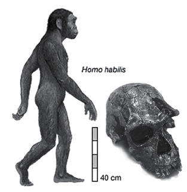

1. BÖLÜM - BİLİMİN SAFSATAYA YANITI
Bilim insanları, fosil sergileri ve
Yaratılış Atlasları’ndaki
Harun Yahya safsatalarını
tek tek yanıtlıyor...
İDDİALAR
Madde sadece ruhun gördüğü algılardan ibarettir / Tesadüfler karmaşa ve düzensizlikten başka bir şey oluşturmaz / Canlılık tesadüfen oluşmamışsa, bilinçli bir biçimde var edilmiştir / Karmaşık biyolojik yapılar, son derece zayıf olasılıkların bir araya gelmesiyle oluşmuş olamaz / Canlılar kusursuzdur, “yetkin yaratılmıştır” / İnsan var olduğu günden bu yana yüksek bir kültüre sahiptir.
YANIT
Evrim Aldatmacası’ndan Yaratılış Atlası’na mantıksızlıklar silsilesi1
1 Bu makalenin ilk bölümünü Alâeddin Şenel 1998’de Harun Yahya’nın Evrim Aldatmacası adlı kitabını eleştirmek amacıyla yazmıştı (Bilim ve Ütopya, Aralık 1998, Sayı: 54). Aradan 9 yıl geçtikten sonra, Sayın Şenel’den, bu kez Harun Yahya’nın Yaratılış Atlası’nın bazı bölümlerini ele almasını rica ettik. Bizi kırmayarak, makalenin ikinci bölümünü yazdı. Böylece 9 yıl arayla yazılmış iki bölümden oluşan bu makale ortaya çıktı. Ve bu haliyle, Bilim ve Gelecek dergisinin 38. sayısında (Nisan 2007, s.8-15) yayımlandı.
Yoktan yaratma, bilim dünyasının kavramı değildir. Bilimsel açıklamalar, maddenin ve enerjinin yoktan var, vardan yok edilemeyecekleri varsayımlarına dayandırılır. “Bilimsel yaratılışçılık” bir düşünsel ucubedir. Evrim kuramının gerçeği yansıtmadığı yolundaki savlar bundan 50 yıl önce kulağa hoş gelebilirdi. Artık çok geç. Biyoteknoloji uygulamalarıyla birlikte, evrim artık “kuram” sayılmaktan çıkmış, bir olgu konumuna yükselmiştir.
Doç. Dr. Alâeddin Şenel
Ankara Ünv. Siyasal Bilgiler Fak. Emekli Öğretim Üyesi
EVRİM ALDATMACASI MI, DEVRİN ALDATMACASI MI?
Bugünlerde bir kitap ortalıkta “hayalet” gibi dolaşıyor: Evrim Aldatmacası (Evrim Teorisinin Bilimsel Çöküşü ve Teorinin İdeolojik Arka Planı). “Kendini” kentten kente, caddeden caddeye “atıyor.”2 Nereden çıktı? (Vural Yayıncılık, İstanbul); ne zaman çıktı? (Hiçbir yerinde basım tarihi yok); kim yazdı? (Ön kapakta “Harun Yahya” diyor; arka kapakta açıklanıyor: “Harun Yahya müstear ismini kullanan yazar... ayrıca Cavit Yalçın müstear ismini de kullanmaktadır” -ne açıklama ama); kim çıkardı? (İçinden, gerisinde Bilim Araştırma Vakfı’nın bulunduğu anlaşılıyor; ya onun gerisinde kimler var; kimlerce destekleniyor o karanlık); çıkaranların amacı ne? (Kitaba karşı, evrime sahip çıkanları “yaradan”a inanmıyor diye gösterip, dar-ül harb’de içteki imansızlara cihat açmak mı?)3
2 Gerçekten, elimdeki kardeşimin bir sokakta, duvar dibinde bulup getirdiği kopyası.
3 Aynı tarihlerde Ankara Üniversitesi Bilgi İşlem Merkezi’ne sızmış admin@hilafet.com adresli “Cumhuriyet bayramı kutlamaları konusunda, Müslümanlar’ın tavrı ne olmalıdır” başlıklı e-postadaki şu sözler, böyle bir olasılığı düşündürebilecek niteliktedir: “Hayatımızın tüm boyutlarını kirleten, fertlerin ahlakını bozan, toplumu kokuşturan, Kuran’ın tabiri ile ‘pislik’ kelimesi küfür sistemi (olan) Cumhuriyeti ortadan kaldırıp ‘güzel’ kelime olan tevhid esasına dayalı İslami hayatı hakim kılacak ve insanlığa hidayet ve nuru davet ve cihat yolu ile aleme taşıyacak olan Reşidi Hilafet devrini kurmak için samimi cemaat ile çalışmak gerekir.”
Harun Yahya’nın bu e-postanın yazarı gibi hilafetçi olup olmadığı yolunda elimde bilgi ve ipucu yok. Olmasa bile, bu kitabın hilafetçilerin üzerindeki etkisinin ne olabileceği yolunda bir görüşüm yok. Ancak hilafetçilerin dünyayı “dar-ül-İslam” ve “dar-ül-harb” olarak ayırıp, Türkiye’yi bu ikinci ülkeler içine sokmaları, bu tür kuşkuları besleyebilecek olgular.
Değil malların, canların bile parayla alınıp satıldığı şu zamanda niye parasız dağıtılıyor? Kaçıncı baskısı? Kaç tane dağıtıldı? Daha kaç tane dağıtılması hedef alındı? Ve kapağı niye 1985 yılında Sosyal Yayınlar’ca basılan: Amerikan Bilimler Akademisi, Bilim ve Yaratılışçılık başlıklı, Akademi’nin ilgili inceleme komitesinin çeşitli bilim dallarından 11 üyesince kaleme alınan ve Bilimler Akademisi tarafından oybirliğiyle benimsenen “bilimsel yaratılışçılık” savlarına yanıt olan görüşleri içeren yapıtın Engin U. Akkaya tarafından Türkçe çevirisinin kapağına benzetilecek biçimde “dizayn” edilmiş?4 Kitap 126 sayfa. Lüks baskısı Ankara’da profesörlerin odasına (Aydınlansınlar diye olmalı ya da Sivas’takiler gibi “aydınlatırız” diye de olabilir)5 bırakılıyor. İstanbul’da kitap fuarında (gerçeğe acıkanlara!) üçer beşer sandviç gibi dağıtılıyor.
4 Amerikan Bilimler Akademisi’nin raporunda, “bilimsel yaratılış” ile ilgili görüşleri, akademi üyelerince şiddetle terslenen Prof. Gish’in ve Prof. Morris’in görüşlerine sahip çıkılıp kendileri Amerika’dan çağırılıp, “Evrim Teorisinin Çöküşü: Yaratılış Gerçeği” başlıklı konferanslar dizisinde konuşturulduklarına göre, yapıt apaçık söz konusu yapıtın (kitabının) Türkçe okurlar için hazırlanmış yanıtı. Bu ara Prof. Gish’in başkanı olduğu ABD Yaratılış Enstitüsü’nün Türkiye’deki kopyasının Bilim Araştırma Vakfı adını almış olması gözden kaçırılmamalı.
5 Kitapta (s.9) evrimcilerin, sahte dincilerin “Allah adına uydurdukları sahte dini halka İslam olarak tanıtan zihniyetin her türlü rezilliğini ortaya dökerek” istemeden de olsa Allahın buyruğunu yerine getirdikleri söyleniyor. Ve Allahın bu din düşmanlarını birbirine kırdırarak gerçek dini ayakta tutmasıyla ilgili görülen şu ayet aktarılıyor: Bakara 251: “Eğer Allah’ın insanların bir kısmı ile bir kısmını defi (engellemesi) olmasaydı, yeryüzü mutlaka fesada uğrardı.”
Bir görüntünün görüntüler dünyası
Kitabın iki bölümden oluştuğu söylenebilir (Bu bir kitap tanıtma yazısı değildir). 12. sayfaya kadar evrim kuramına “bilimsel” denebilecek savlarla karşı çıkılıyor. Bu sayfada görüntü birden değişiyor. Yazar dinsel hatta, mistik bir görünüme bürünüyor ve özetle şöyle diyor: “Dış Dünya” olarak bilinen şey, “yalnızca” duyu organlarımızdaki sinirlerimize ulaşan uyarıcıların yol açtığı “elektrik sinyallerinin” beyinde yarattığı etkidir. (s.121) Beynimizi de dışarıda bırakmaksızın gördüğümüz her şey, aynen televizyon ekranındaki gibi (s.122) bir hayal, bir görüntüdür. Ve sonul yargı (s.121’de) veriliyor: Bunların hepsi hayalse, görüntüyse, “Gerçek olan şey ruhtur. Madde ise sadece ruhun gördüğü algılardan ibarettir. (Algı yanılmalarıdır demek istese neyse.) Tüm bunlar görüntü ise gerçek olan Allah’tır.”
Yazarın yaptığı, idealizmin bilinen taktiğidir: Biliyoruz ki, cansız madde tek başına (candan, ruhtan bağımsız) vardır. Ama can, ama ruh denilen şeyler (duygu ve düşünceler) ancak madde ile birlikte görülürler, madde ile birlikte var olabilirler. Komaya girmiş bir insanda olduğu gibi beyni moleküllerine çözülmüş bir insanda da duygu, düşünce ummak boşunadır. Buna karşın, madde ile canın ve ruhun “ayrılmazlığı” çiğnenir, kafada önce nicelik-nitelik, organ-duyu, madde-mana (anlam), madde-ruh ayrımı yapılır. Sonra bu ikinciler birincilerin üzerine çıkarılır; en sonunda birincilerin varlığı yadsınır. Gerçeklik tam anlamıyla tepetaklak edilmiştir. Yazarın da yaptığı budur. Ancak bunu yapış biçimi “ilginçtir”: “Bu yazıları okurken içinde olduğunuzu sandığınız odanın aslında içinde değilsiniz... Aksine oda sizin içinizdedir.” (s.115)
Düşünüyorum, öyleyse yokum
Bildiğim kadarıyla felsefe, düşünce tarihinde, hiçbir düşünür, yazarın bu yolda ulaştığı “başarıya” (!) ulaşamadı. Bir şeyin yokluğunu kanıtlayarak başka bir şeyin varlığını kanıtlama mantığını ileri sürme yürekliliğini (!) kimse gösteremedi. Bu bakımdan solipsizm bile yaya kalır. Gerçekten, solipsizmde de zihindeki tüm görüntülerin nesnel varlığı yadsınmakla birlikte, kişinin kendisinin varolduğu kabul edilir; bunu yansıtan bir adlandırmayla, saygınlığı ilgili çevrelerde sıfıra yakın olan bu felsefeye Türkçe’de (tek ben varım savına göndermeyle) “tekbencilik” denmektedir. Yazar “beynini” de görüntü sayıp, onun nesnel varlığını da yadsımış olmaktadır. Onunla birlikte o sayfaya kadar evrim kuramını yıkmada kullandığı maddeyle, fosillerle, hücrelerle ilgili olarak kendinin öne sürdüğü tüm olguları ve bilgileri (ayrımında olmasa da) yadsımış bulunmaktadır. Kısacası, dönüp kuyruğunu yemeye başlayan masal ejderi gibi kendini yiyip bitirmektedir. Kendi savlarını kendi yıkmaktadır, hepsini görüntü, dolayısıyla yok sayarak. Sonuçta Descartes’ı da tersine çevirip, “Düşünüyorum, öyleyse yokum” gibi bir noktaya varmaktadır. (Kafamdaki kendi simgem, varlığım hakkındaki düşüncem, aslında bir görüntüdür; öyleyse yokum.)
Nesne-görüntü ilişkisi: Telefondaki ses analojisi
İşin aslı son derece yalındır. Yazarın “görüntü” dediği “simgelerdir”. Elbette gözümüze, beynimize taş, taşın parçası, kum taneleri girmez. Beynimizde onun görüntüsü oluşur. Ancak iki türlü görüntü vardır: Nesnel karşılığı bulunan ve bulunmayan görüntüler, nesnel karşılığı bulunan ve bulunmayan simgeler. Yaşamımda hiç cin görmedim, kimsenin cin görüp ya da cinlerin varlığını algıladığını sanmıyorum. Ama cin içkisini fazla kaçıran bir kimse cin görebilir; kafasında cin imgesi, cin simgesi, cin görüntüsü oluşabilir. Gerçekte ise önünde yalnızca boş Gin şişesi vardır.6 Yazar karşılığı olan ve olmayan görüntü ayrımını (bilerek mi, bilmeyerek mi?) yapmıyor.
6 Bu örneği, geçenlerdeki bir konuşmamda, izleyicilerden bir arkadaşın katkısına borçluyum.
Bu konuyu bir örnek ile noktalayacağım: Telefondaki ses, sevdiğim kimsenin sesinin beynimdeki yankısı, sözleri (simgelerle gönderdiği duygularının, düşüncelerinin simgeleri) olup, elbette onun karşı karşıya iken duyduğum sesi değildir. Duyguları, düşünceleri ve sesi birçok kodlamalardan, dönüşümlerden geçmiştir. Ses titreşimi olmuştur, telefonun ağızlığının diyaframını titreştirmiştir ve bu titreşim elektrik dalgaları oluşturup kulağıma, beynimin işitme odağına gelmiştir. Tüm bunlara karşın duyduğum sesi sevdiğimin sesi saymamda sakınca yoktur. Kuşkulanırsam ertesi gün kendisine sorabilirim: “Dün telefona sen mi çıktın?, ‘Öf be’ diye sen mi konuştun”, “Evet, özür dilerim sesini algılayamadım. Gene o adam rahatsız ediyor sandım, kapattım.” “Üzülme, üşütmüşüm, boğazım ağrıdığı için sesim perdelendi.” Sorun bitmiştir. O sesin, o simgenin nesnel karşılığı varmış. Nesneler insanların beyninin dışında vardır. Beyindekiler yalnızca simgeleridir. Simgeleri olmaları, onların nesnelerinin olmadıkları anlamına gelmez. Bıçağın görüntüsü, bıçağı kaydırdığımızı gösterdiğinde doğruyu göstermiştir. Duyduğum acı, akan kan, görüntü değildir. Sevdiğim kişi de görmüştür. (Bilindiği gibi felsefede buna, objektivizme yakın bir anlamla, “entersübjektivizm” denmektedir.)
Rastlantıya7 karşı “dizayn”8 kanıtı
7 Yazar bir yerde (s.8) tesadüf ve rastlantı sözcüklerini yan yana kullanmaktadır. Farklı anlamlarda kullanmışsa açıklamalıydı. Bu yolda bir açıklanmaya rastlanmıyor. O zaman bizim zamanımızda ortaöğretimde öğretilen şu tekerlemeyi anımsatmakta yarar var: “Bab-ı Ali kapısından mürur edip geçerken / Tesadüfen rast geldim bir atlı süvariye ben.”
8 Kitapta (s.5) bilinçli dizayn teorisinin önde gelen adı olan Amerikalı mikrobiyolog Prof. Behe’nin “Son kırk yıl içinde hücreyi araştırmak için gerçekleştirilen tüm çabalar, çok açık biçimde, bağıra bağıra tek sonucu veriyordu: Dizayn” (yani tasarım) sözleri aktarılmaktadır.
Varlığa mutlak “görüntü” penceresinden bakan bir kimsenin, işin başında yadsıdığı nesneyi ve onun hareketini (olguları) kavraması beklenemez. Gene de yapıtın başına dönüp, evrime karşı getirdiği ve “bilimsel” dediği belli başlı kanıtlara bakalım. Moleküler biyoloji ve evrim biyolojisini ilgilendiren kanıtların değerlendirilmesini uzmanlara bırakarak, kanıtların genel bilimsel değerleri üzerinde duracağım:
“Bilim adamlarının bir bölümü tesadüflerin karmaşa ve düzensizlikten başka bir şey oluşturmadığını gözleriyle gördükleri halde, evrendeki ve canlılardaki tasarımın ve düzenin tesadüfen ortaya çıktığını savunurlar.”
Önce, bu kanıt, evrende her şeyin bir düzen (yetkin bir Tanrısal düzen) içinde olduğu yolundaki saf dinsel inanca dayanır. Ancak, günlük deneyimlerimiz kadar bilimsel saptamalar da9, hem cansız doğada hem canlılarda düzen kadar düzensizliğin de bulunduğunu göstermektedir: Gökcisimleri birbiriyle çarpışmakta, atmosfere meteorlar yağmaktadır. İnsan beyni son derece karmaşık bir örgüttür (düzendir), ancak bir kurşun bu düzeni darmadağın etmektedir. Sağlık bedenin belli bir düzen durumudur. Hastalıklar bu düzeni altüst edip bırakmaktadır. Genlerde belli bir andaki düzen, bir mutasyonla bozulmakta, bunu (söz konusu mutasyon o canlının yok olmasına yol açmamışsa) yeni bir düzen izlemektedir. Canlılık bir düzen ise, ölümle sonuçlanan bir hastalıkla, söz konusu canlının molekülleri bir düzensizlik ardından, cansız doğanın düzenine geri dönmektedir.
9 François Jacob, 1965 yılında Nobel Ödülü’nü alan Fransız genetikçi (Mümkünlerin Oyunu, Çev. Turhan Ilgaz, İstanbul, 1996, Kesit Yayıncılık, s.78) doğada canlılar arasında organlarda Darwin’in de gözlemlediği eksikliklerin fazlalıkların bulunduğunu söyledikten sonra, doğanın yetkin tasarımlar yaratmaya çalışan bir mühendisten çok, elinin altında ne varsa onlarla karşısına çıkan sorunları çözmeye çalışan bir yaptakçının (bricolage) işine benzetilebilecek biçimde işlediği sonucuna varmaktadır.
Rastlantıların düzensizlikten başka bir şey doğurmadığı görüşü de doğru değildir. Rastlantılar, bir düzeni bozabilecekleri gibi, onu bozup yeni bir düzen getirebilir. Gerçekten bir mutasyon, bir canlının (eski) düzenini bozup (canlı bunun sonunda yaşar kalabilmişse) söz konusu genin kopyalanması (redüplikasyonu) ile, o canlıda yeni bir düzen doğabilmektedir. Ve bunu bilebilmek için moleküler biyoloji uzmanı olmak gerekmemektedir.
Peki rastlantı nedir? a) İnsanın bilinçli, amaçlı eylemiyle bir araya getirilen cansız nesnelerin yol açtıkları dışındaki tüm olaylar; b) Canlılarda, genlerin kopyalama, organların onlarla bağlantılı sıradan işlevleri dışındaki tüm değişmeler; c) İnsanlarda bilinçli, kasıtlı olanlar dışındaki tüm karşılaşmalar rastlantıların ürünüdür. C (karbon) ile 02 (oksijen) kasıtlı, bilinçli buluşmazlar. C ortamına herhangi bir nedenle dalan 02, onunla (rastlantı sonucunda) tepkimeye girer. Bir esinti, çiçek tozunu savurup, çiçeğin dişilik organına yapıştırabilir. Bunu, çiçeğin balını emmek amacındaki bir arı da, bilinçsiz, kasıtsız olarak yapabilir. Bunların arkasında bir amaç, bir tasarım arayan kimse10, yumurtayla buluşamayan milyonlarca spermi, döllenmeyle sonuçlanmayan binlerce çiftleşmeyi de açıklamak zorundadır; ya da “hedefine ulaşamayan” bu hareketleri söz konusu amacın sahibi olan gücün başarısızlığına vermelidir. Rastlantı konusunda kitapta (s.4) şunlar da söylenmektedir:
10 Jacob (s.124’de) bu konuda “Maddeyi kuran parçacıklara bir tür ‘psike’ (ruh) atfetmek hiçbir sorunu çözmüyor. ‘Yaşam’ın moleküllerin kendi aralarındaki düzenlenişinin bir ürünü olması gibi ‘zihin’in de beyin düzenlenişinin bir ürünü olduğu sonucuna varmaktan kaçınmak oldukça zordur” diyor.
Canlılık tesadüfen oluşmamışsa, bilinçli bir biçimde var edilmiştir... yaratılmıştır, bu gerçek yalnızca bir inanç biçimi değil, akıl, mantık ve bilimin11 vardığı ortak bir sonuçtur.
11 Yaratılışın bilimin de ulaştığı bir sonuç olduğunun söylendiği sayfanın hemen ardında (s.6) “Bilim dünyasındaki önde gelen isimlerin önemli bir bölümünün ateist olmalarının nedeni dogmatik materyalist bakış açısıdır” deniyor. Ve bu durumun açıklanması için “kitaba” sığınılıyor: Enam, 111 “Onlara melek indirseydik, onlarla ölüler konuşsaydı yine inanmayacaklardı.” (Ne diyelim? Hele bir melek indirilsin, hele bir ölüler konuşsunlar o zaman düşünürüz, siz de yargınızı o zaman verirsiniz!) Sürdürerek, evrim teoricilerinin, evrimin büyüsü, telkini altında beyinlerinin muhakeme yeteneğinin, algı ve şuur mekanizmalarının bozulduğu söyleniyor. İnsan aklına, ister istemez zikirler, Mevlut’deki “Her nefeste Allah adı di müdam, Allah adıyla olur her iş tamam” sözleri, bismillah ile atılan adımlar geliyor.
Bu, bir varsayım (oluşmamışsa varsayımı) üzerine, okuru ikili olasılık (ikili seçenek) kıskacına alıp, ona birini dayatma taktiğidir. Bilimsel bir dürüstlükle bir üçüncü olasılık göz önüne alınarak “Canlılığın nasıl oluştuğunu daha bilemiyoruz” denebilirdi. Bir dördüncü olasılık olarak, yalın cansız yapılardan “karmaşık, simetrik, örgütlü yapılara geçilmesiyle oluştuğu savları da var” denebilirdi. Bunlar söylenmiyor, evrimci bilim adamlarının yaratılışı kabul etmemeleri “inanç” ile açıklanıyor. İnancın hangi kafaların ne denli “saygın” tutumu olduğu anımsanmış olmalı ki (s.4) inançlar ikiye ayrılıyor: Batıl inançlar ve batıl olmayan inançlar (diyelim batıl inançlar - atıl inançlar) ayrımı yapılıyor. Hangi inancın batıl olup hangisinin batıl olmadığına kim karar veriyor? İnanan taraflardan biri.
Rastlantının, cansız yaşamdaki (düzendeki), canlı yaşama geçişteki, mutasyonlardaki ve evrimdeki (kitapta ikide bir eleştirilip yadsınan) rolü hakkında son olarak şu söylenebilir. Rastlantı ürünü tepkimeler keyfi değildir. Birbirlerine ne kadar çok rastlarlarsa rastlasınlar, altın ile oksijen birbirleriyle tepkimeye girmezler. Girenler (en elemanter kimya bilgisine göre) elektron durumlarına, kovalent bağlarına göre, bir düzen, bir yasalılık ürünü olarak girerler. DNA’daki genetik materyale yenilerinin katılması, eskilerinin çıkması, yer değiştirmeleri de rastlantı+ olanaklıklara göre olur. Nobel Ödüllü moleküler biyolog François Jacob, bu nedenle yapıtına Mümkünlerin Oyunu (Fransızca ilk baskısı 1981, Türkçe çevirisi 1996) adını vermiştir. Rastlantı ürünü bir mutasyon, DNA’nın kopyalama sistemine girince, rastlantısallıktan çıkıp, kaostan kurtulup, örgüte, düzene girmiş olur. Formülleştirirsek, tepkileşmeler, Zorunluluk-Rastlantı-Zorunluluk (Z-R-Z) biçiminde işler.
“Olasılığa” karşı “olan”
Yazarın en çok güvendiği kozlardan biri de, evrim kuramını, onun en sağlam kalesi olan moleküler biyoloji alanında yıkıp teslim almak (ve yerine yaratanı koymak) düşüyle kullandığı “olasılık” kavramı: İlk canlının karmaşık bir dev molekülün oluşmasıyla ortaya çıktığı evrimci savına karşı, hesap kitapla (s.69’da) “500 aminoasitlik bir protein molekülünün meydana gelmesi ihtimalinin 10950’de 1 olduğu” bulunur. “Matematikte 1050’de 1... istatistiksel olarak gerçekleşme ihtimali ‘0’ olan bir ihtimal olarak tanımlanır” notuyla, böyle bir olasılığın “sıfır” olacağı sonucuna varılır. Bu hesapta (s.61’deki) “hücrenin yaşamını sürdürebilmesi için, bütün temel parçaların ... aynı anda ve aynı yerde var olmuş olması” koşulu aranmaktadır. Böyle bir olasılık sıfır görülerek, söz konusu yapının yaratılış dışında hiçbir açıklamasının olamayacağı söylenmektedir. Hatta (s.66’da) evrendeki elektronlarının toplamının bile 1079 olduğu anımsatılarak, bu tür varoluşun olanaksızlığı vurgulanmaktadır. İyi de, bu hesap niye evrimcilerden soruluyor; yaratancılardan, sihirbazlardan sorulmuyor? Evrendeki bütün elektronların toplamını aşan bir olasılıkla, ilgili molekülleri “aynı anda ve aynı yerde ve belli bir düzen içinde bir araya getirme”, evrimcinin doğada karşılaşıldığını söylediği bir olgu değildir. Bir yaratanın yaratma işlemi olabilir. Hesap, yaratanın ya da bir büyücünün, onu “Ol” sözüyle ya da bir el hareketiyle yoktan var ettiği savına inananlara sorulmalıdır.
Adı üzerinde, “evrimci sav”, hem cansız hem canlı doğada, yalından karmaşığa, zamanla (milyarları bulan yıllar içinde; milyonlarca, belki milyarlarca tepkimeyle) evrimle, gittikçe daha karmaşık yapılara geçildiğidir. Formülleştirirsek, süreç, sözgelimi ilkin iki elementle başlamıştır; a ile b’nin birleşmesi olasılığı diyelim yüzde 50’dir; ab oluştuktan sonra ona c elementinin takılması da yüzde 50; abc’ye d elementinin takılması da yüzde 50; ya da ona benzer olasılıklar. Tümünün bir anda oluştuğu savı ve bunun olanaksız olasılığı, evrimcilere yüklenemez.
Gerçekten, binyıllık bir çınarın o anki biçimini almasında milyarlarca rastlantı (insanın ya da bir yaratıcının kastının ürünü olmayan olay anlamında rastlantı) devreye girmiş olabilir. Ama bunlar “olasılık” değil, “olan” şeylerdir. Olanın olasılığı olmaz. Sonucu alınmış olan maçı kimin kazanacağı yolunda olasılık hesapları yapılmaz. “Olan olmuş, biten bitmiştir.”12 Böyle bir olanaksız olasılıktan, o çınarın o biçimiyle yeniden ve bir anda oluşturulması tartışılırken söz edilebilir. Ki bu da, yaratmadan başka bir şey değildir. Olanaksız olan, zaman (olayların ardı sıralığı) olgusunu dışlayan yaratmadır.
12 Bu deyişi bir öğrencimin yazılı kâğıdındaki (başka bir bağlamda ve bir başka anlamda kullandığı) sözden aldım.
Hele yoktan yaratma, bilim dünyasının kavramı değildir. Bazı dinlerde bile, yaratan için, daha önce var olan kaos durumunda bulunan maddeye biçim, düzen verme savıyla yetinilir. Yaratılan şey, yazarın söylediği gibi “görüntü” bile olsa, varlığı bir beyni, ona ulaşan bir dalgayı ya da elektrik sinyallerinin ve uyarıcının kaynağı maddelerin varlığını gerektirdiğinden, yoktan var edilemez. Bilimsel açıklamalar, maddenin ve enerjinin yoktan var, vardan yok edilemeyecekleri varsayımlarına dayandırılarak işletilir. Yaratış savında elbette bulunulmuştur; bulunulabilinir. Ama bu savlar, kampusun dışında ileri sürülmelidir. Varlığın, olguların, olayların, ereksellikçi yaratış kavramıyla açıklanması dine özgüdür. Nedensellikçi varoluş kavramıyla işletilen bilimsel açıklamayla birleştirilemez. Bu nedenle “bilimsel yaratılışçılık” bir düşünsel ucubedir. Harun Yahya da bu iki birleşmezi birleşmeye zorlarken, bir ucube yaratmaktadır: Varlığın ve olayların, yalnızca kafamızdaki görüntüler olup, onların aslında var olmadıklarını söylemektedir. Var olanın görüntüleri yaratan Allah olduğunu, üstelik görüntüleri, bir kez yaratıp bırakmakla kalmayıp, her an yeniden yarattığını (görüntü dediği beyniyle) kavramıştır. (?) Ki bu, bilime uymadığı gibi, gelmiş geçmiş hiçbir dine de uymamaktadır; ne de günlük yalın pratiklerimize uymaktadır. Bir açlığı, bir acıyı giderebilirsiniz. Ama acı, ama açlık bir görüntü ise, onu değiştirmeye gerek kalır mı? Değiştirmek istesen de nasıl değiştirebilirsin? Açlığa yol açan nedeni (ya da görüntüyü) üstelik Tanrı görüntüleri her an yeniden yaratırken, sen, neden olan görüntüyü onu etkileyerek değiştirip sonuç olan görüntüyü değiştirmeyi nasıl umabilirsin. En iyisi otur oturduğun yerde.
Yazar, Allah’a görüntüyü her an yeniden yaratma keyfini tanıdıktan sonra, olayların ardı sıralığı (düzeni) ile ilgili bir sorunun yandaşlarına sorulması durumunda düşülecek güçlüğü görmüş. Bunun da bir açıklamasını sunmuş. Yağmurdan kaçarken doluya tutulmaya benzese de, açıklama (s. 124) şöyle: “Allah görüntüleri bir sıra, bir düzen ile yaratır”; “bir çiçek görüntüsü yaratmadan önce, bir tohum görüntüsü yaratır”! Neden? Yanıtı yok. Buna söyleyecek hiçbir sözüm yok!
Yazarın ileri sürdüğü görüntünün karşılıksızlığını (yokluğunu) göstermek için harcadığım bunca zamana doğrusu acıdım. Elime hiçbir şey geçmeyeceğini ve okuyucuya bilinenler dışında bir şeyin varlığını gösteremeyeceğimi, işin başında biliyordum. Benimkisi bir hayaleti kovalamak oldu.
Damla damla
Yazarın bilime bazı katkılarını (!) anmadan geçemeyeceğim:
Bilim, Allah’ın kanunlarını keşfetmeye, açıklamaya ve kayda geçirmeye yardımcı olan yöntemler bütünüdür. (s.8)
Tapınaklarda hangi yasalar keşfediliyor acaba?
Hücrenin değil kendisi, mitokondri, ribozom vs. organellerinden bir tanesi bile sentezlenemez.13 (s.60)
13 Yazarın Urey-Miller (1953) deneyi benzeri deneylerden kaçınıldığını yazmasına karşılık, bkz. Gözen Erdem, “İlk Canlının Ortaya Çıkışı”, Cumhuriyet Bilim Teknik, No: 581, (1998)’de bu yolda yeni yeni deneylerin yapıldığı, bunlarda da biyo-organellerin elde edildiği anlatıldıktan sonra, yazarın ABD’li meslektaşlarıyla gerçekleştirdiği (1992’de Science dergisinde yayımlanan) araştırmalarından söz edilmektedir. Buna göre proteinlerden önce oluştuğu kanıtlanan en kısası 70 zincirli olan RNA molekülünün laboratuvarda 14 zinciri sentezlenmiş bulunmaktadır. Araştırmacı yazar, tümünün sentezlenebileceğinden kuşkusunun bulunmadığını yazmaktadır.
Canlılığın her aşaması bizlere Allah’ın varlığını ve gücünü kanıtlayan bir delil niteliğindedir.14 (s.78).
14 Jacob, (Mümkünlerin Oyunu, s.11’de) bunun tam karşıtı bir görüşle, “Bu kavram bugün bütün biyolojiye egemendir; çünkü en çeşitli alanlarda, onsuz yalıtılmış bir durumda kalacak gözlemler yığınını bir araya getirmektedir. Çünkü yaşayan dünyanın ve onun olağanüstü çeşitliliğinin bir açıklamasını sağlamaktadır” dedikten sonra (s.49-50’de) şunları söylemektedir: “Evrim izleri bugün, hücrelerimizin her birinde karşımıza çıkmaktadır. Yüzyılımızın başından bu yana birikmiş olan verileri modern Darwincilik’e çok yakın bir kuram olmaksızın açıklamak artık imkânsız hale gelmiştir. Bu kuramın bütünlüğü içinde bir gün çürütülebilme olasılığı, şimdiki halde sıfıra yakındır.”
Yaşam, organizmayı oluşturan parçaların ya da moleküllerin bir arada bulunmasından çok daha öte metafizik bir kavramdır. Yaşam Allah’ın ‘Hayy’ (hayat sahibi) sıfatının yansımasıdır. Ancak O’nun dilemesiyle başlar, sürer ve sona erer... Her şey gibi yaşam da Allah’ın tek bir ‘Ol’ emri ile olur. (s.86)
Tabiat kanunları dediğimiz şeyler Allah’ın görüntüleri bir düzene göre yaratmasından başka bir şey değildir... Gemilerin sürekli yüzer şekilde yaratılmasını bizler suyun kaldırma kuvveti olarak yorumlarız. Gerçekteyse ayetlerde ‘kuşları gökte Allah’tan başkası tutmuyor’ veya ‘gemileri sizin için yüzdürür’ gibi ifadeler, doğada herhangi bir güç olmadığı, Allah’ın olayları bu şekilde düzenlediğini anlatmaktadır.15 (s.124).
15 Jacob, (s.118’de) sanki kafasında Harun Yahya için yanıt hazırlamış gibi: “Eğer maymunun üstüne zıplamak (sıçramak) istediği dal için oluşturduğu görüntünün gerçekle hiçbir ilgisi bulunmasaydı, ortada maymun kalmazdı” diye yazmaktadır.
YARATILIŞ ATLASI’NA ELEŞTİRİ: EVRİM ARTIK BİR OLGUDUR
Büyük Patlama (bugün için) hâlâ bir kuram konumunda bulunsa da, evrim “kuram” sayılmaktan çıkmış bir olgu konumuna yükselmiştir. “Yaratılış” bir inanç olmasına karşın doğrulanmış olmasa da, yanlışlanabilir olmasına bakılarak bir kuram sayılabilir. “Yetkin yaratılış” ise olgulara uymayan “yanlışlanmış kuram” durumundadır. “Bilimsel yaratılışçılık” savına gelince, bilimsel nedensellikçi epistemolojik anlayışla elde edilmiş bilgilerin ereksellikçi inançlar için (kötüye) kullanımı olup “kuram” değeri bile yoktur. Bir düşünsel ucubedir. Neden?
Yukarıdaki Evrim Aldatmacısı kitabı için söylenenler Yaratılış Atlası için de söylenebilir. Savlar değişmemiştir. Ne var ki geçen süre içinde eleştirilen kitap (altı kiloya çıkıp) ağırlaşınca, eleştiriler hafif kalmıştır. Buna oranla eleştiriler de ağırlaştırılmalı, “Kültürel evrim geçirilmemiştir” gibi yeni desteklere yeni eleştiriler getirilmelidir.
Ne var ki, eleştiri konusunda “bilime karşı dinden yana” olanların (avantası var mı bilmiyorum ama) bir avantajı vardır: Ulaştıkları (ilkokul öğrencisinden16 milletvekillerine) insanlar, fosillerin anlamını ve yorumunu onları ortaya çıkaran uzmanların yazılarını ve yorumlarını okumadan söz konusu yapıttan öğrenmektedirler. Paleontologların, arkeologların, paleoantropologların, paleobotanikçilerin, zoologların, fizik antropologların, kültürel antropologların, ileri çözümleme ve tarihlendirme (örneğin C14 radyokarbon tarihlemesi) yöntemleriyle ulaştıkları bilgileri ve bu bilgilere dayanan evrim biyologlarının, moleküler biyoloji uzmanlarının ne yazdıklarını bilmeden, bu ağır Atlas’ın resimlerinin büyüsüyle etkisi altında ezilmektedirler. Bu soruna çözüm bulunmalı.
16 Atlas bir fakültenin öğretim üyelerine (parasız) dağıtılmış. Bir arkadaşım gösterip “Seni daha çok ilgilendirir, al” deyince, ilkokula başlamış oğlu “Verme, resimlerine bakıyorum” dedi.
Bir kuramın kanıtlanmamış olması, seçenek kuramın doğruluğunun kanıtlanması anlamına gelmez
Yapıtta (yukarıdaki yazıda eleştirilen “bir şey -madde- yoksa, Tanrı vardır” türü) mantık hataları bulunmaktadır. Örneğin bir kuramın kanıtlanmamış olması, ona seçenek kuramın (ya da kuramlardan birinin) doğruluğunun kanıtlanması anlamına gelmez. Doğada nedensel rastlantının değil, erekli düzenin bulunduğu saptanmış olsa bile, bu zorunlu olarak o düzeni belli (tek) bir Tanrının yarattığı (tek) sonucuna götürmez. Söz konusu “düzen” saptamasına ek olarak a) Tanrının varlığının da kanıtlanması + b) O düzeni yaratanın o (tek) Tanrı olduğunun kanıtlanması + c) Ereklediği gibi işlediğinin de gösterilmesi gerekir.
Çünkü ortada aynı değerde başka kuramlar da durmaktadır. Örneğin panteist kuramda Tanrı ile evreni, yaratan ile yaratılanı ayırmayıp, erek, tasarım ve düzenin doğanın içinde bulunduğu, doğanın kendisini yaratan (hiç değilse bilinmeyen varoluşundan sonra) kendi kendini üreten, değiştiren, geliştiren bir yapıya sahip olduğu ileri sürülmektedir.
Bir başka kuram olan Aristotelescilik’te, yaratıcının kabul edilmesine karşın, yaratıcının yarattığının içine “yetkinleşme ereği” (telos) koyup ona ilk hareketi (orimus mobile) verdikten sonra kendi başına bırakıp evrimini izlediği ileri sürülür. Yani yaratış ile evrimin bile birbirini zorunlu olarak dışlamayacağı söylenebilir.
Bu anlayışın bir başka örneğini Katolik filozof Francamer vermiştir.17 Kitabı Mukaddes’te (çoğu kere anlamını düşünmeden) Tanrının insanı kendi suretinde yarattığını (Kuran’da üstelik kendi ruhundan üflediğini - A. Ş.) okuduğumuzu anımsatır. Bunun, insanın da yaratanı gibi bir yaratıcı olduğu anlamına geldiğini söyler. Evrimi yadsımak şöyle dursun, insanın Tanrıyla el ele doğayı ve kendini yetkinleştirme yolunda yürüdüğü sonucuna varır.
17 Bkz. H. Göksel - A. Şenel (çev. ve der.), Biyoteknoloji, Genetik Mühendisliği ve İnsanlığın Geleceği, V Yayınları, Ankara, 1987, dizin.
“Yetkin yaratılma” savı gerçeğe uyuyor mu?
Atlas’ta bir başka mantık hatası (ya da mantık numarası) her bir canlı türünün tek tek ele alınıp okurun, o türün evrim geçirmeyip yetkin olduğu sonucuna zorlanmasıdır. Evrim türler, hatta tüm canlılar çapında bir sorundur. Bir tür ötekilerle karşılaştırılmadıkça elbette birinin (bu ara insanın) daha evrimleşmiş olup olmadığı söylenemez. Ama tek tek ele alınınca türlerin yetkin olup olmadığı da söylenemez.
Örneğin, büyük kedilerden çitanın kaplana göre daha hızlı koşması, bu konuda kaplandan daha yetkin olduğunu söyleme olanağı verir. Ama buradan gidilerek bile tüm türlerin yetkin yaratıldığı söylenemez. Çünkü koşmada kaplan çitadan yetkin değildir. Aslında değil insan, hiçbir canlı türü için mutlak anlamda “yetkin” kavramı kullanılamaz. Bir türün ancak ötekinden “daha yetkin” olduğu söylenebilir. Bu durumda bütün canlı türlerinin yetkin yaratıldığı savı (kuramsal düzeyde bile) güme gider. Bir de “yetkin yaratılma” savını gerçekliğin sınavından geçirelim.
Kedinin “temizlik organları”nın yetkin bir temizlik sağladığını kim söyleyebilir? Kiri yalayıp yutmak mı yetkinliktir, insan gibi yıkamak mı? Kaldı ki “kedi temizliği” bile yetersizdir. Başına ancak patisini yalayarak onun kanalıyla ulaşıp temizleyebilmektedir. Sırtına ise hiç ulaşamamaktadır.
Köpeğe gelelim, yaşamında dişleri kadar önemli olan koşma yeteneği, terleyemediği için darboğaza takılmaktadır. Hızlı enerji kullanma sonucu oluşan suyun dili bir karış çıkarıp nefes nefese kalmakla atılmaya çalışılmasının yetkinlik neresinde?
BBC’nin 2007 başında gösterime giren bir doğa belgeselinde çok özel bir kelebek türü görüntülenmiştir. Baharın bir gününde, ama tek bir gününde kozalarından çıkıp, tırtıllıktan metamorfoz geçirerek kelebeğe dönüşüp, çiftleşip yumurta bırakıp ölmektedirler. “Bir gün de olsa mutlu yaşamışlardır, bu da bir yetkinliktir” denebilir. Ama bir gün yaşamalarının nedeni mutlu olup yaşama doymaları değil (evrimlerinde ters bir mutasyon sonucu olmalı), ağızlarının ve anüslerinin bulunmamasıdır.
“Kamili mahlûkat” (yaratıkların en yetkini) insana gelelim. İlkel dönem yaşadı yaşamadı, geçmişinde yamyamlık vardı yoktu, bir yana bırakalım. Çağımız ilkel topluluklarından biri, emperyalist İngilizlerin adayı ele geçirdikten sonra kafatası avcılığını yasaklamaları üzerine (Gordon Childe’ın Tarihte Neler Oldu kitabında yazdığına göre) yaşamlarının anlamını ve şevkini yitirmiş, içkiye vurmuş, üremez olup yok oluşa geçmişlerdir. İlkel kafatası avcıları mı yetkin, emperyalist İngilizler mi?
İnsanın kültürel evrimi yok mu?
Bu çerçeve daha başarılı uyarlanmayla tanımlanan biyolojik (organik) evrimden çok kültürel evrimle ilgilidir. İslam felsefesinden biyolojik evrimin kabul edilmediği sonucuna varılsa da, kültürel evrimin de yadsındığı söylenemez. İslamlığın “cahiliye devri”nden kurtulması başlı başına bir kültürel evrim sayılmaktadır. Ama biz Atlas’ta görüyoruz ki, (İslam adına mı değil mi, belirsiz) insanlığın kültürel evrimi de yadsınmakta, örneğin taş çağının yaşanmadığı, ilk dinin tektanrılı olduğu ileri sürülmektedir. Bu, kuramda yalnız evrim biyolojisine değil, tarih bilimine de karşı çıkmaktır. Gene kuramı bırakıp duruma bakalım.
Ur kral mezarlarında, Cang şef gömülerinde, İnka, Aztek tapınaklarında, hatta Tevrat’ta, yakılmış çocuk kurbanı sunulan Kenan Tanrısı Molok ile ilgili bilgilerde, kurban (üstelik Tanrı adına kurban) olgusunun binlerce somut kanıtı ortaya çıkarılmıştır. O toplumların insanları da Tanrının yarattığı yetkin canlılardı. Sonra insan kurbanı kaldırıldı. Son örneklerinden biri gene emperyalist İngilizlerin Hindistan’da yasakladığı, ölen Brahman din adamıyla birlikte karısının diri diri yakılarak kurban edilmesi kalıntısıydı. İnsan kurbanı geleneğinin aşılması bir kültürel evrim sayılmayacak mı?
Bu soruya, “İnsan kurbanı kalkmış olsa da, din savaşları, etnik arındırmalar, uluslar arası savaşlar, engizisyon, Naziler çok daha fazla insanı kurban etti” yanıtı verilebilir. O zaman da insanın yaratıldığından beri, yaratıldığı biçimiyle “yetkin” olduğu savı tehlikeye girer. Ayrıca her şeyi her an yetkin yaratan bir Tanrıdan söz ediliyorsa, onun yetkin yaratıklarının bu “düzen”lerine karşı çıkmak, Tanrının yaratışına ve düzenine karşı çıkmak olmaz mı? Sömürüsüz, savaşsız, daha iyi bir insanlık (insanlığın kültürel evrimi) için çaba göstermenin ne gereği kalır? Zaten (Atlas’ın mantığı izlenirse) durumu insan değiştiremez; her şeyi her an Allah yaratıyorsa, insan bir şey yapmıyor, yapamaz demektir. Hadi Tanrı yaptırıyor denirse, bu kez tüm öldürme, yaralama, işkence, Hiroşima olaylarının sorumluluğu Tanrıya yüklenmiş, fatura Tanrıya kesilmiş olmaz mı?
Biyolojik evrim kabul edilmeyip, onun düzeneği mutasyonlar yadsınamayınca, tüm mutasyonların zararlı ve düzeni bozucu olduğu kaçamağıyla kurtulunmak istenmişti. Yanıtı, bunun uzun zamandaki toptan sonucu “tersine evrim” olur diye verilmişti. Kültürel evrimin yadsınmasında da benzeri bir kaçamağa başvurulduğu anlaşılıyor: Totemcilikten, çoktanrıcı dinlerden tektanrıcı dine doğru kültürel bir evrim olmamıştır. Olsa olsa ta baştan tektanrılı olan dinin yozlaştırılmasıyla çoktanrıcılık çıkmıştır, deniyor. Tanrının yetkin yapıtı ve düzeni bu konuda da bozulmaya, yozlaşmaya açık. Kültürel evrim yok, yalnızca kültürel birikim varsa ve değişme hep kültürel yozlaşma yönünde oluyorsa, kültürel birikim de tek geri vitesiyle işleyip insanlığı “tersine evrim” yoluna sokacak demektir. Âlem gider mersine (evrime), biz gideriz tersine. (nereye?)
Evrim düşüncesi, artık bir kuram değil, bir olgunun dile getirilişi
Yaratılış Atlası’nda savunulan görüşlerin neresini tutsan elinde kalıyor. Evrim kuramının gerçeği yansıtmadığı yolundaki savlar, bundan bir 50 yıl önce kulağa hoş gelebilirdi. Artık çok geç. Genetikbilim gelişip biyoteknoloji uygulamaları başlamadan bu yazdıklarınızla, resimlediklerinizle bugünkünden çok daha fazla insanın aklını çelebilirdiniz. Bu olanağınız bugün hızla daralıyor. Bir diyabet (şeker) hastası düşünün. İnsülin iğnesi alacak. Eskiden sığır, domuz karaciğerlerinden çok masraflı bir süreçle süzülen bu hormon, bugün E. koli olarak bilinen bir bakterinin çıkarılan bir gen yerine insanın insülin sentezleyen geninin yapıştırılmasıyla yaratılan yeni bir bakteri türüne ürettiriliyor. Bu iş için 60 milyon hayvan karaciğeri yerine şekerli su dolu 200 kiloluk bir fermantasyon kazanına rDNA (DNA’sı değiştirilmiş) bakteriler bulunan birkaç damla katmak yetiyor.18 Bakteriler şekerli suyla ürerken o genin sentezlediği insülin de çoğalıyor. Sonra bu süzülüp biyoteknoloji ürünü insülin olarak (en az on yıldır) eczanelerde (ineğinkinden çok daha ucuza) satılıyor. Şeker hastası olarak (kitabına inanmış olsanız da) Adnan Hoca’ya değil doktora başvurduğunuzda, reçeteye bu ilacı sarıp elinize veriyor. Genetik yapısıyla oynanmış (yani evrimden geçirilmiş) insülin ilacını evrime karşı olduğunuz için kabul etmeyip kullanmayacak mısınız? Kullanırsanız (ve hâlâ evrime karşıysanız) ürününden yararlandığınız bir gerçeği yadsımış duruma düşmez misiniz?
18 Bkz. agm.
Özetle evrim düşüncesi, artık 50 yıl önce olduğu gibi bir olasılıktan söz eden bir kuram değil, bir olgunun dile getirilişi.19 Laboratuvarda (doğa süreçleri taklit edilerek) gerçekleştirilen bir olayın, doğada, kendiliğinden (evet, evet, rastlantıyla) gerçekleşmesinin önünde ne gibi bir engel var (gene rastlantılar dışında)? Üstelik elimizde böyle bir mutasyonun ve yeni bir bitki türünün evriminin somut kanıtı da var: İnsanlar kültürel evrimle yabani tahıl toplayıcılığından üreticiliğine geçtikten sonra, önce sulama mutasyon yaratıp evcil buğday ırkını oluşturmuştur. Ama bu evcil tahıla Hazar dolaylarında keçiyüzlü ot (Aegilops squarossa) bitkisinin bazı genleri karışınca, hamuruna özmeklilik kazandıran glütenli “ekmeklik buğday” (Triticum aestirum) rastlantıyla oluşmuştur. Rastlantıyla oluşan bu genetik değişikliğin, her tohum bire elli tohumluk başaklarıyla kopyalanınca (redüplikasyon süreciyle) düzenlilik kazanmasıyla, bugün hamurunun (glüten yüzünden) esnekliğiyle analarımızın, aşçılarımızın harikalar yarattığı ekmeklik buğdaya kavuşulmuştur.20 Dolayısıyla evrimin artık bir kuram olmaktan öte bir olguyu yansıttığını göğsümüzü gere gere söyleyebiliriz.
19 Bkz. A. Şenel, İnsan ve Evrim Gerçeği, Özgür Üniversite Kitaplığı yayını, Ankara, 2003.
20 Bkz. A. Şenel, İnsanlık Tarihi, İmge Kitabevi Yayınları, Ankara, 2006, s.313.
Karmaşık yapıların doğması için, evrendeki atom sayısını aşan olasılıklar gerekmez
Rastlantılarda olasılık oranı yanılgısına, çalışmalarında istatistik, matematik yöntemler kullanan ilgili doğa bilimcilerince yanıt verilmiş olmalı ya da verilecektir. Ama bu savdaki zayıf noktayı görmek için doğa bilimcisi olmak gerekmez:
Evrim biyologlarının hiçbirisi, tüm genlerin rastlantıyla bir araya gelmesiyle bir canlı türünün oluşacağını söylemiyor. Söylenen, en yalın yapılardan (bir yaratıcının erekli yaratısıyla değil anlamında) rastlantıyla zaman içinde eklenen moleküllerle giderek karmaşıklaşacağı. Buna göre iki molekülden oluşan bir gen parçasına 3. molekülün eklenmesi olasılığı diyelim yüzde 1’dir. Üç moleküllüye 4.sünün de (geçecek belki 10 belki 100 yıl içinde) eklenmesi olasılığı da yüzde 1 olsun. Böyle böyle yüz binlerce, milyonlarca yıl içinde karmaşık yapıların doğması için hiç de evrendeki atom sayısını aşan olasılıklar gerekmez.
“Karmaşık bir yapının bütün parçalarının aynı anda eksiksiz olarak bir araya gelmesiyle bir organın ya da canlının yaşamaya işlev göstermeye başlaması” olanaksız derecede olasılığı gerektirip, tam da “yaratma” savına yöneltilebilecek en güçlü eleştirilerden biri olup, bunun bilimsel yaratıcılık savını savunan yazar(lar)ca geliştirilmiş olması, (böyle bir amaçları olmadığına göre) rastlantının kendilerine oynadığı acı bir oyun olmalı!
İDDİA : Genom projesi, evrim teorisi lehinde hiçbir bulgu ortaya koymamaktadır
YANIT: Genom projesi, evrim kuramının geçerliliğini gözler önüne serdi
“Genom projesi, evrim teorisi lehinde hiçbir bulgu ortaya koymamaktadır. Aksine, canlılar arasında DNA ve gen yapılarına dayanılarak, bir ‘evrimsel hayat ağacı’ oluşturulamayacağını ortaya koymuş ve Darwinizm’e büyük bir darbe indirmiştir.”
(http://www.harunyahya.org)
Doç. Dr. Ergi Deniz Özsoy
Hacettepe Ünv. Biyoloji Bölümü Öğretim Üyesi
Genom projelerinin evrim kuramının geçerliğini bir kez daha-ayrıntılı olarak-gözler önüne serdiği ve evrimleşmenin dışında, canlı varlığı ve çeşitliliğini açıklayan başka herhangi bir yaklaşımı mutlak biçimde dışlayan bir olgusal kesinlik sağladığı iyi bilinir. Görece daha az sayıda genle yapılan karşılaştırmalar ile yaşam ağacının çıkarılması -örneğin mitokondride yer alan sitokrom-C enziminin aminoasit ya da nükleotid dizileri farkının anatomi ve morfoloji açısından birbirine değişik akrabalık düzeyleri sergileyen canlılarda, moleküler yakınlık ölçüsü olarak kullanılması- genom dizileri öncesi evrimsel biyolojinin yaygın bir pratiğidir. 2000’li yılların başından itibaren, insan ve genetiğin gözde model canlısı Drosophila dahil, yüzlerce türün genom dizisi çıkarılmıştır ve dizi sonuçlarının ortaya koyduğu biyolojik bilgi zenginliği yeni türlerin dizi analizlerini teşvik ettiğinden, teknik açıdan genom dizilerinin kolay çıkarılmasını sağlayan hızlı yöntemler sürekli geliştirilip kullanılmaktadır.
Genom dizilerinin evrimsel yaşam ağacı açısından gösterdiği en tipik özellik, onlarca ya da yüzlerce gen yerine, binlerce gen ve genetik elementin kullanılmasıyla daha geniş perspektiften, genom evrimlerinin doğal seçilimsel ve rastlantısal izlerini takip ederek ağacın daha hassas ve ayrıntılı biçimde ortaya konmasıdır. Aralarında morfoloji, anatomi ve fizyoloji kısaca biyolojik yapı ve süreçler açısından görünür benzerlik taşımayan canlılar arasında, genom dizilerinin çıkarılmasıyla keskin benzerlik olduğunun keşfedilmesi, genom düzeyinde evrimsel ilişkileri algılamanın rutin yollarından biri haline gelmiştir.
Örneğin, denizkestanesi (Strongylocentrotus purpuratus) genomu 814 milyon baz çifti ve 23.500 geni ile, sanıldığından daha karmaşık bir bağışıklık ve algı-duyu sistemine sahip olmasıyla karşımıza çıkmaktadır. İnsan ve diğer omurgalılarda da temel işlevleri olan birçok gene sahip bu basit görünüşlü canlı, sinekler ve solucanlarda bulunan pek çok geni içermemekte, genetik açıdan daha çok omurgalıya benzemektedir. Evrensel bağışıklık sisteminin evrimi hakkında önemli bilgiler sağlayan bu “diken yumağı”, “indirgenemez karmaşıklık ürünü, mucizevi yaratık” insanınkine hayli benzer yaşamsal moleküler süreçlere sahiptir.
Genom dizi analizi, örneğin, insan ve şempanze arasındaki genetik uzaklık ölçüsünü tüm genoma yayılmış belirteçler ile daha kesin hale getirmiştir ve dahası, biyolojik açıdan modern insan ile şempanze arasındaki işlevsel ve bilişsel farkın, 80 kadar genin, şempanze ile insanın son ortak atalarından bu yana geçen yaklaşık 7 milyon yıl boyunca hızlı evrimleşmesiyle (görece yüksek hızlı doğal seçilim ile) ortaya çıktığına işaret etmektedir.
Evrimsel yaşam ağacı, genom projeleri ile, daha duyarlı ve gerçekçi biçimde ele alınmaktadır. Genom dizileri, evrimsel yaşam ağacının ana dallarının yerlerini daha da belirginleştirmekte, tür ya da cins düzeyindeki ayrılmaları gösteren çalımsı yan-dal öbeklerini ve bağlantı yerlerini (nodal topolojileri) daha duyarlı biçimde ele almamızı sağlamaktadır.
2007 yılının genetik ve evrimsel biyoloji açısından en önemli olayı, dünyanın farklı coğrafya ve ekolojilerinden örneklenen 12 Drosophila türünün genom dizilerinin yayımlanmasıdır. Bu dizilerin değişik düzeydeki işlevsel, kökene ilişkin, dünyadaki evrimsel dağımlarını ele alan ve Nature dergisinde yayımlanan ana makalelerin ve Genetics, PloS Biology gibi son derece yüksek düzey dergilerde yayımlanan 50 kadar yan makalenin gösterdiği çarpıcı resim, 1500 civarındaki Drosophila türleri ve omurgalılar dahil pek çok canlı grubunun birbiriyle tarihsel (evrimsel) yakınlık ve uzaklık derecelerine ışık tutmaktadır.
Harun Yahya ve grubunun genom projelerinin ortaya koyduğu durumla ilgili söyledikleri, her zamanki gibi, akıl almaz inatla savunulan uydurmaların sav diye yutturulmaya çalışıldığını ifşa eden, insanı dış dünyayla iletişim kurabilecek zekâdan yoksun ve son 400 yılın bilimsel birikiminden habersiz varsayan, gerçekle ilgisiz söz dizilerinden ibarettir.
İDDİA: Canlılar milyonlarca yıldır değişmiyor; milyonlarca yıllık fosiller bunun ispatıdır
YANIT: Fosiller evrimin kanıtıdır21
21 Yanıtı, Prof. Dr. Mehmet Sakınç ile yaptığımız söyleşiden derledik.
“Canlılar milyonlarca yıldır değişmiyor. Milyonlarca yıllık fosiller bunun ispatıdır. Fosil kayıtları durağandır.”
(Harun Yahya, Yaratılış Atlası 1, s.36; Yaratılış Atlası 2, s.38)
Prof. Dr. Mehmet Sakınç
İTÜ Avrasya Yer Bilimleri Enstitüsü
Sadece paleontolojinin (fosilbilim) değil, birçok bilim dalının gösterdiği gibi canlılar milyonlarca yıldır sürekli değişiyor. Değişen sadece canlılar değil, gezegenimiz tümden değişim halinde. Evrim denince akla hep canlılarla ilgili olarak biyolojik evrim gelir. Ancak evrim evrenseldir ve tarihsel kuramdır. Dünyanın 4,5 milyar yıl öncesinden günümüze kadar geçen süre içinde devamlı değiştiği, yalnız canlıların değil kıtaların, okyanusların, atmosferin de değişime uğradığı bilinen bir gerçektir. Dünya dinamiktir. Kıtalar hareket eder, depremler olur, yanardağlar patlar, magmalar çıkar; akarsular karaları aşındırır, okyanusların yüksek enerjili dev dalgaları kıyıları döver, aşındırır; bunun sonucunda kıyılar değişir. Dünyanın jeolojik evrimi, canlılığın evrimiyle yan yana ve iç içe yürür. Biyolojik evrimde en büyük değişimleri sağlayanlar, kıtaların hareketleri ve coğrafi izolasyonlar gibi çevresel değişimlerdir. Bu dinamikliğin içinde, her şeyi hareketsiz kılarsanız; hiçbir şeyi anlayamazsınız. Bu hareketliliği zaman boyutu içinde düşünürseniz, o zaman değişimi anlamanız mümkün olabilir.
Örneğin kayaları aşındıran akarsu aşınan malzemeyi ne yapar gibi basit bir soruya yanıt arayabiliriz. Koskocaman bir kaya aşınarak nasıl ve neye değişecektir? İnsan bu değişimi gözleyebilir mi? Bunun gibi sorular evrim düşüncesinin anlaşılmasına kolaylık sağlayacaktır.
Bu konuda zaman ölçekleri önem kazanır. İnsan, gündüz ile gece ya da mevsimlerin değişimini kabul edebilir. Neden kıtaların, okyanusların, canlıların değişimini algılayamaz ya da kabullenemez? Bunun nedeni çok basit. İnsan yalnızca yaşadığı zaman ölçeği içinde kalmaktadır. Belki tarihsel olarak biraz daha eskilere gidebilir, yazılı tarihi algılayabilir. Örneğin bir Osmanlı padişahının yaşamını, o dönemin kıyafetlerini, ya da savaşlarda kullanılan silahları, savaş araçlarını müzelerde görüp düşünebilir. O savaşların zaman ve mekânlarını hayal edebilir. Zaman aralığı genişlediğinde insan nasıl düşünebilecektir? Bunu yaparken nelere gereksinimi olacaktır? İnsan dinozorlar dönemini hayal edebilir mi? Bu dev sürüngenler nasıl bir yerde yaşadı? Havada uçup, denizde yüzdüler mi? Ne yediler, ne içtiler? Nasıl ürediler? Günümüzde yaşıyorlar mı? Bunun gibi birçok soruya nasıl cevap verebiliriz? Ortaya çıktıkları 240 milyon yıl öncesinden dünya yaşamından çekildikleri 65 milyon yıl öncesine kadar geçen “175 milyon yıllık yaşam” süresini nasıl düşüneceğiz? Bu zamanı nasıl hayal edebileceğiz? Bir gün önce ne yediğini bile hatırlayamayan insan, bu muazzam süreyi, geçen olayları, hayatı, kıtaların hareketini, iklimi, atmosferi, okyanusların değişimini nasıl düşünebilecek? Bana ne bunlardan diyebilirsiniz. Ancak, ilgili bilgi düzeyiniz geliştikçe, bu size bazı özellikler de kazandıracaktır.
Gezegenimizde hiçbir şey oluştuğu gibi kalmamaktadır. Örneğin, Hindistan’ın Asya kıtasına çarpmasıyla Himalaya Dağları 8850 m yükselmiştir, en yüksek bölümlerinde dahi, bugün hâlâ denizlerde yaşayan ya da yaşamları son bulmuş canlıların fosillerini bulabilirsiniz. Alp Dağları’nda da öyle. Anadolu’da da, Van ve Muş Bölgesi’nde de bir zamanlar buraların sularla kaplı olduğunu gösteren deniz canlılarının fosillerini bulursunuz. Dünyanın birtakım tektonik hareketleri sonucunda, bir zamanlar deniz olan dünya coğrafyasının bir bölümü kara haline gelmiş, bir kısmı da yükselmiştir ve fosiller de geçmiş jeolojik dönemlerin kayıtları olarak oralarda kalmıştır. Trakya ve Küçükçekmece’de gergedanın, Mastodon’un (filgiller), kılıç dişli kaplanın veya zürafa fosillerinin ne işi vardır? Bunların hepsi değişim, gelişim ve evrimin sonucu değil midir?
Fosiller bize neyi anlatır? Bulunduğu bölgenin coğrafyası hakkında bilgi verir, canlılık tarihi boyunca basitten karmaşığa doğru ortaya çıkan canlıları, yok olan canlıları, yaşamını sürdüren canlıları, bunların arasındaki geçiş formlarını anlatır. Fosiller evrimin zaman içindeki kayıtlarıdır. Canlı gruplarındaki çeşitlenme milyonlarca yıl içinde, değişen çevre koşullarına uyum sağlamayla birlikte olmuştur; fosil kayıtlar canlılardaki ortak ve değişmeyen özelliklerin yanı sıra, değişen özellikleri de belgeler. Evrim basamağının en alt sırasında yer alan tekhücreli canlılarla bugün hâlâ bir arada yaşamaktayız. Ama canlılığın bu ilk örnekleriyle aynı dönemde, örneğin memelilerin olmadığını da biliyoruz.
Paleontoloji biliminin tarihi eskidir, Eski Yunan’dan bu yana insanlar fosillerin nasıl oluştuğu ve ne anlattığı üzerine kafa yormuşlardır. Fosillerin taşlar içinde olması akıllarını kurcalamıştır. Bu canlı, nasıl bu katının içine girmiştir diye sormuşlardır. İlk kez 1666’da Danimarkalı bilgin Niels Stensen ya da kısaca Steno, De Solido Intra Solidum Naturaliter Contento Dissertationis Prodromus (Katılar İçinde Doğal Olarak Bulunan Katılar Hakkında Bir Teze Medhal) ismiyle yayımladığı eserinde, net bir açıklama getirmiştir: Bir denizkestanesi ya da bir köpekbalığı dişi veya denizkabuklusu, bulunduğu denizel ortamdaki çökellerin zaman içinde katılaşmasıyla, o çökellerin içinde yer almıştır.
Gezegenin milyarlarca yıl süren tarihinde geçiş formları, evrimin anlaşılmasında önemli fosil kayıtlarıdır. Sulardan karalara çıkış, iki-yaşamlılardan sürüngenlere, kuşlara ve memelilere giden yaklaşık 370 milyon yıl gibi inanılmaz bir zaman içinde değişim kaçınılmazdır. Değişen iklimler, değişen ortam koşulları, buna uyum sağlamaya çalışan canlılar, doğal ayıklanma, coğrafi izolasyonlar ve sonrasında geçiş formları, değişim ve evrim.
Ancak bu değişimi belgeleyen fosiller bir tane olmayacaktır. Değişim bir zincirin halkalarıdır. Her bir halkayı bulmak paleontoloğun işidir. Ancak bu halkalar doğanın fiziksel etkilerinden korunmuş olmalıdır. Milyonlarca yıl boyunca, doğanın gizleyebildiği bir halkayı bulmak tümüyle bir şanstır; genelde de paleontolojideki bilgi birikimini hâkim olmayı gerektirir.
Bir örnek verelim: Kuş fosillerini bulmak zordur, çünkü uçarlar. Ölüp düşerlerse, leş yiyiciler tarafından parçalanırlar. Nerede bulabilirsiniz tam bir kuş fosilini? Kuşların en iyi fosilleşebildikleri yerler, lagün denilen son derece sakin, karayla deniz arasındaki sığ sulardır. Hayvan uçarken öldü diyelim ya da kanatları ıslandı ve uçamadı; yavaşça suyun içine batacaktır, uzun zaman içinde dibe çökecektir. Üzerini örtmek için gerekli malzeme, süspansiyon halinde suda asılıdır ve yavaş yavaş kuşun üstünü örtecektir. Tabii bu arada kuşun iskeleti dağılmayacak, korunacaktır. Ortamın son derece sakin, yer hareketlerinden vs. uzak olması gerekir. Bu koşulların hepsi bir araya geldiğinde kuş fosilleşebilir. Bu kadar zor fosilleşme koşulları ve günümüze kadar geçen milyonlarca yıl; fosil bulmayı, çuval içinde iğne aramak kadar zor bir işe döndürür. “Geçiş formları yoktur” demek, çok kolaydır. Bu fosilleri elde etmek o kadar zordur ki, “yoktur” demek, insanlara daha kolay gelir.
1990’ların başında Çin’in kuzeydoğusunda Liaoning Eyaleti’nde bir çoban ilk tüylü dinozor fosilini lagün çökelleri içinde bulur. Bu çökellerin çok sayıda fosil barındırdığı kısa sürede anlaşılacaktır. Bölgede bilim insanları tarafından yapılan yoğun araştırmalar, birçok tüylü dinozor fosilinin varlığını ortaya çıkarmıştır. Bulunan fosillerin her biri, dinozorlarla kuşlar arasında yeni bir aşamaya ait geçiş formu oluşturmaktadır. Bu fosil kanıtlar, kuşların “yaşayan dinozorlar” olduğu fikrini desteklemiştir. Jura Dönemi sonları ve Kretase’nin başları (145-121 milyon yıl önce) tüylü dinozorların zamanıdır. Günümüzde yapılan birçok araştırmada bilim adamları kuşların birer dinozor olduğu konusunda ve özellikle iskelet sistemleri hakkında güçlü veriler elde etmiştir. Omurgalıların kuş sınıfı, bu kanıtlarla yerini tüylü dinozorlara terk etmiş görülmektedir. Daha birçok geçiş formu ayrıntılı çalışmalarla gün ışığına çıkarılmayı beklemektedir.
Evrimin kanıtları: Fosiller22
22 Evrimin kayıtlarını tutan fosilbilimine (paleontolojiye) temelden aykırı olan “fosiller canlıların milyonlarca yıldır değişmediğinin kanıtıdır” biçimindeki safsata karşısında, okuyucuya konuyla ilgili doyurucu bilimsel bilgi verebilmek için, Prof. Dr. Mehmet Sakınç’ın, fosiller ve fosilbilim hakkındaki bu makalesini de sunuyoruz. Makale, Sayın Sakınç’ın Bilim ve Gelecek dergisinin 39. sayısında yer alan “Evrimin Kanıtları: Fosiller” adlı makalesinin bazı eklemelerle genişletilmiş halidir.
Aydınlanma Çağında evrim düşüncesi ile birlikte fosil de önemli bir rol üstlenmiştir. Fosiller, Yer’in tarihinde yaşamış canlıların taşlaşmış kalıntıları ve evrimin en önemli kanıtlarıdır. Özellikle geçiş formlarının fosilleri yaşamda evrim zincirinin halkalarını oluşturmada önemli kanıtlardır. Her yeni keşif, evrimin bir gerçek olduğunu vurgular. Yer tarihinin derinliklerindeki yaşama yolculuk etmek istiyorsanız, sizi oraya götürecek “taşıt” fosillerdir. Bu yazıda fosillere ilişkin temel bilgileri vermeye çalıştık.
Prof. Dr. Mehmet Sakınç
İTÜ Avrasya Yer Bilimleri Enstitüsü
Alman madenci Georgius Agricola (1494-1555) fosili “topraktan çıkartılan her türlü doğal nesne” olarak tanımlar. Kelimenin kökeni Latince’dir. “Fossa” ya da “fogio”dur. Toprağı ya da kayayı kazma anlamına gelir. Diğer deyişle “fosil” toprağı kazarak çıkartılan doğal bir nesnedir.
Yaşamın bu taşlaşmış kalıntıları klasik çağdan beri insanların dikkatini çekmiştir. Tepedeki denizkabuklusu, deniz kenarındaki başka bir denizkabuklusu ile karşılaştırıldığında bu benzerlik karşısında insan hep şaşırıp kalmıştır. Birisi denizde yaşamaktadır, diğeri ise kayanın içindedir. İnsan hep deniz kenarındaki ile karşılaşmıştır. Peki ya diğeri! İşte düşündürücü olan da budur. Denizkabuğu nasıl olup da o taşın içine girmiştir. Taşın nasıl oluştuğunu anlarsak, fosilin de o taşın içine nasıl girdiğini anlayabiliriz. Canlının milyonlarca yıl önce yaşadığı denizel bir ortamda öldükten sonra deniz tabanına gömülmesiyle birlikte fosilleşme süreci başlar. Bu bazen kısa olur, bazen de uzun. Ya da hiç gerçekleşmez ve fosilleşme olmaz. Diyelim ki koşullar oluştu ve canlı fosilleşti. Bu olay deniz tabanındaki çökellerin (çamur, kum, karbonat gibi) katılaşmasının eşliğinde gerçekleşecek, böylece canlının yaşadığı ortamın da fosilleşmesiyle canlının taşlaşmış kalıntısı (fosili) katılaşan taşın içinde yer alacaktır (Steno prensipleri).
Fosile ilişkin düşüncelerin gelişimi
Fosil üzerine düşüncelerin en gerçekçi olanları klasik çağ doğa düşünürleri Thales, Anaximander, Pythagoras ve Xenophanes’ların yaşadığı MÖ 500’li yıllara aittir. Daha o zamanlarda fosillere bakarak bir zamanlar karaların sular altında kaldığı düşünülmüştür. Bu basit ama doğa tarihi açısından son derece önemli öngörü, ne yazık ki yüzyıllar boyu unutulacak, yerini ortaçağın dogma düşünceleri alacaktır.
Bu düşünürlerin sonrasında İslam bilgini İbni Sina (Avicenna) 11. yüzyılda fosillerin oluşumunu elastiki kuvvetlere bağlayacak, aynı yüzyılda Volga pazarlarında Sibirya fosil mamutların dişleri fildişi olarak satılacaktır.
12. ve 13. yüzyılda yaygın düşünceye göre fosiller doğanın bir oyunu ya da kitapta söz edilen tufandan geriye kalan nesnelerdir. 15. yüzyılda Leonardo da Vinci şu görüşü savunur: “Fosiller büyük tufan ile dağlara taşınmamış, ya da toprağın içinde kendiliğinden yetişmemiştir.”
17. yüzyılda doğa bilimlerine ilgi gittikçe artmıştır. Danimarkalı bilgin Steno’nun bu bilimlere getirdiği eleştirel düşünce gelecekte özellikle yerbilimlerinde büyük çığır açacaktır. Bu yüzyılda fosilin önemi ilk kez Steno tarafından belirtilir. Bununla ilgili düşünceler bir değişikliğe uğramadan 21. yüzyıla kadar gelecektir. Kayaların içindeki köpekbalığı dişi fosilini, çökel ve yaşam ilişkisi ile bağdaştırması konusundaki görüşü ve bu dişin nasıl olup da katı bir taşın içine girdiği konusundaki eseri (1669) De Solido Intra Solidum Naturaliter Contento Dissertationis Prodromus (Katılar İçinde Doğal Olarak Bulunan Katılar Hakkında Bir Teze Medhal), halen değerini kaybetmemiştir.
Günümüze kadar halen geçerliliğini koruyan Steno prensiplerinin yanı sıra fosillerin tufancılık görüşlerine katkıları dikkati çekmektedir. İsveçli fizikçi ve doğa tarihçisi Scheuchzer, 1725 yılında, kireçtaşı içinde bulduğu büyük bir omurgalı iskeletini “Homo Diluvii Testis” diğer adı ile “Büyük tufanın tanığı olan insan” olarak adlandıracaktır. Daha önce gördüğü hiçbir fosile benzemeyen, ancak kafa ve kemik yapısı ile insanı andıran bu iskelet, Scheuchzer’e göre, büyük tufanda boğulmuş bir insana aittir. Ancak, bir yüzyıl sonra Fransız doğa bilimci ve zoolog Cuvier (1769-1832), bunun bir semender fosili olduğunu belirtecektir.
19. yüzyıl, doğa bilimleri ve paleontolojinin (fosilbilimin) altın çağıdır. 1834’de paleontoloji sözcüğü ile birlikte fosil kelimesi de önem kazanır. Aydınlanma ile başlayan gelişmeler özellikle doğa bilimlerinde kendisini belirgin bir şekilde gösterecektir. Doğa bilimlerine damgasını vuran birçok görüş ve hipotez bu yüzyılda ortaya atılmıştır. Bunların başında evrim teorisi gelir. Ayrıca güncelcilik ve tekdüzecilik gibi prensipler de doğa bilimlerinin gelişmesine olanak sağlamış, evrim teorisi ile birlikte düşünce şeklini değiştirerek yaşamı anlamlı kılan eleştirel aklın temelini oluşturmuşlardır.
Bu yüzyıldan sonra fosil, doğa bilimlerinin en önemli nesnesi halindedir. Özellikle dev sürüngen (dinozor) fosillerinin keşfi, fosillere karşı ilgiyi bir kat daha artırmıştır.
Fosili tanıyabilmek ve onun hangi canlıya ait olduğunu bilebilmek için bazı kurallara ve özellikle de bilgilere gereksinim vardır. Daha doğrusu fosilin nerde kullanılacağı önemlidir. Koleksiyonculuk için başka, sürüngenler için başka ya da bitkiler için çok daha başka bilgilere ihtiyaç vardır. İklim çalışmaları için farklı, ortamsal çalışmalar için farklı fosiller kullanılacağından bunlarla ilgili bilgi birikimleri de farklı olacaktır. Kısaca fosil bilimi o kadar çok yönlüdür ki nasıl kullanılacağı kişinin bilgi düzeyinin derinliği ile orantılı olmak zorundadır.
Fosil nedir?
Fosil, gezegenimizin tarihinde yaşamın kendisidir. Bir kaya parçasında milyarlarca yıl öncesinin yaşamından artakalan taşlaşmış kalıntılardır. 4,5 milyar yıllık geçmişte yaşamın kanıtları fosillerdir. Yer tarihinin derinliklerindeki yaşama yolculuk etmek istiyorsanız, sizi oraya götürecek “taşıt” fosillerdir. Bu heyecanlı yolculuğa ancak fosiller eşliğinde çıkabilirsiniz.
Fosiller yalnız evrimle ilgili bilgiler vermez. Madenlerin, petrolün bulunuşundan tutun da, koleksiyonculuk, zaman, eski iklimler, eski yaşam ortamları (deniz, göl, kara, bataklık vb.) gibi bir dizi önemli konu hakkında bilgi verebilir, ülke doğal kaynaklarının keşfi için önemli veriler oluşturabilir.
Fosiller tabii ki evrimin en önemli kanıtlarıdır. Özellikle geçiş formlarının fosilleri yaşamda evrim zincirinin halkalarını oluşturmada önemli kanıtlardır. Her yeni keşif, evrimin teori değil bir gerçek olduğunu vurgular.
Paleontoloji ve paleontolog
Canlı kalıntılarıyla ya da fosiller ile uğraşan bilim dalı paleontolojidir. Eski Yunanca’da kelimenin anlamı “eski varlıkların bilimi”dir. Yer’in 4,5 milyar yıllık tarihinde doğada ne yaşamış ise “bitki yaprağından tutun da denizdeki bir balığa, ormanda uçan bir böceğe kadar” hepsinin taşlaşmış kalıntıları, yani fosilleriyle ilgilenen bilim dalı paleontolojidir. Tarihsel bilimlerde paleontoloji birinci sıradadır. Paleontolojinin altdisiplinleri hiçbir bilim dalında olamayacak kadar fazladır. Örneğin, eski bitkilerle uğraşan dal paleobotanik, eski hayvanlarla ilgili olanı paleozooloji, mikrocanlılar ile uğraşanı mikro paleontolojidir. Eski yaşamla ilgili aklınıza ne gelirse, başına “paleo” ekini getirdiğinizde, o paleontolojinin bir altdisiplini olacaktır.
Paleontoloji; genelde paleozooloji (eski hayvan bilimi) ve paleobotanik (eski bitki bilimi) olarak da ifade edilebilir. Bu bilim dalı ile uğraşan kişilere paleontolog denir. Paleontolog jeolojik zamanlarda yaşamış canlıların fosilleriyle (kalıntıları) ilgilenir, onun bilimini yapar.
Paleontolojide keşifler günümüzde de durmaksızın devam etmektedir. Her geçen gün yeni ve önemli keşif haberlerinin medyada yer aldığını görmekteyiz. Detaylı çalışmalardan elde edilen veriler bilim dergilerinde yayımlanarak konu bilim dünyası ve insanlıkla paylaşılıyor. Paleontolojinin insanı inceleyen altdisiplini paleoantropolojide de durum böyle. Diğer bir deyişle insanın tarihini inceleyen bilim dalında inanılmaz keşifler insanın tarihini gün yüzüne çıkartıyor. Şüphesiz ki en önemli keşif insanın (Homo) en eski atası Australopithecus afarensis’in Doğu Afrika Rift Vadisi’nde Etiopya’nın Afar Bölgesi’nde bulunuşudur. Bilim tarihine “Lucy” adıyla geçen buluş, Donald Johnson ve Tom Gray tarafından 24 Kasım 1974’de gerçekleştirilmiştir. Daha sonra yapılan çalışmalar, bölgede insan tarihine ait birçok fosilin gün ışığına çıkartılmasını sağlayacaktır.
Fosil nerede aranır?
Fosil bulmak için nereye, hangi taşa bakacağınızı bilmeniz gerekir. Bunun için de amatör dahi olsanız, belli bir bilgi birikimi gereklidir.
Örneğin, metamorfik ya da diğer anlamıyla başkalaşım geçirmiş kayalarda ya da volkanik kayalar ile magma kayaları içinde fosil aranmaz. Bu, basit ama son derece önemli bir bilgidir. Kısacası işin alfabesindeki “A” harfidir. Bunu bilmezseniz, fosili de bulamazsanız. Çünkü bu kayaların oluştuğu ortam yüksek ısı ve basınç altındadır, bu da fosilleşmeye şans tanımaz. Onun için fosil çoğunlukla çökel, tortul (sedimenter kayalar) içinde bulunur. Bazı özel korumalar canlıyı çok farklı ortamlarda fosilleştirebilir. Örneğin, kızgın volkan külleri Pompei’de insan dahil tüm canlıları bir kül kılıfıyla sarmıştır. Canlı o andaki şekliyle korunmuştur. Ya da silis içeren gayser püskürmeleri etraflarındaki florayı fosilleştirebilir. Örneğin İskoçya’da Alt Devoniyen (408-360 milyon yıl önce) yaşlı Rhynie Çörtleri (çakmaktaşı SiO2) böyle oluşmuştur ve içinde zengin bir bitki topluğu barındırır. Bu ender durumların dışında, fosil aramada “hangi fosil için, hangi çökel kaya” bilgisi önem kazanmaktadır ki, bu arayacağınız fosil açısından çok önemlidir. Örneğin dinozor fosilleri denizel çökellerde bulunmaz, okyanusların derin bölgelerinde yaşayan ammonit denilen omurgasız bir hayvan karasal çökeller içinde olamayacağı gibi, göl çökellerinin içinde ya da sığ deniz ortamını temsil eden kayalar içinde de aranmaz. Başka bir örnek olarak, insan fosillerini bir sucul ortamı temsil eden kireçtaşı tabakaları içinde arayamayız. Bunları düşünürken güncelcilik prensibi fosil arayıcıların referansı olmalıdır. Tabii ki insan denizde ya da gölün içinde yaşamamaktadır. Kısaca günümüz geçmişin aynasıdır. Bu öngörüden yola çıkarak fosilleri değerlendirebiliriz.
Fosilleşme nedir ve nasıl gerçekleşir?
Canlının taşlaşmasına kısaca fosilleşme denir. Ancak bu söylenildiği kadar kolay bir şey değildir, bir süreçtir. Bir zaman dilimi içinde birçok koşulun bir araya gelmesi sonucunda fosilleşme gerçekleşir. Eğer koşullardan biri ortamda eksik olur ya da ortamdaki koşulları etkileyen bir değişiklik meydana gelirse, fosilleşme gerçekleşmez. Zaman, bazen binlerce yıl sürebildiği gibi ani katastrofik olaylar bazı fosilleşmelerin çok kısa bir süre içinde gerçekleşmesini sağlayabilir. Örneğin mamutların buz yarıklarına ya da asfalt göllerine düşüp fosilleşmeleri gibi....
Fosiller çok çeşitli büyüklükteki organizmalara ait olabilir. Örneğin mikron mertebesinde bir bakterinin fosili olabildiği gibi boyu 15 m’yi bulan bir T. Rex’in de fosili olabilir. Ancak bir bakteri fosilini tam olarak bulabilirsiniz, ama bir T. Rex fosilini tam olarak bulamazsınız. Kemikler etrafa dağılmış olabilir. Müzelerde bulunan tam bir T. Rex fosili yaklaşık 15-20 yıl içinde bir bütün haline getirilebilir. Bu çalışmalar uzun ve yorucudur. Çalışmaların sonucunda elde edilen tam bir dinozor fosili başka bir olay için kullanılacaktır. O da işin ticari kısmıdır. Fosilin her bir kemiğinden yapılan kopyalar birleştirilerek oluşturulan “kopya dinozor fosili” oldukça yüklü paralara başka müzelere satılır. Bu da gerçek fosile sahip müzeye bu fosil için verdiği parayı fazlasıyla geri kazandırabilir.
Bir hayvan iskeletinin kemikleri fosilleşebildiği gibi bir ayak izi, bir dışkı ya da bir kuş yuvası veya deniz tabanında yaşayan canlıların sürünme izleri fosilleşebilir. Kambriyen Dönemi’nde deniz tabanında yaşayan eklembacaklı trilobitlerin çamurlu yüzeyde bıraktığı sürünme izleri birçok trilobitin tanınmasında önemli rol oynar. Bu bilim dalına iknoloji ya da iz bilimi adı verilir. Belirttiğimiz gibi yalnız kemikler veya kabuklar fosilleşmez. İzler, dışkılar, yuvalar da fosilleşebilir. Önemli olan bunları tanımak ve nerede kullanılması gerektiğini bilmektir.
Fosilleşmeye bir örnek
Ahtapotların atası bir ammonit 65 milyon yıl önce nasıl fosilleşti ve günümüze kadar nasıl korunarak geldi? Bunu denizel ortamlardaki fosilleşmeye bir örnek olarak verelim.
Bu canlı 2. Zaman Mesozoyik’de Jura ve Kretase okyanuslarının derin bölgelerinde 199 - 65 milyon yılları arasında yaşamıştır. Kretase’nin sonunda dinozorlarla birlikte büyük yok oluş sonrasında nesilleri tükenmiştir. Günümüzde bunlara benzeyen tek bir cins olan Nautilus dünya okyanuslarında halen yaşamaktadır. Bu canlının nasıl bir süreçten geçip, aşama aşama nasıl fosilleştiğine dikkat edelim.
1) Ölüm: Ammonit yavaşça deniz tabanına doğru batmaya başlar. Bu arada leş yiyici avcılar organizmanın yumuşak kısımlarını yiyip bitirir. Bir kaç hafta içinde geriye yalnız kabuk kalacaktır. (Şekil 1)
2) Depolanma: Ölümden bir kaç ay sonra, kabuk yavaş yavaş silt ve kum ile örtülmeye başlar. Çökelme sonrasında kabuğun etrafında oluşan tortu kısa bir süre için kabuğun tahrip olmasını engelleyecektir. Zaman içinde bu tortu sertleşecek ve tabakalanacaktır. Çökelme devam ettiği sürece tabakaların sayısı artacak ve birkaç yüzyıl içinde kabuk deniz tabanının onlarca santim altında kalacaktır. (Şekil 2, 3, 4)
3) Permineralizasyon (mineral değişimi): Kabuğun kimyasal bileşimi suyun içinde kimyasallar ile (örneğin, kalsit, demir, silisyum ve diğ gibi) dereceli olarak yer değiştirir. Bu karşılıklı kimyasal alışveriş işlemine “permineralizasyon” ya da yer değiştirme adı verilir. (Şekil 5, 6)
4) Erezyon (aşınma): Organizmanın kabuğu tümüyle mineralleşir ve taşlaşmış bir kopyası meydana gelir. Bu artık bir fosildir. Kimyasal işlemler, mineralizasyon, kabuğun orijinal rengini değiştirmiştir. Ancak şekil gerçek canlının şeklidir. Fosil etrafında çökelmiş ve taşlaşmış tabakaların tektonik hareketlerle su yüzüne çıkmasıyla aşınma evresi başlayacaktır. (Şekil 7)
5) Yüzeyleşme: Bu çok değişik etkenlerle olabilir. Örneğin dalga aşındırması bunların başında gelir. Ya da rüzgâr veya yağmur aşındırmaları bu işlemi gerçekleştiren diğer koşullardır. Bunun için ülkemizde iyi örnek yerleri olduğu gibi, dünyaca ünlü fosil buluntu yerleri de vardır. İngiltere’nin güney sahillerindeki Lyme Regis bölgesi zengin ammonit fosilleri ile meşhurdur. Bu bölgenin deniz kenarında olması, dalga, yağmur ve rüzgârların deniz kenarındaki bu kayaları aşındırması, içlerinde deniz sürüngeni olan Ichtyosaurus ve bunun yanı sıra birçok ammonit fosilini yüzeye çıkartır. (Şekil 8, 9) Burası artık dünyaca ünlü bir fosil buluntu yeri olacaktır.
Fosilleşme şekilleri
Fosilleşmenin anlaşılabilmesi için bazı kurallar vardır. Bunun için bir terminoloji kullanılır.
Bozuşmadan korunma: Organizmalar bazen amber (katran), asfalt ya da buz veya volkanik aktivite içinde değişmeden korunur, hatta bazen bunların yumuşak dokuları bile bu ortamlarda korunmuş olabilir.
Petrifikasyon (taşlaşma): Kristal eriyikleriyle zenginleşmiş sular organizmanın hücre yapısının içine girer ve kristallenir. Böylece organik malzemenin yerini kristal almış olur. Bu işleme petrifikasyon (taşlaşma) ya da permineralizasyon (yeniden minerallleşme) adı verilir. Örneğin ağaçların ya da kemiklerin yeniden mineralleşmesi gibi.
Yerine geçme (replacement): Organizma çamura gömüldüğünde mineraller sert kısımların yerine geçer. Örneğin kalsit veya silis gibi. Bu organizmanın yumuşak dokularını korur ve bu işlem eski organizmanın yapıları hakkında bilgi verir. Örneğin Rhynie Çörtlerinde olduğu gibi.
Karbonizasyon (kömürleşme): Bitkiler bu yolla kömürleşir. Bu işlemde ortamdaki bakterilerin çürümeye neden olması sırasında ortama hidrojen, oksijen ve nitrojen gibi elementler açığa çıkar ve bunun sonucunda da karbon oluşur. Bu da kömürleşmedir. Zonguldak’daki bitki fosilleri içeren kömür veya linyitlerdeki bitki fosilleri bu yolla oluşmuşlardır.
Rekristalizasyon (yeniden kristalleşme): Birçok sucul organizmanın kabukları kalsiyum karbonattan yapılmıştır. Bu stabil mineral milyonlarca yıl sonra kalsite dönüşecektir. Bu işlemde mikroskobik kalsit kristalleri iri kristaller şekline gelecektir. Yeniden kristalleşmede orijinal malzemenin kendisi korunacak ancak yapısı değişecektir.
Otogenik korunma (kendi kendine koruma): Kayanın içinde korunan fosil erozyon veya başka koşullar nedeniyle tahrip olur ve yeri boş kalır. Bu boşluğa dış kalıp adı verilir. Bazen bu boşluk sedimenlerle dolar ve orijinal organizmanın yeri bir kalıp şeklinde oluşur. Buna da iç kalıp adı verilir. Böylece kabuğun bir kalıbı meydana gelir. Bu tip fosiller o cins hakkında ancak çok yüzeysel bilgiler verebilir.
Canlılar hangi ortamlarda fosilleşir?
Fosilleşme için uygun ortamlar hangileridir? Deniz, göl gibi sucul ortamlar fosilleşme için en uygunlarıdır. Bunun yanı sıra, buz, reçine, asfalt, bataklık fosilleşmeyi en kolay sağlayan ortamlar olarak bilinir. Fosilleşmede öncelikli kural, ölen organizmanın olabildiğince çabuk gömülerek dış etkenlerden kurtulmasıdır. Süreç bundan sonra başlayacaktır. Ortam ne kadar sakin olursa canlı o kadar iyi korunacak ve süratle fosilleşecektir.
Denizel ortamlar
Yer’in tarihi boyunca dünya denizlerinde yaşamış tekhücreliler, bakteriler, omurgasız hayvanlar, algler (yosunlar), denizel omurgalılar (balıklar, sürüngenler, memeliler) gibi canlıların fosilleştiği ortamlardır. Bunlar yeryüzünde en yaygın ortamlardır ve jeoloji tarihi boyunca fosilleşme koşullarının en uygun olduğu yerlerdir. Ancak, bu tip sulu ortamlarda dahi fosilleşebilme her zaman olamamaktadır.
Deniz ve okyanusların hangi ortamları fosilleşebilmeyi çok daha iyi gerçekleştirir?
Fosilleşebilmede genel kural canlının öldükten sonra korunabilmesidir. Bu da sakin ve enerjisiz bölgelerdir. Örneğin denizlerin sahil kesimlerindeki yüksek dalga enerjisine sahip kıyılarda fosilleşme koşulları hemen hemen yok gibidir. Yüksek dalga enerjisi nedeniyle organizma parçalanır ve etrafa dağılarak ufalanır. Bu da canlının bir bütün olarak korunmasına engel olur. Örneğin bir resifal ortamı temsil eden mercanların iyi fosilleşmiş olanlarını bu tip ortamlarda bulabiliriz. Bunların enerjiye dayanıklı ve her zaman iyi korunabilen ve parçalanmaları son derece zor sert iskeletleri (CaCO3) vardır. Daha derin bölgeler özellikle dalga enerjisinin azaldığı sakin ortamlar, fosilleşme için çok daha uygun yerlerdir. Bunun yanı sıra bir balığın tam iskeletiyle fosilleşmesi oldukça zordur. Organik kısımlar bakteriler tarafından parçalandıktan sonra balığın tüm iskelet özelliklerini verebilecek biçimde korunması ise tamamen ortamsal tesadüflere bağlıdır. Ortamda bir anda meydana gelecek değişiklikler fosilleşmeyi engelleyecektir.
Şimdi organizma tipini değiştirelim. Fosil olarak bulunabilmeleri son derece kolay tekhücreli ya da bakteri örneklerini inceleyelim.
Okyanuslarda planktonları temsil eden tekhücrelilerin fosilleşebilmesi çok kolaydır. Bir derin deniz çökeli içinde, örneğin Üst Kretase yaşlı kırmızı ya da siyah renkli bir çamurtaşının mikroskop altındaki görüntüsünde 1 cm2 alan içinde yüzlerce hatta binlerce tekhücrelinin fosilini bulabiliriz. (Şekil 10)
Derin deniz çökelleri içinde sığ ortamlarda yaşayan organizmaların fosilleri bulunmaz. Ancak zaman zaman bu gerçekleşebilir. Sığ ortamlardan derin ortamlara fosil olarak taşınan örnekler olabilir. O zaman derin deniz fosilleriyle sığ deniz fosilleri bir arada bulunabilir. Böyle durumlarda jeolojik olayların neler olduğu konusunda tartışmalar bilim adamları tarafından yapılacaktır.
Bu ayrıcılıklı koşullar her zaman olmaz, örneğin bir dinozor fosilini her zaman karasal çökeller içinde bulabiliriz. Ama şöyle bir durum da gerçekleşebilir, fosil parçaları denizel ya da sulu bir ortama, örneğin bir akarsu çökeli içine de karışabilir. O zaman bu fosil hakkında yapılacak yorumlar önem kazanacaktır.
Göl ortamları
Denizel ortamlardaki fosilleşmenin bir benzeri göllerde de gerçekleşir. Genelde düşük enerjili ortamlar olduklarından burada yaşayan canlıların kabukları da enerjili ortamlara göre daha ince ve kırılgan olacaktır. Fosilleşme için uygun ortamlardır. Tatlı su ya da acı su ortamsal yaşamını temsil eden canlıların fosilleri aynen denizel ortamlarda olduğu gibi fosilleşir. Bu ortama uyum sağlamış canlılar denizel ortamınkinden farklıdır. Örneğin, denizkabukluları (bivalvia, gastropoda, balık gibi). Bunun yanı sıra denize özgü tekhücrelileri bu ortamlarda bulamayız. Bunlar genelde düşük oksijen içeren ortamlardır. Bu nedenle anoksik koşullar göl tipi ortamların karakteristiğidir. Göl çökelleri içinde denizel çökellere göre çok daha iyi korunmuş balık fosillerine rastlamak olasıdır. Enerjinin az olması nedeniyle suda uzun süre asılı duran taşınmış küçük partiküllerin dibe çökmesiyle, ölen bir balığın üstü bir tül gibi nazik bir şekilde örtülür. Bu işlem uzun sürelidir. Ancak fosilleşme de bir o kadar iyidir. Göl ortamında fosilleşmiş balık fosilleri çok iyi oluşmuş örneklerdir. Bazen göl çökellerinde, bazen binlerce çamur yapraklı sayfadan oluşmuş bir defterin her bir sayfası, son derece kırılgan yaprak ya da balık fosilleri içerebilir. Her bir sayfayı jilet ya da maket bıçağı ile heyecanla açtığınızda bu fosillerden biriyle karşılaşabilirsiniz. Örneğin, Ege Bölgesi’nde kömür yataklarındaki killi seviyeler ya da Trakya’da kömür ocaklarındaki ince taneli çökellerden oluşan ince düzeyler arasında bu tip fosilleri bulmak mümkün olabilir.
Dünyanın önemli buluntu yerlerinde bu tip oluşumlar vardır. Örneğin, Çin’in Liaoning Eyaleti’nde ince taneli ve yatay tabakalı göl çökelleri içinde tüylü dinozorlardan tutun da bitki, balık ve daha birçok canlının fosillerine rastlanır. Ortam fosilleşmek için elverişlidir. Özellikle uçan hayvanlar için bulunmaz bir fosilleşme ortamıdır. Başka önemli bir örnek Almanya’daki Solnhofen kireçtaşlarının oluştuğu lagün ortamıdır. Burada sürüngen-kuş geçiş formu Archaeopteryx ve daha birçok canlının fosiline rastlanır. Solnhofen kireçtaşı oluşumu bakımından son derece özel bir çökeldir. Taş baskı kitaplar için bu taşlar kullanılmıştır. Çökelin taneleri o kadar küçüktür ki, bir Archaeopteryx tüyünün tüm yapısını bu taşta fosil olarak görebilirsiniz.
Bataklık ortamları
Başka bir önemli fosilleşme ortamı da bataklıklardır. Buradaki koşullar sakin olduğundan fosilleşme belirgindir. Boyları 30 m’ye varan ağaçların bulunduğu Karbonifer Dönemi ormanlarının fosilleşmeleri bu dönemde geniş alanlara yayılmış bataklık ortamlarda oluşmuştur. Kömürleşme için gerekli olan anoksik koşullar böyle ortamların birincil özelliğidir. Günümüzde bu koşullarda fosilleşen Karbonifer Dönemi’nin ağaçları Zonguldak taş kömürlerinin meydana geldiği yer yer bataklıklı geniş alanlara yayılmış göl koşullarında gerçekleşmiştir. Dev boyutlu atkuyrukları, eğreltiotları, kibritotları dünyada bu dönem bataklıklarının karakteristik bitkileridir. Ülkemizdeki fosilleri Zonguldak kömürleri içinde yaygın olarak bulunur. Böyle ortamlar yalnız bitki fosilleri içermez. Bunların yanı sıra bitkilerin üremeleri için gerekli milyonlarca spor ve polen kömür çökelleri içinde mikroskobik fosil olarak bulunur.
Asfalt ortamlar
Fosilleşmenin en iyi olduğu ve canlının tüm özellikleri ile korunduğu ortamlardır. Burada yaşam yoktur ancak, asfalt gölleri yakınına gelen herhangi bir canlı, herhangi bir sebeple buraya düştüğünde kurtulması imkânsızdır. Öldüğünde anında fosilleşme başlayacaktır. Fosilleşme ise mükemmeldir. Bir kılıç dişli kaplan, uçan bir kuş, bir mamut veya başka bir canlı, örneğin bir kınkanatlı bu ortamlarda fosilleşebilir. Dünyada en meşhur asfalt gölleri K. Amerika’da bulunur. Kıtanın batısındaki Los Angeles Kenti’nde bu tip göller halen mevcuttur. Kentin içinde 40.000 yıl ile 8.000 yıl önce bölgede yaşamış canlı topluluğunun fosilleşmiş kalıntılarını barındıran La Brea Asfalt Gölü halen aktif durumdadır. Gölün yanındaki müze ise konusunda dünyanın sayılı müzeleri arasında yer alır. Burada 56 memeli hayvan, 135 kuş türü, sayısız omurgasız hayvan ve zengin bitki topluluğu olmak üzere toplam 660 türe ait fosil şimdiye kadar saptanmıştır.
Buz ortamları
Asfalt göller kadar iyi fosilleşme veren ortamlardır. Kutup bölgelerine yakın yerlerde yaşayan canlıların buzul çatlaklarına düştüğünde ya da donduklarında tüm özellikleriyle, hatta tüylerine varıncaya kadar korunabildikleri bilinmektedir. Sibirya’da sıkça rastlanan bu olayda iklimsel koşullar nedeniyle yok olan tüylü mamutlar bu tip fosilleşmeye güzel bir örnektir. Bunlar o kadar iyi fosilleşmişlerdir ki, kıllarına varıncaya kadar tüm özelliklerini fosil üzerinde görmek mümkün olabilir.
Bu tip fosilleşmenin en güzel örneklerinden biri olan mamut ya da diğer ismi ile Mastodon’un iri memeliler dünyasında ilginç bir hayat hikâyesi vardır. Son Buzul Dönemi’nin bu dev memelisinin fosil kalıntılarına Tersiyer Dönemi’nde Avrupa, Afrika, Asya ve K. Amerika kıtalarında rastlanmıştır. Ancak onun kökü Kuzey Afrika’dır. Yaklaşık 4,8 milyon yıl önce Pliyosen Zamanı’nda Mammuthus africananus’a ait fosil kalıntıları Çad, Libya, Fas ve Tunus’daki kazılarda bulunmuştur. Bunlar günümüz Asya fillerinin olası atasıdır ve evrimsel olarak. 7,3-6 milyon yıl önce Afrika fillerinden ayrılmışlardır. Afrika mamutları Pliyosen Dönem’de Avrupa’ya göç ettikten sonra güney mamutları diye adlandırılan Mammuthus meridionalis ismini alacak ve daha sonra Asya’dan Bering Boğazı yolu ile K. Amerika’ya geçeceklerdir.
Günümüzden 700.000 yıl önce, ılıman iklimin kötüye gitmesiyle birlikte Avrupa’daki savan düzlükleri ile Asya ve K. Amerika’daki steplere kadar olan bölge soğuk bir iklime büründü. Böylece buradaki Mammuthus trogontherii’ler soğuk iklime uyarlanmak için kürklü mamut olan Mammuthus primigenius’a evrildiler. Yaklaşık 300.000 yıl önce de bunlar Buzul Dönemi’nin en başarılı memelileri oldu. Bunlar İspanya düzlüklerinden K. Amerika düzlüklerine kadar olan son derece geniş bir coğrafyada nesilleri tükeninceye kadar son derece başarılı olmuş en iri memeliler olarak yaşadı.
Bunların yok oluşları ise son derece dramatiktir. Mamutlar Son Buzul Dönemi’nin sonunda ortadan kalktı. Yok olmalarının nedeni iklim koşullarının ılıman hale gelişi ve en önemlisi insanların avlanmasıdır. Yaklaşık 4-8 ton arasında ağırlığa sahip bu memelilerden çıkacak protein pek yabana atılacak bir şey değildir. İnsanın beslenmede eti keşfetmesi bu dev memelilerin sonunu getirecektir. Son yapılan araştırmalar bu yok oluşta Homo erectus’u sorumlu göstermektedir.
Reçine (kehribar)
Başka bir önemli fosilleşme ortamlarından biri de Koniferlerin (çamgiller) oluşturduğu reçinelerdir. Reçine özellikle insektlerin diğer bir deyişle böcekler âleminin en iyi fosilleştiği ortamdır. (Şekil 11). Bu bitkilerin ortaya çıkışından sonra reçinelere kendisini kaptıran böcekler, reçineyle birlikte son derece iyi korunarak kehribarlar içindeki değerli böcek fosillerini oluşturmuştur. Hymenopterler’den (zar kanatlılar) Dipterler’e (iki kanatlılar), Arachnidler’den (örümcekler) Coleopterler’e (kınkanatlılar) kadar birçok böcek ailesinin cins ve türleri reçineler içinde özelikle ormanlık alanlarda fosilleşmiştir.
Kehribar iyi bir mücevher olarak bilinen reçinenin fosilleşmiş şeklidir. Bir de bunların içinde böcek fosilleri olursa, kehribarların değeri çok daha fazla artar. Bu tip kehribarları günümüzdeki mücevherci ya da yarı değerli taş satan yerlerde görmek mümkündür.
Dünyaca ünlü fosilli kehribarlar Baltık Denizi kıyılarındaki Eosen Çökelleri’ndedir. Bunların içinde birçok fosil böcek çok ilginçtir ve mücevher piyasasında önemli konumlarıyla dikkat çeker.
Fosillerin önemi
Karakteristik fosiller paleontolojinin en önemli doğal nesneleridir. Bunlar dünya tarihi içinde belli zaman aralıklarında yaşamış ve nesli tükenmiş canlılardır. Örnek olarak dinozorları, uçan sürüngenleri verebiliriz. Bunun yanı sıra trilobitler, 1. zamanda yaşamış mercanlar, ahtapotların atası ammonitler, geçiş formlarının fosilleridir. Örneğin bir Archaeopterix ve daha birçok canlının fosili gibi… Kayaların içindeki fosilleri temsil eden canlıların yaşadığı süre ne kadar kısa olursa, o fosil de o kadar değerli olacak ve kayaya çok daha iyi yaş verebilecektir. Ancak bu yaş mutlak (kesin) bir yaş olamayacaktır.
Paleontolojide fosiller yalnız bilimsel açıdan önemli değildir. Eski yaşamı temsil eden birçok canlının geçirdiği fosilleşme bazen onu, göze güzel gelecek şekilde de oluşturabilir. O zaman fosiller görünümleri nedeniyle değerli olabilir. Bu fosiller bir de ender bulunuyorsa o zaman çok daha aranır ve kıymetli olacaklardır. Bu fosil koleksiyonerleri açısından önemlidir.
Son teknolojiler, gerçeği ile sahtesini ayırt edemeyecek kadar başarılı fosil yapımına olanak sağlamaktadır. Hatta yepyeni bir canlının fosilini dahi yapmanız ve belli bir süre sonra bunu ender bulunan bir fosil olarak bilim dünyasına sunmanız günümüz teknolojisiyle mümkün olabilmektedir. Örneğin, reçinenin içine sinekleri koyup “bunlar 50 milyon yıldan beri değişmeyen fosiller” diyebilirsiniz. Ya da insan kafatasına maymun çenesi koyup (Piltdawn adamı) yeni bir kafatası yapabilir ve bunu bilimsel buluş olarak açıklayabilirsiniz. Çok daha güncel bir örnek, tüylü dinozorlarla ilgili olanıdır. Başka başka tüylü dinozora ait fosil parçalarını bir araya getirerek yeni bir fosil (Archaeraptor) oluşturabilirsiniz. Bu Nature dergisine konu olabilecek kadar da ciddiye alınabilmiştir. Bu etik dışı davranış ne yazık ki insana aittir.
Türkiye’de fosil
Doğa, ülkemize ne yazık ki bu konuda pek o kadar da bonkör davranmamıştır. Yine de omurgalı hayvan, omurgasız hayvan ve bitki fosillerini Anadolu ve Trakya’da çeşitli jeolojik dönemlere ait kayaların içinde bulabiliriz.
Omurgalı hayvan fosillerinin en önemli bölümü genelde 23 milyon yıldan günümüze kadarki zaman aralığında bu topraklarda yaşamış çeşitli memeli hayvan gruplarına ait fosillerdir. Örneğin İstanbul Küçük Çekmece memeli hayvan fosiller topluluğu 10 milyon yıl öncesinin yaşamını anlatmaktadır. Fosil kayıtları bölgede aslan, zürafa, gergedan gibi günümüz Afrika’sının hayvan topluluklarının varlığını açıklamaktadır. Ayrıca, Paşalar (Bursa), Muğla ve Ankara civarı gibi yerlerde yapılan çalışmalarla birçok fosil, bilime kazandırılmaktadır. 2. Zaman omurgalı fosilleri neredeyse yok denecek kadar azdır. Bu zamanda Anadolu enlemlerinde okyanuslar egemendir. Örneğin, C. Tunoğlu tarafından bulunan Geç Mesozoyik su sürüngeni Mesozor bunu doğrulamaktadır. Kara yaşamına ait canlı kalıntısı ise yok gibidir. Omurgasız hayvanlara ait makro fosiller çoğu jeolojik formasyonların içinde bulunabilir. Ancak şu fosili alayım da, odamın bir köşesine koyayım diyecek kadar albenisi olan fosiller enderdir. 1. Zamana ait en iyi fosil toplulukları bitkilere aittir. Zonguldak ve civarındaki taşkömürü ocaklarında Karbonifer Dönemi bataklık bitkilerinin (eğreltiotları, atkuyrukları, kibritotları gibi) fosilleri çok iyi korunmuş örneklerdir. Ayrıca Neojen Dönemi linyit ocaklarında iyi korunmuş bitki toplulukları dikkati çeker. Örneğin Kızılcahamam, bu döneme ait bitki ve balık topluluğunun gerçekten iyi korunmuş ve koleksiyonu yapılabilecek fosil örneklerini içermesi bakımından önemli lokalitedir.
Ülkemizde doğa kültürü oluşmadığı için bunun tarihini de önemseyecek bir ortam yoktur. Çoğu zaman kömür ocakları, yol çalışmaları gibi büyük hafriyat gerektiren çalışmalarda büyük boyutlu fosiller bulunabilir. Ancak bunlar da bir iş makinesinin kepçesinde parçalanmaktan kurtulamaz.
Değerlendirme
Yazının başında da anlatıldığı gibi tarihsel süreç içinde fosillere verilen değer hep farklı olmuştur. Klasik dönemde deniz kenarında bulunan bir kabuklunun kaya içindeki bir benzeri ile karşılaştırılması yanal (lateral) düşünce tarzı ile “benzer ortamlar” şeklinde düşünürler tarafından yorumlanmıştır. Ortaçağda din etkisinin güçlü ve engisizyon yargılanmalarının gündemde olduğu dönemde bir güç tarafından insanları çoğu zaman cezalandırmak için gökyüzünden dünyaya gönderilen doğaüstü nesneler şeklinde yorumlanmışlardır. Örneğin sivri ok şekilli belemnit fosilinin şimşek çakmasından sonra yaratıldığı ve şeytan tarafından yere atıldığı söylenmiştir. Ayrıca belemnit fosillerinin bazı hastalıklara iyi geldiği o zamanların düşünceleri arasındadır.
Başka bir örnek ise çok daha ilginçtir. İngiltere’nin kuzeybatı sahillerinde Anglosakson dönemde Witby Manastırı Kuzeyumbria bölgesinde tarihi konumu nedeniyle oldukça ilgi çekici bir yerdir. Burası ayrıca ammonit fosilleri ile de tanınan ve fosil bakımından oldukça zengin bir bölgedir. Milattan önce ve sonrasında buradaki fosiller mitolojik bir tarihin kahramanı olmuşlardır. O dönemdeki Witby Manastırı’nın kralının etrafını bir yılan sarmış ve onu deniz atmıştır. İşte o yılanın taşlaşmış şekli, diğer ismiyle yılan taşı (snakestone) gerçekte bir ammonit fosilidir.
Aydınlanma Çağına girilirken fosiller hakkında görüşler de değişmiştir. Zaman zaman tufanları destekleyen katostrofik görüşler ortaya atılmış, semender fosili tufanı gören insan olarak tanıtılmıştır. Fosil kelimesinin ilk kullanılışı 16. yüzyıldadır. Bundan sonra bu anlam çok daha değişecek ve kendisine daha güçlü anlamlar yüklenecektir. Bu Aydınlanma Çağının en önemli düşünce tarzlarından biri olacak ve düşüncenin gelişiminde evrim düşüncesi ile birlikte fosil de önemli bir rol üstlenecektir. Agricola’nın dediği gibi fosil topraktan çıkartılan her şeydir ama, çok daha başka bir olayın da kahramanıdır. Fosiller, Yer’in tarihinde yaşamış canlıların taşlaşmış kalıntıları ve evrimin en önemli kanıtlarıdır.
KAYNAKLAR
1) M. Sakınç, “Yer’in Evrimi”, Bilim ve Gelecek, S. 26, 2006, s.8-60.
2) M. Sakınç, “Muş’da Bir Okyanus”, Bilim ve Gelecek, S.32, 2006, s.76-80
3) AMC Şengör, Yaşamın Evrimi Fikrinin Darwin Döneminin Sonuna Kadarki Kısa Tarihi, İTÜ Yayınevi, 2004, 187 s.
4) AMC Şengör, “Jeolojik Takvim”, Cogito (ek), S.22, Yapı Kredi Kültür Sanat Yayıncılık, 2000, s.3-47.
5) www.discoveringfossils.co.uk/Whatisafossil.html - 30k -
6) www.geo.ucalgary.ca/~macrae/t_origins/carbbones/burrow.html - 5k
7) www.beloit.edu/~SEPM/Fossil_Explorations/Trace_Fossils.html - 12k
8) en.wikipedia.org/wiki/Petrified_wood - 28k
9) www.nhm.uio.no/.../montre/english/a31741.htm
10) www.ucmp.berkeley.edu/mesozoic/jurassic/solnhofen.html - 6k
11) www.worldstonex.com/en/InfoItem.asp?ICat=32&ArticleID=155 - 13k
12) www.lymeregis.ukfossils.co.uk
13) www.ngdir.ir
14) www.tonmo.com/science/fossils/mythdoc/mythdoc.php - 36k
15) www.nhm.ac.uk/nature-online/earth/fossils/fossil-folklore/ - 9k
16) www-odp.tamu.edu
17) piclib.nhm.ac.uk
İDDİA: Cansız maddelerin canlılığı oluşturabileceği iddiası bilimdışıdır
YANIT: Canlı moleküllerinin cansız süreçlerle üreyebildiği gösterilmiştir
“Cansız maddelerin biraraya gelerek canlılığı oluşturabilecekleri iddiası, bugüne kadar hiçbir deney ya da gözlem tarafından doğrulanmamış, bilim dışı bir iddiadır.”
(Harun Yahya, Yaratılış Atlası, s.690;
http://www.harunyahya.net/V2/Lang/en/Pg/WorkDetail/Number/1115)
Şafak Mert
Hacettepe Ünv. Biyoloji Bölümü Yükseklisans Öğrencisi
Canlıların karmaşık yapıları ve cansızlardan kolayca gözlenebilir farklılıkları, cansız maddenin canlı madde oluşturabilmesi gerçeğini anlamakta zorluk yaratır. Örneğin canlılar karmaşık yapıdaki organik moleküllerden, cansızlar ise inorganik moleküllerden oluşur. Ancak bu sadece bir genellemedir. Çünkü canlıların yapısında önemli miktarda inorganik madde ve cansızların yapısında da önemli miktarda organik madde bulunur. İşin gerçeği bu oranlar çoğu zaman o kadar değişkendir ki, yukarıdaki genellemeyi yapmak bile kimi zaman zordur. Örneğin bir insanın vücudunun yüzde 80’den fazlasını, su ve mineraller halindeki inorganik maddeler oluşturur. Dahası organik ve inorganik maddeler şeklinde sınıflandırılan her iki grup madde de aslında periyodik tabloda gösterilen az sayıda elementten oluşur.
Yapıtaşları her yerde!
Canlıların yapısındaki maddelerin çok farklı olduğunun ve bu maddelerin cansız süreçler tarafından üretilemeyeceğinin düşünüldüğü dönemlerin üzerinden çok uzun yıllar geçti. Ülkemiz gibi bilim ve teknolojide geri kalmış ülkelerde, anlaşılmaz bir şekilde “başarısız bir canlı üretme çabası” olarak lanse edilen ünlü Miller-Urey deneyi, “tam bir başarıya ulaşarak” insanlığa canlıların yapısını oluşturan moleküllerin cansız süreçler sonucunda da üretilebildiği gerçeğini gösterdi. Fakat çok daha şaşırtıcı olan gerçek, uzay çağının başlamasıyla ortaya çıktı. Yine bizim gibi modern bilim ortamının uzağında kalan ülkelerde bilinmese de, uzaydaki pek çok gezegenin ve uydularının yüzeyinde ve hatta son derece küçük meteorit ve kuyrukluyıldızlarda bile önemli miktarlarda organik bileşik bulunmaktadır. (Şekil 1) Dahası uzaydaki pek çok bulutsunun içeriğinde de toplam kütlesi inanılmaz miktarlara ulaşacak şekilde organik bileşik bulunduğu tespit edilmiştir. Bu organik bileşikler içerisinde yeryüzünde yaşamı oluşturan bileşiklerin hemen her türü bulunurken, dünyada çok az veya hiç bulunmayan reaktif organik bileşikler de tespit edilmektedir. Bu reaktif organik bileşikleri daha karmaşık yapılı diğer moleküllerin abiyotik (cansız) süreçlerce oluşmasında son derece önemli bir rol oynarlar.
Şekil 1. Murchison meteoriti: 28 Eylül 1969’da Avustralya’nın Murchison bölgesine bir meteor düştü. Sadece 100 kg kadar toplanabilmesine rağmen, yapılan analizler aminoasitlerce çok zengin olduğunu gösterdi. 19’u dünyada da bulunan 90’ın üzerinde aminoasit içeriyordu. Resimde Murchison meteoritinden bir parça ve bu parçadan incelenmek üzere alınmış parçalar (deney tüpü içerisinde) görülmektedir.
Bu çalışmalar son zamanlarda çok daha yüksek bir düzeye ulaşmıştır. Öyle ki uzayda yaşamla ilgili koşulların olamayacağı konusunda hemen herkesin hem fikir olduğu bölgelerinde bile yaşamın temel molekülleri ve bildiğimiz yaşam için gerekli olan bileşiklerin bulunduğu ortamlar gözlüyoruz. Sadece Mars gibi bir zamanlar ciddi miktarda su bulundurmuş olan (Şekil 2) gezegenlerden bahsetmekten öte, şu anda bu özellikleri bulunduran yerler var! Örneğin Satürn’ün uydusu Enceladus - 200 0C’lik yüzey sıcaklığıyla sıvı suyun varlığı için pek de ciddi bir aday değildi, ancak Cassini uzay aracından alınan görüntüler daha başka bir hikâye anlatıyor. Uydunun güney kutbundaki gayzerlerden içinde organik maddeler bulunan su fışkırıyor ve uzaya yayılıyor. (Şekil 3) Bir diğer örnek de yine Satürn’ün uydusu olan Titan’dan. Merkür gezegeninden bile büyük olan bu uyduda bulunan organik maddelerin toplam miktarı dünyanın tüm petrol rezervlerinden fazladır. Dünyadaki petrolün kaynağının canlılar olduğunu biliyoruz, ancak Titan’da en azından bildiğimiz anlamda yaşam yok. Tüm bunlardan açıkça ortaya çıkan sonuç, canlıların yapısını oluşturan bileşiklerin zannedildiği gibi özel olmayıp hem cansız süreçlerle üretilebildikleri hem de evrende tahminlerimizin çok ötesinde bir bollukta olduklarıdır.
Şekil 2. Mars’ta su: Yapılan ayrıntılı gözlemler bir zamanlar Mars’da ciddi miktarlarda sıvı su olduğunu ve bugün de önemli miktarda su bulunduğunu ortaya koymuş bulunuyor. Resimde Mars yüzeyinde oluşmuş tortul kayalar görülüyor.

Şekil 3. Satürn gezegeninin 60’ı aşkın uydusundan biri olan Enceladus’un güney kutup bölgesindeki gayzerlerden fışkıran su ve suyun yapısındaki organik bileşiklere ilişkin uzay aracı araştırmaları
görülüyor.
Günümüzde bu tür bileşikleri büyük miktarlarda üreten temel sürecin uzaydaki silikat tanecikleri üzerindeki soğuk hammaddenin (CO2, H2O, NH3, CH4, CO, N2 gibi) kozmik ışınların etkisiyle organik bileşiklere dönüşmesi olduğu bilinmektedir. Ayrıca Güneş Sistemi’nin oluşumu sırasında içerdiği hammaddeyi incelemek için bazı meteoritlerin üzerine yüksek hızlarla çarptırılan uzay araçlarının çıkardıkları maddelerin incelenmesi gibi inanılmaz deneyler de yapılmıştır. Bu sayede uzayın soğuğunda oluştukları günden beri adeta derin dondurucuda korunmuş durumdaki ilkin maddenin özellikleri ortaya çıkarılmıştır. Sonuç olarak bugün ulaştığımız noktada, bilgilerimiz gayet sağlamdır.
Canlı hücrenin yapısı ve yapıtaşlarından oluşması
Bir sonraki soru bu bileşiklerden yaşamın ortaya çıkmasının mümkün olup olmadığıdır. Bunun için ilk olarak canlı bir hücrenin ne olduğunun bilinmesi gerekir. Canlı bir hücre çevresinden kısmen yalıtılmış, yarı kapalı bir sistemdir. Bu nedenle hücre zarı yaşam için olmazsa olmazdır. Bir diğer olmazsa olmaz olgu metabolizmadır. Canlıların vücudundaki kimyasal reaksiyonlar yaşamla ilgili tüm süreçler için gerekli kimyasal değişimlerin gerçekleşmesini içerir ve biyolojik katalizörler olan enzimler tarafından gerçekleştirilir. Pek çok atomdan oluşmuş enzim molekülü etkileyeceği molekül veya moleküller ile geçici bağlar kurar ve kimyasal reaksiyonun gerçekleşmesinden sonra oluşan moleküller serbest kalır. Tüm bu kimyasal süreçler metabolizma diye anılır. Son olarak canlıların içerdikleri kalıtsal bilgiyi taşıyan moleküllerden söz etmek gerekir. Bunlar polimer (zincir) yapılı devasa moleküllerdir. DNA ve RNA isimli bu moleküller uzun zincir gibi yapılarıyla canlıların içerdikleri bilgiyi zincirlerinin halkalarındaki farklılıklar ile depolar. Tüm bu yapıları oluşturan kimyasal yapıtaşları yukarda anlatıldığı şekilde doğada hazırdır. Ancak ilk yaşayan hücre tüm bu yapıtaşlarından nasıl organize olmuştur?
Bu sorunun çözümünde zannedildiği gibi olanaksızın nasıl olduğunu anlama çabası yoktur. Tüm bu olanaksızlık hikâyelerine karşın gerçekte bilimin karşılaştığı asıl sıkıntı, olabilecek pek çok mekanizmadan hangisinin ilk canlı hücrenin kökenini oluşturduğunu anlayabilmektir. Mevcut gözlem ve deneylerden elde edilen bilgiler ışığında hücre zarı, metabolizma ve DNA ile RNA’nın kökenine ilişkin bilgilerimiz şöyledir:
Hücre zarı: Hücre zarı fosfolipit adı verilen moleküllerden oluşur. Bu moleküller amfipatiktirler. Yani bir uçları suda çözünebilir, diğer uçları ise yağda çözünebilir özelliktedir. Bu nedenle bu tür yağ molekülleri sulu ortamda çalkalandıklarında yağ uçları birbirlerine bakan, su sever uçları ise içerideki ve dışarıdaki sulu ortama bakan küreler oluşturacak şekilde organize olurlar. Bunlara lipozom denir ve tüm canlı hücrelerde bulunan hücre zarları bu temel yapının içerisine proteinlerin gömülmesi ile oluşmuşlardır. (Şekil 4) Aslında lipozomlar hücre zarları ile aynı olan yapıları nedeniyle ilaç ve kozmetik sektöründe kullanım alanı bile bulmuşlardır. Suda çözünmediği için ciltten doğruca alınamayacak pek çok malzeme lipozomların içerisinde hücre zarları ile etkileşime girecek şekilde hazırlanarak vücuda verilmektedir.
Şekil 4. Günümüzde hücre zarı yapısı: Günümüzün canlı hücrelerinde çift tabakalı lipit zarların içerisine gömülü protein molekülleri vardır.
Enzimler ve metabolizma: Yapılan çalışmalar göstermiştir ki, canlıların kullandıkları ortak ve canlılık için temel bazı kataliz reaksiyonları ilginç bir şekilde cansız doğada gerçekleşebilmektedir. Örneğin canlılık için son derece önemli olan pek çok kimyasal reaksiyonda kullanılan enzimlerin merkezinde demir kükürt (Fe-S) çekirdeği denilen bir yapı bulunur. Bu yapı doğada basit pirit kristalleri halinde vardır. Ortam pH’si uygun olduğunda (örneğin okyanus tabanı gibi yerlerde) pirit kristalleri üzerinde asetil grubu sentezi reaksiyonları gerçekleşmektedir. Bu Fe-S çekirdekleri pek çok farklı enzimin reaksiyon merkezinde bulunmaktadır. Görünen odur ki, canlılar çevrelerinde bulunan maddelerden oluşurken tam da evrimsel değişimin mantığından beklendiği gibi sadece var olanın daha iyi modifikasyonları üzerinden gelişmiştir. Zira protein kısımları bu Fe-S çekirdeklerine daha yüksek bir özgüllük ve hız katacak şekilde işlev kazandırırken, temel reaksiyon katalizörü olan Fe-S çekirdeği doğada zaten bulunmaktadır. Dahası bu reaksiyon merkezleri ufak moleküler modifikasyonlarla pek çok farklı enzimde kullanılmaktadır.
Aslında aynı olgu aktif merkezlerinde nikel ve magnezyum içeren enzimler için de geçerlidir. Hatta “hem” grubu gibi karmaşık gruplar içeren pek çok enzim ve hemoglobin gibi işlevsel protein için de aynı durum söz konusudur. Durumu netleştirecek son bilgi “hem” grubu gibi karmaşık yapılı bileşiklerin uzayda tespit edilmiş olduğunu belirtmekle verilebilir. Bu tür bileşik ve bunlardan evrimleşen enzimlerin kendiliğinden var olamayacağı iddiasının kaynağı ise belirsizdir.
DNA ve RNA: Polimer, yani zincir yapılı bileşikler daha küçük yapıtaşlarının birleşmesiyle oluşur. Ancak bu birleştirme işlemi yüksek sıcaklıkta yapılırsa, oluşan polimerler zarar görür ve işlevsiz kalır. Ayrıca böyle bir durumda düzensiz yapılı polimerler oluşur. Bu nedenlerle organik polimerlerin kökeni hakkındaki tartışmaların tarihi son derece uzundur. Fakat bu konu da artık büyük ölçüde çözüme kavuşturulmuş durumdadır. İlk olarak Louis Pasteur tarafından gözlenen optik izomeri olgusu, çözümde anahtar bir rol oynamaktadır. Pasteur mikroskop altında incelediği pek çok organik ve inorganik bileşiğin kristallerinin sağa ve sola simetrik olmak üzere iki farklı yönelimi olduğunu fark etti. Canlıların yapısını oluşturan organik moleküller birbirleriyle yüzeyleri aracılığıyla etkileşim kurdukları için bu tür şekli özelliklerinin birbirlerine uygun olması gerekir.
Ancak bundan fazlası da var. İlginç şekilde canlıların bünyesindeki organik bileşikler sınıfları hemen her zaman belirli bir optik yönelime sahiptir. Öyle ki proteinlerdeki aminoasitler hep “L” izomeri, glikoz ise hep “D” izomeri halinde bulunur. Yeni yeni anlaşılmaktadır ki, biyolojik polimerler büyük olasılıkla inorganik kristallerin yüzeyinde polimerleşmiştir. Böylece üzerinde polimerleştiği kristal sağa simetrikse sağa, üzerinde polimerleştiği kristal sola simetrikse sola simetrik olmaktadırlar. (Şekil 5) Çok çok daha ilginç bir veri ise DNA ve RNA’nın yapısını oluşturan azotlu organik bazların, doğada yaygın olarak bulunan grafit kristallerinin üzerinde kendiliğinden DNA’daki gibi karşılıklı bir konum alarak hidrojen bağları kurduklarının gözlenmiş olmasıdır. (Şekil 6) Kristal ve inorganik polimerlerin yüzeyinde polimerleşme olgusu mevcut biyolojik makromoleküllerden çok daha fazla çeşitte polimer üretebilecek potansiyele sahiptir. Bu nedenle artık sorun mevcut moleküllerin hangi özellikleri nedeniyle doğal seçilim tarafından seçildiklerini ortaya koyabilmek ve polimerleşme olayının gerçekleşebileceği yolardan hangisi aracılığıyla olduğunu ortaya çıkarabilmektir.
Tüm bu bilgilerin ışığında yeryüzünde yaşamın kökeni
Organik bileşiklerin, hücre zarının, metabolizmanın ve kalıtsal bilgi taşıyıcısı moleküllerin kökeni hakkındaki bilgilerimiz yeterli olsa da, tüm bu bileşenlerin hangi koşularda yan yana gelmiş olduklarının da ortaya konulması gerekmektedir. Bu konuda da ciddi bilgi birikimi bulunmaktadır. Okyanus tabanları organik üretimin çok düşük olması nedeniyle biyolojik açıdan çöl olarak kabul edilen bölgelerdir. Bu tür bölgelerde gözlenen çok zengin yaşam ortamlarını araştıran biyolog ve jeologlar çok ilginç bazı gözlemlerde bulunmuşlardır.
Okyanus tabanındaki volkanik bölgelerden çıkan indirgen özellikteki, sıcak ve asitli su akımları çevresinde çok geniş ve zengin yaşam alanları bulunmaktadır. Buradaki koşullar bildiğimiz canlıların hemen tamamı için son derece öldürücüdür. Buralarda yaşan organizmalar pek çok zehirli bileşiği oksitleyerek yaşamlarını sürdürecekleri enerjiyi elde eder. Onları tüketen diğer canlıların da bölgede bulunmaları ile bu volkanik bacaların etrafı bir vahaya dönüşür. Bu tür volkanik bacalar büyük ihtimalle dünyadaki ilk yaşayan hücrenin oluştuğu yerlerdir. Enerji kaynağından hammaddeye, sıcak suyun soğuk suyla karıştığı yerde oluşan gözenekli inorganik kristaller içeren bacalarıyla yaşamı oluşturabilecek hemen tüm bileşenler bir aradadır.
Sonuç
Birbirinden bağımsız kaynaklardan gelip aynı noktayı işaret eden kanıtlar, tüm bilimsel çalışmalarda son derece önemlidir. Yaşamın cansızlardan ortaya çıkışı ile ilgili konular söz konusu olduğunda bu durumun en zengin örnekleri görülür. Örneğin okyanus tabanı termal baca ekosistemlerinin temel bileşeni olan arkebakterilerin genetik yapılarının incelenmesi bu canlıların yaşam ağacının en eski dallarından biri olduğunu ve biz ökaryotların en uzak akrabaları olduklarını ortaya koymuştur. Sözün özü, o kadar çok olası yol ve o kadar yüksek meydana gelme ihtimalleri vardır ki; araştırılan asıl sorun yaşamın ortaya çıkışı değil, hangi yolla ortaya çıktığıdır.
Bu konudaki araştırmalar elbette devam edecektir; ancak burada asıl önemli olan konu, bu araştırmaların bize neler getireceğini öngörebilmektir. Canlılığın ne olduğunu ve nasıl ortaya çıktığını araştırmak önümüzdeki çağı şekillendirecek önemli bir bilimsel araştırma alanıdır. Bu alanın devamı olacak şekilde yapay yaşam çalışmalarının artık kurgu olmaktan çıkıp uygulamaya geçtiği ve bilim toplumlarında geniş kitlelerin bu konuda takınılması gereken tavırlarla ilgili kural belirlemeye çalıştığı günümüzde, kişisel inanış ve düşüncelerden menkul biçimde türemiş olan bilim düşmanı görüşlerin amacı sorgulanmalıdır. Bu görüşleri ortaya koyanlar çoğunlukla iyi yaşam koşullarına sahipken yine çoğunlukla gelişmiş (!) ülkelerden destek almaktadırlar. Bu ahlaksızca tuzağın ağına yakalanmış insanlarımıza bilimsel gerçekleri aktarmak tüm bilim dünyasının öncelikli görevlerindendir.
KAYNAKLAR
1) http://en.wikipedia.org/wiki/Murchison_meteorite
2) http://en.wikipedia.org/wiki/Miller-Urey_experiment
3) http://photojournal.jpl.nasa.gov/catalog/?IDNumber=PIA10209
4) http://www.nasa.gov/mission_pages/mars/images/pia09027.html
5) Benner, S. A. and Sismour, A. M., “Synthetic Biology”, Nature Rev. Genet. 6, 533-543, July 2005.
6) Holmes, E. C., “On being the right size”, Nature Genet. 37(9), 923-924, September 2005.
7) Miller, S. L., Science 117, 528, 1953.
8) Heckl, Wolfgang M., “Molecular Self-Assembly and the Origin of Life”.
9) http://www.nasa.gov/mission_pages/mars/news/mgs-20061206.html
10) Koonin, E. V. and Martin, W. “On the origin of genomes and cells within inorganic compartments”, Trends Genet. 21(12), 647-654, December 2005.
11) Miller, G. “Organic ‘Cells’ Form in Space”, Science 2, February 2001.
12) http://photojournal.jpl.nasa.gov/catalog/PIA09761
13) http://photojournal.jpl.nasa.gov/catalog/PIA10356
14) Martin, W. and Russell, M. J., “On the origins of cells: a hypothesis for the evolutionary transitions from abiotic geochemistry to chemoautotrophih prokaryotes and from prokaryotes to nucleated cells”, Phil. Trans. R. Soc. Lond. B, 2002.
15) Deamer, D. W. “The first living systems: a bioenergetic perspective”, Microbiol. Mol. Biol. Rev., 1997, 61: 239-261.
İDDİA: Kambriyen patlaması yaratılışı destekler
YANIT: Kambriyen patlaması canlıların yaratılmadığının kanıtıdır23
23 Dr. Kenan Ateş’in, “Yaradılışçıların iddialarına kısa yanıtlar” (Bilim ve Gelecek, S.32), Dr. Ümit Sayın’ın “Yaratılışçıların iddiaları ve bilimin yanıtları - 2” (Bilim ve Ütopya, S.89) ve Mark Vuletic’in “Yaradılışçı safsatalara yanıtlar-2” (Bilim ve Gelecek, S.8, Çev. Aylin Kılıç, Çev. Redaksiyonu Feryal Halatçı ve Murat Gülsaçan) başlıklı makalelerinden derlenmiştir.
“Kambriyen patlaması, bir yaratıcının hareketinin kanıtıdır; patlama ile aniden hiçlikten çok sayıda karmaşık yapı yaratılmıştır. Fosillerde birdenbire tür çeşitliliği olması, yaratılışı destekler. Patlamadan önce hiçbir fosil bulunmamaktadır.”
(Harun Yahya, Yaratılış Atlası 1, s.38; Yaratılış Atlası 2, s.613)
Bütün fosil kayıtları, canlı türlerinin, çok uzun bir sessizlik döneminden sonra, Kambriyen Dönemi denilen ve 542-488 milyon yıl öncesi arasını kapsayan bir zaman diliminin, özellikle de 542-530 milyon yıl öncesine denk gelen döneminde, ani bir sıçrama ya da patlama yaparak çeşitlendiklerini; daha önceleri çok uzun süre boyunca dünyada tekhücreliler hâkimken, bu dönemde birden çok sayıda çokhücreli farklı türün ortaya çıktığını gösteriyor. Yaratılışçılar, eğer evrim doğruysa, değişik canlı türleri Kambriyen’den önce de olmalıydı diyerek, Kambriyen Dönemi’nin evrim kuramını değil, canlıların tümünün bir kerede yaratıldıklarını anlatan yaratılışı doğruladığını ima ediyorlar. Ama yaşam, Kambriyen Dönemi’nden önce başlamış olsaydı, o dönemden önce hiçbir canlının olmaması gerekirdi.
İlk bilinen mikrofosiller 3.5 milyar önceye kadar gitmektedir; yani 3-3.5 milyar yıl önce evrimleşmekte olan hücre yapıları vardı. Fosil kayıtlarında, çokhücrelilere ait en eski fosil izleri 670 milyon yıl önceye dayanmaktadır. Bu da Kambriyen Dönemi’nden 130 milyon yıl önceye denk gelir. Kambriyen Dönemi’nde, ilk kabuklu organizmalar oluşmuştur, örneğin brachiopodların ve trilobitlerin kabukları mevcuttu. Bu dayanıklı kabuk yapıları, kendilerinden daha önce var olan yumuşakça yapısındaki çokhücrelilerden çok daha iyi fosilleşir ve bugüne kadar kalır. Pre-Kambriyen Dönemi’ndeki yumuşak vücutlu tüm organizmalar fosilleşemeden yok olup gitmiştir. Ama buna rağmen bugün, o döneme ait bazı fosil izlerine de rastlamaktayız; o döneme ait alglerin, denizanasının, kurtçukların fosillerini bulabilmekteyiz. Fosillerin “patlamadan” önceki görece azlığı beklenebilir bir şeydir; zira patlamadan önceki organizmaların çoğunluğu yumuşak gövdelere sahipti ve bu nedenle de fosilleşmeleri oldukça zordu. Ayrıca o devrin kayaları o kadar eskidir ve öylesine deformasyona uğramışlardır ki, o kayalarda fosil bulabilmek hemen hemen imkânsızdır.
Çok önemli bir nokta neden 500 milyon yaşında bir memeli ya da 100 milyon yaşında bir insan iskeleti bulamadığımızdır. Madem yaratılışçılara göre, her şey Kambriyen Dönemi’nde birdenbire yaratıldı, öyleyse neden trilobitlerle aynı yaşta dinozorlar, memeliler, kuşlar bulamamaktayız? Neden Adem’in büyük büyük torunlarının iskeletlerini, Devonian Çağ’da yaşamış amfibyumların (hem karada, hem suda yaşayan iki-yaşamlılar) fosilleriyle yan yana göremiyoruz. Bilim insanları jeolojik çağları kafalarından uydurmamaktadır; elde edilen fosiller ve bu fosillerin yaşları, bu gelişimi jeolojik gelişim çizgisinde de ispatlamıştır.
İDDİA: Türler arası geçiş formlarına hiç rastlanmamıştır
YANIT: Birçok türler arası geçiş fosili ve canlısı vardır24
24 Dr. Kenan Ateş’in, “Yaradılışçıların iddialarına kısa yanıtlar” (Bilim ve Gelecek, S.32) ve Dr. Ümit Sayın’ın “Yaratılışçıların iddiaları ve bilimin yanıtları -2” (Bilim ve Ütopya, S.89) başlıklı makalelerinden derlenmiştir.
“Evrim kuramına göre, yüzlerce ara geçiş formu fosilinin olması gerekir. Eksiksiz ve kompleks özellikleriyle 250 bin türün mükemmel şekilde korunmuş fosili bulunmuş; ara geçiş formuna asla rastlanmamıştır. Evrimciler kendi sınıfladıkları hayvan türleri arasında bir geçiş gösterememektedir. Balıklardan amfibiyenlere, amfibiyenlerden sürüngenlere, sürüngenlerden memelilere ya da kuşlara geçişi gösteren herhangi bir ara geçiş formu yoktur. Bu nedenle evrim geçersizdir; evrim kendi kendine olamaz, balıklar, sürüngenler, memeliler, kuşlar bir anda Tanrı tarafından belli bir tasarımla yaratılmışlardır.”
(Harun Yahya, Yaratılış Atlası 1, s.613; Yaratılış Atlası 2, s.24, 28)
Yaratılışçıların bu iddialarının hiçbiri bilimsel olarak geçerli değildir. Çünkü pek çok geçiş fosili bulunduğu gibi, pek çok geçiş canlısı da mevcuttur. Yaratılışçılar, geçiş türleri hakkında son derece önyargılı ve cahilce davranmakta; işlerine gelmeyen bilgiyi de her zaman olduğu gibi çarpıtmaktadır. Öncelikle şunu belirtmekte yarar var: Geçiş türleri veya fosillerini bulamasaydık da, bu evrim kuramını geçersiz kılmazdı. Bugün Coelacanth gibi, Archaeopteryx gibi, Icthyostega gibi, Seymouria gibi geçiş fosillerine rastlıyorsak, bu sadece şanslı olmamızdan dolayıdır.
Evrim kuramı, fosilleşme olasılığı hakkında hiçbir şey söylemez. Fosilleşme olasılığı, fosilleşme süreci ile uğraşan bilim insanlarının ve jeologların üzerinde yorum yapacakları bir iştir ve bu yorum da, fosilleşme olasılığının genellikle çok düşük olduğu şeklindedir.
Yüz binler ya da milyonlarca yıl önce yaşadıktan sonra soyları tükenip yaşamdan çekilmiş canlıların kanıtlarını bugün bulup göstermek zordur. Çünkü canlılar öldükten kısa bir zaman sonra doğa tarafından “yok edilir”. Bu yüzden böyle canlıların yaşadıkları, ancak fosil denilen günümüze dek oluşabilmiş kemik kalıntılarıyla belirlenebilir. Vücudun diğer parçalarına göre biraz geç de olsa, diğer parçalar gibi bu kemik kalıntıları da kısa zamanda yok olur. Ancak çok uygun koşullar olursa, söz konusu kalıntılar günümüze dek ulaşabilir. Örneğin buzullar, kayalar, derin tabakalar arasında sıkışıp kalmış ve bu yüzden de bozulup çürümeye uğramadan günümüze dek korunabilmiş bazı fosiller bulunabiliyor.
Ayrıca geçiş aşamaları her zaman kısa sürer. Bu durum toplumlarda da böyledir, doğada da. Bir durumdan başka bir duruma geçiş görece kısa bir zamanda gerçekleşir, sonra yine denge sağlanır. Dengenin yeniden bozulmasını gerektiren yeni bir durum ortaya çıkana dek bu kararlı denge durumu fazla bozulmadan varlığını uzun süre devam ettirir. Türlerin evriminde de aynı durum söz konusudur. Zaten az bulunan fosiller içinde, ara yaşam ya da geçiş formlarının fosil kayıtlarını bulmak bu yüzden daha zordur.
Buna rağmen geçiş canlılarının çoğu kaybolmasına karşın, her yıl yeni geçiş fosilleri bulunarak evrim kuramı biraz daha desteklenmektedir ve yeni fosiller bulunmaya devam edecektir. Son bulunan geçiş fosillerinden biri de, Nisan 2006’da Kanada’da buzullar arasından çıkarılmıştır. Canlıların sudan karaya geçtiklerini gösteren, balıkla dört ayaklı sürüngenler arasında yer alan, balık-sürüngen karışımı bir tür olan Tiktaalik roseae yapılan ölçümlere göre günümüzden 375 milyon yıl önce yaşamıştır. Fosilin ayrıntıları, 6 Nisan 2006 tarihli Nature dergisinde uzun uzun anlatılıyor.
Ama Tiktaalik roseae, ara geçiş fosillerinin ilk örneği değildir. Bugüne dek bulunmuş ara geçiş fosillerinden bir kısmını sıralayalım. Balıktan hem su hem karada yaşayan amfibyumlara geçişi gösteren ara formlar: Tiktaalik rosae, Osteolepis, Eusthenopteron, Panderichthys, Elginerpeton, Obruschevichthys, Hynerpeton, Tulerpeton, Acanthostega, Ichthyosgtega, Pederpes finneyae ve Eryops; amfibyumlardan ilk sürüngenlere geçiş aşamasını gösteren: Proterogyrinus, Limnoscelis,Tseajaia, Solenodonsaurus, Hylonomus ve Paleothyris; dört ayaklı sürüngenlerden memelilere geçişi gösteren: Protoclepsydrops, Clepsydrops, Dimetrodon ve Procynosuchus; iki ayaklı sürüngenlerden kuşlara geçildiğini gösteren: Compsognathus, Protoavis, Pedopenna, Archeopteryx, Changchengornis, Confuciusornis ve Ichthyornis… “Yürüyen balina” da denilen Ambulocetus’u, ilk at türlerini, insan-primat ortak atadan insana geçişi gösteren çok sayıda ara geçiş türlerinin fosillerini, Ardipithecus, Australopithecus, Homo habilis, Homo erectus’u ve daha diğer pek çok ara form fosillerini saymayı gereksiz buluyoruz.
Evrim karşıtları, kendilerine ne kadar ara form gösterilirse gösterilsin kabul etmiyor. Tüysüz kuşlar, tüylü-gagalı sürüngenler, dört ayaklı balıklar, insan maymun karışımı canlıların kalıntıları onlara göre kanıt değildir. “Onlar ara geçiş formu değil, öylece yaratılmış, farklı türlerdir” deyip işin içinden çıkıyorlar.
İDDİA: Algler sudan karaya geçmiş olamaz
YANIT: Algler sudan karaya birçok ayrı kez geçmiştir
“Alglerin sudan karaya çıkarak kara bitkilerini oluşturdukları şeklindeki evrimci varsayım, tümüyle bilim dışı bir senaryodur.”
(Harun Yahya, Yaratılış Atlası 2, s.735)
Dilara Karadeniz
Biyolog
Soru bitkilerin evrimsel süreçte karaya nasıl geçtiklerini doğrudan sorgulamadığı için alglerin karaya geçişlerini kanıtlayan ve bunun sadece embriyofita’ya köken olacak şekilde değil, karasal algler olan başka gruplara da köken olacak şekilde defalarca gerçekleştiğini gösteren bir cevap yazılması uygun görülmüştür. Eldeki morfolojik, moleküler ve fosil kayıt verilerini yok sayarak ortaya “Algler sudan karaya geçmiş olamaz” şeklinde bir iddiayla çıkmak bilimsel bir tavır değildir. Böyle bir iddia bilimsel bir hipotez olmaktan ziyade, kişisel bir arzuyu dile getirmektedir.
20 yıl öncesine kadar algler üzerine çalışan bilim insanları bu çalışmalarını ultrasütrüktürel yapılar üzerinden gerçekleştirebiliyorken, günümüzde “moleküller çağı” yaşanmaktadır. Böylelikle çok sayıda evrimsel aşama ve geçiş, moleküler verilerin ışığında gözden geçirilmiş ve yeniden düzenlenebilmiştir.
Yeşil algler ve karasal bitkiler arasındaki bağlantı biyologlar için evrimsel filogeninin henüz ortaya çıkmadığı zamanlardan, yüzyıllar öncesinden beri bilinmektedir. 1950 yılından itibaren Chlorophyta (bir yeşil alg kladı) ve karasal bitkilerin monofiletik bir grup olduğu, yani ortak kökenden türedikleri bilinmektedir. Günümüzde ise fosil verileri ve morfolojik verilerle birlikte, ribozomal DNA küçük alt birimi (18S rDNA) ve organel genomlarıyla yapılmış olan moleküler çalışmalarla elde edilen veriler kullanılmaktadır. Bu veriler, tüm alglerin (sucul ve karasal) ve sucul yeşil alglerden köken almış olan karasal bitkilerin evrimsel bağlantılarını gösteren kladogramlarla25 ortaya konmuştur.
25 Kladogramlar moleküler ve morfolojik verilerin sonucunda canlı gruplarının birbirleriyle olan evrimsel ilişkilerini zaman ve yakınlık bakımından ortaya koyan şemalara verilen addır. Bu şemalar genellikle eldeki verilerle yapılan maksimum benzerlik analizi ve maksimum parsimoni analizleri sonucunda ortaya çıkarılırlar. Klad ise bu haritalar üzerindeki herhangi bir monofiletik gruba verilen genel addır.
Yapılan çalışmalara göre yeşil alg soyu, 1,5 milyar yıl öncesinde ortaya çıkmıştır ve karasal bitkilerin bu soydan ayrılması 425-490 milyon yıl önce meydana gelmiştir. Yeşil algler iki büyük soy şeklinde evrimleşmiştir. Bu soylardan birisi, yeşil algler olarak bildiğimiz ve çoğu algin dahil olduğu “Chlorophyta” kladıdır. Bu klada kamçılı yeşil birhücreliler ve koloniler (örn. Chlamidomonas ve Volvox), flamentli dallı (örn. Chladophora) ve dalsız formlar (örn. Oedogonium), yeşil suyosunları (örn. Ulva), çok sayıda karasal alg (örn. Chlorella), karasal epifitler (örn. Trentopohlia), ve çok sayıda fikobiyont (örn. Trebuxia) dahildir.
Diğer soy, “Charophyte” kladı, daha az sayıda yeşil algi barındırır, bunlardan bazıları oldukça yaygındır (örn. Spirogyra, Chara). Bu klad beş küçük ve birbirinden uzak yeşil alg grubunu barındırır ve bunlardan birisi de bildiğimiz karasal bitkilere öncüllük etmiştir.
Embiyophyte’lerin atalarının karaya geçişleri, yeşil plastid taşıyan soyun çok sayıda yaptığı geçişlerden yalnızca birisidir. Bilinen karasal soyların bir kladogramla haritalanması karasal ortamlarda yaşayacak şekilde evrimleşmenin yaygın olarak görüldüğünü ve filogenetik olarak sınırlanmadığını göstermektedir. Karasal yeşil alglerde, karasal bitkileri de içine alan en az altı klada rastlanır. Bilinen tüm karasal alglerin ve karasal bitkilerin sucul ataları olduğu görülmüştür.
Bu tip evrimsel dallanmaların büyük ekolojik değişimlerle eşzamanlı olarak gerçekleştiği jeolojik ve paleontolojik kayıtlarla da ortaya konmuştur. Çevresel baskıların şiddetlendiği dönemlerde meydana gelen yoğun seçilim baskıları canlıların çeşitlenmesinde itici bir güç olmuştur. Peki, suyosunlarının karasal habitatlara yerleşebilmelerini sağlayan doğal seçilim baskıları hangi çağda ve ne şekillerde ortaya çıkmıştır? Karada yaşayan en eski damarlı bitki fosili Cooksonia’ya Silüriyen katmanlarında rastlanmıştır. Bu çağ suların gelgitlerle çekildiği bir dönemdir. Suların bu şekilde çekilmesi kıyılarda alglerin kuruluğa ve diğer uç koşullara (aşırı sıcak, aşırı tuzluluk gibi koşullarda yaşayabilen alg türleri günümüzde de yaşamlarını sürdürmektedir) dayanabilecek şekilde seçilmesine neden olurken, çeşitli lagünlerin ve bataklıkların da yeni habitatlar oluşturmasına izin vermiştir. Bu seçilim baskıları bitkisel evrimin yeni bir yola girmesine yol açmıştır. Silüriyen’den itibaren karasal bitkiler, karasal hayvanların da ortaya çıkışıyla birlikte yeni tozlaşma yöntemlerine adapte olarak hızla çeşitlenmeye başlamıştır.
KAYNAKLAR
1) Lewis, L. A., Mccourt, R.M; “Green algae and the origin of land plants”, American Journal Of Botany 91: 1535-1556, 2004.
2) Chapman R.L., Bucheim, M.A.; “Green algae and the evolution of land plants: Inferences from nuclear-encoded rRNA gene sequences”, Biosystems 28: 127-137, 1992.
3) Mccourt, R. M, “Green algal phylogeny”; Trends In Ecology And Evolution 10: 159-163, 1995.
4) Pelt, J. M., Mazoyer, M., Monod, T., Girardon, J.; Bitkilerin En Güzel Tarihi, Yaban Yolculuk, İş Bankası Kültür Yayınları, İstanbul, 1999, s.15-40.
5) http://Www.Biltek.Tubitak.Gov.Tr/Bilgipaket/Jeolojik/Fanerozoik/Paleozoik/Siluriyen/Index.Htm
6) http://Www.Mta.Gov.Tr/Muze/Paleo/Jeolojik_Zaman.Html
İDDİA: Sudan karaya geçişin kanıtı yoktur
YANIT: Geçiş fosilleri sudan karaya geçişi kanıtlıyor26
26 Dr. Ümit Sayın’ın “Yaradılışçıların iddiaları ve bilimin yanıtları-2” (Bilim ve Ütopya, S.89) ve Mark Vuletic’in”Yaradılışçı safsatalara yanıtlar-2” (Bilim ve Gelecek, S.8, Çev. Aylin Kılıç, Çev. Redaksiyonu Feryal Halatçı ve Murat Gülsaçan) başlıklı makalelerinden derlenmiştir.
“Canlılığın sudan karaya geçişinin bilimsel bir kanıtı yoktur. Fosil bulguları yoktur, anatomik ve fizyolojik incelemeler tarafından da geçersiz kılınmaktadır.”
(Harun Yahya, Yaratılış Atlası 2, s.620-622)
408 milyon yıl önce, Erken Devoniyen Dönemi’nde, iki tip kemikli balık türedi; Sarcopterygii ve ışın yüzgeçli balıklar (ray-finned fishes). Sarcopterygii grubu balıklar akciğer balıklarını, Coelacanth ve Rhipidistian’ları içermekteydi. Eusthenopteron, lob yüzgeçli Rhipidistian’lar (ripidistian) grubunun bir üyesidir ve tetrapodlar (dört ayaklılar) bu gruptan türemişlerdir. Ichthyostega (ikitiostega) Grönland’da bulunan, Geç Devoniyen Dönemi amfibyumudur ve amfibyumların başlangıcına verilebilecek ilk örnektir.
- Eusthenopteron’da pelvis kemiği, femur, tibia/fibula kemiklerinin ilk biçimlerine rastlıyoruz, sonra bu kemikler Ichthyostega’da ve biraz daha değişmiş ve büyümüştür.
- Eusthenopteron ile Ichthyostega’nın kafatası kemiklerinin yapısı benzerdir, iki parça kafa kemiğine sahiptirler.
- Eusthenopteron, amfibyumlardakine benzer dişlere sahiptir.
- Eusthenopteron, sadece kara hayvanlarında ve Sarcopterygii’de bulanan içburun deliklerine sahiptir.
Bilinen en eski tetrapod (dört ayaklı) olan Acanthostega’nın (360 milyon yaşında) iskelet özellikleri üzerine yapılan çalışmalar, tetrapod anatomisinin, atalarımız tümüyle sualtında yaşarken evrimleşme geçirdiğini ve sualtında yaşam için geliştiğini göstermiştir. Karada yürüyebilen ilk omurgalı, balık yüzgeçleriyle sürünmedi; iyi düzenlenmiş ayakları milyonlarca yıl önce gelişmişti. Acanthostega, yürümesine destek olma konusunda destek olmayan kollara sahipti. Yine de suda yeteri kadar işlevseldi; kolları yaratığın bitkilerce zengin olan lagünün dibinde kendini sürüklemesini sağlıyor; yüzgeçleriyle sürekli hareket ederek suları hareketlendirip kolayca fark edilen dalgalar yaratmak zorunda olan balıklara kıyasla, avına saldırmada üstünlük sağlıyordu. Buna ek olarak, Acanthostega, bir tetrapod olmasına karşın, karada yaşayan canlılarınkine göre balıklara daha çok benzeyen bir işitme sistemine sahipti ve bir balık gibi nefes alıyordu. Paleontologlar, Acanthostega ile aynı dönemde yaşayan ve bazıları daha gelişmiş olduğu için karasal yaşama daha yakın olan beş tetrapodun daha parçasını buldular.
İDDİA: Coelacanth geçiş canlısı değildir
YANIT: Coelacanth birçok geçiş özelliğine sahiptir27
27 Ümit Sayın’ın “Uçtu uçtu, dinozor uçtu!” (Bilim ve Ütopya, S.53) başlıklı makalesinden derlenmiştir.
“Coelacanth fosili (Devoniyen Dönemi’nden kalma), evrimciler tarafından balıklarla amfibyumlar arasında geçiş canlısı olarak düşünüldü. Ama 1938’de canlı bir örneğinin bulunması, evrimcileri hayal kırıklığına uğrattı. Coelacanth, denizlerde yaşamaya devam eden, ara form özelliği göstermeyen, kompleks bir canlıdır, geçiş canlısı değildir.”
(Harun Yahya, Yaratılış Atlası 2, s.627)
Coleacanth (Latimeria chalumnae) isimli lob yüzgeçli balık, yaklaşık 400 milyon yıl önce yaşamış kemikli balıklara verilebilecek iyi bir örnektir. Bu balıklar, yani Rhipidistian’lar, bataklıklarda hareket edebilmek için güçlü kaslara ve dört ayaklı (tetrapod) amfibyumlarınkine benzer loblaşmış yüzgeçlere sahiptirler. Rhipidistian’lar, solungaçla solumalarına karşın, oksijeni atmosferden direkt olarak alabiliyor, ciğerlerinden geçirebiliyorlardı. Diğer balıklarda ciğerler yüzme kesesi olarak farklılaşmıştır. Eskiye ait fosilleri olan ve bugün hâlâ yaşayan Coelacanth benzer özelliklere sahiptir ve sudan çıktığı zaman kısa bir süre yaşayabilir, oksijen soluyabilir. Bu nedenlerle Coelacanth’a “yaşayan fosil” denmektedir.
İDDİA: Niye balıklar amfibyum ve kara hayvanlarına dönüşmeye devam etmiyor?
“Eğer evrim doğru olsaydı, balıklar iki-yaşamlılara (amfibyumlara) ve kara hayvanlarına çok defalar dönüşmüş olurlardı.”
YANIT
İlk olarak, birçok balık popülasyonu evrimleşmeye devam etmektedir. Fakat onların tekrar bütünüyle iki-yaşamlı hayvanlara evrimleşmesini beklememeliyiz, çünkü girmek istedikleri niş zaten iki-yaşamlılar tarafından tutulmuştur.28
28 Mark Vuletic’in hazırladığı “Yaradılışçı safsatalara yanıtlar - 1” (Bilim ve Gelecek, S.7; Çev. Can Sözer, Çev. Redaksiyonu: Feryal Halatçı) başlıklı derlemeden alınmıştır.
D. H. Patent şöyle açıklıyor: “Bugün yaşayan birçok hayvanın yaşamı, deniz ile kara arasında bir geçiş yaşıyormuş gibi gözükmekte. Bu organizmalar belirli ve sınırlı bir süre için her iki ortamda da sağ kalabiliyorlar. Fakat gelecekte onları neyin beklediğini söyleyemeyiz. Karadaki bir yaşam için ‘yola çıkmış’ olup olmadıklarını söyleyemeyiz. Gerçekten de sudaki bir varoluştan evrimleşmemiş olmaları olasılığı da var. Bir tür başka bir türün işgal ettiği bir nişi, eğer kendisi bir şekilde o nişe daha iyi uyum sağlamamışsa, alamaz. Şu anki mevcut kara hayvanları, milyonlarca yıldır evrimleştiklerine göre, kara hayatına olabilecek en iyi uyumu sağlamış durumdadırlar; yeni gelen ve aralarına girmek isteyen bir başka türün onları yerinden etmesi pek mümkün gözükmemektedir.”
İDDİA: Amfibyumlar ile sürüngenler arasında geçiş canlısı yoktur
YANIT: Seymouria, amfibyumlar ile sürüngenler arasında geçiş formudur29
29 Mark Vuletic’in hazırladığı “Yaradılışçı safsatalara yanıtlar -1” (Bilim ve Gelecek, S.7; Çev. Can Sözer, Çev. Redaksiyonu: Feryal Halatçı) başlıklı derlemeden alınmıştır.
“Amfibyumlar ile sürüngenler arasında herhangi bir geçiş canlısı bulunmamaktadır.”
(Harun Yahya, Yaratılış Atlası 1, s.622; Yaratılış Atlası 2, s.624)
Seymouria, amfibyumlar ile sürüngenler arasında tipik bir geçiş biçimidir. Seymouria ile ilgili olarak Alfred Romer şöyle yazmaktadır: “Seymouria, iki-yaşamlılar ve sürüngen özelliklerinin öyle bir bileşimini göstermektedir ki, omurgalıların sınıflandırılmasındaki uygun yerinin ne olduğu çokça tartışılmıştır. Seymouria’nın amfibyumlar ile sürüngenler arasındaki çizgide yer alan “anthracosaurian” olduğunu düşünüyoruz; burada iki sınıfın iskelet yapıları arasında açık seçik bir fark olmadığı gerçeğinin deliliğini görüyoruz.”
Colbert ile Morales de, Seymouriamorph’lar ile ilgili olarak benzer şeyler söylüyor: “Burada, iyi belgelenmiş bir paleontolojik kayıt görmekteyiz. Bu kayıtlarla, gruplar arasındaki ayrımlar geçersiz hale gelmiştir. Seymouriamorph’ların kanıtı, hayvanları belirli sınırlar içinde sınıflandırmayı uman öğrenciler için bile çok açık olarak, evrimin süreğen olduğunu göstermiştir”
.
İDDİA: Sürüngenler ile memeliler arasında geçiş canlısı yoktur
YANIT: Cynodont’lar, sürüngenler ile memeliler arasında geçiş formudur30
30 Mark Vuletic’in hazırladığı “Yaradılışçı safsatalara yanıtlar-1” (Bilim ve Gelecek, S.7; Çev. Can Sözer, Çev. Redaksiyonu: Feryal Halatçı) başlıklı derlemeden alınmıştır.
“Sürüngenler ile memeliler arasında herhangi bir ara tür bulunmamaktadır.”
(Harun Yahya, Yaratılış Atlası 1, s.630)
Synapsid’lerin küçük bir altbölümü olan cynodont’ların iki cinsi (Probelesodon ve Massetognathus) sürüngenler ile memelilerin her ikisinin de özelliklerini gösterdiği gibi, bu özelliklerin arasında olan özellikleri de gösterir.
Sürüngen özellikleri şunlardır:
- Birkaç kemikten oluşan alt çene,
- Eklem kemiği ve kondil kemiğinin arasında oluşmuş çene eklemi,
- Küçük kafa kemiği,
- Boyun bölgesinde kaburga kemiği,
- El ve ayak parmak kemiklerinin sayısı 2, 3, 3, 3’ü geçer.
Memeli özellikleriyse şunlardır:
- Dişleri farklı görevler için gelişmiştir,
- Çıkıntılı düşük (alt) çene,
- Boyun eklemi için kafatasının arkasında çifte yumru,
- Diş şeklinde yumrudan oluşan axis,
- Öne eğik ilium.
Şüpheli özellikler şunlardır:
- Basit uçlu yanak dişleri.
- Kafadaki yassı yüzey ile alt çenedeki çukur arasında şekillenmiş kemik eklemi,
- Çıkıntılı kaburga kemikleri göğüs bölgesinde toplanmış, fakat pelvisin önünde küçük kaburga kemikleri vardır,
- Ayakları dışa doğru yayılmamış, fakat aynı zamanda dikey olarak aşağı doğru da değildir.
Cynodont’ların bir diğer cinsi olan Probainognathus, hem sürüngenlerin hem de memelilerin çene eklemlerine sahiptir ve sürüngenlerin çene eklemlerinin, memelilerin kulak kemiğine dönüşümünün ilk adımını gösterir. Bu yaratılışçıların, sürüngen çenesi işitme için yeniden yerleştirilirken sürüngen-memeli ara türünün besinleri çiğneyemeyeceği iddiasını çürütür. Aynı zamanda Probainognathus yeniden eklemlenme sırasında duyma sorunu yaşamaz, çünkü sürüngenler zeminden gelen sesi çene kemikleriyle “duyarlar.”
İDDİA: Archaeopteryx ara geçiş formu değil, tam bir kuştur
YANIT: Archaeopteryx hem dinozor hem kuş özelliklerine sahip bir geçiş formudur31
31 Dr. Ümit Sayın’ın, “Yaratılışçıların iddiaları ve bilimin yanıtları-1” (Bilim ve Ütopya, S.88) ve Mark Vuletic’in “Yaradılışçı safsatalara yanıtlar-2” (Bilim ve Gelecek, S.8, Çev. Aylin Kılınç, Çev. Redaksiyonu Feryal Halatçı ve Murat Gülsaçan) başlıklı makalelerinden derlenmiştir.
“Archaeopteryx ara geçiş formu değil, tam bir kuştur.”
(Harun Yahya, Yaratılış Atlası 1, s.625; Yaratılış Atlası 2, s.25)
Yaratılışçılar Archaeopteryx ile ilgili pek çok gerçeği çarpıtmıştır. Archaeopteryx’den bahsedebilecek bilgi ve eğitim birikimine sahip olmadıklarını iddiaları göstermektedir; ayrıca Archaeopteryx ile ilgili pek çok gerçeği yalan söyleyerek çarpıtmaktadırlar. Çünkü Archaeopteryx’in sürüngenlerden gelişen bir kuş olduğu hipotezini destekleyen bulgular, yaratılışçılara büyük darbe vurmaktadır. Yaratılışçılara göre Archaeopteryx veya diğer hiçbir sürüngen kuşa evrimleşmemiştir, sadece kuş olarak Tanrı tarafından yaratılmıştır. Oysa paleontoloji ve kuşların evrimi ile uğraşan bilim insanları için, gerek Harun Yahya’nın, gerekse ABD’li yaratılışçıların söylediklerinin hiçbir bilimsel ve akılcı değeri yoktur! Dünyadaki tüm biyoloji, ornitoloji ve paleontoloji otoriteleri ve bilimcilerin birleştiği bir nokta vardır: Kuşlar, birden fazla ortak ata-sürüngenden evrimleşerek, kuş haline milyonlarca yılda gelmişlerdir; fakat bu ortak atanın Protoavis mi olduğu, Archaeopteryx mi olduğu, yoksa her ikisinin de farklı ortak atalardan mı geldiği kesinlik kazanmamıştır. Ama kesinlikle bilinen Archaeopteryx’in sürüngen ve kuşlara ait özelliklerin dikkate değer karışımı olması nedeniyle, bir geçiş canlısı olduğudur. İşin komik yönü, Harun Yahya, aşağıda verilen ve kendi fikirlerini çürüten bazı referansları sanki kendi fikrini kanıtlayan bilgiler gibi sunmakta, bilimde ve referans verilişinde çarpıtma yapmaktadır. Binlerce bilimsel makaleye göre, Archaeopteryx bir sürüngen, bir dinozordur, çünkü:
- Archaeopteryx iskelet sisteminin yapısı açısından dinozorlara çok yakındır. Aynı dönemde yaşadığı Comsognatus (ve diğer Theropod dinozorlar) gibi iki ayağının üzerinde, öne eğilimli durmaktadır. Tüm iskelet sistemi, kuşlardan farklıdır ve bir dinozora benzemektedir.
- Archaeopteryx’in 23 kuyruk omurundan oluşan kuyruğu hiçbir kuş türünde yoktur. Bu kuyruk, Triassic ve Jurassic Dönemleri’nde görülen kuyruklu uçan Saurianlar’da mevcuttur. Bu kuyruk hayvanın uçmaya çalışırken veya koşarken, ani yön değiştirmelerine yardımcı olmaktadır. Modern kuşlarda bu kuyruk ufalmış ve tek kemiğe dönüşmüştür.
- Archaeopteryx’in ağırlık merkezi ve kanat iskelet yapısı tüm diğer kuşlardan farklıdır, bu Archaeopteryx’in bildiğimiz kuşların uçtuğu kadar rahat uçamayacağını kanıtlamaktadır.
- Sürüngenlerde ayaktaki metatarsal kemikler birbirinden ayrıdır; modern kuşlarda bu metatarsal kemikler tek kemik olarak kaynamıştır. Archaeopteryx’den önce oluşmuş ve anatomik olarak Archaeopteryx’e çok benzeyen, Compsognatus’da ayaktaki metatarsallar ayrıdır, Archaeopteryx’de ise bu metartarsallar kaynamıştır, yani Archaeopteryx ayak metatarsal kemikleri açısından kuş ile sürüngenler arasında bir yerdedir.
- Archaeopteryx’in ayakları Theropod dinozor atalarına benzemektedir; üç uzun ayak parmağı, bir de geri giden kısa parmağı vardır.
- Archaeopteryx’in kanatlarında hiçbir kuşta olmayan dinozor pençeleri mevcuttur; bir tek Hoatzin isimli bir kuşun gelişim evresinde kısa bir süre için kanat pençeleri oluşur. Kuşlarda ön kol kemikleri birleşmiş ve kaynamıştır ve bunlar kanatlara tutunur; Archaeopteryx’de ise kanatların ucunda dinozor pençeleri vardır.
- Archaeopteryx’deki pektoral kaslar, dinozorlarda, sürüngenlerde olduğu gibi ince gastral kaburgalara tutunmaktadır.
- İyi uçucu kuşlarda hava kesecikleri, akciğerlerden kemiklere kadar uzanıp, tutunurlar; böylece uçuş sırasında harcanan enerjinin sağlanması için, oksijen gereksinimi karşılanmış olur. Archaeopteryx’de hava kesecikleri olmadığı gösterilmiştir; yani Archaeopteryx iyi uçucu bir kuş değildir.
Öte yandan Archaeopteryx’de kuşlarda olan özellikler de vardır:
- Kuşlardaki kemiklerin büyüme merkezi uçlardadır; sürüngenlerde ise bu kemiğin merkezindedir. Archaeopteryx’de boşluklu kemiğe ait bir ize rastlanmamıştır.
- Archaeopteryx’in pençeli kanadında ve kuyruğunda tüyler vardır, bu da onu sürüngenlerden ayıran ve kuşlara yaklaştıran bir özelliktir.
- Archaeopteryx’in tüyleri asimetrik ve aerodinamik bir yapı gösterir. Devekuşu, hindi gibi uçma yeteneğini yitirmiş kuşlarda ise tüyler simetrik yapıdadır. Bu özelliği ile Archaeopteryx uçabilen kuşlara daha yakındır.
Bu özelliklere göre, bilimsel ilkeler ışığında Archaeopteryx bir sürüngendir, ama kuş özellikleri taşıyan bir geçiş sürüngenidir. Sürüngenlerle şekli ve fiziksel ilişkisine ek olarak, farklı kuşlarla benzer özellik göstermektedir. Şöyle de denebilir, Archaeopteryx kendi döneminde hem kuş özellikleri, hem de sürüngen özellikleri taşıyan, kuşun atalarından birisidir. Tabii, kuşların oluşumu milyonlarca yıl sürmüştür, pek çok diğer sürüngen kuş mevcuttur, bunların hepsinin birden fazla ortak atası olabilir.
İDDİA: Archaeopteryx kuşların atası olamaz, ondan önce yaşamış bir kuş vardır
YANIT: Evrimciler hiçbir zaman kuşların atası tek bir canlıdır demedi32
32 Dr. Ümit Sayın’ın, “Yaratılışçıların iddiaları ve bilimin yanıtları-1” (Bilim ve Ütopya, S.88) ve Mark Vuletic’in “Yaradılışçı safsatalara yanıtlar-2” (Bilim ve Gelecek, S.8, Çev. Aylin Kılıç, Çev. Redaksiyonu: Feryal Halatçı, Murat Gülsaçan) başlıklı makalelerinden derlenmiştir.
“Evrimcilerin Archaeopteryx ile ilgili iddiaları, Archaeopteryx’den 75 milyon yıl daha yaşlı Protoavis isimli kuş tarafından çürütülmüştür. Dolayısıyla Archaeopteryx kuşların atası değildir, çünkü kendisinden eski kuşlar da vardır.”
Evrimciler hiçbir zaman kuşların atası tek bir canlıdır dememişlerdir. Yaratılışçıların itirazı, tek bir sürüngen hattının kuşlara veya sürüngen benzeri kuşlara evrimleştiğini varsayarak, her durumda yanlışlığa düşmektedir. Gerçekte, birden fazla hatta evrimleşme olmuştur. Kuşların birden çok atası vardır, Archaeopteryx tesadüfen bulunan atalardan birisidir. Protoavis üzerinde bilim dünyası hâlâ tartışmaktadır, ancak Protoavis Archaeopteryx’den daha eski bir geçiş biçimi olsa bile, Archaeopteryx sürüngenler ile kuşlar arasındaki köprünün kanıtı olmaya devam edecektir.
Archaeopteryx bundan 150 milyon yıl önce yaşamıştır, ama ondan önceki 100 milyon yıl içinde kuşkusuz ki, pek çok sürüngen ve dinozor türü, hem memelilere hem de kuşlara evrimleşmelerini sürdürmüştür. Unutulmaması gereken nokta, sürelerin milyon yıllarla ifade edilmesidir. Protoavis, Archaeopteryx’den 75 milyon yıl önce yaşamıştır, çok parçalı bir iskeleti vardır, ama kuşlara Archaeopteryx’den daha fazla benzemektedir, fakat bir dinozor kuştur. Bu bilgi kuşların sürüngenlerden evrimleştiği hipotezini çürütmez, tersine güçlendirir. Çünkü bu demektir ki, en az 225 milyon ile 150 milyon yıl önce, kuşlara ve sürüngenlere benzeyen canlılar vardı ve 65 milyon yıl önce dinozorlar yok olana dek, en az bir 160 milyon yıl evrimleşmeyi sürdürdüler. Bu evrimleşme içinde Sinosauropteryx (sürüngenlere yakınlık), Velaciraptor (uzun kapıcı kollar), Iberomesornis (güçlü kanatlar, omuzdan göğse inen kemikler, yerden yükselme yeteneği), Enantiornithes (iskelette daha fazla kaynama, alula ve artmış uçuş yetenekleri), Aoalulavis (alula ve uçuş yeteneği) ve daha pek çok dinozor iskelet yapısına sahip, dinozor dişleri, pençeleri ve başka dinozor özellikleri olan dinozor kuşlar evrimleşmesini sürdürmüştür.
Tartışmaya nokta koyan son gelişme: DNA çalışmaları, kuşlarla dinozorlar arasındaki genetik akrabalığı kanıtladı!33
33 Nıvart Taşçı tarafından çevrilen bu haber, Bilim ve Gelecek dergisinin 39. sayısında (Haziran 2007) “Bilim Gündemi” köşesinde yer almıştır.
Tyrannosaurus Rex’i tanımayanımız yoktur; kendisiyle Jurassic Park, King Kong gibi hasılat rekorları kıran filmelerde haşır neşir olmuştuk. T. Rex, günümüzden 70 ile 65 milyon yıl öncesinde, Kuzey Amerika’da yaşamış etçil bir dinozor türüdür. Yerden yüksekliği 14 metreyi, ağırlığı ise 6 tonu bulabilen bu devasa yaratığın, zamanının en büyük etçili olduğu düşünülmektedir. Eski organik materyallerden DNA, protein gibi molekülleri çıkarma ve dizileme yöntemlerinde kaydedilen gelişmeler, kısa bir süre önce biyolojik evrimin en önemli alanlarından birine ışık tuttu: Dinozor ve kuşlar arasındaki akrabalık.
68 milyon yıllık bir T. Rex kemiğinden elde edilen kollajen parçacıkları paleontologları ve genetik uzmanlarını bir kere daha ortak paydada buluşturdu. Memelilerde toplam protein bileşiminin yüzde 25’ini oluşturan kollajen, bağlayıcı dokularda üretilen yapısal bir proteindir. Diğer yandan organizmanın ölümüyle beraber proteinler hızlı bir yıkılma sürecine girerek yerlerini mineral maddelere bırakırlar; uzmanlar aynı sürecin kollajen için de geçerli olduğunu ve yer değiştirme işleminin yaklaşık 1 milyon yılda tamamlandığını düşünüyorlardı. Dolayısıyla bu denli eski bir kalıntıdan dizisi çıkarılabilecek kadar protein elde edilebilmesi kendi başına çarpıcı bir gelişme; şimdiye kadar protein dizisi çıkarılabilmiş en yaşlı fosil 100-300 binyıl önce yaşadığı düşünülen bir mamuta aitti.
Teknik açılımları bir kenara bırakarak bu zor işlem sonucunda ulaşılan sonuçlara bir bakalım. Bugüne kadar dinozor ve kuşlar arasındaki evrimsel geçiş sadece iskelet yapılarının ve kemik düzenlenişlerinin karşılaştırılmasına dayanıyordu. Fosillerden elde edilen düşük miktarda proteinin aminoasit dizisinin çıkarılması sonucunda, geçmişin devleriyle bugünün kanatlıları arasındaki akrabalık, mikro düzeyde de kanıtlanmış oldu.
Evrim biyologları yine de temkinli davranmaya devam ediyor ve tek bir proteinden yola çıkarak ciddi sonuçlara ulaşmanın doğru olmadığını belirtiyor. Protein karşılaştırmalarına DNA dizilerinin de eklenmesi gerekiyor. Ayrıca bu tür karşılaştırmalarda, protein ve gen dizilerinin toplandığı veritabanlarındaki dizisi çıkartılmış olan canlılarla yetinilmek zorunda kalınmasının -bu çalışmada karşılaştırma tavuk kollajeniyle yapılmıştır- net sonuçlara ulaşmanın önündeki engeller olduğunu belirtiyor.
Çalışmanın mimarlarından North Carolina Devlet Üniversitesi’nde görevli Mary Higby Schweitzer çalışma sonuçlarının fosil örneklerini moleküler incelemeye açma konusunda paleontologları yüreklendireceğini düşünüyor: “Paleontologların birçoğu benimle çalışmayı istemez, çünkü moleküler inceleme fosillerin parçalanması anlamına gelecektir. Onlar ise kemiklerin bozulmadan kalmasını tercih ederler.” Öngörü ve cesaretin devreye girdiği bu noktada, bilim insanları evrime ışık tutmaya devam ediyor.
İDDİA: Hoatzin kuşu, Archaeopteryx’in dinozor olmadığını gösterir
YANIT: Hoatzin, Archaeopteryx’den sonra bazı dinozor kuşların evrimleşmesinden gelişmiş olabilir34
34 Dr. Ümit Sayın’ın, “Yaratılışçıların iddiaları ve bilimin yanıtları -1” (Bilim ve Ütopya, S.88) başlıklı makalesinden kısaltılarak alınmıştır.
“Evrimciler, Archaeopteryx’in kanatlarında pençelerinin olmasının onu dinozora benzettiğini söylemektedirler, halbuki bugün, kanatlarında pençeleri olan bir kuş vardır: Hoatzin. Evrimciler yanılmaktadır.”
(Harun Yahya, Yaratılış Atlası 1, s.626)
Hoatzin hakkında söyledikleri, yaratılışçıların gerçekleri ne kadar çarpıttığını göstermektedir. Hoatzin, Güney Amerika’nın yağmurlu ormanlarında yaşayan yaklaşık 50-60 cm uzunluğunda bir kuştur. Yumurtadan yeni çıkan Hoatzinler’de kanadın ucunda pençe olduğu için, uzun süre Hoatzinler belirli bir sınıflamaya konulamamıştır. Geleneksel olarak, Galliformes grubuna konmuş olsalar da, öncelikle Archaeopteryx gibi kötü uçan bir kuş cinsidir, büyürlerken uzun süre uçamazlar; sindirim sistemleri diğer kuşlardan tamamen farklıdır. DNA analizleri, Cuculidea isimli bir çeşit gugukkuşuna daha yakın olduklarını göstermiştir. Yumurtadan çıkan yavrularda kanatlarda bulunan pençeler bir süre sonra yok olur ve tüylere dönüşür. Biyologlar ve ornitologlar için Hoatzin, günümüzde yaşayan ve Archaeopteryx’e gelişim süreci içinde bazı benzerlikler gösteren nadir kuşlardan birisidir ve Archaeopteryx’den sonra bazı dinozor kuşların evrimleşmesinden gelişmiş olabilir. Özellikle kanatlardaki pençelerin yavrularda olması ve bunun erginlikte yok olması, Hoatzin’de -yavruyken de olsa- kanatlarda pençe geliştirebilme yeteneği olduğunu göstermektedir. Bu örnek Archaeopteryx’in kuşlara evrimleşmekte olan bir dinozor olma hipotezini ortadan kaldırmaz, aksine güçlendirir.
İDDİA: Evrim kuş tüylerinin nasıl evrimleştiğini açıklayamaz
YANIT: Kuş tüyleri sürüngen pullarından evrimleşmiştir35
35 Mark Vuletic’in hazırladığı “Yaradılışçı safsatalara yanıtlar -1” (Bilim ve Gelecek, S.7; Çev. Can Sözer, Çev. Redaksiyonu: Feryal Halatçı) başlıklı derlemeden alınmıştır.
“Evrim tezini savunanlar kuş tüylerinin nasıl evrimleştiğini açıklayamıyor.”
(Harun Yahya, Yaratılış Atlası 1, s.624)
Kuş tüyleri sürüngen pullarından evrimleşmiştir. Bunun nasıl gerçekleşmiş olabileceği, günümüz kuşlarının üzerinde bulunan pul ve tüylerin incelenmesiyle kolaylıkla görülebilir. Günümüz kuşlarında hem sürüngen pulları, hem de kuşlara özgü telekler ve bu iki uç arasındaki geçiş aşamaları aynı kuş üzerinde görülebilir.
Christopher McGowan şöyle açıklıyor: “Eğer bir penguen kanadını incelersek, çok sayıda değişik yapılar görürüz; pullara benzeyen küçük yapılardan başlayarak, açıkça kuş tüyleri olan yapılara kadar. Arada her ton bulunur.” Şunları da ekliyor: “Kuş tüyleri ve pullar aslında sadece bir temanın değişik versiyonlarıdır; ikisi de boynuza benzer bir protein olan keratinden yapılmıştır ve her ikisi de benzer embriyonik yollardan gelişir.”
İDDİA: Yeryüzünde ilk ortaya çıkan yarasalarla bugün yaşayan örnekler aynıdır
YANIT: Her canlı gibi yarasalar da evrimleşmiştir36
36 Gökhan Atila tarafından çevrilen bu haber, Bilim ve Gelecek dergisinin 49. sayısında (Mart 2008) “Bilim Gündemi” köşesinde yer almıştır.
“Yarasaların kompleks vücut sistemlerinin evrimle ortaya çıkması mümkün değildir, fosil kayıtları da böyle bir evrimin yaşandığını göstermemektedir. Yeryüzünde ilk ortaya çıkan yarasalar ile bugün yaşayan örnekler aynıdır.”
(Harun Yahya, Yaratılış Atlası 2, s.653)
2007’nin sonbahar aylarında bulunan 52,5 milyon yaşındaki bir yarasa fosili, ilk yarasaların sonarsız uçtuğunu, yani sonarla yön bulmanın yarasalarda evrim sonucunda oluştuğunu belgeliyor. Wyoming’de bulunan ve Onychonycteris finneyi olarak isimlendirilen bir fosil, yarasaların yön ve yiyecek bulmak için kullandıkları sonar benzeri ekolokasyon kabiliyetlerini ne zaman kazandıkları sorusuna cevap getirdi. Bulguya göre, önce uçma yeteneği, daha sonra ekolokasyon yeteneği gelişti.
Her ne kadar memeli dendiğinde ilk aklımıza gelen hayvanlar olmasalar da, şu an dünya üzerinde 1100 civarındaki tür ile memeli türlerinin beşte birini oluşturan yarasaların büyük çoğunluğu ekolokasyon yeteneğine sahiptir. Fakat bazıları, özellikle büyük meyve yarasaları, yiyeceklerini bulmak için koku ve görme yeteneklerinden yararlanırlar.
Eosen Dönemi’ne ait 52,5 milyon yaşındaki bu en ilkel (ama en eski değil) yarasa fosili, Wyoming’de (ABD) erken Green River oluşumunda arkeolog Bonnie Finney tarafından bulundu. Büyük pençeleri, enli kuyruğu ve özellikle az gelişmiş kulak salyangozu ile bilinen türlerden ayrılıyor. Diğer türlerin iki veya üç parmağında pençe varken, bu ilkel tür beş parmağında da pençeye sahip ve bu nedenle isminin anlamı “pençeli yarasa”. Kanada’daki Royal Ontario Müzesi’nden Kevin Seymour’un belirttiğine göre yarasanın dişleri böceklerle beslendiğini gösteriyor. Gelişmiş kanatları ile uçma konusunda yetenekli olduğu açık olan bu yarasa yiyeceklerini bulmak için ekolokasyonu kullanamadığına göre, diğer yöntemleri kullanıyordu. Böylece önce uçma yeteneğinin evrim geçirdiği ortaya çıkıyor.
KAYNAK
1) Nature, doi:10.1038/nature06549; Received 21 September 2007; Accepted 10 December 2007; Published online 13 February 2008.
İDDİA: Homolog özellikler, organizmalar arasındaki ailevi ilişkileri ispatlamaz
YANIT: Homolog özelikler, canlılar arası akrabalık ilişkilerini gösterir
“Homolog (kökendeş) özellikler, organizmalar arasındaki ailevi ilişkileri ispatlamaz; çünkü bütün tür sınıflandırmaları insan tarafından yapılmıştır.”
(Harun Yahya, Yaratılış Atlası 1, s.698)
Deniz Şahin
İTÜ Moleküler Biyoloji ve Genetik Mühendisliği Bölümü
Doktora Öğrencisi ve Araştırma Görevlisi
Popülasyonları oluşturan bireylerin genetik yapıları, mutasyon ve genetik rekombinasyon yoluyla birbirinden farklılıklar göstermektedir. Bu genetik çeşitlilik, bireylerin bazılarının, “yeni bir ortama uyum sağlama ve soyunu sürdürme” sürecinde diğerlerine oranla daha başarılı olmasını sağlayacaktır. Buradaki etkin mekanizma, yani en uygun özelliğin seçilmesi işlemi, Darwin’in evrim teorisinin temel yapısını oluşturan doğal seçilim mekanizmasıdır ve popülasyonlarda değişikliklerin seçilmesi ve zaman içinde birikmesi yoluyla atasal türden yeni türlerin türemesine yol açar. Doğal seçilim yoluyla biriktirilen özellikler tamamıyla yeni özellikler değildir; bunlar atasal özelliklerin değiştirilmiş birer versiyonudur. Bu durumda farklı türler ortak bir atadan geliyor ise, ortak özelliklere sahip olmaları da beklenebilir. Darwin’in çizdiği ve türlerin ortak bir atadan nasıl evrimleşerek geldiklerini gösterdiği soyağacında, her bir dallanma ile yeni ortak özellikler vurgulanmaktadır. Sahip oldukları ortak özelliklere göre iki farklı tür, soyağacı üzerinde akrabalık derecelerine göre gruplandırılabilir.
Canlılardaki çeşitliliğin, evrimin ürünü olduğuna ilişkin kanıtlar arasında homolog yapıların gözlenmesi (anatomik, embriyolojik ve moleküler homolojiler), fosil kayıtları ve biyocoğrafik kanıtlar sayılabilir. Farklı yollarla elde edilen bu kanıtlar, birbirini destekler niteliktedir. Bu kanıtlar türlerin soyağacı üzerinde akrabalık derecelerine göre yerlerinin belirlenmesinde kullanılmaktadır.
Ortak bir atadaki aynı yapıdan değişerek ortaya çıkan yapılara homolojik yapılar adı verilir. Anatomik, embriyolojik ve moleküler homolojiler olmak üzere 3 grupta incelenebilir.
Anatomik homolojiler, aynı taksonomik kategori içinde gruplandırılan türler arasında açıkça bellidir. Evrimleşmenin olduğuna işaret eden anatomik yapılara örnek olarak, memelilerin ön üyelerinin anatomik yapısı gösterilebilir. İnsan kolu, bir aslanın ön ayağı, balinanın ön yüzgeci ve yarasanın kanadı, görüntü ve fonksiyon olarak farklı olsa da, aynı iskelet elemanları tarafından oluşturulmuşlardır. (Şekil)
Her biri farklı amaçlar için farklı yollarla kullanılmalarına rağmen, yapılarındaki bu benzerlikler oldukça şaşırtıcıdır. Bu durumun açıklaması, her birinin ortak atalarındaki benzer yapıları değiştirerek yeni fonksiyonlar için yapılar oluşturduklarıdır. Bu ön üyelerdeki temel benzerliğin nedeni dört türün de aynı atadan türeyen memeli soyları olmalarıdır. Atasal özellik, her bir türde gerekli olan farklı işlevler nedeniyle temel yapı değişikliklerine uğramış ve birbirinin varyasyonu şeklinde ortaya çıkmıştır. Burada da görüldüğü üzere farklı türlerin sahip oldukları homolog yapılar o türlerin soyağacı üzerinde gruplandırılmasında kullanılabilir.
Körelmiş organlar da homolog yapılara örnek olarak verilebilir. Bu organlar bir zamanlar atasal organizmalardaki önemli işlevler görmüş olan yapıların kalıntılarıdır. Örneğin insan vücudunda yüzden fazla yapı körelmiş organ olarak tanımlanmaktadır. Bunlar arasında apandis, kuyruk sokumu kemiği, kulak kasları ve kıllar gösterilebilir. Aynı şekilde bazı yılanların iskeletlerinde, yürüyen atalarının bacak kemikleri ve kalça kemeri körelmiş olarak varlığını sürdürmektedir. Eğer yılanlar, diğer omurgalı hayvanlardan ayrı bir kökene sahip olmuş olsaydı, bu yapıları görmeyi beklemeyecektik. Zaman içerisinde önemini kaybedip körelen bu organlar, genel olarak organizma için zararlı da olmadığından, tamamen ortadan kaldırılması için çevresel baskı zayıf olacak ve organ yeni türlerde de varlığını sürdürecektir. Bu şekilde de soyağacı üzerinde türler arasında bağlantı kurulurken, türlerin hangi atasal türlerden geldiğini ortaya koymada kullanılabilirler.
Bazı homolojiler ise ergin organizmalarda belirgin bir şekilde gözlemlenemediği halde, embriyonik gelişime bakıldığında açıkça ortaya çıkmaktadır. Bu tür homolojilere embriyolojik homolojiler denilmektedir. Örneğin, omurgalı embriyolarının hepsi gırtlak bölgelerinde gelişimlerinin bazı evrelerinde farinjeal cepler adı verilen yapılara sahiptir. Bu embriyonik yapılar, çok farklı işlevleri olan homolog yapılara gelişirler; örneğin balıkların solungaçları ya da insanda ve diğer memelilerde orta kulağı yutağa bağlayan östaki borusu gibi. Embriyolojik homolojiler, türlerin yakın bir geçmişte olmasa da, soyağacı üzerinde ortak bir atada buluştuklarını gösterecektir.
Bir diğer homoloji türü ise moleküler homolojilerdir. Tüm organizmalar moleküler düzeyde belirli özellikleri paylaşır: Canlıların moleküler yapıları birbirlerinden çok farklı olabileceği gibi, çok benzer de olabilir. Örneğin canlı türlerinin hepsi DNA ve/veya RNA’dan oluşan aynı temel genetik malzemeyi kullanır. Genetik kod evrenseldir ve canlıların soyağacının tüm dalları boyunca aktarıldığı açıkça görülmektedir. Bu da bizi, tüm canlıların ortak bir ataya sahip oldukları sonucuna götürür. DNA dizisindeki genetik kod mRNA’ya yazılırken üç nükleotidden oluşan ve kodon adı verilen diziler ile anlam kazanmaktadır ve her bir kodon için protein sentezi sırasında belirli bir aminoasit kodlanacaktır. Örneğin, DNA dizisindeki “AAA”, mRNA’da “UUU” olarak kodlanır ve karşılık olarak sentezlenen aminoasit fenilalanindir. İnsanlardan bakterilere ve bitkilere kadar tüm organizmalarda aynı genetik kod aynı aminoasidi sentezleyecektir. Organizmaların gen dizileri ve proteinlerinin aminoasit dizileri de kimi durumlarda çok farklı olabilirken, bazı durumlarda çok benzer olabilmektedir. Farklı organizmalarda aynı işlevi gören proteinlerin aminoasit dizileri ya da bu proteinleri kodlayan DNA dizileri çok benzerlik gösterebilmektedir. Türler arasındaki akrabalık derecesi de arttıkça diziler arasındaki benzerlik de artmaktadır. Örneğin insan hemoglobinin polipeptidiyle Rhesus maymunu, fare ya da kurbağa hemoglobinlerinin polipeptidleri arasındaki farklı aminoasit sayısı, akrabalık azaldıkça artmaktadır. İnsan hemoglobini ile Rhesus maymunu hemoglobini birbirinden 8 aminoasit farklı iken, fareninkiyle 27, kurbağanınkiyle de 67’dir. Aminoasit dizilerindeki benzerlikler aynı zamanda DNA dizisindeki benzerlikleri de yansıtmaktadır.
Homolog yapı kavramının anlaşılması için analog yapılardan yani homoplasiden de bahsetmek gerekir. İki farklı tür arasındaki homolojilere karar verirken, homolog yapıları analog yapılardan ayırabilmek gerekir. Analog yapılar akrabalık derecesi yakın olmayan organizmalardaki benzer fonksiyonları yürüten yapılardır. Örnek olarak kuşların ve sineklerin kanatları analog yapılara örnek verilebilir. Kuşlar da sinekler de, anatomik yapıları oldukça farklı olduğu halde, uçma özelliğini elde edebilmek için benzer yapılar oluşturmuştur. Bu tür yapıların evrimleşmesi “yakınsak evrim” olarak adlandırılır. Analog yapılar türlerin akrabalık derecelerinin belirlenmesinde kullanılmaz, ancak evrimin gerçekleştiğinin kanıtları olarak kullanılabilir.
Sonuç olarak, canlıların soyağacındaki taksonomik hiyerarşi, sahip oldukları homolojiler tarafından yansıtılmaktadır. Anatomik, embriyolojik ya da moleküler homolojilerin ortaya çıkarılması yoluyla türler soyağacı üzerinde akrabalık derecelerine göre yerlerini alır. Kanıt olarak gösterilen homolog yapı tüm türleri kapsayabileceği gibi, örneğin ortak genetik materyal kullanımı, sadece bir sınıfı yani daha yakın zamanlardaki dallanmaları da ifade edebilir. Soyağacı dallara ayrıldıkça, her bir dal içerisine özgü homolojik yapıların gözlenmesi sınıflandırmanın da temelini oluşturur.
KAYNAKLAR
1) Campbell, N. A., Reece, J. B., “Descent with Modification: A Darwinian View of Life”, Biology 7th edition, Chapter 22, p.448-453.
2) Solomon, E. P., Berg, L. R., Martin, D. W., “Introduction to Darwinian Evolution”, Biology 5th edition, 1999, Chapter 17, p.380-385.
3) “Understanding Evolution”, Elektronik Veri Tabanı: “http://evolution.berkeley.edu/” (12.04.2008 tarihinde alınmıştır.)
İDDİA: Moleküler karşılaştırma, yakın akraba sayılan hayvan kategorilerinin farklılığını ortaya koyuyor
YANIT: Moleküler karşılaştırmalar, evrimsel soyağacını desteklemiştir
“Moleküler karşılaştırmalar, evrimci biyologların yakın zamana dek ‘yakın akraba’ saydıkları hayvan kategorilerinin genetik olarak çok farklı olduklarını ortaya koyuyor, ‘ara form’ varsayımlarını temelden çökertiyor.”
(Harun Yahya, Yaratılış Atlası 1, s.617; Yaratılış Atlası 2, s.615)
Cem Arda Kuyucu
Hacettepe Ünv. Biyoloji Bölümü
Doktora Öğrencisi ve Araştırma Görevlisi
Moleküler biyoloji konusundaki araştırmaların, oluşturulan evrim ağaçlarını çökertmesi gibi bir durum söz konusu değildir, tam tersine moleküler çalışmalar sonucu elde edilen verilerin bilgisayardaki kladistik analizleri sonuncunda oluşturulan filogenetik ağaçlar, morfolojik homolojiye göre oluşturulan evrimsel ağaçlarla uyumluluk göstermektedir. Ayrıca yakın olduğu düşünülen türlerin moleküler analiz sonucu genetik olarak beklenenden daha uzak olduğunun ortaya çıkmasının evrimsel ağaçları çökertmesi gibi bir sonucu da yoktur, çünkü örneğin morfolojik olarak benzer oldukları için birbirine daha yakın oldukları düşünülen A ve B türlerinden A türünün moleküler analizler sonucunda aslında aynı familya içerisindeki C türüne yakın olduğu anlaşılabilir, ve bu durum da A türünün evrimsel ağaçta C türüne daha yakın olmasıyla ifade edilir. Bahsedildiği gibi dünya üzerinde bir canlı türünün tüm diğer canlı türlerinden tamamen ayrı bir kalıtsal yapıya sahip olması için olsa olsa yakın zamanlarda uzaydaki bir başka gezegenden gelmiş olması gerekir.
Bunun yanında moleküler evrim çalışmalarının bizlere gösterdiği en önemli sonuçlardan bir tanesi de moleküler düzeyde geçekleşen farklılaşma ile popülasyon düzeyinde gerçekleşen farklılaşmanın (izolasyonun) eş hızlarda yürümediğidir. Yapılan filogenetik analizlerin bir çoğu, canlılarda ölçülen gen bölgesindeki farklılaşmanın hemen her zaman popülasyonların izole olma tarihlerinden önceye dayandığını göstermiştir. Bu evrimsel olarak çok beklenen bir durumdur, çünkü canlıların bir gen bölgesine göre farklılaşmaları ile popülasyon düzeyinde farklılaşmaları tamamen farklı konulardır. Popülasyon düzeyinde bir farklılaşma ancak birçok farklı gen bölgesindeki ayrılmaların ve farklılaşmaların birikmesi sonucunda gerçekleşir. Bundan ötürü gen düzeyindeki farklılaşmalar çoğu durumda morfoloji ve popülasyon düzeyinde gerçekleşen farklılaşmanın öncesine düşer. Bunun yanında genetik olarak farklılaşma tarihleri, analizin yapıldığı gen bölgelerine göre büyük farklılıklar gösterdiği gibi, farklı türler farklı gen bölgelerine göre birbirlerine daha yakın veya daha uzak olabilir. Dolayısıyla seçilen gen bölgesine göre canlılar arasındaki farklılaşma zamanları, dereceleri ve sonuç olarak akrabalık dereceleri değişebilir. Bundan dolayı modern filogenetikçiler hiçbir zaman tek bir gen bölgesinden elde edilen analizin sonuçların kesin ve net sonuçlar olarak kabul etmez ve ancak birkaç farklı gen bölgesinden elde edilen sonuçlardaki genel örüntüye göre türler arasındaki akrabalık ilişkilerini ve derecelerini yorumlarlar.
Peki moleküler analizlerin, evrimsel yaşam ağaçlarına (filogenetik ağaçlar) ne gibi bir etkisi olmuştur? Moleküler analizlerin öncelikle sağladığı büyük ölçekteki veriler, canlıların filogenetik tarihçelerinde görülen karmaşık olayları (şeçilim, genetik sürüklenme, popülasyon büyümesi, darboğazlar gibi) göz önüne alabilmemizi sağlayarak sadece canlılar arasındaki akrabalık ilişkilerini anlamamızı değil, görülen genetik polimorfizm örüntüsünün hangi karmaşık olaylar sonucunda gerçekleştiğini ortaya koyabilmemizi sağlamıştır. Bilgisayar temelli veri analizine dayanan bu yeni yöntemler bizlere evrimsel ağaçların çok sayıda farklı evrimsel ve tarihsel süreçler sonucunda oluşan karmaşık yapılar olduğunu göstermektedir. Kladistik analizler sonucu oluşturulan bu evrimsel ağaçlar çok sayıda disiplinin yardımıyla (biyoinformatik, biyomatematik vs...) geniş ölçekteki verilerin, gelişmiş matematiksel algoritmaların kullanıldığı analizler sonucunda oluşturulmaktadır.
KAYNAKLAR
1) Maddison W. P., “Gene trees in species trees”, Syst Biol. 1997; 46:523-536.
2) Nichols, R., “Gene trees and species trees are not the same”, Trends in Ecology & Evolution 16 (7): 358-364, 2001.
3) Rosenberg, N. A. and M. Nordborg, “Genealogical trees, coalescent theory and the analysis of genetic polymorphisms”, Nature Reviews Genetics 3 (5): 380-390, 2002.
İDDİA: Bakteri kamçısındaki mükemmellik, yaratılışı kanıtlıyor
YANIT: Bakteri kamçısının evrimsel oluşum süreci bütünüyle ortaya çıkarılmıştır.37
37 Prof. Dr. Haluk Ertan’ın Bilim ve Gelecek’in 38. sayısında (Nisan 2007) yer alan yanıtının, elinizdeki kitap için yeniden gözden geçirilmiş halidir.
“Bakteri kamçısı da indirgenemez kompleksliliğe örnektir. Bakteri kamçısı, çok karmaşık bir ‘organik motor’ ile çalışır. Kamçıyı oluşturan yaklaşık 240 ayrı protein vardır. Bunlar kusursuz bir mekanik tasarımla yerine yerleştirilmiştir. Kamçıyı oluşturan moleküler parçaların tek bir tanesi olmasa ya da kusurlu olsa, kamçı çalışmaz ve dolayısıyla bakteriye hiçbir faydası olmaz. Bakteri kamçısının evrimcilerin iddia ettiği gibi ‘kademe kademe gelişmesi’ imkânsızdır.”
(Harun Yahya, Yaratılış Atlası 2, s.738)
Prof. Dr. Haluk Ertan
Türk Biyologlar Derneği Üyesi
Yaratılışçıların 20. yüzyılda karşılaştıkları iki büyük güçlükten biri laiklik, diğeri ise temel bilimlerde yaşanan büyük gelişmelerdi. Laik eğitim ve hukuk sistemini klasik dinsel kavram ve olgularla aşamayacaklarını anladıktan sonra taktik değiştirerek, “yaratılış bilimi” adını verdikleri sahte bir bilim yaratma çabasına girdiler. Aynı zamanda bu sahte bilimle birlikte kullanacakları uyduruk kavramları da yarattılar. Tanrı yerine “akıllı tasarımcı”, ilahi yaratılış yerine “ani oluşum”, kusursuz varlık yerine “indirgenemez karmaşıklık”, yaratılış dogması yerine “yaratılış bilimi”, evrim kuramı yerine “Darwin (bilim) dini” gibi bilimsel değeri olmayan saçma sapan ifadelerle takiyye yapma yoluna girdiler. Aslında bunların büyük bölümü, 18. yüzyılın Hıristiyan teologlarından William Paley’in, Hıristiyan doğa felsefesinde konu ettiği, kimi antikçağdan kalma varsayımların, 20 yüzyıla uyarlanmış taklitlerinden başka bir şey değildi.
Yaratılış dogmasının evrimindeki son aşamalardan birini, Amerikalı yaratılışçı Michael Behe’nin son yıllarda ortaya attığı, “indirgenemez karmaşıklık” varsayımı oluşturmaktadır. “Akıllı tasarımcı” yaratılışçıların temel dayanağı olan bu varsayıma göre bazı hücresel sistemler ancak, kendisini meydana getiren parçaların tam olması durumunda çalışabilmektedir. Bu parçalardan bir tekinin dahi eksik ya da hatalı olması, o mekanizmanın çalışmamasına, diğer bir ifadeyle sistemin artık işe yaramaz hale gelmesine yol açmaktadır. Bunu kanıtlamak için Behe’nin kullandığı tanınmış örneklerden birini, bakterinin hareket organı olan kamçı (flagellum) oluşturmaktadır.
Behe’ye göre bu yapı, 240 ayrı proteinden oluşan indirgenemez karmaşıklıkta bir sistemdir. Bu moleküllerden biri dahi olmasa ya da hatalı olsa, kamçı çalışamaz hale gelmektedir. Böyle bir kamçının artık bakteriye bir yararı olması mümkün değildir. Buradan yola çıkıldığında, bakteri kamçısının ancak şu anda bildiğimiz haliyle yani bir bütün olarak yaratılması dışında bir olasılık bulunmamaktadır. Bu kusursuz mekanik tasarımın evrimleşmeyle parça parça oluşması imkânsızdır.
Açıkça söylemek gerekirse “indirgenemez karmaşıklık”, somut biyolojik bulgular ile tamamıyla çelişen bir önerme olması nedeniyle, bilimin en kolay çürüttüğü safsatalardan biri olmuştur. Şöyle ki, yaratılışçıların bu konudaki tezini çürüten en önemli bulgu, hangi biyolojik yapı ya da süreç ele alınırsa alınsın, onun yüzlerce hatta binlerce farklı çeşidinin canlılarda iş görüyor olmasıdır. Kamçının bakteriler dahil tekhücreli canlılar dünyasında, oldukça benzer moleküllerden oluşan, yüzlerce farklı çeşidi bulunmaktadır. Bu farklılık kimi zaman bir, kimi zaman iki, kimi zamansa onlarca moleküle bağlı olabilmektedir. Örneğin insan bağırsağında da yaşayan Eschericia coli bakterisinde bulunan kamçı yaklaşık 40 proteinden oluşmaktadır. Mide ülserine neden olan Helicobacter pylori bakterisi ise 33 proteinden oluşan bir kamçıyla gayet etkili bir şekilde varlığını sürdürmektedir. Bu durumda sormak gerekiyor: Şayet yaratılışçıların iddia ettiği gibi 240 ayrı proteinden oluşan bir bakteri kamçısı (bu kadar çeşit protein içeren bir kamçıya sahip bakterinin hangisi olduğu hâlâ belli değildir!), kusursuz bir tasarımsa, E. coli bakterisi 40 proteinli kamçısıyla nasıl yaşayabilmektedir?
Bazı bakterilerde helezon biçimindeki ipliksi kamçı, saat yönünde dönüp hareketi sağlarken, diğerlerinde tersi yönde dönerek iş görmektedir. Örneğin bakterilerde kamçı protein genleri ile yapılan mutasyon çalışmalarında, sisteme ait bazı genlerde meydana getirilen yapay bozuklukların, kamçının çalışmasını durdurmadığı ama kamçının sola ya da sağa dönüş yönünü düzgün ayarlayamamasına neden olduğu görülmüştür. Yani bu (tasarımı bozulmuş) mutant bakterilerde kamçı, bir molekülü bozulduğu halde iş görmekte, ama organizma kendisinden çok verimli bir şekilde yararlanamamaktadır. Şimdi düşünelim, şayet bakteri kamçısı 240 proteinden oluşan indirgenemez karmaşıklıkta bir mekanizmaysa, nasıl olup da çalışmayan bir parçasıyla bu kamçı, bakterinin ağır aksak da olsa hareket edip, besin bulmasını sağlamaktadır? Bundan belki de daha önemlisi, doğada kamçısı olmadan yaşayan binlerce bakteri türü için nasıl bir açıklama getirilebilir?
Örneğin, bakterilerden daha yüksek bir hücresel organizasyona sahip ama bakteriler (çekirdeği yok) gibi tekhücreli olan bazı protozoonlar (çekirdeğe sahip) hareket etmek için farklı bir kamçı kullanır. Bunlarda kamçının hücreye bağlandığı kök bölgesinde, bakterilerdeki gibi bir motor yapı bulunmaz. Diğer bir ifade ile kamçı hareketi daha az karmaşık (indirgenmiş!) bir sistem ile yerine getirilir. “Şayet bakterideki kamçı ‘akıllı’ bir tasarımcının ‘indirgenemez’ karmaşıklıkta bir eseri ise, böyle motoru bulunmayan bir kamçıya ne gerek vardı ya da bunun tasarımcısı kimdir?” diye sormak gerekir... Şayet akıllı tasarımcıların temel tezi olan indirgenemez karmaşıklık doğru bir yaklaşımsa bununla yapılacak en akıllıca iş herhalde “eldeki en mükemmel kamçıyı lazım olan bütün organizmalara yerleştirmek” olurdu. Böylece kafa karıştıran bu kadar farklı hareket mekanizmasına gerek olmadan konu kapatılmış olurdu!
Biyolojik gerçeklerle çelişen bu “indirgenemez karmaşıklık” önermesini farklı açılardan sorgulamak olasıdır. Örneğin birçok bakteri hareket etmek için bu kamçı benzeri yapıları kullanırken, bunlarla aynı ortamlarda yaşayan diğer bir bakteri grubu olan fotosentez yapan bakteriler, hareket etmek için “gaz kesecikleri” kullanırlar. Bunlar, bakteri hücresinin içinde yer alan ve sadece iki çeşit protein molekülü içeren, basit bir zardan oluşmuş, hava kesecikleridir. Bu sayede dünyamızın en yaşlı bakterileri olan (en az 3.5 milyar yıllık) bu mikroorganizmalar su içinde alçalıp, yükselerek fotosentez için gereken ışığı almaya çalışır.
Bakteri genom çalışmaları bize kamçı genlerinin farklı canlılarda oldukça benzer dizilere sahip olduklarını ve gen duplikasyonu (bir genin ikizinin oluşması) işlemiyle ortaya çıktıklarını göstermiştir. Demek ki, doğada farklı sayı ve çeşitte proteinden oluşan kamçılar, ortak genetik malzemeyi kullanarak, evrimsel süreçte çok farklı kamçı protein çeşitlerinin oluşmasına yol açmıştır. Bilimciler, evrimdeki bu kademe kademe oluşan genetik ve fizyolojik denemelerin doğadaki somut örneklerini, inceledikleri sayısız mikroorganizmada bize göstermeye devam etmektedir.
Bu nedenle “Kamçıyı oluşturan moleküler parçaların tek bir tanesi bile olmasa, ya da kusurlu olsa, kamçı çalışmaz ve dolayısıyla bakteriye hiçbir faydası olmaz” yaklaşımı bilimsel hiçbir geçerliliği olmayan, tamamıyla yanlış bir önermedir.
Kamçının bakteriler dahil tekhücreli canlılar dünyasında yüzlerce farklı çeşidi bulunmaktadır. Bu farklılık kimi zaman onlarca moleküle bağlı olabilmektedir. Örneğin insan bağırsağında da yaşayan Eschericia coli bakterisinde bulunan kamçı yaklaşık 40 proteinden oluşmaktadır. Şayet yaratılışçıların iddia ettiği gibi 240 ayrı proteinden oluşan bir bakteri kamçısı, kusursuz bir tasarımsa, E. coli bakterisi 40 proteinli kamçısıyla nasıl yaşayabilmektedir?
Doğada hiçbir canlının, yaratılışçıların keyfi yaklaşımlarındaki gibi, bir moleküldeki sorundan dolayı (çok yaşamsal bir konumda değilse) tüm sistemi hepten çöpe atma gibi bir lüksü yoktur. Evrim, eldeki her malzemeyi, tak-çıkar, yap-boz, dene-yanıl-dene yöntemiyle olabildiğince kullanmayı amaçlayan ısrarcı bir süreçtir. Bilinen birçok biyolojik sistem, basitten karmaşığa (ya da tersi) küçük ilavelerin (ya da çıkarmaların) gerçekleştiği evrimsel bir sürecin ürünü olduğu için, sistemdeki küçük birçok hata ya da eksiklik, ilgili yapının çalışma verimini etkilese de, onun tamamen devreden çıkmasına yol açmamaktadır. Şayet yaratılışçılar haklı olsaydı, gerçektende organizmadaki her değişim bir felaketle sonuçlanırdı. Halbuki evrimin kendisi dahi kabaca, üreme sürecindeki genetik hataların bir eseri olarak kabul edilmektedir.
Biz kez daha yinelemek gerekirse, bugüne kadar hiçbir yaratılışçı tez, bırakın bilebildiğimiz biyolojik çeşitliliği kapsayacak bir açıklama getirmeyi, kendi verdikleri örneklerdeki çalışma düzenini dahi açıklayacak gücü gösterememiştir.
Şayet bir biyolojik sistemden bir tane varsa ve bütün ihtiyacı karşılıyorsa; orada evrimden söz etme olanağı yoktur; fakat aynı işi yapmak için yüzlerce düzenek bulunuyorsa, bu kez akıllı tasarımcının indirgenemez karmaşıklıktaki yaratımından söz etmek anlamsız olacaktır. Yok birbirinden çeşitli farklarla ayrılan bu sistemlerin hepsi yaratılış dogmasının kapsamı içinde kabul ediliyorsa, o durumda, akıllı tasarımcının her bir biyolojik yapının en uygununun hangisi olduğu konusunda henüz karar vermediği ve denemelere devam ettiği sonucu ortaya çıkacaktır. Yüzyıllardır tektanrılı göksel dinlerin dogmatik teolojilerinin çözemedikleri çelişki bu noktada yoğunlaşmaktadır. Bu dinlerin düşünürlerinin, Tanrı olgusunun niteliğini anlamak için bilime gereksinimleri olduğu gerçeğini, bilimin evrenin gerçeklerine ulaşma çabasına yaklaştırmadıkları sürece dinlerin bu çelişkiden kurtulmaları pek mümkün gözükmemektedir...
Yaratılışçılar bilimden bir darbe daha aldı: Bakteri kamçısının evrimsel oluşum süreci ortaya çıkarıldı38
38 Nıvart Taşçı tarafından çevrilen bu haber, Bilim ve Gelecek dergisinin 39. sayısında ( Mayıs 2007) “Bilim Gündemi” köşesinde yer almıştır.
Hücrelerdeki karmaşık yapıların (organel) kökeni, evrim biyologlarının her zaman ilgisini çekmiştir. Böyle bir yapı olan bakteri kamçısının evrim sürecinde geçirdiği aşamaların sırrı artık biliniyor. Kısa süre önce tamamlanan bir araştırma, günümüz bakterilerinin atalarındaki genlerden birinin art arda genom üzerinde kopyalanarak sayısının artmasının (gen eşleşmesi, duplikasyon) kamçı yapısının meydana gelmesinde etkin olduğunu ortaya çıkardı. Bu bulgu, karmaşık organellerin oluşma sürecine ışık tuttuğu gibi, evrim karşıtlarının iddialarına da bir yanıt olmuştur.
50’den fazla genin kamçı oluşumunda ve işlev görmesinde rol aldığı bilinmektedir. Bu organelin nasıl ortaya çıktığı, şimdiye kadar genetik düzeyde açıklanamamıştı. Arizona Üniversitesi’nden Howard Ochman ve Renyi Liu, 41 farklı bakteri türünün genomlarını elde ettiler ve bütün türlerde ortak olan kamçıyla bağlantılı 24 gen tespit ettiler.
Her türde bulunan bu 24 gen birbirlerine çok benzedikleri halde, genomdaki başka herhangi bir gene benzemiyorlardı. Bu buluşla beraber, aynı gen setinin kamçı taşıyan her bakteride bulunduğunun bilinmesi, bilim adamlarına bu genlerin söz konusu bakterilerin ortak atasındaki tek bir genin sayıca çoğalmasıyla bugünkü durumlarına geldiğini düşündürdü. Ortaya çıkan yeni genlerdeki küçük değişiklikler sayesinde kamçı, farklı işlevler kazanmış olmalı. Gen eşleşmesi sonucunda oluşan her yeni genin, kamçıda kendine has bir görevi vardır. Kamçı motoru, filamentleri ve diğer yapıların meydana getirilmesinden sorumlu genler farklıdır. Üstelik, araştırmacılar tarafından oluşturulan evrim ağacı, genlerin ortaya çıkma sırasının kamçının hücredeki inşasında takip edilen sıraya uyduğunu göstermektedir. Ochman ve Liu’nun çalışması, Proceedings of the National Academy of Sciences dergisinin Nisan 2007 sayısında yer buldu.
İndiana Üniversitesi’nden evrim biyoloğu Michael Lynch, bu çalışmanın evrimle ilgili önemli olguları vurguladığını belirtiyor: “Karmaşık yapılar, daha basit yapıların bir araya gelmesiyle oluşur. Bu çalışma, söz konusu süreci belgelemeye yetmiştir.” Brown Üniversitesi’nden Ken Brown bu araştırmanın, akıllı tasarım yanlılarının, bakteri kamçısının tek bir genden oluşamayacağı iddialarına tokat gibi bir cevap olduğunu söylüyor: “Kamçının ortak bir atadan geldiği hipotezini çok sayıda tür kullanarak test eden araştırmacılar, bu genlerin gen eşleşmesi sayesinde birbirlerinden üretildiklerini açıkça göstermiş oldular.”
İDDİA: Gözün indirgenemez komplekslilikteki yapısı, evrimle açıklanamaz
YANIT: Gözün evrimle açıklanabilen yapısı, indirgenemez komplekslilikte değildir39
39 Dr. Kenan Ateş’in “Yaradılışçıların iddialarına kısa yanıtlar” (Bilim ve Gelecek, S.32) ve Mark Vuletic’in “Yaradılışçı safsatalara yanıtlar - 1” (Bilim ve Gelecek, S.7; Çev. Can Sözer, Çev. Redaksiyonu: Feryal Halatçı) başlıklı yazılarından derlenmiştir.
“Bazı biyolojik yapıların indirgenemez komplekslilikteki (karmaşıklıktaki) yapısı evrimle açıklanamaz. Örneğin insan gözü daha basite indirgenemez, çünkü tüm detaylarla birlikte var olmadığı sürece işlev görmez. Dolayısıyla göz, kör tesadüflerle ilerleyen evrimin değil, üstün akıl sahibi Yaradan’ın eseridir, aynı biçimde kulak da öyle.”
(Harun Yahya, Yaratılış Atlası 1, s.611; Yaratılış Atlası 2, s.36, s.602, s.744-746)
Yaratılışçıların ve onların yeni versiyonları olan akıllı tasarımcıların bugün aslında bütün söylemleri bu temel teze dayanıyor. Bu teze göre, canlılar, özellikle de insan, akıl almaz bir mükemmellik ve olağanüstü bir karmaşık-kompleks yapı sergiler. Hücreden DNA’ya, savunma sisteminden beyne, atomun yapısından gözlere ve kulaklara, doğadaki her yapıda, her yerde olağanüstü bir ahenk, mükemmel bir işleyiş ve gelişkin bir düzen vardır. Böylesine karmaşık ama gelişkin bir yapı mutasyonlarla, evrimsel değişiklerle oluşturulamaz; ancak doğaüstü ilahi bir güç tarafından yaratılmış; akıllı tasarımcılara göre de üstün bir zekâ tarafından tasarımlanmış olmalıdır.
Bu noktayı somutlayan ana tezleri de akıllı tasarımcı teorisyenlerden ABD’li biyokimyacı Michael Behe tarafından ortaya atılan ve adına “indirgenemez mükemmellik” ya da “indirgenemez karmaşıklık” denilen tezdir. Aslında bu tez Michael Behe tarafından değil, 250 yıl önce, 1750’de, Barbados’taki St. Lucy Papazı Griffith Hughes tarafından, Barbados’un Doğal Tarihi adlı kitapta ortaya atılmıştır. Behe’nin yaptığı sadece, bu eski tezi biraz süsledikten sonra yeni isim vererek piyasaya sürmek oldu. Bu teze göre, canlılardaki mükemmel düzen tam da olması gereken biçim ve ölçüdedir; ne bir fazla, ne de bir eksiktir. Bu yapının bir parçası dahi eksik ya da bozuk olsa, bu mükemmel yapı çalışamaz.
Canlı doğası, özellikle de insan biyolojik yapısı ve süreçleri, elbette ki gelişkin ve yetkindir. Bu yapı ve süreçlerde doğadaki sayısız etken ve koşul iç içe geçip birbirini etkilediğinden, bir yerde olağanüstü denilebilecek ölçüde karmaşık ve komplekstir. Ama mükemmel midir? Değildir. Sadece olması gerektiği biçimdedir. Gelişkin de olsa bir yapı ve sürecin işleyebilmesi için, mükemmel olması gerekmez. Çok uzağa değil, insana baktığımızda bunu rahatlıkla görürüz. Mükemmel olmadığı için, bunca insan değişik hastalıklardan ölüyor; bunca insan ve yakını kanser ve bir sürü kalıtsal hastalık yüzünden acı çekiyor. Bu yüzden, mükemmel denilen DNA’da her gün binlerce arıza, kodlama hatası oluşuyor.
Sık başvurdukları göz örneğinden yola çıkalım, gözler mükemmel değildir. Mükemmel olmadığı için bunca insan gözlükle dolaşıyor. İnsan gözünün aslında birçok kusuru vardır. Gözdeki fotoreseptörler retinada baş aşağı durmaktadır: Fotoreseptörler lense, lense ait kan damarlarına ve bipolar hücrelerine (reseptörlere bağlanarak bilgiyi beyne ileten nöronlara) doğru yönelmemişlerdir; dolayısıyla reseptörler ve lens arasında kalırlar. Dolayısıyla insan görüşünde, buna nöronların gözden dışarı çıktığı deliğin yol açtığı görme alanındaki kör nokta da dahil olmak üzere, eksikliklere yol açarlar. Ahtapot gözü, bu problemlerin hiçbirine sahip değildir. Yarattığı en büyük şeyin insan varlığı olduğuna inandığımız bir yaratanın, insan gözünde ciddi bir mühendislik hatası yaptığına, ahtapot gözünde ise yapmadığına inanabilir miyiz? Aynı biçimde, örneğin insanlar, çiçeklerde yalnızca tek bir çeşit beyaz görür. Oysa arılar, ultraviyole ışınlarını da gördüklerinden bizden daha başka beyazlar da görürler.
Diğer canlılardaki göz yapısı ve işlevindeki çeşitlenmeye şöyle bir bakalım. Örneğin kedi ve köpekler, dünyayı siyah ve beyaz olarak görür, ama gene de gözleri işini gayet iyi yapar. Farelerin gözleri, bedenlerinin boyutu göz önünde alındığında insanlarınkinden büyüktür. Örümceğin gözüyse, fareyle kıyaslandığında hem çok basit, hem de çok küçük kalır. Örümceğin gözü fare kadar ayrıntılı göremez ama düşmanının uzaklığını farenin gözünden 30 kat daha iyi tanımlar. Çünkü onun bu uzaklığı hesaplayarak nesneyi tanımlamasına ihtiyacı vardır. Karanlık mağara ve yeraltındaki dehlizlerde yaşayan birçok hayvanın gözleri görmez. Körelmişlerdir, ama yine de gerektiği kadarıyla işlerini yaparlar. Bütün canlılar ışığa yönelir. Tekhücrelilerde göz yapısı yoktur, ama onları ışığa yönlendirecek, düşmanlarının saldırısını haber verecek sistemler geliştirilmiştir.
Kulaklarımızın durumu da böyledir. Birçok hayvanın duyduğu sesleri bizler duyamayız. Ama bizden çok daha mükemmel kulak yapılarına sahip olan hayvanlar da yaşar, bizler de. O kadar da mükemmel göz ve kulaklara sahip olmadığımızın farkında bile değilizdir. Çok daha başka renkleri göremesek de, dünya ne kadar renkli ve güzel diye mutlu oluruz. Kısacası, akıllı tasarımcıların “indirgenemez karmaşıklık” tezinin aksine, bizde ve birçok hayvandaki organlar o kadar mükemmel olmasalar da, yine de önemli bir sorun çıkarmadan işlevlerini yerine getirir. Evrim, en mükemmelini değil, elindeki malzemeye göre ancak yapabileceğinin en iyisini yapmaya çalışmıştır, daha fazlasını değil. Bu da o canlının yaşamını sürdürmesine yetmiştir. Yetmediği yerde, zorunlu olarak evrim devreye girip ya daha gelişkin bir yapıyı ortaya çıkarmış ya da o türü yok etmiştir. Canlılarda “indirgenemez” bir “mükemmel yapı” değil, aksine indirgenebilir ve o kadar da mükemmel olmayan bir düzen ve işleyiş vardır.
Kullanışsız ve verimsiz yapılar da, doğal dünyada çokça bulunmaktadır; örneğin uçamayan kuşların içi boş kemikleri, pandanın hantal ve sakar “başparmağı”, pitonların ve balinaların körelmiş pelvisleri. Eğer bu yapılar, evrim sonucunda ortaya çıkmadıysa, bunlar ancak sakar veya herkesi evrimin gerçekleştiğine inandırmak isteyen bir yaratıcının eseri olabilir.
İDDİA: Evrim teorisi hücrenin nasıl var olduğunu açıklayamaz
YANIT: Evrim teorisi, hücrenin oluşmasını bilimsel kanıtlara dayanarak açıklar
“Evrim teorisinin hücrenin nasıl var olduğu sorusunu açıklayamamasının en temel nedenlerinden biri, hücredeki ‘indirgenemez komplekslik’ özelliğidir. Bir canlı hücresi, çok sayıda küçük organelin uyum içinde çalışmasıyla yaşar. Bu parçaların biri bile olmasa, hücre yaşamını sürdüremez. Hücrenin doğal seleksiyon ve mutasyon gibi bilinçsiz mekanizmaların, kendisini geliştirmesini bekleme gibi bir şansı yoktur. Evrimin iddia ettiği gibi milyonlarca sene diğer parçalarının ‘tesadüflerle’ oluşmasını bekleyemez. Dolayısıyla yeryüzünde oluşan ilk hücrenin, yaşam için gerekli tüm organel ve fonksiyonlara sahip, eksiksiz bir hücre olması gerekmektedir. Bu, elbette söz konusu hücrenin yaratılmış olması demektir.”
(Harun Yahya, Yaratılış Atlası 1, s.660; Yaratılış Atlası 2, s.692)
Deniz Şahin
İTÜ Moleküler Biyoloji ve Genetik Mühendisliği Bölümü
Doktora Öğrencisi ve Araştırma Görevlisi
Canlı hücresi gerçekten de çok kompleks bir yapıya sahiptir. Son derece karmaşık metabolik faaliyetler sürdürebilmektedir. Bunun yanında unutulmamalıdır ki, tek bir tür canlı hücresi yoktur, çeşitlilik bulunmaktadır. Her biri bulundukları ortama sağladıkları uyuma göre farklı görevler yerine getirir ve farklı organizmaların yapısına katılır ya da tek olarak yaşamaya devam ederler. Bakteri hücresi, hayvan hücresi, bitki hücresi, vb.leri farklı metabolik aktivitelere ve bunun gerektirdiği yapılanmalara sahiptir. Bunun sonucu olarak da yapısal olarak farklı kompleksliklere sahip olurlar. Bu da bize hücrelerin kompleksliklerinde kademeler olduğunu ve bazılarının diğerlerine göre çok daha basit kabul edilebileceğini göstermektedir.
Evrim teorisi gösterdiği kanıtlarla, uzun zamandır bilim insanlarını meşgul eden “Dünya üzerinde hayat nasıl başladı?” sorusuna en mantıklı açıklamayı vermeye çalışır. Fosil kaynakları, radyometrik tarihleme, filogenetik ve modern organizmaların yapılarının karşılaştırılması yoluyla, hayatın başlangıcı çözülmeye çalışılır. Canlılığın nerede, ne zaman başladığı ve karmaşık hücre yapılarının nasıl oluştuğu değişik hipotezlerle kronolojik olarak ortaya konulmakta ve elde edilen verilerle bu hipotezlerin doğruluğu sınanmaktadır.
Güney Afrika ve Avustralya’daki stromatolit adı verilen ve mikroorganizmaların birikmesi ile oluşmuş eski kayalar, mikro fosiller açısından oldukça önemli kaynak sağlamaktadır. Bu kayalar üzerindeki mikro fosil örnekleri, dünya üzerindeki ilk canlı hücre örneklerinin 3,8 milyar yıl önce ortaya çıktığını göstermektedir. Yaşamın dünya üzerinde nerede ortaya çıktığı sorusu ise kesin olarak cevaplandırılmasa da, okyanusların diplerindeki hidrotermal bacalarının çevresinde oluştuğu hipotezi geçerlik kazanmaktadır. Bu bacalardaki kimyasalların bolluğu ve sağladığı yüksek enerji, ilk canlılığın başlaması için uygun bir ortam oluşturmuş olabilir.
Canlı hücreleri, tüm karmaşık yapılarına rağmen ilksel çorbadan (kimyasal çorba-primordial soup) doğrudan oluşmamış bunun yerine üst üste biriken küçük adımlarla meydana gelmiştir. Öncelikle basit organik moleküller atmosferde oluşmuş ve yağmurlar ile yağarak okyanusları doldurmaya başlamıştır. Bu basit moleküller arasında DNA ve RNA’nın da yapısını oluşturan nükleotidler de bulunmaktadır. Devamında kendini kopyalayabilen moleküller evrimleşmiştir. Hayatın başlamasındaki temel basamak genetik materyalin kopyalanıp aktarılması olduğundan, ilk evrimleşen molekül aynı zamanda katalitik özelliğe de sahip RNA molekülü olabilir. Bu aşama “RNA dünyası” hipotezi ile açıklanmakta ve RNA hem kendini kopyalayıp bilgiyi taşırken hem de temel metabolik aktivitelerde bulunabilmektedir. Kendini kopyalayabilen ilk moleküllerden bazıları diğerlerine göre daha başarılı olmuş ve böylece ilk doğal seçilim örnekleri de görülmüştür. Zaman içerisinde kendini daha iyi kopyalamayı başaran moleküller birikmiş ve devamında da basit bir hücre zarı ile çevrilmişlerdir. Bu şekilde de dış dünyadan gelecek etkilere karşı korunma sağlanmış ve genetik materyalin ürünleri birbirine yakın tutulmuş olurlar. Çevrelerine zar geliştirebilen moleküller geliştiremeyenlere oranla çok daha avantajlı duruma geçmişler ve bu da ilk bakteri hücresinin oluşumuna giden yolu açmıştır. Bu noktaya kadar işlerin çoğunu büyük ihtimalle RNA yapmaktaydı. Ancak bazı hücrelerin RNA’ya oranla daha dayanıklı DNA’yı ve daha iyi katalitik aktiviteye sahip proteinleri kullanması ile RNA’nın rolü daha çok DNA ve protein arasında bilgi taşıyıcı olarak belirlenmiştir. Günümüzden yaklaşık 2 milyar yıl kadar önce de ökaryotik hücrelerin ataları tarafından prokaryotik hücrelerin hücre içine alınması ve bir şekilde sindirimden kurtulması ile hücre içi organeller, öncelikle mitokondri ve kloroplast oluşmaya başlamış ve ökaryotik hücrelerin yolu açılmıştır. Ökaryotik hücrelerin prokaryotik hücrelerden oluştuğunu söyleyen bu hipoteze endosimbiosis adı verilir. Takip eden 1 milyar yıl içerisinde de hücreler yavaş yavaş bir araya gelerek, çokhücreli sistemleri oluşturmaya başlamıştır.
Yukardaki paragrafta da görüldüğü üzere kompleks yapıdaki hücrelerin birdenbire yaratılmasına gerek yoktur, aynı zamanda yaratıldığına dair bir kanıt da yoktur. Çok daha basit yaşam formlarının kademeli olarak evrilmesi yoluyla daha kompleks hücrelere ulaşılabilir. Değişik hipotezler yardımıyla gerçekleşen evrim sürecinin aşamaları oluşturulup, elde edilen kanıtlar ile mantıklı bir zaman çizelgesi yapılabilmektedir. 1953 yılında yapılan Miller-Urey deneyi ile dünyanın ilk atmosfer yapısı oluşturulmaya çalışılmış ve basit organik bileşiklerin ve özellikle aminoasitlerin laboratuvar ortamında oluşturulabileceği gösterilmiştir. Bu ve benzeri deneyler tam olarak dünyanın ilk atmosfer yapısını oluşturmasa da, basit atomlardan organik bileşiklerin yüksek enerji altında oluşabildiğini göstermektedir. Buradaki önemli noktalardan birisi, inorganik bir ortamdan organik bileşiklerin oluşabileceğini göstermektir. İlkel dünya atmosferi, sağladığı gerekli zaman, hammadde (inorganikler) ve enerji ile ilk organik bileşiklerin (aminoasitler, hidrokarbonlar vb.) oluşması için uygun bir ortam oluşturacaktır.
İddiada dikkat edilmesi gereken bir yanlış ise, evrimin çalışma mekanizmasını anlatırken, evrimin sadece tesadüflere dayandığını söylemektir. Bu en iyi ihtimalle, evrimin işleyiş mekanizması hakkında yeterli bilgisi olmayan ya da okuyucuyu yanlış yönlendirmeyi amaçlayan bir yorumdur. Evrim tesadüflerin tersine son derece kontrollü bir şekilde ilerler. Popülasyonu oluşturan bireylerin genetik yapılarında, mutasyon ve genetik rekombinasyon yoluyla farklılıklar gerçekleşir. Bu noktada, tesadüflerden bahsedilebilir. Yani genetik yapının farklılaşmasında. Ancak evrimin temel mekanizması olan doğal seçilim asıl olarak bu noktadan sonra çalışmaya başlar. Genetik çeşitlilikte tesadüften bahsedilebilir, ancak sonraki aşama yani çevreye en iyi uyum sağlayıp üremeye devam edebilen bireylerin seçilmesi tesadüften son derece uzaktır. Doğal seçilim tesadüflerle değil, organizma üzerinde oluşturduğu belirli baskılarla çalışarak bireylerin zaman içerisinde birbirinden ayrılmasını sağlar. Doğal seçilim yoluyla bir sonraki nesile aktarılmak üzere seçilen bireyin genetik yapısı benzer çevre şartlarında seçilmeyi sürüdürüp birikerek, yeni bir türün oluşmasına kadar gidebilir.
İddiadaki diğer bir önemli yanlış ise, bir teoriyi yanlışlayarak başka bir fikrin doğruluğunun ortaya çıkarılmaya çalışılmasıdır. Evrim teorisi bilimsel kanıtlar üzerine kurulmuştur ve bu kanıtlar yoluyla doğrulandığı sürece geçerliliğini koruyacaktır. Canlı hücresinin oluşması üzerine de bilimsel kanıtlara dayanan açıklamasını yapmaktadır. Ve bu konuda elde edilen yeni veriler ile evrim teorisinin açıklaması desteklenebilir ya da zayıflayabilir. Ancak tüm hücrelerin bir yaratıcı tarafından birdenbire şu andaki kompleksliklerinde yaratıldığını söylemek ve bunu da destekleyecek hiçbir bilimsel veri gösterememek, iki fikri birbirinden ayrı alanlara taşımaktadır. Evrim teorisi getirdiği açıklama ve gösterdiği kanıtlar ile canlı hücresinin evrimi üzerine bilimsel alandaki en iyi açıklama olarak varlığını sürdürmektedir.
KAYNAKLAR
1) Woese, C. R., “On the evolution of cells”, PNAS, June 25, 2002, Vol. 99, No.13, p.8742–8747.
2) Miller, S. L., “The atmosphere of the primitive earth and the prebiotic synthesis of amino acids”, Origins of Life, 1974. 5: 139.
3) “Understanding Evolution”, Elektronik Veri Tabanı: “http://evolution .berkeley.edu/” (12.04.2008 tarihinde alınmıştır.)
İDDİA: Bitkilerin evrim ağacını doğrulayan tek bir fosil serisi yoktur
YANIT: Bitkiler evrim konusunda önemli kanıtlar verir40
40 İddia çerçevesinde, Prof. Dr. Mehmet Sakınç ile yapılan söyleşiden derlenmiştir.
“Bitkilerin evrim ağacını doğrulayan tek bir bitki fosili serisi yoktur.”
(Harun Yahya, Yaratılış Atlası 2, s.737)
Prof. Dr. Mehmet Sakınç
İTÜ Avrasya Yer Bilimleri Enstitüsü
Her canlıda olduğu gibi, bitkiler de evrim konusunda önemli kanıtlar vermektedir. Bitkilerin evrimi hayvanlara göre daha basit ve anlaşılır özellikler sunar. Bitkilerin evrimi 3 milyar yıl önce okyanuslardaki mavi-yeşil algler ile başlar. Bunlar ilk önemli denizel bitki topluluklarıdır. Bunların önemli bir görevi vardı; o da fotosentez yoluyla ürettikleri oksijeni, daha çok yeni olan gezegenin atmosferine vermekti. Dünya atmosferinin kimyasal bileşenlerini tamamlayan, işte bu denizyosunları, yani siyanobakterilerdir. Bunlar günümüzde Avustralya’da sığ deniz ortamlarında yaşamlarını sürdürüyor, ancak gittikçe azalıyorlar.
Yaklaşık 4 milyar yıl kıtalarda ya da kara parçalarında hiçbir canlı olmamıştır. Kıtalar insan aklının alamayacağı bir süre çıplak kalmıştır. 400 milyon yıl önce tatlı sularda yaşayan flamentli yeşil algler ilk kara bitkileri olarak kıtaları işgal etmeye başladılar. Yapraksız, köksüz ve basit iletim borulu bu canlılar, basit kıl gibi kök uzantılarıyla toprak oluşumu tam gelişmemiş kayaların üstüne tutunmaya çalıştılar ve yatay bir gelişim göstererek yayıldılar. Toprak olmadığından topraktan alınan maddeyi yukarıya ulaştıracak iletim boruları da yoktu. Zamanla toprak oluşumu ve bitkiye gereken yararlı kimyasalların taşınması için iletim boruları gelişti ve diğer ismiyle vasküler sistemli bitkiler oluştu. En ilkel bitki fosilleri, örneğin Baragwanathia longifolia Avustralya’da bulundu. Son derece ilkel olan bu tür, Kanada’da bulunan yine aynı özelliklere sahip Cooksonia cinsine benziyordu. Bu dönem bitkileri karayosunları, likenler gibi bitkilerle yakın benzerdi. İklimin değişimi bitki topluluklarının da bu koşullara uyumunu sağladı ve gerçek tohuma sahip olmayan eğreltiotları denilen vasküler sistemli bitkiler koşullara uygun olarak Karbon Dönemi’nde dev boyutlara ulaştı. Bu zamandan sonra yayılma artık o kadar kolay hale gelecekti ki, tüm bitkiler boş alanları çok uzak mesafelerde kaplayabileceklerdi. Bu kolaylığı sağlayan sporlardı. Daha sonra ise çıplak tohumlu bitkiler, diğer ismi ile gymnospermler bu gelişime katıldı.
Örneğin Zonguldak taş kömürleri Karbonifer bitki evrimini göstermesi bakımından muhteşem bir bölgedir. Burada dönemin tüm bitkilerini spor ve polenleriyle birlikte bulabilirsiniz. Burada ince bir ayrım vardır; paleobotanik biliminin yanı sıra spor ve polenlerden anlamanız, yani palinolog da olmanız gerekir.
Mesozoyik Dönemi başlarında palmiye ve Cycad tipi formları görüyoruz. Dönemin ortalarından başlayarak, artık çiçekli bitkilerin zamanıdır. Polenler rüzgârlarla kıtalar arası yayılacaktır ve kısa bir süre sonra evrim ve çeşitlenme o kadar hız kazanır ki, tüm gezegen yeşil bir örtü ile örtülecektir. Yağmur ormanları, tropikal ormanlar, bir kayanın kenarına sıkışmış, ya da uçurumda ulaşılamayacak bir yerde açmış bir çiçek,bu evrimin eseridir. Günümüz dünya florası yaklaşık olarak Mesozoyik Dönemi’nin sonuna doğru şekillenmeye başlamıştır. Senozoyik ve Kuvaterner Dönemleri, bugünkü floranın benzeridir. Evrimi anlayabilmek ve anlatabilmek için gezegeni, yaşamını ve geçen zamanı bir bütün olarak düşünmek gerekir.
İDDİA: Evrim teorisi, fotosentezin kökenini açıklayamaz
YANIT: Bilimin fotosentezin kökenini açıklayan birçok hipotezi var
“Evrim teorisi, fotosentezin kökenini açıklayamaz.”
(Harun Yahya, Yaratılış Atlası 2, s.733, Yaratılış Atlası 1, s.731)
Kahraman İpekdal
Hacettepe Ünv. Biyoloji Bölümü Doktora Öğrencisi ve
Ahi Evran Ünv. Araştırma Görevlisi
Fotosentez kimyasal bağların oluşumunu sağlamak için güneş enerjisinin kullanıldığı biyolojik bir yoldur. Fotosentez, özellikle de oksijenik (oksijen üreten) fotosentez dünyayı önemli ölçüde değiştirmiştir. Fotosentez ile oluşan oksijen canlılar tarafından solunumda kullanılmakla kalmaz, aynı zamanda dünyayı morötesi ışınlardan koruyan ozon tabakasının oluşmasını da sağlar. Fotosentezin, gelişmiş yaşam formlarının ortaya çıkmasına olanak verdiği için dünyanın en önemli biyokimyasal yolu olduğu söylenebilir.
Peki bu kadar önemli ve karmaşık bir yol nasıl ortaya çıkmıştır? Bu soru uzun süre aydınlatılamamıştır; çünkü fotosentezle ilgili gen bölgelerinin bulunması zaman almıştır. Son yıllarda fotosentezin evrimi konusunda moleküler düzeyde pek çok çalışma yapılmış ve önemli bir bilgi birikimi oluşmuştur. Çalışmalar hızla devam etmekte ve yeni sonuçlar heyecanla beklenmektedir. Şimdiye kadar elde edilen sonuçlar fotosentezin evrimiyle ilgili olarak bize şunları söylemektedir:
Fotosentez bir bütün olarak ortaya çıkmamış; farklı kökenlere sahip pek çok yolun bir araya gelmesiyle oluşmuştur. Yani fotosentez için tek bir kökenden bahsetmek mümkün değildir (Aslında bu, fotosentez gibi karmaşık biyokimyasal yolların hemen hepsi için geçerlidir); ancak bildiğimiz anlamda fotosentezin ortaya çıkmasında iki kilit yapı bulunur. Bunlardan biri Mg tetrapirol, diğeri ise tepkime merkezi apoproteinleridir.
Bu kilit yapıların kökeni konusunu şimdilik bu noktada bırakalım ve günümüze dönelim. Araştırıcılar Yeni Zelanda’daki bir sıcak su kaynağında bir bakteri buldular ve ismini Chlorobium tepidum koydular. Bu bakteri yeşil sülfür bakterileri grubunun (Bu grubun ismi bakterilerin renginden ve fotosentez yapmak için ihtiyaç duydukları sülfür bileşiklerinden ileri gelir) bir üyesidir. Biyologlar yeşil sülfür bakterilerine, fotosentezi diğer bakteri ve bitkilerden farklı bir şekilde yaptıkları için önem verirler. Bu bakterilerde kloroplast (bitkilerde fotosentezin gerçekleştiği organel) bulunmaz; onun yerine bakterinin sitoplazma zarındaki elektron taşıma zincirinden enerji elde eden klorozom denen yapılar bulunur. Klorozomlarda bulunan ve ışığı yakalamaktan sorumlu olan klorofil ve karotenoidlerin yapısı diğer türlerdekinden farklıdır. Ayrıca yeşil sülfür bakterileri fotosentezi oksijensiz ortamlarda yapar ve yan ürün olarak olarak oksijen oluşturmaz.
Rockville-Maryland’deki Genomik Araştırmalar Enstitüsü’nden (TIGR-The Institute for Genomic Research) evrimsel biyolog Jonathan A. Eisen bu konuda şöyle diyor: “Işık enerjisini kullandıkları sıradışı mekanizmalardan ötürü, yeşil sülfür bakterileri hem fotosentez hem de hücresel enerji metabolizması mekanizmalarının ve bu mekanizmaların evriminin anlaşılması açısından önemlidir. Oksijensiz ortamda fotosentez yapabilme yeteneğinin bulunmuş olması, evrimsel çalışmalar için oldukça önemlidir, çünkü dünyanın ilkin atmosferinde çok az oksijen olduğu düşünülüyor. İşte bu nedenle bazı bilim insanları yeşil sülfür bakterilerinin ilk fotosentetik organizmalar olduğunu düşünüyorlar.”
C. tepidum gibi yeşil sülfür bakterileri ışığın ulaştığı oksijensiz (az oksijenli) hemen bütün sucul katmanlarda bulunmaktadır. TIGR araştırıcıları C. tepidum’un genomunun tamamını analiz ettiler ve fotosentezle ilgili genlerini tanımladılar. Diğer canlıların genom analizleri ile karşılaştırdıklarında ise yeşil sülfür bakterileri ile pek çok Archaea (Canlılar üçe ayrılır: Archaea - bir zamanlar Archaebacteria olarak bilinirdi, Eubacteria - gerçek bakteriler ve Eucarya - ökaryotlar yani gerçek çekirdekliler) türü arasında metabolik süreçler bakımından büyük benzerlikler buldular.
Biyologların yeşil sülfür bakterilerini çalışmalarının bir başka nedeni de, bunların karbondioksiti diğer bakteri ve bitkilerden farklı şekilde almaları. Bunlar karbondioksit tespitinde indirgeyici trikarboksilik asit (TCA) döngüsü denen ve yüksek bitkilerde görülen Calvin döngüsünden farklı bir yol kullanırlar. TCA döngüsünde karbondioksit tespiti yapmak için elektronlar hidrojenden ya da indirgenmiş sülfür bileşiklerinden elde edilir. (Oysa Calvin döngüsünde oksijen gerekir.)
Şimdi yine geçmişe dönelim. Fosil kayıtlarına göre biyolojik karbon sabitleme yapabilen ilk canlılar bundan 3,8 milyar yıl önce ortaya çıkmıştır. Siyanobakteri benzeri ilk canlılar ise 3,5 milyar yıl önce oluşmuştur. Ancak siyanobakterilerin dünyadaki hâkimiyeti 2,7 milyar yıl önceye rastlar. Aynı zaman diliminde atmosferdeki oksijen seviyesi de artmaya başlamıştır. Bunu izleyen 1 milyar yıl boyunca siyanobakteriler atmosferdeki oksijen seviyesini bugünkünün dörtte biri kadar artırmıştır. Siyanobakterilerin başarısı sadece fotosentezin enerjiyle ilgili avantajlarına değil, ortaya çıkan oksijen gazının diğer canlıları zehirleyip rekabeti azaltmasına da bağlanmaktadır. İlk ökaryotlar 1,8 milyar yıl önce görülmeye başlanır. Fotosentetik siyanobakterilerin ökaryotların yapısına katılması (yani kloroplastların oluşumu) ise bir 0,6-0,8 milyar yıl daha almıştır. Böylece ortaya çıkan algler atmosferdeki oksijen seviyesini günümüzdeki seviyeye çıkarmıştır. Alglerin torunları, karasal bitkiler, 0,5 milyar yıl önce görülmeye başladılar ve o zamandan bu yana görmeye alışık olduğumuz manzaraları oluşturdular.
İlk fotosentetik pigmentlerin kemoototrof canlılardan türediği artık yaygın olarak kabul edilmektedir. Bu canlılar söz konusu pigmentleri kullanarak ışıktan ek enerji kaynağı olarak istifade ediyorlardı. Nisbet ve arkadaşları, 1995’te yaptıkları bir çalışmada anoksijenik fotosentezin, kızılötesi fototaksis yapan mor bakterilerden türemiş olabileceğini iddia etmiştir. Araştırıcılar jeotermal ışığın emisyon spektrumu ile bakteriyoklorofil a ve b’nin absorbsiyon spektrumu arasındaki uyuşmadan hareketle, fotosentezin, zayıf rayoaktif ışımanın tespit edilebileceği okyanus hidrotermal ağızlarının yakınlarında yaşayan ve bakteriyoklorofil a ve b taşıyan organizmalardan türediğini iddia etmişlerdir. Araştırıcılara göre bu canlılar klorofili başlangıçta fototaksiste yol bulmak için kullanıyorlardı. Genetik analizler de mor bakterilerin ilk fotosentez yapan canlılar olduğunu göstermektedir.
Tepkime merkezi apoproteinleri üzerine yapılan moleküler çalışmalarda ise, bu polipeptidlerin hücre içi solunum reaksiyonlarında kullanılan sitokrom komplekslerinden türediği anlaşılmıştır.
Sonuç olarak fotosentezin biyokimyasal tepkimeleri birdenbire ortaya çıkmamıştır. Farklı işlere yarayan yolların birleşmesi sonucu, kademeli olarak oluşmuştur. Önce oksijensiz fotosentez ortaya çıkmış ve farklı görevler üstlenmiş olan pigment ve apoproteinlerin sürece katılmasıyla oksijenli fotosentez ortaya çıkmıştır.
Fotosentezin evrimiyle ilgili kaydedilen gelişmelere rağmen hâlâ çözülmeyi bekleyen sorular bulunmaktadır. Örneğin ilkin fotosistemlerin tam olarak nasıl çalıştığı, siyanobakterilerde suyu oksitleme özelliğinin nasıl ortaya çıktığı henüz anlaşılamamıştır. Bu noktaya gelindiğinde elimizde iki seçenek var: Fotosentez ile ilgili dağ kadar bilgi birikimini bir kenara bırakıp, “evrim fotosentezi açıklayamaz” demek ya da araştırmaya devam etmek!
KAYNAKLAR
1) Blankenship, R.E., “Origin and early evolution of photosynthesis”, Photosynth. Res. 33: 91-111, 1992.
2) Des Marais, D. J; “When did photosynthesis emerge on Earth?”, Science 289: 1073-1075, 2000.
3) Nisbet, E. G., Cann, J. R., van Dover, C.L., “Origins of photosynthesis”, Nature 373: 479-480, 1995.
4) Xiong, J., Bauer, C. E.; “Complex evolution of photosynthesis”, Annu. Rev. Plant. Biol. 53: 503-521, 2002.
5) http://www.sciencedaily.com/releases/2002/07/020708082404.html
İDDİA: Evrimciler, diğer kanatlar gibi, böcek kanadının oluşumunu da açıklayamıyor
YANIT: Evrimcilerin böcek kanadını açıklayan hipotezleri ve destekleyen bulguları bulunuyor
“Evrimci teoriye göre, kanatlar da birbirinden bağımsız olarak dört kez ‘tesadüfen’ ortaya çıkmıştır: Böceklerde, uçan sürüngenlerde, kuşlarda ve uçan memelilerde (yarasada). Doğal seleksiyon-mutasyon mekanizmalarıyla açıklanamayan kanatların dört kez ayrı ayrı oluşmaları, hem de bu oluşan kanatların birbirine benzer yapılar sergilemeleri, evrimci biyologlar için bir başka baş ağrısı nedeni oluşturur.”
(Harun Yahya, Yaratılış Atlası 2, s.713)
Aslı Belen
Hacettepe Ünv. Biyoloji Bölümü Doktora Öğrencisi ve Araştırma Görevlisi
Kuş ve yarasaların evrim sürecinde, ön uzuvlar kanat oluşturacak şekilde modifiye olurken, böceklerin kanat evrimine uzuvlar dahil olmamıştır. Kuş ve yarasalardan daha önce “uçabilen” böceklerin kanatlarının kökeni hakkında iki hipotez belirgin olarak öne çıkmıştır. Bunlardan birincisi, kanatların muhtemelen solungaç olarak görev yapan çok dallı atasal uzuvlardan evrildiğidir. İkinci hipotez ise kanatların, halihazırda var olan uzuvlarla doğrudan bağlantılı olmayan, vücut duvarındaki birtakım çıkıntılardan oluştuğunu ileri sürmektedir. Eğer kanatlar çok dallı uzuvların dorsal yapılarından köken aldıysa, bazı ayırt edici özelliklerinin böcek kanatlarının yapısal atalarında ve diğer eklembacaklı uzuvlarının homolog yapılarında zaten var olan genetik işlevlerin üzerine kurulmuş olmasını bekleriz.
Son zamanlarda yapılan araştırmalar, böceklerde kanatların 330 milyon yıl önce dıştaki hareketli solungaçlardan oluştuğunu göstermiştir. Fosil kayıtlar ve genetik kanıtlar da bu hipotezi desteklemektedir. Bu durumu açıklamak için Averof ve Cohen (1993) yaptıkları bir çalışmada, böceklerde kanada özgü fonksiyonu olan iki geni ve bunların kabuklulardaki (Crustaceae) homologlarını izole etmişlerdir.
Gelişim çalışmaları kanatların ve bacakların böcek embriyosunda aynı ilkin hücreden köken aldıklarını ve aynı düzenleyici mekanizmayı paylaştıklarını göstermiştir. Böceklerin yaşayan en yakın akrabaları olarak sayılan ve uzuvlarının ilkin çok dallı yapısını koruyan crustace’lerde de bacak oluşumu aynı mekanizmayla gerçekleşmektedir. Buna göre böceklerin bacak ve kanatlarının embriyonik kökenleri ve göreli organizasyonları, kabuklu uzuvlarının dorsal ve ventral çıkıntılarının embriyonik kökeni ve organizasyonu ile benzer sayılabilir.
Averof ve Cohen böceklerdeki “kanada özgül genlerin” kabuklulardaki çok dallı uzuvların oluşmasındaki rollerini ortaya koymak amacıyla Drosophila ve Artemia’dan homolog genler izole etmişlerdir. Çalışma sonucunda böcek kanadının diğer yapılarla olan ilişkisinin ortak kalıtılan genlerin ifadesi olarak ortaya çıktığı gözlenmiştir. Yine çalışmaya dayanılarak kabuklulardaki uzuvların dorsalinde yer alan solunum ve osmoregülasyon gibi görevleri olan epipodların aynı zamanda böcek kanatlarının kökeni oldukları da söylenebilir. Bu çalışmalarıyla Averof ve Cohen böceklerin kanatlarıyla kabukluların uzuvlarının ortak atalarından gelen aynı genetik yapıya sahip olduklarını ortaya çıkarmıştır. Bu durum kanatların kabuklu uzuvlarında bulunan belirli işlevlere sahip epipodlarla homolog olduklarını öne sürmektedir ve böcek kanatlarının solungaç benzeri yapılardan evrildiği hipotezini desteklemektedir.
Böceklerde kanatların kökenini açıklamaya çalışan “solungaç teorisi” ayrıca fosil örnekler arasındaki sucul türlerin ergin öncesi evrelerinde (larva, nimf) bulunan solungaçların tam olarak kanat boyutlarında, kanat yapısında ve vücutta kanatların çıktığı konumda olmalarına dayanmaktadır. Birçok fosilde ve günümüz türlerinde bu solungaçlar menteşe benzeri bağlantılar ve kaslarla donanımlıdır. Bazı günümüz nimfleri solungaçlarını kürek gibi kullanarak sualtında ilerlemektedir.
Peki ama sualtında yaşamaya uyum sağlamış solungaçlı bir böcek, neden karasal ortamda bulunan ağaçların üzerine çıksın ve de havada süzülmeye başlasın? Böceklerin uçması problemindeki en zor kısım bütün sinir, kas, eklem ve kanatlarıyla donanımlı bir şekilde “uçabilen” bir yaratığın “uçamayan” atalarından nasıl evrildiğini açıklamaktır. İşte yakın zamanda Marden ve Kramer (1994) bu soruya açıklık getirecek çok önemli bir tür buldular: Taeniopteryx burksi (Plecoptera). Bu tür kış aylarında akarsularda erginleşip sudaki kayaların üzerine çıkar, uçmaz ve kıyıya su yüzeyinden sekerek ulaşır. Bireylerin erginleştiği dönemdeki hava sıcaklığı (0°C) uçma için gerekli yüksek kas gücüne erişmesini engeller, ancak zayıf bir rüzgâr bile böceği su yüzeyinde bir kıyıdan diğerine sürükleyebilir. Buna karşılık başka bir Plecoptera türü olan Allocapnia vivipara kanatlarını çırpmaya tenezzül bile etmez, bunun yerine kanatlarını kaldırarak kuvvetli bir rüzgâr yakalar ve suyun üzerinde süzülür.
Sağ en üstte, erkek plecopter görülüyor. Kanatları dişilerin kanatlarından daha küçüktür. Bu yüzden uçamaz, ama süzülebilir. Sol en altta, süzülme pozisyonunda bir dişi plecopter görülüyor.
Marden ve Kramer, plecopterlerin bu davranışlarından yola çıkarak daha önce akla gelmeyen bir sonuca vardılar: Ağırlıklarının tamamını taşımak zorunda olmayan bu tür ilkin, tam olarak gelişmemiş, kanat ve kaslarıyla tam anlamıyla desteklenen “gerçek” uçma aktivitesi göstererek kademeli olarak evrilen bir özelliğin başlangıç basamağını oluşturmaktaydı. Böylelikle solungaçtan kanada doğru geçişteki ara bağlantı kurulmuş oldu.
Plecopterler (taş sinekleri) Karbonifer Dönemi’ndeki atalarından evrimleşen en eski gruptur ve efemerlerle (mayıs sinekleri) birlikte anatomik ve fizyolojik olarak fosil atalarına en yakın grubu oluşturmaktadır. Buna dayanarak günümüz plecopterlerinin “yaşayan fosiller” ya da “eksik bağlantılar” ve de solungaç ile kanat arasındaki “ara formlar” olduklarını söyleyebiliriz.
Bu gözlemlere dayanarak böceklerde kanat oluşumu ve uçmanın evrimini şu şekilde özetleyebiliriz: 1) Eklemli ve hareketli solungaç plakaları ilkin uçucu türlerin sucul nimflerinde iterek su içinde hareket etme amacıyla kullanılır, 2) Solungaç plakaları rüzgârla su yüzeyinde sekerek ya da süzülerek ilerlemeyi sağlayan küçük kanatlara doğru evrilir, 3) Süzülme için gerekli güç, göğse bağlı bu kanatçıkların çırpılmasından elde edilir, 4) Uçma kaslarının güç kapasitesi tam anlamıyla uçabilmeyi destekleyecek kadar artar.
KAYNAKLAR
1) Averof M. and Cohen S. M., “Evolutionary origin of insect wings from ancestral gills”, Nature Vol 385, 627-630, 1997.
2) Thomas A. L. R. and Norberg R. A., “Skimming the surface – the origin of flight in insects?”, TREE Vol 11, No.5, 187-188, 1996.
3) http://www.bio.psu.edu/People/Faculty/Marden/project2.html
Harun Yahya’nın böcekler konusundaki kimi cahillikleri
Harun Yahya’nın canlıları sınıflandırma biçimi, Aristoteles döneminden kalma. Harun Yahya için bilimsel sınıflandırma metotlarının hiçbir önemi yok. Örneğin, kara hayvanı grubunda yer alan kaplumbağanın, denizde yaşayan türlerine yer verilmiyor. Kaplumbağanın neden denizde ve karada yaşayan ayrı türleri olduğunun yanıtını Yaratılış Atlası’nda bulamıyoruz. Öte yandan Yaratılış Atlası’nda kaba hatalar ve çarpıtmalar da var. Böcek denilenler böcek değil. Familyalar birbirine karıştırılmış. Hayat döngülerinde pupa aşaması olmayan canlıların pupalarından söz ediliyor. İşte bu tür örneklerden bir demet.
B. Mehmet Özer
Biyolog
Canlıların sınıflandırılmasına dair en eski çalışma, Yunanlı filozof Aristoteles tarafından yapılmıştır. Aristoteles, günümüzden yaklaşık 2300 yıl önce yaptığı sınıflandırmada canlıları yaşam ortamlarına göre (havada, karada ve suda yaşayanlar) gruplandırmıştır. O gün için bu sınıflandırma, ilerici bir özellik taşıyordu. Canlıları “benzer” özelliklerine göre sınıflandırarak onları daha sistemli bir şekilde incelemeyi amaçlıyorlardı.
Aristoteles’den sonra da birçok filozof ya da doğa bilimci canlıları sınıflandırdı. Bu sınıflandırmalarda canlıların çeşitli “benzerlikleri”nden yararlandılar. Kimi yaşam alanlarına, kimi beslenme özelliklerine, kimi de biçimsel (morfolojik) özelliklerine göre sınıflandırdı canlıları. Ancak modern sınıflandırma, biraz önce söz ettiğimiz “görünen” niteliklerin ötesinde gen dizilimleri gibi “görünmeyen” nitelikler kullanmaktadır. Çünkü yaşam alanları ve beslenme özellikleri bir yana, morfolojik özellikler dahi canlıların sınıflandırılmasında yanıltıcı olabilir. Örneğin, bazı canlılarda erkeklerle dişiler arasında morfolojik olarak o kadar büyük fark vardır ki, bu canlıların erkek ve dişileri uzun süre biyologlar tarafından farklı türler zannedilmiştir. Diğer yandan, sibling (kardeş) türler birbirlerine morfolojik olarak oldukça benzemelerine rağmen, farklı türlerdir.
Yaratılış Atlası’nın sistematiği
Bu kısa girişten sonra, Harun Yahya’nın Yaratılış Atlası’ndaki sınıflandırmaya bakalım isterseniz. İki ciltten oluşan kitap, büyük ölçüde (neredeyse tamamen) fosil ve o fosillerin aynısı olduğu iddia edilen yaşayan canlıların fotoğraflarından oluşuyor. Atlas’ın ilk ciddinde fosiller, dünya üzerinde bulundukları iddia edilen bölgelere göre gruplandırılmış. İkinci ciltte ise fosiller, “kara hayvanlarına”, “deniz canlılarına”, “kuşlara”, “bitkilere” ve “böceklere” ait olmak üzere beş grupta toplanmış. Şimdi bu grupları biraz daha yakından inceleyelim:
Harun Yahya tarzı bu sınıflandırmada kaplumbağa, “kara hayvanları” grubunda yer alıyor. Ancak milyonlarca yıldır hiç değişmeden bugüne geldiği iddia edilen kaplumbağaların denizlerde yaşayan türlerine “deniz canlıları” bölümünde yer verilmemiş. Milyonlarca yıldır hiç değişmeden bugüne kadar ulaştıkları iddia edilen bu “kara canlılarının” bazılarının neden bugün denizlerde yaşadığına Atlas’da yanıt bulamıyoruz.
Gelelim “deniz canlıları”na. Bu bölümde, çeşitli balık türlerinden yengeçlere, denizkestanelerinden denizlalelerine kadar çok sayıda “deniz canlısı”na ait fosile yer verilmiş. Ancak farklı sistematik gruplarda yer alan bu canlıların tek bir başlık altında gruplanması bir yana, denizde yaşayan bitkiler nedense “deniz canlısı” olarak kabul edilmemiş. Karada yaşayan bitkiler ise eğreltiotlarından kızılağaca ve gürgene kadar tek bir başlık altında toplanmış.
Böcek olmayan böcekler
Kuşlara ve böceklere “kara hayvanları” başlığından ayrı bir başlıkta yer verilmiş. Bu iki grubun neden “kara hayvanları” başlığı altında toplanmadığının yanıtını Harun Yahya’ya bırakarak “böcekler” grubuna yakından bakalım. Aslında, bu grupta yer alan ilk fosil örneği nasıl bir cehaletle karşı karşıya olduğumuzu anlamak ve Atlas’ın geri kalanını incelemekten vazgeçmek için yeter de artar bile. Bu grupta verilen ilk örnek “çıyan”. Yani “böcekler” başlığı altında yer alan ilk örnek böcek değil. Dahası, “böcekler” başlığı altında yer alan fakat böcek olmayan tek örnek çıyan değil. Yedi tane çıyan fosilinin yanı sıra, yine böcek olmayan, beş kırkayak, bir sahte akrep ve yedi tane örümcek fosili de “böcekler” başlığı altında yer alıyor. “Böceklere ait fosil örnekleri” başlığı altında verilen örnekler birbirinden “bilimsel” isimlere sahip: “Kesik kanatlılar familyasından bir böcek”, “sinir kanatlılar takımından bir böcek”, “sinek”, “bitki böceği”, “embioptera cinsi böcek”, “çiçek böceği”, “örümcek”, “yalancı akrep böceği”.
Eklembacaklıların farklı gruplarına ait birçok canlıyı “böcekler” başlığı altında toplayan Harun Yahya’nın bu konudaki açıklaması ise “özrü kabahatinden büyük” dedirtiyor:
“Örümcek, kene ve kırkayak gibi canlılar gerçekte böcek değildir, ama çoğunlukla böcek olarak anılır” (Cilt 2, Sayfa 406). Bu açıklama da gösteriyor ki; Harun Yahya için bilimsel sınıflandırma metotlarının hiçbir önemi yok.
Atlas’ta yer alan yanlış bilgiler
Harun Yahya’nın Yaratılış Atlası’nın her iki cildinde de çok sayıda fosil ve bu fosillerin günümüzde yaşayan örneklerinin fotoğraflarına yer verildiğini söylemiştik. Harun Yahya, bu fotoğrafları, fosillerle bugünkü örnekler arasında hiçbir fark bulunmadığının, bu nedenle de evrim diye bir şey olmadığının kanıtı olarak gösteriyor. Ancak Atlas’ın her iki cildinde yer alan fotoğraflarda ve bilgilerde ciddi bilgi hataları mevcut. Bu hatalardan bazıları şunlar:
Kalkık kuyruk böceği fosili
Atlas’ın birinci cildinin 252. sayfasında kanatsız böceklerin Collembola takımına ait bir fosile ve bugün yaşayan örneğine ait olduğu iddia edilen fotoğraflara yer veriliyor. Fakat Collembola’nın bugün yaşayan örneği olduğu iddia edilen fotoğraf kınkanatlı bir böceğe ait. Yani fosil ilkel, kanatsız bir böcek grubuna aitken, bugün yaşayan örnek, böceklerin en gelişmiş takımlarından ve iki çift kanada sahip olan Coleoptera (kınkanatlılar) grubuna ait.
Tespihböceği pupası
Birinci cildin 283. sayfasında yer alan ve tespihböceğinin pupası olduğu iddia edilen fotoğraflar ise tam bir cehalet örneği sergiliyor. Çünkü tespihböcekleri, böcek olarak adlandırılsalar da, aslında böcek değillerdir ve başkalaşım geçirmezler. Yani hayat döngülerinde pupa aşaması yoktur. Bu durum, balık olarak adlandırılan ama balık değil memeli olan yunuslara ait bir yumurta fosili bulduğunu iddia etmekten farksızdır.
İşçi karınca ve yaprak biti larvası
Yine birinci cildin 416. sayfasında ise “Amber içinde işçi karıncayla birlikte, yarı erişkin bir yaprak biti de fosilleşmiştir. Yaprak bitleri çoğunlukla karıncalarla işbirliği içinde bulunabilirler, çünkü bazı karıncalar yaprak bitlerini beslerler” deniyor. Fakat burada da “küçük bir bilgi hatası” var. Karıncalarla yaprak bitleri arasında bir ilişki olduğu doğru. Ama gerçekte, karıncalar yaprak bitlerini beslemez. Aksine yaprak bitleri tarafından salgılanan şekerli sıvı, bazı karıncaların besin kaynağıdır. Karıncalar bu nedenle yaprak bitlerini, uğurböceği gibi düşmanlarına karşı korurlar.
Aynı fotoğraf, farklı alttakımlar
Birinci ciltte “çalı cırcır böceği” ve “çekirge” başlıkları altında verilen örneklerin her ikisinde de aynı çekirgenin fotoğrafına yer verilmiş. “Çalı cırcır böceği” başlığı altında verilen örnek bir cırcır böceğine ait değil.
Çiçekböceği
İkinci ciltte ise çiçekböceğine ait olduğu iddia edilen fosile ve günümüzde yaşayan örneğine ait fotoğraflara yer verilmiş. Atlas’ta söz konusu çiçekböceğinin Scarabaeidae familyasına ait olduğu iddia ediliyor. Ancak fotoğraftaki böceğin anten yapısı, bu böceğin Scarabaeidae familyasına ait olmadığını hemen gösteriyor. Scarabaeidae familyasına dahil olan türlerin antenleri, Atlas’ta yer alanınkinin aksine yelpaze şeklindedir.
İDDİA: Atın evriminin fosil kayıtlarında dayanağı yoktur
YANIT: At, evrimi fosil kayıtlarından en iyi bilinen türlerden
“Atın evrimi senaryosunun, fosil kayıtlarında hiçbir dayanağı yoktur.”
(Harun Yahya, Yaratılış Atlası 1, s.632 ve Yaratılış Atlası 2, s.651)
Prof. Dr. Ali Demirsoy
Hacettepe Üniv. Biyoloji Bölümü
Fosiller, bize atın evriminin çok karışık bir yol izlediğini ve kökeninin milyonlarca yıl öncesine, Eosen’e kadar uzandığını göstermektedir. Özellikle Kuzey Amerika’da bol miktarda bulunan fosiller, atların buradan türediğini, daha sonra Asya’ya geçtiğini, Amerika’da kalanların Pleistosen’de salgın bir hastalık nedeniyle ortadan kalktığını kanıtlamaktadır. Bugün Amerika’da yaşayan atlar daha sonra Avrupa’dan getirilen atlardan üretilmiştir.
Fosillerin incelenmesinden anlaşıldığı kadarıyla, atın evriminde belirli bir yol izlenmiş; fakat bu yolda birçok dallanmalar ortaya çıkmıştır. Bu yan dalların birçoğu doğal seçme ile ortadan kaldırılmıştır. Atın evriminde birinci derecede üyelerin ve dişlerin, aynı zamanda vücut büyüklüğünün değiştiğini görüyoruz.
Atın filogenisinde ilk hayvanın köpek büyüklüğünde Eohiphus (= Hyracotherium) olduğunu biliyoruz. Bu hayvanın ön ayağında iş görür durumda 4, arka ayağında 3 parmak vardır. Ön ayakta bir, arka ayakta iki körelmiş parmak bulunur. Bu, bu hayvanın beş parmaklı bir atadan köken aldığını göstermektedir. Körelen parmaklar 1. ve 5. parmaklardır. 44 dişi vardır. Dişlerin taç kısmı kısa, kök kısmı uzundur. Bugünkü attan farklı olarak orman içerisinde ve çevresinde yaşamaktaydı. Bu nedenle dişleri, genç dalları öğütecek şekli kazanmıştı. Devrin diğer memeli hayvanlarından, ormanın tenha yerlerine kaçarak kurtulmuştu. Orta Eosen’de Orohippus’un molar dişleri biraz daha gelişmiştir. Üst Eosen’de Epihippus yaşamıştır. Vücut büyüklüğünde gittikçe artma görülür.
Evrimsel hat üzerinde ikinci bir gelişim Oligosen’de Mesohippus’un ortaya çıkmasıdır. Vücut, büyük bir koyun kadar olmuştur. Her iki ayakta üçer parmak bulunmakla birlikte, orta parmaklar diğerlerine göre daha fazla büyüyerek vücudun yükünü çekmeye başlamıştır. Üst Oligosen’de ayakları biraz daha değişmiş Miohippus görülür. Miyosen’in başında Moryhippus, Orta Miyosen’de Parahippus ve Hypohippus görülür. Bu hayvanlarda orta parmak vücudun tüm ağırlığını çekmekle birlikte, diğer iki parmak da dıştan görülebilir. Molar dişler daha düzleşmiştir. Dolayısıyla artık ormanlık yerlerde değil, açık arazi ve çayırlıklarda yaşamaktadır. Kafatası ileriye doğru uzamış, göz çukurları geriye doğru çekilmiştir. Erken Miyosen’de hayvanın büyüklüğü 90 - 120 cm’e ulaşır. Bu devirde Miohippus’dan ayrılan bir dal daha sonra ortadan kalkan Anchitherium’a evrimleşmiştir. Anchitherium Erken Miyosen’de Avrasya’ya göç ederek Pliyosen’e kadar Çin’de bilinen türlere köken olmuştur.
Geç Miyosen’de Pliohippus ortaya çıkmıştır. Bu hayvan, at özelliklerinin birçoğunu kazanmıştır. Her ayakta tek bir parmak vardır; diğerlerini kalıntı halindeki kemiklerden anlıyoruz. Bu ayak tipi değişmeden günümüze kadar gelmiştir. Dişler ise çiğnemeye daha iyi uyum yapacak hale gelmiştir. Bu hayvan da iki ayrı evrimsel çizgi göstermiştir. Birincisi, daha sonra ortadan kalkan Hipparion, diğeri ise Pleistosen’de bugünkü atların cinsini meydana getiren Equus’dur. Hipparion’un görülmesi Avrupa ve Asya’nın büyük bir kısmı için Miyosen - Pliyosen sınırını belirlemek için indikatör olarak kullanılır. Hipparion’lar Pleyistosen’e kadar Afrika’da bulunmuştur.
Evcilleştirilmiş ata, yani Equus cabellus’a köken olan atasal tür konusundaki bilgilerimiz tartışmalıdır. Zamanımızda yaşayan “bilinen” tek yabani at Moğolistan’daki Equus prezewalskii’dir. Bu hayvanın yüksekliği 120 cm olup, boz renkli, büyük başlı, küçük gözlü ve kısa kulaklıdır. Evcilleştirilmiş atla yavru meydana getirebilir. Evcil atın atası olma olasılığı zayıftır.
Gerçek yabani atlar Amerika’daki atlardır. Amerika’nın bulunuşundan kısa bir süre önce, bilinmeyen bir nedenle (belki bir hastalıktan dolayı) ortadan kalkmıştır. Amerika’da bugün yaşayan yabani atların atası, İspanyollar tarafından getirilen Avrupa kökenli atlardır. İnsanlar mağara devrinde atları besin için avlamışlardır. Daha sonra Mısırlılar araba çekmede kullanmıştır. Arap atlarının iskeleti diğerlerinden biraz farklı olduğu için (kafatasında fazladan bir şaft bulunur, kuyruk daha az omurlu, ön üyede küçük bir kemik var) farklı bir kökenden geldiğine inanılmaktadır. 60 milyonluk bir süre içerisinde gelişen atın, daha sonra yapay çaprazlamalar ve ıslahı sonucu daha iri, daha uzun üyeli ve daha güçlü ırkları elde edilmiştir. Bu arada uyum yapamayan birçok yan dal ise tamamen ortadan kalkmıştır.
Anadolu’ya atların girişi üç farklı zamanda üç farklı grupla olmuştur: Erken Miyosen’de Anchitherium, Geç Miyosen’de Hipparion, Pleyistosen’de Equus.
Evrime bir türlü inanmak istemeyen belirli bir kesim, atasal çizgisi, birçok fosil bulguyla oldukça iyi izlenebilen atın evrimine bile itirazdan kaçınmamaktadır. Hangi fosili getirirseniz getirin bu kesim, bu fosilin neresi ata benziyor diyecektir. Nitekim, kuşlar ile sürüngenler arasında geçiş formu olarak bilinen Archeopteryx’lere bile, bu fosilin neresi kuşa ya da sürüngene benziyor diye itiraz etmektedirler. Esasında, kolaycı düşünmeyi, kestirme yolu en başarılı yol olarak belleyen bu kesim, bir gecede bir türden diğer türe geçmiş olan bir evrimleşmeyi talep etmektedir. Evrim, bir popülasyonun niteliğinin, çevre koşullarına göre değişimidir. Daha iyi anlayabilmek için, bir merdivenin basamaklarından yavaş yavaş çıkarken her basamakta bir miktar değişen bir canlıyı düşünün. Özünde, bir basamaktaki bir canlıyı hemen bir kategoriye oturtmak olanaksızdır. Bu nedenle, yukarıda italik ve siyah harflerle yazılmış olan, her biri atın geçmişindeki bir süreci ya da onun yan kolunu simgeleyen cinsler ya da türler, belirli bir aralıktaki tanınabilir ve ayrılabilir özelliklerin bir araya getirilerek adlandırılması demektir. Bir kesinti değil, bir sürekliliğin tanınabilir bir kesimidir. Dolayısıyla, bulunan her fosil, bu arada Türkiye’de de çeşitli kazılarda bulunan çok sayıda fosil, bugünkü atlarla akrabalıkların eksik basamaklarını tamamlamaktadır. Belirli dönemlerde farklı yerlerde bulunan fosiller arasında, büyüklük başta olmak üzere bazı farklar olması, bu evrimleşme zincirinin en zayıf halkası olarak ileri sürülmektedir. Unutmamak gerekir ki (Havva ile Adem’den yani tek bir çiftten tüm insan soyunun türediğini ileri sürenler!) günümüzde 80 cm boyunda yaşayan insan toplulukları da vardır, boyu 180 cm’den başlayan insan toplulukları da; bunların hepsi insandır. Atların evriminde de bu farkların olması biyolojik bir zorunluluktur ve birçoğu yan kollar olarak da adlandırılmaktadır.
Son zamanlarda, Türk insanını ve dini bütün kesimi -bilim yarışında yenik düşürebilmek için- bilimden uzaklaştırmak amacıyla ortaya konan senaryoya uygun yayınlarda, belirli bir çizgiye uymayan fosiller bulunduğu sık sık vurgulanarak ve bazı insanların kaynağı, doğruluğu belirlenemeyen beyanları (önemli gibi gösterilen) bilimsel bir gerçekmiş gibi sunularak, kafaların bulandırılması amaçlanmaktadır. (Doğrusu bunda da başarılı olduklarını söyleyebilirim.) Bu sapmalar, evrimsel işleyişin kaçınılmaz bir olgusudur; bir popülasyonda belirli ölçülerde sapmış bireylerin bulunması evrimsel gelişmenin lokomotifidir. Evrim düz bir hat halinde sürse de yan dallanmalar kural olarak her zaman olmak zorundadır. Bu yan dallar, başarısız ise elenirler ya da zamanla ana dal haline dönüşebilirler. Malum çevreler, bilim insanlarının at fosillerini daha çok arama ve bulma arzularının, bu hat üzerindeki süreçten kuşku duydukları için değil, çeşitliliğin ortalama değere nasıl dönüştüğünü daha iyi değerlendirme arzusundan kaynaklandığından habersizdirler. Bulunan at fosillerinin farklılıkları, onların geniş alanlara, zamanlara ve koşullara uyumu ile ilişkili bir durumdur.
Gelecekte bulunacak fosillerle bu adlandırmaların ve atın evriminin izlediği varsayılan yolun değişmesi de bilimin kaçınılmaz bir gereğidir. Belirli bir zaman önce tek toynaklı bir atın ya da karmaşık yapılı başka bir canlının ortaya neden çıkmadığını ya da çıkamadığını, bunun için uzun bir süre neden beklendiğini ve anlaşılmaz fosiller diye takdim edilen birçok canlılının bu süreçte neden yer aldığını, anti-evrimcilerin açıklaması gerekir. Bu, biz bilimciler için gerekli değil, biz zaten bu yolun akışını ve nasıl işlediğini kavramışız; bu önerimiz, anti-evrimcilerin kendilerini sorgulamaları için sadece...
Dogmatik düşüncenin durağanlığına bir bakış
Yanlışa saplandığını anlayamayanlara ve bu yanlışı değiştirmeye yanaşmayanlara bu nedenle dogmatikler denir. Atın evrimini bunca fosile rağmen kabul etmeyen topluluklar, biyolojik zenginliklerin üzerinde oturmalarına karşın, kendilerine özgü ekonomik türleri de ıslah edemeyen topluluklardır; çünkü çeşitlenmeyi ve değişimi başından reddetmişlerdir. Zaten, son zamanlarda Türklere ve Müslümanlara yönelik, anti-evrim aracının -tüm olanaklar devreye sokularak- kullanılması da, bu sinsi planın bir parçasını oluşturmaktadır.
Dogmatik düşünenlerin bütün fosiller bulunsa da, moleküler, yapısal halkalar açıklansa da, yine reddetmek için bir şeyler bulacaklarından kuşkumuz yoktur. O zaman, bu fosillerin neden böyle bir değişikliğe uğradığının açıklamasını hep doğa bilimcilerden beklemesinler; kendileri açıklamaya çalışsınlar. Bu kesimlerin binlerce yıllara dayanan deneyimleri, kullandıkları geniş olanakları (bugün de) vardır. Belki başarırlar...
Açıkça, fosilbilimi ya da biyolojiyle yakından ilişkisi olmayan birinin de kendine özellikle şu soruyu sorması gerekir: Atın sadece bir toynağı kullanılıyorsa, ki bugün gözlediğimiz atlarda durum böyledir; gerçek bir toynak gibi işlev görmeyen ve yapısı itibarıyla toynaklara benzeyen diğer uzantıların burada bulunma nedeni ne olabilir? Eğer bu yapılar atın ayağına destek olması ya da başka bir amaç için kullanılıyorsa, dış görünüşünün toynak gibi olmasının anlamı nedir; kaldı ki embriyolojik gelişmesi de bu uzantıların geçmişte bir toynak olduğunu göstermektedir. Kaldı ki, oldukça bol fosille temsil edilen atın geçmişindeki bu tedrici değişimi, toynak uzunluğunda, vücut büyüklüğünde, diş yapısında adım adım izlemek olasıdır. Yeter ki gördüklerimizi yorumlama yetisini geliştirmiş, dogmanın bataklığından kurtulmuş olalım.
Türkiye’de bulunan at fosilleri: Yakından inceleyebilirsiniz...
Türkiye’de bulunan Equidae ailesine ait fosil cins ve türler ile, bulundukları lokaliteler aşağıda verilmiştir. Öğrenmek ve anlamak isteyenler bu fosilleri ilgili kurumlarda izin alarak görebilir, hatta inceleyebilir.
MTA Doğa Tarihi Müzesi’nde, Manisa - Eşme, Ankara - Kalecik - Çandır, Ankara - Kazan - Sarılar Köyü - İnönü 1. Seviyesi’nden Anchitherium, Ankara - Kızılcahamam - Çalta’dan Hipparion heintzi, Ankara - Kazan - Yassıören - Sinaptepe’den Hipparion ankyranum, Uşak - Eşme - Akçaköy - Muğla - Akgedik - Bayırköy’den Hipparion matthewi, Manisa - Eşme’den Hipparion mediterraneum, Ankara - Kızılcahamam’dan Hipparion crassum ve Ankara - Kazan - Sarılarköyü, Afyon - Sandıklı - Garkın’dan Hipparion fosillerini görmek mümkündür.
İDDİA: Birbirlerinin atası olan türler, nasıl bir arada yaşayabilir!
YANIT: Mevcut bilimsel pratiği yok sayan, lafazanlıktan ibaret bir iddia!
“Farklı türler arasında bir soyağacı olmadığını gösteren bir bulgu da, birbirlerinin atası olarak gösterilen türlerin aynı anda ve bir arada yaşamış olmasıdır! Eğer evrimcilerin iddia ettiği gibi Australopithecuslar zamanla Homo habilis’e, onlar da zamanla Homo erectus’a dönüşmüş olsalardı, bu türlerin yaşadıkları dönemlerin de birbirini izlemesi gerekirdi. Oysa aksine, böyle bir kronolojik sıralama yoktur.”
(Harun Yahya, Yaratılış Atlası 1, s.650)
Doç. Dr. Ergi Özsoy
Hacettepe Üniv. Biyoloji Bölümü Öğretim Üyesi
Bu iddia son derece gerçekdışı ve modern paleontoloji, genetik, evrimsel ve istatistiksel genetik bulgular ve yaklaşımlar göz önüne alınırsa, oldukça çocukça ve saçma. Evrim kuramının can alıcı noktası, Darwin’de ve Darwin’den bu yana daha da açık olarak anlaşılan biçimde, bir türe ait bireylerin doğal seçilimle evrimleşirken-türleşirken ait oldukları popülasyondaki bir oransal bölümü temsil etmeleridir; başka deyişle, türün popülasyonlarının sahip olduğu genetik değişkenliğin çevresel değişime uygun bir bölümü dolayısıyla, bunları taşıyan bireyler doğal seçilime uğrar. Böylece -doğada sıkça örneklerinin görüldüğü gibi- coğrafi bir yalıtım söz konusu olduğunda da -seçilerek farklılaşan bireyleri genetik açıdan tekrar eski hale getirecek gen akışı kısıtlandığından- yalıtılmış bölgedeki ekolojik koşullar ölçüsünde doğal seçilime uğrayan bireyler farklı türlere evrimleşebilir ve bu durum doğal seçilimle türleşme adını alır. Gen akışı önemli sayılabilecek düzeyde de olsa, hatta -simpatrik türleşme adı verilen bir farklılaşmada olduğu gibi- ayrılan bireyler arasında coğrafi engeller de olmasa, yüksek adaptasyon sağlayabilecek genetik değişkenliğe sahip bireyler hızla farklılaşarak farklı türler haline gelebilmektedir. Türleşmenin bir başka çeşidinde ana etken genetik sürüklenmedir ve bir türe ait popülasyonların daha küçük popülasyonlara ayrılmasıyla genetik olarak faklılaşmasını öngörür. Genetik sürüklenme ardından genellikle doğal seçilimin işleyişiyle türleşmeye varan bu süreç, istatistiksel örneklem hatasına benzetilebilecek rastlantısal nitelikte bir süreçtir.
Hem doğal seçilim etkili coğrafi ya da simpatrik türleşmede, hem de genetik sürüklenme ile başlayan türleşme olaylarındaki en dikkat çekici nokta, türleşen bireylerin geldikleri türün bir bölümünü temsil eden bireyler olmalarıdır. Dolayısıyla, geride hep atasal nitelikte olan türler kalır ve gezegenimizdeki tür çeşitliliği -yani birbirine akraba formların bulunuşu- akraba türlerden oluşan, bu akraba türler arasında kronolojik ayrılmaların (türleşme zamanları) bulunduğu canlıları ifade eder. Modern evrimsel genetik ve genomiks, bir yandan doğal seçilim ve ilişkin süreçlerin biyolojik-işlevsel yapıların evrimleşmesine katkılarını incelerken, diğer yandan türleşmenin bu süreçlerle ilişkisini araştıran, ortaya oldukça tutarlı akrabalık ağaçları koyan bilim dallarıdır. Gezegende pek çok türün yan yana bulunması (ki ekolojik açıdan bu yan yanalık da yanlış bir tanımdır, zira türler kendilerine has habitatlarda çevreleri ve birbirleriyle etkileşerek dinamik bir denge durumunda bulunurlar); tam tersine, özellikle de evrimleşmenin bir kanıtıdır. Zira bir canlının dönüşerek bir başka türü oluşturması ve bu süreçle atasal türün tamamen ortadan kalkması, yaratılışçılığın dayandığı “her canlının ve her canlı yapısının bir işlevi olduğu; yerine getirilen işlevden sonra ilgili organ ya da türün dünya sahnesinden vazifesini tamamlayarak geri çekildiği” yönündeki arkaik 17. yüzyıl doğacı ilahiyatının temel düsturudur. Bir bütünün (örneğin çok sayıdaki popülasyondan oluşan bir birlik olarak türün) tamamen dönüşerek bir başka bütünü oluşturması canlı evrimine değil, yıldızların evrimleşmesi örneğinde olduğu gibi cansız sistemlerin evrimine ait bir durumdur. Darwinci evrim dönüşümsel değil, canlı değişkenliğinin bir bölümünün oransal değişimine dayanan değişkenlik esaslı bir modeldir.
İnsan evrimi de yukarıda özetlenen çerçeve ile açıklanabilir. Australopitecus, Homo habilis ve Homo erectus paleontolojik açıdan kronolojik olarak sınıflandırılır ve her formun jeolojik olarak da doğrulanan bir yaşam dönemi olduğu saptanmıştır. Kaldı ki, daha da geriye gidersek, insan ve şempanze arasındaki genetik akrabalığın yüzde 96 düzeyinde olduğu son araştırmalar ile saptanmıştır ve insan ve şempanzenin son ortak atalarından bu yana geçen zaman içinde 80 kadar genin, insanda hızlandırılmış doğal seçilimle evrimleşerek şempanze ile aramızdaki tür farkını oluşturduğu bulunmuştur. Şempanze ve insan, şu an bu gezegende yaşayan akraba türlerdir. Modern genetik-genomiks kullanarak hem aralarındaki zamansal fark hem de farklı tür olmalarına yol açabilecek genetik farklar ortaya konmuş durumdadır. Harun Yahya’nın savları ise, her zamanki gibi, mevcut bilimsel pratiği ve teoriyi yok sayan, zihin bulandırmaya yönelik lafazanlıktan ibarettir.
İDDİA: İkiayaklılık insana özgülüğüyle, evrimin olmadığının kanıtıdır
YANIT: İkiayaklılığın evrimi net bir biçimde izlenmektedir
“İkiayaklılık insana özgülüğüyle insanın evrimleşmesinin kanıtıdır. İkiayaklılığın evrimi hiçbir zaman gerçekleşmemiştir, gerçekleşmesi de mümkün değildir. Bir canlı ya tam dik, ya da tam dört ayağı üzerinde yürüyebilir.”
(Harun Yahya, Yaratılış Atlası 1, s.635, 637)
Doç. Dr. Ergi Deniz Özsoy
Hacettepe Üniv. Biyoloji Bölümü Öğretim Üyesi
Bu iddia da oldukça saçma ve gerçekdışı. Tipik bir yaratılışçı bilgisizliği ve had safhadaki kabalaştırması burada da karşımıza çıkıyor. İkiayaklılık (bipedalizm) kronolojik olarak tanımlanabilen, evrimi iyi gözlenebilen bir süreçtir. Kuyruksuz maymunlarla (şempanze, goril gibi) insan ve insansı türler (insan, Homo habilis, Homo erectus) arasındaki en önemli anatomik farklardan biri, insansıların ikiayaklı ve dik yürüyebilmesidir. Bu durumun, elbette yaşayan en tipik örneği insandır. Ancak, hem Homo habilis hem de H. erectus açısından, hem de erectus-modern insan açısından ikiayaklılığın evrimleşmesi net biçimde gösterilmiştir. Kuyruksuz maymunlarla insansılar arasındaki ikiayaklılık farkı, kuyruksuz maymunlarda insanlardakine zıt bir pelvis ve kol-bacak gelişiminin gerçekleşmiş olmasıdır. İnsansılardaki gelişim iki ayaklı ve dik duruşa olanak veren kemik düzenlenimi ve yapılanmasına yol açmışken, insansıların yakın akrabası olan kuyruksuz maymunlarda iki ayaklılık, zıt gelişim ve düzenlenim nedeniyle, meydana gelememiştir. İnsansılardan, örneğin insanın (Homo sapiens) bir önceki atası sayılabilecek Homo erectus, arkaik Homo sapiens olarak adlandırılan çok sayıdaki ara formlara ayrılabilir ve bu ayrım ikiayaklılığın insan için söz konusu olan tam haline evrimleşmesi açısından da gözlenebilir. Şu an yalnızca insan iki ayaklı form olarak gözükmesine karşın, habilis ya da erectus gibi kronolojik açıdan önceki formların ikiayaklılığı su götürmez gerçekler durumundadır. Hem modern plaeontoloji hem de biyomekanik bilimlerinin gösterdiği bu durum, olasılıkla, kuyruksuz maymunlar ile insansılar arasındaki uyumsal bir farklılaşmayı ifade eden bir durumdur. Konuya ilişkin güçlü bir bilimsel hipotez, ikiayaklılığın ön uzuvları serbest kollar haline getirdiği, sosyal bir birim içinde yaşayan insan ve insansıların böylece birime -özellikle birlikte olunan eşe ve yavrulara- yiyeceği kolayca taşıma, alet yapabilme özelliklerini kazandırdığıdır. Yiyecek paylaşımı şempanzelerde dahi gerçekleşen, dişiye-anaya bağımlı gruplarda belirgin ve hatta bir tür “arkadaşlık” ayrımı da içeren karmaşık bir sosyal yapıya sahiptir. Böyle bir yapının, artan beyin büyüklüğü ile birlikte, dik ayaklılıkla kazanacağı karmaşıklık ve tamlık, insansıların ve insanın evriminin tipik özellikleri arasındadır.
Bir canlının “ya dik ya da dört ayağı üzerinde yürüyebileceği” iddiası, bipedalizmi (ikiayaklı hareketi) yalnızca yürüme eylemini sağlayan durum olarak gören, bipedalizmin sağladığı karmaşık sosyal yapılanma ve avantajları ve bunların evrimsel gelişimini göz ardı eden bilgisizliğin niteliksiz bir popüleştirmesinden başka bir şey değildir.
Kuyruksuz maymunlarla insansılar arasındaki ikiayaklılık farkı, kuyruksuz maymunlarda insanlardakine zıt bir pelvis ve kol-bacak gelişiminin gerçekleşmiş olmasıdır. İnsansılardaki gelişim ikiayaklı ve dik duruşa olanak veren kemik düzenlenimi ve yapılanmasına yol açmışken, insansıların yakın akrabası olan kuyruksuz maymunlarda ikiayaklılık, zıt gelişim ve düzenlenim nedeniyle, meydana gelememiştir.
İDDİA: Son kanıt: Sahelanthropus tchadensis evrim ağacını çökertti
YANIT: Geçersiz bir iddia daha!
“Son kanıt: Sahelanthropus tchadensis evrim ağacını çökertti”
(Harun Yahya, Yaratılış Atlası 2, s.683)
İsmail K. Sağlam
Hacettepe Ünv. Biyoloji Bölümü
Doktora Öğrencisi ve Araştırma Görevlisi
Harun Yahya, Sahelanthropus tchadensis olarak adlandırılan ve yaklaşık 7 milyon yıl önce yaşamış olduğu düşünülen hominin (hominid) fosilinin yaklaşık 3 milyon yıl sonra ortaya çıkmış olan diğer hominin fosillerine benzer insansı karakterlere sahip olmasından dolayı evrim ağacının çöktüğünü iddia etmiştir. Aşağıda hem son fosil bulgularına hem de genetik bulgulara dayanarak Harun Yahya’nın bu iddiasının geçersizliği ortaya konacaktır.
İnsan evrimi
İnsan evrimiyle ilgili bilgilerimiz yeni fosil kayıtların bulunması ve tanımlanması ile her geçen yıl hızla değişmektedir. 30 yıl öncesine kadar insanlar ile büyük kuyruksuz maymunların yaklaşık 16-20 milyon yıl öncesinde ortak bir ataya sahip oldukları ve ayrı bir dal oluşturan insanların her biri bir önceki zamanda yer alandan evrilen birkaç türden oluştuğu kabul görmekteydi. Günümüzdeki durum ise çok farklı. Yeni fosil bulgulara ve detaylı moleküler analizlere dayanarak, insanlar ile şempanzelerin yaklaşık 7 milyon yıl önce ayrıldığı ve insan soyunun düz bir çizgiden çok, birçok farklı türün aynı zaman diliminde bir arada yaşadığı çok dallı bir ağacı andırdığı ortaya konmaktadır.
2000 öncesi insan evrimi
İnsan evrimi ile ilgili fikirlerimizin nasıl değiştiğini anlayabilmek için konuyla ilgili 1990’larda kabul gören genel duruma Ackermann ve Smith 2007’de verildiği şekliyle bir göz atalım. 1990’larda bütün hominin’ler41 “Australopithecine” olarak adlandırılmaktaydı. Hominin’ler basitçe iki genel gruba ayrılabilen beş türden oluşmaktaydı. Çiğneme işlevi gören vücut parçalarının yapısına göre ayrılan bu gruplardan daha kaba olanları Doğu Afrika’da yaşamış olan Australopithecus aethiopicus ve A. boisei ile Güney Afrika’da yaşamış olan A. robustus’tan oluşur. Bu soyun yaklaşık olarak 2,5 milyon yıl önce ortaya çıktığı ve Homo genusunun ilkin üyeleri ile beraber yaşadıkları ve yaklaşık 1 milyon yıl öncesi ortadan kalktıkları büyük oranda kabul görmektedir. Diğer grup ise Güney Afrika’da yaşamış olan Australopithecus africanus ve Doğu Afrika’da yaşamış olan A. aferensis’ten oluşur. Doğu Afrika’da bulunmuş olan A. aferensis’in yaklaşık 3,6 milyon yıldan 2,9 milyon yıl öncesine kadar yaşamış olup, daha sonra yerini Güney Afrika’da yaşamış olan A. africanus’a bıraktığı öngörülür. Bu türün A. africanus’un 2,5 milyon yıl önce ortaya çıktığı kabul görse de, yok olmadan önce ne kadar süre yaşadığı bilinmemektedir. Bu iki tür (A. aferensis ve A. africanus) arasındaki ilişki tam olarak bilinmese de, bu iki türden birinin Homo’ların atası olduğu yaygın oranda kabul görmektedir.
41 Hominin terimi, insan soyunun şempanze ile olan ortak atasından ayrıldıktan sonra görülen bütün üyelerine verilen genel isimidir. “Erken (İlkin) hominin” insan soyunun Homo cinsi dışında kalan üyeleri için kullanılır.
Günümüzde kaba formların özgün besin adaptasyonlarına dayanarak diğerlerinden belirgin bir biçimde ayrıldığı kabul edilir ve bu yüzden bu türlerin hepsi evrimsel olarak ortadan kalkmış bir yan dal olan Paranthropus cinsi içerisine alınır. Buna dayanarak Australopithecus ve Paranthopus adlı iki gruptan oluşan ana gruba Australopith adı verilmiştir. (Şekil 1, Lieberman, 2001)
Austrolopith’lerin zamansal ve coğrafi varyasyona rağmen birtakım ortak özellikleri vardır. Bütün hominin’ler gibi iki ayak üstünde yürürler. Fakat ilkin türler tırmanma yetilerini tam olarak kaybetmemiş olup kıvrık parmak kemiklerine ve gorilla benzeri kürek kemiklerine sahiptir. (Alemseged et al., 2006) Beyin ve vücut büyüklükleri şempanze boyutunda olup (McHenry, 1993) gelişimsel örüntüleri modern insana oranla modern bir şempanzeye daha yakındır. Yüzleri genellikle büyük ve çıkık çeneli (prognathik) olup, zamanla ilerki formlarda düzleşmeye başlar.
Bu oldukça düzgün yapı son zamanlardaki fosil ve genetik bulgular ışığında değişmiş olup aşağıda bu yeni bulguların hominin çeşitliliği ve hominin’lerin zamansal ve coğrafi dağılımlarıyla ilgili düşüncelerimizi nasıl değiştirdiği özetlenecektir.
2000 sonrası insan evrimi
Günümüzde hominin soyuna ait olduğu bilinen ve Miyosen’in sonunda Afrika’da yaşamış olduğu düşünülen 3 hominoid42 bilinir: Kenya’nın Baringo bölgesinden Orrorin tugenensis (Senut et al., 2001), Chad’dan Sahelanthropus tchadensis (Brunet et al., 2002; Brunet et al., 2005) ve Etiyopya’daki Orta Awash’tan Ardipithecus kadabba. (Haile-Selassie, 2001; Haile-Selassie, Suwa and White 2004) Bu türler birbirlerinden coğrafi olarak doğudan batıya 2500 km ve kuzeyden güneye 1000 km uzaklık ile ayrılmaktadır. İlişkili faunal kalıntılar Sahelanthropus’un ormanlık, savan, otlak-çayır ve sucul habitatlardan oluşan ve çöl habitatlarının yakınında bulunan karışık bir çevrede yaşamakta olduğunu gösterir. (Vignaud et al., 2002) Orrorin’in bulunduğu çevrenin ise açık ormanlık alanlar ile su kenarları şeklinde olduğu düşünülmektedir. (Pickford and Senut, 2001) Buna zıt olarak Ar. kadabba’nın ise daha ormanlık alanlarda yaşadığı tahmin edilmektedir. (WoldeGabriel et al., 2001)
42 Hominoidler büyük insansı maymunları, insanları ve bunların atalarını içerir.
Fosil kalıntılar incelendiğinde, her üç türün de iki ayak üstünde yürüdüğü, bunların insan soyu ile akraba olduğunu kanıtlar niteliktedir. İki ayak üstünde yürümeye dair kanıt O. tugenensis’te doğrudan olup iki proximal kalça kemiğinin varlığı şeklindedir. (Pickford et al., 2002) S. tchadensis için elimizde hemen hemen kafatasının tamamı bulunmaktadır ve iki ayak üstünde yürüdüğü bilgisi kafatasının alt bölümünün iki ayak üstünde yürüyen canlılardaki gibi olduğu verisine dayanır. (Guy et al., 2005) Ar. kadabba’nın iki ayak üstünde yürüdüğü savı ise proximal ayak parmaklarının daha sonradan ortaya çıkan A. aferensis’e benzemesinden ileri gelir. (Haile-Selassie, 2001)
Yukardaki özet bir şeyi açıkça ortaya koyar; İlkin (Erken) hominin’ler oldukça farklı ve çeşitli formlardan oluşmaktaydı. Bunun yanında bu ilkin formların hemen hemen hepsi mozaik karakterlere sahipti. Örneğin Ardipithecus kadabba’nın diş yapısına baktığımızda, hem ilkel hem de türemiş morfolojik karakterlere sahip oldukları görülmektedir. (Haile-Selassi, 2001) Örneğin Ar. kadabba, Ar. ramidus’a oranla daha ince diş minelerine ve ilkel azı diş morfolojisine (ilkel karakterler) sahipken, köpek dişlerinin yapısı daha sonraki hominin’lere benzemektedir. (türemiş karakter) Benzer bir şekilde Sahelanthropus’daki mozaik yapı küçük beyin (ilkel karakter) ile küçük köpek dişleri ve orta diş kalınlığı gibi türemiş karakterlerin bir arada bulunmasından ileri gelir. (Brunet et al., 2002) Sahelanthropus’da gözlemlenen ilkel şempanze benzeri neurocranium (kafatasının beyni içine alan kısmı) bu kadar geçmiş bir zamanda yaşamış bir canlı için beklenen bir durum olsa da, daha gelişmiş (Homo-benzeri?) yüzün görülmesi beklenmeyen bir durumdur. (Guy et al., 2005) Bir başka örnek ise Orrorin’den verilebilir. Orrorin, büyük azı dişleri ve vücuda sahip Austrolopith’lerden, küçük azı dişleri ve küçük vücuda sahip olduğu için farklılık gösterir. Bütün bunlara dayanarak Wood (2002) ileride bulunacak olan geçmiş zamanlara dayanan hominin fosillerinin daha önceden görülmemiş hominin, şempanze ve özgül karakterlerin karışımından oluşan mozaik yapılarda olacağını öne sürmüştür.
Bu mozaik yapının ortaya koyduğu en çarpıcı nokta 6 ile 1 milyon yıl öncesine dayanan fosil örneklerinin aslında yakın akraba organizmalar arasında morfolojik farklılaşmanın ve çeşitliliğin yüksek olduğu bir dönemden alındığını göstermesidir. Bütün bu bulgular bilim insanlarını İlkin hominin’lerin ortamda bulunan boş nişleri doldurmak için morfolojik farklılaşma ile sonuçlanan hızlı bir uyarlanımsal açılıma uğradığı (adaptif radiation) sonucuna götürmektedir. (Begun, 2004) Bu uyarlanımsal açılım sonucunda, bugün gördüğümüz farklı formların ayrı türler mi yoksa tür içi varyasyonun bir parçası olup olmadığı ise tam olarak bilinmemektedir. (Ackermann and Smith, 2007) Yaşayan primatlar ile ilgili bilgilerimize baktığımızda kaynak (özellikle besin) kullanımından ileri gelen niş farklılaşmasının bu türlü bir çeşitlenmeye yol açabileceği görülmektedir. İlkin hominin’ler ile ilgili bu gibi konuları açığa çıkarabilecek çalışmalar daha yeni yapılmakla beraber, Paranthropus grubunda görülen yüksek çeşitlenmenin besinle ilişkili olduğuna dair güçlü kanıtlar olması bu olasılığı kuvvetlendirmektedir. (Ackermann and Smith, 2007)
Bu bilgilerimize rağmen Sahelanthropus, Orrorin ve Ardipithecus’tan oluşan bu yeni fosil örnekler arasındaki ve bunların daha sonradan gelen Austrolopith’ler ile olan filogenetik (akrabalık) ilişkileri tam olarak bilinmemektedir. (Ackermann and Smith, 2007) Bunun birçok nedeni olmakla beraber, belki de en önemli neden hominin soylarını ayırt etmede kullanılan karakterlerin hangilerinin ilkel, hangilerinin ise türemiş olduğunun tam olarak bilinmemesinden ileri gelmektedir. (Pilbeam and Young, 2004) Bunun en büyük nedeni hominin soylarının şempanze ile ayrılma dönemine denk gelen 6 - 8 milyon yıl öncesindeki Miyosen Dönemi’nden günümüze kadar kalan ilkin insansı maymunlara (şempanze ve benzerlerine) ait fosillerin eksikliğidir. (Ackermann and Smith, 2007) Dolayısıyla hangi karakterin hominin soylarına özgü (türemiş), hangilerinin ise diğer insansı maymunlara özgü (ilkel) olduğu tam olarak ortaya konamamaktadır. (Pilbeam and Young, 2004) Tam bir filogeninin oluşturulamamasında bir başka etmen ise özellikle 5 - 7 milyon yıl öncesine ait hominin fosillerinin sayıca az olmasından kaynaklanır. Böylece hangi farklılıkların tür içi varyasyonu temsil ettiği, hangi varyasyonların ise türler arası varyasyonu temsil ettiğini söylemek zorlaşmaktadır. (Ackermann and Smith, 2007) Özetle özellikle 5-8 milyon yıl öncesine dair fosil örneklerinde görülen bu yüksek morfolojik varyasyon, insan evriminde özellikle şempanze-hominin ayrımına yakın dönemlerde birçok dallanmanın olmuş olduğunu gösterir. (Şekil 2) Bu döneme ait fosillerin ve bu dönemde yaşamış olan hominin’lerin ayrıca geniş ve farklı çevre yapılarına sahip bir coğrafyaya dağılmış olması aslında görülen bu yüksek morfolojik varyasyonu beklenir kılmaktadır. Günümüzde insanlar ve yakın akrabaları ve geçmişte yaşamış atalarıyla yapılan çalışmalar, insanların özellikle iskelet ve diş anatomilerinde ontogenik, eşeysel ve coğrafyaya bağlı yüksek varyasyon gösterdiğini ortaya koymuştur. Dolayısıyla günümüzde birçok bilim insanı İlkin hominin’lerin sahip olduğu yüksek morfolojik varyasyonun ve mozaik yapının farklı coğrafyalara ve habitatlara dağılmış olan hominin’lerin uyarlanımsal açılım ile sonuçlanan bir evrimsel sürecin sonucunda ortaya çıktığını öne sürmüşlerdir. (Begun, 2004)
İşin ilginç yanı, son yıllarda insan ile şempanze genomlarının karşılaştırılması sonucunda elde edilen moleküler verilerin, aynen fosil verilerinde olduğu gibi insan evriminin daha önceden düşünülenden çok daha karmaşık ve seçilimsel faktörlerin (uyarlanımsal açılım gibi) daha önemli bir rol oynadığı süreçler içerdiğini göstermektedir.
Genetik veri
İnsan evrimi üzerine günümüze kadar yapılan moleküler çalışmalara baktığımızda, insanlar ile şempanzelerin 5 - 8 milyon yıl öncesi bir zaman dilimi içerisinde ortak bir atadan farklılaştığı görülmekteydi. Fakat son bir-iki yılda yapılan çalışmalar bu senaryoyu bir miktar değiştirmiştir. Kumar ve arkadaşları (2005) protein kodlayan 167 nükleer gen bölgesine dayanan çalışmaları sonucunda insanın ataları ile şempanzenin ayrımının 4,5 - 7,1 milyon yıl öncesi bir aralıkta olduğunu ortaya koymuştur. Bu çalışmayı takiben insanın ataları ile şempanzeler arasındaki farklılaşmanın zamanı ile ilgili tahminleri daha net olarak ortaya koyabilmek için Patterson ve arkadaşları (2006) insan, şempanze, orangutan, makak ve gorillalardan elde edilen genom verisini kullanarak yeni bir tahmine gitmiştir. Araştırmanın sonucunda insanın atalarının şempanzelerden en fazla 6,3 milyon yıl öncesinde ayrılmış olabileceği ve hatta muhtemel ayrılma zamanının 5,4 milyon yıl öncesine daha yakın olduğu ortaya konmuştur. Bu sonuç 6 - 7 milyon yıl öncesinde yaşamış olan yeni hominin fosil bulguları ile ilk başta çelişiyormuş gibi görünse de, aynı çalışmada insanın ataları ile şempanze arasındaki ayrılma zamanının, karşılaştırılan farklı genomik bölgelere göre, ortalama 4 milyon yıldan fazla bir düzeyde fark gösterdiği görülmüştür. Buna ek olarak aynı çalışma, insan ve şempanze X kromozomlarının diğer bütün bölgelere oranla çok daha benzer olduğunu ve bu kromozomun diğer bütün bölgelerden yaklaşık 1,2 milyon yıl sonra türlere özgülleştiğini ortaya koymuştur. Bunun yanında hem şempanze hem de insanlardaki X kromozomunun geçmiş zamanlarda yüksek oranda seçilime maruz kaldığı ortaya konmuştur.
Veride görülen bu garipliği açıklamak için araştırmacılar, ilkin şempanze insan ayrılmasından sonra belirli bir süre boyunca şempanze ve insanların atalarının hibritleştiğini ve yaklaşık 6,3 milyon yıl öncesinde ise bu farklılaşmanın tamamlandığını öne sürmüşlerdir. Bu hibritleşme insan ve şempanze genomlarındaki çeşitli bölgeler arasındaki farklılaşma süreleri arasında görülen ortalama 4 milyon yıla varan farkı açıklayabilir: Bazı lokuslarda insan ve şempanze soyları ilkin ayrılmayı belirten farklılaşma oranları gösterirken, bazı bölgeler geçmiş dönemlerdeki hibritleşmelerden dolayı daha düşük oranda farklılaşma gösterir. Daha da önemlisi hibritleşme insan ile şempanzeler arasında, X kromozomunda görülen düşük farklılaşma oranını da açıklayabilir. İki farklı tür arasındaki hibritlerin (verimli döllerin) oluşabilmesi için X kromozomlarının birbirleri ile uyumlu olması şarttır. İki farklılaşmış popülasyon arasında gen akışı gerçekleşiyor ise, oluşan düşük uyumlu hibritleri ortadan kaldırabilmek için X kromozomunda farklılaşmaya yol açacak güçlü bir seçilimin olacağı açıktır. Şempanze ve insanlardaki X kromozomlarının bu şekilde kuvvetli bir seçilim etkisi altında kaldığı, Patterson 2006’da açıkça ortaya konmuştur.
Genetik verilerin ortaya koyduğu şempanze ile insan arasında ilkin ayrılmadan sonra gerçekleşen bu hibridizasyon aynı zamanda İlkin hominin fosil verilerinde (Sahelanthropus, Orrorin ve Ardipithecus) görülen mozaik karakterleri (hem daha ileri insansı karakterleri, hem de şempanzelere özgün karakterleri) açıklayabildiği gibi, neden Sahelanthropus gibi hominin türleşmesinin öncesinde var olan bir hayvanın hominin’lere özgü karakterlere sahip olduğunu da açıklayabilir.
Şempanzeler ile hominin’lerin ilkin farklılaşmadan sonra hibritleştikleri olgusuna bütün bilim insanları henüz ikna olmuş olmasa da, yapılan başka moleküler çalışmalar da insanın ataları ile şempanzeler arasında gen aktarımı olduğunu doğrulamaktadır. (Innan and Watanabe, 2006)
Sonuç
Toparlamak gerekirse, yaklaşık 7 milyon yıl önce yaşamış olmasına rağmen Sahelanthropus tchadensis’in hem şempanze benzeri ilkel karakterlere hem de daha ileri hominin türlerine benzer türemiş karakterlere sahip olmasından dolayı insan evrimi ile ilgili teorilerin çökmüş olduğu savı tamamen geçersizdir. Sahelanthropus tchadensis ve benzeri mozaik karakterlere sahip başka hominin’lerin 6 - 8 milyon yıl öncesinde Afrika’da yaşamış olması, hem son dönemlerde yapılan moleküler çalışmalarla büyük oranda örtüşmekte, hem de moleküler verilerde görülen şempanzelerle insanın atalarının tam farklılaşma gerçekleşmeden önce hibritleştikleri savını kuvvetlendirmektedir. Bunun yanında moleküler veri aynı zamanda bize insan evriminin 1990’ların sonuna kadar düşünüldüğü gibi basit değil, seçilim gibi evrimsel süreçlerin etkisi altında gerçekleşmiş olabileceğini göstermektedir. Sahelanthropus tchadensis ve benzeri İlkin hominin’lerin fosillerinde görülen yüksek morfolojik ve coğrafi varyasyon uyarlanımsal açılım gibi son derece önemli bir evrimsel sürece işaret ettiği için, bu yönden de insan evrimiyle ilgili son hipotezleri desteklemektedir.
KAYNAKLAR
1) Ackermann, R.R. and Smith, R. J., “The macroevolution of our ancient lineage: what we know (or think we know) about early hominin diversity”, Evolutionary Biology 34: 72 – 85, 2007.
2) Alemseged, Z., Spoor, F., Kimbel, W. H., Bobe, R., Geraads, D., Reed, D., and Wynn, J. G.; “A juvenile early hominin skeleton from Dikika, Ethiopia”, Nature, 443, 296-301, 2006.
3) Begun, D. R., “The earliest hominins – is less more?”, Science, 303, 1478-1480, 2004.
4) Brunet, M., Guy, F., Pilbeam, D., Mackaye, H. T., Likius, A., Ahounta, D., Beauvilain, A., Blondel, C., Bocherens, H., Boisserie, J., Bonis, L. D., Coppens, Y., Dejax, J., Denys, C., Duringer, P., Eisenmann, V., Fanone, G., Fronty, P., Geraads, D., Lehmann, T., Lihoreau, F., Louchart, A., Mahamat, A., Merceron, G., Mouchelin, G., Otero, O., Campomanes, P. P., Leon, M. P. D., Rage, J., Sapanet, M., Schuster, M., Sudre, J., Tassy, P., Valentin, X., Vignaud, P., Viriot, L., Zazzo, A., & Zollikofer, C.; “A new hominid from the Upper Miocene of Chad, Central Africa”, Nature, 418, 145-151, 2002.
5) Brunet, M., Guy, F., Pilbeam, D., Lieberman, D. E., Likius, A., Mackaye, H. T., Ponce De Leo´n, M. S., Zollikofer, C. P. E., & Vignaud, P.; “New material of the earliest hominid from the Upper Miocene of Chad”, Nature, 434, 752-755, 2005.
6) Daniel E. Lieberman, “Another face in our family tree”, Nature, 410: 419-420, 2001.
7) Guy, F., Lieberman, D. E., Pilbeam, D., Ponce De Leo´n, M. S., Likius, A., Mackaye, H. T., Vignaud, P., Zollikofer, C. P. E., & Brunet, M., “Morphological affinities of the Sahelanthropus tchadensis (Late Miocene hominid from Chad) cranium”, Proceedings of National Academy Science USA, 102, 18836-18841, 2005.
8) Haile-Selassie, Y., “Late Miocene hominids from the Middle Awash, Ethiopia”, Nature, 412, 178-181, 2001.
9) Haile-Selassie, Y., Suwa, G., & White, T. D., “Late Miocene teeth from Middle Awash, Ethiopia, and early hominid dental evolution”, Science, 303, 1503-1505, 2004.
10) Innan, H. and Watanabe, H., “The Effect of Gene Flow on the Coalescent Time in the Human-Chimpanzee Ancestral Population”, Molecular Biology and Evolution 23: 1040-1047.
11) Kumar, S., Filipski, A., Swarna, V., Walker, A. and Blair Hedges, S.; “Placing confidence limits on the molecular age of the human-chimpanzee divergence”, Proc. Natl Acad. Sci. USA 102, 18842-18847, 2005.
12) McHenry, H. M., “How big were early hominids?”, Evolutionary Anthropology, 1, 15-20, 1993.
13) Patterson, N., Richter, D. J., Gnerre, S., Lander, E. S., & Reich, D.; “Genetic evidence for complex speciation of humans and chimpanzees”, Nature doi:10.1038/nature04789, 2006.
14) Pickford, M., & Senut, B., “The geological and faunal context of late Miocene hominid remains from Lukeino, Kenya”, Comptes rendus de l’Academie des sciences. Serie III, Sciences de la vie, 332, 145-152, 200).
15) Pickford, M., Senut, B., Gommery, D., & Treil, J.; “Bipedalism in Orrorin tugenensis is revealed by its femora”, Comptes Rendus Palevol, 1, 191-203, 2002.
16) Pilbeam, D., & Young, N., “Hominoid evolution: Synthesizing disparate data”, Comptes Rendus Palevol, 3, 305-321, 2004.
17) Senut, B., Pickford, M., Gommery, D., Mein, P., Cheboi, K., & Coppens, Y., “First hominid from the Miocene (Lukeino Formation, Kenya)”, Earth and Planetary Sciences, 332, 137-144, 2001.
18) Vignaud, P., Duringer, P., Mackaye, H. T., Likius, A., Blondel, C., Boisserie, J., De Bonis, L., Eisenmann, V., Etienne, M., Geraads, D., Guy, F., Lehmann, T., Lihoreau, F., Lopez-Martinez, N., Mourer-Chauvir’e, C., Otero, O., Rage, J., Schuster, M., Viriot, L., Zazzo, A., & Brunet, M.; “Geology and palaeontology of the Upper Miocene Toros-Menalla hominid locality, Chad”, Nature, 418, 152-155, 2002.
19) Wolde Gabriel, G., Haile-Selassie, Y., Renne, P. R., Hart, W. K., Ambrose, S. H., Asfaw, B., Heiken, G., & White, T.; “Geology and palaeontology of the Late Miocene Middle Awash valley, Afar rift, Ethiopia”, Nature, 412, 175-177, 2001.
20) Wood, B., “Hominid revelations from Chad”, Nature, 418: 133-135, 2002.
İDDİA: Australopithecus, Homo habilis ve Homo rudolfensis maymundur
Prof. Dr. Berna Alpagut ile söyleşi
Ankara Ünv. DTCF Antropoloji Bölümü Öğretim Üyesi
Sayın Alpagut, yaratılışçılar, Australopithecus cinsine (genus) ait fosil türlerin tümünün, günümüz maymunlarına benzeyen soyu tükenmiş maymun türleri olduğu görüşünü savunmaktadır. Bu cinsin insan familyasının soyağacında yeri var mıdır? Açıklar mısınız?
Günümüzden yaklaşık 6 - 7 milyon yıl önce görülen bir dizi iklimsel ve tektonik olayların yarattığı değişimler sonucunda Afrika kıtasının güneyinde ve doğusundaki ekolojik ortamlarda yaşamakta olan insanın ve kuyruksuz maymunların “üst familyasına” (Hominoidea) ait canlılar, ortak gen havuzlarından çeşitlenme yoluyla ayrılmaya başladılar.
İnsan familyası (Hominidae) ile kuyruksuz maymun familyası (Pongidae) altında biyolojik olarak sınıflandırılan cinsler (genus), birbirine benzeyen ortak karakterlere sahip türlerin oluşturduğu topluluklar olarak çeşitlenmeye devam ettiler.
Bu cinslerden birisi olan Australopithecus’lar, günümüzden yaklaşık 4.2 - 1.2 milyon yıl öncesinde yaşamıştır ve kuyruksuz büyük maymunlar ile insanın en eski ortak ata türlerini içeren Hominidae (insan familyası) altında sınıflandırılan diğer fosillerle birlikte, insanın biyolojik evrim tarihine ve soyağacına, eksik parçalar olsa bile, ışık tutmaktadır.
Australopithecus cinsi fosillerine bugüne değin sadece Afrika’da rastlanmıştır ve fosiller kronolojik olarak yaşadıkları dönemlere göre “Erken Australopithecus’lar 4,2 - 2,7 milyon yıl önce” ve “Geç Australopithecus’lar 2,7 - 1,2 milyon yıl önce” şeklinde sınıflandırılmaktadır. Bu cinsin kapsamında yer alan Australopithecus türleri; ortak özellikler taşıyan ve kendi içerisinde döllenen canlılardan oluşan biyolojik gruplar olarak tanımlanır.
Narin yapılı, küçük diş ve çenelere sahip olan Erken Dönem Australopithecus’ların yanı sıra iri yapılı, büyük yüzlü, kütlevi çeneleri ve dişleri olan Geç Dönem örnekleri, Hominidae familyasının evriminde önemli bir basamağı oluşturmaktadır.
Bu türleri birbirinden ayıran yapısal, biyokimyasal, fiziksel ve davranışsal karakterlerin farklılıkları ve benzerlikleri evrimsel biyoloji açısından dikkate alındığında, türlerin geçmişte bir zamanlar aynı gen havuzuna ait olan popülasyonlar oldukları görülmektedir. Paleoantropolojik ve paleontolojik araştırmalarda fosillerin tür tanımlarının yapılabilmesi için öncelikle cins tanımlarının yapılması gerekir.
“Australopithecus cinsinin, Hominidae (insan familyası) soyağacı içerisinde yer almasına neden olan hangi yapısal benzer (homolog) karakterler, bilim insanları tarafından dikkate alınmaktadır?” sorusuna yanıtımız ise, iki ayak üzerinde yürüme (bipedal), alt ve üst çenelerde küçülen ve karşı çene düzlemine taşmayan köpek dişleri ve beyin hacmindeki artış gibi “homolog karakterler”in geçerli olduğudur.
Australopithecus africanus
İki ayak üzerinde yürüme ile ellerin serbest kalması vücutta işlev değişikliği yaratırken, beyin hacmindeki artış Australopithecus’ları, kuyruksuz büyük maymunlarından farklı bir evrim çizgisine doğru yönlendirmiştir.
Afrika’da yaşayan kuyruksuz büyük maymunlardan şempanze ve goril türleri de, anılan zaman içerisinde, çeşitlenme yoluyla aynı ekolojik ortamlarda evrimlerini sürdürmüştür.
Sorunuzun bir bölümü olan, Australopithecus cinsinin insan familyasına ait soyağacındaki yerine bilimsel açıdan yanıt, günümüzde soyu tükenmiş bir Hominidae üyesi olduğudur. Bir başka anlatımla bu fosiller, taşıdıkları morfolojik ve homolog karakterlere bakılarak “insanımsılar” kategorisinde yer alırlar.
Australopithecus’lar insanın (Homo sapiens) doğrudan atası değildir, ancak insanın üst familyasından yani kuyruksuz büyük maymunlar ile birlikte olduğu ortak atadan, ortak gen havuzundan getirdiği ortak karakterlerden yola çıkarak, bu cinse ait fosil türlerinin günümüzde soyu tükenmiş ara formlar oldukları bilim dünyasında kabul görmektedir.
Homo habilis ve Homo rudolfensis fosillerinin maymun türleri olduğu görüşü ileri sürülmektedir. Bu görüşü değerlendirir misiniz?
Homo cinsinin (genus) ortaya çıkışına yine Afrika kıtası ev sahipliği yapmıştır. Homo cinsi, kronolojik sıralamada yaklaşık “Erken Dönem 2,5 milyon yıl önce”, “Orta Dönem 1,9 milyon yıl önce” ve “Geç Dönem 500 binyıl önce” yaşamış gruplar şeklinde sınıflandırılmaktadır.
Homo habilis fosili ilk kez 1960’lı yıllarda Tanzanya’da gün ışığına çıkarıldı. Beyin hacmi 590 - 690 cm3 ile Australopithecus cinsine ait türlerin metrik dağılımı içerisinde bulunmaktaydı. Ancak bir grup bilim insanı, bu fosili yeni bir tür olarak kabul etmekte ve Homo cinsi içerisinde yer alması için görüş bildirmekteydi. Homo habilis, küçük ve dar büyük azı dişleri, küçük azı dişleri, küçük çenesi ile çağdaşı olan Australopithecus cinsinin iri yapılı türlerinden ayrılmaktaydı.
Yaklaşık 1 m boyundaki bir dişi ferde ait olan fosilin gövde oranlarına bakıldığında, kollar bacak boyuna göre daha uzun ve “insanımsılara” benzer metrik değerler gösterirken, buna karşın fosilin daha gelişmiş ve modern yapılı el ve ayak iskeletine sahip olması bu örneğin “taş alet üretebilen” bir Hominidae üyesi olması gerektiğini bilim dünyasına kabul ettirdi. Doğu Afrika’da Olduvai Mevkii’nde yapılan kazılarda adı geçen fosil tarafından üretilmiş en eski taş aletlerin bu fosil ile birlikte stratigrafik tabakalarda insitu bulunmuş olması, habilis fosilini Homo cinsine dahil etmeyi mümkün kıldı.

Homo habilis
Homo habilis, Doğu ve Güney Afrika’da ele geçen fosillerinin ışığında, 1,9 milyon yıl - 1,6 milyon yıl önce yaşamış, dişi ve erkek örneklerinin arasında cinsiyet / boyut farkının (sexual dimorfizm) fazla olduğu bir fosil grubudur.
En önemli özelliği, el ve ayak iskeletinin gelişmiş olmasıyla üretmiş olduğu taş alet kültürünün, insan cinsinin en eski örneğine ışık tutmasıdır. Bu nedenle bu sorunuzda ileri sürüldüğü gibi, habilis kesinlikle bir maymun türüne dahil edilemez. Homo cinsinin ilk örneğidir.
Homo rudolfensis, Erken Dönem Homo cinsine ait bir örnek olarak, Kuzey Kenya’da Rudolf Gölü (Turkana Gölü) çevresindeki kazılarda ele geçmiştir. Günümüzden 1,9 milyon yıl önce yaşamış olan bu örneğin 750 cm3’lük beyin hacmi ve büyük yüz iskeleti, onu Homo habilis’den farklı kıldı. Dişlerinin büyüklüğü ile de çağdaşı olan iri yapılı Australopithecus cinsinin metrik değerlerine yakın bulundu.
1972’de Kenya’da Doğu Turkana’daki kazılarda, 1,9 milyon yıllık bir Homo rudolfensis kafatasına rastlandı.
Beyin - gövde oranı ise, mental yeteneklerinin gelişmiş olduğu yönünde bilgi veriyordu. Bilim insanları fosilde saptadıkları bazı modern karakterlerin ışığında, bu fosili Homo cinsi içerisinde kabul ettiler. Beyin hacmi, beyin - gövde oranı ve gelişmiş mental yetenekler, bu örneğin maymun türlerine kesinlikle dahil edilemeyeceğini göstermektedir.
Kaldı ki, bu fosil ve habilis fosili, eğer benzeyecek ise bir maymun türüne değil, insanımsılara benzer bazı karakterleriyle dikkate alınır.
İnsanın biyolojik evrim tarihine bakıldığında, Afrika’da yaklaşık 6 - 2 milyon yıl süren bir zaman diliminde, Hominoidea üst familyası, bunu takiben Hominidae familyasından evrimleşerek, değişen çevre koşulları karşısında Afrika dışına göç eden Homo genusu üyelerinin dünyaya yayıldığı görülür.
İDDİA: Canlı ara geçiş formu diye, Oto Benga’ya eziyet ettiler
YANIT: Oto Benga’ya eziyet eden köle tüccarıdır
“20. yüzyılın başlarında ‘canlı ara geçiş formu’ arayışları bazı vahşetlere neden oldu. Bunlardan biri de, Oto Benga adlı pigmenin öyküsüdür.”
(Harun Yahya, Yaratılış Atlası 1, s.638)
Özgür Genç
Boğaziçi Üniversitesi Biyomedikal Mühendisliği Yükseklisans Öğrencisi
Evrim kuramının önemli bir parçası olan insansı fosillerinin gün yüzüne çıkartılması, kuramın daha da güçlenmesi için oldukça önemlidir. Fosil araştırmaları ve sonrasındaki birçok genetik çalışma, bu yaklaşımın doğru olduğunu ortaya koymaktadır.
Yaratılışçıların, bilim insanlarının çabalarını boşa çıkarmak için anlattıkları en bilindik öykü Ota Benga’nınkidir. Ota Benga, yaratılışçılar tarafından anlatıldığının aksine, evrimci araştırmacılarca “uzun uğraşları sonucu bulunan” bir ara tür değildir. Ota Benga’nın öyküsü 20. yüzyılın başında, sömürgelerdeki köle ticaretinin henüz son bulmadığı bir dönemde gerçekleşen bir köle ticareti öyküsüdür. Ota Benga, Belçika Kongo’sunda köle tüccarları tarafından satın alınmış bir pigmedir. St. Louis Dünya Fuarı tarafından görevlendirilen Samuel Philips Verner adlı misyoner, Ota Benga ve diger 7 pigmeyi Amerika’ya getirmiş ve Ota Benga burada sergilenmiştir.
Yaratılışçılar, benzeri olaylara evrimcileri karalamak için sık sık başvurur. Ancak iddia edildiği gibi Ota Benga’yı bir köle olarak satın alan Philips Verner, evrim araştırmaları yapan bir bilim insanı değil, köle ticareti yapan bir misyonerdir. Ota Benga’nın Kuzey Amerika’daki insan türü ile kıyaslandığında, boyu, ağız ve diş yapısı ilgi çekicidir. Ota Benga’nın teşhiri bir anda köle ticareti yapan tüccarlar için kârlı bir bahis haline gelmiştir. Ota Benga’nın fiziksel özellikleri, insan türünün dünya üzerindeki gelişimi ve yayılımı hakkındaki soruların yanıtlanmasına örnek teşkil edebileceği için aynı zamanda çeşitli antropologların da ilgisini çekmiştir. Ancak Ota Benga’nın öyküsündeki asıl nokta, köle ticaretinin kendisidir ve Ota Benga’nın uğradığı insanlık dışı uygulamalar, köle düzenini daha da derinleştiren, kolonilerdeki köleleri öldüresiye sömüren zengin sınıfın marifetidir.
İDDİA: Nebraska adamı, evrimcilerin senaryosudur
YANIT: Nebraska adamı öyküsü, bilimsel yöntem açısından tutarlıdır
“Nebraska adamı, evrimcilerin kendilerini haklı çıkarmak için ürettikleri senaryolara bir örnektir.”
(Harun Yahya, Yaratılış Atlası 1, s.638)
Özgür Genç
Boğaziçi Üniversitesi Biyomedikal Mühendisliği Yükseklisans Öğrencisi
Nebraska adamı öyküsü, yaratılışçılar tarafından sunulan çarpıtmaların en yaygınlarından biridir. “Nebraska adamı” yaratılışçıların anlatımına göre; evrimci biyologlar tek bir diş fosilinden yola çıkarak, ilkel insanı ve ailesini oluşturmuştur. Ancak, bulunan dişin, domuzlara yakın bir türe ait olduğu ortaya çıkmış ve evrimcilerin sözde “sahtekârlıklar”ı gün yüzüne çıkmıştır.
“Nebraska adamı” öyküsünün özünde bilimsel bir sorgulama süreci yatmaktadır. Fosili 1917’de bulan Henry Osborn, fiziksel özellikleri dolayısıyla da primatların diş yapısına benzerlik gösteren bu diş fosilinin ilkel insan için bir ipucu olabileceğini düşünmüştür. Sonraki notlarında (1922) Osborn, elde edilen bulgunun Hominid familyasına bağlı olabilmesi için vücudun iskelet sisteminin daha net olarak anlaşılmasının gerekli olduğunu belirtmiştir. Bu yönüyle, bulgusunu şüpheci bir yolla sürekli olarak sorgulamıştır.
Fosilin, domuzlara yakın bir türe ait olduğunun anlaşılmasını, yaratılışçılar “bir yalanın gün yüzüne çıkması” olarak ifade etseler de; gerçek olan ortada bir sahtekârlığın olmadığıdır.
Bu anlamda, Osborn, iddia edildiğinin aksine, bilimsel olmayan yollarla, düzmece bir senaryo üzerinden bir makale yazmak yerine, bilimsel karşılaştırmalarla elindeki fosili değerlendirmeye çalışmıştır.
Ortaya atılan varsayımın daha sonraki çalışmalarla yanlışlanmasının ardından, bu konudaki sav geri çekilmiştir. Nebraska adamı öyküsü, bilimsel yöntem açısından kendi içinde tutarlı bir sürece işaret etmektedir. Savlardaki yanlışlık hızlı biçimde düzeltilmiş ve yeni ve daha gelişkin araştırmaların önü açılmıştır.
İDDİA: 3,6 milyon yıllık ayak izleri, çağdaş insanınkiyle aynı
YANIT: Sözü geçen ayak izi çağdaş insana değil, başka bir türe ait
“Laetoli bölgesinde bulunan ayak izleri 3,6 milyon yaşında olduğu hesaplanan bir tabakanın üzerindeydi ve en önemlisi, günümüz insanının bırakacağı ayak izlerinden tamamen farksızdı.”
(Harun Yahya, Yaratılış Atlası 1, s.652)
Mehmet Doğan
Boğaziçi Üniversitesi Moleküler Biyoloji ve
Genetik Bölümü Doktora Öğrencisi
1976’da Laetoli’de (Tanzanya) hominid’lere ait olduğu düşünülen 3,7 milyon yaşında bir dizi ayak izi bulundu. Mary Leakey, Richard Hay ve Tim White’ın önderlik ettiği araştırma ekibi, bu ayak izlerini Sadiman Yanardağı’nın 20 km yakınında keşfetti. Ayak izleri, toz halindeki volkanik kül içinde korunarak günümüze ulaşmıştı. Bu hominid ayak izlerinin üç farklı bireye ait olduğu belli oluyordu. Ayak izlerinin uzunluğundan ve genişliğinden yola çıkılarak izlerin sahiplerinin, 1 - 1,5 metre boylarında, iki ayakları üzerinde yürüyen canlılar oldukları düşünülmektedir.
Bulunan ayak izlerinin, insanların ayak izlerine benzemesi tartışmalara yol açtı. Yaratılışçıların iddiası, bu ayak izlerinin modern insan ayak izleri olduğudur, yani 3,7 milyon yıl önce de modern insan (Homo sapiens) vardı. evrim kuramına göre, modern insanların ortaya çıkışı o kadar eskiye gitmez. Aslında Laetoli ayak izleri konusunda bilimsel bir tartışma sürüp gitmektedir. Çoğu akademisyene göre bu ayak izleri, insanın atalarından biri olarak kabul edilen Australopithecus afarensis türüne aittir. Bölgede yoğunlukla bu türün fosillerinin bulunması, izlerin A. afarensis türüne ait olduğu savını desteklemektedir. Tuttle ise izlerin fazlasıyla insansı olduğunu ve bunların başka bir Australopithecus türüne ya da ilk Homo türlerinden birine ait olması gerektiğini iddia etmiştir. Johanson, Hadar’da (Cibuti) bulunan A. afarensis türüne ait ayak kemikleriyle karşılaştırıldığında izlerin bu türe ait olması gerektiğini söylemiştir. Stern ve Susman da izlerin, modern insanın ayak izlerinden küçük farklılıklar gösterdiğini ve bu yüzden afarensis ayak izleri olmaları gerektiğini ileri sürmüşlerdir. Clarke da benzer bir kanıya sahiptir.
Yaratılışçılar ise süre giden bu bilimsel tartışma içinde sadece Tuttle’ın iddialarını temel alarak ve bunları bile çarpıtarak Laetoli ayak izlerinin modern insanlara ait olduğunu bilimsel bir gerçek gibi yansıtmaktadır. Diğer bütün bulguları ve iddiaları görmezden gelmektedirler, hatta bunları savunanları bilimsellikten uzak olmakla suçlamaya bile cesaret etmektedirler. Sonuçta, Laetoli’de bulunan ayak izlerinin gerçekten hangi türe ait olduğu hâlâ bilimsel bir kesinlikle açıklanabilmiş değildir. Fakat genel kanı bir Australopithecus ayak izi olduğu yönündedir.
KAYNAK
1) http://talkorigins.org/indexcc/list.html
İDDİA: 1,7 milyon yıllık taştan kulübe insan yapımıdır
YANIT: Bilimin savları bambaşka!
“Olduvai Gorge’da bulunan ve 1,7 milyon yıl öncesine tarihlenen taştan kulübeyi, ancak Homo sapiens yapmış olabilir.”
(Harun Yahya, Yaratılış Atlası 1, s.652)
Mehmet Doğan
Boğaziçi Ünv. Moleküler Biyoloji ve Genetik Bölümü Doktora Öğrencisi
1970’li yılların başında Olduvai Gorge’da (Tanzanya) Louis Leakey taştan yapı kalıntıları buldu. 1,7 milyon yaşındaki bu kalıntılar ilgi çekti. 1985 yılında Gish bu konu hakkında şunu söyledi: “Louis Lekaey’in birinci katmanın dibinde taş yapı kalıntıları bulduğu iddiasına evrimcilerin cevap verememesi son derece şaşırtıcıdır, fakat vakıa budur. Bu tür kulübeleri ancak Homo sapiens’ler yapabilir ve bunlara sadece Afrika’da rastlanmaktadır.” Gish’in bu iddiası, günümüzde evrim karşıtları tarafından kelimesi kelimesine tekrar edilmektedir. Aslında taş kalıntıların bir kulübe olduğuna ya da ancak Homo sapiens’lerin yapabileceği kadar gelişmiş olduğuna dair elde hiçbir sağlam bulgu yoktur. Keşfi yapan Leakey, bunun bir rüzgâr engelleyici ya da kaba bir kulübe olabileceğini ve Homo habilis türü tarafından yapılabileceğini çekinmeden söylemiştir. Günümüzde pek çok bilim insanı, bu yapıların birileri tarafından yapılmadığını düşünmektedir. Bu yapıların, su ve rüzgâr gibi doğal güçlerin etkisiyle şekillenmiş olabileceği, genelde kabul gören kanıdır.
Yaratılışçıların Laetoli ayak iziyle ilgili iddialarındaki yaklaşımlarına benzer bir yaklaşımı, Olduvai’deki taş yapılarla ilgili iddialarında da görüyoruz. Bilimsel bulguları işine göre yorumlamak ve ancak hoşuna gidenleri söyleyen bilim insanlarını ciddiye almak, yeni bir bilim dalı olmalı. Metodolojisi üzerinde epey çalışıldığı anlaşılıyor, çünkü yaratılışçıların ortaya koydukları her savda bu yöntemin ayak izlerini görüyoruz.
KAYNAK
1) http://talkorigins.org/faqs/homs/a_anomaly.html
İDDİA: Körelmiş organlar evrime kanıt değildir
YANIT: Körelmiş organlar evrim sürecinin mirasıdır
“Körelmiş organlar, evrime kanıt değildir. Körelmiş organların atalardan kaldığı bir yanılgıdır.”
(Harun Yahya, Yaratılış Atlası 1, s.697)
Nıvart Taşçı
Boğaziçi Üniversitesi Moleküler Biyoloji ve
Genetik Bölümü Yükseklisans Mezunu
Organizmayı oluşturan her türlü bileşen, kendini sürdürebilmek için enerjiye ihtiyaç duyar. Bu nedenle yararlı bir işlev sağlamayan bedensel parçaların, hatta metabolik süreçlerin elenmesi organizmanın yararına olur. Örneğin sürüngenlerde renkli görme özelliğinin, muhtemelen gece yaşamına uyum sağlamaya bağlı olarak memeli evriminin erken aşamasında ortadan kalktığı düşünülmektedir; bu özellik primatların evrim sürecinde tekrar ortaya çıkmıştır. Fakat memelilerin çoğu, renk tayfının tümünü hâlâ göremez, çünkü bu canlılarda söz konusu özellik tekrar seçilime uğramamıştır. Bu bağlamda vücutta işlev göstermeyen bir özellik bulmak sık karşılaşılan bir durum olmayıp, körelmiş organlar bu açıdan değerlendirilebilir. Bu organların, organizmanın diğer karmaşık yapılarıyla karşılaştırıldığında, işlevlerinin giderek azaldığı ve yok olma sürecinde oldukları düşünülebilir. Körelmiş organlar tümüyle yararsız olmayabilir; ancak başka yapıları da kullanarak hayati öneme sahip olmayan kimi işlevler görüyor olabilirler.
Konuyla ilgili hem anatomik hem moleküler düzeyde sayısız örnek bulunduğundan, çarpıcı birkaç tanesine değinelim. Bunlardan ilki memeli fetuslarında gelişimin dördüncü ve beşinci haftasında ortaya çıkan ve doğumdan önce kaybolan kuyruk yapısıdır. Anüs ve bacak tomurcuklarnın arkasında ortaya çıkan 10-12 kuyrukomuru, embriyonun bu dönemdeki boyutunun yüzde 10’undan fazlasını meydana getirir. Sekonder nöral tüp, notokord, mezenkim dokusu gibi birçok karmaşık dokudan meydana gelen bu oluşum, 6 - 12. haftalar arasında hücre yıkımına uğrayarak geriler ve yok olur. Erişkin insanlarda söz konusu omurlardan dördü kaynaşarak, dışa doğru çıkıntı yapmayan tek bir omur halinde bulunur. Aynı şekilde balina ve karıncayiyen embriyoları gelişim aşamasında diş çıkartır, fakat yine doğumdan önce çenekemiğine gömülmek suretiyle bunları kaybederler. Söz konusu özellikler, ortaya çıktıkları organizmalar açısından yararsızdır. Bir akıllı tasarımcının neden bu işe yaramaz özellikleri tasarlayıp bu hayvanların gelişim dizgesine kattığı ve üstüne üstlük kısa bir süre sonra ortadan kaldırdığı elbette merak konusu. Diğer yandan insanların, şempanzelerin, balinaların veya karıncayiyenlerin aynı ortak kökenden geldikleri ve ortak ataları olan hayvanın bu özellikleri doğumdan sonra da koruyarak kullandığı düşünüldüğünde, verdiğimiz örnek şaşırtıcı olmaktan çıkar. Kuyruk, insan soyuna uzanan sürecin bir noktasında avantajlı olmaktan çıkmış ve böylece erişkin fenotipinden elenmiştir.
Körelmiş organlar sadece embriyoda değil, erişkin organizmalarda da bulunur. İnsan omurgası kuyruksuz maymunlarınkine çok benzer. Oysa omurgamızın şekli dik yürümeye sanıldığı kadar elverişli değildir. İnsanlara ve maymunlara ihtiyaçları olan omurga şeklini vermeyen ve bizi ömür boyu bel rahatsızlıklarına ve sırt ağrısına mahkûm eden bir akıllı tasarımcı yerine, insanların ve kuyruksuz maymunların ortak atadan geldiklerini düşünmek ve benzerliği bu çerçevede değerlendirmek çok daha mantıklıdır. İnsan türünün atası, iki ayak üzerinde yürüyecek şekilde değişime uğramıştır; fakat bu değişim her açıdan mükemmel olmaktan uzaktır.
KAYNAKLAR
1) Fallon, J. F. ve Simandl, B. K.; “Evidence of a role for cell death in the disappearance of the embryonic human tail”, Am J Anat 152,1978, pp.111-129.
2) Sapunar, D., Vilovic, K., England, M. ve Saraga-Babic, M.; “Morphological diversity of dying cells during regression of the human tail”, Ann Anat 183, 2001, s.217-222.
İDDİA: Evrim kuramı tür çeşitliliğini açıklayamaz
YANIT: Canlı çeşitliliğinin tek ve makul nedenini evrim kuramı açıklar
“Evrim kuramı, tür çeşitliliğini açıklayamaz.”
(Harun Yahya, Yaratılış Atlası 2, s.43)
Nıvart Taşçı
Boğaziçi Üniversitesi Moleküler Biyoloji ve
Genetik Bölümü Yükseklisans Mezunu
Her birey, kendini, üyesi olduğu türün ortalama tipolojisinin üzerine taşıyacak veya altına çekecek yüzlerce özellik açısından farklılık gösterebilir. Üstün özelliklere sahip olmak elbette bireyin hem hayatta kalma olasılığını, hem de üreme olasılığını artıracaktır. Fakat bu bir olasılıktan öteye geçmez, çünkü çevresel koşullardaki değişimler ve geçici olarak ortaya çıkan kimi şartlar, “üstün nitelikli” bireyin hayatta kalmasına veya üremesine izin vermeyecek şekilde de düzenlenebilir. Sonuç olarak herhangi bir canlı topluluğunu oluşturan canlıların ancak belli bir bölümü erişkinliğe ulaşır ve üremeyi başarır. Bireyler üzerinde çeşitli biçimlerde etki ederek geleceklerini belirleyen çevre, bu anlamda evrimin yönünü ve hızını kontrol eden önemli bir etkendir. Diğer yandan, doğal seçilim birey üzerinde etki etmekle beraber, evrimleşmeye uğrayan, bireyin üyesi olduğu topluluktur. Çünkü genetik düzenleniş yaşam sürecinde korunan bir özelliktir ve evrimleşmenin yolu, biyolojik özelliklerin şifrelerini taşıyan genlerden geçer. Yeni genetik düzenlenişler ise ancak seksüel üremeyle mümkündür. Yani yeni gen birleşimlerinin meydana geldiği yeni nesiller, hem çevre gibi evrimin yaratıcı gücüdür, hem de doğal seçilimin üzerine etki edebileceği öğelerdir. Elbette bu, seksüel üremenin görülmediği veya kısıtlı biçimde görüldüğü türlerde evrimleşmenin gerçekleşmediği anlamına gelmez, fakat bunlarda çeşitlilik üretme mekanizmaları hem daha kısıtlı, hem de farklıdır.
Bireylerinin eş bulma ve seksüel üreme yoluyla yeni nesiller oluşturma çabası içinde oldukları bu gibi türler, biyolojik anlamda var olan çevre ile ilişki içinde olma zorunluluğunun yanı sıra, ileriki süreç içinde gerçekleşmesi muhtemel çevresel değişimlere yanıt verme, yani evrimleşme gerekliliği içinde de hareket ederler. Dolayısıyla hem genetik anlamda bir sabitlik göstermeli, hem de çevrenin istikrarlı olmayan yapısına yanıt verecek esneklikte olmalıdırlar. Bu şu anlama gelir; sabit, rekabet içeren ve koşulların ağır olduğu bir ortamda yaşayan topluluklar için değişim öldürücü olabilir; çevresine iyi uyum sağlayarak yaşamaya devam etmesi tür için en kârlı olandır. Bu açıdan bakıldığında, milyonlarca yıl boyunca değişmeyen bir türe rastlamak şaşırtıcı bir durum olmaktan çıkar. Hareket halinde olmayan veya hareket yetisi kısıtlı, çevre koşullarının ortalamanın çok üzerinde veya altında olduğu bölgelerde yaşayan türler için değişmemek bir avantaj olabilir. Sonuçta canlılığın amacı değişmek değil, hayatta kalmaktır ve değişim hayatta kalmaya yardımcı olduğu müddetçe gerçekleşecek bir süreçtir.
Diğer yandan çoğu türün bireyleri, değişen aralıklarda gelişimsel esneklik veya uyum sağlama yeteneği gösterir. Bu esneklik çevreye, bireyin büyüme ve gelişimi üzerinde etki etme olanağı sağlar. Topluluğun genetik bileşenlerinin tümünü ifade eden gen havuzunun dinamik istikrarlılığı, çevreye uyum sağlama veya süreç içinde değişim gösterme gibi özellikleri garanti altına alırken, sabitlik ve dinamizm arasındaki dengenin bozulması türü yok olmaya götürebilir.
Böylelikle bireyin tüm anatomik, fizyolojik ve hatta davranışsal özellikleri ve bu özelliklerin işlevleri, bireyin üyesi olduğu topluluğun üreme oranlarına sunduğu katkı üzerinden anlaşılabilir ve değerlendirilebilir. Elbette bazı primat türlerinde veya insanlarda olduğu gibi, sosyal bağların ve etkileşimin çok güçlü olduğu, iletişim, zekâ ve teknoloji kullanımı gibi etkenlerin devreye girdiği durumlarda doğal seçilim ve evrim, tıpkı yukarıda bahsettiğimiz seksüel üreme göstermeyen türlerde olduğu gibi biraz daha farklı bir işleyiş gösterebilir.
Doğal seçilimin matematiksel bir işleyiş gösterdiği bu süreç, bir sonraki nesilin gen havuzuna yapılan katkı üzerinden belirlenen bir “seçimli üstünlük” şeklinde tanımlanabilir ve çeşitliliğin tek ve makul nedenini evrim kuramı ile açıklar.
KAYNAK
1) Campbell, B. G., Human evolution : an introduction to man’s adaptations, Aldine de Gruyter, New York, 1992.
İDDİA: Türlerdeki varyasyon evrim değildir
YANIT: Türlerdeki varyasyon evrim mekanizmasının bir parçasıdır
“Türlerdeki varyasyonlar evrim değildir. Varyasyon, zaten var olan genetik bilginin farklı eşleşmelerinin ortaya çıkmasından ibarettir ve genetik bilgiye yeni bir özellik kazandırmaz.”
(Harun Yahya, Yaratılış Atlası 1, s.692)
Nıvart Taşçı
Boğaziçi Üniversitesi Moleküler Biyoloji ve
Genetik Bölümü Yükseklisans Mezunu
Varyasyon, yani çeşitlilik, yavru-yetişkin arasındaki veya dişi-erkek arasındaki genel farklılıklardan tek tek bireysel benzeşmezliğe veya türler arasındaki ayrımlara kadar uzanabilir. Tür içinde kendilerini gösteren çeşitlilik kaynakları, ilgili topluluk içinde büyük bir biçimsel farklılaşma yaratır. Her bireyin genotip açısından az da olsa ayrılık gösteriyor olması ve yine her bireyin maruz kaldığı çevresel stresin farklı olması, erişkinliğe erişildiğinde birçok açıdan değişik özelliklere sahip olunmasıyla sonuçlanır. Grup içinde görülen çeşitliliğin yanı sıra tek bir türün farklı altgrupları arasında da farklılıklar görülebilir. Yeryüzünde herhangi iki noktanın koşulları birbiriyle mutlak suretle aynı olmayacağından, farklı coğrafyalarda yaşayan aynı türün altgrupları da birbirleri arasında benzeşmezlik sergileyebilir. Coğrafi ırk olarak adlandırılan bu çeşitlenmede, özel ve tek bir özelliğin ilgili çevreye uyum sağlamak üzere farklılaşmış olması söz konusudur. Diğer yandan morfolojik özellikler açısından büyük farkların görüldüğü yerel ırk kavramı ise, türün daha uç bir sınırında yer alır. Bu durumda ayrılık gösteren özellikler, belli bir bölgede yaşayan tek bir türe aittir ve o topluluğun devamlılığını belirler. Şu durumda bireylerin devamlılığı da söz konusu morfolojinin sürdürülmesine, bu morfolojik özellikle ilgili genlerin komşu gruplar arasındaki akışına bağlıdır. Gruplar arasındaki gen değiş tokuşuna gen akışı denir ve türün bütünlüğünün korunması bu alışverişe bağlıdır. Türün herhangi bir kademesinde muhtelif nedenlere bağlı olarak bir engel ortaya çıkması ve bu engelin bahsettiğimiz gen akışını engellemesi, aynı türün farklı topluluklarını coğrafi açıdan birbirinden ayırmış olur. Coğrafi tecrit, birbirlerinden ayrılmış toplulukların bağımsız şekilde çeşitlenme göstermesine yol açar. Tecrit tam olduğunda ve uzun sürdüğünde iki grubun bağımsız uyum sağlama süreci, birbirlerinden morfolojik açıdan çok farklı iki noktaya sürüklenmesiyle sonuçlanabilir. Aradaki fark, bir şekilde iki grubun üyeleri yeniden bir araya geldiklerinde çiftleşmelerini engelleyecek kadar büyük olduğunda türleşme meydana gelmiş, tek bir tür iki ayrı kola ayrılmış demektir. Elbette coğrafi engellerin ortaya çıkışı gündelik ve basit bir olay değildir. İklim değişimleri, yeryüzü hareketleri ve türün hareketliliğini ve esnekliğini değiştirebilecek her türlü çevresel değişim bu engellere dahildir. Sonuçta türleşmenin gerekli koşulu tüm türlerin biyolojik yapısında mevcut varyasyon oluşturma yetisi ve doğal seçilimin devreye girerek ortaya çıkan bu varyasyonları sabitlemesi veya elemesidir.
KAYNAK
1) Campbell, B. G., Human evolution : an introduction to man’s adaptations, Aldine de Gruyter, New York, 1992.
İDDİA: Yeni bir türün evrimi gözlenmemiştir
YANIT: Türleşmenin gözlendiği canlılar vardır
“Biyologlar hiçbir zaman bir türün evrimini gözlememişlerdir.”
(Harun Yahya, Yaratılış Atlası 1, s.608)
Nıvart Taşçı
Boğaziçi Üniversitesi Moleküler Biyoloji ve
Genetik Bölümü Yükseklisans Mezunu
Türleşmeye dair örnekler vermeden önce “tür” kavramıyla ilgili birkaç hatırlatmada bulunmak faydalı olacaktır. Öncelikle tür anlayışını durağan bir konsepte yerleştirmekten kaçınmak gerekiyor, çünkü türler üreyerek durmaksızın yeni kombinasyonlar oluşturan topluluklardır. Çiftleşme eyleminin tür içinde gerçekleşmesini garantileyen çok sayıda biyolojik mekanizma bulunmaktadır. İkincisi, tür, kendini oluşturan bireylerden bağımsız olarak, ekolojik bir birimdir ve aynı çevreyi paylaştığı diğer türlerle bütünsel bir etkileşime girer. Son olarak tür genetik bir birimdir; bu bağlamda bireyler, kısa süreliğine gen havuzundan küçük parçalar taşıyan geçici damarlar olarak değerlendirilmelidir. Türleşme üzerinde çalışan evrim biyologları, doğal ortamdaki gözlemlerini veya deneysel çalışmalarını bu çerçevede yürütürler. Örneğin coğrafi tecride uğramış toplulukların birbirleriyle çiftleşme göstermemelerinin arkasında yatan nedenin sadece fiziksel koşullar mı yoksa fiziksel koşulların tetiklediği bir genetik ayrım mı olduğunu anlamaya çalışırlar.
Doğal hayatta türleşmenin bitkilerdeki örneklerini gözlemlemek nispeten daha kolay olmuştur. Hem kapalı tohumlu bitkiler (angiospermea) hem de tohumsuz ve çiçek açmayan eğreltiotları (örneğin; çuhaçiçeği, turp, lahana, “hemp nettle” denilen Galeopsis cinsinden kenevir görünümlü ve ısırganotuna benzer tüycükler içeren yabani ot ve daha birçok çeşit eğreltiotu cinsi) gibi çok sayıdaki bitki gruplarındaki türleşmenin, melezleşme (hibridizasyon) ve poliploidleşme yoluyla gerçekleştiği 20. yüzyılın ilk zamanlarından beri gözlenmektedir. Burada melezleşme ile kastettiğimiz, iki farklı türün kromozom setlerinin bir araya gelmesi ve tek hücre içinde barınması; poliploidleşme ile kastettiğimiz ise bir hücrenin hatalı bölünmeler sonucu homolog kromozom setlerinden ikiden fazlasına sahip olması durumudur. Farklı olarak, S. malheurensis ve mısır gibi bazı bitkilerdeki türleşme olaylarının ise bu iki yolu da içermediği gözlenmiştir.
Genetik alanında en fazla çalışılmış organizmalardan biri, meyvesineği adıyla bilinen Drosophila türleridir. Birçok Drosophila türleşme örneği 1970’lerden bu yana kapsamlı bir şekilde belgelenmiştir. Drosophila’daki türleşmeler, uzamsal ayrılmalar, aynı yerleşim bölgesinin sınırları içinde doğal ortam (habitat) içi özelleşmeler, kur yapma davranışlarındaki değişimler, yıkıcı doğal seçilim ve “dar boğaz” kümelenmesi olarak adlandırabileceğimiz engellenmiş üreme sonucu gerçekleşen kolonizasyonlaşmanın getirisi olan türleşmeler gibi mekanizmalarla gerçekleşmiştir. Çeşitli türleşme olayları ayrıca karasinek, safra üreten sinek, elmakurdu sinekleri, unkurdu, sivrisinek, aşağıda detaylandırdığımız Nereis acuminata gibi çeşitli organizmaların laboratuvar popülasyonlarında da gözlenmiştir.
“Türleşme” memelilerde de gözlenmiştir. Örneğin Kuzey Atlantik Okyanusu’nda bir ada olan Madeira’da son 500 yıl içinde farelerde gerçekleştiği saptanan altı adet türleşme olgusu, sadece coğrafi izolasyonlar, genetik sürüklenme ve kromozom birleşmeleri sonucunda meydana gelmiştir. Şempanzeler ve insanlar arasındaki tek büyük genetik farkı, bir adet kromozom birleşmesi (füzyonu) yaratırken, Madeiralı farelerin bazıları bu 500 yıl içinde dokuz kadar füzyonla beraber fare olarak yaşamlarını sürdürebilmiştir. Tüm bunlar türleşmenin tek bir şablona bağlı olmadığına, koşullar ve organizmanın kendisine bağlı olarak evrimsel mekanizmaların ürünlerinin de farklılık gösterebildiğine işaret etmektedir.
Son olarak yapay yolla oluşturulan doğal seçilim mekanizmasının sonucunda gözlemlenen iki türleşme örneğiyle, yaratılışçıların konuyla ilgili bilimdışı spekülasyonlarına yanıt vermek yerinde olacaktır. Diane Dodd’un 1989’da Yale Üniversitesi’nde gerçekleştirdiği deneyde kullanılan organizma, bir meyvesineği türü olan Drosophila pseudoobscura’ydı. ABD’nin Utah Eyaleti’nden toplanarak Yale’e getirilen sinekler, ilk aşamada sekiz ayrı gruba ayrılmıştı. Bunlardan dördü nişastalı besiyerinde, diğer dördü maltozlu besiyerinde beslenmeye alınmış ve birkaç nesil üremelerine izin verilmişti. Belli bir sürenin sonunda analiz edilen protein yapılarının, iki ayrı beslenme tipine bağlı olarak farklılaşma gösterdiği görüldü. Yapay bir seçilimle farklı kaynaklardan beslenmeye zorlanan hayvanlar protein düzeyinde bir ayrılma göstermişti. Dodd daha da ileri giderek bu ayrımın üreme tercihi konusunda bir farklılaşma yaratıp yaratmadığını test etti. Nişastalı ve maltozlu besiyerlerinden beslenen yeni nesil sinekleri bir araya getirerek, çiftleşme tercihlerinin ne olduğunu gözledi. Nişastalı besi yerinde beslenen nesiller çiftleşmek için nişasta tüketenleri, maltozla beslenenler maltoz tüketenleri tercih ediyordu. Böylece bağımsız evrimleşmelerine izin verilen iki türde gelişen çiftleşme davranışı değişikliklerinin nicel bir ölçümünü sunmak deneysel olarak mümkün olmuştu.
İkinci türleşme örneğimiz şöyle: Dr. D. J. Reish, 1964’de, Los Angeles / Long Beach Harbor Bölgesi’nden bir deniz halkalı solucanı olan Nereis acuminata’ya ait 5-6 bireyi örnek olarak almış ve bunları binlere varacak şekilde çoğaltmıştır. 1986’da bu gruptan dört çift Woods Hole Oceanographic İnstitution’a getirilmiştir. Dolayısıyla Woods Hole’deki popülasyon iki dar boğazdan geçmiş, iki kez yer değiştirmiş olmalıdır. Bu dar boğazların genetik sürüklenmeyle solucanların evrimini yönlendirmesi gerekir. 1977-78 yıllarında Long Beach yakınlarından ve Newport Beach’den iki adet yeni N. acuminata kültürü alınmış, bunlar Woods Hole örneğinin bulunduğu koşullarda büyütülmüşlerdir. Bu üç popülasyon daha sonra kendi aralarında çiftleştirilmiş ve sadece Woods Hole örneklerinin iki yeni kültürle yaptıkları çiftleşmelerin yaşayamayacak yavrular verdiği belirlenmiştir. Bu türleşmeden başka bir şey değildir ve üstelik laboratuvar koşullarında gerçekleşmiştir.
Bu türde sayısız deney yapılmış ve çok daha çarpıcı sonuçların elde edildiği birçok makale yayımlanmıştır. Aşağıda konuyu ayrıntılarıyla incelemek isteyen meraklı okurlar için birkaç kaynak öneriyoruz.
KAYNAKLAR
1) Dodd, D. M. B, “Reproductive isolation as a consequence of adaptive divergence in Drosophila pseudoobscura”, Evolution 43, pp.1308-1311.
2) Ridley, M. (Ed.); Evolution, Oxford University Press, New York, 1997.
3) Ridley, M., Evolution, Blackwell Science Inc., 1996.
Bir evrimleşme örneği daha: Mutasyona uğrayan kurtçuklar43
43 Uğur Aksu tarafından çevrilen bu haber, Bilim ve Gelecek dergisinin 47. sayısında (Ocak 2008) yayımlanmıştır.
20. yüzyılın ikinci çeyreğinin başlarında, J. B. S. Haldane, tropiklerde görülen bir tür aneminin oluşmasına sebep olan genin çalışma mekanizması ile ilgili sarsıcı açıklamalar yapar. Haldane’a göre, anemi nedeni olan orak şekilli hücreler ölüm riskini artırmasına rağmen, bireyler malaria parazitine karşı direnç kazanmaktaydı. Haldane’in o yıllarda yaptığı öngörüler, şimdilerde enfeksiyon hastalıklarına neden olan canlıların evrimlerinin anlaşılmasına büyük ölçüde yol göstermiştir.
ABD Ulusal Bilimler Akademisi’nin Aralık 2007 raporunda, enfeksiyon nedeni olan bir organizmanın evrimine yer verildi. İspanya Ulusal Biyoteknoloji Merkezinden Luis Martinez ve Doğa Bilimleri Müzesinden Alfonzo Navas, Caenorhabditis elegans olarak bilinen küçük bir kurtçuğun, enfektif bir bakteri olan Pseudomonas aeruginosa tarafından sadece birkaç dakika içinde nasıl öldürüldüğünü araştırmaktaydılar. Fakat sadece bir hafta sonra, 152’den fazla yaşayan birey buldular. Navas, başlangıçta hata yaptıklarını düşündü. Daha sonraki deneyler, mutantların sadece bakterilere karşı bağışık olmasıyla birlikte bakterilerle yaşayabildiklerini gösterdi.
Araştırmacılar virüs ve bakterilerde kendiliğinden oluşan mutasyonları göstermişlerdir, fakat bilinen bilgilere göre böyle hızlı değişiklikler genellikle kompleks canlılar için olumsuz sonuçlanmaktadır. Caenorhabditis elegans örneği ile mutasyonların yararlı olabileceği fikri iyiden iyiye kesinleşti. Mikroskop altında normal kurtçuklar Escherichia coli bakterisi ile bulunduklarında vibrasyon ve bükülme hareketleri yapıyorlarken, mutant soylar çok daha sakin davranışlar gösterirler. Hatta bir uyarı aldıklarında kıvranma hareketi yaptıkları görülmektedir. Navas’ın evrimsel bir kanıt olarak gösterdiği bu olayda kurtçukların hayatta kalması için bir bedel ödediği de görülmektedir. Mutasyona uğramış kurtçuklar, yabani ırklara göre besin yarışında geride kalmaktadır. Ayrıca mutantlarda, yüzde 30 oksijen tüketimi de azalmıştır. Muhtemelen alternatif olarak farklı solunum enzimleri kullanan bireyler, malaria parazitine karşı orak hücre mutasyonunun faydasına benzer bir şekilde ikinci bir seçilim yaratmıştır.
Mutant kurtçuklar tamamen yabani ırktan farklı bir tür değildi, fakat araştırmacılar iki grup arasında, proteinlerdeki en az yedi değişikliğin diğer yassı kurtçuklardan -ayrı bir tür olarak- ayrılması için yeterli olduğunu düşünmektedir. Türleşmenin ilk basamağı olarak popülasyondaki farklılaşma kabul edilir. Böylelikle mevcut türlerden yeni türlerin laboratuvar ortamında yaratılması hayalden öte gerçek olmuştur.
İDDİA: Doğal seçilim, genetik bilgiyi zenginleştirmez
YANIT: Türün genetik bilgisini zenginleştiren temelde mutasyonlardır
“Doğal seleksiyon, hiçbir zaman bir türün genetik bilgisini zenginleştirip geliştirmez.”
(Harun Yahya, Yaratılış Atlası 1, s.610; Yaratılış Atlası 2, s.601)
Nıvart Taşçı
Boğaziçi Üniversitesi Moleküler Biyoloji ve
Genetik Bölümü Yükseklisans Mezunu
Türün genetik bilgisini zenginleştiren veya indirgeyen temelde mutasyonlardır. Doğal seçilimin genetik yapı üzerindeki belirleyiciliği, bu mutasyonların etkilerine ve yarattığı tabloya müdahale etmesiyle gerçekleşir. Ancak böyle bir noktada doğal seçilimin genetik bilgiyi zenginleştirmesinden ve geliştirmesinden bahsedilebilir.
Doğal seçilim, düzensizlikten düzen yaratabilir. Seçilim baskısı altındaki topluluklarda genlerin, ilk bakışta meydana gelme olasılığı düşük görünen yeni birleşimleri hızla yaratabildikleri deneysel olarak da gösterilmiş bir durumdur. Örneğimize geçmeden önce sürecin merkezinde yer alacak olan iki kavramın anlamlarını hatırlayalım: Nokta mutasyon ve RNA molekülü. Nokta mutasyon, gen dizilerinin kopyalanma sürecinde meydana gelen tek baz değişimlerini ifade eder. Örneğin AAT dizisinin ATT’ye dönüşmesi bir nokta mutasyondur. Ribonükleik asit yani RNA molekülü ise, tıpkı DNA gibi şeker-fosfat omurgasına sahip ve genetik bilgiyi depolayan tek iplikli bir hücresel moleküldür. RNA molekülünde nokta mutasyon oranının çok yüksek olması, geçirdiği evrimi deneysel ortamda gözlemleme fırsatı sunar. Virüslerin çoğunun genetik materyali RNA’dır ve yüksek mutasyon oranının son derece önemli sonuçları vardır. Örneğin genetik materyali DNA yerine RNA olan HIV’in sürekli değişim geçiriyor olması, virüse karşı aşı bulunmasını engellemektedir. Şimdi deneyin ayrıntılarına dönelim…
Bakterileri enfekte eden bir virüsten, RNA molekülünü kopyalayan bir enzim ayrıştırdığınızı düşünün. Bu enzime, üzerinde işlem yapacağı hammadde olarak bir RNA molekülü, enerji kaynağı olarak kullanabileceği moleküllerden bir miktar ve RNA molekülünün yapıtaşları olan dört nükleotid çeşidinden verin. Gerekli tüm maddelere sahip olan enzim hızla RNA molekülleri üretmeye başlayacaktır. 30 dakikanın sonunda, test tüpü içinde faaliyet halindeki sıvıdan bir damla alarak bir başka tüpe aktarın. Damlanın içindeki RNA molekülleri şüphesiz en yüksek oranda ve hızda sentezlenenler olacaktır. Sayıca en fazla olanlar zaten en hızlı kopyalanan moleküllerdir. Kopyalama süreci oldukça başarılı olmakla birlikte mükemmel değildir: Her 10.000 birimde bir nükleotid hatalıdır, yani mutasyona uğramıştır. Bu deney koşullarında en hızlı kopyalanan mutasyonlar, en yüksek çoğalma başarısı gösterenlerdir. İki tür molekül avantajlıdır: Küçük olup hızlı kopyalananlar ve büyük olup enzime en iyi uyum sağlayanlar.
30 dakikada bir yapılan tek damlalık 100 transferden sonra yapılan analizler, tek bir büyük ve kompleks molekülün tüm diğerlerine sayıca baskın geldiğini göstermiştir. 218 nükleotid uzunluğundaki bu molekülün rastlantısal olarak oluşma ihtimali 4218 veya 1/10131’dir. Damla transferinden önce yapılan ölçümler, sıvıda 1016 molekülün bulunduğunu göstermektedir. Eğer burada rastlantısal bir süreç işliyor olsaydı, en hızlı kopyalanma konusunda diğerlerinden daha mükemmel bir molekülün meydana gelmesi için 10115 yıl beklemek gerekirdi. Oysa deney sadece iki gün sürmüştür. Her adımda bir öncekinden daha avantajlı bir moleküle doğru gidilmiş, ilerleme kalıtımsal olduğu için bilginin birikimi mümkün olmuştur. Ve seçilim burada tüm kilitleri açan temel noktadır.
Bu deneyin, doğal seçilimin, omurgalı gözü gibi karmaşık organlar geliştiremeyeceği çünkü rastlantısal bir çeşitlilik sunduğu türünde yanlış savlara verilebilecek net bir yanıt olduğu açıktır. Doğal seçilim, başlangıçtaki rastlantısal varyasyonu büyük bir hızla, çevresine –yani yaşama- yüksek uyum gösteren bir sürece dönüştürebilir. Bunun olası gözükmüyor olması, sürece işlerken tanık olamıyor olmamızdandır.
KAYNAKLAR
1) Orgel, L. E., “Selection in vivo”, Proceedings of the Royal Society of London, B205, 1979, pp.435-442.
2) Smith, J. M., Evolutionary Genetics, Oxford University Pres Inc., New York. 1998.
İDDİA: Doğal seçilim rastlantısal bir süreçtir
YANIT: Doğal seçilim rastlantısal bir süreç değildir44
44 Osman Gürel’in Yaşamın Kökeni (Pan Yayıncılık, Ekim 1999) ve Elliott Sober’in Philosophy of Biology (Westview Pres, 2000) adlı kitaplarından derlenmiştir.
“Doğal seçilim kör tesadüflere dayanan, rastlantısal bir süreçtir. Oysa, olasılık hesabının ilkeleri, yaşamın rastlantısal olarak ortaya çıkamayacağını gösterir. Örneğin bir DNA molekülünün ortaya çıkabilme olasılığı 1/ 10600 ise, bu kadar düşük bir olasılık nasıl gerçekleşecektir?”
Evrim kuramı, canlıların temel niteliği olan DNA gibi dev moleküllerin tümüyle birdenbire ve rastlantı sonunda ortaya çıktığı görüşünde değildir. Bu nedenle, birdenbire oluşumla ilgili olarak verilen olasılık hesapları geçersizdir.
Bir süreç rastlantısal olduğunda, farklı olanakların gerçekleşme ihtimalleri neredeyse aynı olur. Örneğin, adil bir piyango çekilişinde her biletin kazanma şansı aynıdır. Diğer yandan, farklı olanaklar eşitsiz bir olasılık dağılımı gösterdiğinde, süreç rastlantısal olmaktan çıkar. Sigara içer, yağlı beslenir ve spor yapmazsam ve siz tam tersini yaparsanız, benim uzun bir ömür sürme olasılığım sizinkine göre azalabilir. Böyle bir durumda kimin ölüp kimin yaşayacağı rastlantısal olmaktan çıkar. Rastlantısallığın evrim kuramındaki yerini açıklayan hipotezler de vardır. Ancak doğal seçilim eşitsiz olasılıklarla ilgilidir, bu nedenle rastlantısal bir süreç değildir.
Yaratılışçılar, zaman zaman “rastlantısal” olarak tanımladıkları doğal seçilim için, bir araba mezarlığında esen hortum benzetmesini kullanırlar. Hortum, hurda parçalarını “rastlantısal” olarak yeniden düzenler. Söz konusu “rastlantısal” eylemden bir araba ortaya çıkması son derece düşük bir olasılıktır. Aynısının doğal seçilim için de geçerli olduğunu söylerler: Onlara göre doğal seçilim, “rastlantısal” olduğundan düzensizlikten düzen yaratamaz.
İddiadaki gibi, bu düşünme biçimine matematiksel kesinliği varmış görüntüsü vermek de mümkündür. Araba mezarlığındaki parçaların milyarlarca biçimde bir araya getirilebilecekleri düşünüldüğünde, bunlardan sadece çok küçük bir kısmının iş görür bir araba oluşturacağı görülür. Bu nedenle hortumun böyle bir sonuca götüremeyeceğini söylemek oldukça risksiz bir iddiadır. Bu savın yukarıda bahsedilen “rastlantısallık” tanımıyla bağlantısı hemen fark edilecektir. İma edilen, her düzenlenişin diğerleri kadar olası olduğudur. Ve bu varsayım çerçevesinde ulaşılan sonuç doğru görünüyor. Öte yandan doğal seçilimi her sonuca aynı olasılıkta ulaşabilen bir süreç olarak görmek büyük bir hatadır.
Gerçekte, kendi içinde dengeli ve tutarlı basamaklar adım adım karmaşıklaşan molekülleri uzun bir süreç içinde meydana getirmiştir. Evrimin yürütücü gücü, kalıtsal moleküllerdeki rastlantısal değişimler ve bunları etkileyen doğal seçilimdir. Biyolojik önemi olan moleküller şans eseri ortaya çıkamazlar. Kinetik ve termodinamik kararlılık, kimi yüzeylere tutunabilme, kendini kopyalayabilme gibi özel niteliklere sahip olanlar doğal olarak seçilirler ve arada ortaya çıkan küçük rastlantılar dışında, karmaşık organik moleküller, bulundukları ortama egemen olurlar.
Doğal seçilim, içinde bulunduğu koşullara olağanüstü uyum göstermiş türlerin var oluşlarının nedenidir. Böylece, bütün türlerin üyeleri, evrimin mekanizmasına göre yeni bir deneme sayılabilir. Doğal seçilim, canlıların görünür yapılarını açıkladığı gibi, evrimin salt rastlantısal değişmelerden ibaret bir olay olmamasının da nedenidir. Böylece uyum kuramayan “yanlışlar” silinir, “doğrular” sürer.
İDDİA: Mutasyonlar zararlıdır, nasıl evrim meydana getirecek!
YANIT: Mutasyonlar başlangıçta zararlı bile olsa, evrimsel süreçte yarara dönüşür45
45 Mark Vuletic’in hazırladığı “Yaradılışçı safsatalara yanıtlar - 1” (Bilim ve Gelecek, S.7; Çev. Can Sözer, Çev. Redaksiyonu: Feryal Halatçı) başlıklı derlemeden özetlenmiştir.
“Mutasyonlar zararlıdır, bu nedenle evrime yol açmış olamazlar.”
(Harun Yahya, Yaratılış Atlası 1, s.611-612)
Aksine bazı mutasyonların oldukça yararlı etkileri vardır. Örneğin, George Bakken tarafından hazırlanan şu rapora bakalım: “Mikroorganizmalar doğada hiçbir zaman oluşmayan toksik sanayi atıklarını (yani klorlanmış ve florlanmış hidrokarbonları) metabolize edecek yeni enzimler edinmişler ve bizlere kirliliği kontrol etmede önemi gittikçe artan yöntemler sunuyorlar. Susumi Ohno, çerçeve kayması mutasyonu sonucu oluşan böyle yeni bir enzim buldu: Naylon lineer oligomer hidrolaz. Çerçeve kayması mutasyonları genin tüm yapısını değiştirir; bu yüzden de ortaya çıkan enzim rasgele oluşmuş bir enzim oluyor! Bekleneceği gibi, bu yeni enzim kusursuz değil ve tipik bir enzimin sadece yüzde 1’i kadar etkin, fakat önemli olan çalışıyor olması”.
Ohno tarafından belgelenen mutasyon, mikroorganizmaların adı geçen kısa naylon oligomerlerini birincil besin kaynağı olarak kullanmasını sağladığı için, rahatlıkla faydalı bir mutasyon olarak adlandırılabilir. Edinilen bu yeni metabolik etkinliğin laboratuvar ortamında tekrarlandığını bilmek ilginç. (Her ne kadar aynı tür mikroorganizmaların, aynı çerçeve kayması mutasyonun veya aynı enzimin söz konusu olup olmadığı belli olmasa da.) Richard Harter şuna dikkati çekmekte: “Deneylerde, naylonu metabolize edemeyen Pseudomonas suşları birincil besin kaynağı naylon oligomerleri olan bir ortamda büyütülmüş. Görece kısa bir zamanda birkaç nesil içinde mikroorganizmalar naylonu sindirebilen bir metabolizma geliştirebilmişlerdir.”
Başka bir örnek, insanlar ve AIDS’e dirençle ilgili: “Ulusal Kanser Enstitüsü (NCI) popülasyon genetikçisi Stephen O’Brien, meslektaşları Michael Dean ve Marry Carrington ve yardımcıları, HIV’in beyaz kan hücrelerine bulaşırken kullandığı kemokin reseptörünü yapan CCRS (CKRS) geninin mutasyona uğramış iki kopyasına sahip insanların HIV virüsüne oldukça dirençli olduklarını gösteren güçlü kanıtlar ortaya çıkardı. Oldukça yeni başka bir buluş ise, HIV bulaşan fakat kendilerinde CCRS geninin mutasyonuna uğramış bir kopyası bulunan insanlarda AIDS’in mutasyonsuzlara göre daha yavaş ilerlemesidir.”
En zararlı gözüken mutasyonların bile belirli ortamlarda büyük uyum sağlama değerleri olabilir. Örneğin Drosophila’da kanatların büyümesini durduran mutasyonlar, sineğin şiddetli rüzgârlar bulunan adalarda sağ kalma yeteneğini geliştirmektedir. Bu on yıllarca laboratuvarda radyasyona tutulan Drosophila’nın niye sadece daha az uygun mutantlar verdiğini açıklar: Bir popülasyonun normal çerçevesinde bütün mutasyonlar zararlı olmalıdır; çünkü popülasyon zaten ortamına son derece iyi uyum göstermiştir. Fakat organizmanın doğal ortamında zararlı olan mutasyonlar, bir popülasyonun coğrafi sınırlarında veya coğrafi ölçeğin tamamında oldukça büyük bir çevre değişikliği sonucunda (bir hortum bir adadaki bütün kanatlı Drosophila’ları ortadan kaldırabilir) faydalı bir hale gelebilir. Bu aynı zamanda evrimin niye jeolojik bir zaman ölçeğinde kesikli bir biçimde gerçekleşmesi gerektiğini de kısmen açıklar.
İDDİA: Mutasyonlar insanda sakatlık yaratır
YANIT: İnsana faydalı mutasyonlar da vardır46
46 Mark Vuletic’in hazırladığı “Yaradılışçı safsatalara yanıtlar - 1” (Bilim ve Gelecek, S.7; Çev. Can Sözer, Çev. Redaksiyonu: Feryal Halatçı) başlıklı derlemeden özetlenmiştir.
“Mongolizm, Down sendromu, albinizm, cücelik gibi zihinsel ya da bedensel bozukluklar ya da kanser gibi hastalıkların her biri mutasyonların zararlı etkilerini ortaya koymaktadır. İnsanları sakat ya da hasta yapan bu süreç, ‘evrimin mekanizması’ olamaz.”
(Harun Yahya, Yaratılış Atlası 2, s.604)
Edward E. Max şöyle yanıtlıyor: “İnsanlarda birçok zararlı mutasyon bilmemiz, ancak yararlı mutasyon bilmediğimiz gerçeği, insanlık tarihinde hiç faydalı mutasyonun olmadığı anlamına mı gelir? Hiç de değil, tıpla uğraşan bilim insanlarının araştırmaları bir noktayı açıkça gözler önüne seriyor. Bizim üzerinde en fazla bilgi sahibi olduğumuz mutasyonların çoğu zararlıdır, çünkü tıpla uğraşan bilim insanları ölüme ve sakatlıklara yol açan hastalıkları incelemeyi tercih ederler. Faydalı bir mutasyonun belirli bir insan geninde oluşması olasılığı üzerinde kuramsal olarak düşünelim; bu mutasyon çocukta değişikliğe uğramış gen ile anne-babasındaki değişikliğe uğramamış hali arasında yapılacak bir karşılaştırma sonucunda tespit edilse bile, bu mutasyonun faydalı olarak tanınabilmesi için hiçbir yol yoktur. Eğer mutasyon zekâ, güç, uzun yaşam veya belirli bir hastalığa karşı direnç sağlıyorsa bile, bunlar insan üzerinde -doğal olarak hiçbir zaman yapılamayacak- uzun dönemli dölleme deneyleri yapılmadan anlaşılamaz. Dolayısıyla, insanlarda böyle faydalı mutasyonlar asla tanınamaz, örnekler üzerindeki bilgisizliğimiz de onların olmadığına kanıt teşkil etmez. Fakat, faydalı bir mutasyonu gösterecek gerekli deneyleri hızla çoğaltan laboratuvar organizmaları ile gerçekleştirilebilir, böyle deneyler gerçekten ender faydalı mutasyonların oluşabileceğini göstermiştir”.
Aslında durum Max’in anlattığından biraz daha iyidir, çünkü insanda bilinen faydalı mutasyonlar da vardır. Örneğin, yukarıda verdiğimiz CCRS genindeki mutasyon örneğine bakalım, bu mutasyon HIV’den AIDS’e geçişi yavaşlatır ve aynı gende gerçekleşen iki mutasyon bir kimsenin HIV enfeksiyonuna karşı direncini arttırır.
İDDİA: Mutasyonlar çok sayıda olsa da, evrim meydana getirmez
YANIT: Mutasyonların evrim sürecinde, doğal seçilimle birlikte rolü var47
47 Mark Vuletic’in hazırladığı “Yaratılışçı safsatalara yanıtlar-1” (Bilim ve Gelecek, S.7; Çev. Can Sözer, Çev. Redaksiyonu: Feryal Halatçı) başlıklı derlemeden derlenmiştir.
“Mutasyonlar, ne kadar çok sayıda olursa olsunlar, herhangi bir evrim meydana getirmezler.”
(Harun Yahya, Yaratılış Atlası 2, s.605)
Yaratılışçıların bu iddialarındaki sorun, mutasyonun iyi bir sonuç elde etmesi için sadece bir şans olduğunu varsaymasındadır. Doğal olarak, eğer Tanrı size DNA’nızı değiştirmeyi önerirse, reddetmelisiniz, çünkü daha kötü bir sonuçla karşılaşmanız muhtemel. Fakat eğer Tanrı dünyadaki her kişinin DNA’sını mutasyona uğratırsa, birinin olduğundan daha iyi bir hale geleceğinden emin olabilirsiniz. Büyük bir olasılıkla, bu siz olmayacaksınız; fakat gene, evrim herkesin geliştirilmesine ihtiyaç duymaz, çünkü tek bir gelişme bile organizmalar çoğaldığı ve birbirleriyle yarıştığı sürece yayılacaktır.
Evrim sürecinde mutasyonun rolü, doğal seçilimle birlikte önem kazanır. Mutasyonun bir popülasyonun değişimine etki ettiği düşünülmekle birlikte, doğal seçilim olmaksızın popülasyonda değişikliğe yol açması beklenmez. Doğal seçilim, faydalı mutasyonların popülasyon içerisinde hızla yayılmasını sağlar. Dahası, eğer mutasyon geçirmiş bir allel (genin bir topluluktaki farklı versiyonlarından her birine verilen ad) sadece homozigot (bir genin anneden ve babadan gelen versiyonlarının aynı olması durumu) biçimdeyken zararlı ise, onu gen havuzundan yok etmek için, homozigot biçimde ölümcül olsa dahi, birçok nesil gerekecektir. Dahası heterozigot (bir genin anneden ve babadan gelen versiyonlarının ayrı olması durumu) uygunluğu olgusu (heterozigotun, her iki homozigot biçiminin sahip olmadığı bir üstünlüğe sahip olduğu durumlar, tek bir orak hücreli alleli tarafından verilen sıtma direnci gibi) popülasyonlara mutant gen depolarını koruma imkânı sunar. Ortam değişiminin gerçekleştiği durumlarda, korunan bu mutant allellerden bazıları normal allele göre organizmaya yararlı duruma gelebilir. Popülasyonlar çevre değişikliklerinden sonra şanslı mutasyonları beklemek zorunda değillerdir. Değişimin ardından faydalı olabilecek mutasyonlar geçirmiş mutantlar, zaten gen havuzundadır.
İDDİA: Evrim, çoğu organizma ve biyolojik yapının nasıl ortaya çıktığını söylemez
YANIT: Evrimciler biyolojik yapıların nasıl ortaya çıktığını açıklar48
48 Mark Vuletic’in hazırladığı “Yaradılışçı safsatalara yanıtlar -1” (Bilim ve Gelecek, S.7; Çev. Can Sözer, Çev. Redaksiyonu: Feryal Halatçı) başlıklı derlemeden alınmıştır.
“Evrim tezini savunanlar, çoğu organizmanın ve biyolojik yapının tam olarak nasıl ortaya çıktığını bize söyleyemezler.”
Evrim tezini savunanlar birçok biyolojik yapıyı, bunların tartışılmaz ve mutlak bir bilgi olarak görülmemesi şartıyla kolayca açıklayabilir. Douglas Futuyma’nın yazdığı gibi: “Evrimin en hayranlık uyandıran yanlarından biri, gelişim süreçlerindeki büyük değişiklikleri basit değişimlerle açıklamanın ne kadar kolay olduğudur. Değişik memeli türleri arasındaki çoğu farklılık vücudun değişik bölümlerinin bağıl büyüme hızlarındaki farklılıklarla basit bir biçimde açıklanabilir. Yarasa kanadı elde etmek için parmaklarının uzamasını hızlandırır, balinalarda dişleri veya bacakları yok etmek ya da azaltmak için bunların gelişimini yavaşlatır, at toynakları elde etmek için yan ayak parmaklarının büyümesini yavaşlatıp, ortadaki parmakların büyümesini hızlandırır.”
İDDİA: Karmaşık biyolojik yapıların evrim süreciyle ortaya çıkması imkânsızdır
YANIT: Evrim tüm biyolojik yapılarda küçük basamaklarla ilerlemiştir49
49 Mark Vuletic’in hazırladığı “Yaradılışçı safsatalara yanıtlar -1” (Bilim ve Gelecek, S.7; Çev. Can Sözer, Çev. Redaksiyonu: Feryal Halatçı) başlıklı derlemeden özetlenmiştir.
“Evrim tezini savunanlar, organizmaların içerdiği çok sayıdaki indirgenemez karmaşıklıktaki yapılar ve süreçlerin gelişimini açıklamaya bile çalışmamıştır.”
Michel Behe’ye göre, indirgenemez karmaşıklıkta olan bir sistem “Temel işleve katkı sağlayan ve kendileri arasında etkileşimi olan çok sayıda parçadan oluşan ve bu parçalardan herhangi birinin çıkarılmasıyla sistemin işlevinin tümüyle durduğu tek bir sistemdir.” Fakat, bu sistemlerin evrim geçirmemesi için hiçbir neden yoktur. Allen Orr, şöyle açıklıyor: “İndirgenemez karmaşıklıktaki bir sistem, parçaların adım adım eklenmesiyle inşa edilebilir. Başta sadece avantajlı oldukları için eklenmiş parçalar sonraki değişimlerle gerekli hale gelebilir. Bunun mantığı çok basit. Bir parça (A) en başta belirli bir iş yapıyor (belki çok iyi değil). Başka bir parça (B) daha sonra (A)’ya yardım ettiği için ekleniyor. Bu yeni parçanın önemli bir yeri yok, sadece işleri daha iyi bir hale getiriyor. Fakat daha sonra, A (veya başka bir parça) öyle bir biçimde değişebilir ki, B vazgeçilmez hale gelebilir”.
Orr’un belirttiği gibi gen çiftlenmesi sıklıkla indirgenemez karmaşıklıktaki süreçlerin ortaya çıkmasının yolunu açıyor: “Moleküler evrimciler bazı genlerin diğerlerinin kopyası olduğunu gösterdiler. Diğer bir deyişle, zaman içerisinde, bir noktada genin fazladan bir kopyası yapıldı. Bu kopya gerekli değildi ve organizma o olmadan da devam edebiliyordu. Fakat gen zamanla değişerek, yeni ve çoğu kez eskisiyle ilgili bir görev kazandı. Evrimin devamında, bu gen kopyası önemli bir hale geldi”.
Öte yandan bilim insanları, doğal evrimin küçük basamaklarla gerçekleşmiş olduğu tezini araştıran matematik modellemeler de gerçekleştirmişlerdir. Doğal olarak, hiç kimse bir laboratuvarda insan gözünün evrimini incelemiş değildir, fakat şu an dünyada varolan yapıların düzeylerine bakılarak ipuçları aramak mümkündür. Gerçekte doğa, basitten karmaşığa ilerleyen görüntü yapıları göstermektedir; öyle ki, birisi gözün nasıl ilerlemiş olabileceğini aşama aşama görebilir. Nilsson ve Susanne Pelger’in 1994 yılında gerçekleştirdikleri bir bilgisayar simülasyonu, gözün doğal evriminin küçük basamaklarla gerçekleşmiş olduğu tezini destekler.
Bu bilgisayar simülasyonu, düz bir hücreler bölgesinin matematiksel bir modeli ile başlayıp, değişik tipte “mutasyonlara” izin vermektedir. Bazı hücreler ışığa daha hassas bir hale gelebilmekte, mesela hücrelerin biçimi kıvrılabilmektedir. Matematiksel model, böyle çok ufak ve rasgele değişiklikler yapan bir bilgisayar programı olarak tasarlanmıştır; bu program sonuçta ortaya çıkan yapının ışığı fark etmede ve “gördüğü” şeyi çözümlemede ne kadar başarılı olduğunu hesaplar ve bu özellikleri geliştirmek için gerekli değişikliği seçer. 400 yıllık bir dönemi -ki bu evrim açısından göz kırpması kadar bir süredir- kapsayan bir simülasyon sırasında, bu hücreler bölgesi, iris benzeri bir açıklığın ve en önemlisi içinde bir lensin bulunduğu küresel bir boşluğa dönüşür. Dahası, kendi göz lenslerimiz gibi, bu lensin kırılma indisi de (ışığı ne kadar kırdığının ölçüsü) bölgeden bölgeye değişmektedir. Bu bilgisayar simülasyonundaki kırılma indisinin değişim yapısı, gerçekten de bizimkine çok benzemektedir. İşte burada matematik, gözlerin tedricen ve doğal olarak evrim geçirebileceğini ve her aşamada artan bir yaşarkalma olasılığı sunduğunu göstermektedir. Dahası, Nilsson ve Pelger’in çalışması bazı kilit biyolojik yeteneklerin bulunduğu durumlarda (hücresel ışık algısı ve hücresel hareketlilik gibi), gözlere benzer yapıların Darwin’in doğal seçilim ilkesi ile uyumlu bir biçimde oluşacağını göstermektedir.
Evrimci biyolog Richard Dawkins, Nilsson ve Pegler’in simülasyonlarını kurarken popülasyonlardaki çeşitlilik miktarı ve yeni özelliklerin kalıtımına ilişkin varsayımlarını oldukça alçakgönüllü tuttuklarını söyler. Bu gereğinden fazla tutucu varsayımlara karşın, simülasyon şunu gösterir: “Lensi olan iyi bir balık gözünün evrimleşmesi sadece 364 bin nesil (yani yarım milyon yıldan daha az bir süre) alacaktır”. Ki, jeolojik ölçekte sadece bir an olan bu süreyi fosil kaydında tespit edebilmek gerçekten zordur.
İDDİA: Endosimbiyoz tezi geçersizdir
YANIT: Endosimbiyoz (ortakyaşam) tezini destekleyen bulgular vardır
“Endosimbiosis tezi geçersizdir.”
(Harun Yahya, Yaratılış Atlası 2, s.731)
Nıvart Taşçı
Boğaziçi Üniversitesi Moleküler Biyoloji ve
Genetik Bölümü Yükseklisans Mezunu
Endosimbiyoz kuramına göre ökaryot (genetik materyalin yani DNA’nın çekirdek içinde bulunduğu) hücrelerde bulunan 3 yapı (organel), bakteriyel simbiyontlardan (ortakyaşarlardan) türemiştir. Bunlar, hücre hareketini sağlayan undulipod, enerji dönüşümünü sağlayan mitokondri ve fotosentezi sağlayan plastidlerdir. Endosimbiyoz kuramının önemli destekçilerinden Lynn Margulis’ten alıntılanan bu metin, kendisinin konuyla ilgili görüşlerini, güncel bilgiler ışığında ele almaktadır. Nitekim, farklı türlere ait en az iki organizmanın sürekli fiziksel etkileşim ve yaşarkalmaya dair ihtiyaçlarla açıklanabilecek kaynak paylaşımlarının, eşgüdümlü-evrimi tetiklemesi ve “tek” bir organizma halini almaları, yani simbiyozis, doğada çeşitli düzeylerde örneklerini bulabileceğimiz bir süreçtir.
Heterotrofik organizmaların (enerjilerini, yeşil bitkilerin sentezlediği karbonhidratları yıkarak elde eden hücrelerdir) yediği fakat sindiremediği fotosentetik organizma ile birlikte hareket etmesi simbiyotik yaşama dair çokhücreliler düzeyinde ipuçları sunar. Söz gelimi, tatlı sularda yaşayan Hydra viridis bu tür canlılara iyi bir örnektir. Bu yeşil hidranın vücudunun iç yüzeyi (endodermal tabakası) Chlorella olarak bilinen bir yeşil alg türüyle kaplıdır. Kimyasallara ve yüksek dalga boyunda ışığa maruz bırakılan Hydra viridis, Chlorella’sını kaybeder. Deneysel yollarla beyazlaştırılmış, besinsiz bırakılmış ve karanlığa yerleştirilmiş hidra çok geçmeden ölecektir. Aynı durum yeşil rengini koruyan hidra veya rengini yitirmiş ve güneşte bırakılmış hidra için de geçerlidir. Diğer yandan besinsiz bırakılmış yeşil hidra, ışık gördüğü müddetçe 3-4 ay yaşamaya devam eder. Nitekim, besin olarak Chlorella verilen beyaz hidra, bir süre sonra yeniden “yeşillenir”; zira, Chlorella sindirelemeyecek, fakat ortakyaşar halinde vücudunun iç kısmına yerleşerek fotosentez yoluyla hidranın beslenmesini sağlayacaktır. Fotosentetik ve heterotrofik organizmalar arasındaki bu tür birliktelikler, kimileri doğrudan bitki hücresinde meydana gelen, alg-plastid simbiyoz modelleridir.
Bu ilişkinin izlerini tekhücreliler arasında gözlemek, dolaylı yollardan ve çıkarımlardan hareket ederek de olsa, mümkündür. Ökaryot hücrelerden evvel yeryüzünü dolduran ve metabolik çeşitlilik konusunda herhangi bir diğer canlı türünden çok daha yetkin olan -dolayısıyla her koşulda yaşayabilen- bakteriler, simbiyotik ilişkilerin izini sürme konusunda harika bir zemin sunar. Bu noktada ele alınabilecek örneklerden ikisi, az önce söz edilen plastid ve ilginç özellikleri sayesinde nispeten popüler bir organel olan, “mitokondridir”. Büyüklük ve şekil bakımından bakterilerle olan benzerlikleri; çekirdek yerine sitoplazmada, üstelik hücrenin diğer kısımlarına göre farklı şekilde ve zamanlarda çoğalıyor olmaları; mitokondri üzerindeki genlerin, günümüzde kendi başına yaşayan ve oksijen soluyan bakterilerin genleriyle gösterdiği çarpıcı benzerlikler, ortakyaşama katılan bakterilerin bıraktığı ipuçları olarak okunabilir.
Aslında mitokondrilerin endosimbiyozu hipotezinin ortaya atılmasının üzerinden bir asır geçti. Öte yandan organel genomunun keşfi, mitokondrinin evrimsel geçmişi hakkında endosimbiyozu daha net bir yere oturttu. Mitokondrilere ait gen dizilerinin belirlenmesiyle, varsayımsal atanın kimliğini de artık biliyoruz: Proteobakteriler. Araştırmalar, zorunlu hücre içi parazitleri içeren bir altgruba sahip proteobakterilerin α altgrubunun, mitokondrilerin bilinen en yakın bakteriyel akrabaları olduğunu kesin bir şekilde ortaya koyuyor. İlk defa suda, oksijensiz koşullarda ortaya çıkan bakterilerin, zamanla hareketlilik, fermantasyon, solunum, fotosentez gibi bir dizi metabolik yetenek kazandıkları kabul edilmektedir. Günümüzden 2-3 milyon yıl evvel, fotosentetik siyanobakterilerin metabolik tepkimeleri sayesinde atmosferdeki oksijen derişiminin yükseldiğini, bu geçişle beraber oksijensiz (anaerobik) solunum yapan organizmalar ile bugünkü ökaryot hücrelerin ataları arasında mutualist simbiyotik yaşam için gerekli zeminin oluştuğu düşünülmektedir. Mitokondri - α-proteobakteri ilişkisinin bir benzeri, Prochloron türü fotosentetik bakteri ile serbest yaşayan bir yeşil alg türü olan Codium arasında tespit edilmiştir. Kloroplastın zar yapısı ile organel içindeki DNA, RNA ve ribozomlar, bazı serbest yaşayan bakteriler ile büyük benzerlikler göstermektedir. Araştırmalar klorofil α ve klorofil β pigmentlerine sahip Prochloron’un bu anlamda bitki plastidlerinin en yakın atası olduğunu gösteriyor. Aslında Prochloron ile kloroplast arasındaki farklılık, Prochloron’da bir hücre duvarı bulunmasından öteye gitmez. Hücresel madde alışverişinin mümkün kılınması için bu duvarın kaybedilmiş olması kuvvetle muhtemeldir. Bu görüşü destekleyen evrimsel biyoloji uzmanı Thomas Cavalier-Smith de, karmaşık hücre zarlarının evrimi konusunda ilgi çekici bazı görüşler ortaya atmıştır. Buna göre uygun koşullarda, doğru yağ moleküllerinin varlığında basit zarlar kendiliğinden meydana gelebilir, fakat günümüz canlılarındaki protein içeren zarlar bunu yapamaz. Biyolojik evrimin başlarında zarlar kendi kendilerine toplanma özelliğini yitirmiş, yapısal kalıtım sistemlerine dönüşmüşlerdir. Mevcut proteinler ile yağlar, aynı tür zarın oluşturulması için molekülleri yönlendiren aracılar olarak görev yaparlar. Günümüzdeki çoğu biyolog gibi Cavalier-Smith de, çeşitli bakteri türlerinin ökaryotik hücrelerin ataları tarafından hücre içine alınıp hücre yapısına yerleşmesini, nihayetinde hücre için yaşamsal olan organellere dönüştüklerini öne süren 19. yüzyıl düşüncesine katılır. Tekhücreli canlılarla yaptığı çalışmasında, önceden bakteri olan bu organellerin zarlarının temel yapısı ve içeriğinin korunduğu ve kimi bakterilerle aynı olduğu sonucuna ulaşmıştır.
Sonuç olarak Lynn Margulis’in ifadesiyle doğa, “gözünü kan bürümüş” olsa da, bireysel acılara kimi zaman kayıtsız kalsa da, birbirinden çok farklı yaşam biçimlerinin tedirgin dayanışması olarak başlayan ortakyaşamın, en büyük evrimsel yeniliğin kökenini gösterebileceği gerçeğini örtbas edemez. Bunu görünür olmaktan çıkaran anlayış, yaratılış düşüncesinin iddia niteliği taşımak şöyle dursun, olsa olsa inanç diyebileceğimiz savunuları değil, bilim dünyasında son 50 yıldır hâkimiyet kazanan (fakat artık geçerliliğini yitirmeye yüz tutan) gen kalıtımı merkezli evrim anlayışıdır.
KAYNAKLAR
1) Lynn Margulis, Ortakyaşam Gezegeni: Evrime Yeni Bir Bakış, Varlık Yayınları, İstanbul, 2001.
2) Environmetal Evolution: Effects of the Origin and Evolution of Life on Planet Earth, edited by Lynn Margulis and Lorraine Olendzenski, MIT Press, Cambridge, 1994.
İDDİA: Antibiyotik direnci ve DDT bağışıklığı evrime kanıt değildir
YANIT: Antibiyotik direnci ve DDT bağışıklığı mükemmel bir doğal seçilim örneğidir
“Antibiyotik direnci ve DDT bağışıklığı evrime kanıt değildir.”
(Harun Yahya, Yaratılış Atlası 1, s.695)
Mehmet Doğan
Boğaziçi Üniversitesi Moleküler Biyoloji ve
Genetik Bölümü Doktora Öğrencisi
Evrim karşıtlarının iddialarından biri, bakterilerin antibiyotiklere, böceklerin DTT gibi ilaçlara karşı direnç geliştirmelerinin evrim kuramına destek olamayacağıdır. Burada temelde itiraz edilen nokta, evrimcilerin buna yol açan mutasyonları faydalı mutasyon diye nitelemeleri olarak gösterilir. Yaratılışçılara göre bu direnci sağlayan yapı, doğada zaten vardır ya da aslında organizmaya zararlı olan mutasyonlar sonucu kazanılır.
Fleming’in penisilini tesadüfen keşfetmesinden bu yana patojen bakterilerin yol açtığı belsoğukluğu, tüberküloz gibi hastalıkların tedavisinde antibiyotiklerden yaygınlıkla faydalanılmaktadır. Antibiyotikler bakterileri öldürür, fakat hastaya bir zararı dokunmaz. Bu yüzden zamanla patojen bakterilerin kökünün antibiyotik kullanımıyla kurutulacağı düşünülüyordu. Fakat bakterilerin antibiyotik direnci geliştirmeleri hiç hesaba katılmamıştı.
Belsoğukluğu gibi kimi hastalıklarda, hastalığın tedavisi için 1970’lerden itibaren her üç-dört senede bir yeni antibiyotik kullanımı gerekli olmuştur. Belsoğukluğuna yol açan Neisseria gonorrhoeae bakterisi yeni gelen her antibiyotiğe karşı direnç geliştirmiştir. Bu örnekleri çoğaltmak mümkün.
Bakterilerin antibiyotik direnci kazanmasının farklı genetik mekanizmaları vardır. Kromozomda oluşabilecek bir mutasyon en sık rastlanan durumlardan biridir. Mesela bakterinin hücre duvarında yer alan proteinin geninde meydana gelen mutasyon, antibiyotiğin bu proteine bağlanmasına ve etkisini göstermesine set çekmiş olur. Proteinin işlevine bir zararı olmayan bu mutasyon, bakteriye yaşamsal değeri olan bir katkı yapmıştır. Kimi bakteriler ise daha önceden sahip oldukları direnç genlerini, antibiyotiğin varlığında harekete geçirirler. Bu genler, genelde bakterilerin içinde yuvarlak DNA halkaları olan plazmid yapılarında taşınır ve bu plazmidlerin diğer bakterilere aktarımı bakterilerin dünyasında olağandır. Ayrıca virüslerin, bu direnç genlerini bakterilerin genomuna sokması da olasıdır. Yani bakteriler, antibiyotiğe direnç geliştirmek için birçok imkândan faydalanmaktadır.
Bakterilerin antibiyotiklere direnç geliştirmesi, mükemmel bir doğal seçilim örneğidir. İlaçların aşırı yaygın ve kontrolsüz kullanımı hassas hücreleri öldürürken, az sayıdaki dirençli bakteriler hayatta kalır ve zamanla nüfusun büyük kısmını, yeni bir genetik yapı barındıran bu bakteriler oluşturur. Yapılan çalışmalarda görülmüştür ki, bakteriler eninde sonunda her türlü antibiyotiğe karşı direnç geliştirir. (Neu, 1992) Bir bakteride evrimleşen direnç, genetik mekanizmalar sayesinde hızla diğer bakterilere yayılır. Sonuçta tüberküloz, belsoğukluğu gibi hastalıklara yol açan antibiyotiğe dirençli bakterilerin sayısında ciddi bir artış görülmüştür.
Böceklerde DTT gibi ilaçlara karşı kazanılan bağışıklık, ayrıntılarda fark gösterse de, temelde bakterilerle aynı aşamalardan geçer. Yani, burada da doğal seçilime örnek oluşturan bir durum vardır. Dış etki sonucu avantajlı duruma geçen bireyler, hızla çoğalarak toplumda baskın hale gelir, ilaçla ölen böceklerin yerini alırlar. Genetik mekanizmaları bakterilerle tamamen aynı olmasa da, sonuçta mutasyon bu durumdaki esas itici güçtür.
Yukarda bahsi geçen örneklerde, öldürücü bir etkene karşı direnç kazanan, yani dış etkinin zorlamasıyla genetik yapılarında değişiklikler meydana gelen farklı organizmaları gördük. Bu direnci kazanan organizmalar yeni bir tür olarak kabul edilmeyebilir. Sonuçta tür kavramı, hâlâ tam yerini bulamamış bir kavramdır. Fakat burada bir değişimin var olduğu muhakkaktır ve bu değişimin mekanizması, evrim kuramında ortaya konan şablona kesinlikle uymaktadır. Sadece terimlerle ilgili karmaşadan yola çıkarak ve sözcük hokkabazlıkları yaparak, bu süreçlere başka anlamlar yüklemeye çalışmak, zavallı bir çabadır.
KAYNAK
1) Stearns, S. C, Evolution : an introduction, Oxford University Press, New York, 2005.
İDDİA: Miller deneyi geçersizdir
YANIT: Miller deneyi başarılıdır
“Miller Deneyi, başarısız bir girişimdir, geçersizdir; en son evrimci kaynaklar bu deneyi yalanlar.”
(Harun Yahya, Yaratılış Atlası 1, s.670-671)
Esra Karaköse
Bilkent Üniversitesi Moleküler Biyoloji ve
Genetik Bölümü Yükseklisans Mezunu
Yeryüzünde canlılığın bundan 4 milyar yıl önce nasıl başladığını açıklamaya çalışan araştırmacılardan biri olan Stanley Miller, 1953’de su, hidrojen, metan ve amonyumu kullanarak ilk kez deneysel bir ortamda inorganik moleküllerden organik molekülleri sentezlemeyi başarmıştır. Bu deney sırasında kullanılan maddelerin üzerinden belli bir elektrik akımı geçiren Miller, temel olarak dört çeşit organik molekül elde etmeyi başarmıştır, bunlar karboksilikasitler, nükleikasitler, şekerler ve aminoasitler olarak dört gruba ayrılabilir. Detaylı olarak saymak gerekirse Miller aşağıdaki molekülleri elde etmeyi başarmıştır:
Formikasit, asetikasit, propiyonikasit, yağ asitleri, glikolikasit, laktikasit, süksinikasit, adenin, guanin, ksantin, hipoksantin, sitozin, urasil, çeşitli pentoz ve heksozlar, glisin, alanin, α-aminobütirikasit, aspartikasit, prolin, lösin, izolösin, valin, glutamikasit, serin ve treonindir.
O tarihe kadar tamamen varsayımlar üzerine dayanan organik moleküllerin sentezinin nasıl başlamış olabileceği konusu Miller’in bu deneyi sayesinde ilk kez bir varsayımın doğrulanması ile gerçeklik kazanmıştır.
Miller deneyine yapılan saldırılar ise daha çok deney sırasında kullanılan maddelerin dünyanın ilk oluşumu sırasındaki koşullarla birebir benzerlik göstermediği yönündedir. Bu deney ortamına eğer karbondioksit ve oksijen molekülü de eklenecek olursa, elde edilen sonuçların farklı olacağı ve aynı moleküllerin elde edilemeyeceği söylenmektedir. Çalıştıkları konulara yaklaşımlarında bilimsel metodu kullanan bilim insanları için değişen deney koşullarında deney sonuçlarının da buna uygun olarak değişeceği gerçeği şaşkınlık yaratmaktan ve de bir varsayımın tümüyle çöpe atılması gerekliliğini düşündürmekten şüphesiz uzaktır. Dünyada canlılığın ilk ortaya çıkışı sırasında ortamda bulunan karbondioksit ve oksijenin deneye eklenmesiyle ortaya çıkan durumu açıklamak için bilim insanları başka hipotezler de ortaya atmıştır:
Örneğin ilk canlılığın dünyanın genel çevresel koşullarından farklılık gösteren kimi noktalarda ortaya çıkmış olabileceği ya da Murchinson meterorunun bu maddeleri taşıyarak uzaydan dünyaya getirmiş olabileceği gibi. Ancak burada vurgulanması gereken asıl olarak, bu moleküllerin bir defa da olsa verili koşullarda sentezinin gerçekleşmesinin mümkün olmasıdır. Dünyanın o zamanki koşulları ve bu koşullar altında sentezlenen moleküllerin ne kadar uzun ömürlü olup olmayacağı bu deneyin birincil amaçları dışında kalır. Tam da bu nedenle, evrimi çürütme iddiası taşıyan kimi argümanların soluksuz kalmasına neden olur.
KAYNAKLAR
1) http://www.livescience.com/animalworld/060609_life_origin.html
2) http://universe-review.ca/F11-monocell.htm#origin
İDDİA: Suda protein sentezlenmesi mümkün değildir
YANIT: Yanlış çıkarıma dayalı bir iddia
“Suda protein sentezlenmesi mümkün değildir.”
(Harun Yahya, Yaratılış Atlası 1, s.674)
Esra Karaköse
Bilkent Üniversitesi Moleküler Biyoloji
ve Genetik Bölümü Yükseklisans Mezunu
Su, moleküler bileşenleri bir noktadan diğerine taşıyan ve kimyasal olayların gerçekleşmesine zemin hazırlayan bir etmendir. Organik moleküllerin çözülmesinde su, genel amaçlı çözücü rolündedir. Eğer moleküller yıkılıp yeniden yapılacaksa, bilgi taşıyan kodlar işlevsel moleküller haline getirilecekse ve bu bilgi uzun süreler depolanıp kullanılacaksa, yalnızca su dünyanın sıcaklık ve basınç etmenlerini karşılayabilecek bir çözelti görevi görebilir.
Bununla ilişkilendirilebilecek bir diğer örnek ise 19. yüzyılda Fransız fizyolog Claude Bernard’ın yaptığı gözlemdir: “İnsan vücudunun sahip olduğu yüksek su oranı birçok biyoloğa canlılığın başlangıcının okyanuslarda gerçekleşmiş olabileceğini düşündürdü. Gerçekten de kandaki ve okyanustaki kalsiyum, potasyum gibi kimi elementlerin oranları karşılaştırıldığında kabaca bir korelasyon kurmak mümkündür. Yaşayan canlılar ilkel sistemi içine alma eğilimindedir ki, böylece iç çevreleyenleri yaşamın erken tarihlerindeki tanıdık durumlara benzerlik göstersin.”
Yaşamın ortaya çıkması ilk olarak buna elverişli yerler olan okyanus dibindeki sıcak su tepeleri olarak düşünülmektedir. Bu tür tepelerin açıklıklarından dışarı çıkan bazik akışkanlar hidrojen, sülfür ve amonyum taşımaktaydı; bunları çevreleyen su ise serin, karbonik ve oksijence zengindi. Bu nedenle okyanus içinde, ama oksijence fakir bölgelerin canlılığın oluşumu için elverişli olduğunu söylemek bilimsellikten uzak kaçmayacak, aksine kimi tezlerin çürütülmesine katkıda bulunacaktır.
Yine protein sentezinin suda gerçekleşemeyecek olmasını ve bu nedenle de bunun arkasında sihirli bir güç aramak gerekliliğini düşünen zihinlere, basit bir örnekle vücudumuzun yüzde 60’ının sudan meydana geldiğini ve yukarda belirtilen canlılık faaliyetlerinin gerçekleşebilmesi için suyun birinci şart olduğunu hatırlatmak yeterli olacaktır.
Bu argümanın savunulması sırasında görüşlerinden faydalanılan bilim adamı Le Chatèlier’nin ise kimya bilimine yaptığı katkı asıl olarak farklı bir noktadan gelmiştir. “Le Chatèlier prensibi”ni temel olarak şöyle açıklamak mümkündür: Eğer dengedeki bir kimyasal sistem derişim, sıcaklık veya toplam basınçta bir değişiklik geçirirse denge bu değişikliği en aza indirmek yönünde kayacaktır. Bu prensibin kimyasal olaylarda çeşitli örneklerini görmek mümkündür. Örneğin farmakolojide bu prensipten yararlanarak reseptör-ligand arasındaki bağların dengesindeki değişikliğin reseptör aktivasyonu ve hassasiyet azalmasını nasıl etkilediği açıklanır. Ancak protein sentezlenmesi için suyun olmadığı bir ortamın gerekliliği gibi bir çıkarım yapmak olanaksızdır.
KAYNAKLAR
1) http://www.livescience.com/animalworld/060609_life_origin.html
2) http://universe-review.ca/F11-monocell.htm#origin
İDDİA: Proteinlerin ancak uygun bağlarla oluşabilmesi, akıllı tasarımcıyı işaret ediyor
YANIT: Bilim bunu açıklamak için, akıllı tasarımcıya gerek duymuyor
“Aminoasitler farklı bağlarla birbirine bağlanabilirler; ama proteinler yalnızca peptid bağlarıyla bağlanan aminoasitlerden meydana gelir. Dolayısıyla proteinler tesadüfi süreçlerle meydana gelemez; bir akıllı tasarımcı müdahalesi şarttır.”
(Harun Yahya, Yaratılış Atlası 1, s.666; Yaratılış Atlası 2, s.27)
Mehmet Doğan
Boğaziçi Üniversitesi Moleküler Biyoloji ve
Genetik Bölümü Doktora Öğrencisi
Aminoasitler, birbirlerine çeşitli bağlarla bağlanabilir. Peptid bağları, hidrojen bağları ya da kovalent nitelikli sülfür bağları gibi. Yaratılışçı görüş, aminoasitlerin kendi aralarındaki rasgele birleşmelerin ancak yüzde 50’sinin peptid bağlarıyla gerçekleşmesini ve proteinlerin inşası için aminoasitlerin peptid bağlarıyla bir araya gelmek zorunda olmalarını temel alarak, bir proteinin tesadüfen oluşma ihtimalinin çok düşük olduğunu özellikle vurgulamaktadır. Bu anlayışa göre, proteinin yapısı içindeki iki aminoasitin peptid bağından başka bir bağla bağlanmış olması, molekülü işlevsiz kılacaktır. Yaratılışçılar, bir proteinin tesadüfen oluşabilme ihtimalini hesaplamayı kendilerinde bir hak gibi görürken, sadece bu bilgilere dayanmışlardır. Yani aminoasitlerin uygun biçimde kendi kendilerine bir araya gelmeleri sıfıra yakın bir ihtimaldir, öyleyse ilahi bir gücün dokunuşu kaçınılmaz olmalıdır. Oysa hücre içindeki durum farklıdır. Protein sentez mekanizmasında, aminoasitlerin art arda dizilirken seçilmeleri gibi, birbirlerine peptid bağlarıyla bağlanmaları da sağlanır. Yani bir protein aslında tesadüfen ya da çok düşük ihtimalle oluşmaz. Birçok faktörün görev aldığı karmaşık bir sistem işini yetkinlikle görür ve belirli bir şablonu göz önüne alarak aminoasitleri en uygun şekilde bir araya getirir.
Bu mekanizma aslında ilk proteinlerin ortaya çıkışını da açıklıyor. RNA dünyası hipotezine göre, ilk proteinlerin oluşumu tesadüfen gerçekleşmemiştir. Katalitik özellikler kazanan RNA moleküllerinin, aminoasitleri bir araya getiren peptid bağlarını oluşturma yetenekleri vardı.
KAYNAK
1) U. F. Muller, “Re-creating an RNA world”, Cellular and Molecular Life Sciences; Haziran 2006, 63(11):1278-1293.
İDDİA: Proteinler ve nükleik asitlerin aynı anda ve yerde oluşması olasılık dışıdır
YANIT: Bilimin açıklaması bu iddianın çerçevesi dışındadır
“Proteinlerin ve nükleik asitlerin aynı yerde ve aynı zamanda raslantısal olarak oluşmaları ihtimal dışıdır.”
(Harun Yahya, Yaratılış Atlası 1, s.672-682)
Mehmet Doğan
Boğaziçi Üniversitesi Moleküler Biyoloji ve
Genetik Bölümü Doktora Öğrencisi
Yaratılışçı görüşü savunanların tezlerinden biri, proteinler ve nükleik asitlerin aynı yerde ve aynı zamanda rastlantısal olarak oluşmalarının ihtimal dışı olduğudur. Yani bu moleküller kendiliklerinden oluşmamış, adeta gökten zembille inmiştir. Yaratılışçılar, herkesi bu moleküllerin aynı anda ve aynı yerde oluşma ihtimallerinin düşüklüğünün, kendi inandıkları seçeneğin olasılığını arttırdığına ikna etmeye çalışırlar. Bu konudaki bilimsel görüş ise, yukarıda bahsedilenden farklıdır.
Özetlemek gerekirse, hayatın olmadığı prebiyotik dünyada ortaya çıkan ilk organik moleküllerin RNA molekülleri olduğu yolunda çok güçlü bulgular vardır. RNA dünyası hipotezi, bilimsel çevrelerde yaygınlıkla kabul görür. Bu hipotezin en büyük iddiası, hayatın kökeninin RNA molekülünden oluşan genomlarda ve katalizörlerde bulunduğudur. RNA, dinamik bir moleküldür, yani birkaç saat içinde yapısı bozulur. Oysa DNA, çok daha uzun süre boyunca yapısı bozulmadan kalabilir. RNA ve DNA arasındaki fark, sadece bir oksijen atomundan ibarettir. RNA molekülündeki fazladan oksijen atomu, RNA’nın su ile olan etkileşimini artırır ve böylece yapısı daha kolay bozulur. Genelde kabul gören kanı, DNA’nın RNA’dan evrimleştiği ve daha kararlı bir yapısı olduğu için kısa zamanda dünyadaki baskın genetik bilgi deposuna dönüştüğüdür. Yani RNA genomlarından, DNA genomlarına bir geçiş gerçekleşmiştir. Günümüzde hâlâ RNA bazlı genoma sahip canlıların bulunması bu görüşü desteklemektedir. Üstelik, RNA moleküllerinin modern hücreler içinde katalitik aktivitelerde görev almaları 1980’lerde bilim adamlarınca ortaya çıkarıldıktan sonra, bunların prebiyotik dünyada enzim ve ribozom görevi görebilecekleri bilim çevrelerince düşünülmeye başlandı. Modern hücrelerde ribozomlar, yapılarında hem RNA hem de protein molekülleri barındırır ve protein sentezinde esaslı bir role sahiptir. Bu yüzden, proteinlerin de RNA’lara kıyasla daha kararlı bir yapıya kavuşabilecekleri göz önüne alınırsa, ilk proteinleri, aminoasitleri bir araya getirerek sentezleyenin RNA yapılı ribozomlar olduğu düşünülmektedir. Yani bilimsel görüş, DNA ve proteinlerin aynı anda ve aynı yerde birdenbire ortaya çıktıklarını iddia etmez. Tersine, bu moleküllerin oluşmasını “gökten zembille inme” kuramına kıyasla daha mantıklı bir çerçeve içerisinde açıklar.
Bilim insanları RNA dünyasının benzerini laboratuvar ortamında gerçekleştirmeye çalışmıştır ve hâlâ bu konunun üzerine gidilmektedir. Belirli bir aşama kaydedilmiş durumdadır. Günümüze kadar yapılan araştırmalar, çeşitli kaynaklardan takip edilebilir. Bu çalışmaların bir kısmı Muller’in 2006’da yayımladığı derlemede özetlenmiştir.
KAYNAKLAR
1) Gilbert W.; “The RNA world”, Nature 319: 618, 1986.
2) U. F. Muller, “Re-creating an RNA world”, Cell. Mol. Life Sci. 63: 1278-1290, 2006.
İDDİA: Proteinler yapılarındaki tek bir aminoasitin değişmesiyle işe yaramaz hale gelir
YANIT: Türün farklı bireylerinde bile, aynı proteinin farklı versiyonları vardır
“Proteinlerinin yapılarındaki tek bir aminoasitin bile eksilmesi veya yerinin değişmesi ya da zincire fazladan bir aminoasit eklenmesi o proteini işe yaramaz bir molekül yığını haline getirir.”
(Harun Yahya, Yaratılış Atlası 1, s.663)
Mehmet Doğan
Boğaziçi Üniversitesi Moleküler Biyoloji ve
Genetik Bölümü Doktora Öğrencisi
Evrim karşıtlarının bir iddiası da proteinlerin yapılarındaki tek bir aminoasitin bile eksilmesi veya yerinin değişmesi ya da zincire fazladan bir aminoasit eklenmesinin, o proteini işe yaramaz bir molekül yığını haline getireceğidir. Burada esas vurgulanmak istenen nokta, proteinlerin kusursuz oldukları ve en ufak bir değişikliğin proteini bozması gerektiğidir. Yani proteinlerin yapısındaki herhangi bir değişiklik söz konusu olamaz, “yaratıldığı” gibi kalacaktır. Oysa, sadece moleküler biyoloji ve genetik alanlarında yapılan çalışmalara bakarak bile bu iddiayı çürütecek birçok kanıta rastlanabilir. Hatta proteinlerin ve genlerin yapılarını bozmak, yani belirli kısımlarını yapıdan atmak, bu alanlarda sık başvurulan bir araştırma yöntemidir. Böylece proteinin ya da genin hangi kısmının, o molekülün işlevinde yaşamsal öneme sahip olduğu ortaya çıkarılabilir. Bu deneylerde, yapısındaki aminoasitlerin yarısından fazlası atıldığı halde işlevinde bir değişikliğe rastlanmayan proteinlerin görüldüğü de olur.
Protein yapısındaki değişikliklerin, yani aminoasit silinmesi, eklenmesi ve yeniden düzenlenmesinin yeni proteinlerin evrimleşmesinde oynadığı rolü incelemek için, Christine Vogel ve Veronica Morea’nın 2006 Ekim’inde Bioessays dergisinde çıkan derlemeleri, okunabilecek çok sayıdaki kaynaktan sadece biridir. Üstelik türün farklı bireylerinde aynı proteinin ya da genin farklı versiyonlarının var olduğu artık herkesçe bilinen, üzerinde hiçbir tartışma olmayan bir olgudur. Hatta aynı bireyde bile, bir proteinin farklı varyasyonları, yani farklı alellerin ürünü olan ve aminoasit dizisinde farklılık gösteren proteinler bulunmaktadır.
Elbette en ufak bir değişikliğin tamamen işlevsiz kıldığı proteinler de vardır. En iyi bilinen örneklerden bir Y kromozomundaki SRY (embriyonun erkekleşmesini sağlayan gen) genidir. Bu genin tür içindeki varyasyonu neredeyse sıfırdır. Zaten mutasyonlu SRY genine sahip bireylerin embriyoları, ancak kısa bir süre hayatta kalabilir. SRY proteini gibi az sayıdaki örnek, yaratılışçıların iddaları için kanıt olamaz. Aksine bunlar, evrim mekanizmasının işlemesi sonucunda ortaya çıkan ürünlerin kendi içinde çeşitlilik gösterdiğine kanıttır.
KAYNAK
1) Vogel C, Morea.V.; “Duplication, recombination and the formation of novel protein topologies”, Bioessays, Ekim 2006; 28(10):973-978.
İDDİA: Organizmalarda yalnızca L-formu aminoasit olması, tasarımcıyı işaret ediyor
YANIT: Bilim bu durumu açıklarken tasarımcıya gerek duymuyor50
50 Dr. Ümit Sayın’ın “Yaratılışçıların iddiaları ve bilimin yanıtları - 2” (Bilim ve Ütopya, S.89) başlıklı makalesinden alınmıştır.
“Canlı organizmaların hepsinde varolan aminoasitler Levo formudur (Sol ellidir; yani bu aminoasitlerin stereotipik yapısı polarize ışığı sola döndürür, sağ elli Dextro-izomerlerde ise sağa döndürür). Doğada eşit miktarda L ve D formunda aminoasit vardır. Öyleyse canlılar âleminde her şey kendi kendine oluştuysa, neden sadece L-formundaki aminoasit izomerlerine rastlamaktayız? Demek ki belli bir dizayna göre Tanrı, sadece L-formu kullanarak canlıları yarattı.”
(Harun Yahya, Yaratılış Atlası 1, s.664-666)
Yaratılışçılar aminoasitlerin L-formlarının varlığına, yaratılışı bilimsel olarak ispatlayıcı bir kurtarıcı gibi sarılmaktadır. Moleküler yapılardaki zayıf kuvvet (weak force) birbirinin ayna görüntüsü olan moleküllerde farklıdır. Bu bir molekül için çok ufak bir farktır, ama moleküller bir araya gelince etki büyür. Yani bir molekülün reaksiyona girerken veya suda çözünmüş bulunurken içinde bulunan moleküler bağ yapma yetenekleri ve belli bir konfigürasyonda dururken gereksinimleri olan enerji onların doğa tarafından seçilmelerini sağlamaktadır, doğa genelde en az enerji formunu tercih eder; L ve D formları arasındaki enerji farkı çok az da olsa, yapılan hesaplara göre en az enerji ile durabilen izomer, yaklaşık 100 binyılda doğada yüzde 98 olasılıkla baskın bulunan formu olacaktır. 1993’te Arizona State Üniversitesi’nden John R. Cronin uzaydan gelen meteoritlerde ve donmuş tozda daha fazla L-aminoasitlerine rastlandığını ispatlamıştır; bu, dünyada varolan ve aminoasitlerle reaksiyona giren maddelerin zamanla sol elli aminoasitleri tercih etmesini sağlayabilir.
Ayrıca doğada ilk aminoasitlerin nasıl, hangi koşullarda meydana geldiğini bilmiyoruz. Bilmediğimiz koşullar için konuşmak boşunadır. Doğada o dönemde öyle olasılıklar olabilir ki, L-form ve D-form aminoasitler yukardaki nedenin yanı sıra başka nedenlerden ötürü de seçime uğramış olabilir. Örneğin, bugün bilinmeyen ve 4 milyar yıl önce dünyada denizlerde çok bulunan ve sadece D-form aminoasitlerle reaksiyona girip kelat oluştururak bu aminoasitlerin deniz dibine çökmesini sağlayan herhangi bir molekül L-formlarının doğada fazla bulunmuş olmasını sağlayabilir. D ve L-izomerleri birbirlerinden çok farklı fiziksel, biyokimyasal, enerjitik, elektrofizyolojik ve konformatik (üç boyutlu şekil alma) yapılara sahiptir. Örneğin dextromethrophan adlı bir ilaç, kodeinin benzeri levorphanolun D-izomeridir; NMDA (N-metil -D- Aspartat) reseptörlerine bağlanır ve antagonistik etki yapar, morfin reseptörlerine hiçbir etkisi yoktur, analjezi (ağrı kesme) ve bağımlılık yapmaz. Ama, sol elli olan, L-izomer, levorphanol aynı molekül yapısına sahip olmasına karşın, NMDA reseptörlerine bağlanmaz, morfin reseptörlerine bağlanır; ağrı kesicidir, bağımlılık yapar. Her iki ilacın moleküler yapıları tamamen aynı olmasına karşın, birbirlerinin ayna görüntüleri olmalarından dolayı, farmakolojik ve biyokimyasal etkileri çok farklıdır.
İDDİA: Gen sayıları ve DNA büyüklükleri evrimi çürütüyor
YANIT: Ne gen sayısı ne de DNA büyüklükleri evrimi çürütür
“Ne gen sayıları ne de DNA büyüklükleri, evrimcilerin öne sürdüğü gibi bir ‘evrim zinciri’ göstermemektedir.”
(www.harunyahya.org/evrim/darwin_dna_bilseydi/darwin_dna_bilseydi_11.html)
Prof. Dr. Aslıhan Tolun - Nıvart Taşçı - Mehmet Doğan
Boğaziçi Üniversitesi Moleküler Biyoloji ve Genetik Bölümü
Bilim insanları savlarını insanın daha karmaşık bir canlı olduğu, dolayısıyla gen sayısının da daha fazla olduğu mantığı üzerine kurmazlar. Gen sayısı tür içinde korunmakla beraber, türler arasında belli bir aralıkta değişkenlik gösterir. Örneğin Mycoplasma genitalium türü bakteride 470, maya hücresinde 6.000, bir meyvesineği türü olan Drosophila melanogaster’de 13.000, Arabidopsis thaliana bitkisinde 25.000 gen bulunur. İnsan Genom Projesi’nin tamamlanmasıyla beraber, insanlardaki gen sayısının yaklaşık 30.000 olduğu saptanmıştır. Genler, vücuttaki her türlü moleküler eylemin ve yapısal oluşumların şifresini içermesine rağmen, bunlardan sentezlenen moleküllerin sayısı gen sayısının çok daha üzerindedir. Bunun anlamı, her genin tek bir protein -veya RNA molekülüne- karşılık gelmediğidir. Aynı genden farklı proteinlerin ya da RNA’ların üretilmesi için çeşitli genetik mekanizmaların varlığı bilinmektedir. Bunun dışında şifresi değişmese de, bir genden farklı dokularda farklı proteinler sentezlenebilir. Örneğin distrofin geni, kasta, beyin dokusunda ve retinada farklı proteinler üretir. Protein sentezindeki bu çeşitlilik, hücrenin dış etkilere vereceği cevapta ya da gelişim takvimine uyma çabasında yeterli karmaşıklığa ulaşmasını sağlar. Ayrıca genlerdeki üretim sadece nitelik düzeyinde değil, zamansal ve nicel açılardan da farklılık gösterebilir. Yani bir genin üretimindeki tek kritik nokta, dolayısıyla biyolojik karmaşıklığı belirleyen tek etken sadece genin ürünü değil, aynı zamanda üretim zamanı ve hızıdır. Sonuçta hücrelerin tümünde aynı DNA olması, hücre farklılaşmasını engellemez. Önemli olan genomun içinde bulunduğu hücresel dinamiklerin DNA üzerindeki belirleyiciliğidir.
Yapılan çalışmalar, fizyolojik olarak daha basit olan arkea ve bakteri gibi canlıların genom boylarının belirli bir minimum değerde olması gerektiğini göstermiştir. Bu organizmalarda çöp DNA oranının çok düşük olması, genom uzunluğu ile gen sayıları arasında belli bir doğrusallık yaratmaktadır. Minimum genom boyu ilkesi aynı şekilde, yüksek ökaryotlar için de geçerlidir. Fakat ökaryotlarda genom boyu ve gen sayısı arasındaki ilişki kaybolmuş, yerini doğrudan genlerin kendi altbirimlerinin (şifreleyici eksonlar, sentez zamanını ve miktarını ayarlayan tetikleyici veya yavaşlatıcı diziler gibi) sayılarını artırması, yani genlerin karmaşıklaşması süreci almıştır. Yani gen sayısına bakarak, bir organizmanın karmaşıklığı hakkında ancak üstünkörü bir tahminde bulunabiliriz. Yüksek ökaryotlardan bir canlının gen sayısının insandaki gen sayısından fazla olması, bu organizmanın insandan daha karmaşık olduğu anlamına gelmez, fakat kesinlikle bakterilerden daha karmaşık olduğu söyleyebilir. Ökaryotların kendi aralarındaki niteliksel karşılaştırmalar ise genom boyu veya gen sayısı üzerinden değil, doğrudan genlerin yapısı, etkileşimleri ve ürünleri olan proteinlerin özellikleri aracılığıyla yapılmaktadır.
Sonuçta doğanın hem moleküler hem makro düzeyde karmaşıklık üretmek için binlerce mekanizması vardır. Bu mekanizmalardan hiçbiri, A özelliği sadece B değişkenine bağlıdır gibi basit, tek boyutlu ve her an yıkılma riskine sahip bir bağıntı içermez ve içermemelidir. Bilimin, organizma karmaşıklığını sadece gen sayısına bağlama basitliğine düşeceğini varsaymak, önyargılı bir yaklaşımdır.
KAYNAK
1) Lewin, B., Genes VIII, Perason Education, Inc., New Jersey,2004.
İDDİA: Kromozom sayılarının yakınlığı evrimsel ilişkiyi yalanlıyor
YANIT: Evrimsel yakınlığı belirleyen kromozomların sayısı değil, niteliklerinin benzerliğidir
“Kromozom sayılarının yakınlığı evrimsel ilişkiyi göstermez. Şempanze ve goril kromozom sayısının (48), patatesinkiyle aynı olması bunun kanıtıdır.”
(www.harunyahya.org/evrim/darwin_dna_bilseydi/
darwin_dna_bilseydi_11.html)
Prof. Dr. Aslıhan Tolun - Nıvart Taşçı - Mehmet Doğan
Boğaziçi Üniversitesi Moleküler Biyoloji ve Genetik Bölümü
Şempanzelerde 24 çift kromozom bulunur; aynı sayı goriller ve orangutanlar için de geçerlidir. Kuyruksuz maymun türleri arasında bizler istisnayız, 23 çift kromozomumuz vardır. Mikroskopla bakıldığında, insanlar ve diğer büyük maymunlar arasındaki en çarpıcı ve açık fark, bizde bir kromozom çiftinin eksik olmasıdır. Bunun nedeni söz konusu bir çift kromozomun insan neslinde kaybolmuş olması değil, iki maymun kromozomunun insanlarda birbiriyle kaynaşmış olmasıdır. En büyük ikinci insan kromozomu olan ikinci kromozomun, aslında orta boydaki iki maymun kromozomunun kaynaşarak bir araya gelmesiyle oluştuğu, bu kromozomların üzerindeki koyu bölgelerin dağılımından anlaşılabilir. Özel bir boyama yöntemiyle boyandığında, kromozom üzerinde DNA’nın daha sıkışık olduğu bölgeler koyu renk gözükür. Aslında türlerin evrimsel yakınlığını gösteren, bu koyu bölgelerin kromozomlardaki dağılımıdır. Çünkü bu dağılım, kromozom üzerinde genlerin yerleşimini belirler. Dolayısıyla insan kromozomunda genlerin dağılımı, şempanzelerinkiyle aynı sıradadır. Patatesin kromozom sayısı, şempanzelerinkiyle aynı olsa da, gen dizilimlerinde herhangi bir benzerlik yoktur. Sonuçta, türlerin evrimsel yakınlığını belirleyen kromozomlarının sayısı değil, niteliklerinin benzerliğidir.
KAYNAK
1) Matt Ridley, Genome: the autobiography of a species in 23 chapters, New York: HarperCollins, 2000.
İDDİA: Termodinamiğin ikinci yasası evrim kuramını geçersiz kılıyor
YANIT: Dünya gibi açık sistemlerde bu yasa, yaratılışçıların sandığı gibi işlemez…51
51 Osman Gürel’in Yaşamın Kökeni (Pan Yayıncılık, Ekim 1999) adlı kitabından alınmıştır.
“Termodinamiğin İkinci Yasası evrim kuramını geçersiz kılıyor Bu yasaya göre, kendiliğinden yürüyen olaylarda entropi artar. Dolayısıyla doğaüstü bir güç işe karışmadan küçük moleküllerden büyük karmaşıklıkların, hele canlıların oluşması olanaksızdır.”
(Harun Yahya, Yaratılış Atlası 1, s.685)
19. yüzyıldaki Sanayi Devrimi çağında, ısı makinelerinin verimini artırma çabalarının ürünü olarak ortaya çıkan termodinamik bilimi, tümdengelimci kuruluşu ile doğadaki olayların ve süreçlerin olabilirlik koşullarını kimi yasalarla belirlemektedir. Bu bilim alanının İkinci Yasasıyla fiziğe getirdiği kavramlardan biri de, çevresiyle enerji alışverişi yapmayan, yalıtılmış sistemlerde yürüyen olaylarda her zaman artacağı kuralı getirilen ve enerjinin değersizleşme derecesini veren bir fonksiyon olarak tanımlanabilecek “entropi” kavramıdır.
Kendiliğinden yürüyen olaylarda entropi artar ve sistem dengeye ulaşınca en büyük değerini alır. Yaratılışçıların göz ardı ettikleri nokta, dünyanın yalıtılmış bir sistem olmadığıdır. Yeryüzü, güneşten sürekli enerji aldığı için açık bir sistemdir. Açık sistemlerde enerji ve entropinin değişme süreçleri yalıtık sistemlerdeki gibi değildir. Açık sistemde metabolizma sürecine sürekli olarak enerji girmesi, düzenliliğin ya da örgütlenmenin bir ölçüsü olan negentropiyi ya da negatif enerjiyi arttırır. Böylece entropi artışı, negentropi artışı ile karşılanabilir ve denge durumunda entropi değişmez olur. Dolayısıyla canlıların karmaşık moleküler oluşumu ile bölgesel entropi azalmaları göstermesi, termodinamiğe aykırı değildir. Ancak, tüm Güneş Sistemi incelenecek termodinamik sistem olarak seçilirse -ki o da evrenin geri kalanından yalıtılmış değildir- net entropi artışı söz konusu olabilir. Kaldı ki, geçen yüzyılın sonunda geliştirilen ve maddenin atomlu yapısını göz önüne alan istatistik termodinamik, çok sayıda parçacık içeren sistemlerde denge konumu çevresinde dalgalanmalar olacağını ve yerel entropi azalmaları görülebileceğini kanıtlamıştır.
İDDİA: Ernst Haeckel’in embriyo çizimleri sahtekârlık ürünü
YANIT: Ernst Haeckel’in embriyo çizimleri üzerine yaratılışçı çarpıtmalar52
52 Prof. Dr. Haluk Ertan’ın Bilim ve Gelecek’in 39. sayısında (Mayıs 2007) yer alan yanıtının, elinizdeki kitap için yeniden gözden geçirilmiş halidir.
“Ernst Haeckel’in embriyo çizimleri sahtekârlık ürünüdür.”
(Harun Yahya, Yaratılış Atlası 1, s.703-704; Yaratılış Atlası 2, s.727-728;
http://www.harunyahya.org/Makaleler/sahtekar.html;
http://www.harunyahya.org/evrim/birzamanlar/birzamanlar07.html)
Prof. Dr. Haluk Ertan
Türk Biyologlar Derneği Üyesi
Yaratılışçıların propaganda dokümanlarına baktığımda aklıma hep, çöl yaşamının güçlü ve mağrur hayvanı deveye atfedilen ve çoğumuzun bildiği küçük öykü gelir. Hani, “Boynun neden eğri?” diye sorulduğunda, onun “Nerem doğru ki!” dediği öykü.
Yaratılışçıların iddialarıyla ilgili hangi konuya el atılsa, içinden mutlaka bir bit yeniğinin çıkması, artık çocukların dahi fark ettiği sıradan bir gerçek haline gelmiş vaziyette. Bu bağlamda Türk halkının aydınlanma mücadelesine katkı amacıyla, yaratılışçıların bir çarpıtmasını daha insanımızın bilgisine sunmak istiyorum:
Science’daki haber ve yaratılışçının yorumu
Yaratılışçıların propaganda amacıyla yaygın olarak kullandıkları dokümanlardan biri açıldığında, “Bilim Tarihinin En Büyük Sahtekarlığı: Evrim Teorisi” başlığı görülür. Fakat başlığın hemen altına bakıldığında, büyük sahtekârlığı ifşa edenin kendisinin de sahte bir ad kullandığı fark edilir. Peki evrim kuramı, uzmanlık isteyen bir konu olduğuna göre, bunu ifşa edenin en azından bir yüksek eğitiminin olması gerekmez mi? Ne gezer, adam lise mezunu.
Sahte isimli, sahte uzman, bilim sahtekârlığını açıklıyor!
Bakalım bu işin mümkünü var mı? İnternetteki sayfayı okumaya devam edelim:
Ünlü bilim dergisi Science, 5 Eylül 1997 tarihli sayısında, Haeckel’in embriyo çizimlerinin bir sahtekarlık ürünü olduğunu açıklayan bir makale yayınlamıştır. ‘Haeckel’in Embriyoları: Sahtekarlık Yeniden Keşfedildi’ başlıklı yazıda şöyle denmektedir:
Londra’daki St. George’s Hospital Medical School’dan embriyolog Michael Richardson, ‘(Haeckel’in çizimlerinin) verdiği izlenim, yani embriyoların birbirine çok benzedikleri izlenimi yanlış’ diyor... O ve arkadaşları Haeckel’in çizdiği türdeki ve yaştaki canlıların embriyolarını yeniden inceleyerek ve fotoğraflayarak kendi karşılaştırmalarını yapmışlar. Richardson, Anatomy and Embryology dergisine yazdığı makalede, ‘embriyolar çoğu zaman şaşırtıcı derecede farklı görünüyorlar’ diye not ediyor.
Haeckel’in, embriyoları benzer gösterebilmek için, bazı organları kasıtlı olarak çizimlerinden çıkardığını ya da hayali organlar eklediğini bildiren Science dergisi, yazının devamında şu bilgileri vermektedir:
Richardson ve ekibinin bildirdiğine göre, Haeckel sadece organlar eklemek ya da çıkarmakla kalmamış, aynı zamanda farklı türleri birbirlerine benzer gösterebilmek için büyüklükleri ile oynamış, bazen embriyoları gerçek boyutlarından on kat farklı göstermiş. . Richardson ‘(Haeckel’in çizimleri) biyolojideki en büyük sahtekarlıklardan biri haline geliyor’ diyor.
Bu alıntıdan sonra sahte isimli, sahte uzmanımız bilgiççe bir değerlendirme yapıyor:
Evrim teorisini desteklemek uğruna yapılan tüm bu bilimsel sahtekarlıklar ya da önyargılı değerlendirmeler, bu teorinin bilimsel bir açıklamadan ziyade, bir tür ideoloji olduğunu göstermektedir. Her ideolojinin olduğu gibi, bu ideolojinin de fanatik taraftarları vardır ve bunlar evrimi her ne pahasına olursa olsun ispatlama çabası içindedirler. Ya da teoriye o denli dogmatik bir biçimde bağlanmışlardır ki, ellerine geçen her bulguyu, evrimle hiçbir ilgisi olmasa da, teorinin büyük bir kanıtı olarak algılamaktadırlar. Bu kuşkusuz bilim adına üzücü bir tablodur; çünkü bilim dünyasının temelsiz bir dogma uğruna yanlış yönlendirildiğini gösterir.
Şimdi bu yazıyı okuyan bir kişi ne düşünür? Kafasında büyük olasılıkla Ernst Haeckel, çalışmaları ve evrim kuramı hakkında ciddi sorular oluşur. En azından bir şüphe doğar. Hatta, tanınmış bilim dergisi Science bile konuyu ele aldığına göre, acaba yaratılışçıların söylemleri doğru olabilir mi, diye de düşünebilir.
Bilimci Michael Richardson’un açıklamaları
Şimdi işin aslına bakalım...
Öncelikle Science dergisindeki “Haeckel’in Embriyoları: Sahtekârlık Yeniden Keşfedildi” başlıklı yazıyla ilgili bir iki şey söylemek gerekli: Bu yazı, bilimsel bir araştırma makalesi değildir. Derginin “Araştırma Haberleri” kısmında yer alan, uzunluğu bir sayfadan daha kısa, bir yorum yazısıdır.53 Yazıyı yazan Elizabeth Pennisi ise, derginin kadrolu yazarlarından biri olup, kendisinin herhangi bir akademik ya da araştırmacı kimliği yoktur.
53 E. Penisi, “Haeckel’s Embryos: Fraud Rediscovered”, Science 277 (5331):1435, 1997.
Pennisi yazısının başlığına ne koymuştu? “Sahtekârlık Yeniden Keşfedildi.” Yaratılışçı bu yazıya dayanarak ne demişti: “Her ideolojinin olduğu gibi, bu ideolojinin de fanatik taraftarları vardır ve bunlar evrimi her ne pahasına olursa olsun ispatlama çabası içindedirler.”
Şimdi bundan sonraki gelişmeleri izleyelim...
Makalelerinin54 yayımlanmasından birkaç ay sonra, Pennisi’nin yazısından yola çıkarak yaratılışçıların, kendi araştırmalarını bilinçli şekilde çarpıtıp, evrim kuramına saldırı için kullanmalarından çok rahatsız olan Michael Richardson ve arkadaşları, en sonunda Science dergisine bir mektup göndermek zorunda kalırlar. Yaratılışçıların gerçek yüzünü göstermesi açısından bu önemli mektubun dikkatle okunması gerekiyor: Yaklaşık bir sayfalık mektubun burada sadece ilk paragrafının çevirisini aktarmak istiyorum:
54 M. K. Richardson, J. Hanken, M. L. Gooneratne, C. Pieau, A. Raynaud, L. Selwood, G. M. Wright; “There is no highly conserved embryonic stage in the vertebrates: implications for current theories of evolution and development”, Anatomy and Embryology, 196, 1997, ss.91-106.
Bizlerin bazısının yardımcı yazar olarak yer aldığı ve Elizabeth Pennisi tarafından da konu edilmiş (Araştırma Haberleri, 5 Eylül 1997, s.1436) yeni bir çalışma, Ernst Haeckel tarafından geçen yüzyılda yayımlanmış embriyo çizimlerindeki hataları inceledi. Çalışmamız, ulusal kanalda yayımlanan bir tartışma programında evrim teorisine saldırmak ve evrimin embriyolojiyi açıklayamayacağını göstermek için kullanılmıştır. Bizler bu bakış açısına kesinlikle katılmıyoruz. Embriyolojiden elde edilen bulgular Darwinci evrim ile tamamen uyumludur. Haeckel’in tanınmış çizimleri, uzun zamandır bilinen yaratılışçı bir tartışma konusudur. (Bu çizimlerin) ilk sürümleri, farklı omurgalı türlerinde oldukça benzer görünen genç embriyoları gösterir. Temelde, Haeckel haklıydı. Bütün omurgalılar (notokorda, vücut bölmeleri, farinks keseleri içeren) benzer bir vücut taslağı geliştirirler. Bu ortak gelişme planı, ortak bir evrimsel geçmişi yansıtır. Bu bilgi, farklı hayvanlardaki gelişimin ortak genetik mekanizmalar tarafından kontrol edildiğini bildiren çok yeni ve önemli kanıtla da uyumludur. (…)55
55 Michael K. Richardson, James Hanken, Lynne Selwood, Glenda M. Wright, Robert J. Richards, Claude Pieau, Albert Raynaud, Science 280(5366), 1998, s.983.
Saygıdeğer okuyucular düşünebiliyor musunuz, bir grup bilimci, bilgi birikimine katkı sağlamak, gerçeğe ulaşmak için emek sarf ediyor ve birtakım bulgular ortaya koyuyor. Fakat bu sonuçlar, bilgi üretmeyen, bilim asalağı durumundaki yaratılışçılar tarafından, Darwin ve evrim kuramını karalamak için sömürülüyor. Çaresiz kalan araştırmacılar sonunda, bilim dünyasında görmeye pek alışık olmadığımız bir şekilde, çalışmalarının yaratılışçılar tarafından çarpıtıldığını, Ernst Haeckel’in kimi çalışmalarının bilimsel gerçeklere uymasa da, konuya genel bakışının doğru olduğunu ve embriyoloji biliminin Darwin’in çalışmaları ve evrim kuramıyla tam bir uyum içinde bulunduğunu tüm dünyaya duyurmak zorunda kalıyorlar.
Bundan birkaç yıl sonra aynı araştırmacının, hazırladığı kapsamlı bir derleme yazısında, konuya son noktayı net bir şekilde koyduğunu görüyoruz:
Haeckel’in çok eleştirilen embriyo çizimleri, filogenetik hipotezler, eğitime destek ve evrime kanıt olmaları açısından önemlidir. Çizimlerle ilgili bazı eleştiriler mantıklı ve akla yatkın iken, diğerleri daha çok art niyetlidir.56
56 M. K. Richardson ve G. Keuck, “Haeckel’s ABC of evolution and development”, Biol. Rev. 77, 2002, ss.495-528.
Çarpıtmalarına destek için kullandıkları araştırmacıların yanıtlarını tokat gibi yiyen safsata erbabının yazdığını tekrar anımsayalım, sevgili dostlar. Ne demişti: “Evrim teorisini desteklemek uğruna yapılan bu tüm bu bilimsel sahtekarlıklar ya da önyargılı değerlendirmeler, bu teorinin bilimsel bir açıklamadan ziyade, bir tür ideoloji olduğunu göstermektedir.”
Şimdi kime inanılacak? Sahte isimli, sahte uzmana mı?
Yoksa onun, emeklerini sömürdüğü bilim insanlarına mı?
Bu, Türk insanının önünde duran yaşamsal önemde bir seçimdir.
Yaratılışçının “Darwin, evrim kuramı ve Haeckel ilişkisi” yorumu
Yaratılışçıların yüzlerce internet sitesi var; fakat hepsi aynı merkezden beslendiklerinden olacak, benzer konuları benzer bilgilerle işliyor. Farklılık sadece yorumlardaki çarpıtma ölçüsünde oluyor. Örneğin Ernst Haeckel’in, farklı omurgalı gruplarına ait embriyoların erken gelişim evreleriyle ilgili 19. yüzyılda hazırladığı çizimler konusunda yaratılışçıların yaptığı yayınlar, bilimsel kaynakları nasıl bilinçli bir şekilde çarpıttıklarının farklı örneklerini içermektedir:
Bu sayfalarda dikkat çekici bir nokta, yaratılışçıların Darwin’in evrim kuramı ile Haeckel’in çalışmaları arasında organik bağ kurmaya çalışmalarıdır. Evrim kuramını neredeyse Haeckel ve embriyolojinin bir uzantısı gibi göstermek istiyorlar. Böylece Haeckel’in sahtekâr olduğu propagandası üzerinden, Darwin ve evrim kuramını da karalayabilecekleri kanısındalar:
Bu bağlamda sahte isimli, sahte uzmanın “Bir Zamanlar Evrimin -Embriyolojik Kanıtı Var- Sanılıyordu” başlıklı internet sayfasındaki birkaç alıntıyı inceleyelim:
(...) Buna rağmen Darwin ve onu destekleyen diğer biyologlar, Haeckel’in çizimlerini referans olarak kabul etmeye devam ettiler. (…)
“(...) Darwin, başta da belirttiğimiz gibi, Haeckel’in çizimlerini ve yorumlarını, devrin diğer bilim adamlarının aykırı görüşlerini hiçe sayarak almış ve teorisini desteklemek için kullanmıştı. (...)
“(...) Darwin, Haeckel’in sahtekarlığından güç bulmuş ve embriyolojiyi, kendi ifadesiyle, teorisine ‘delil sağlayan en güçlü gerçekler sınıfı’ olarak kabul etmişti. (...)
Yukardaki alıntılara bakıldığında, Darwin’in, Haeckel’in çizimlerini, yorumlarını, evrim kuramını desteklemek için kullandığı, hatta Haeckel’in çizimlerinden güç aldığı, embriyolojiyi kuramı için en güçlü kanıtlar bütünü olarak kabul ettiği anlaşılıyor.
Gerçek tarih ne diyor?
Fakat yaratılışçıların çarpıtmalarından, gerçek tarihe ve orijinal kaynaklara dönüldüğünde, durumun hiç de öyle olmadığı görülüyor. Şöyle ki, şayet Darwin, evrim kuramı ve Haeckel ilişkisi yaratılışçının yazdığı gibiyse; çizimlerini ilk kez 1874 yılında yayımlayan57 Haeckel, nasıl oluyor da, kuramını ilk kez 1859 yılında -yani Haeckel’den 15 yıl önce açıklayan- Darwin’e destek ya da esin kaynağı olabilir? Darwin’in Türlerin Kökeni’ni yayımladığı 1859’da Haeckel 25 yaşındaydı ve Sicilya ile İtalya arasındaki Mesina Boğazı’nda deniz omurgasızları topluyordu.58
57 E. Haeckel, Anthropogenie: Keimes- und Stammes-Geschichte des Menschen, Leipzig: Engelmann, 1874. (Richardson ve ark., 1997’den)
58 Robert C. Stauffer, “Haeckel, Darwin, and Ecology”, The Quarterly Review of Biology, Vol. 32(2), 1957, s.138.
Charles Darwin kuramını açıkladığı Türlerin Kökeni’nin ilk baskısını 1859, altıncı ve son baskısını ise 1872 yılında yaptı. Diğer bir deyişle, Darwin evrim kuramı üzerine söylemek istediklerinin çok büyük kısmını, 1874’den önce zaten söylemişti.
Bu tarih çelişkisinden çok daha önemli bir nokta, şayet Darwin Haeckel’in çizim ve görüşlerinden yaratılışçının üzerine basa basa söylediği boyutta etkilendiyse, neden evrim kuramı açısından en önemli eseri olan Türlerin Kökeni’nin ilk dört baskısında, Ernst Haeckel’den tek bir yerde dahi söz etmiyor? Beş ve altıncı baskılarda ise Haeckel’in adı sadece bir kez anılıyor. Halbuki Haeckel’in, 1874’deki çizimlerinden önce, embriyolojiyle ilgili ilk ciddi tezi yani “biyogenetik yasası” 1866’da yayımlanmıştı.
Saygıdeğer okuyucular, lütfen düşünün; Haeckel isimli bir embriyolog var ve bu kişinin çalışmaları ve embriyoloji sizin en önemli kuramınızın temel dayanaklarından birini oluşturuyor. Üstüne üstlük, 600 sayfaya yakın devasa eserinizin 15 bölümünden biri de, embriyoloji ve morfolojiyle ilgili. Ve siz Haeckel’den sadece birkaç cümle, o da, sınıflandırma bilimine yeni kattığı filogeni bilim dalıyla ilgili olarak söz ediyorsunuz. Peki bu bölümde embriyolog Haeckel’den söz edilmiyor da, embriyoloji bilgilerinden yararlanılan başka bilginlerin ismi geçmiyor mu? Neredeyse Haeckel dışında herkes var!: Karl von Baer, Fritz Müller, Milne Edwards, Louis Agassiz, John Lubbock, Thomas Huxley.
Darwin’in Türlerin Kökeni kitabında dile getirdiği evrim kuramına temel aldığı embriyoloji kuramı, Haeckel’in değil, yaratılışçı Karl von Baer’in kuramıydı. Demek ki gerçek, yaratılışçıyı her zaman olduğu gibi yine yalanlıyor...
Yaratılışçının orijinal kaynak çarpıtması
Yaratılışçı sitede bu konuyla ilgili bir diğer grup ifade bulunmaktadır ki, bunlar biraz daha özel, ama önemli bir konuya vurgu yapmaktadır, izleyelim:
(…) Haeckel, tek bir embriyo çizimi yapmış, sonra da bunu çok küçük farklılıklara uğratarak insan, maymun ve köpek embriyosu diye yanyana yerleştirmişti! Aynı resmi yanyana basınca, doğal olarak ‘birbirinin aynı’ duruyorlardı. İşte Darwin’in İnsanın Türeyişi kitabında kaynak olarak gösterdiği ‘çalışma’ buydu.
Okumaya devam edelim:
Ancak Darwin bir embriyolog değildi. Hiçbir zaman embriyoları mercek altına alıp kapsamlı bir biçimde incelememişti. Dolayısıyla bu argümanını geliştirirken bu konuda otorite saydığı kişilerden alıntı yaptı. Verdiği dipnotta özellikle bir isim dikkat çekiyordu: Natürliche Schöpfungsgeschichte (Doğal Yaratılış Tarihi) adlı kitabında çeşitli embriyo çizimleri vermiş ve bunlar üzerine yorumlar yapmış olan Alman biyolog Ernst Haeckel.”
Yaratılışçıların orijinal kaynakları nasıl çarpıttıklarının başka bir türü bu örnekte görülür. Yaratılışçıların çarpıttığı bilgi, Darwin’in İnsanın Türeyişi kitabında kullandığı birkaç şekilden biri olan, insan ve köpek embriyolarının karşılaştırıldığı bir numaralı şekil ve onunla ilgili dipnottur.
Orijinal kaynak gerçekte ne diyor?
Önce sözü geçen şekil ve dipnotun orijinal kaynaktan çevirisini okuyalım:
Şekil 1’le ilgili Darwin’in dipnotu:
İnsan embriyosu (üstteki şekil) Ecker’in şu eserinden alınmıştır; Icones Phys. 1851-1859, tab. xxx, fig 2. Bu embriyo 10 çizgi boyunda olduğundan, resim çok büyütülmüştür. Köpek embriyosu Bischoof’un şu eserinden alınmıştır; Entwicklungsgeschichte des Hunde Eies, 1845, tab. Xi, fig 42B. Bu resim beş kat büyütülmüştür ve embriyo yirmi beş günlüktür. İç organlar şekle dahil edilmemiş olup, dölyatağı uzantıları her iki resimde de çıkarılmıştır. Bana bu şekilleri salık veren Prof. Huxley’dir ve onlardan yararlanma düşüncesi bende, onun “İnsanın Doğadaki Yeri” adlı çalışmasını okuduktan sonra doğmuştur. Haeckel de Schöpfungsgeschichte adlı kitabında benzer çizimler vermiştir.
Yaratılışçılar yukarıdaki dipnot bilgisini, Darwin’in kuramını oluşturmada Haeckel’i kaynak olarak kullandığı ve ondan esinlendiği propagandasını yaymak için kullanmaktadır. Yukarda aktardığım ilgili dipnot ve şekle bakıldığında, Darwin’in hangi kaynakları ve bilim adamlarını kendisine referans aldığını, çok açık şekilde belirttiği görülür. Sanki Darwin o günlerde, çarpıtma olasılığını görmüş gibi, her şeyi açıkça yazmıştır. Şekillerin Haeckel’den değil, Ecker ve Bischoof’tan alındığı, hem şekil altında hem de dipnotta çok net bir şekilde yazılmıştır. Şekilleri bu kaynaklardan alırken neleri değiştirdiğini de bir bilim adamı dürüstlüğü ile açıkça yazmıştır. Prof. Huxley’in eserinden esinlendiğini net bir şekilde bildirmiştir. Haeckel ile ilgili bilgi ise önemsiz ve itinasız şekilde verilmiştir. Kitabın adı bile eksik yazılmıştır.59 Halbuki diğer kaynaklar adı, yılı, sayfası, şekil numarası ile bilimsel düzene uygun bir şekilde aktarılmıştır. Şimdi buradan yola çıkarak; Darwin, Haeckel’in çizim ve görüşlerinden güç almıştır, onu referans olarak kabul etmiştir, demek olası mı? Şayet alsaydı, diğerlerini yazdığı gibi açık bir şekilde onu da yazardı. Darwin’in Haeckel’le arasına bilimsel anlamda her zaman bir mesafe koymasında en önemli etken, onun eserlerinde Lamarkçı bir evrim anlayışını benimsemiş olmasıdır.
59 E. Haeckel, Natürliche Schöpfungsgeschichte, 1st Ed. Georg Reimer, Berlin, 1868. (M. K. Richardson ve J. E. Jeffery, “Editorial: Haeckel and Modern Biology” Theory Biosci, 121: 247-251, 2002’den alınma.)
Yaratılışçıların, bu özgün kaynakların varlığında, gerçeği çarpıtmalarının mümkün olmadığını artık anlamaları gerekmektedir.
İDDİA: Darwin, ırkçı ve Türk düşmanıydı
YANIT: Bu iddia, yaratılışçıların çeviri çarpıtmasından ibarettir
“Darwin ırkçı ve Türk düşmanıydı. W. Graham’e yazdığı 3 Temmuz 1881 tarihli mektubunda, ırkçı düşüncesini şöyle ifade etmişti: ‘(…) Avrupalı ırklar olarak bilinen medeni ırklar, yaşam mücadelesinde TÜRK BARBARLIĞINA karşı galip gelmişlerdir. Dünyanın çok da uzak olmayan bir geleceğine baktığımda, BU TÜR AŞAĞI IRKLARIN çoğunun medenileşmiş yüksek ırklar tarafından elemine edileceğini (yok edileceğini) görüyorum.’”
(Harun Yahya, Yaratılış Atlası 1, s.606).
Türkleri Kim Daha Çok Seviyor!60
60 Yaratılışçıların bu iddiaları, “yüksek makamlarda da” etki yaratmış olmalı ki, (hem de) Milli Eğitim Bakanı Sayın Hüseyin Çelik, Charles Darwin’in Türkler hakkında “Gelişimini tamamlamamış, adi bir ırk” dediğini iddia etmiştir. Prof. Dr. Haluk Ertan, bu iddiayı Cumhuriyet Bilim&Teknoloji ekinde (“Türkleri kim daha çok seviyor!”, 9 Şubat 2007, 1038/21) geniş olarak yanıtlamıştı; bu kitap için yenirden gözden geçirdi, yayımlıyoruz.
Sayın Celal Şengör’ün 19 Ocak 2007 tarihli CBT’de yayımlanan “Darwin Türkler Hakkında Ne Demişti?” başlıklı yazısında yer alan ve Milli Eğitim Bakanı Sayın Hüseyin Çelik’in, Charles Darwin’in Türkler hakkında söylediğini iddia ettiği, “Gelişimini tamamlamamış, adi bir ırk” sözleri başta olmak üzere, birkaç noktayla ilgili görüşlerimi paylaşmak istiyorum.
Prof. Dr. Haluk Ertan
Türk Biyologlar Derneği Üyesi
Öncelikle Sayın Bakanın Darwin’den aktardığı sözlerin aslının olmadığını yinelemem gerekiyor. Sayın Şengör’ün vurguladığı gibi, Darwin’e ait, Türklerle ilgili bu tip ifadelerin yer aldığı hiçbir kaynak bulunmamaktadır.
“Adi bir ırk” ifadesi en azından Darwin’in üslubuna uymamaktadır. Darwin’in eserlerini biraz olsun okuyanlar onun ciddi ve temkinli bir doğa bilgini olduğunu hemen anlarlar. O kendisine en ağır hakaretlerde bulunup, yaşamını tehdit eden kişilere dahi bu şekilde hitap etmemiştir. Onun eserlerinde kullandığı en ağır kelimeler, yerlilere akıl almaz işkenceler yapan (özellikle İspanyol ve Portekizli) köle sahipleri ve tüccarları içindir.
Bakan Çelik’e dönüldüğünde, peki kendisi bu asılsız sözleri neye dayanarak söylemektedir?
“Evrim kuramı ateistlerin, akıllı tasarım ise inananların kuramıdır” gibi daha önce yaptığı kimi saçma açıklamalar da göz önüne alındığında, Bakan Çelik’in, Charles Darwin ve evrim kuramıyla ilgili bilgisinin sadece, Amerikalı yaratılışçıların ülkemizdeki sözcüleri durumunda olan kişilerin çevirdikleri yayınlara dayandığı görülmektedir. Bu yayınların yaygın özelliklerinden biri, bilinçli şekilde yapılan çeviri hataları içermeleridir. Ülkemiz yaratılışçılarının, yabancı dildeki kaynakları amaçları doğrultusunda çarpıttıkları artık herkesin iyi bildiği bir gerçektir.
Sayın Şengör’ün yazısında, Darwin’in, İrlandalı filozof William Graham’e 1881 yılında yazdığı mektubundan aktardığı meşhur paragrafın, yaratılışçıların yayınlarında yer alan Türkçe çevirisi de bu çarpıtmanın somut bir örneğini teşkil etmektedir.
Şöyle ki, orijinal mektupta “The more civilized so-called Caucasian races have beaten the Turkish hollow in the struggle for existence. Looking to the world at no very distant date, what an endless number of the lower races will have been eliminated by the higher civilized races throughout the world” şeklinde yer alan metnin Türkçe çevirisi kabaca, “Kafkas ırkları61 olarak bilinen daha uygar ırklar, varolma mücadelesinde Türkleri tam bir yenilgiye uğratmıştır. Dünyanın çok da uzak olmayan bir geleceğine bakarsak daha düşük uygarlık seviyesindeki sayısız ırk, daha uygarlaşmış ırklar tarafından tüm dünyada ortadan kaldırılmış olacaktır” şeklinde yapılması gerekirken, yaratılışçılar bunu çarpıtarak “Avrupa ırkları olarak bilinen medeni ırklar, yaşam mücadelesinde TÜRK BARBARLIĞINA karşı galip gelmişlerdir. Dünyanın çok da uzak olmayan bir geleceğine baktığımda, BU TÜR AŞAĞI IRKLARIN çoğunun medenileşmiş yüksek ırklar tarafından elimine edileceğini (yok edileceğini) görüyorum” şeklinde çevirmişlerdir. İngilizce metinde bulunmayan “Türk barbarlığı” ve “bu tür aşağı ırklar” ifadeleri çeviriye sokularak bunların birbirleriyle örtüştürülmesi amaçlanmıştır. Böylece Darwin’in Türklere barbar ve aşağı (ya da adi) ırk diyerek hakaret ettiği propagandasına malzeme hazırlanmış olmaktadır. (Bu arada Sayın Şengör’ün makalesinde “varlık mücadelesinde Türk boşluğunu yenmişlerdir”? şeklinde yer alan çevirideki özensizliğin de belirtilmesi gerekiyor.)
61 Kafkas ırkları tanımı, beyaz ırklar tanımıyla birlikte tarihin farklı dönemlerinde, beyaz köle sahibi, Avrupalı Hıristiyan, İngiliz kökenli, uygar Avrupalı gibi sömürgelerdeki farklı grupları birbirinden ayırt etmek için kullanılmıştır. Bu bağlamda, Kafkas ırkları ifadesi orijinal metinde, esas olarak vurgulanmak istenen “daha uygar ırkları” betimlemek amacıyla yardımcı bir ifade olarak kullanıldığından, çeviride aynen korunmuştur.
İşte Sayın Bakan gibi kişiler, söyledikleri bilgileri sorgulamadıklarından, yaratılışçıların çarpıttıkları bu tip metinlerin tuzağına kolaylıkla düşebilmektedir.
Aslında doktoralı bir akademisyen olan Hüseyin Çelik, bilimci ve eğitimci kimliğini, dinci ve siyasi kimliğinin önüne geçirebilmeyi başarabilse, hem bilgisiz yakıştırmalarından, hem de en başarısız ve eleştirilen bakan olmaktan kendini kurtaracaktı.
Darwin’in Türklerle ilgili görüşlerinin kaynağı
Ben Darwin’in, Sayın Şengör’ün yazısında belirttiği şekilde, Osmanlı İmparatorluğu’nda görülen bağnazlık, cehalet ve halkın perişanlığından dolayı Türkler (yani Osmanlılar) hakkında olumsuz düşüncelere sahip olduğu kanısında değilim. Çünkü, Darwin’in 19. yüzyıl Osmanlı İmparatorluğu’ndaki sosyoekonomik sorunlarla özel olarak ilgilendiği gösteren bir belge bulunmamaktadır.
Sağlıksız bedeninin tüm gücünü bilimsel çalışmalarına yoğunlaştıran Darwin’in esas olarak iki noktada Osmanlı ve Türkler ile teması olduğu görülmektedir: Bunlardan ilki, 1850’li yılların başında, İngilizlerin Kırım Savaşı’nda Ruslara karşı Osmanlı Devleti’nin yanında yer alması ile adada yaşanan büyük endişedir. İkincisi ise, Osmanlı ile Balkan halkları arasında 1870’li yıllarda yaşanan çatışmalardır. Bu son olay özellikle Darwin ve yakın çevresi üzerinde büyük etki yaratmıştır.
Şöyle ki, yukarda sözü geçen mektubun yazılmasından birkaç yıl önce Balkanlar’da çıkan bir ayaklanma sırasında yaşananlar, tüm Avrupa’da olduğu gibi İngiltere’de de Osmanlı ve onun temel toplumu olan Türkler hakkında çok olumsuz bir izlenimin oluşmasına yol açmıştır.
Bulgar ayaklanması
Peki Balkanlar’da yaşanan olay neydi? 1870’li yılların ortalarında Osmanlı İmparatorluğu içinde bulunan Müslüman olmayan cemaatlerin vergilerinin artırılması sonrası, Bosna-Hersek’te yaşayan Müslüman ve Hıristiyanlar arasında huzursuzluklar meydana gelir ve bir ayaklanma başlar. Bu durumu fırsat bilen Bulgar örgütleri, bağımsızlık amacıyla bir isyan başlatmanın uygun zaman olduğuna karar verir. 1876 Nisan’ında bugünkü Bulgaristan, Romanya, Makedonya ve Sırbistan toprakları içinde yer alan bölgelerde, isyan hareketlerini tetikleyen Bulgar merkezli Balkan ayaklanması, kısa sürede Osmanlı güvenlik güçlerine ve Müslüman halka yönelir. Bunun üzerine harekete geçen Osmanlı kuvvetleri, isyanı kısa sürede bastırır. Fakat bu sırada, “başıbozuk” olarak adlandırılan düzensiz ordu birlikleri tarafından, 15.000 kişinin öldürüldüğü (bazı kaynaklarda 30.000), yüzlerce yerleşim yerinin yakılıp yıkıldığı, Rodop bölgesinde Hıristiyanların kiliselere doldurulup yakıldığı haber ve fotoğrafları tüm Avrupa’ya yayılınca siyasal, dinsel ve sivil liderlerden büyük tepki gelir. Bu olaydan kısa bir süre sonra İngiltere’nin başbakanı olacak, liberal partinin tutucu liderlerinden William Gladstone, Charles Darwin, Victor Hugo, Oscar Wilde, Giuseppe Garibaldi vb. birçok tanınmış Avrupalı, Balkan isyanı mağdurlarına yardım için yapılan kampanyalara katılır. Hatta Darwin bu kampanyalara bugünün parasıyla 2500 pounda yakın büyük bir bağış dahi yapar. Bu arada W. Gladstone, Rus Çarlığı ve Osmanlı İmparatorluğu’yla ilgili dış politikasına destek sağlamak için Darwin’i evinde bizzat ziyaret bile eder.
Bu olaylardan kısa bir süre sonra Ortodoks Rus Çarlığı, İngilizlerin teşvikiyle, dindaşı Bulgarları korumak için 1877 yılında Osmanlılara savaş açar ve bunun sonunda tüm Balkanların siyasi coğrafyası değişir.
Darwin bir ırkçı mıydı?
Bu konu yaratılışçıların Darwin’le ilgili olumsuz kampanyalarının bir diğer boyutunu oluşturmaktadır. Açıklıkla söylemek gerekir ki, Darwin kesinlikle bir ırkçı, kafatasçı değildi. Buna karşılık kölecilikle mücadeleyi nesiller boyu sürdüren bir aileden gelmekteydi. Çünkü ırkçılığın beslendiği ortamı yaratan temel etmen, kölecilikti. Misyoner din adamları ise çekilen acıların perde arkasındaki ortaklarıydı.
Bununla ilgili çok ayrıntılı şeyler yazılabilecek olsa da, Darwin’in Beagle yolculuğu sırasında, 22 Mayıs 1833’de kız kardeşi Catherine Darwin’e yazdığı mektupta yer alan bir paragrafı aktarmayı anlamlı buluyorum:
(…) Seçimlerde de görüldüğü gibi, köleliğe karşı yaygın duyarlılığın, sürekli arttığını gözlemekteyim. İngiltere köleliği tamamen kaldıran ilk Avrupa ulusu olsa, bu onun için ne kadar övünülecek bir şey olur! İngiltere’den ayrılmadan önce, köleliğin olduğu ülkelerde yaşadıktan sonra tüm düşüncelerimin değişeceği bana söylenmişti; şu an farkında olduğum tek değişiklik, zenci karakteri hakkında bende çok daha yüksek bir takdirin oluştuğudur. Böyle neşeli, içten, dürüst ifadeli ve böylesine sağlıklı, kaslı bedenlere sahip bir zenci görüp de ona karşı sevecenlik duymamak olanaksızdır. (…)
Peki Darwin bunları ne zaman söylemişti? Örneğin 19. yüzyıl Amerika’sının en önemli doğa bilginlerinden, yaratılışçı Louis Agassiz’in, zencilerle beyazların ayrı türler olduğunu ve Tanrı tarafından farklı zamanlarda yaratıldığını söylediği bir dönemde...
Bunlara karşılık Darwin İnsanın Türeyişi kitabında “Bugünkü insan ırkları, renk, saç, kafatası biçimi, vücut oranları, vb. gibi birçok bakımdan farklı olmakla birlikte, yapılarının tümü dikkate alınırsa, pek çok noktada birbirlerine büyük ölçüde benzemektedirler. Bunların birçoğu öylesine önemsiz ya da apayrı niteliktedir ki, kökenleri başka olan türlerin ya da ırkların onları ayrıca kazanmış olması, son derece olanaksızdır. Aynı düşünce, en farklı insan ırkları arasındaki zihni benzerliğin pek çeşitli yönleri için de, aynı ölçüde ya da daha çok geçerlidir” diyordu. Herhalde yaşadığı dönem göz önüne alındığında Darwin’in sözlerinin değeri daha iyi anlaşılmaktadır.
Fakat tüm bunlar yanında, Darwin’in genelde Avrupa, özelde ise Anglosakson kültürüne hayran olduğunu söylemek de gereklidir. Bir toplumun bilim, sanat ve edebiyat üretmedeki çaba ve yetisine çok önem veriyordu. Aristokrat değerlerin kararlı bir savunucusuydu. Toplumları bu açıdan değerlendirmekten, karşılaştırmaktan hatta kategorize etmekten kaçınmadı. Bu yönde günümüz ölçülerinde artık değeri olmayan görüşler kaleme aldığı da bir gerçektir. Fakat insana bakışındaki açıklık, samimiyet ve gerçekçilik açısından yaratılışçıların fersah fersah önünde olduğu açıktır.
İDDİA: “Tarihin evrimi” de gerçekleşmemiştir
YANIT: Kültürel evrim inkâr edilemez bir bilimsel gerçektir62
62 Prof. Dr. Sevil Gülçur ile yapılmış söyleşiden derlenmiştir.
“İlkel insan hiçbir zaman var olmamış, Taş Devri, Cilalı Taş Devri hiçbir zaman yaşanmamıştır… İnsan var olduğu günden bu yana yüksek bir kültüre sahiptir. Dolayısıyla “tarihin evrimi” de hiçbir zaman gerçekleşmemiştir… Kültürel birikim, evrimsel bir süreç yaşandığını göstermez.”
(Harun Yahya, Yaratılış Atlası 2, s.483-496)
Prof. Dr. Sevil Gülçur
İÜ Edebiyat Fak. Prehistorya Anabilim Dalı Öğretim Üyesi
Bu iddiaların hepsi, iki alanı birbirine karıştırmaktan türüyor. Öncelikle şunu belirtelim, inanç ve bilim dünyasını birbirinden ayırmak gerekli. İnanç sistemleri kitabın yazdığını sorgulama yetkisini kişilere vermez, olduğu gibi inanmak zorundasınız. Bilim dünyasıysa, her zaman somut verilerden yola çıkar, sorgulamaya dayalıdır, inanç dünyasından da soyutlanmış bir dünyadır.
Arkeoloji biliminin elinde Paleolitik ve Mezolitik Dönemlere yani Cilalı Taş Devri’ne dair çok sayıda somut veri vardır. Bunları reddetmek, arkeoloji bilimini reddetmek olur. Yaratılış Atlası’nda da pek çok veri bilim dünyasından alınmıştır, ama onlar başka yorumlarla harmanlanarak sunulmaktadır.
Arkeoloji bilimi, kazılarda elde ettiği verilerden, insanın kültürel evrimini yaşamın pek çok boyutunda tespit etmiştir. İlk yaptıkları basit binalardan nasıl daha karmaşık binalara gittiler, ilk yaptıkları basit aletlerden nasıl daha karmaşık aletlere gittiler gibi sorulara yanıtlarımız vardır. Dinsel yaşamın nasıl geliştiğini de belgelerle ortaya koyabilmekteyiz.
Örneğin madeni aletlerin gelişimine bakalım: Tarihte ilk kullanılan metal aletler nabit bakırdan yapılmıştır. Nabit bakır, yüzeyde bulunan saf bakırdır, çekiçlenerek biçim verilmiş güzel nesneler yapılmıştır; ilk metal alet aşağı yukarı MÖ 8500-7500’ye tarihlediğimiz Çayönü yerleşmesindendir. Ama biz bakır madenciliğinin MÖ 4. binin 2. yarısında geliştiğini düşünürüz, çünkü ilk defa yüksek ısıyla ergiterek şekillendirme bu dönemde çıkmıştır. Yani madeni çıkararak, maden cevherini zenginleştirmeyi, sonra ergiterek alet yapmayı öğrenmeleri binlerce yılı almıştır. Biz bunun belgelerini buluyoruz. Tunç madenciliği için ise, aşağı yukarı bin sene ileriye, MÖ 3. binin ikinci yarısına gitmemiz gerekir. Çünkü bu dönemden önce tunç yapmak için bakır alaşımları, özellikle kalay kullanılmamıştır. Bütün madeni aletler de birdenbire ortaya çıkmamıştır; örneğin ilk demiri Alacahöyük Kral Mezarları’nda (MÖ 3. binin sonu 2. binin başında) görürüz. Demiri ilk işleyenler de, MÖ 2. binin ortalarında, Hititler’dir.
İnsan varolduğu günden bu yana yüksek bir kültüre sahip değildir. Arkeoloji bize insanoğlunun kültürel olarak da evrimleştiğini belgeleriyle göstermektedir. Eski insanların yaptıklarına, “Aman ne güzel şeyler yapmışlar” derken, onu kendi tarihsel dönemi içinde değerlendirmek gerektiğini unutmamalıyız.
Bugün de kültürel evrim süreci içinde yaşamaktayız. Örneğin insan her zaman uçmak istemiştir, bu konuda mitolojiler vardır; ama uçmaya, ilk uçağı yapmaya, çok kısa bir süre önce başlamıştır. Uçak teknolojisini de giderek geliştirmiştir. Evrenin yaşına baktığınız zaman dünyanın yaşının hiçbir şey olmadığını görüyoruz, hele insanın yaşı hiçbir şey değildir.
Harun Yahya’nın bilimin yanıt veremediği iddiaları
Dünya böyle bir âlim görmedi!63
63 Bu makale, Bilim ve Gelecek dergisinin 39. sayısında (Mayıs 2007, s.4-8) yayımlanmıştır.
Bu bir mizah yazısı değil. Benim öyle bir yeteneğim yok. Yaptığım şey sadece Harun Yahya’nın Yaratılış Atlası’ndan bölümler aktarmak. Bu atlas, yeteri kadar mizah unsuru barındırıyor. Hologram kapaklardan, kuşe kâğıtlardan ve renkli fotoğraflardan gözleri kamaşıp evrim kuramına karşı güçlü bir yanıt verildiğini sananlara bazı gerçekleri göstermek istedik. İşte büyük âlim Harun Yahya’nın müthiş buluşları!
Ender Helvacıoğlu
Bilim ve Gelecek Dergisi Yayın Yönetmeni
Harun Yahya (Adnan Oktar, yani Adnan Hoca) evrim kuramını çürütmek için iki tane 800 sayfalık bol resimli Yaratılış Atlası hazırlamış. Üstadın çeşitli konularda daha onlarca eseri var. 30.000 fotoğraf içeren 45.000 sayfalık bir külliyatın sahibi. Kitapları, aralarında Urduca ve Kishwahili, Hausa, Dhivalhi gibi Afrika dillerinin de bulunduğu 57 dile çevrilmiş. Kısacası ünü yedi kıtaya ve 72 millete yayılmış bir âlim!
Her şeyin uzmanı
Yaratılış Atlasları incelendiğinde Harun Yahya’nın felsefe, matematik, tarih, ilahiyat gibi alanların; fizik, kimya, astronomi, biyoloji, jeoloji gibi temel doğa bilimlerinin; sosyoloji, antropoloji, arkeoloji, filoloji gibi toplum ve insan bilimlerinin; tıp, genetik ve mühendislik gibi uygulamalı bilimlerin ve bütün bu bilim dallarının altdallarının, ayrıntılı konularında tartışma ve yorum yapabilecek kadar uzmanı olduğu anlaşılıyor. Dünya bugüne kadar bu çapta bir “âlim” görmedi! Harun Yahya her şeyin uzmanıdır.
Örneğin, Harun Yahya, aklınıza gelebilecek bütün canlı türlerinin uzmanıdır. Memeli, sürüngen, kuş, balık, böcek, bitki… hepsinin yapısını en ince ayrıntısına kadar bilir. Görülmemiş bir biyolog, zoolog ve botanikçi olduğu gibi, bunların hepsinin altdallarında da uzmandır. Moleküler biyoloji, sitoloji (hücre bilimi), histoloji (doku bilimi), fizyoloji, anatomi, embriyoloji, biyokimya, mikrobiyoloji, taksonomi, ekoloji, viroloji, patoloji… aklınıza ne gelirse, hepsinde iddialı yorumlar getirecek, ortaya kuramlar atacak, tüm tartışma konularına nokta koyacak kadar bilgi sahibidir.
Harun Yahya, yaşamın kökeni sorununu çözdüğü gibi, dilin kökeni sorununu da bir çırpıda çözmüş bir dilbilimcidir: “Her şeye nutku verip konuşturan Allah, bizi konuşturdu.” (Kuran, Fussilet, 21)
Harun Yahya, materyalizmi bir vuruşta alt eden ve böylece 5000 yıllık sorunu çözen bir filozoftur aynı zamanda.
Fosilin fotoğrafını göster, gerisine karışma!
Harun Yahya fosilbilimi gereksiz kılacak kadar (Çünkü zaten hepsi aynen yaşıyor: Yaşayan fosiller teorisi!) müthiş bir fosilbilimcidir. Yahya, herhangi bir canlı fosilinin (hayvan, bitki, hangi canlı türü olursa olsun; hangi döneme ait olursa olsun) sadece fotoğrafına bakarak, onun bugün yaşayan akrabasıyla tıpatıp aynı olduğunu şıp diye anlayabilmektedir! 800 sayfalık Yaratılış Atlasları’nın 600 sayfasında bu “hikmet”ini sergiler.
Kaplumbağa, sırtlan, tavşan, yılan, kurbağa, timsah, uçanbalık, mersinbalığı, yengeç, vatoz, istiridye, karides, ringa, ıstakoz, denizkestanesi, çamurbalığı, kürebalığı, kerevit, kedibalığı, denizlalesi, köpekbalığı, deniziğnesi, soyu tükenmiş veya yaşayan kuş türleri, çitlembik, eğreltiotu, kayın ağacı, zelkova, ginkgo, karaağaç, akasya, huş ağacı, söğüt, üvez ağacı, kayaarmudu, manolya, sekoya, gürgen, sabunağacı, kozalak, Amerikan çınarı, incir, palmiye, keaki, kızılağaç, sakız ağacı, ceviz, söğüt, mazı, akdiken ağacı, dişbudak ağacı, hanımeli, atkestanesi, çıyan, hamamböceği, kambur sinek, bataklık böceği, gal sineği, buğday biti, sivrisinek, karasinek, kırkayak, arı, yakı böceği, yosun böceği, karınca, akrep, yaprakbiti, pire, örümcek, tahtakurusu, yusufçuk, tatarcık, pedilid böceği, yaprak kınkanatlısı, kene, mayıs sineği, embioptera, sudakoşan böceği, ağustosböceği, trips, odun böceği, koşnil, çiçek böceği, yılan sineği, cırcır böceği, suikastçı böcek, çomak böceği, tos böceği, yürüyen çalı, dinozor… Bitki, hayvan, hangi canlı türü ve hangi dönemden olursa olsun… Harun Yahya bütün bu türlerin uzmanıdır. Hem de ne uzmanlık! Uzun uzun incelemeye gerek yok. İki fotoğraf yeter. Harun Yahya, bir fosilin (bir diş, kemik, kılçık, yaprak veya dal yeter!) fotoğrafına bakar, bir de bugün yaşayan akrabasının fotoğrafına ve hemen kesin yargıya varabilir: “Aynı! Tıpkı Rabbimizin yarattığı gibi! Hiç değişmemiş, evrim geçirmemiş!”
Yahya, maymun ve insan konusunda ise gözü kapalı teşhis koyacak kadar bilgi sahibidir: Australopithecus, Homo habilis, Homo rudolfensis? Geçin onları, onlar maymundur! Homo erectus? Onlar, “700 bin yıl önce çok iyi inşa edilmiş gemilerle okyanus yolculukları yapıyorlardı”! Homo neanderthalis? Ha, o mu? O, “kızgın kumlarda biçimli sandaletlerle gezen” bir insan ırkıdır!
Bakın Prof. Dr. Mehmet Sakınç ne yazıyor:
Fosili tanıyabilmek ve onun hangi canlıya ait olduğunu bilebilmek için bazı kurallara ve özellikle de bilgilere gereksinim vardır. Sürüngenler için başka ya da bitkiler için çok daha başka bilgilere ihtiyaç vardır. İklim çalışmaları için farklı, ortamsal çalışmalar için farklı fosiller kullanılacağından bunlarla ilgili bilgi birikimleri de farklı olacaktır. Kısaca fosilbilimi o kadar çok yönlüdür ki, nasıl kullanılacağı o kişinin bilgi düzeyinin derinliği ile orantılı olmak zorundadır.
Harun Yahya bütün bu fosilleri -hem de sadece fotoğraflarından- şıp diye tanıyabildiğine ve yorumlayabildiğine göre, demek ki bütün bu bilgilere sahip bir âlimdir!
Sizi gidi estetik düşmanları!
Harun Yahya’nın en iddialı olduğu alanlardan biri de “estetik”tir. Fizyoloji ile estetiği birleştiren kuramların sahibidir. Yaratılış Atlası’ndan birkaç örnek verelim:
Gözler, çok iyi korunmalarının yanı sıra vücutta, görmeyi en rahat ve en ideal biçimde sağlayacak bir bölgeye yerleştirilmişlerdir. Acaba gözler yüzün başka bir yerinde, örneğin burnun altında bulunsalardı ne olurdu? Hem emniyet açısından riskli bir durum oluşur hem de estetik olarak oldukça çirkin bir görünüm meydana gelirdi. (Cilt 2, s.37)
Gözlerin her yönden, olabilecek en ideal yerde, simetrik bir biçimde bulunmaları estetiğe de son derece uygundur. İki gözün arası ortalama tek göz boyundadır. Bu oran bozulduğunda, gözlerin arası daha açık veya daha yakın olunca yüzün tüm ifadesi değişir. (Cilt 2, s.37)
Bugünkü en mükemmel ve estetik görünümlü canlılar oluşmadan önce, bu canlıların anormal organları ve estetik dışı görünümleri olmalıydı. Örneğin iki kulak, iki göz, burun ve ağızdan oluşan son derece simetrik insan yüzü meydana gelmeden önce, simetrisi bozuk olacak şekilde çok sayıda kulağı ve gözü olan, burnu iki gözü arasında veya çenesinde yer alan, gözlerinin bir kısmı kafasının arkasında veya yanaklarının üzerinde bulunan, burnu kulağının yerinde bulunup boynuna kadar uzayan ve bu şekilde milyonlarca hatta milyarlarca farklı şekilde örneklendirebileceğimiz anormal yüzler oluşmalıydı. (Cilt 2, s.31)
Eğer Darwinistlerin iddiaları doğru olsaydı, tesadüflerin ve mutasyonların insan vücudunda pek çok orantısızlık, dengesizlik ve gariplik oluşturması gerekirdi. Kusursuz ve muntazam olan insan bedeninde, kafatasının kalça kemiği üzerinde gelişmesi, omuzlardan birden fazla kol kemiğinin çıkması, kaburga kemiklerinin veya kalça kemiğinin çok sayıda olması gibi anormallikler ortaya çıkardı. Kol veya bacak kemiklerinin şimdiki olduğu gibi düzgün değil, yamuk olması gerekirdi. Ancak bu şekilde tek bir örnek bile bulunmamaktadır. (Cilt 2, s.32)
Hatta bu aşamaya gelmeden önce ayağının altında kulağı veya sırtında gözü olan, ağzı karnında yer alan, kafatasının içinde, bir yerine 2-3 ayrı beyne sahip, diz kapakları henüz oluşmadığı için ayakta duramayan, gövdesinin iki yanından birer tane yerine 3’er, 5’er tane farklı uzunlukta kol çıkan, ayak kemikleri dengede durabileceği şekilde öne değil arkaya veya yana bakan garip varlıklar da yaşamalıydı. Bu iddiaya göre yeraltında her aşaması ayrı anormalliklere sahip bu yapıların fosillerinden milyonlarcasının bulunması gerekirdi. Ama tek bir tane bile yoktur. İki, üç, dört, beş başlı insanlar, böcekler gibi yüzlerce göze sahip, bir çok kolu olan ve hatta 2-3 metrelik kolları olan ve bu tarzda anormalliklere sahip pek çok insan fosili bulunmalıydı. Aynı bu şekilde her hayvan ve bitki türü için de anormal örnekler olması gerekirdi. Bütün deniz hayvanlarının da ara fosillerinin son derece anormal varlıklara dönüşmesi gerekirdi. Ancak bunlardan da tek bir tane bile yoktur. Fosilleri bulunan milyonlarca örneğin hepsi normal canlılara aittir. (Cilt 2, s.35)
Evet, bu kuramlara ve kanıtlara ne diyeceksiniz, estetik düşmanı Darwinistler? Çarpılmadığınıza şükredin!
Yahya’nın tarih tezi hangi bulgulara dayanıyor?
Harun Yahya, Sümerolog, Egyptolog, Hindolog, Sinolog, Mayalog, İnkalog, antropolog, paleoantropolog, sosyolog… kısacası her türlü “…log”dur.
Tarihin bambaşka biçimde yeniden yazılmasını gerektirecek çapta kuramların sahibi bir tarihçidir.
Buyuruyor:
İlkel insan hiçbir zaman var olmamış, taş devri hiçbir zaman yaşanmamıştır.
İnsan var olduğu günden bu yana insandır. Var olduğu günden bu yana da yüksek bir kültüre sahiptir. Dolayısıyla ‘tarihin evrimi’ de hiçbir zaman gerçekleşmemiştir.
Harun Yahya işkembeden atmıyor! Tarihin yeniden yazılmasını gerektirecek bu “tarih tezi” müthiş bulgulara dayanıyor. İşte Yaratılış Atlası’na göre bunlardan bazıları:
- 100 binyıllık metal kap kalıntısı (Cilt 2, s.491, 494) (Hani metal kullanımı taş çatlasa 6-7 binyıllıktı?)
- 33 milyon yıllık havan ve tokmağı (Cilt 2, s.495) (Darwincilere kalsa ilk primatlar sarımsak dövüyordu!)
- 213 milyon yıllık ayakkabı tabanı fosili (Cilt 2, s.495) (Siz dinozorları ne sanıyorsunuz? Çıplak ayakla mı geziyorlardı?!)
- 260-320 milyon yıllık altın zincir (Cilt 2, s.524) (Kertenkele ve kurbağaların da gelişmiş zevkleri vardır!)
- 300 milyon yıllık demir çömlek (Cilt 2, s.491, 494) (Demek ki demircilik ilk sürüngenler arasında revaçta bir meslekti!)
- 387 milyon yıllık demir çivi (Cilt 2, s.524) (Daha karaya çıkılmadığı söyleniyordu. Denizkızları, köpekbalıklarından korunmak için geliştirmiş olmasın?!)
- 2,8 milyar yıllık doğal yoldan oluşamayacak metal küreler (Cilt 2, s.491) (Buna artık söylenecek bir şey yok. Gelişmiş teknolojiye sahip bir bakteri veya virüs türü olsa gerek!)
Şaka değil, Yaratılış Atlası’nın yalancısıyız. Yahya’nın tarih tezi işte bu bulgulara dayanmaktadır. Şimdi gelelim daha yakın dönemlere…
Nuh’un gemisi buharlı gemiydi!
Harun Yahya’nın insanlık tarihine ilişkin çok önemli bulgularından biri, Hz. Nuh’un inşa ettiği geminin buharlı gemi olduğunu tespit etmesidir. Şimdiye kadar bildiğimiz, ilk buharlı geminin 22 Ağustos 1787’de Amerikalı mucit John Fitch tarafından Delaware Nehri’ne indirildiği; 1807’deyse yine Amerikalı bir mucit Robert Fulton tarafından buharlı geminin ilk kez ticari olarak işletildiğidir. Bu büyük keşifle birlikte Harun Yahya, insanoğlunun buharlı gemilere binlerce yıldır sahip olduğunu göstermiş oluyor! Yahya’nın bu konuda son derece sağlam kanıtları vardır. Kendisinden okuyalım:
Kuran’da yer alan bilgiden Hz. Nuh’un inşa ettiği geminin buharlı bir gemi olduğu anlaşılmaktadır. Bu bilgiye, ayette yer alan ‘tandır feveran ettiği zaman’ ifadesiyle dikkat çekilmektedir. ‘Sonunda emrimiz geldiğinde ve tandır feveran ettiği zaman, dedik ki: Her birinden ikişer çift (hayvan) ile aleyhlerinde söz geçmiş olanlar dışında, aileni ve iman edenleri ona yükle…’ (Hud Suresi, 40). Tandır hala çeşitli bölgelerde kullanılan bir tür ocaktır. Feveran etmek, fışkırmak ve kaynamak anlamındadır. Hz. Nuh’un gemisinin, tandırın feveran etmesiyle yani ocağın (kazanın) kaynamasıyla hareket etmeye hazır hale geldiği anlaşılmaktadır. (Cilt 2, s.529)
Harun Yahya’nın bu bulgusunun sağlam bir dayanağı daha var:
Nitekim Elmalılı Hamdi Yazar tefsirinde de, Hz. Nuh’un gemisinin ‘kazanla çalışan yani bir tür buharlı gemi’ olduğu açıklanmaktadır. (Cilt 2, s.529)
Yahya’dan sonra Hamdi de böyle düşünüyorsa, artık bize inanmak düşer!
Hz. Süleyman uçak kullanıyordu!
Hz. Nuh buharlı gemiyle dolaşır da, Hz. Süleyman uçakla gezmez mi?! Harun Yahya’nın teknoloji tarihine ilişkin bir diğer büyük keşfi de budur:
Hz. Süleyman döneminde de, bu kutlu peygamber vesilesiyle bilim, sanat ve teknolojide çok önemli ilerlemeler sağlanmıştır. Örneğin Kuran’da Hz. Süleyman döneminde uçak gibi hızlı ulaşım araçlarının kullanıldığına işaret edilmektedir: ‘Süleyman için de, sabah gidişi bir ay, akşam dönüşü bir ay (mesafe) olan rüzgara (boyun eğdirdik)…’ (Sebe Suresi, 12) Bu ayet-i kerimede ulaşılması oldukça uzak olan mesafelere, Hz. Süleyman döneminde kısa sürede ulaşılabildiğine dikkat çekilmektedir. Bu, günümüzdeki uçak teknolojisine benzer bir teknoloji kullanılan, rüzgarla hareket eden vasıtalara işaret etmektedir. (Cilt 2, s.529)
Bu arada, uçak buharla çalışmayacağına göre Hz. Süleyman’ın çok daha gelişmiş makine ve motorların bilgisine sahip olduğu anlaşılıyor (Birkaç yorum da biz eklemek istedik!). Kaldı ki Harun Yahya da, Hz. Süleyman’ın “çok gelişmiş inşaat ve mimari teknolojisi kullandığını”, “emrinde bina ustaları ve dalgıçlar bulunduğunu”, “deniz altından petrol, altın gibi kıymetli madenleri çıkarıp işlediğini” belirtmektedir (Cilt 2, s.529).
Demek ki Hz. Süleyman uçağında kullandığı petrolü denizin altından çıkarmaktadır; binlerce yıl önce!
Harun Yahya, dönemin diğer hazretlerinin de yeteneklerine işaret etmiş. Örneğin Hz. Davut demiri işlemeyi ve zırh sanatını çok iyi bilmekte, Hz. Zulkarneyn de betonarme teknolojisinden faydalanmaktadır. Yahya’ya göre bunların hepsi Kuran’da yazmaktadır.
Bütün bunlardan, Nuh’un gemi inşaat, Süleyman’ın uçak ve petrol, Davut’un metalürji, Zulkarneyn’in de inşaat mühendisliği eğitimi aldığı anlaşılıyor!
Antik dönem hava kuvvetleri!
Harun Yahya’nın tarih tezine göre, eski dönemlerde uçak kullananlar Hz. Süleyman ile sınırlı değil. Hatta antik dönemde oldukça yoğun bir hava trafiği olduğu anlaşılıyor! Örneğin eski Mısırlılar, Sümerler, Mayalar ve on binyıl önceki Japonlar, ciddi hava kuvvetlerine sahipmiş. Yaratılış Atlası’ndan aktarmaya devam edelim:
Geçmiş medeniyetlere ait kalıntılar incelendiğinde, hava ulaşımının bildiğimiz tarihten çok daha eskilere kadar uzandığı anlaşılmaktadır. Mayaların kalıntılarında, Mısır piramitlerindeki resimlerde, Sümer yazıtlarında ve Japonya’da bulunan kalıntılarda çeşitli uçak, planör, helikopter benzeri araçlara, pilot giysili heykellere sıkça rastlanmaktadır. (Cilt 2, s.554)
Geçmiş medeniyetlerin hava ulaşımını kullandıklarına işaret eden delillerden biri, Mısır’da bulunan planör modelidir (MÖ 2000). Concorde uçaklarda olduğu gibi, hızdan minimum kayıpla maksimum yük taşıyabilecek şekilde tasarlanmıştır. Bu durum, Antik Mısırlıların çok iyi aerodinamik bilgisine sahip olduklarını gösterir. (Cilt 2, s.554)
Abydios Tapınağı’nın (Mısır) duvarlarında Dr. Ruth Hiver tarafından bulunan bu resimlerdeki araçların, günümüzde de kullanılan helikopter, jet ve uçak gibi araçlarla olan benzerliği dikkat çekicidir. (Cilt 2, s.555)
“Dogu’lar (Eski Japonya’dan kalma küçük heykeller) binlerce yıl önce yaşamış pilotlar mı?” diye soran Harun Yahya, daha sonra şu müthiş açıklamayı yapıyor:
Dogu kıyafetlerinin çok kapsamlı teknik donanıma sahip oldukları görülmektedir. Bu kıyafetler, 20. yüzyılın ilk çeyreğinde kullanılan pilot ya da dalgıç kıyafetlerine benzemektedir. Dogu kıyafetlerinin üzerindeki zırh, insana hareket imkanı sağlayan eklem yerlerine sahiptir. Nefes alma bölümleri bulunmaktadır. Gözler özel bir gözlükle korunmaktadır. Çıkarılabilir eldivenleri bulunmaktadır. Özellikle de miğferler çok ilgi çekicidir; yuvarlak, hava kanallı, kulaklıklı, nefes alma düzenekli ve korunaklı gözlüklere sahip şekilde tasarlanmıştır. (Cilt 2, s.557)
Harun Yahya Güney Amerikalı eski medeniyetlerin de gelişmiş hava araçlarına sahip olduklarını bulmuştur. Aktaralım:
(Güney Amerika, Colombia’da bir mağarada bulunan, som altından) bu küçük heykelciğin aerodinamik yapısı, kuyruk bölümündeki kenarları çıkıntılı dümeni, günümüzdeki modern uçaklardan farklı değil. (Cilt 2, s.556)
Vera Cruz’da bulunan, MS 200 yılına ait olan bu heykel, araştırmacılar tarafından bir hoverkrafta, yani hem karada giden hem de deniz üzerinde hareket edebilen bir taşıta benzetilmektedir. Kenarlarındaki kanatlar havanın dairesel şekilde hareket etmesini sağlamakta, kuyruğu dümen görevi görmekte, aracın üzerinde egzos çıkışı ve kumanda paneli görevi gören bir bölüm bulunmaktadır. Aracı kullanan pilotun giysisi de bu benzerliği doğrular niteliktedir. (Cilt 2, s.556)
Bütün bunlar tarihi altüst edecek çok büyük buluşlar olmalarının yanı sıra, Harun Yahya’nın bir diğer yeteneğine de işaret etmektedir. Yahya, tıpkı bir fosil fotoğrafından o canlı türünün bütün özelliklerini şıp diye anladığı gibi, bir küçük heykel fotoğrafındaki “egzos çıkışı”, “hava kanalı” türü ayrıntıları da hemen anlayabilmektedir. Kimsenin göremediklerini görme yeteneğine haizdir Yahya!
Mısır’da elektrik, Yunan’da bilgisayar!
Harun Yahya’nın bir diğer büyük buluşu da antik dönemde elektrikli alet kullanımının yoğun olduğudur! Bu alanda başı yine Hz. Süleyman ve Mısırlılar çekmektedir. Uçakları, denizaltıları bulunan, denizin altından petrol çıkaran, gelişmiş inşaat ve mimarlık teknolojileri kullanan Hz. Süleyman’ın, elektriği bilmemesi zaten şaşırtıcı olurdu! Harun Yahya’yı dinleyelim:
Bir başka ayette ise Hz. Süleyman’ın ‘erimiş bakırı sel gibi’ kullandığı haber verilmiştir (Sebe, 12). Erimiş bakırın kullanılması ile, Hz. Süleyman döneminde elektrik kullanılan yüksek bir teknolojinin varlığına da işaret edilmektedir. Bilindiği gibi bakır, elektriği ve ısıyı en iyi ileten metallerden biridir ve bu yönüyle elektrik sanayinin temelini oluşturmaktadır. Ayette geçen ‘sel gibi akıttık’ ifadesiyle, muhtemelen Hz. Süleyman döneminde yüksek miktarda üretilen elektriğin, teknolojide pek çok alanda kullanıldığına dikkat çekilmektedir. (Cilt 2, s.529)
Yahya’ya göre, Mısırlılar da elektrik üretiminde ve elektrikli aydınlatma tekniklerinde üstün başarı göstermişlerdir:
Dendera’daki Hathor Tapınağı’nda bulunan bazı duvar resimlerin yer alan figürler, Antik Mısırlıların elektriği bildiği ve kullandığı ihtimalini gündeme getirmiştir. Söz konusu resim dikkatlice (Harun Yahya yöntemiyle-EH) incelendiğinde, tıpkı günümüzdeki gibi yüksek voltaj yalıtımının o günlerde de kullanıldığı görülür: Ampul görünümündeki şekil dikdörtgen bir sütun (bu sütun izolatör olarak kullanıldığı tahmin edilen ve ced sütunu olarak adlandırılan bir sütundur) tarafından desteklenmektedir. Resimdeki şeklin günümüz elektrik lambalarıyla olan bu şaşırtıcı benzerliği, çok dikkat çekicidir. (Cilt 2, s.560)
Mısır hiyerogliflerinde sıkça rastlanan ced sütunu, bir tür elektrik malzemesini sembolize ediyor olabilir. Ced sütunu jeneratör görevi görüyor ve bu şekilde aydınlatma sağlanıyor olabilir. (Cilt 2, s.560)
Harun Yahya, Antik Mısır’da elektrik kullanıldığını “dahice” bir akıl yürütmeyle de kanıtlamaktadır:
Mısır’da elektriğin kullanılmış olabileceğini gösteren delillerden biri de piramitlerin iç duvarlarında hiç is izinin bulunmamasıdır. Eğer evrimci arkeologların iddia ettiği gibi, aydınlatma için meşale ve benzeri malzemeler kullanılmış olsaydı duvarlarda mutlaka is olması gerekirdi. (Cilt 2, s.560)
Doğru ya, is yoksa elektrik olsa gerektir!
Mısırlılar elektriği kullanır da Antik Yunanlılar bilgisayarı yapmaz mı! Tabii ki yapmışlardır. Harun Yahya, Yaratılış Atlası’nın “evrimcilerin senaryolarını alt üst eden keşif: 2000 yıllık analog bilgisayar” başlıklı bölümünde, Ege’de bir batıkta bulunan bu “bilgisayarı” tuşlarının işlevlerine kadar anlatmaktadır (Cilt 2, s.558-559).
Yahya’nın bir diğer önemli kanıtı da Bağdat yakınlarında bulunan 2000 yıllık bir “pil”dir! Harun Yahya yine bu “pil”in fotoğrafına bakmakta ve bakır diskine, demir çubuğuna, asfalt kapağına kadar analiz etmekte ve mekanizmasını şıp diye çözmektedir. Sonra gelsin “bilimsel” yorum:
Bundan 2000 yıl önce pil, ne için kullanılmaktadır? Ortada bir pil olduğuna göre, pille kullanılan birçok da cihaz ve alet olması gerektiği açıktır. (Cilt 2, s.567)
3000 yıllık “Nemrud merceği”ni ve Mayaların kullandığı dişli çarkları da ekleyelim. evrimci arkeologlar, tarihçiler bütün bu kanıtlar karşısında ne diyebilirler ki?
Mısırlı doktorların marifetleri
Binlerce yıl önce incelikli yöntemlerle ve başarıyla beyin ameliyatının ve 8 binyıl önce profesyonel yöntemlerle diş tedavisinin yapıldığını ortaya çıkaran Harun Yahya, Antik Mısır’daki tıp sistemini ve Mısırlı doktorların üstün meziyetlerini de anlatıyor. (Cilt 2, s.544-545) Yahya, yaptığı araştırmalar ve mantık yürütmelerle şu sonuçlara varmış:
- Çeşitli dallarda uzman hekimler bulunmaktaydı.
- Mısırlı doktorlar tam teçhizatlı laboratuvarlarda çalışmaktaydılar.
- Antibiyotiğin farklı çeşitleri biliniyor ve tedavide kullanılıyordu.
- Ameliyatlarda yaralar dikişle kapatılıyordu.
Harun Yahya’nın Mısırlı cerrahların aletlerini saydığı bölüm ise yaptığı araştırmaların boyutunu gösteriyor!
Cerrahi alet kutusu içinde büyük metal bir makas, cerrahi bıçaklar, testereler, sondalar, spatulalar, küçük kancalar ve pensler mevcut.
Doğrusu insanın Firavunlar Dönemine dönesi geliyor!
Bugün bile hayal edemeyeceğimiz teknolojiler!
Harun Yahya, antik döneme ait bazı toplumların günümüzde dahi hayal edemeyeceğimiz yüksek teknolojiler kullandıklarını kanıtlamaktadır!
- MÖ 3200 yıllarında inşa edildiği söylenen Dublin yakınlarında Newgrange’deki taş yapıt yüksek inşaat teknikleri ve astronomi bilgisi gerektirmekteydi. (Cilt 2, s.535-536)
- İngiltere’deki Stongenhe (5000 yıl önce) belki de bizim bile tahmin edemeyeceğimiz bir teknoloji kullanılarak inşa edilmiştir.
- 11 binyıl önce Göbekli Tepe’de yaşayan taş ustaları, eğe, levye, rende gibi metal aletler kullanıyordu.
- Peru’daki duvara ait taş blokların nasıl kesilip birbirlerine monte edildikleri anlaşılamamıştır. Muhtemelen İnkalar döneminde bizim bugün hayal bile edemeyeceğimiz ileri bir teknoloji kullanılmıştır. (Cilt 2, s.539)
- Yunanistan’da Jüpiter Tapınağı’ndaki büyük taşların madenden çıkarılıp taşınması, kullanılan inşaat makinelerinin gelişmişliğinin göstergesidir. (Cilt 2, s.540)
- Antik Mısır’da büyüteçle sayılabilen dokumalardaki ipliklerin inceliği, bugün makine ile dokunan ipek kumaşlar ayarındadır. (Cilt 2, s.548)
- Mısır piramitlerinin inşasıyla ilgi sırlar bugünkü bilgiyle bile çözülemedi. (Cilt 2, s.550)
Harun Yahya, hayal bile edemeyeceğimiz çapta yüksek kültüre sahip bu toplulukların neden taş yapıtlardan başka bir iz bırakmadıkları sorusuna ise şu yanıtı vermektedir:
Belki de son derece konforlu konaklarda oturan, bakımlı bahçeleri olan, iyi hastanelerde tedavi olma imkanına sahip, ticari faaliyetlerde bulunan, sanata, edebiyata önem veren, geniş bir kültür birikimine sahip bu topluluktan geriye sadece bu taş yapıt kalmıştır. (Cilt 2, s.536)
Yazık!
Sonuç
Bu bir mizah yazısı değil. Benim öyle bir yeteneğim yok. Yaptığım şey sadece Harun Yahya’nın Yaratılış Atlası’ndan bölümler aktarmak. Bu Atlas, görüldüğü gibi yeteri kadar mizah unsuru barındırıyor.
Peki, bütün bunları neden yazdık? Birincisi, Atlas’ı okumayan sadece fotoğraflarına bakan bazıları evrim kuramına karşı güçlü bir yanıt verildiğini sanabilir. Hologram kapaklar, kuşe kâğıtlar, renkli fotoğraflar bazılarının gözlerini kamaştırabilir. Böylece ortaya atılan iddiaların niteliği gözden kaçabilir. Gözleri kamaşanları uyandırmak istedik.
İkincisi, bilimden uzaklaşmanın ve evrim düşüncesini reddetmenin insanı nerelere götürebileceğini göstermek istedik. Sağ olsun, Harun Yahya bu konuda bol malzeme veriyor.
Üçüncüsü ve en önemlisi uyarmak istedik. Başka koşullarda böyle bir Atlas’a gülünüp geçilebilirdi. Ama ülkemizdeki bazı makamları işgal edenler ve bazı makamlara aday olanlar göz önüne alındığında, sadece gülüp geçemiyoruz.
Çok daha güçlü ve köklü bir Aydınlanma atağına ihtiyacımız var.
İDDİA: “Hak din” tarihin ilk gününden beri vardır
YANIT: Vahim bir iddia!
“İnsanlığın daha eski çağlarda ilkel yani, çoktanrılı ve kabilesel dinlere inandığı, tek Allaha inanmanın sonradan ortaya çıktığı iddiasının dayanağı yoktur. ‘Hak din’ tarihin ilk gününden beri vardır.”
(Harun Yahya, Yaratılış Atlası 2, s.578)
Dr. Sibel Özbudun
Hacettepe Ünv. Antropoloji Bölümü
“Boş bir kafa şeytanın çalışma odasıdır.” (S Smiles)
“Tanrı Fikrinin Kökeni”… Bir rahip - antropolog olan Peder Wilhelm Schmidt’in, 1912’de yayımlanan kitabının adı buydu. Peder Schmidt bu kitabında, kimi nüanslarla ayrılmakla birlikte tıpkı önceli, Anglo - Alman filolog Max Müller gibi “dejenerasyonist” görüşleri savunuyor, yani “ilk” insanların muğlak da olsa “tektanrıcı” fikirlere sahip olduğunu, bunların daha sonra “dejenerasyon”a, yani bozulmaya uğrayarak pagan çoktanrıcılığa, putperestliğe, animistik / totemistik inançlara vb. dönüştüğünü düşünüyordu. Nüanslar dedik: Max Müller’e göre “ilksel” tektanrıcılık “henoteistik”, yani başka Tanrıların varlığını reddetmeyen bir inanıştı.
Gerek Peder Schmidt, gerekse Max Müller, Tylor, Frazer, Robertson - Smith gibi çağdaşları antropologların, animistik ve/veya totemistik inançlardan çoktanrıcılığa, buradan da tektanrıcılığa doğru bir gidişatı varsayan “evrimsel” fikirlerine karşı öne sürmekteydiler, “ilksel tektanrıcılık” savlarını...
Sonra, insanlık tarihinin fosil kayıtları ayrıntılandıkça bu tartışmalar terk edildi. Homo sapiens sapiens’in zihinsel dünyasına nüfuz etmek, geride bıraktığı resimler, heykeller vb. nedeniyle belki bir ölçüde mümkündü; ama ya önce onları önceleyenler? Yüz binlerce yıl önce yaşamış Neandarthel’ler hangi dürtülerle ölülerini gömmeye karar vermişlerdi? Milyonlarca yıl öncesinin H. Ergaster’leri ateşin etrafında toplandıklarında akıllarından neler geçiriyorlardı? Bunlar nasıl bilinebilirdi?
Joseph Campbell, “Homo erectus’ların güne bir ayinle başlayıp başlamadıklarını bilme olanağımız yok,” der İlkel Mitoloji’sinde. Sosyal bilimler, bu yargıyı genellikle benimsemiştir; ve 19. yüzyılın son çeyreğinde başlayıp 20. yüzyılın ilk on yıllarına uzanan “dinin ve / veya Tanrı inanışının kökeni” tartışmasına böylelikle nokta konulmuştur. Din konusunda çalışan sosyal bilimciler açısından artık sorun(lar) başkadır: İnsanların dinsel simgeler aracılığıyla çevrelerine nasıl bir düzen dayattıkları; dinsel inanışların ekolojik bağlamı; dinsel düşüncelerin farklı toplum katmanlarınca farklı yorumlanış tarzları; din - siyaset ilişkileri; vb. vb….
İmanı bilim olarak sunma çabası
Harun Yahya, nam - ı diğer, Adnan (Oktar) Hoca, nedendir bilinmez, evrime taktı aklını. Üstelik, anladığım kadarıyla bunu İslam’dan ziyade ABD’li fundamentalist Christian Science Monitor dergisi çevresinde toplanan Hıristiyan bilimcilerin argüman ve olanaklarına dayanarak yapıyor. Tarzı tanış: Evrim kuramının insanlığı maneviyattan uzaklaştırmak için tasarlanmış Yahudi - Siyonist - Komünist (?!!!) komplonun ürünü olduğunu kanıtlayarak, Eski Ahit’in Adem - Havva inancasına (evet, evet, Adem - Havva öyküsü, Kutsal Kitap’ın ilk bölümünü oluşturan ve Yahudilikle bağlantılı Eski Ahit’te formüle edilir. Kuran’da ise, sadece muğlak göndermeler vardır bu anlatıya!) geçerlik kazandırmak.
Bu amaçla hazırlanmış lüks baskılı, yüksek maliyetli on binlerce “pseudo” (düzmece) “bilimsel” kitabın yurtiçi ve dışında üniversitelere, bilim kuruluşlarına gönderildiği, sokaklarda ücretsiz dağıtıldığı biliniyor.
Adnan Hoca, anlaşılan bir adım daha atmış. (Hıristiyan bilimcilerin yardımıyla) evrim kuramını “hallettikten” sonra, kültür bilimcilerin nicedir terk ettikleri bir soruna daha el atarak, ilk insanların ileri sürüldüğü gibi ilahlara, putlara vb. değil; Allah’a inandığını öne sürmekte… Tabii yine (pseudo - ) “bilimsel” bir söz bulamacıyla. Bundan sonraki adım ise, ilk insanların “Müslüman” olduklarını öne sürmek olmalı…
“Kalu bela”dan beri mümin, hatta Müslüman olma inancı, hiç kuşkusuz ki Müslüman inancasıyla tutarlı, ama adı üstünde, bu bir “inanç”; yani bilgi değil, bilim hiç değil… Dolayısıyla ampirik (hatta mantıksal) olarak doğrulanabilirlikten yoksun…
Kişiler hiç kuşku yok ki, dilediklerine inanabilirler; hele ki şu postmodern dünyada, nelere inanılmıyor ki: UFO’lara, Google’ın Tanrı olduğuna, reenkarnasyona, Anatanrıça’ya, Atlantis söylencelerine, büyüye, cinlere - perilere, şeytana, serbest piyasaya…
Sorun, Hıristiyan bilimcilerin ve onların şakirdi Adnan Oktar’ın, serbest nazım derlenmiş eklektik bir “iman”ı “bilim” olarak sunmaya kalkışmasında, bir başka deyişle imanı “pseudo - bilimsel” bir dile büründürmesinde… Bunun adı, düpedüz “şarlatanlık”tır. Mürekkep yalamış, üniversite rahle - i tedrisinden geçmiş pek çok akl - ı evvelin bu şarlatanlığı sorgusuz sualsiz benimsemesi de cabası.
Şarlatanlık, bilimin dilini “bozma” teşebbüsüdür. Arızîdir: Bilim tarihi nice şarlatanlıklara sahne olmuştur; hâlâ da oluyor... Tabii, şarlatanlığın “din” adına yapılması olayı kuşkusuz ki vahimleştiriyor… Şaşırtıcı gelebilir, ama, daha çok da din açısından.
Bilim ile din her zaman farklı mantıklara dayanagelmişlerdir. Din imana, bilim (başta kendinden olmak üzere her şeyden) kuşkuya dayanır. İmanın nesnesini kanıtlamaya, kendini izaha gereksinimi yoktur; bir süreçten çok bir “hâl”dir o. Çoğunluk kendi içerisine kapalı, bütünleşmiş, tutunumlu bir yetkinlik tasarımı. İnsanlara huzur verebilir; motive edebilir; ahlaksal bir model oluşturabilir; vd. vd.; ama kendini asla sorgulatmaz.
Bilim ise ancak kendini çürüterek gelişebilen bir süreçtir. (Bu nedenle bilim tarihinde paradigma değişikliklerine sıkça tanık oluruz.) Aklın ürünü olduğunun bilincinde olduğu için “kutsal”ları, “dokunulmazlık”ları yoktur. Son kertesine dek profan’dır. Dolayısıyla din ile bilim birbirlerinin dillerini (ya da mantıklarını) kullanmaya kalkıştığında, kendilerine zarar vermekten başka bir şey yapamazlar. Bir başka deyişle, evrenin bir üstün akıl / varlık tarafından yaratılmış olduğuna, insanların görevlerinin de sonsuza dek ona hizmet olduğuna, vb. inanabilirsiniz; bu nihayetinde doğanın erekselleştirilmesinin / insanileştirilmesinin, bir başka deyişle, insana özgü unsurların (akıl, yaratıcılık vb.) doğaya yansıtılmasının bir örneğidir. Ama bütün bunları bilimsel (diyelim ki matematik, ampirik, mantıksal ya da herhangi bir yoldan) “kanıtlamaya” kalkışmak, imanınıza ilişkin kuşkularınızı açığa çıkartır yalnızca…
Adnan Oktar’ın dürtüleri konusunda bir “fikir sahibi değilim”. Ama “esin kaynağı” Hıristiyan bilimcilerin moderniteyle modernite terimleri çerçevesinde hesaplaşmaya meraklı bir geleneğin ürünleri olduğu kesin. Paleoantropoloji, fosilbilim, jeoloji, genetik, kültürel incelemeler vb.ndeki gelişmeleri “açık” yakalamak amacıyla yakından izleyip bulgularını usanmak bilmez bir “yaptakçılığa” (Lévi - Strauss buna bricolage derdi) tabi tutuyorlar. Sekülarizmin hegemonyasına karşı, onun terimleriyle savaşma teslimiyeti. “İmanı koruma” adına, imanın dilinden vazgeçiş… Kendi terimlerinden kuşku duyan bir dogma…
Ve kuşku, genellikle bilim adına iyi bir başlangıçtır…
İDDİALAR
Evrim hâlâ sürüyorsa, neden ortaya yeni türler çıkmıyor? / Türler arası ara geçiş formları yok / Kambriyen patlaması yaratılışı doğruluyor / İnsan gibi mükemmel ve karmaşık yapılar, ancak ilahi bir güç tarafından tasarlanabilir
Yaratılışçıların bu iddialarına kısa yanıtlar64
64 Kenan Ateş’in okuyacağınız makalesi, Bilim ve Gelecek dergisinin 32. sayısında (Ekim 2006, s. s.8-15) yayımlanmıştır.
Bugün bilimdeki bütün bulgular canlı türlerinin evrilerek geliştiklerini, doğada sürekli bir değişim ve dönüşüm olduğunu, evrim olgusunu kanıtlıyor. Buna rağmen yaratılışçıların ve akıllı tasarımcıların evrim ve bilim karşıtı yoğun propagandaları büyük mali destekler eşliğinde devam ediyor. Bilimsel düşünceden uzak bırakılmış bazı insanları etkileyebiliyorlar. Bu nedenle bir kez daha yanıt verelim: Yeni canlı türleri oluşmuyor mu? Ara yaşam formları yok mu? Kambriyen patlaması neyi kanıtlıyor? Canlıların ve insanın biyolojik yapısı, ancak bir ilahi güç tarafından tasarlanacak denli mükemmel mi?..
Dr. Kenan Ateş
Sabancı Ünv. Mühendislik ve Doğa Bilimleri Fak. Biyoloji Bilimleri ve Biyomühendislik Programı, Moleküler Hücre Biyoloğu
Yaratılışçılar ve onların günümüzdeki modern versiyonları olan akıllı tasarımcılar, evrim kuramını ve kuramı savunanları mat etmek için pek çok taktik ve yöntem uyguluyor. Bu yöntemlerinin başta gelenlerinden biri, Göbelsvari yalan propaganda, kuşku yaratma ve olmayan bir şeyi defalarca tekrarlayarak inandırma tekniği. Yaratılışçı ve akıllı tasarımcıların istisnasız bütün kitap ve yazılarının neredeyse hemen her sayfasında işlenen, bıktırırcasına yinelenen bir iddia var: “Evrim teorisi çöktü”, “Bilim evrimi reddetti”, “Bilim adamları artık Darwin’in evrim kuramını savunmuyor” ... Bu iddialar o kadar tekrar ediliyor ki, konudan haberdar olmayan, bilimdeki gelişmeleri izlemeyen insanların bir kısmının bu yalanlara bir biçimde de olsa inandıkları ya da en azından “Acaba mı?” dedikleri oluyor. Oysa bu iddia tümüyle yalan. Evrim kuramının bilim çevrelerinde taraftar yitirdiğine ilişkin tek bir kanıt yok. “Evrim kuramının çökmesi”, ya da “bilimin evrimi reddetmesi” veya “yanlışlığını ortaya koyması” bir yana, özellikle son 40-50 yıldır jeoloji ve paleontolojiden zooloji ve antropolojiye, moleküler biyolojiden genetiğe bilimin değişik alanlarında ortaya çıkan yeni bulgu ve bilgiler, kuramı artık hiçbir kuşkuya yer bırakmayacak ölçüde doğruladı. Bugün evrim kuramına gönderme yapmayan tek bir biyoloji kitabı ya da dergisi yoktur. Şu veya bu biçimde evrimi işleyen on binlerce akademik bilim makalesi varken, yaratılış ya da akıllı tasarımı konu alan hemen hiç bilimsel makale bulamazsınız. Biyoloji ve tıp alanında bilimsel makaleleri tarayan araştırma motoru PubMed’de, kısa bir araştırma yapıldığında, evrimle ilgili 177 bin 871 makale çıkıyor. Oysa evrimi karalayan makale hemen hiç yok. ABD Washington Üniversitesi’nden George W. Gilchrist 2002 yılında binlerce makaleyi tarayarak akıllı tasarım ya da yaratılış kuramına gönderme yapan makaleleri saptamaya çalıştı. Ancak, tek bir makale bile bulamadı. Kısacası, evrim kuramı bugün değil çökmek, tam tersine çok daha güçlenmiştir. Bu güçlenmeyi de kuramı reddettiği iddia edilen bilim sağlamıştır.
Bilim insanlarının Darwin’i ve evrim kuramını reddetmesi konusuna gelince: İddiaların tam aksine, bilim insanları bugün tarihte hiç olmadığı ölçüde evrim kuramından yana tavır koyuyor. Bunu birkaç rakamla somutlayalım: ABD’de yayımlanan Newsweek dergisi, bundan 20 yıl önce, 29 Haziran 1987 tarihli sayısında, ABD’de yerbilimleri ve yaşam-biyolojik bilimleri alanında çalışan bilim insanlarının 480.000’inin evrim kuramını savunduğunu, yaratılışçı teoriyi savunanların sayısının ise sadece 700 olduğunu belirtiyordu. Oran yaklaşık 700 kişiye bir kişi idi. Bugün rakamlar milyonlarla ifade ediliyor.
Ekim 2006’da Avustralya’da sürdürülen bir imza kampanyasının sonuçları açıklandı. Evrim kuramının yanı sıra akıllı tasarımcı tezlerin de okullarda okutulma çabalarına karşı açılan kampanyada, akıllı tasarımın bilim olmadığı ve bu yüzden de okullarda bilim derslerinde okutulamayacağını ifade eden imza metnini 70.000 bilim insanı ve bilim, biyoloji, fen bilgisi öğretmeni imzaladı.
ABD’de durum bundan geri değil. Eylül 2006’da, Nobel ödülü sahibi 38 bilim insanı evrim kuramından yana olduklarını açıklayan bir deklarasyon yayımladı. Tek tek çok sayıda üniversitenin yanı sıra, 2006 Şubat ayında, bünyesinde 10 milyondan fazla, bilim, teknoloji ve eğitim alanında çalışan bilim insanı, akademisyen, öğretim üyesi, öğretmen, mühendis, doktor, araştırmacı ve teknisyeni barındıran 70’den fazla kurum, sendika, birlik, bilim topluluğu, oda vb. evrim kuramını savunan bir bildiri yayımladı. Burada bunların isimlerini tek tek veremiyoruz. İsteyen bu listeye internetten erişebilir.
Yine, 21 Haziran 2006’da, dünyadaki 92 ayrı ülkenin bilim akademilerinin üyesi olduğu Akademilerarası Panel (Interacademy Panel - IAP) evrim kuramını savunan bir bildiri yayımladı. Bildiriyi, aralarında Türkiye Bilimler Akademisi’nin (TÜBA) de bulunduğu 67 bilimler akademisi imzaladı.
Buna karşılık, akıllı tasarımcıların merkezi durumunda olan ABD Seattle’daki “Discovery Enstitüsü”nün, 2001’de dünya çapında imzaya açtığı ve kampanyası hâlâ devam eden “Darwin’e Muhalefet” başlık ve konulu metne, aradan 5 yıl geçmesine rağmen bugüne dek -kendi açıklamalarına göre- sadece 500 akademisyen imza verdi. Buna rağmen, yaratılışçılar hâlâ “Bilim evrimi reddetti” demeyi sürdürüyor.
Durum böylesine açıkken yaratılışçıların neden hâlâ ısrarla, “Evrim kuramı çöktü”, “Bilim evrimi reddetti” demeye devam ettikleri sorusu akla gelebilir doğal olarak. Sorunun yanıtını biraz eskiye gidip arayalım.
Yaratılışçılar 1970’de ABD’de “Yaratılış Araştırma Enstitüsü” (ICR) adlı bir enstitü kurdu. Açılan güçlü kampanyalar sonucu “Yaratılış Araştırma Enstitüsü”ne büyük paralar toplandı, pek çok yerden enstitüye adeta para aktı. Evrim kuramını bilimsel yollardan çürütecek, Tanrının varlığını bilimin kavramlarıyla kanıtlayacak yazarlara büyük paralar verileceği duyuruldu. Paralar gelince kitaplar, makaleler de geldi. Sonunda kendisini “yaratılış bilimi” diye adlandıran “hareket” doğdu.
ABD’deki muhafazakâr hareket tarafından yakından desteklenip, üstelik de büyük paralar aktarılınca çok sayıda kitap, makale, videokaset ve diğer propaganda materyalleri hazırladılar. Kendilerine “yaratılış bilimi” adını verip bilimi kendilerinden ibaret sayınca; ayrıca evrim kuramını kendilerince mahkûm ettiklerini sanınca, bunu “Bilim evrim kuramını reddetti” olarak lanse ettiler. Aslında burada kastettikleri bilim kendilerinin “yaratılış bilimi”dir. Bu propaganda yöntemini daha zenginleştirerek bugün de sürdürüyorlar. O günden beri, sürekli “Bilim evrim kuramını reddetti”, “Evrim kuramı çöktü” deyip duruyorlar.
Sorular, sorular, sorular…
Yaratılışçı ve akıllı tasarımcıların bir diğer yöntemi de sürekli soru sormak. Akıllarınca evrim kuramı ve savunucularını köşeye sıkıştırmak ya da sıkıştırmış gibi görünmek için durmaksızın Sokratesvari sorular soruyorlar. Kitaplarının bazılarının isimleri bile soru üzerine: “50 Soruda Evrim Teorisinin Çöküşü”, “20 Soruda Evrim Teorisinin Çöküşü”, ya da şu kadar soru şu kadar cevap; falan kişiye sorular, filan kişiye cevaplar.
Böyle yapmalarının kuşkusuz bir nedeni var. Bir kere, sorularla, sokaktaki ortalama insanın gözünde, sorgulayıcı oldukları için üstünlüğü ele geçirmiş, gündemi elinde tutan taraf olarak görünüyorlar. Diğer yandan da, bu sorularla gerçekten de gündemi kendileri belirlemiş ve daha da ötesi, kendilerine soru sorulmasını önlemiş oluyorlar. Bu yüzden sorularının ardı arkası gelmiyor. Sormaktaki amaçları yanıt almak, ya da gerçeği veya bilgiyi aramak ve bulmak değil; soru soran taraf olmuş olmak, kayıkçı dövüşüne dönüştürdükleri münazarada karşı tarafı mat etmek ya da etmiş görünmektir. Kısacası üzüm yemeye değil, bağcıyı dövmeye çalışıyorlar.
Kimileri binlerce yıl önce sorulmuş olan bugünkü soruların yanıtlarını bilim bugüne dek defalarca verdi; doğrudan kanıtı olanların kanıt ve bulgularını gösterdi; henüz doğrudan kanıtı olmayanlarıysa ya açıkladı ya da o gün bilindiği kadarıyla açıklamaya çalıştı. Eksik kalan yanıtları da bilimin elde ettiği bulgular kendiliğinden yanıtlamış oldu. Bu yüzden aynı yanıtları bugün bir kez daha vermenin bilim ve tartışmanın yararı açısından bir anlam ve önemi yoktur. Ancak, yaratılışçı ve akıllı tasarımcılar bilim dünyasında hiçbir güç ve etkiye sahip değilken, konudan ve bilimdeki gelişmelerden habersiz sokaktaki insanlar arasında belli bir etki ve inandırıcılığa sahipler. Bu yüzden, bu evrim karşıtlarının amaç ve taktikleri böylesine belirgin ve sorularının yanıtlanması bilim açısından böylesine anlamsız olmasına karşın, biz burada yine de, onların sığ sularına girme pahasına, en azından, bilimde bu konudaki yeni gelişmelerden okuru haberdar etmek ve geniş yığınların içine düşürülmeye çalışıldıkları yanılsamadan kurtarılmalarına yardım etmek için en ısrarlı sorularından birkaçını yanıtlayacağız.
Yeni türler
Yaratılışçı ve akıllı tasarımcıların en ısrarlı sorularından birisi günümüzde yeni türlerin olup olmadığı sorusudur. Hiç kimsenin yeni oluşan bir tür göremediğini söylerler. Evrim karşıtları, eğer kuram doğruysa evrim hâlâ sürüyor ve bu yüzden günümüzde de yeni türler ortaya çıkıyor olmalı dedikten sonra, öyleyse bu yeni türler nerede diye sorarlar. Soru dışarıdan bakıldığında oldukça masum ve mantıklı bir soru gibi görünüyor. Oysa öyle değil. Çünkü evrim kuramı ve bu kuramı savunanlar hiçbir zaman evrimin çok kısa zaman aralıklarında ortaya çıktığını söylemedi. Kurama göre, bir türün başka türlere evrilmesi, yeni türlerin ortaya çıkması için çok uzun yıllar geçmesi, çok fazla sayıda kuşak yetişmesi gerekir. Yeni türler, bir anda ya da üç beş veya onlarca, yüzlerce yılda değil, binlerce ve hatta bazı türlerde yüz binlerce yıllık bir süreçte; çoğu türde binlerce, yüz binlerce kuşaktan sonra ortaya çıkar. Böylesine uzun zaman dilimleri söz konusu olduğundan yeni tür oluşumunu biyolojik evrim açısından çok kısa bir an sayılabilecek günümüzde gözlerimizle görmemiz neredeyse olanaksızdır. Çünkü yaşam süremiz uzun bir zaman dilimi gerektiren canlıların evrimini ayrıntılı göremeyecek kadar kısadır. Buna rağmen evrimleşme hızları yine de türden türe değişkenlik gösterir.
Canlı türlerinin yaşam süreleri birbirlerinden çok farklıdır. Bu süreye bağlı olarak çoğalma hızları, yani bir kuşaktan yeni bir kuşağın oluşması için geçmesi gereken zaman dilimi de değişkenlik gösterir. Örneğin farenin ömrü yaklaşık 2 yıl kadarken, kedinin 14-15 yıl, maymunun 40, insanın 70-80, kaplumbağanın 150, bazı balina türlerininse 200 yıl kadardır. Bu değişik yaşam süreleri onlardan yeni kuşaklar oluşma sürelerini de etkiler. Yine örneğin yeni doğan bir farenin erişkin hale gelip yavru doğurması için 4-5 aylık bir süre yeterken, yani fareler her 4-5 ayda bir çoğalabilirken, bu süre meyvesineğinde birkaç hafta, insanda ortalama 20 yıl, bakterideyse sadece 20 dakikadır. Bu nedenle, değişik canlılarda yeni türlerin ortaya çıkma hızları da değişir. Memelilerle kıyaslandığında oldukça basit yaşam formları sayılabilecek bakteri ve virüs gibi türlerde aynı süre içinde çok daha fazla sayıda yeni kuşak oluştuğundan evrim geçirme hızı da fazla olur. Buradan yola çıkarak, yeni türlerin oluşumu, günümüzde, gelişkin canlılarda olmasa da, böyle basit organizmalarda gözlenebilir. Nitekim gözlendi de.
Son 15-20 yılda, AIDS hastalığına yol açan HIV virüsü üzerinde çok sayıda araştırma yapıldı. Moleküler biyolojideki gelişmeler ve son yıllarda geliştirilen yeni teknikler bu virüsün adeta her şeyini öğrenmemizi sağladı. Bugün, virüsün ilk doğuşundan şu andaki durumuna, akrabalarından geçtiği yol ve yaptığı bütün yolculuklara dek hemen her şeyi biliniyor. Bu çalışmalar artık çok aleni ve bir o kadar da şaşırtıcı biçimde gösterdi ki; HIV virüsü son 60-70 yıllık dönem içinde evrim geçirdi ve bir türden iki ayrı tür oluştu. Önce bir tane olan HIV virüsünün bugün artık iki ayrı tür haline geldiği kanıtlanmış durumda.
HIV virüsü ilk olarak 1981 yılında, bir zatürree çeşidinde görülen artışla dikkat çekti. Virüs ve yol açtığı hastalık kısa zamanda tespit edilip, virüse karşı değişik ilaçlar geliştirildi. Her yeni ilaç ve yaşam biçimi değişikliğinde virüs biraz daha değişti ve sonunda bugün iki farklı tür olup çıktı. HIV virüs çeşitlerinden bugün toplanan örnekler 10 ve 20 yıl önceki örneklerle karşılaştırılınca çok büyük farklılıklar bulundu. Genlerinin incelenmesi sonucunda bugün HIV-1 ve HIV-2 diye iki farklı çeşit olduğu görülüyor. Bu her iki çeşidin farklı altgrupları bulunuyor. Batıda görülen ve ilk yıllarda eşcinseller arasında hızlı artışla dikkat çeken çeşit HIV-1 iken, Afrika’da bugün milyonlarca kişiyi etkilemiş durumda olanı HIV-2. HIV-1 iki ana gruba ayrılır. Birinci grup artık hemen her yerde görülür, oysa ikinci grup sadece Kamerun, Gabon ve Ekvador Ginesi’nde etkinlik gösterir. İlk grubun da (HIV-1) 10 altgrubu vardır ve HIV-1A, HIV-1B ... diye adlandırılır. HIV-2’nin de böyle altgrupları vardır. Yapılan epidemiyolojik çalışmalar HIV-1’in yayılmaya başlamasının 1940’lara gittiğini gösteriyor. HIV-2’nin yayılması da aynı dönemlere denk geliyor.
Biyoloji, türleri birbirlerinden ayırmak için oldukça etkili bir kıstas kullanır. İki canlı eğer birleşip döllenebiliyor ve bu birleşmeden yeni yavru ya da canlılar üreyebiliyorsa o iki canlı ne kadar farklı görünürlerse görünsün, aynı türdür. Birbirleriyle birleşip üreyemeyenlerse, ne kadar benzerlik taşırlarsa taşısın, ayrı türlerdir. Çünkü döllenme sırasında anneyle babanın genetik yapıları birleşir ve karışıp harmanlanır. Farklı türlerde bu harmanlanma olmaz.
Konu teknik olduğundan ayrıntıya girmeyeceğiz. Bugün HIV-1 ve HIV-2 kendi altgruplarıyla birleşebilirlerken, birbirleriyle birleşemiyorlar. Ayrıca her iki HIV çeşidi ve bunların tek tek altgrupları üzerinde yapılan genetik çalışmalar, HIV-1 ve HIV-2’nin genetik yapılarının birbirinden çok farklı olduğunu gösteriyor. Bu iki türün altgruplarıyla aralarındaki genetik farklılık ise az.
Sonuç olarak, yapılan çalışmalar, HIV-1 ve HIV-2’nin son 60-70 yılda aynı ortak atadan ortaya çıkarak evrimleştiğini ve bugün artık 2 ayrı tür haline geldiklerini kesin biçimde kanıtlıyor. Virüs veya fare, balina ya da insan, sonuçta biyoloji açısından hepsi de canlıdır. Ne kadar küçük ve farklı olursa olsun HIV virüsü de canlıdır. Eğer virüs evrim geçirebiliyor ve bir türden iki ayrı tür ortaya çıkıyorsa, gayet açık ki, öteki canlılar da evrim geçirebilir.
Üstelik tek örnek virüsler de değil. Yüzyıl önce ilk kez Amerika kıtasına götürülüp ABD topraklarında doğaya salıverilen serçelerin yeni doğa koşullarında, sadece yüzyıl içinde nasıl değiştikleri görülmeye değerdir. Kuzeydeki soğuk bölgelere yerleşen serçeler kısa bacaklı hantal tipler olurken, güneyin sıcak bölgelerindekiler daha uzun bacaklı, zarif çeşitler olup çıktılar. Yine, hepimizin gözleri önünde değişip duran evcil hayvanlar, kanişinden kangalına adeta binlerce çeşidi bulunan apayrı köpekler, çok farklı renk ve biçimde güvercinler yapay da olsa canlıların farklı koşullar altında nasıl da hızla geliştiklerini gösteriyor. Küçücük süs köpeği kanişin atalarının o vahşi kurt olduğunu bugün kim söyleyebilir? Ama genetik kanıtlar bunun böyle olduğunu söylüyor.
Ara yaşam formları - geçiş fosilleri
Hem klasik yaratılışçıların hem de daha farklı söylemler kullanan akıllı yaratılışçıların diğer ısrarlı sorularından birisi de ara geçiş formlarıdır. Eğer bir tür başka bir türe evrildiyse, bu iki tür arasında bir geçiş olmalı dedikten sonra, ısrarla bu geçiş formlarının kanıtlarının gösterilmesini istiyorlar. Ara geçiş formları nerede diye ısrarla soruyorlar.
Yüz binler ya da milyonlarca yıl önce yaşadıktan sonra soyları tükenip yaşamdan çekilmiş canlıların kanıtlarını bugün bulup göstermek zordur. Çünkü canlılar öldükten kısa zaman sonra doğa tarafından “yok edilirler”. Bu yüzden böyle canlıların yaşadıkları ancak fosil denilen günümüze dek ulaşabilmiş kemik kalıntılarıyla belirlenebilir. Vücudun diğer parçalarına göre biraz geç de olsa, yine de, diğer parçalar gibi bu kemik kalıntıları da kısa zamanda yok olurlar. Ancak çok uygun koşullar olursa söz konusu kalıntılar günümüze ulaşabilir.
Erişkin bir insan vücudu, uygun koşullarda, sıcak ve nemli bir ortamda üç hafta içinde tümüyle çürüyüp sadece kemiklerinden ibaret kalır. Kemiklerin çürüyüp yitmesi biraz daha zaman alır. Koşullar uygunsa, birkaç yıl sonra, geride kemiklerden de pek bir şey kalmaz. Bu durum insan ya da başka herhangi bir canlı türü, bütün organik varlıklar için geçerlidir. Kuşkusuz, bu “yok oluş” sürecinin ayrıntıları ve süresi iklim koşullarına ve cesedin nerede saklanmış olduğuna göre değişir. Bu nedenle, milyonlarca yıl öncesinde yaşamış canlıların kalıntılarının günümüze dek ulaşması çok zordur. Ancak yine de, yer yer, buzullar, kayalar, derin tabakalar arasında sıkışıp kalmış ve bu yüzden de bozulup çürümeye uğramadan günümüze dek korunabilmiş, ya da kısmen korunabilmiş bazı fosiller bulunabiliyor.
Ayrıca, geçiş aşamaları her zaman kısa sürer. Bu durum toplumda da böyledir, doğada da. Bir durumdan başka bir duruma geçiş kısa süre içinde gerçekleşir, sonra yine denge sağlanır. Dengenin yeniden bozulmasını gerektiren yeni bir durum ortaya çıkana dek bu kararlı denge durumu fazla bozulmadan varlığını uzun süre devam ettirir. Türlerin evriminde de aynı durum söz konusudur. Zaten az bulunan fosiller içinde ara yaşam ya da geçiş formlarının fosil kayıtlarını bulmak bu yüzden daha da zordur.
Buna rağmen, sözü edilen bu geçiş formlarının fosil kalıntıları hiç az olmayan sayıda bulunabilmiştir. Evrim karşıtları her ne kadar yok deseler de böyle pek çok fosil kanıtı var. En son ve en etkili olanı, Nisan 2006’da Kanada’nın kuzeyindeki buzullar arasında bulundu. Canlıların sudan karaya geçtiklerini gösteren, balıkla dört ayaklı sürüngenler arasında yer alan, balık-sürüngen karışımı bir tür olan Tiktaalik roseae yapılan ölçümlere göre günümüzden 375 milyon yıl önce yaşamış. Fosilin ayrıntıları 6 Nisan 2006 tarihli Nature dergisinde uzun uzun anlatılıyor.
Ama, Tiktaalik roseae ara geçiş fosillerinin ilk örneği değil. Bugüne dek buna benzer hiç de az olmayan sayıda ara fosil elde edildi. Bu ara geçiş formlarının bazılarını sıralayalım. Balıktan hem su hem karada yaşayan amfibyenlere geçişi gösteren ara formlar: Tiktaalik roseae, Osteolepis, Eusthenopteron, Panderichthys, Elginerpeton, Obruchevichthys, Hynerpeton, Tulerpeton, Acanthostega, Ichthyostega, Pederpes finneyae ve Eryops; amfibyenlerden ilk sürüngenlere geçiş aşamasını gösteren: Proterogyrinus, Limnoscelis, Tseajaia, Solenodonsaurus, Hylonomus ve Paleothyris; dört ayaklı sürüngenlerden memelilere geçişi gösteren: Protoclepsydrops, Clepsydrops, Dimetrodon ve Procynosuchus; iki ayaklı sürüngenlerden kuşlara geçildiğini gösteren: Compsognathus, Protoavis, Pedopenna, Archeopteryx, Changchengornis, Confuciusornis ve Ichthyornis... “Yürüyen balina” da denilen Ambulocetus’u, ilk at türlerini, insan-primat ortak atadan insana geçişi gösteren çok sayıda ara geçiş türlerinin fosillerini, Ardipithecus, Australopithecus, Homo habilis, Homo erectus’u ve daha diğer pek çok ara form fosillerini saymayı gereksiz buluyoruz.
Evrim karşıtları, kendilerine ne kadar ara form gösterilirse gösterilsin kabul etmiyor. Tüysüz kuşlar, tüylü, gagalı sürüngenler, dört ayaklı balıklar, insan maymun karışımı canlıların kalıntıları onlara göre kanıt değildir. “Onlar ara geçiş formu değil, öylece yaratılmış, farklı türlerdir” deyip çıkıyorlar. Aynı tavrı bugün Tiktaalik roseae için de gösteriyorlar, onu da ara form olarak kabul etmiyorlar.
Kambriyen patlaması
Bir diğer konu da Kambriyen patlaması. Bütün fosil kayıtları, canlı türlerinin, çok uzun bir sessizlik döneminden sonra, Kambriyen Dönemi denilen ve jeolojik zaman açısından fazla uzun sayılmayan 542 - 488 milyon yıl öncesi arası dönemi kapsayan 60 milyon yıllık bir zaman diliminin, özellikle de günümüzden 542 ile 530 milyon yıl öncesine denk gelen bölümünde, ani bir sıçrama ya da patlama yaparak çeşitlendiğini; daha önceleri çok uzun süre boyunca dünyada tekhücreliler hâkimken tam da bu sırada birden çok sayıda çokhücreli farklı türün ortaya çıktığını gösteriyor. Buradan yola çıkarak, evrim karşıtı yaratılışçı ve akıllı tasarımcılar, “Eğer evrim doğruysa değişik canlı türleri Kambriyen Dönemi’nden önce de olmalıydı” diyerek, Kambriyen Dönemi’nin evrim kuramını değil, canlıların tümünün bir kerede yaratıldıklarını anlatan yaratılışı doğruladığını dile getiriyorlar. Buradan da canlıların Kambriyen Dönemi denilen dönemde yaratılmış olduğunu ima ediyorlar. Ama kendi hazırladıkları tuzağa yine kendileri düşüyor. Evrimi yanlışlamak için kullandıkları Kambriyen patlaması evrim kuramını değil, asıl onların tezlerini çürütüyor. Çünkü yaşam, ima ettikleri gibi, Kambriyen Dönemi’nde başlamış olsaydı o dönemden önce hiçbir canlının olmaması gerekirdi. Oysa Kambriyen Dönemi’nin çok ama çok uzun yıllar öncesinde bile yaşamış, çok basit de olsa bazı canlı türlerinin fosil kanıtları bulunuyor. Yaşam daha öncesinde başlamış -ki kanıtlar bunu gösteriyor- ve onların iddia ettikleri gibi bütün canlılar bugünkü halleriyle ayrı ayrı ve bir anda yaratılmışlarsa Kambriyen Dönemi gibi bir dönemin olmaması gerekir. Dahası, canlıların ani patlama yaparak kısa süre içinde büyük çeşitlilik gösterdikleri böyle bir değil, üç ayrı dönem bulunuyor.
Türlerin Kökeni’nin yayımlanmasından bir yıl sonra, 1860’da İngiliz jeolog John Phillips, bulduğu fosil kayıtlarını inceleyerek, her biri ani yok oluş ve aşamalı tırmanışlarla izlenen üç doruk noktası belirlemişti. Phillips’in kendi isimlendirmesine göre bunlar, Paleozoik (eski yaşam ya da balık çağı), Mezozoik (orta yaşam ya da sürüngenler çağı) ve Kaneokoik Dönem (yeni yaşam ya da memeliler çağı) idi. Bugünkü modern jeoloji bilimi de, buna benzer üç önemli dönem tespit ediyor. Bunlar, yaklaşık 500 milyon yıl öncesine denk gelen Kambriyen Dönemi, 400 ile 200 milyon yıl önce arası Orta ve Geç Paleozik Dönem ve türlerin daha önce hiç olmadığı ölçüde zengin bir çeşitlilik gösterdikleri yakın dönemdir.
Canlıların uzun süre bir bekleme ya da evrimsel değişiklikleri biriktirme evresinden sonra belli dönemlerde ani sıçramalar göstererek nasıl olup da adeta bir anda çeşitlendikleri sorusunun yanıtını evrim kuramını savunanlar değil, tam tersine buna karşı çıkanlar vermelidir. Eğer canlıları ilahi bir kudret yarattı ya da onların deyimiyle üstün bir zekâ tasarladı ise, nasıl oldu da belli dönemlerde böyle sapmalara izin verdi?
Sorunun yanıtı aslında açıktır. Doğanın her durumunda böyle ani sıçramalar olur. Değişiklikler düz bir çizgi izlemek yerine uzun bekleyiş ya da denge sonrası birden beliren ani sıçramalarla gerçekleşir. Bu diyalektik yasa, fizikten kimyaya, biyolojiden tarihe, insan toplumlarından epidemiyolojik salgınlara dek doğadaki her durumda kendini gösterir. Başta biyolojik yaşam olmak üzere doğadaki bütün gelişme ve değişmeler bu diyalektik yasalar doğrultusunda işler. Kambriyen patlaması, diyalektiğin bu yasasının canlıların evrimini de yönlendirdiğini gösteriyor.
Bu durum üstelik yeni bir şey değil. Canlıların evrimini açıklayan yalnızca Darwin’in evrim kuramı değildir. Darwin’in kuramının açıklamakta zorlandığı bazı yanları açıklamaya çalışan başka kuramlar da vardır. Bunlardan biri de, aslında tam da burada anlattığımız diyalektik yasayı ifade etmeye çalışan ABD’li bilim insanları Harvardlı ünlü evrim savunucusu Prof. Stephen Jay Gould ile Dr. Niles Eldredge’in 1972’de ortaya attıkları “Punctuated Equilibrium” (Kesintili Denge) kuramıdır. Bu kurama göre, canlıların evrimi düz, lineer bir çizgi izlemez. Evrimsel değişikliklerin hiç ya da çok az olduğu uzun denge dönemleri vardır. Evrimdeki değişiklikler, bu uzun denge dönemlerini kesen ani sıçramalarla gerçekleşir ve sonra yine yeni bir denge durumu oluşur. Bu denge, yeni bir kesinti ya da sıçramaya dek sürer. Yukarda örneklerini verdiğimiz gibi, jeoloji ve paleontolojideki kanıtlar, biyolojik evrimde gerçekten de böyle uzun denge dönemleri ve bu dönemleri kesintiye uğratan ani sıçrayışlar olduğunu gösteriyor.
Dünyanın jeolojik evrimi ve fosil kayıtlarına bakıldığında, canlıların Kambriyen Dönemi’nde patlama yapmasının hiç de tesadüfi olmadığını gözlüyoruz.
Yapılan ölçümlere göre, dünya günümüzden yaklaşık 4,6 milyar yıl (4 milyar 570 milyon yıl) önce oluştu. Süreç içinde soğuyarak zaman içinde yavaş yavaş bugünkü halini aldı. Başlarda uzun süre yaşam olmadı. İlk canlılar günümüzden 3,5-3,9 milyar yıl önceki bir dönemde ortaya çıktı. İlk canlı türleri, tekhücreli çekirdeksiz prokaryotlar, muhtemelen de bakterilerdi. Bulunan en eski prokaryot fosili, bu anlamda da en yaşlı canlı 3,5 milyar yaşındadır. Tekhücreli canlı türleri hızla çeşitlense de, yine de Kambriyen Dönemi’ne dek dünyaya egemen olan bu tekhücrelilerdi.
Öte yandan jeolojik araştırmaların gösterdiğine göre, dünyadaki kara parçaları ile deniz ve okyanuslar bugünkü durumunda değillerdi. Yeryüzü tarihinde karalar uzun dönem bir arada, tek bir dev kıta olarak bulundular. Bu dev kıta birkaç kere parçalandı ve kopan parçalar birbirinden uzaklaştı. Parçalar daha sonra başka biçimlerde yeniden birleşti ve daha başka kıtalar ve sonra da yine dev bir tek kıta meydana geldi. Yeryüzünün bugünkü halini alması, yakın zamanlarda oluştu. Bu kıtaların kutuplara yakın bölgelerde bir araya geldiği dönemlerde çok uzun yıllar süren buzul çağları oluştu. Öyle ki, bu buzul dönemlerinden birinde buzullar ekvatorun 5 derece yakınına dek yaklaştı. Kısacası bütün yeryüzü çok uzun süre buzullarla kaplıydı. Dünya tarihinde böyle belli başlı dört ana buzul dönemi bulunuyor. Bu dönemlerden en uzun olanı Kambriyen Dönemi’nin öncesine rastladı ve yaklaşık 1 milyar yıl sürdü. Kambriyen Dönemi’nin hemen öncesinde tek bir kıta halinde birleşmiş ve buzullarla kaplanmış olan karalar birbirlerinden ayrılıp değişik yanlara dağıldı. Yeni kıta ve okyanuslar oluştu. Buzullar eridi. Bu dönemde çok büyük bir değişiklik daha oldu. Dünyada oksijen miktarı ve yoğunluğu arttı. Büyük olasılıkla, oksijen miktarı ve yoğunluğundaki artış ve uzun buzul döneminin sona erişi uzun zamandır birikmiş ve patlamak için fırsat kollayan evrimsel değişiklikleri tetikledi. Çok sayıda canlı türü, jeolojik açıdan kısa bir an sayılabilecek 10-15 milyon gibi kısa bir zaman diliminde ortaya çıkıp hızla çeşitlendi. Benzer patlamalar daha sonra da oldu. O dönemlerin öncesinde de benzer koşullar vardı.
Mükemmellik
Yaratılışçıların ve onların günümüzdeki yeni versiyonları olan akıllı tasarımcıların bugün aslında bir tek tezleri var. Bütün söylemleri bu temel teze dayanıyor. Bu tezlerine göre, canlılar, özellikle de insan, akıl almaz bir mükemmellik ve olağanüstü bir karmaşık-kompleks yapı sergilerler. Hücreden DNA’ya, savunma sisteminden beyne, atomun yapısından gözlere, doğadaki her yapıda, her yerde böyle olağanüstü bir ahenk, mükemmel bir işleyiş ve hiçbir biçimde, evrim dahil başka hiçbir güç ya da mekanizma tarafından oluşturulamayacak ölçüde karmaşık ama gelişkin bir düzen vardır. Böylesine karmaşık ama gelişkin bir yapı mutasyonlarla, evrimsel değişiklerle oluşturulamaz. Bu kadar mükemmel bir yapı ancak doğaüstü ilahi bir güç tarafından yaratılmış; şimdiki akıllı tasarımcılara göre de üstün bir zekâ tarafından tasarımlanmış olmalıdır. Başka türlüsü mümkün değildir.
Bu temel noktayı somutlayan ana tezleri de akıllı tasarımcı teorisyenlerden ABD’li biyokimyacı Michael Behe tarafından ortaya atılan ve adına “indirgenemez mükemmellik” ya da “indirgenemez karmaşıklık” denilen tezdir. Aslında bu tez Michael Behe tarafından değil, 250 yıl önce, 1750 yılında, Barbados’taki St. Lucy Papazı Griffith Hughes tarafından, Barbados’un Doğal Tarihi adlı kitabında ortaya atıldı. Behe’nin yaptığı sadece, bu eski tezi alıp biraz süsledikten sonra yeni isim vererek piyasaya sürmek oldu. Bu teze göre, canlılardaki mükemmel düzen tam da olması gereken biçim ve ölçüdedir; ne bir fazla, ne de bir eksiktir. Bu yapının bir parçası dahi eksik ya da bozuk olsa söz konusu mükemmel yapı çalışamaz. Tezlerini kanıtlamak için en fazla verdikleri örnek gözler ve kamçılı bakteriler olduğu için biz de burada bu iki örnekten yola çıkalım.
Canlı doğası, özellikle de insan biyolojik yapısı ve süreçleri elbette ki gelişkin ve yetkindir. Bu yapı ve süreçlerde doğadaki sayısız etken ve koşul iç içe geçip birbirini etkilediğinden aynı zamanda, bir yerde olağanüstü denilebilecek ölçüde karmaşık ve komplekstir. Ama mükemmel midir? Hayır, değildir. Sadece olması gerektiği biçimdedir. Gelişkin de olsa bir yapı ve sürecin işleyebilmesi için hiç de mükemmel olması gerekmez. Çok uzağa değil, insana baktığımızda bunu rahatlıkla görürüz.
Olağanüstü denilen gözler o kadar da mükemmel değildir. Mükemmel olmadıkları için bunca insan gözlükle dolaşıyor; bunca insan değişik hastalıklardan ölüyor; bunca insan ve yakını kanserden bir sürü kalıtsal hastalık yüzünden acı çekiyor. Bu yüzden, mükemmel denilen DNA’da her gün binlerce arıza, kodlama hatası oluşuyor.
Mükemmel denilen gözlerimizle, çiçekte biz yalnızca tek bir çeşit beyaz görürüz. Oysa örneğin arılar, ultraviyole ışınlarını da gördüklerinden bizden daha başka beyazlar da görürler. Bizim gördüklerimizi köpek ve kediler görebilmiş olsalardı, muhtemelen, “Dünya ne kadar da renkliymiş, ne güzellikler kaçırmışız” diye hayıflanırlardı. O kadar mükemmel olmasa bile, küçük boyuttaki bir göz de işini gayet iyi yapabilir. Farelerin gözleri, bedenlerinin boyutu göz önünde alındığında insanlarınkinden büyüktür. Örümceğin gözüyse fareyle kıyaslandığında hem çok basit, hem de çok küçük kalır. Ama örümceğin gözü, düşmanının uzaklığını farenin gözünden 30 kat daha iyi tanımlar. Fare kadar ayrıntılı göremez, ama uzaklığı ondan daha iyi tanımlar. Çünkü onun esas olarak bu uzaklığı hesaplayarak nesneyi tanımlamasına ihtiyacı vardır. Karanlık mağara ve yeraltındaki dehlizlerde yaşayan birçok hayvanın gözleri görmez. Körelmişlerdir ama yine de gerektiği kadarıyla işlerini yaparlar. Bütün canlılar ışığa yönelir. Tekhücrelilerde göz yapısı yoktur ama onları ışığa yönlendirecek, düşmanlarının saldırısını haber verecek sistemler geliştirilmiştir. Renk körü olan pek çok insan, görme işlevini çok rahat yerine getirir. Ehliyet alamama gibi bir durumu dışarıda tutarsak, gözlerindeki bozukluk birçok renk körünün yaşamını etkilemez bile.
Kulaklarımızın durumu da böyledir. Birçok hayvanın duyduğu sesleri bizler duyamayız. Ama bizden çok daha mükemmel kulak yapılarına sahip olan hayvanlar da yaşarlar, bizler de. O kadar da mükemmel göz ve kulaklara sahip olmadığımızın farkında bile değilizdir. Çok daha başka renkleri göremesek de, dünya ne kadar da renkli ve güzel diye mutlu oluruz. Kısacası, akıllı tasarımcıların “indirgenemez karmaşıklık” tezinin aksine bizde ve birçok hayvandaki organlar o kadar mükemmel olmasalar da yine de bir sorun çıkarmadan, ya da önemli bir sorun çıkarmadan işlevlerini yerine getirir. Evrim, en mükemmelini değil, elindeki malzemeye göre ancak yapabileceğinin en iyisini yapmaya çalışmıştır, daha fazlasını değil. Bu da o canlının yaşamını sürdürmesine yetmiştir. Yetmediği yerde, zorunlu olarak evrim devreye girip ya daha gelişkin bir yapıyı ortaya çıkarmış, ya da o türü yok etmiştir.
Michael Behe’nin iddiasına göre, bakterinin kamçısı o kadar mükemmeldir ki, bu yapının tek bir noktası dahi eksik ya da bozuk olsa çalışamaz. Oysa durum hiç de öyle değildir. Bakterinin kamçısı çok sayıda farklı proteinden oluşan moleküler bir motordur. Kamçı, denizaltı pervanesi gibi, bakterinin hareketini sağlayan bir pervane görevi görür. Bakterilerde, kamçı proteinlerini kodlayan genler üzerinde yapılan oynamalar, bu yapıda bozukluk olduğunda bile, kamçının çalıştığını ama dönüşlerini iyi ayarlayamadığını gösteriyor. Yani yapıda bozukluk ya da eksiklik olduğunda, o yapı sorunlu da olsa yine de işliyor. Üstelik daha başka canlı türlerinde daha farklı kamçılar bulunur. O kamçılar hiç de bakterinin kamçısına benzemez. Ama onlar da işlevlerini düzgün biçimde yerine getirir ve onlarda da bir bozukluk olduğunda yapı yarım da olsa yine de çalışır.
Görülüyor ki, canlılarda “indirgenemez” bir “mükemmel yapı” değil, aksine indirgenebilir ve o kadar da mükemmel olmayan bir düzen ve işleyiş vardır. Akıllı tasarımcıların kendi örnekleri kendilerini vuruyor.
Sonuç
Bugün bilimdeki bütün bulgular canlı türlerinin evrilerek geliştiklerini, doğada sürekli bir değişim ve dönüşüm olduğunu, evrim olgusunu kanıtlıyor. Biyolojik bilimlerde ortaya çıkan gelişmeler, evrimin moleküler boyutlarını da gösterdi. Yeni moleküler bulgular evrimi daha da doğruladı, gücünü daha da pekiştirdi. Bugün evrimin doğruluğunu gösteren binlerce örnek, somut bulgu vardır. Biz burada sadece sınırlı bir örnek vermekle yetindik.
Bugün eldeki mevcut bilgilere, bilimin elde ettiği devasa bilgi ve bulgu birikimine bakıldığında, esas olarak 100-150 yıl önce başlamış olan tartışmaların aslında bugün çoktan bitmiş olması gerekirdi. Oysa durum hiç de öyle değil. Tartışma bugün daha da şiddetlenmiş durumda. Bunun nedeni kesinlikle bilimdeki yeni kanıtlar değil. Tek nedeni var: Bugün içinde bulunduğumuz toplumsal, politik ve ideolojik koşullar. ABD ve onun neo-muhafazakâr iktidarının başını çektiği ve gözlerimizin önünde cereyan eden her alandaki pervasız gericilik ve saldırı. Başka da nedeni yok.
2. BÖLÜM - YARATILIŞÇI İDDİALARA “BİLİMSEL KILIF” ÇABASI: AKILLI TASARIM
Yaratılış dogmasının evriminde bir aşama:Akıllı tasarım hipotezi65
65 Bu makale Bilim ve Gelecek dergisinin 19. sayısında (Eylül 2005, s.4-9) yayımlanmış, elinizdeki kitaba alınmadan önce Prof. Dr. Haluk Ertan tarafından yeniden gözden geçirilmiştir.
Bilebildiğimiz birçok canlı, biyolojik açıdan “berbat tasarım” örneği olarak kabul edilebilecek özelliklere sahiptir. Kendimizden örnek verelim: İnsan dişlerinden çektiğini, çok az şeyden çekmiştir. Oysa köpekbalıklarının dişleri her sene yenileniyor. Şu hayvana bahşedilen güzelim tasarım, biz sevgili kullara da bağışlanamaz mıydı? Tıp bilimi insanın bedensel ve ruhsal eksikliklerini onarmak için çırpınıyor. Doğaüstü güçlere sahip bir yaratıcı, çok daha basit, hatası az, tamiri kolay, yüksek etkinlikte ürünler meydana getiremez miydi!
Prof. Dr. Haluk Ertan
Türk Biyologlar Derneği Üyesi
Ülkemiz yaratılışçıları bir süredir yazılı ve görsel basındaki faaliyetlerini arttırdı. Yüzlerce milyar liralık reklam ve programlarla, her gün bir yerde boy gösteriyorlar. Şeriatçı gazeteler ise sürekli Darwin’e saldırıyor. Görünen o ki yeni bir kampanya için bir yerlerden düğmeye basılmış. Türkiye’deki yaratılışçı hareket özgün bir oluşum olmayıp, hem para hem de bilgi desteği açısından dışa bağımlı, diğer bir ifadeyle taşeron bir akım olduğundan, düğmenin bulunduğu yerin ABD’deki Hıristiyan Yaratılış Araştırma Enstitüsü olması yüksek ihtimal.
Burada bunlar olurken, 2005 Ağustos’unun ilk günlerinde ABD’de bu konuyla ilgili dikkat çekici bir gelişme daha meydana geldi. Basından öğrendiğimize göre, Teksaslı bir grup gazeteci ile yaptığı toplantıda oğul Bush, okullarda evrim kuramıyla birlikte dinsel kökenli “akıllı tasarım” görüşünün de öğretilmesinden yana olduğunu söylemiş. Gerekçesi de öğrencilerin farklı görüşlerle karşılaşmasının iyi olacağıymış!
Kim bilir belki zamanla “farklı görüşler” kervanına astroloji, falcılık, muskacılık vs. de katılır. Şaka bir yana aslında böyle büyük bir para ve silah gücünün başında bu kafada insanların bulunması gerçekten ürkütücü.
Son duyduğumuz haber ise bizim yaratılışçıların, aynı ABD’nin bazı tutucu eyaletlerinde olduğu gibi, ülkemizin orta dereceli okullarında da evrim ile yaratılışın eşit sürelerde okutulması yönünde bir kampanya başlatma niyetinde oldukları. Gelişmeler önümüzdeki günlerde bu konuların gündemde daha fazla yer alacağını gösterir nitelikte.
Peki evrim kuramının alternatifi ya da eşdeğeri olarak öğrencilere okutulmak istenen “akıllı tasarım” nedir, ne değildir?
Yaratılışçılık çeşitleri
Yaratılış dogması binlerce yıl boyunca, dinler içindeki inanç ayrışmalarına benzer şekilde, çeşitlenmeler geçirmiştir. Statik bir inanç sisteminin farklı biçimlerinin olması ilk bakışta bir çelişki gibi gelebilir, fakat zaman içinde insanlığın bilimsel, kültürel ve sosyal yaşamındaki evrime koşut olarak, dinsel dogmalarda da kaçınılmaz uyarlamalar olmuştur. Örneğin günümüzde yaratılışçılığın en az on farklı çeşidi bulunmaktadır. Bunlardan biri olan “genç-dünya” yaratılışçılığına göre dünyanın yaşı on binyıldan daha azdır. Adem-Havva öyküsü de inanışın ekseninde yer almaktadır. Nuh Tufanı bu grup için tarihte gerçekleşmiş bir olaydır ve işlem sırasında tüm dünya sularla kaplanmıştır. Bu nedenle jeolojik olgular, bu olay temel alınarak yorumlanmalıdır.
Buna karşılık “ilerleyici” yaratılışçılık akımında Nuh Tufanı, küresel ölçekte gerçekleşmiş bir afet olarak düşünülmez, o daha çok bölgesel bir olaydır. Bu inanca göre Tanrı canlı çeşitliliğinin temelini oluşturan orijinal türleri en başta yaratmıştır, fakat daha sonra bu türler kendi içlerinde yeni formlara bölünerek çeşitliliği oluşturmuştur. Fakat canlı türlerinin birbirleriyle ya da eski canlılarla arasında bir akrabalık bağı veya genetik ilişki yoktur.
Charles Johnson’ın öncülüğünü yaptığı “düz dünya” yaratılışçıları, yeryüzünün düz ve üstünün tek parçadan ibaret bir çatı ile kaplı olduğuna inanır. Bu inanç sahipleri, İncil’deki “yeryüzünün dört köşesi” vb. ifadelerden esinlenerek bu sonuca varmışlardır.
“Yer-merkezci” yaratılışçılar, düz dünyacılardan farklı olarak dünyanın bir küre olduğuna inanır, fakat onun Güneş çevresinde döndüğünü ve hareket ettiğini kabul etmezler.
“Yaşlı dünya” yaratılışçıları dünyanın yaşını saptayan radyometrik tarihlendirme yöntemlerini kabul etseler de, kendi içlerinde altdallara ayrılırlar. Örneğin “yaşlı gün” yaratılışçılığı kutsal kitaplarda aktarılan altı günlük yaratma sürecindeki gün kavramının aslında bildiğimiz 24 saatlik zaman diliminden çok daha uzun bir süreyi ifade ettiğini savunmaktadır.
“Boşluklu” yaratılışçılık kutsal kitaplarda aktarılan iki farklı yaratılış eylemi arasında yüz binlerce yıllık, uzun bir zaman aralığının olduğunu söylemektedir. Görüldüğü gibi tüm bunlarda bilimsel bulgulara, biraz da olsa, uyumlu bir yaklaşım içine girme çabası vardır.
Yaşlı dünyacıların en son versiyonlarından biri de “akıllı tasarım” yaratılışçılığıdır. Aslında bu akımın kuramsal kökleri 17. yüzyıl teologlarından John Ray, Robert Boyle ve onların 18. yüzyıldaki ardılı William Paley’e dayanır. Bu tip yaratılışçılar Tanrının varlığının, onun yarattıklarının incelenmesi ile kanıtlanabileceğine inanır. Bu görüş şu anda Amerikalı, zengin, tutucu, Hıristiyan Protestanlar tarafından en çok para yatırılan ve propagandası yapılan akımlardan biridir ve yazının ilerki aşamalarında ayrıntılı olarak ele alınacaktır.
Yaratılışçılığın daha yeni versiyonlarından biri “sürekli yaratılış” inancıdır. Bunlar Tanrının, yarattığı canlıların evriminde etkin bir şekilde rol aldığına inanır.
“Tektanrıcı” yaratılışçılık, canlıların Tanrı tarafından fakat evrimleşme yoluyla yaratıldığını savunur. Bu grup için Nuh Tufanı, tarihte gerçekleşmiş bir olaydan daha çok, Tanrıya boyun eğmenin önemini vurgulamak için kullanılan bir mecaz olarak algılanmaktadır. Bazı tektanrıcı yaratılışçılar Tanrının evreni yaratıp, onun çalışma yasalarını ortaya koyduktan sonra, gelişen sürece müdahale etmediğini düşünür. Bunlar deistik yani “yaradancı” bir inanca daha yakın tavır sergilemektedir. Tektanrıcı yaratılışçılığın resmi destekçisi Katolik kilisesidir. Papa II. Jean Paul 1996 yılında yaptığı bir açıklamada, Tanrısal yaratılış sonrasında evrimin meydana geldiğini ve insanın daha ilkel bir formdan evrimleşmiş olabileceğini kabul etmiş, fakat insan ruhunun ancak Tanrısal bir yaratım ile oluşabileceğini vurgulamıştır.
“Evrimsel” yaratılışçılık teolojik anlamda tektanrıcı yaratılışçılardan farklı bir yaklaşım sergiler; örneğin, “Adem” biyolojik anlamda ilk insan değildir, fakat o ruhsal anlamda kendi bilincinin farkında olan ilk insandır.
Görüldüğü gibi tektanrılı göksel dinlerin kutsal kitaplarında dile getirilen yaratılış dogmasının, zaman içinde, farklı algılanış biçimleri ortaya çıkmıştır. Bu çeşitlenmede en belirleyici etmen, özellikle astronomi, jeoloji ve biyolojideki bilimsel ilerlemeler olmuştur. Ayrıca 17. yüzyıldan 20. yüzyılın başına kadar olan dönemde, bilimsel evrim kuramının temelini oluşturan bulguların ortaya konulmasında birçok din adamının bulunması dikkat çekicidir.
Bu açıdan bakıldığında, canlıların dünyamızdaki tarihi konusu, kendilerini dinsel dogmalardan koparamayan papaz kökenli bilim adamlarıyla, elde ettiği gözlem ve deney sonuçları inançlarıyla çeliştiğinde seçimini cesurca, akıl ve bilimden yana kullanan papaz bilim adamları arasındaki bir mücadele olarak da kabul edilebilir.
“Bilinçli tasarım”cıların öncülleri
Bu iki tip bilim adamına John Ray ve Charles Darwin örnek olarak verilebilir. Her ikisi de İngiliz ve Cambridge Üniversitesi’ndendir. Fakat aralarında yaklaşık iki yüzyıllık önemli bir zaman farkı vardır.
John Ray 17. yüzyılın önemli felsefeci, teolog ve doğa bilginlerinden biridir. Tanrının bilgelik ve gücünü anlayabilmenin en iyi yolunun yarattığı doğayı incelemek olduğunu söyleyerek teolojinin felsefi boyutuna, bilimsel bir boyut daha eklemek istemiştir. Başkaları tarafından yazılmış kitaplardaki bilgileri ya da doktrinleri körü körüne kabullenmeyi doğru bulmayan Ray, mutlaka kendi öğrenme ve araştırma çabamızın da devrede olması gerektiğini vurgulayarak dinbilime önemli bir katkı yapmıştır. Hem kendi çağdaşı hem de daha sonra gelen teologların önemli bir bölümünün, doğal ya da maddi dünyanın, insanın kötülüklerden arınma mücadelesinde onun aklını karıştırıp, çelen bir etmen olduğunu ve ondan uzak durulması gerektiğini söylediği bir dünyada, John Ray’in yaklaşımı daha iyi anlaşılır.
Ray, canlıların yaşam ortamlarına uyumu ile bedensel yapıları ve işlevleri arasındaki ilişkileri aydınlatmanın çok önemli olduğunu söyler, çünkü o bunlarda Tanrısal tasarımın izlerinin bulunduğu inancındadır. Canlıları fizyolojilerine, işlevlerine ve davranışlarına göre sınıflandırarak ilahi yaratılışın düzenini, mantığını anlamayı dener. (Onun bu yaklaşımı daha sonra büyük İsveçli sistematikçi ve yaratılışçı Carl von Linne’ye esin kaynağı olmuştur.) Fakat bilginin evrenselliğinin bir sonucu olarak, yaratılışçıların gelişimine önemli katkıları bulunan canlıların soyağacı, ileriki yıllarda evrimciler tarafından canlıların akrabalık ilişkilerini gösteren evrimsel sürece destek sağlayan önemli bir kanıt olarak kullanılacaktır. Günümüzde canlılar arasındaki doğal, yani gerçek akrabalık ilişkilerini ortaya çıkarmak için moleküler sınıflandırma etkili olarak kullanılmaktadır. (Çocuğun gerçek ana veya babasını saptamak için yapılan DNA testine benzer bir uygulama.) Sınıflandırma biyolojik evrimin kalbinde yer alan bir olgudur, çünkü canlıların moleküllerine bakarak yapılan sınıflandırmanın ortaya çıkardığı evrimsel soyağacı, tüm canlıların ortak bir ata hücreden evrimleştiği tezini destekleyen en önemli kanıttır.
John Ray bilimden teolojiye doğru açılım yapan bir din adamıydı. Ondan bir yüzyıl sonra ortaya çıkan William Paley ise doğal düzenin açıklanmasında tamamıyla felsefi bir yaklaşım geliştirmişti. O da bir Cambridgeli idi.
Paley’in bilim tarihine tanıttığı bir metaforun onun günümüze kadar gelmesinde önemli etkisi olmuştur. Paley bu metaforda şöyle bir senaryo tasarlamıştır: “Şayet açık bir arazide yürürken, yerde duran bir saat bulsam, bu saati oluşturan parçaların karmaşık yapıları ve onların bir araya getiriliş biçiminden, onun belli bir hareket etkisi yaratmak amacıyla imal edildiği sonucuna varabilirim” diyor. Paley’ e göre, belli bir işi yapmak, yani zamanı ölçmek için mükemmel bir şekilde tasarlanmış bu düzeneğin çok akıllı ve yetkin bir tasarımcı ve ustanın elinden çıktığı kolaylıkla görülebilir. İşte bu “usta” ve “tasarımcı” Tanrıdır. Paley bu yapay ve mekanik kurgulamadan sonra yorumunu doğal yapılara çevirir ve organizmaların bir saatten daha karmaşık ve mükemmel bir tasarıma sahip olduğunu söyler. Yaşam koşullarına mükemmel uyum sağlayacak şekilde yapı ve işlevleri planlanmış bitki ve hayvanların, tıpkı saati var eden saat yapıcısı gibi, “akıllı bir tasarımcısı” olmalıdır. Paley’in hipotezi genel olarak “tasarımdan çıkarılan deliller” diye tanımlanmaktadır.
İşte günümüzde evrim kuramına alternatif bir kuram yarattıkları savında bulunan “bilinçli tasarım yaratılışçıları”, tezlerinde yer alan temel mantık ve kavramları yüzyıllar öncesinde yaşamış bu kişilerden almışlardır. Fakat, çalışmalarında gözlem, deney, akıl yürütme gibi bilimsel yöntemin araçlarını kullanıp, uygarlığa büyük katkılar yapan bu inanmış insanlarla, kaynağı bilinmeyen paralarla lüks içinde yaşayan ve bilgi üretmeyen günümüz yaratılışçıları arasında bir benzerliğin olmadığının bir kez daha vurgulanmasında yarar vardır.
Yaratılışçıların günümüzdeki durumu
1950’li ve 60’lı yıllar, çok farklı dallarda, 21. yüzyıl biliminin temellerinin atıldığı bir döneme denk gelir. DNA yapısının keşfi sonrası moleküler biyolojide gerçekleşen atılımlar, elektronik ve malzeme bilimindeki gelişmeler ve uzay çalışmalarındaki başarılar, yeni bir bilimsel devrimin ilk ayak seslerini oluşturuyordu. Uzun vadede insanlığın düşünce dünyasında büyük dönüşümler yapacak bu gelişmeleri sezen o yılların dincileri, yaratılış dogmasının artık yeni bir içerik ve propaganda yöntemiyle halka sunulması gerektiğini anlayıp, harekete geçtiler. Öncelikle yaratılış dogmasının standart öyküsünde yer alan “Adem-Havva”, “kaburgadan kadın yaratma”, “Nuh Tufanı”, “altı günde yaratılış”, “yasak elma”, “yılanın hinliği”, “cennet bahçelerinden kovuluş” gibi kavramlardan sıyrılmış bir söylem geliştirme çabası içine girdiler. Bu bağlamda “yaratılış bilimi”, “özelleşmiş karmaşıklık”, “ani oluşum”, “indirgenemez karmaşıklık”, “tasarımdan gelen kanıt” gibi, dinsel çağrışımlar yapmayan, uydurma kavramlar üretildi. Hatta iş o kadar ileri gitti ki, artık “Tanrı” yerine “tasarımcı”, “doğaüstü yaratıcı” veya “akıllı tasarımcı” gibi nitelemeler kullanılmaya başlandı.
Bu nedenle olsa gerek yaratılışçıların son dönem starlarından ve aynı zamanda “indirgenemez karmaşıklık” kavramının isim babası olan Michael Behe, yazı ve konuşmalarında dünyanın yaşı, Nuh Tufanı, Adem-Havva gibi dinsel söylemlerden özenle kaçınarak, derdini bazı hücresel sistemlerden dem vurarak anlatmaya çalışmaktadır. Behe’ye göre bazı biyolojik sistemler, o kadar karmaşık bir bütünsellik içinde işlev görür ki, kendisini meydana getiren elemanlardan bir tekinin dahi devreden çıkması ya da bozulması, sistemi iş göremez hale getirmektedir. Ona göre sistemin bu kaçınılmaz özelliği, onun bir tasarım ürünü olduğunu kanıtlamaktadır. Neden? Çünkü sistemin bu çalışma düzeni onun, indirgenemez karmaşıklıkta olmasından kaynaklanmaktadır. Yani burada da Paley’in saatindeki bir çarkın çıkmasıyla saatin artık zamanı gösteremeyeceğine benzer bir mantık yürütülmektedir. Diğer bir deyişle sistem ancak her parçası sağlam ve birlikteyken çalışır, ama bunun dışındaki olasılıklarda iş görmez yani alternatifi yoktur. Hal böyle olunca, böyle bir sistemin zaman içinde kademe kademe parça eklenmesiyle oluşması mümkün değildir. Yani her şey baştan beri orada olmalıdır.
Behe’nin genellikle kullandığı örnek bakterinin hareket organı olan kamçıdır. Araştırmacılar Behe’nin iddialarını çok kolaylıkla çürütmüşlerdir. Bunları kısaca sizlerle de paylaşmak isterim.
İndirgenebilir karmaşıklığa (!) örnekler
Bakterinin kamçısı onlarca farklı proteinden oluşan bir moleküler motordur. Kamçı burada hareketi sağlayan bir pervane görevindedir. Bu pervane bazı bakterilerde saatin çalışma yönü ya da tersi doğrultuda dönerek hareketi sağlar. Bakterilerde kamçı protein genlerinde yapılan mutasyon çalışmaları ile sisteme ait belli genlerde meydana getirilen bazı bozuklukların, kamçının çalışmasını durdurmadığı, ama bakterinin, kamçının sola ya da sağa dönüş yönünü düzgün ayarlayamadığı görülmüştür. Yani bu mutant bakterilerde kamçı iş görmekte, ama organizma kendisinden çok etkin bir şekilde yararlanamamaktadır. Yani, bir parçası planlı bir şekilde bozulmuş olmasına karşın mekanizma, belli bir oranda görevini yapmaya devam etmektedir.
Aynı konuyu Paley’in sevdiği göz örneği üzerinden irdelemek de mümkün. Bilindiği gibi insanın önemli organlarından biri olan gözde, renk ayrımında iş gören ışık algılayıcı protein moleküllerinin genlerinde meydana gelen bir mutasyon nedeniyle, renk körlüğü olarak bilinen bir durum oluşur. Fakat bu mutasyondan dolayı, kişilerin görme işlevleri son bulmaz yani kör değildirler, sadece çevrelerindeki kırmızı ve yeşil veya mavi renkleri algılayamazlar. Demek ki akıllı tasarımcı yaratılışçıların iddia ettikleri gibi, gözün işlevine yardımcı olan bir molekülün arızalı olması nedeniyle organın tümden fonksiyonunu kaybetmesi söz konusu değildir. Hatta bu konuda çok ilginç bir durum daha bulunmaktadır. İnsan ve yeni dünya maymunlarının gözlerinde mavi, yeşil ve kırmızı renkleri algılayacak üç ayrı tip alıcı molekül vardır. Buna karşılık, yaklaşık 30 milyon yıl önce yeni dünya maymunları ile yollarını ayırıp, evrimleşen eski dünya maymunlarının gözlerinde ise üç yerine sadece iki renk alıcı molekül bulunur. Yani bu maymunlar yeni dünya maymunlarından daha az renk algılayabilir, fakat görme konusunda bir sorun yaşamazlar. İşte ortada, hem doğal hem de yapay yollardan oluşmuş ve birindeki bir parçayı diğerinin içermediği iki ayrı göz bulunmakta ve her ikisi de işini gayet iyi yapmaktadır… Görüldüğü gibi akıllı tasarımcıların kendi verdikleri örnekler dahi kendi tezlerini çürütmek için rahatlıkla kullanılabilmektedir.
Yaratılışçıların son yıllarda sarıldığı “indirgenemez karmaşıklık” tezinin de güvenilecek bir yanının olmadığı kolaylıkla anlaşılmaktadır. Hani, “kamçıyı oluşturan moleküler parçaların tek bir tanesi bile olmasa, ya da kusurlu olsa, kamçı çalışmaz ve dolayısıyla bakteriye hiçbir faydası olmaz”dı. Halbuki gözler görmekte, kamçılar çalışmaktadır. Yani yaratılışçı söyleme göre “indirgenemez karmaşıklıkta” olduğu iddia edilen sistem, bir parçası bozuk olsa (yani “indirgenebilir bir karmaşıklığa” dönüştükten sonra) bile kendisini taşıyan canlıya yardımcı olmaya devam etmektedir.
Açıkça görüldüğü gibi yaratılışçı hipotezlerin, bırakın tüm biyolojik çeşitliliği kapsayacak bir açıklama getirmeyi, kendi verdikleri örneklerdeki çalışma düzenini destekleyecek gücü dahi bulunmamaktadır.
İnsandaki tasarım hataları
Bilebildiğimiz birçok canlı, biyolojik açıdan “berbat tasarım” örneği olarak kabul edilebilecek özelliklere sahiptir. Çünkü doğa yaratılışçının saat imalatçısı gibi çalışmadığı için, “Bir şey ya akıllı tasarım ürünüdür ya da hiçtir” mantığı onda işlemez. Gerçek yaşamda yaratılışçının keyfi tezlerine prim verecek bir lüks yoktur. Evrimsel gelişim eldeki malzemenin olabildiğince iyi kullanılması esasına dayanır. Tak-çıkar, yap-boz, eldekini yeni bir işlev için kullanma, yeni bir işlev kazanmak için o işle ilgisi bulunmayan iki şeyi bir araya getirip deneme vs. evrimin temel çalışma tarzıdır. “Ol dedim, oldu” yönteminin doğada geçerliliği yoktur.
Kutsal kitaplara göre insan, melekten de üstün tutulmuş kutsal bir varlıktır. Tanrının suretinde yaratılmıştır. Diğer tüm canlılar ona fayda sağlamak, hizmet etmek üzere var edilmiştir. Şeytan rahat mekânından ona secde etmedi diye kovulmuştur. Tüm bunlardan sonra insanın hiç olmazsa biyolojik açıdan yetkin bir varlık olması beklenmez miydi? Ama ne gezer… Tıp bilimi insanın bedensel ve ruhsal eksikliklerini onarmak için çırpınıyor. Birer insan olarak hepimiz bunun doğrudan tanığıyız.
Toplumun önemli bir bölümünde burun kemiği doğuştan eğri. Bunun yol açtığı bir sürü sorun var. Başta nefes almak gibi çok önemli bir işlevimizi kötü etkiliyor. Ne gece rahat bir uyku, ne de enerji dolu bir yaşam.
İnsan dişlerinden çektiğini, çok az şeyden çekmiştir. Çürükler, diş eti hastalıkları, çıkmayan yirmi yaş dişleri, kanal tedavisi, protezler, kalp romatizmasına kadar giden dertler. Oysa köpekbalıklarının dişleri her sene yenileniyor. Şu hayvana bahşedilen güzelim tasarım, biz sevgili kullara da bağışlanamaz mıydı?
Geçenlerde Sevgili Ender Helvacıoğlu, Chris Colby ve Loren Pethrich tarafından hazırlanmış bir makale gönderdi. Doğadaki kötü tasarımların ele alındığı yazıda verilen bir örnek dikkatimi çekti. Yazarlar orta yaş ve üzeri erkeklerin baş dertlerinden biri olan prostata değinmişler. Bilindiği gibi prostat adlı verilen bez, erkek üreme sisteminin önemli bir parçasıdır. İdrar borusu bu bezin içinden geçer. Prostat enfeksiyona ve ileri yaşlarda kanserleşmeye yatkın bir yapıya sahip olduğundan, bunda bir sorun meydana geldiğinde bez genişleyip, idrar borusunu sıkıştırmaktadır. Sonuç olarak idrarı rahat bir şekilde yapamama gibi çok sıkıntılı bir durum ortaya çıkmaktadır. Yazarlar haklı olarak, idrar borusunu, böyle genişleme eğilimi olan bir yapının içinden geçirmedeki “akıllı tasarımı” sorguluyor. Hadi diyelim oradan geçmesi gerekti, buraya ezilmeye daha dirençli bir idrar borusu konamaz mıydı?
Karmaşıklık ilahi tasarıma uygun mu?
Bir biyolog olarak bugüne kadar yüzlerce biyolojik sistemi inceledim. Birçoğunda varolan aşırı karmaşıklık ve ayrıntı, sorun yaşanmasında baş etmen gibi gözüküyor. Sistemdeki ayrıntı, daha çok, sistemin çalışması ile ilgili olup, sistemdeki sorunların etkili çözümüne yönelik olmadığından, doğduğumuz andan itibaren hastalıklardan başımızı kaldıramıyoruz. Şimdikinden daha başarılı bir bağışıklık sistemi ve genetik bozuklukları tamir mekanizmamız olsaydı, kanser başta olmak üzere birçok hastalığa direnmemiz daha kolay olacaktı.
Yaratılış dogmasında olan işlere farklı bir açısından bakıldığında, biyolojik sistemlerde yer alan moleküler düzeydeki bu kadar ayrıntının, “ilahi ya da akıllı tasarım” olgusuna pek uygun olmadığını düşünüyorum. Doğaüstü güçlerle bir şey yapabilme yetisine sahip bir yaratıcı, çok daha basit, hatası az, tamiri kolay, yüksek etkinlikte ürünler meydana getirebilirdi. Yani bir mucize olabilirdi. Fakat bu mucizeleri gerçek hayatta ne yazık ki göremiyoruz.
Evrim, eldeki mevcut malzemeyi, mevcut koşullar içinde kullanıp, organizmanın hayatta kalması yönünde çalıştığı için, canlılarda tarihin biyoloji çöplüğünden kalma birçok yapıyı görmek olasıdır. Örneğin balina avcılarının yakaladıkları kimi balinalarda gözlemledikleri arka extremite (ayak) kalıntılarının sırrı ancak moleküler çalışmalarla anlaşılabilmiştir. Şöyle ki, moleküler sınıflandırma çalışmaları suda yaşadığı halde balinaların en yakın akrabasının bir balık değil suaygırı olduğunu ortaya koymuştur. Balinaların bedeninde yer alıp da artık kullanılmayan arka ayak kalıntılarının nedeni bir tasarım hatası değil, onun önce karada yaşayıp daha sonra denize dönen bir memeli olmasından kaynaklanıyordu.
İnançtan bilim olur mu?
Sözün özüne gelinirse, yaratılışçılar artık insanları teolojik ve metafizik dogmalarla ikna etme olanakları kalmadığından çıkış yollarını bilime bağladılar. Bu nedenle “yaratılış bilimi” diye, dinsel olguları örtülü bir şekilde içeren, sahte bir bilim yaratma çabasına girdiler. Bilim dünyasında kendilerine yer açmak için hoyratça sağa-sola saldırıyorlar. Tezlerinin tutulacak bir yanı olmadığı için kendilerine, en zayıf savunma yöntemi olan, karşıtları ile ifade yolunu seçiyorlar. Darwin’i ve evrim kuramını ortadan kaldırarak insan bilincinde boşluk yaratma çabasındalar. Böylece oraya kendilerinin yerleşebileceklerine inanıyorlar. Bu yolla bilimsel bir kuram ortaya koymaları olanaksız. Şayet bilimsel bir mücadele içinde iseniz hareketinizin ana eksenine öncelikle kendi tezinizi koymalısınız. Her şeyden önce onun sağlam ve inandırıcı olması gerek. Mücadelenizin merkezinde karşıtlarınızın karalanması oturuyorsa, uzun vadede oradan bir yere varmanın olanağı yok. Bilimin çok güçlü ve tutarlı bir özeleştiri sistemi vardır ve bu işi, yaratılışçıların paralı, göz boyamalı kampanyalarına gereksinim duymadan zaten yapıyor. Bilimsel bilgi, bilimsel yönteme dayanır. Hipotezlerini, gözlem ve deneyle desteklemezsen, mantıksal sınamadan geçirmezsen, onu bilimsel kuram ya da yasa düzeyine çıkaramazsın.
Bilimsel eleştiri sisteminin gücünü düşündüğümde aklıma hep Charles Darwin ve kuzeni Francis Galton gelir. Darwin’in, belki de en az biyolojik evrim kuramı kadar (kimilerine göre daha çok) sevip, savunduğu “pangenesis” kuramının, Francis Galton tarafından yapılan bir seri deney sonucu çöplüğe gönderilişi bilim tarihinin ilginç öykülerindendir. Bilim öyle ciddi ve tutarlı bir etkinliktir ki, dünya çapında bir üne sahip olduğu bir dönemde dahi, zavallı Darwin’i kuzeninin gazabından koruyamamıştır.
Sevgili dostlar, bilimin açıklayamadığını, hiçbir şey açıklayamaz. Bugüne kadar bu hep böyle olmuştur. İnsanlığa safsatadan, falcıdan, büyücüden, muskacıdan vb. fayda yok. Her insan her istediğine inanmakta serbesttir. Bu en azından onun insani, hukuki ve ahlaki bir hakkıdır. Fakat hiç kimsenin inancını bilim diye yutturmaya hakkı yoktur. Çünkü akıl ve bilim dışındaki çözümlerin gözyaşı, sömürü ve acı getirdiği deneyimlerle sabittir. Toplumu bilim ve akıldışına karşı koruma görevi ilk aşamada bilimcilere aittir.
Yaratılış dogmasını eğitim programlarında etkin hale getirmek için, kimi dinci örgütlerin Milli Eğitim Bakanlığı’nda kol gezdiklerini duyuyoruz. Din tüccarları, inanç sömürücüleri kapımızın eşiğinde bekliyor. Evimizi korumamız gerek.
NOT:
Bu makalenin hazırlanmasında www.talkorigins.org ve www.ncseweb.org web say- falarında yer alan Eugenie Scott, Mark Isaak ve Lenny Flank’ın bilgi ve görüşlerin-den yaygın olarak yararlanılmıştır.
“Akıllı tasarım”ın evrimi ve Darwin devrimi66
66 Bu makale, Bilim ve Gelecek dergisinin 25. sayısında (Mart 2006, s.26-31) yayımlanmıştır.
Bilime karşı savaşan “akıllı tasarım” da evrim geçiriyor, evrim kuramı da… İlerleme, evrim, vb. kavramların nicel ölçütlerini veremezsek bunlar soyut felsefi kavramlar olarak kalır. Evrenin evrimini, insanı da kapsayacak biçimde, en geniş anlamda tanımlamamız gerekirse üç alandan söz etmeliyiz: Evrim, 1) “Ussal olarak”, kişinin tasarım gibi dinsel öğretilerin ve metafiziğin dumura uğratıcı etkilerinden olan uzaklığıyla; 2) Özdeksel olarak artan erke (enerji) akısıyla ve 3) Toplumsal olarak, varolanı değiştirme savaşımına etkin ve örgütlü katılımıyla ölçülür.
Prof. Dr. Rennan Pekünlü
Ege Ünv. Astronomi ve Uzay Bilimleri Bölümü
“Tasarım”, “akıllı tasarım”, “yaratılış bilimi” adı altında evrim kuramına, bilimsel yaklaşımlara karşı yürütülen savaşım da evrim geçiriyor. Bu yazıda, günümüzde Amerika’da canlandırılmaya çalışılan bu gerici akımın tarihçesine değineceğiz. Düşünce yeni değil, o da evrim geçiriyor!
Lamarck ve Erasmus Darwin
Lamarck, kazanılmış özelliklerin (acquired characteristics) kalıtsal olduğuna ilişkin bir görüş geliştirdi:
Yeryüzü, coğrafi ve iklim bölgeleri değiştikçe bitki ve hayvanlar üzerine yeni baskılar uygulanmaktadır. Uzun erimde yaşam değişime uğrar. Bu değişim ve dönüşümler, canlıya yeni koşullara uymada yardıma hazır olan organların çabalarının ürünleridir. Zaman geçtikçe birbiriyle ırksal ilişki içinde bulunan türler birbirinden giderek ıraksar ve kazanılmış olan özellikler kalıtım yoluyla yeni nesillere geçer. Fizyolojik gereksinimler yeni organların oluşumunu veya eskilerin değişimini dayatır. Diğer yandan organların kullanılmaması onların yitirilmesine neden olur.
Lamarck, geç 18. yüzyıl deistlerindendi. Ona göre evrim, yaratılışın mükemmelleştirilmesi amacını yerine getiren bir süreçti. Eski dönemin baskın öğretisi olan varlıklar zincirini “yürüyen merdivene” dönüştürdü: Basit yaşam biçimleri sürekli ve kendiliğinden yaşama yükseliyor, kendi iç yetkinleşme dürtüsüyle giderek karmaşık yapılar kazanıyor ve böylece üst basamaklara doğru çıkıyordu.
Tanrının tasarımı savı entelektüellerin ussal yeteneklerini bir mengene gibi kavramaya devam ediyordu. Aslında hem Lamarck hem de dede Darwin, varlıklar zinciri adlı ilahi ve sabit planı değiştirme yönünde sav geliştiriyorlardı. Varlıklar zinciri adlı evrensel hiyerarşiyi, özgür istençler topluluğuna, bir tür açık yarışma toplumuna dönüştürme çabasındaydılar. Bu hedefe bilinçli olarak yaklaşmak istediklerini söylemek çok zor. Ancak ilginçtir ki, düşünceleri ve uygulamaları, özellikle devrimci Fransız toplumunda, özgür istenç ve özgür yarışma haklarının kazanılması yolunda verilen savaşımın yansımalarıydı.
İngiltere’nin Fransız Devrimi’ne olan tepkisi, Erasmus Darwin’in düşüncelerinin yaygınlaşmasını engelledi; kökten dinciliği canlandırdı, Lamarck’ın ateist olarak “damgalanmasına” neden oldu. Düşünce tarihinde birçok kez olduğu gibi bir düşünce toplumsal olayların bir kez daha kurbanı oluyor ve düşüncenin canlanması da erteleniyordu.
Doğal teologlar
Nuh’un gemisini “bilinen” hayvanlarla doldurmuş, insana ilişkin öyküyü İncil’den almış olan ortaçağın her yönüyle kaskatı toplumu, bir süre sonra hiç beklenmedik sorulara teolojik açıdan yanıt vermek zorunda kaldı! 1635 yılında basılmış olan Religio Medici adlı kitabında Sir Thomas Brown “Algıladığımız zaman, insanlıktan yalnızca beş gün daha yaşlı olduğundan bizimle aynı horoskopa sahiptir” diyor! Brown, yeryüzünde yaşanan zamanı, kilisenin sahneye koyduğu ve tinsel iletiler vermeye çalışan tek perdelik kısa bir oyunun süresi olarak sunuyor. Horoskopumuzda çürüme, bozulma ve felaket bir son -“mahşer”- çıktı!
Yer’in İsa’nın doğumundan 4004 yıl önce oluştuğunu savunan Armagh Başpiskopos’u James Ussher, “Tinsel iletilerin verildiği oyunun perdesinin İsa’dan 4004 yıl sonra ineceğini” duyuruyordu.
Avrupalı denizaşırı gezginler Avrupa kıtasına, Nuh’un gemisinde bulunmayan hayvanlarla ve de İncil’de sözü edilen “at”ın Amerika kıtasında bulunmadığı bilgisiyle döndüğünde, Sir Thomas Brown, “Nasıl olur? Tüm canlılar dünyaya Ararat Dağı’na oturan Nuh’un gemisinden inerek yayılmadılar mı? İncil’de sözü edilmeyen bu hayvanlar nereden çıktı?” diyerek şoka giriyor!
Thomas Brown’ın iki kitaptan söz ettiğine tanık oluyoruz: “Tanrının yazdığı kitaptan başka bir de evrensel ve herkesin gözü önüne serilmiş olan bir kitap var. Tanrıyı birinci kitapta bulamayan ikinci kitapta bulur. Her şey yapay, doğa Tanrının sanatıdır.” Bu görüşüyle tasarım savını geliştiriyor ve dinsel inançlarıyla doğa bilimlerinin bulgularının uyuştuğunu görmek isteyenlerin (doğal teologlar) çabası Bridgewater Treatises ile doruk noktasına çıkıyor.
Tasarım savı, böylesine çok çeşitli organizmanın çevresine uyum sağlayarak bir arada bulunmaları, Tanrının “dünyevi” sorunlara dolaysız olarak karıştığının bir kanıtı olarak sunuluyor. Bu görüş, John Ray ve William Derham’dan William Paley’e dek uzanan zaman diliminde doğal teologlar tarafından sürekli desteklendi, günümüzde de destekleniyor.
Tasarım görüşünün en ilkel biçimi son derece safçaydı. Bu görüş, bitki ve hayvanların çok dikkatli gözlemlenmelerine neden oldu. Özellikle mikroskop Tanrının yaptığı işlere karşı büyük hayretlerin uyanmasına neden oldu ve “rahman ve rahim”e olan inancı arttırdı.
Bu yaygın inanç William Paley’nin Natural Theology adlı kitabında şöyle dile getirildi: “Güvencede olmadığımız söylenemez. Doğanın neresine bakarsanız bakınız, oraya ilgi ve iyiliğin yöneltildiğini göreceksiniz. Tanrının sanki bitirecek başka bir işi yokmuş gibi, böceklerin kanatlarını gövdelerine bağlayan organdan antenlerinin eklemlerine dek her şey tasarlanmış ve tamamlanmış. Tasarlarken ne dikkatini azaltmış ne de çeşitli organizmaları unutmuş. Bu nedenle unutulduğumuz, dikkate alınmadığımız veya aşağılandığımız duygusuna kapılmamalıyız.”
1830’lu yıllarda yazılan Natural Theology’nin esas görevi Hıristiyan inancının sarsılmasını engellemek ve fakirlik sınırında yaşayanları da rahatlatmaktı. Tanrının canlı dünyanın en küçük organizmasına dek her şeyi denetlediğine ilişkin genel bir kanı yayıldı. Önceki yüzyıllarda kilise, teoloji dizgesini, İncil’deki “ilhamla gelen kelamlara” göre kurmuştu. Ancak 17. yüzyılın ikinci yarısından başlamak üzere bilimin eğittiği insanlar doğayı daha yoğun bir biçimde incelemeye başladı. Tanrının yarattığına inandıkları doğanın dikkatli bir biçimde incelenmesiyle daha derin dinsel görüşler kazanılacağı inancı yayıldı. Böylece doğal teoloji gelişti. Teleskop ve mikroskop insanın anlama ve inceleme gücünü geliştirdi. Mikroskopla incelenen en küçük organizmalar, bakteriler, mantarlar, protozooalar, spermler; diğer yandan uçsuz bucaksız evrenin insan gözüyle algılanamayan köşeleri ve gizleri insanların nefesini keserken, gözlem ve deney altına alınan “mikro” ve “makro” evren Tanrının tasarımının en büyük kanıtı olarak yorumlandı. Kısa sürede doğada tasarım arama çabaları çılgınlık düzeyine çıktı ve çevredeki her şeyin insana hizmet vermesi için yaratıldığı izlenimi yaygınlaştırıldı!
Bronto-teoloji, insecto-teoloji, astro-teoloji, phyto-teoloji, ichthyo-teoloji, physico-teoloji araştırma dalları geliştirildi. Böceklerden yıldızlara her şey hem simgesel hem de gerçel anlamda büyük bir merakla incelendi. İnsan, evrenin özeğine yerleştirildi. Her şey onun yararına yaratılmıştı: Doğa onun zevk alması için tasarlanmış, hayvanlar ona daha iyi hizmet etmek için dört ayak üzerinde yaratılmıştı -Antrophocentrism.
Bu son derece bencil bakış açısı ünlü Bridgewater Treatises adlı bir dizi kitapla doruk noktasına ulaştı. Bridgewater’ın 8. Kontu Francis Henry Egerton, 1829 yılında, ölmeden önce, “Tanrının gücü, iyiliği ve varlığının kanıtlanması yolunda yapılacak olan çalışmalara verilmek üzere” 8000 pound miras bıraktı. 1833-1836 yılları arasında bu amaçla yazılmış 8 kitap basıldı. Bu çabaya dönemin tanınmış isimlerinden Chalmers, Buckland, Whewell, Kirby ve diğerleri katıldı. Tüm bu yazarlar, kendilerinden öncekiler gibi, yaşadığımız dünyadaki tasarımın kanıtının, zeki bir yaratıcının varlığına işaret ettiğini savundular. Tasarımdan yola çıkarak sav geliştirme, teolojinin geleneği oldu. Tanrının varlığı, insanın evrendeki konumu ve İncil’de işaret edilen “gerçekler” dikkate alınarak, yaşadığımız doğanın incelenmesi sonucunda “kanıtlanmalıydı”.
Evrim sürecinde gerçekleşen değişiklikler henüz algılanamamış olduğundan ve her bir bitki ve hayvan özel bir yaratılış ürünü olarak görüldüğünden, doğal teolojiye, “Tanrının bu organizmaları yaratırken son amacı neydi?” sorusunu yanıtlama görevi yüklendi. Teologlar, “İyilikler ve merhametlerle dolu Tanrının kullarını parazitlerle, sıkıntı verici yaratıklarla niçin rahatsız ettiği” gibisinden sıkıntı verici soruları yanıtlamak zorunda kaldılar. Buna ek olarak, tasarım savının durağanlığı, yani zamanla değişmez oluşu, dumura uğramış organların varlığını doyurucu bir biçimde açıklayamadı.
Charles Darwin “tasarım dünyası”nı yıkıyor
Darwin tasarım hipotezini aldı ve onu tamamen farklı bir amaca uygun olarak kullandı. Darwin, Paley’nin Natural Theology adlı kitabının aç bir kurduydu. Paley’nin büyük bir dikkatle topladığı “tasarım kanıtları”nı Darwin’in evrimci hipotez yararına nasıl değiştirdiği, Türlerin Kökeni’nin oluşumu dikkatli bir biçimde izlendiğinde görülüyor. Darwin bir yaratıcının, tüm “şeylerin” ilahi yaratıcısının varlığına inanıyordu. Ancak, gezegenimizdeki yaşamın ortaya çıkışından, çok çeşitliliğe geçişinin ikincil yasalarla gerçekleştiğini savundu. Bu yasaları, o dönemde saygınlıkları doruk noktasında olan gökbilimcilerin, Galileo, Kepler, Newton yasaları denli şaşmaz ve güvenilir görüyordu. Darwin’e göre Tanrı her bir yaratığın ortaya çıkışıyla tek tek ilgilenmiyordu. Bu türler, protoplazma denen o karmaşık kimyasal bileşimlerin içinde gömülü olan doğal kuvvetlerin ve protoplazmanın çevre etkilerine olan tepkilerinin becerisiyle ortaya çıkıyordu. “Sayısız yaratılış eylemine inanmıyorum” diyor Lyell’a yazdığı mektupta; devamla, “Bugüne dek, türlerin oluşumunun ikincil yasalardan bağımsız olduğu görüşü hâkimdi. Aslında bilimin bu dalı, gelişmelerinin teolojik aşamasında bulunan insanların etkisinde” diyor. “Doğal seçim ilkesiyle en karmaşık yapılara ulaşılabileceği düşüncesi bana hiç ters gelmiyor; ve deneyimim, böylesi adım adım ilerlemenin olmadığı bir yapının bulunmasının zorluğuna işaret ediyor.”
Darwin’in bu saptamaları, Sir Charles Lyell’ın yerbilimde “katastrofistlere” karşı başarıyla uyguladığı süreklilik ilkesinin canlılar dünyasına uygulanışını gösterir. Önce gökbilimde ortaya çıkan doğal yasanın kararlılığı düşüncesi yavaş yavaş dalga ve rüzgârların kıtaları oluşturduğu düşüncesine taşındı. Sonunda erozyonun, okyanus yataklarındaki tedirginliklerin, uzun çevrimlerdeki becerilerine benzetilerek, yaşamın da bir bölgeden bir bölgeye, denizlerden karalara geçtiği gerçeği sisler ardından görülmeye başlandı. Bu belli belirsiz fantom insanın tepesinde de dolanıyordu. Her şey değişirken insan değişimden bağımsız olamazdı. Eğer balıkların kuyruk ve yüzgeçleri kuşların kanatları ve toynaklar omurgalıların geçmişinde bir yerde aynı noktaya gidiyorsa, insan ve maymunun eli de aynı şekilde gözlenebilirdi.
Bir düşler dünyası, insanın yüreğini asırlardır ferahlatan bir düşler dünyası ortadan kalkmak üzereydi. Bu dünya tasarım dünyasıydı! William Graham, The Creed of Science (1881) adlı kitabında şunları yazıyordu: “Öyle görünüyor ki, Darwin en sonunda doğal teolojinin bu son ve fethedilemez kalesinin aşırı uç materyalistlerce düşürülmesine yardım etti”. 1873 yılında Columbia Üniversitesi Rektörü Barnard, “Eğer organik evrim doğruysa Tanrının varlığı imkânsız oluyor. Eğer bu son bilimsel bulgular insanın tarih sahnesinde gelip geçici olduğuna işaret edecekse ben daha fazla bilim istemiyorum. Tıpkı atalarımız gibi ben de cahil kalmak istiyorum” diyor. İzleyen yıllarda buna benzer entelektüel umarsızlık çığlıkları hem Amerika hem de Avrupa’dan yükseldi.
İnsan önce gece gökyüzünü uzun süre izledi; bu gözlem sonucunda zamanın sonsuzluğunu ve uzayın sınırsızlığını gördü. Üzerinde yaşadığı gezegen birdenbire cüceleşiverdi. Şimdiyse, atalarının ağaçta yaşayan primatlardan olduğunu, uzun süren Tertiar Çağ içinde ağaçtan yere indiğini ve yaşam savaşında neslini sürdürebilmek için taşları yonttuğunu öğrendi. İnsanın tüm başarıları bir anda unutuldu; incinen egolar depremlerle sarsılıyordu. Bridgewater Treatises felsefesi darmadağın olmuştu. Gazeteler, Türlerin Kökeni’ne lanet okuyan yazılarla dolup taşıyordu. Ancak iş işten geçmişti! Evrim hipotezini destekleyen kanıtlar sıradağlar gibi dizilmişti ve sıradağların fethedilemez gücü günden güne artıyordu.
Darwin felsefi açıdan birçok başarı elde etti. Evrim sürecinin değişik yanlarına getirdiği yorumların doğruluğu zamanla görüldü, daha da görülecek. Kendisi bu bağlamda, “Ben, benden sonrakilerin otobana çevireceği bir patika açtım” diyerek düşünce dünyasındaki evrimci gelişmeyi de çarpıcı bir biçimde vurguladı. Bu görüş progressionists akımın insan-özekli romantik evrimci modelini yıktı. Darwin’in felsefesi insanı diğer yaratıklarla birlikte, ikincil kuvvetlerin etkisi altında evrim geçiren sıradan bir yaratığa indirdi. Onu mitolojik ve doğaüstü tuzaklardan kurtardı. Bacon, Ray, White gibi parson naturalist akımın tüm geleneğini yok etti. William Paley’in “saat” (evren) ve “saatçi” (Tanrı) modeli yerini mekanik nedenlere bıraktı.
Evrimin “yara izlerini” taşıyoruz
19. yüzyılın entelektüel havasındaki en önemli değişiklik, türlerin çevrelerine uyumlarının gözlenip anlaşılması konusunda yaşandı. İnsanlık, Darwin’le birlikte değişik bir dünya gözlemeye başladı. Aslında Darwin bu düşüncesini daha 1842 yılında yazdığı ilk Essay’de geliştirmişti. Kendisinden önce Lamarck’ın yaptığı gibi dumura uğramış organlarla ilgileniyordu. Geçmişin yansıması olan bu organlar karşımıza, ortadan kalkmış ancak izi duran organ fosilleri, gövdeye kaynaklanmışçasına yapışmış kanat “bozuntuları”, acı çektirmekten başka bir işe yaramayan 20 yaş dişleri biçiminde çıkıyordu. Canlı organizmada saklı, bir işe yaramayan organlar kümesi, tıpkı yüzyıllık çatıdaki atık eşyalar gibiydi. Bunun üzerine Darwin, “Bu duruma şaşmamak elde değil! Kanat uçmak için, diş ısırıp çiğnemek içindir; bundan daha açık bir şey olabilir mi? Ancak bu organların normal kullanımlarının gerçekleşmediği durumları gözlüyoruz” diye yazıyor.
Bu duruma en usa yatkın açıklama, tüm canlı türlerinin evrim geçirdiği gerçeğidir. Sonsuz zaman içinde türler bir çevreden bir başka çevreye kayarken biçimlerini ve özelliklerini de değiştiriyorlar. Ancak, geçişlere ilişkin izler günümüze de sarkıyor; atalarımızdan kalan “antikaları”, “eski eşyaları” saklayan “çatı katlarına” atıyoruz. Kısacası, yaşadığımız dünya yara ve berelerle dolu, kusurlu bir dünya; asla tamamen ayarlanamamış bir dünya, çünkü durağan değil, devingen! Oyun sürüyor, Sir Arthur Keith’in betimlemesiyle evrimin “yara izlerini” taşıyoruz. Sırtımız ağrıyor, vücudumuzda artık kullanmadığımız kaslar var; hiç de işlevsel olmayan kıllara sahibiz. Tüm bunlar başka bir dünyadan haber veriyor; başka bir oyunun oynandığı ve geçmişte kalan bir dünya. Gerçekten de değişimlere uğrayarak bugünlere geldik.
Darwin, “saat” ve “saatçi”yi yok etti
Eğer Türlerin Kökeni’ne veya bu kitap çevresinde gelişen tartışmalara bakacak olursak, Darwin’in, tasarım savını tasarım cephesinden yıkmadığını görüyoruz. O yalnızca “saat” ve “saatçi”yi yok etti! Darwin’in yakın çevresinde bulunan ve Tanrı-tanırlığa (theism) en yatkın olan Asa Gray, 1863 yılında Candolle’e yazdığı bir mektupta şunları söylüyor: “Darwin’in tasarım düşüncesini yadsıdığını biliyorum; ancak kuramını geliştirirken sürekli tasarıma ilişkin kanıtları sunuyor.” Aslında Darwin’in yalnızca belli türden bir tasarımı yok ettiğini en erken duyumsayanlardan biri Asa Gray idi. Yıkılan “son tasarım”dı. Özel yaratılış tasarımı bir bitki veya hayvanın tüm zamanlarda geçerli olan belli bir amaç için yaratılışı demektir. Buna diğer bir deyişle “son tasarım” denir. Bu tür tasarım erken dönem doğal teologların savunduğu tasarımdı. Bunların sonuncusu Paley ve Bridgewater Treatises oldu. “Son” sözcüğü teologların sırtına müthiş bir yük bindiriyordu.
Tasarım fanatikleri “saatçi”nin amacını betimlemeye çalıştı, ancak bu çabaları sonunda “saatçi”nin herhangi bir son amacının olmadığını gördüler! Dahası, sözünü ettikleri “saat”, kendi iç yapısının yeniden örgütlenmesiyle “saat” olmaktan çıkıp, kendi kendini yönlendiren bir pusulaya dönüşmüştü! Benzetme son derece açık! Evrimciler doğanın “kendi kendini oluşturan şeyler yaptığını” görmüştü. Ve böylece uzman bir “saatçi zanaatkâra” gerek kalmamıştı! Heyecan o denli yüksekti ki, sorulması gereken soru ancak çok sonraları sorulabildi: “Doğa niçin ‘şeyler’e kendi kendilerini oluşturma izni veriyor?” Bu soru kuşkusuz bilimin yanıtlayamayacağı ancak felsefesini yapabileceği bir sorudur. Bilim son hücreye dek inip organizmayı tanıyabilir; belki bir gün canlı organizmanın en temel yapıtaşlarını da oluşturabilir. Ancak, son “niçin?” sorusuna yanıt zaten aramıyor. Newton, çekim yasasıyla bir kütlenin bir başka kütleyi “niçin” çektiğini değil, “nasıl” çektiğini betimledi.
Darwin ve Cuvier birleşebilseydi…
Darwin saflık derecesinde basit olan tasarım savına öldürücü bir darbe indirdi. Ancak, Thomas Huxley’in de ayırdına vardığı gibi, yaşamda, insanın anladığı anlamda bir son olmasa da hâlâ belli bir yöne doğru gidişten söz etmek olasıdır. Darwin sonrası yıllarda organizmik bir felsefenin gelişimine yardımcı olabilecek “ince” bir teleoloji geliştirilebilirdi. Canlı organizmanın işlevsel bir bütün olduğuna ilişkin Cuvier görüşü Darwin’in görüşünden çok daha iyiydi. İşlevsel bir organizmanın kararlılığı Cuvier’i derinden etkilemişti. Darwin ise değişimler kuramıyla ilgilendi. Bu değişikliğe neden olan süreçlerin peşine düştüğünden organizmanın iç örgütlenme yeteneğini göz ardı etti. Bu konular gündeme geldiğinde, “gizemli korelasyonlar yasası” veya “karmaşık yasalar” gibi sözcük ve kavramlarla geçiştirdi. Bunun için Darwin’i suçlayamayız. Bugün bile bırakın bir organizmanın içinde süregelen sayısız etkinlikleri denetleyen “şey”in neliğinin anlaşılmasını, bir hücrenin bileşen parçalarının bile nasıl bir araya gelip kendi içinde etkinlik başlattığını henüz bilemiyoruz.
Türlerin Kökeni’nin yayımlanmasından sonra dikkatler organizmanın dış çevreyle olan savaşımına yöneldi. Canlı organizmanın en gizemli yanları bir kenara bırakıldı. Örneğin, “Organizmanın iç dizgeleri nasıl denetleniyor ve bir düzene konuyor?” sorusu yanıtlanmadı. Darwin çevreye uyum ve değişikliklerle ilgilenirken Cuvier sınıf ve phyla’ların kararlılıklarıyla ilgileniyordu. Her ikisi de derin görüşe sahip doğa bilimcisiydi. Eğer bu iki ayrı yetenek bir tek bedende buluşmuş olsaydı, daha sonraki yıllarda yaşanan kafa karışıklığı yaşanmayabilirdi. İnsan ömrü sınırlı; güçlü bir us kendi ilgi alanını izlerken izleyicilerini uzun yıllar başka yönlere kaydırabiliyor. Lamarck’ı dikkate almayan Cuvier, Cuvier’nin organizmik yanını dikkate almayan Darwin de başka yollarda birazcık yitip gittiler.
Darwin ve “şans” kavramı
Peki, tasarım değilse ne? Doğal seçim! Darwin doğal seçim benzetmesinde (metaforunda) birbirinden bağımsız en az üç kavramı bir araya topluyordu: 1) Türlerin birbirine bağımlılığı; 2) Şans ve 3) Rekabet.
Şans kavramından Darwin’in ne anladığına geçmeden önce, “Doğal seçim diyorsunuz da, seçen kim?” sorusunu Darwin’in nasıl yanıtladığını hemen belirtelim: “İnsandan sonsuz kez daha zeki ancak her şeyi bilen yaratıcı değil!” (Infinitely more sagacious than man but not omniscient Creator). “Şans” sözcüğü Darwin’in kullandığı sözcükler içinde en çok kafa karıştıran sözcük olmuştur. “Şans” kavramıyla ilgili basılı görüşleri iki zıt uçta incelenebilir. Bir yanda, “şansı herhangi bir şeyin nedeni olarak görmenin doğru olmayacağını, böylesi bir dilin, olayın nedenine ilişkin bilgi sahibi olmadığımız anlamına geleceğine” değiniyor. Diğer yandan, bazı olayların “rastlantısal” (accidental) olduğuna ilişkin açık ve uzunca pasajları vardır (Variation II, s.431). Rastlantısal olaylar iki veya daha fazla nedensellik zincirinin kazayla kesişmesidir. Bu iki kullanımdan birincisi, basılı eserlerinde daha çok kullanılmıştır. Ancak “şans” kavramı erken notlarında ve elyazmalarında daha sıkça kullanılmıştır. Daha sonra bu “şans” kavramının bırakılışının nedeni bilinmiyor! Kavram, Darwin kuramında en başından beri önemli bir yer tutmuştur.
Bu nedenle Darwin’in “şans” sözcüğü konusundaki kararsızlığını dikkatle incelemeliyiz. “Şans” sözcüğünün belirsizliği kuşkusuz olayın “nedeni”nin belirsizliğiyle sıkı sıkıya ilişkilidir. Darwin her bir organik değişimin (modification) kendine özgü, tam ve yeterli bir nedeninin olacağı, birbirine benzer 100 farklı ortamda 100 kez gerçekleştiğinde 100 kez birbirine denk sonuçlar vereceği konusunda diretmiştir.
Darwin’in “şans”, “zorunluluk” ve “tasarım”a ilişkin görüşlerini basılı eserlerinde bulabiliriz. The Variation of Animals and Plants under Domestication adlı çalışmasının sonundaki betimlemeden (allegory) anlayabiliriz. Bu betimlemede, bir heyelanın dibinde bulunabilecek değişik şekil ve boyutlardaki taşlarla bir bina yapmaya çalışan yapıcı kullanılıyor. Binanın yükselmesi evrimci diziyle karşılaştırılmıştır. Her ikisi de (değişik boyut ve şekildeki taşlar ve organik değişiklikler) nedensellik bağlamında belirlenmiş ve nedensellikle açıklanabilen olaylar dizisidir. Ancak, heyelanın dibindeki kayaların parçalanma nedenleri veya yasaların dizelgesini yaptığımızda, hem bir dizi yasanın hem de mimar tasarımının varlığını işaret edebilecek bir tek kuramsal çerçeve yoktur. Darwin bir yanda organik değişikliklerin nedenleri, diğer yanda da üretken bir neslin ortaya çıkma şansını belirleyen seçici kuvvetleri benzer biçimde birbirinden ayırdı.
Bu betimleme (allegory), doğada gerçek anlamdaki şans olaylarının ne her şeyi kucaklayan Laplace’cı belirlenebilirlikle (determinism) ne de her şeyi kucaklayan ilahi tasarımla açıklanabileceği iletisini veriyordu.
Evrim hipotezinin utkusu, istatistiksel olasılığı devasa boyutlarda düşük, ancak varlığı tartışılmaz olan uyumu (adaptation) doğaüstü veya bilinemez veya gizemli güçlere başvurmaksızın açıklamasında yatar. Dirimbilimciler uyumun varlığının tartışmasız oluşunu veya “tartışmasız uyum”u, şans eseri oluşamayacak denli karmaşık (complex) uyum olarak tanımlar. Bu durumda, bir kuram, herhangi bir olguyu açıklarken nasıl olur da “kör” fiziksel kuvvetlere başvurabilir? Darwin’in yanıtı son derece yalın: Birlikte uyum sağlamış olan (coadapted) parçaların bir araya gelişi ansızın olmamıştır. Bu parçalar küçük aşamalarla bir araya gelmiştir. Bu aşamalar gerçekten de çok küçük olmalıdır. Eğer böyle düşünmezsek, başa döner ve “karmaşıklığı devasa boyutlarda olan yapının şans eseri oluşma olasılığı devasa boyutlarda düşüktür” biçimindeki yanlış saptamaya takılır kalırız.
Richard Dawkins “Universal Darwinism” adlı makalesinde şunları yazıyor:
Bir organ olarak gözü düşünelim. Gözde çok sayıda (bu sayıya N diyelim), bağımsız olarak birlikte uyum sağlamış parçalar vardır. Bu N sayıdaki parçalardan herhangi birisinin varlığa yükselmesiyle ilgili a priori olasılık67 imkânsız düzeyinde olmasa da çok düşük bir olasılıktır. Bu olasılığı, deniz kıyısındaki kristal bir çakıl taşının zamanla mercek biçimine cilalanması olasılığına benzetebiliriz. Herhangi bir parçanın uyumu “kör” fiziksel kuvvetlerle gerçekleşmiş olabilir. Eğer birlikte uyum sağlamış olan N parçadan her biri kendi küçük katkısını sunarsa, N parçadan oluşan bu organ uzun bir zaman aralığında ortaya çıkabilir. Bu duruma en iyi örnek, yaratılışçıların tapınağının şeref madalya sahibi olan gözdür. Gözün bir parçası gözün yokluğundan daha iyidir: Örneğin, merceği veya gözbebeği (pupil) olmayan bir göz, üzerine gölgesi düşmüş olan düşmanını hâlâ algılayabilir.
67 a priori olasılık, örnek uzayındaki eleman sayısı bilinen olasılık hesaplaması için kullanılır. Örneğin, yazı-tura deneyinde örnek uzaydaki eleman sayısı 2; zar atma deneyinde, 6, vb. a priori olasılık kavramının önemi aminoasit kombinasyonlarının oluşma olasılığının oldukça küçük olduğundan yola çıkılarak evrenin bir ilahi güç tarafından “tasarlandığı” savında görülür. Denge durumundan uzak koşullarda, Boltzmann’ın düzen ilkesinin temelini oluşturan değerleri önceden belirlenmiş olasılık kavramı (a priori probability) geçerli değildir. Kararsız dizgenin alabileceği durumlara önceden eşit olasılılıklar biçen hipotezi kullanarak complexion sayısını hesaplamak “yaratılışçılar”ı saçma sapan savlara götürüyor.
Uyum sağlayan karmaşık yapıya Darwin’in getirdiği açıklama, ansızın, rastlantısal, çok boyutlu şans yerine, aşama aşama, şans niteliğini yitirmiş şans biçimindedir. Uyum sürecine şans kesinlikle bulaşıyor. Ancak, şansı büyük adımlar biçiminde paketleyip sunan kuram, şansı küçük aşamalar biçiminde daha geniş bir zaman aralığına yayan kuramdan daha inanılmaz bir kuramdır. Bu durum bizi evrensel dirimbilimin genel ilkesine götürür. Evrenin her neresinde olursa olsun, uyum gösteren karmaşık yapılar büyük ve ansızın gerçekleşen değişimlerden değil, bir dizi küçük değişimlerden oluşacaktır.
Evrimin ölçütü
İlerleme, evrim, vb. kavramların nicel ölçütlerini veremezsek bu kavramlar soyut felsefi kavramlar olarak kalır. Oysa ki bilimin amaçlarından birisi geliştirdiği kavramları somuta indirgemektir. Bilgi, teknoloji aracılığıyla somuta indirgenir ve insanlığın hizmetine sunulur.
Evrenin evrimini, insanı da kapsayacak biçimde, en geniş anlamda tanımlamamız gerekirse üç alandan söz etmeliyiz: Evrim, 1) “Ussal olarak”, kişinin tasarım gibi dinsel öğretilerin ve metafiziğin dumura uğratıcı etkilerinden olan uzaklığıyla; 2) Özdeksel olarak artan erke (enerji) akısıyla ve 3) Toplumsal olarak, varolanı değiştirme savaşımına etkin ve örgütlü katılımıyla ölçülür.
KAYNAKLAR
1) Edward Manier, The Young Darwin and His Cultural Circle, D. Reidel Pub. Co., Dordrecht, 1978.
2) Loren Eiseley, Darwin’s Century, Anchor Books, 1961.
3) Richard Dawkins, “Universal Darwinism” in D.S. Bendall (ed.), Evolution from Molecules to Men, CUP, Cambridge, 1985.
4) Ilya Prigogine, Isabelle Stengers, Order Out of Chaos, Flamingo, 1984.
5) Bertrand Russell, A History of Western Philosophy, Simon & Schusler, NY, 1964.
Evrim karşıtı “bilinçli tasarımcılar” ABD üniversitelerinde güçleniyor
Öğrencilerin beyinlerini kimler tasarlıyor?68
68 Bu haber, Nature’ın 28 Nisan 2005 tarihli sayısından Alper Yavuz tarafından çevrilmiş, Bilim ve Gelecek dergisinin 16. sayısında (Haziran 2005) yayımlanmıştır.
Bilinçli tasarım hareketi, ABD üniversitelerinde giderek güçleniyor. Bazılarına göre bu düşünce bilim ile inanç arasındaki boşluğu doldurabilir, bazıları içinse üzerinde durmaya bile gerek yok. Geoff Brumfiel, bu hareketin öncüleriyle bir araya geldi. İzlenimlerini şöyle aktarıyor:
20’ye yakın genç kolej öğrencisi Virjinya Eyaleti’nin en büyük üniversitesi olan George Mason Üniversitesi’nin küçük bir odasında toplandı. Bu topluluk Salvador Cordova’nın bilinçli tasarımın temel ilkelerini anlatacağı, Bilinçli Tasarım ve Evrim Bilinci (IDEA) Kulübü’nün toplantısı nedeniyle bir aradaydı. “Benim bilimsel yönteme büyük bir saygım var” diyerek sözlerine başlayan Cordova, dinleyicilerine öncelikle bilinçli tasarım kavramını özetledi: “Evrimin yönünü ve şeklini ilahi bir el belirledi.” Evrim teorisine karşı olanların çok sık kullandığı bazı argümanlara da yer verdi: “Bazı biyolojik sistemler çok karmaşık, fosil kayıtlarındaki periyodik artışların arası çok geniş ve türler arasındaki farklılıklar doğal seçilim ilkesinin açıklayamayacağı kadar büyük.”
Bilim insanlarının büyük çoğunluğu gibi, ABD Ulusal Bilimler Akademisi Başkanı biyolog Bruce Alberts de “Bu dikkate değer bir görüş değil, çünkü akla uygun değil” diyor ve ekliyor: “Bu görüşü savunanlar bilimsel bilginin yeterli olmadığını ve bu boşluğu bir bilinçli tasarımcının doldurabileceğini iddia ediyor. Bu demek oluyor ki, bilim insanları çalışmayı bıraksın, artık böyle sorunlara yanıt aramaktan vazgeçsin.”
Ancak araştırmacıların ilgisizliğine rağmen, belki de bu yüzden, hareket ABD üniversitelerinde hızla yayılıyor. Üniversiteye gelen gençlerin yaklaşık dörtte üçü Tanrının insanın kökeninde etken olduğunu düşünüyor. Sadece geri kalan dörtte bir bu görüşü saçma buluyor. 1999 yılında ilk IDEA kulübünün Kaliforniya Üniversitesi’nde kuruluşundan bugüne farklı üniversitelerin kampuslarında 20 şube daha açılmış. Aynı zamanda bazı üniversitelerde bilinçli tasarım dersi de verilmeye başlanmış.
Darwinciler kampuslarda büyüyen bu düşünceye ne yanıt verecekleri konusunda ikiye bölünmüş durumda. Çoğunluk, üniversitelerdeki bu bilinçli tasarım oluşumlarının, hareketi meşrulaştırdığını ve bunun da bilimin toplumdaki kavranışına zarar verdiğini düşünüyor. Yaratılışçıların Truva Atı: Bilinçli Tasarım Kıskacı adlı kitabın yazarı Lousiana Üniversitesi’nden felsefeci Barbara Forrest şunları söylüyor: “Bilinçli tasarım savunucuları toplumun bilim anlayışına zarar veriyor ve onları bilimsel açıklamalar yerine doğaüstü tasarımlara yönelmeleri konusunda ikna ediyor.”
Ancak bir kısım Darwinci bu görüşün öğretilmesine karşı olsa bile, üniversitelerde kendine yer bulma hakkı olduğunu düşünüyor. Bilim Eğitimi Ulusal Merkezi’nden Eugenie Scott: “Bana göre üniversiteler bu tür denemelere açık yerlerdir, eğer bu görüşün yayılmasından endişe ediliyorsa, öğretim üyeleri evrimi iyi anlatamamalarından dolayı öncelikle kendilerini suçlamalıdır” diyor.
Tekrar öğrencilerin toplantısına dönersek, Cordova bilinçli tasarımın neler yapıp, neler yapamayacağını dikkatlice anlatıyor: “Bu anlayış hiçbir şekilde yaratılış mitlerini ya da dini kitaplardaki, ‘tufan’ gibi olayları açıklamak niyetinde değildir.” Aynı şekilde dünyanın, yaratılışçıların savunduğu gibi birkaç bin yaşında olduğu ya da bugünkü jeolojinin yaklaşık olarak söylediği gibi dört buçuk milyar yaşında olması gibi olgular da bu düşüncenin kapsamına girmiyor. Herhangi bir Tanrının varlığı ispatlanmaya çalışılmıyor burada, iddia edilen sadece doğaüstü bir gücün müdahalesi. Başka bir deyişle: “Bilinçli tasarımın bir teolojisi yok”.
İşte bu ayrım bilinçli tasarım taraftarlarını ABD yasaları karşısında güçlendiriyor. 1987 yılında ABD Yüksek Mahkemesi, Louisiana Mahkemesi’nin aldığı, kutsal kitaplara dayalı bir “yaratılış bilimi” öğretilmesi kararını geçersiz saymıştı. Bilinçli tasarım ise, dini kaynaklara doğrudan göndermeler yapmadığından, Hıristiyan köktencileri, yaratılışçı düşünceyi bu yolla sınıflara tekrar sokabileceklerini düşünüyor.
Bilinçli tasarım taraftarları, Hıristiyan hakları savunucularına nasıl tepki verecekleri konusunda henüz kararsız. Hareketleri, büyük oranda muhafazakâr Hıristiyanların bağışlarına bağımlı durumda.
Şaşırtıcı belki ama, birçok teolog, bilinçli tasarım düşüncesinden rahatsız. Haç’ın Yol Göstericiliğinde Evren adlı kitabın yazarı ve aynı zamanda doktoralı bir fizikçi olan Lutherci teologlardan George Murphy şunları söylüyor: “Buradaki başlıca problem bilinçli tasarımın, Tanrının dünya ile ilgili eyleminin gizli kalması gerektiği yolundaki teolojik görüşlerimizle uyuşmaması.” Murphy’e göre Lutherciler Tanrının dünyaya açıkça yaptığı tek müdahalenin İsa’yı göndermek olduğunu düşünüyor, ancak bu bazılarını tatmin etmiyor ve onlar da doğada ilahi ellerin izlerini arıyorlar. Katoliklerin ise Tanrının dünyaya etkileri sonucu gerçekleşen evrime bir itirazları yok. Bilinçli tasarımın politik destekleyicilerinin başında gelen Evangelistler ise bazı durumlarda, Hıristiyanlığın doğru din olduğunun gösterilmesi konusunda bu düşüncenin yetersiz kalabildiğine dikkat çekiyor.
Darwinci Eugenie Scott, bilinçli tasarımı Lutherci George Murphy gibi teolojik nedenlerle değil, bilimsel düzlemde reddedenlerden. Scott ülkenin en çok tanınan Darwincilerinden biri olarak bilim kamuoyunun bu sorunla mücadele etmemesi karşısında öfkeleniyor. Ona göre: “Buradaki sorun şurada, Amerikalılar kendilerine Tanrının bu işle bir ilgisinin olmadığının anlatılmasını istemiyor. İşte bilinçli tasarımcıların ortaya çıkışının nedeni bu. Bilim insanları bilimin doğaüstünü açıklamak gibi bir işlevi olmadığını söylerlerse, bilim ile dinin doğal bir çatışmanın içine çekilmesini önlemiş olurlar. Kolej profesörleri, erek, rastlantı, tasarım, neden gibi konularda konuşurken çok dikkatli olmalı. Sınıflarındaki çocuklar için endişe etmeleri gerekir.”
Ve öğrenciler hâlâ Cordova’yı dinlemeye devam ediyor. Odadaki herkes Hıristiyan, bunların yarısı fen, tıp ve mühendislik eğitimi gören öğrenciler. Onlara göre bilim ile imanın bir araya getirilmesi çok doğal. Birçoğu fen derslerindeki laik söylemlerden rahatsız ve bilinçli tasarımın olguların arka planında Tanrının varlığının olduğunu öneren düşüncesinin ciddi bir alternatif oluşturabileceği görüşünde. Cordova sözlerine son verirken, kampuslarda bilinçli tasarım düşüncesini yaymak için yeni planlarından söz ediyor. Kampus Serbest Düşünenleri adlı ateist bir grubun yaptığı araştırmaya göre, üniversite öğrencilerinin yaklaşık yüzde 75’i bir bilinçli tasarım dersi açılırsa, buna ilgi gösterebileceğini söylüyor. Cordova’ya göre bu araştırma kolej müdürlerini ikna edebilir. “Ben bu üniversitelerde bilinçli tasarım dersi verilmesinden çok memnun olurum” diyerek sözlerine bitiriyor Salvador Cordova.
Evrim ve bilinçli tasarım neden “iki taraf” değil?
“Leylek kuramı”nı da okutalım mı?69
69 Alanlarında dünya çapında ünlü olan bu iki bilim insanının, fen bilgisi derslerinde “bilinçli tasarım”ın öğretilmesini kabul etmenin vahim sonuçlarına ilişkin, 1 Eylül 2005 tarihli The Guardian gazetesinde yayımlanan bu makaleleri, Bilim ve Gelecek’in 21. sayısında (Kasım 2005, s.30-33) yer aldı.
Bilinçli tasarım bilimsel değil, dinsel bir tartışmadır. Bir fikirler tarihi dersinde, popüler mantıklı boş inanlarla ilgili bir felsefe sınıfında ya da dünyanın her yerindeki mitleri konu alan bir karşılaştırmalı din dersinde tartışmaya değer olabilir. Fakat, tıpkı simyanın kimya derslerinde, filogistonun fizik dersinde ya da leylek kuramının cinsel eğitim dersinde işlenmemesi gibi, bilinçli tasarım da biyoloji dersinde işlenmemelidir.
Prof. Dr. Richard Dawkins - Prof. Dr. Jerry Coyne
Oxford Üniversitesi Öğretim Üyesi - Şikago Üniversitesi Öğretim Üyesi
Çev. Feryal Halatçı
Okullarda, evrim kuramı ile birlikte “bilinçli tasarım”ın da öğretilmesi. Çok mantıklı görünüyor, değil mi? Öylesine alçakgönüllü bir öneri ki! Neden her iki tarafı da öğretmeyelim? Neden çocukların kendi kendilerine karar vermelerine izin vermeyelim? ABD Başkanı Bush’un dediği gibi, “Bana insanların çeşitli fikirlerle karşı karşıya getirilip getirilmemesi gerektiğini soruyorsunuz, yanıtımız evet.” İlk bakışta, “her iki taraf” deyimi bizim gibi eğitmenlerin yüreğini sıcacık yapıyor.
“Her iki taraf da” tarzının aldatıcı çekiciliği
Bizlerden biri yıllarını Oxford’da okutman olarak geçirdi ve öğrencileri için her hafta birbirine zıt görüşler içeren konular seçerdi. Öğrencilerin kütüphaneye gitmeleri, verilen argümanın her iki yönünü de okumaları, yazacakları ödevde bunları kısaca anlatmaları ve dengeli bir yargıya ulaşmalarını isterdi. Denge ise hep şu deyişle biçimlenirdi: “Birbirine zıt iki bakış açısı aynı yoğunlukla ifade edildiğinde, gerçeğin iki görüş arasında orta yerde olması gerekmez. Bir tarafın tümüyle hatalı olması da mümkündür.”
Her ikimiz de, birer öğretmen olarak, öğrencilerden anlaşmazlıkları analiz etmelerini istemenin eğitimlerine çok önemli bir katkıda bulunduklarını gördük. Öyleyse, evrimle yaratılışçılık ya da “bilinçli tasarım” arasında olduğu öne sürülen çatışmanın her iki yönünü de öğretmenin neresi yanlış? Ve, yeri gelmişken, bu samimiyetsiz hüsnü tabire kanmayın sakın. Bilinçli tasarımda yeni bir şey yok, bu sadece ABD Anayasası’nın kilise ile devletin ayrı tutulması kuralından kaçmak için (kaypak halkla ilişkiler uzmanları ve tonlarca vergiden muaf para sayesinde bir miktar başarı elde ediyorlar) yeni bir adla kamufle edilen yaratılışçılıktır.
Öyleyse neden yaşam boyu eğitmenlik yapmış ve öğretimde “her iki taraf da” tarzının yürekten savunucuları olan iki insan hemen tüm biyologların ortak kanısına katılarak, yaratılış ile evrim arasındaki bu kuşkulu çatışmayı bir istisna olarak görüyorlar? “Adalet, her iki tarafı da öğretmektir” demenin o şeker mi şeker akılcılığında yanlış olan ne var? Yanıt çok basit. Bu hiçbir yönü bilimsel olmayan bir çatışma. Ve ayrıca, zamanı boşa harcamaya yönelten bir çeldirici; çünkü evrim bilimi, belki de tüm diğer başlıca bilim dallarından daha fazla, sahici çatışmalarla dolu.
Bilinçli tasarım, ancak karşılaştırmalı din dersinde okutulabilir
Evrim öğrencilerinin genelde karşı karşıya geldikleri gerçekten zorlu ve eğitsel değeri büyük olan çatışmalar arasında şunlar vardır: Moleküler evrimde nötralizme karşı seçilimcilik, uyumculuk, grupsal seçilim, kesikli denge, ortak ataya göre sınıflandırma, gelişimin evrimi, “Kambriyen Patlaması”, kitlesel yok oluşlar, türler arası rekabet, uzun mesafelerle yalıtım olmaksızın türleşme, eşeysel seçilim, eşeylerin evrimi, evrimsel psikoloji, Darwinci tıp, vb. Önemli olan nokta, tüm bu çatışmaların ve daha birçoğunun sadece öğrencilerin ödevlerinde değil, sohbetlerinde de gece geç saatlere dek süren büyüleyici, canlı tartışmaları beslemesi.
Bilinçli tasarım, bu çatışmalarla aynı nitelikte değildir. Bilinçli tasarım bilimsel bir tartışma değil, dinsel bir tartışmadır. Bir fikirler tarihi dersinde, popüler mantıklı boş inanlarla ilgili bir felsefe sınıfında ya da dünyanın her yerindeki mitleri konu alan bir karşılaştırmalı din dersinde tartışmaya değer olabilir. Fakat, tıpkı simyanın kimya derslerinde, filogistonun fizik dersinde ya da leylek kuramının cinsel eğitim dersinde işlenmemesi gibi, bilinçli tasarım da biyoloji dersinde işlenmemelidir. Bu verdiğimiz örneklerde de “her iki kuram” için eşit süre talebi son derece gülünçtür. Aynı şekilde, 20. yüzyıl Avrupa tarihini konu alan bir derste, soykırımın asla gerçekleşmediği kuramı için kim eşit süre talep eder?
Neden bilimsel bir kuram değil?
Öyleyse, bilinçli tasarım kuramının “her iki taraf da” muamelesini hak edecek, sahici bir bilimsel kuram olmadığından neden eminiz? Bu, bizim kişisel düşüncemiz mi? Bu, profesyonel biyologların büyük bir çoğunluğu tarafından paylaşılan bir düşünce; ama elbette bilim, bilim insanlarının büyük çoğunluğunun oyuyla ilerlemez. Neden yaratılışçılık (ya da bu düşüncenin yeniden hortlamış hali olan bilinçli tasarım), yukarda sıraladığımız bir düzine ödev konusu kadar bilimsel tartışma değeri taşımıyor? İşte nedeni:
Bilinçli tasarım bilimsel bir kuram olsaydı, yine bilim adamları tarafından incelemeye tabi tutulan bilimsel dergiler, araştırmalar sonucu bir araya getirilen pozitif kanıtlarla dolu olurdu. Bu olmuyor. Sorun, editörlerin bilinçli tasarım araştırmalarını yayımlamayı reddetmesi değil. Sadece yayımlayacak bilinçli tasarım araştırması yok. Bilinçli tasarım savunucuları doğrudan doğruya akademi dışındaki genel kamuoyuna ve seçmiş oldukları hükümet görevlilerine -ki bu müthiş bir kurnazlık- hitap ederek normal bilimsel süreçten yan çiziyorlar.
Bilinçli tasarım savunucularının argümanı hep aynı özellikleri sergiliyor. Asla bilinçli tasarım lehine pozitif kanıtlar sunmuyorlar. Önümüze konan, sadece evrimdeki sözde eksikliklerin bir listesi. Bize fosil kayıtlarındaki “boşluklar”dan söz ediyorlar. Ya da verilen destekleyici hiçbir kanıt olmaksızın, verdikleri karar gereği, organların “indirgenemez karmaşıklıkta”, doğal seçilimle evrimleşmiş olamayacak kadar karmaşık oldukları belirtiliyor.
Her halükârda, X olgusunun açıklanmasında A kuramı güçlüklerle karşılaşıyorsa, otomatik olarak B kuramının tercih edilmesi gerektiği “varsayımı” saklı (aslında saklamaya bile çalışmıyorlar); bu B kuramının (ki bu durumda yaratılışçılık oluyor) X olgusunu açıklamada daha iyi olup olmadığı sorgulanmıyor bile. Bunun ne kadar dengesiz olduğuna ve o “Hadi her ikisini de öğretelim”in görünürdeki akılcılığını yalanladığına dikkat ediniz. Taraflardan birinin, her adımda kanıt göstermesi gerekiyor ve bir güçlükle karşılaştığı anda (ki bu tüm bilimlerin her gün karşılaştıkları ve büyük hevesle çözmeye koyuldukları türden bir güçlük, bilimin işi bu) otomatik olarak öbür taraf kazanmış sayılıyor ve en ufak bir kanıt göstermesi gerekmiyor.
Kambriyen öncesinde fosil tavşanlar olsaydı!
Peki, fosil kayıtlarındaki eksiklik ne demek şimdi? Bu, var olsaydı belirli bir evrimsel geçişi belgeleyebilecek bir fosilin yokluğu anlamına geliyor. Bu eksiklik, elimizde evrim sürecindeki basamakların hepsinin sinemasal bir kaydı olmaması demek oluyor. Ama ölümlerin sadece çok çok küçük bir kısmında fosil oluştuğunu bildiğimize göre, eksiksiz bir kayıt talep etmek çok şey istemek olmuyor mu?
Yaratılışçılıktan eşdeğer kanıt istemek, Tanrının işe başladığı gün yaptıklarının -örneğin memelilerdeki kulak kemikleri ya da bakterilerin kamçıları, hareketli bakterilerde hareketi sağlayan, küçük, kıl benzeri organ- eksiksiz bir sinematik kaydını istemek olurdu. En ateşli bilinçli tasarım savunucuları bile böylesi bir kutsal videobandın ortaya çıkacağını iddia etmiyor.
Öte yandan, biyologlar çok fazla sayıda evrimsel geçiş için eşdeğer bir “sinematik” fosil dizisi olduğunu iddia edebilir. Hepsi değil, ama iki ayağı üzerinde duran Australopithecus’dan bizim evrimleşmemiz dahil, çok sayıda evrimsel geçiş için. Ve daha da anlamlısı, evrimsel dizi içinde “yanlış” yerde bulunan tek bir tane bile sahici fosil yok. Kronolojik olarak yanlış olan tek bir fosil bulunsaydı eğer, evrim kuramı suya düşerdi.
Evrimin yanlışlığını neyin kanıtlayacağını sorduklarında büyük biyolog J. B. S. Haldane’in homurdanacağı gibi: “Kambriyen öncesinde fosil tavşanlar.” Tüm iyi kuramlar gibi, evrim kuramı da yanlışlığının kanıtlanmasına açıktır. Söylemeye gerek yok, her zaman da kazanmıştır.
Peki, tasarımcının karmaşıklığı?
Aynı şekilde, bir şeyin -diyelim ki, bakterilerin kamçılarının- doğal seçilimle evrimleşmiş olamayacak kadar karmaşık olduğu iddiası, “rakip” bilinçli tasarım kuramını varsayımsal olarak desteklemek üzere, ne yazık ki yaygın ama yanlış bir mantıkla ortaya sürülüyor. Bu tür bir varsayımsal mantık, bakteri kamçısının evrimleşemeyecek kadar karmaşık olduğu takdirde, yaratılamayacak kadar da karmaşık olabileceği olasılığını açık bırakıyor. Bir an için durup düşünürseniz, bakteri kamçısı yaratma yeteneğine sahip bir Tanrının kamçılardan (ya da evrenden) daha da karmaşık olması gerektiğini ve dolayısıyla istatistiksel olarak çok düşük olasılıklı bir varlık olacağını, bu varlığın yaratmış olduğu söylenen nesneden daha çok açıklanma gerektirdiğini görebilirsiniz.
Karmaşık organizmaların açıklanması gerekiyorsa, karmaşık bir tasarımcının da açıklanması gerekir. Ve teologların, Tanrının (ya da bilinçli tasarımcının) bilimsel açıklamanın normal işlemlerine karşı bağışık olduğu yolundaki mazereti de bir çözüm olmayacaktır. Bunu yapmaları, bindikleri dalı kesmek olur. İki seçenek var: Ya bilinçli tasarım bir bilim dersinde incelenir, ki o takdirde bilimsel bir hipotezde arananlara tabi olur; ya da incelenir, ki o takdirde bilim dersinden çıkartılır ve ait olduğu yere, kiliseye geri gönderilir.
Aslına bakarsanız, bakterilerin kamçısı de evrimleşmiş olamayacak kadar karmaşık bir yapı değil, özenle incelenen hiçbir canlı yapısı bu denli karmaşık değil. Biyologlar, canlı sistemlerde başka yerlerde buldukları bileşenleri kullanarak mantıklı ara yapı serileri belirlemiştir. Fakat biyologların hemen yanıtlayamayacakları belirli bir vaka olsaydı bile, önemli olan nokta, yaratılışçıların “varsayımsal” mantığının çürük olmaktan kurtulamayacağıdır.
Evrimin kanıtları kitlesel
Bilinçli tasarıma işaret eden tek bir kanıt bile yok, sadece evrimsel kayıtlardaki sözde eksikliklerle, belirlediğimiz “varsayımsal” boş inanç var. Ve evrim biliminde eksiklikler olduğu kaçınılmaz olarak doğruysa da, evrim gerçeğine işaret eden, karşılıklı birbirini destekleyen yüz binlerce gözlemden oluşan kanıtlar gerçekten de kitlesel. Bu gözlemler jeoloji, paleontoloji, karşılaştırmalı anatomi, fizyoloji, biyokimya, etoloji, biyocoğrafya, embriyoloji -ve şimdilerde gittikçe artan bir hızla- moleküler genetik gibi alanlardan geliyor.
Bu kanıtların ağırlığı o kadar fazla ki, yayımlanan verilerin sadece bir bölümünü izleyenler için bile evrim gerçeğine karşı çıkış gülünecek bir yaklaşım oluyor. Evrim bir gerçekliktir: Tıpkı plaka tektoniğinin ya da Güneş-merkezli Güneş Sistemi’nin bir gerçeklik olduğu gibi.
İki taraf diye bir şey yok
Son olarak, bu konuların biyoloji sınıflarında tartışılıp tartışılmaması neden bu kadar önemli? Aslında önemli olmadığı, biyologların bu kadar çabuk kızmaması gerektiği söylenebilir. Belki de, bu popüler talebi kabul etmeli ve fen bilgisi derslerinde evrimin yanı sıra bilinçli tasarımı da öğretmeliyiz. Bilinçli tasarımın anlatılması, nereden baksanız, yaklaşık 10 dakikada biter, ondan sonra da gerçek bilimi ve sahici çatışmaları anlatırız.
Bu çekici görünse de, ciddi bir sorun hâlâ var. Baştan çıkarıcı “çatışmayı anlatalım” söylemi hep yanlış ve son derece zararlı olan bir düşünceyi, gerçekten de iki taraf olduğu düşüncesini içeriyor. Bu durum, öğrencilerin dikkatini evrimsel tartışmaları zenginleştiren, canlandıran, gerçekten önemli ve ilginç çatışmalardan uzaklaştıracak. Daha da kötüsü, yaratılışçılığa asıl ulaşmak istediği zaferi verecek. Herhangi bir tartışmada tek bir iyi nokta öne sürmeye gerek kalmaksızın, bir tür doğaüstücülüğün bilimin sahici bir parçasıymış gibi ele alınması. Ve bu, Amerika’da bilim eğitiminin sonu olacak.
Evrime ilişkin tartışmaya değer bazı noktalar
- Kambriyen patlaması: Fosil kayıtları ilk çokhücreli hayvanların 640 milyon yıl önce yaşadıklarını gösterse de, türlerin çeşitliliği 530 milyon yıl öncesine kadar çok düşük kalmıştır. Bu tarihte, ani bir patlamayla yumuşakçalar, eklembacaklılar, derisidikenliler ve omurgalılar dahil, çok çeşitli deniz türleri ilk kez ortaya çıkmıştır. Burada “ani” sözcüğü jeolojik anlamda kullanılmaktadır; bu patlama 10 milyon ila 30 milyon yıl kadar süren bir patlamadır ve bu süre memelilerin büyük dallanmasının büyük bir bölümünün evrimleşebileceği uzunlukta bir süredir. Bu hızlı çeşitlenme, büyüleyici sorular koyar önümüze; açıklamalar arasında sert kısımları olan organizmaların evrimleşmesi (ki bu fosilleşmeyi kolaylaştırır), gözlerin evrimsel “icadı”, ve organizmaların kısımlarının bağımsız olarak evrimleşmesine olanak sağlayacak yeni genlerin gelişmesi sayılabilir.
- İnsan davranışının evrimsel temeli: Evrimsel psikoloji (bir zamanlar sosyobiyoloji denirdi), bireyler arasındaki ve etnik gruplar arasındaki farklılıkların yanı sıra insan davranışının evrensel özelliklerinin (özellikle de cinsel davranışların) genetik bir temeli olduğunu iddia eder. Bu özellikler ve farklılıkların atalarımızdan beri doğal seçilimle evrimleştiği söylenir. Bu iddialar konusunda çok fazla çatışma var, bunun en büyük nedeni atalarımız üzerinde etki etmiş olan evrimsel güçleri yeniden yapılandırmanın zorluğu ve günümüz insanı üzerinde genetik deneyler yapmanın etik olmamasıdır.
- Eşeysel seçilime karşı doğal seçilim: Evrimbilimciler, uyum sağlamanın hep doğal seçilim sonucu olduğu konusunda fikir birliğine varmıştır; fakat erkek kuşların süslü tüyleri, birçok türde eşeyler arasında görülen büyüklük farklılıkları gibi, “eşeysel seçilim” ile daha iyi açıklanabilen birçok özellik vardır (eşeysel seçilim: bir eşeyin -ki bunlar genelde dişilerdir- karşı cinsin belirli özellikleri taşıyan bireyleriyle çiftleşmeyi tercih etmesi temelindeki seçilim). Evrimbilimciler, hayvanların kaç özelliğinin doğal seçilim değil de eşeysel seçilim sonucu ortaya çıktığı konusunda tartışmaktadır. Bazıları da, Darwin’in de kendisi gibi, insanlarda “ırkları” farklılaştıran birçok fiziksel özelliğin eşeysel seçilim sonucu ortaya çıktığını düşünür.
- Doğal seçilimin hedefi: Evrimbilimciler, doğal seçilimin genelde organizmaların genlerini etkilediğini kabul eder. Kendilerine üreme ya da hayatta kalma konusunda başka bireylere karşı avantaj sağlayan genleri taşıyan bireyler daha çok sayıda döl verir, bu da türün genetik bileşimini yavaş yavaş değiştirir. Buna “bireysel seçilim” adı verilir. Fakat bazı evrimbilimciler seçilimin daha yüksek düzeylerde de, popülasyonlar üzerinde (ki buna grup seçilimi denir), hatta türlerin üzerinde (bu da tür seçilimi olarak adlandırılır) etki edebileceğini öne sürmektedir. Bireysel seçilime karşı bu daha yüksek seçilim biçimlerinin bağıl önemi çok canlı tartışmaların konusu olmaktadır.
- Doğal seçilime karşı genetik sürüklenme: Doğal seçilim, bir genin yerine öngörülebilir bir biçimde bir başka genin yerleşmesine yol açan bir süreçtir. Fakat genetik sürüklenme olarak adlandırılan ve “rasgele” gerçekleşen bir başka evrimsel süreç daha vardır ve bu yazı-tura atmanın genetik eşdeğeri olarak görülebilir. Genetik sürüklenme, taşıyıcılarının uyum sağlamasına pek etki etmeyen genlerin frekanslarında öngörülemeyen değişikliklere yol açar ve popülasyonların genetik bileşimini değiştirerek evrimleşmeye neden olur. DNA’nın birçok özelliğinin genetik sürüklenme ile evrimleştiği söylenir. Evrimsel genetikçiler organizmaların özelliklerini ve DNA’larını açıklamada seçilime kıyasla sürüklenmenin önemi konusunda fikir birliğine varmış değillerdir. Tüm evrimbilimciler genetik sürüklenmenin uyumsal evrimi açıklamadığını kabul eder. Fakat evrimin tümü uyum sağlamayla ilgili değildir.
Bilim insanlarımız yanıtlıyor:
SORUŞTURMA
Bilinçli (akıllı) tasarım bilim mi?
Bilinçli tasarım en net ifadeyle, yaratılış dogmasının, bilim kisvesi altında yeni bir yüzle sahneye çıkmasıdır. Dincilerin bu kez bilimden ödünç aldıkları kavramlarla daha geniş bir kesimi gericiliğe sürüklemelerinin yeni bir yoludur. Bilimle dini birleştirme çabasıdır.
ABD kaynaklı olan bu görüş, geleneksel siyasetçiler, dinciler ve bilime ihanet eden bazı akademisyenlerin ideologluğuyla giderek yaygınlaşıyor. Bilinçli tasarım bu çevrelerin, evrimin artık reddedilemeyecek kanıtlarını kafalarına estiği gibi kullanıp bir tasarımcıya (Tanrıya) ulaşma çabalarının ürünüdür. Yani dinin postmodern yorumudur.
ABD Başkanı Bush, Eylül 2005’de kilise çevreleriyle yaptığı bir görüşmede, bilinçli tasarımın da okullarda okutulması gerektiğini söyledi. Konunun bizdeki yansımaları da çok geçmeden kendini göstermişti. Bu görüşün ders kitaplarına alınması için kamuoyu oluşturulmaya başlandı; devlet kurumu olan TÜBİTAK’ın bilim dergisine yaratılışa daha fazla yer verilmesi için baskılar geldi ve öğreniyoruz ki biyoloji ders kitaplarında yer alan evrimin açıklandığı birkaç paragrafa da artık yer verilmeyecekti.
Bu gelişmeler karşısında, Bilim ve Gelecek dergisinin 20. sayısında (Ekim 2005, s.28-34) yayımlamak üzere, bilinçli tasarım konusunda ülkemizin değerli bilim insanlarının görüşlerini almıştık, bu bölüm çerçevesinde kitapta da yer vermenin yerinde olacağını düşündük, sunuyoruz.
Bilimsel yaratılışçılığın tebdili kıyafetle okullara girme girişimi: Bilinçli tasarım
Bilinçli tasarımcılar, evreni ve canlıları tasarlayan süper bir aklın, canlıları indirgenemez bir karmaşıklıkta kusursuz olarak tasarladığını savunur. Varsayalım ki canlılar kusursuz olarak tasarlandılar, o zaman türlerinin varlığını her koşulda sürdürmeleri gerekmez miydi? Oysa bugün yaşayan canlı türlerinin, yeryüzünde geçmişte yaşayıp yok olmuş canlı türlerinin yüzde 1’inden az olduğu tahmin ediliyor. O zaman bu canlı türlerinin büyük bir çoğunluğu kusurlu olarak mı tasarlanmıştı? Canlı türlerinin yüzde 99’unun yeryüzünden yok olmasına neden olabilecek tasarım kusurları neydi? Ya da tasarım kusurları yoksa, neden bugün yeryüzünde yaşamlarını sürdürmüyorlar?..
Prof. Dr. Aykut Kence
ODTÜ Biyoloji Bölümü
Biliçli tasarım, “bilimsel yaratılışçılık” adı verilen hareketin tebdili kıyafetle okullara yeniden girmeye çalışan biçimidir. ABD’deki bilimsel yaratılışçılığın, hiç de bilimsel bir kuram olmadığı, sadece Hıristiyanlığın, diğer bir deyişle İncil’in kelimesi kelimesine gerçek olduğu şeklindeki bir öğreti, bir dogma olduğu gösterilince, yaratılışçılık kılık değiştirerek bilinçli tasarım adı altında yeniden gündeme gelmiştir. ABD’de mahkemeler defalarca bilimsel yaratılışçılığın bilimsel değil, dinsel bir dogma olduğuna, dolayısıyla biyoloji derslerinde evrim kuramına karşı bir seçenek olarak öğretilmesinin anayasanın laiklik ilkesine aykırı bir uygulama olacağına hükmetmiştir. Bilimin sorgulaması karşısında, yargı önünde tekrar tekrar yenilgiye uğrayan bu görüş, bilinçli tasarım adıyla ortaya çıktıktan sonra herhangi bir dine, Tanrıya kesinlikle atıfta bulunmadan evrenin, doğanın ve canlıların bilinçlice çok üstün bir akıl tarafından tasarlandığını öne sürüyor. Böylece yargının önünde dinsel bir bağlantısı olduğu gerekçesiyle laiklik ilkesine takılmadan bu görüşün okullarda evrime bir seçenek olarak sunulması planlanıyor.
Laik ülkeler içinde, yaratılış öğretilen tek örneğiz
Bizde niçin bilinçli tasarım tartışmaları yaşanıyor? Anlamak mümkün değil. Çünkü zaten okullarımızda, çağdaş ve laik ülkeler içinde tek örnek olarak 1985 yılından bu yana evrimin yanında yaratılış görüşü öğretiliyor. Bu uygulama, Anayasa Mahkemesi’nce ele alınıp laiklik yönünden incelenmemiştir. ABD’de her seferinde yargı engeline takılan yaratılış görüşü, Türkiye’de laiklik yemini etmiş bir Milli Eğitim Bakanı tarafından ABD’deki kökten dinci Hıristiyanlarla işbirliği içinde yürürlüğe konmuştur. Biyoloji kongrelerinde bu görüşün ders kitaplarından çıkarılması gerektiği şeklinde alınan kararlara karşın, bu uygulama, hiçbir şey olmamış gibi sürmektedir. Bu nedenle her yıl liselerimizden büyük bir öğrenci kitlesi bilime karşı şartlanmış olarak, bilim karşıtı insanlar olarak mezun oluyor. Kutsal kitaplarda Nuh Peygamber’in 950 yıl yaşadığı yazıyorsa, bunu gerçek olarak kabul edip sorgulamayan bir kuşak yetişiyor. Bilimsel yaratılışçıların öne sürdüğü gibi canlı türleri yaratıldıkları günden beri hiç değişmeden bugüne kadar geldilerse, Hz. Adem’in ve ondan gelen insanların 800-900 yıl yaşamaları hiçbir biyolojik gerçeğe sığmıyor. Bu durumda insanlar, ömür uzunlukları arasında 10-15 kat bir fark olduğuna göre, ya Hz. Adem’den bugüne kadar evrimleşmişlerdir, yeni bir biyolojik tür oluşturmuşlardır ya da Hz. Adem ve onun çoçukları 900 yıl yaşamamışlardır. Bu şekilde bir sorgulama dinsel dogmalar içinde mümkün değildir. Tanrının insanlara ne kadar ömür biçeceğini sorgulamaya hakkımız ve yetkimiz yoktur.
Tasarımcımızın tasarımlarının yüzde 99’u kusurlu!
Bilinçli tasarımcılar, evreni ve canlıları tasarlayan süper bir aklın, canlıları indirgenemez bir karmaşıklıkta kusursuz olarak tasarladığını savunur. Varsayalım ki canlılar kusursuz olarak tasarlandılar, o zaman türlerinin varlığını her koşulda sürdürmeleri gerekmez miydi? Oysa bugün yaşayan canlı türlerinin yeryüzünde geçmişte yaşayıp yok olmuş canlı türlerinin yüzde 1’inden az olduğu tahmin ediliyor. O zaman bu canlı türlerinin büyük bir çoğunluğu kusurlu olarak mı tasarlanmıştı? Canlı türlerinin yüzde 99’unun yeryüzünden yok olmasına neden olabilecek tasarım kusurları neydi? Ya da tasarım kusurları yoksa (biliçli bir tasarımcı onları kusursuz olarak tasarlamıştı) neden bugün yeryüzünde yaşamlarını sürdürmüyorlar? Dinozorlar çok vahşi oldukları için mi Nuh’un gemisine alınıp canlarını kurtaramadı? Ya da büyüklükleri mi engel oldu Nuh’un gemisine alınmalarına? Yoksa bu hayvanlar, kusurlu bir tasarım sonucu mu ortaya çıkmışlardı?
Yaşamın tarihi boyunca farklı zamanlarda yok olmuş olan trilobitler, mamutlar, kılıç dişli kaplanlar ve bu gibi sayısız hayvan ve bitki türünün bugün yeryüzünde varlıklarını sürdürmelerine engel olan neydi? Bilinçli tasarımcı bu canlı gruplarını bilinçli olarak mı kusurlu olarak tasarlamıştı ki, canlıların yüzde 99’u yok olup gittiler. Bu canlıların yok oluşlarını evrim kuramı ile daha yalın bir biçimde açıklamak mümkündür. Kitlesel yok oluşlar evrimin doğal bir sonucudur. Çevredeki önemli bazı değişimlere genetik olarak ayak uyduramayan canlı türleri yok olur. Onların yerini yeni çevre koşullarına, yeni ekolojik nişlere uyum sağlayarak, uyarlanımsal ışınım (adaptive radiation) gösteren yeni canlı grupları alır. İnsan da bilinçli bir tasarımcı tarafından kusursuz olarak tasarlandığını düşünmeye devam ederse, günün birinde yok olmuş olan canlı türleri listesine eklenecek ve fosiller arasında yerini alacaktır. Evrim konusunda araştırma yapmak her şeyden önce bunun için gereklidir. Ancak evrim sürecinde canlıların neden yok olduklarını anlayarak kendi yok oluş olasılığını azaltabilir insan.
Bilinçli tasarımcıların canlıların indirgenemez karmaşıklıkta oldukları, bu nedenle de canlı sistemlerinde herhangi bir parçanın eksik olmasının, canlı sisteminin işlevini yitirmesine yol açacağı, bu nedenle de bu karmaşıklıkta bir yapıya ya da sisteme küçük adımlarla evrim geçirerek ulaşılamayacağı şeklindeki savları, söz konusu canlı sistemleri çalışıldıkça, araştırıldıkça çürütülmektedir. En yaygın olarak kullanılan savlardan biri gözün yapısının karmaşıklığıyla ilgili olanıdır. Örneğin, insan gözünün kusursuz karmaşıklıkta bir yapı olduğu, buna evrimle ulaşılamayacağı, çünkü gözün ilkel formlarının işlevini yerine getiremeyeceği, o halde bu organın bilinçli olarak tasarlanmış olduğu şeklindeki savı ele alalım. Canlılar âleminde göz, 40-50 farklı biçimde evrimleşmiştir. Gözün çeşitli düzeylerde karmaşıklık gösteren formları farklı canlı gruplarında işlev görmektedir. Diğer bir örnek ise bazı ökaryotik canlılarda görülen ve tekhücreli canlının hareketini sağlayan kamçıyla ilgilidir. Bu kamçının çok sayıda proteinin bir araya gelmesiyle indirgenemez karmaşıklıkta bir yapı olduğu, dolayısıyla bilinçli bir tasarımcı tarafından tasarlanmış olması gerektiği öne sürülüyor. Başka tekhücreli canlılar incelendiğinde çok daha basit yapı gösterdiği halde hücrenin hareketini sağlayan kamçıların varlığı görülmektedir.
Bilinçli tasarım hipotezi kesinlikle bilimsel bir hipotez değildir. Canlıların indirgenemez bir karmaşıklıkta bilinçli bir tasarımcı tarafından tasarlandığı savı, bilimin yöntemleriyle sınanamaz. Bu hipotezi deney ve gözlemlerle yanlışlamak mümkün değildir. Böyle bir sav bizim canlı sistemleri hakkındaki anlayışımıza yeni bir şey katmıyor. Bu durumda “Canlılar bilinçli tasarımcının eseridir, o öyle tasarladığı için canlı sistemleri bu şekildedir” dersek araştıracak bir şey kalmaz. Eğer araştırmacılar, genlerin, protein sentezinin, indirgenemez bir karmaşıklıkta olduğunu düşünmüş olsalardı, moleküler biyolojide bugün gözlediğimiz gelişmelerin hiçbiri yaşanmazdı.
Çok da iyi tasarlandığımız söylenemez…
Evrim bir kuramdır ve bilim insanları arasında evrimin doğruluğu konusunda hiçbir tereddüt yoktur. Akıllı tasarım bilimsel olarak kanıtlanamadığından, bir kuram değildir. Bilimin (evrimin) açıklayabildiği birçok konuya yanıt verememektedir.
Prof. Dr. Aslıhan Tolun
Boğaziçi Ünv. Moleküler Biyoloji ve Genetik Bölümü Öğretim Üyesi
Son iki yüzyılda bilim büyük aşamalar kaydetti. Bilimin ilk aşamalarında daha önce toplumda var olan dinsel öğretiler ile bilim birbiriyle karşılaştırılırdı. Şimdiki zamanda da bu yapılıyor ve bu hem dine hem bilime zarar veriyor. Son birkaç yıla kadar evrim kuramı (teorisi) ile yaratılış dogmasının uyuşmazlığı nedeniyle tartışmalar yaşandı. Son yıllarda ise yaratılışın yerini akıllı (bilinçli) tasarım aldı. Akıllı tasarımın evrim kuramının yerini alması bilimsel olarak olası değildir. Akıllı tasarım bilimsel olarak kanıtlanamadığından, bir kuram değildir. Kurama giden yol şöyledir: Bir bilimsel olayı açıklamak için önce bir hipotez ortaya atılır. Çok sayıda bilimsel sınama sonucunda, hipotezin doğruluğu anlaşılırsa, o açıklama artık bir kuramdır; yani doğru olarak kabul edilir. Bilim ve din bu noktada ayrılır. Çünkü din tartışmaya açık değildir; doğası gereği, olduğu gibi kabul edilmesi gerekmektedir. Evrim bir kuramdır ve bilim insanları arasında evrimin doğruluğu konusunda hiçbir tereddüt yoktur. Kutsal kitaplardaki yaratılış ise tartışmaya açık bir konu değildir. Akıllı tasarım son yıllarda ortaya atılan bir hipotezdir ve ne dinle, ne de bilimle uyuşmaktadır. Akıllı tasarım bilimin (evrimin) açıklayabildiği birçok konuya yanıt verememektedir. İnsan vücudunda buna birçok örnek bulunmaktadır. Örneğin, gözlerimiz ahtapotunki kadar iyi görmez, çünkü omurgalıların atasında göz oluşurken sinir hücreleri retinanın üzerinde kalmış. Bunun nedeni de, evrim sürecinde mükemmel oluşum sağlanmaması, o anda var olanın en iyisinin seçilmesidir. Yani gözlerimizin tasarımı pek iyi değildir. Başka kusurlarımızdan kaynaklanan bazı şikayetlerimize örnek olarak şunlar verilebilir: Belimiz ağrır, sinüslerimiz tıkanır, çenemiz dişlerimize dar gelir... Bu sorunlarımız akıllı tasarımla açıklanamazken, evrim açıklamayı tam olarak yapar: Atalarımız iki ayak üzerine kalkarken, bel buna pek uyum sağlayamamıştır; beyin büyüyünce, başın orta kısmındaki kemikleri sıkıştırmıştır; çenemiz küçülüp yüzümüz düzleşirken dişler küçülmemiştir. Bu örnekler bile insanın “çok iyi tasarlanmamış” olduğunu ortaya sermektedir. Dolayısıyla, ABD Başkanı Bush’un akıllı tasarımla ilgili cümlesi talihsizliktir. O cümleyi hazırlıksız olarak, üzerinde pek düşünmeden söylemiş olması, eleştirilerin şiddetini engelleyememiştir. Bilim insanları bu sözleri “sadece evrime değil, bilime bir saldırı” olarak niteledi. Bu da gösteriyor ki, bir politikacı her zaman sözünü iyi tartmalı ve her birimiz gibi, uzmanı olmadığı konuda fikir yürütmemelidir. Evrim konusunda konuşurken, bana da bazen dinle ilgili sorular sorulur. Yanıtım hep aynıdır: Ben din konusunda uzman değilim, onu kendi uzmanlarına sormak gerekir.
Yukarda anlattıklarımdan bilimsel kuramların hiç tartışılmayacağı anlamı çıkarılmasın. Bilakis, bilimin doğasında sürekli araştırma, inceleme ve tartışma vardır. Bu etkinlikler tabii ki konunun uzmanı olan bilimciler tarafından yapılır, devlet başkanlarınca değil. Bay Bush’un söyledikleri de bu nedenle kendi kişisel görüşüdür ve bilimsel bir ağırlığı yoktur. Zaten G. W. Bush da “Bana insanların değişik görüşler konusunda bilgilendirilip bilgilendirilmemelerini soruyorsunuz, tabii bilgilendirilmeliler” demiştir. ABD’li bilim insanları yaptıkları toplantılarda, okullarda akıllı tasarım okutulacaksa, biyoloji tarihi dersinde okutulmasını uygun gördüklerini açıkladılar. Çünkü akıllı tasarımın bilimle hiç ilgisi yoktur ve evrime bir seçenek değildir.
Bilimsel konular toplumun oyuna/onayına sunulmamalıdır. Eğitimin çeşitli basamaklarında nelerin okutulacağı konusunda ABD’de velilere söz hakkı verilmesi yanlış bir uygulamadır, toplumun yararına değildir. Toplumun yararı için, her konuyu uzmanına bırakmak gerekir; eğitim de bilim insanlarıyla eğitimcilerin konusudur.
Din ile bilimin bağdaşmazlığı70
70 Evrim kuramına ilişkin daha ayrıntılı bilgi ve açıklamalar için yazarın Evrim Kuramı ve Bağnazlık kitabına (Bilim ve Gelecek Kitaplığı, 2007) başvurulabilir.
Kökten dinciliğe, yığınların tinsel gereksinimi olan dinsel inancın bir tür “ideolojik versiyonu” diyebiliriz. Amaç temelde doğruluğu tartışılmaz inakları (dogmaları) yaşamın tüm alanlarında insan düşüncesine egemen kılmak, özgürce yeni arayış, açılım ve irdelemelere olanak tanımamaktır.
Prof. Dr. Cemal Yıldırım
ODTÜ Felsefe Bölümü Emekli Öğretim Üyesi
Rönesans’dan günümüze değin değişik dozlarda sürüp gelen din-bilim çatışması iki ana konuda odaklanmıştır:
1) Kozmoloji denen evrenin köken ve kuruluşu, 2) Canlıların köken ve evrimi. Kökten dinciler için bu iki konuda da tartışma ve araştırma gerektiren bir sorun yoktur. Tanrının iletilerini içeren kutsal kitapta (veya kitaplarda) kuşku kaldırmaz kesin açıklamalar vardır. “Bilim” adı altında Tanrısal iletilere ters düşen arayışlar düpedüz Tanrıtanımazlıktır, asla bağışlanamaz. Özellikle evrim kuramına yönelik son 150 yıl boyunca sürdürülen karalama kampanyası dinsel bağnazlığın onulmaz niteliğini sergilemektedir.
Evrim kuramı, canlılara özgü “evrim” dediğimiz doğal bir gelişim sürecini açıklamaya yönelik (mutlak doğruluk savına yer vermeyen) kavramsal bir dizgedir. Tüm bilimsel kuramlar gibi evrim kuramı da yanlışlanmaya açıktır, eleştirilebilir, ilişkin olduğu olgusal verilere gidilerek yoklanabilir. Nitekim, Darwin’in 1859’da ortaya koyduğu kuram, büyük ölçüde olgusal olarak kanıtlanmış olmasına karşın, kimi felsefeci ve bilim insanlarının eleştiri ve tartışma konusu olmuş, olmaktadır. Darwin’in kendisi de kuramının kesin doğruluğundan söz etmemiş, dahası yeni seçenek arayışlarıyla daha yetkin sonuçlara ulaşabileceğini belirtmekten geri kalmamıştır. Oysa kökten dincilerin yaklaşımı farklıdır. Onlar için bir kuramın geçerlik ölçütü olgusal olarak yoklanabilirlik değil, dinsel dogmalara uyumluluktur.
Kökten dinciliğe yığınların tinsel gereksinimi olan dinsel inancın bir tür “ideolojik versiyonu” diyebiliriz. Amaç temelde doğruluğu tartışılmaz inakları (dogmaları) yaşamın tüm alanlarında insan düşüncesine egemen kılmak, özgürce yeni arayış, açılım ve irdelemelere olanak tanımamaktır. Bu tutum sanat, felsefe ve bilimde geri kalmış toplumlarla sınırlı kalmamaktadır. Uygarlıkta az çok ileri sayılan toplumlarda da “kökten dincilik” denen totaliter ideolojinin etkinliklerinin ılımlı görüntülerle sürdürüldüğü bilinmektedir. Örneğin, tanınmış düşünür yazar Martin Gardner, kendi ülkesi ABD’de, “hemen herkesin adım başına bir fanatikle karşılaşabileceği” olasılığından söz etmekte, “yaratılışçılık virüsünün güney eyaletlerinden kuzeye doğru yayılmakta olduğunu” vurgulamaktadır. Gardner’in bu bağlamda değindiği bir olay, duyduğu endişenin göz ardı edilemeyeceğini göstermektedir: Güney eyaletlerinde binlerce lise öğretmeninin derslerinde evrim kuramına yer vermekten çekinmeleri! (Bkz. Martin Gardner, In The Name Of Science).
Son 20 yıl içinde yaratılışçıları taktik değişikliğine yönelten iki gelişmeden söz edilebilir. Bunlardan biri, bağnazlığıyla tanınan ABD Louisiana Eyaleti Yüksek Mahkemesi’nin devlet okullarında yaratılışçılık öğretisinin okutulamayacağına ilişkin 1987’de aldığı karar. İkincisi, Katolik dünyasının Papası John Paul II’nin 1996’da evrim kuramına karşı yürütülen kampanyanın doğru olmadığını, evrim düşüncesinin dayanaksız bir sav ya da boş bir hipotez değil, yeterince kanıtlanmış bir kuram olduğunu belirtme gereğini duymuş olması!
Görünen o ki, beklenmeyen bu iki uyarı yaratılışçıları militan tutumlarından ılımlı bir tutuma yöneltmenin yanı sıra, yeni ortaya attıkları “intellegent design” (bilinçli tasarım) kavramıyla bilimsel bir kimliğe bürünerek saygın bir konum çabasına itmiştir. Ne var ki, yaratılışçılar bu girişimlerinde öncelikle içtenlikli olduklarını, daha da önemlisi, “intellegent design” kavramı bağlamında ileri sürecekleri sav ve açıklayıcı hipotezlerin olgusal olarak yoklanabilirliğini birkaç örnekle ortaya koymadıkça inandırıcı olamazlar.
Biyoloji derslerinde bilinçli tasarım neden öğretilmemeli?71
71 Bu makale The Journal Gazette adlı yayın organından alınmıştır.
Craig E. Nelson / Çev. Feryal Halatçı
Indiana Üniversitesi Biyoloji Bölümü
Liselerdeki biyoloji derslerinde bilinçli tasarım öğretimi konusundaki tartışma son zamanlarda tuhaf bir hal aldı. Bilimsel çevrelerin hemen hepsinde bilinçli tasarımın bilim olmadığı kabul ediliyor. ABD’nin en yetkin bilimsel sesi Ulusal Bilimler Akademisi’dir. Büyük araştırmacılardan oluşan bu konservatif grup, bilimsel açıdan tartışmalı konularda taraf olmaktan kaçınır. Akademi, bilinçli tasarımın bilimsel değil, dinsel bir konumda olduğunu (ve büyük ölçekli evrimin bir “gerçek” olduğunu) kesinlikle ve açıkça belirtmiştir. Tuhaf ama Başkan Bush’un kendi bilim danışmanı bile “bilinçli tasarımın bilimsel bir kavram olmadığını” söylemiştir. Bilim insanları ve eğitimcilerin hemen hepsi bilimdışı olan bir görüşün, lise fen bilgisi derslerinde kesinlikle okutulmaması gerektiği konusunda hemfikirler.
Bilinçli tasarımın fen bilgisi derslerinde neden zorunlu tutulamayacağını (evrim öğretimiyle birlikte ya da değil) açıklayan bir büyük neden daha var ki bu konuda bir zorunluluk getirmek, dinsel bir konumun anayasaya aykırı bir biçimde savunulması ya da “oturtulması” demek olacaktır. Burada, üçüncü bir pragmatik sorun ortaya çıkmakta. Bilinçli tasarımın öğretimini zorunlu kılan bir okul ya da eyalet çok ciddi ve pahalı yasal sorunlarla karşı karşıya kalabilir.
Bilinçli tasarım öğretiminin ortaya çıkardığı bir başka önemli sorun daha vardır. 20. yüzyıl, ne kadar ekonominin kimya temelinde ilerlediği bir yüzyıl olduysa, 21. yüzyılın da o kadar, hatta daha fazla uygulamalı biyolojiye dayanacağı açıktır. Genom, protein ve moleküler gelişim biyolojisi dallarındaki ilerlemeler, biyolojinin evrimsel çekirdeğini daha da önemli kılıyor. Bu alanların hepsinden ve başka alanlardan da, tüm hayvanlar arasındaki evrimsel ilişkiler konusunda ayrıntılı bilgiler geliyor. Daha da önemlisi, bulunan düzen ve örüntülerin temelindeki açıklama hep evrim.
Bu yeni gelişimin temelinde evrimsel biyolojinin yattığı gerçeğini göstermemeye çalışan eyaletlerde yetişen yeni çalışanlar, lise fen bilgisi kursları ve biyoteknoloji, biyotıp, vb. alanlardaki işler için hazırlıklı olamayacaklardır. Bu alanlar şimdiden ekonomik büyüme ve yeniden kalkınmanın başlıca itici gücü haline gelmiştir.
Özet olarak, bilinçli tasarımın öğretiminin zorunlu tutulmasına karşı dört önemli ve yaygın kabul görmüş itiraz vardır: Bilinçli tasarım, bilim değildir. Bilinçli tasarımın öğretimini zorunlu tutmak ABD Anayasası’na aykırıdır. Pragmatik bir yaklaşımla, böylesi bir zorunluluğu savunmak önemli bir yasal bedel getirecektir ve ayrıca yerel ya da bölgesel ekonomik kalkınmaya ket vurma eğiliminde olacaktır.
Eğitimciler hangi bilimsel argümanlarla bilinçli tasarımı anlatabilir?
Bütün bunlara bir beşinci itiraz eklenebilir: Birlikte çalıştığım lise biyoloji öğretmenlerinin hepsi, öğrencilerinin dini inançlarına saygı duymak için çaba göstermekteler, din söz konusu olduğunda çatışmamaya çok dikkat ediyorlar. Bu amaçla da, çoğu kez evrimin bilimsel desteklerinin gücünü tam olarak ortaya koymamaktadırlar. Bir fen bilgisi dersinde evrimle birlikte bilinçli tasarımın öğretilmesini zorunlu tutmak, bu öğretmenlerin, öğrencilerin inançlarıyla yüz yüze gelmelerine neden olacaktır. Bu durumun bilim ya da iman açısından nasıl karşılanacağını düşünmek bile kötü.
Açıklamak gerekirse, Michael Behe, hücrelerdeki bazı özelliklerin (örneğin kirpikler) daha yalın bir formda işlev göremeyecek kadar karmaşık olduklarını ve dolayısıyla evrim geçirmiş olamayacaklarını öne süren biyologlar arasında en tanınmış olanıdır. Behe buna “indirgenemez karmaşıklık” adını veriyor ve bu özelliklerin evrim geçirmiş olamayacaklarına göre bir akıl tarafından tasarlanmış olmaları gerektiği sonucuna varıyor. Bilinçli tasarımın okutulduğu bir sınıfta, öğretmenler, öğrencilerin Behe’nin iddialarını ve öne sürdüğü kanıtları incelemelerine yardımcı olmalılar. Bilimin çekirdeğindeki süreç, çözüme ulaşmamış sorunların kuvvetli ve zayıf taraflarını kıyaslamaktır aslında.
Öğrencilerin ve öğretmenlerin karşılaşacakları ilk anahtar sorun, var olabilecek bir bilinçli tasarımcının doğası olacaktır. Behe, “Bilinçli tasarımın iyiliksever bir Tanrının varlığını kanıtlamak üzere oluşturulmuş bir argüman olmadığının altını kuvvetle çizerim” der ve şöyle devam eder: “Tasarımcı rolünün adayları arasında şunlar vardır: Hıristiyanlığın Tanrısı; bir melek (cennetten kovulmuş ya da kovulmamış); Platon’un zanaatkârı; mistik bir yeniçağ gücü; Alfa Sentauri’den gelen uzay yaratıkları; zaman gezginleri ya da hiç bilinmeyen bir akıllı güç.” Behe, ayrıca, tasarımcının insanoğluna ilgi duymuyor olabileceğini, yetkin olmayabileceğini, sadece bazı ayrıntıları tasarlayıp gerisini “doğanın cilvelerine” bırakmış olabileceğini de söylüyor.
Hücrenin açıklanamayan, tasarıma benzeyen özelliklerinin yetkin olmayan, tutarsız ve kötücül bir yaratık ya da cennetten kovulmuş bir melek nedeniyle ortaya çıktığı iddiasıyla öğrenciler nasıl baş edecek? Öğretmenler bu öğrencilere nasıl yardım edecek? Bu konudaki bir tartışmada, öğretmen, öğrencilerin sahip oldukları çeşitli dinsel görüşlerin gereken saygıyla karşılanmasını sağlayacak kontrolü nasıl kuracak? Böyle bir tartışma lise biyoloji sınıfına ne kadar yararlı olabilir?
“Tasarımcı varsa kimliği ne?”
Bilinçli tasarım konusunu kapsayan herhangi bir derste, öğrenciler, var olduğu sonucuna varılan bu tasarımcı için nasıl bir kimlik önerildiğini soracaklar elbette. Okuyuculardan bazıları bu noktada abarttığımı düşünebilir. Abartmıyorum, abartmam gerekmiyor. Bilinçli tasarımın savunuculuğunu en ön saflarda yapan bir biyoloğun yakın bir zamanda yazdığı bir makaleden doğrudan alıntı yaptığıma dikkatinizi çekerim (2003 yılında basılan God and Design (Tanrı ve Tasarım) adlı kitabın bu biyoloğa ait bölümünden).
Öğretmen ve öğrencilerin karşılaşacakları ikinci önemli sorun, “indirgenemez karmaşıklık” kavramının kanıtı olarak verilen biyolojik örneklerin ayrıntılı analizi yapıldığında ortaya çıkacaktır. Behe, çekirdekli hücrelerin kirpiklerinin bir örnek olacağını iddia ediyor. Bu, hiçbir parçanın işlevi bozmadan kaldırılamayacağı anlamına gelmekte. Fakat derhal yanıt geliyor; bazı organizmalarda olağan parçaları olmayan kirpikler var ve bazıları da oldukça eksik. Behe, memelilerdeki kan pıhtılaşması mekanizmasının basamakları için de aynı iddiayı öne sürüyor, fakat yine bazı memelilerde bu mekanizmanın basamaklarında eksikler vardır.
Bilinçli tasarımın biyoloji sınıflarında incelenmesi durumunda, öğretmenler, bir tür tasarımcının var olduğu argümanının bir parçası olarak öne sürülen, organizmaların bazı özelliklerinin evrimleşmiş olamayacağı iddiasını doğrudan karşılarına almış olacaklardır. Bu iddialar yanlış olduğundan, öğretmenler de bu iddiaları öğrencilerin dini inançlarına saldırılıyormuş hissine kapılmalarına yol açmadan nasıl inceleyebilecekleri sorunuyla karşı karşıya kalacaklardır, ki bu sorun büyük ölçüde çözümsüzdür. Böylesi bir dolaysız zıtlaşmadan bilimsel ya da dinsel bir yarar elde edilemez.
Bilinçli tasarımın bazı iddialarının bilimsel olarak reddedilebilmesi nedeniyle, bunun evrime karşı -yeterli bile olsa- gerçek bir bilimsel alternatif olmadığı söylenebilir. Aslında bilinçli tasarımın bilim olmamasının nedeni, ulaştığı vargıdır. Bilinçli tasarım, günümüzde açıklanamayan, karmaşık bir özellik varsa, büyük olasılıkla ileride de bu özelliğin bilimsel olarak açıklanamayacağını, dolayısıyla da bir tür tasarımcıya atfedilmesi gerektiğini iddia etmektedir. Böylesi bir sıçrama yapmanın mantıksal bir doğrulaması yoktur. Doğru vargı basittir: Bu özellik şu anda açıklanamamaktadır.
Bilinçli tasarım sınıfta incelenirken, açıklanamadığı söylenen karmaşık özellikler için verilen örneklerin, doğru olmadığı anlaşılan uzun bir örnekler listesinin sadece bir kısmı olduğunun vurgulanması önem kazanacaktır. Örneğin Behe, şu soruyu sormuştu: “Balinalar karada yaşayan memelilerden evrimleşmişse, aradaki kayıp bağlantılar nerede?” Şanssızlığı ise, bu sorgulamayı yayımladığı yıl, bu kayıp fosil halkalarından ilk üçünün bulunması olmuştur. Gözlerin, Archaeopteryx’in tüylü kanatlarının, böceklerin kanatlarının ve bir zamanlar açıklanamaz olduğu söylenen birçok başka özelliğin evrimsel kökenlerine ilişkin çok açık kanıtlar bulundu. Bu evrimsel açıklamalar, moleküler genetikten gelen kanıtlarla daha da güçlendi.
Bilinçli tasarım ile evrim arasında yapılacak her türlü karşılaştırmada, geçmiş benzer iddiaların ayrıntılarıyla incelenmesi gerekir. Karmaşık yapıların nasıl ortaya çıkabileceğinin de incelenmesi gerekir (ki bu çoğu kez işlev değişikliği ile olur -fazlalık çene kemiklerinin kulak kemikleri olması, vb.-). Bu da lise biyoloji sınıflarında evrime ilişkin verilen kanıtların gücünü artıracaktır.
Bir biyoloji sınıfında, evrimle birlikte evrimin yetkin olduğu iddiasının da anlatılmasının adil olacağı düşünülebilir. Bilim insanları ise, azınlıkta kalan küçük bir bilim insanı grubu tarafından savunulan bu yanlış düşüncelerin böyle bir adaleti hak etmediği yanıtını vereceklerdir size. Böylesi iddialardan çok sayıda var ve şimdiye dek verilen örneklerin çoğunun da yanlış oldukları açıkça görüldü.
Çok daha ciddi olma potansiyeli taşıyan bir başka sorun olduğunun altını çizmeye çalıştım. Adil olmak, sunulan görüşün aynı zamanda eleştirilmesini de gerektirir. Fakat çoğu lise öğretmeni, bilinçli tasarımın dolaysız bir eleştirisinin öğrencilerin dini inançlarına çok fazla zıtlık yaratacağını ve bunun uygun olmadığını düşünmekte.
“Bilinçli tasarım”ın bilinçsiz savunucuları
Bilinç durumlarının eleştirel düşünceyle, bilinçsizliğin de düşünememekle yakından ilişkili bulunduğu açık olmalı. İnanç yoluyla, geleneksel düşünceyle, çağdaş bilimin temel kavramsal yapıları olan bilimsel kuramlara karşı çıkmaya çalışmak, kanımca ancak düşünememekle ya da bilinçsizlikle açıklanabilir.
Prof. Dr. Yaman Örs
Ankara Ünv. Tıp Fak. Tıbbi Etik ve
Deontoloji Anabilim Dalı Emekli Öğretim Üyesi
Bilinç sorunu bir yana, genel olarak düşünce konusunda “filozof” ne demiştir? “İnsan düşünen hayvandır.” Acaba gerçekten öyle mi? Bu söz, “insanın genel olarak düşünme ve düşünce üretme yeteneği vardır” anlamına geliyorsa, o zaman “evet.” Ancak bu sav, “O, olup bitenleri eleştirel bir süzgeçten geçirip onlardan anlamlı sonuçlar çıkarabiliyor”, demek oluyor ki, “Düşünebiliyor” anlamında ileri sürülmüşse; yanıtımız doğrudan “Hayır” olmasa bile, “Bu önerme çok kuşkuludur” biçiminde olmalıdır.
Olup bitenler, gerçeklik savları, ileri sürülen görüşler vb. üzerinde eleştirel düşünebilme, belki en sık olarak felsefe alanında ve eğitim etkinliği bağlamında gündeme getirilmiştir. Özellikle, insanlararası ilişkilerde ve dünyaya bakışta büyük ölçüde geleneksel değerlerin geçerli olduğu toplumlarda, eğitim bağlamında bu yetinin dikkate alınması genelde pek söz konusu olmamaktadır; bu durumun yüksek eğitimde de ilkece pek değişmediğini söyleyebiliriz. Felsefede ise eleştirel değerlendirme, genel olarak, “karşı düşünce okullarının/akımlarının, bunların temsilcisi olan felsefecilerin yanlışlarının, tutarsızlıklarının vb. ortaya konması” biçiminde sürüp gitmiştir.
İnsanda eleştirellik yetisinin yeterince gelişmemiş olması ve kullanılamamasının başta gelen nedenleri arasında, beynin evrimsel gelişme açısından daha yeni olan düşünmeyle ilgili üst merkezlerinin, duygusal yaşamımıza yönelik ve daha önce evrimleşmiş alt merkezlerinin etkisi altında kalması bulunmaktadır diyebiliriz. Bir yanda en başta düşünsel bir etkinlik olarak bilim, öte yanda varoluşumuzun getirdiği yalnızlık, korku ve zayıflığımıza bir umar olarak ortaya çıkmış inanç dizgeleri… Bu, şu demektir: Kaçınılmaz olarak birer dogma olan ikincilerle, usun, duygusallığın olabildiğince araya girmesi olmadan çalışmasını gerektiren birincisi, özdeş kümeye konamaz. Ayrıca, bilim inançlar açısından ele alınamazsa da bunun tersi doğru değildir: İnanç dizgelerinin ne olduğu, nasıl ortaya çıktığı, neden sürdürüldüğü vb., değişik insan/toplum bilimleri tarafından araştırılabilmektedir.
Yüzyıllar boyunca bilime karşı çıkan dinciler, onu alt edemeyince, zamanımızda onun örneğin kuram, varsayım gibi genel, yöntembilgisel terimlerini alıp kendi inanç etkinliklerinin sözde açıklayıcı amaçları için kullanmaktadırlar. Onlar bu tür tutumlarını, bir yanda sözde “alternatif” tıbbın yalancı açıklamaları bağlamında, öte yanda örneğin canlıların evrimi sürecini inanca dayandırmak amacıyla sürdürmektedirler. Bu, bilimselliğe tümüyle karşı olduğu gibi, altında yatan tutumu benimsemek de etik dışıdır; çünkü bu bilim düşmanları, en temel kuramına karşı çıktıkları bir bilim etkinliğinin işine bilimdışı yaklaşımları karıştırmaktadırlar. Kısa zaman öncesine dek ileri sürdükleri, gerçekte tüm inanç dizgelerinde bulunagelmiş olan “yaratılış” görüşünün yerini şimdi, bir başka yalancı/sözde açıklama olan “bilinçli tasarım” almış görünüyor. O zaman bu alanda da kökten bir değişme, bir “devrim” söz konusu olsa gerektir! Tıpkı bilimin, bilimsel kuramların gelişmesinde olduğu gibi...
Bilinç durumlarının eleştirel düşünceyle, bilinçsizliğin de düşünememekle yakından ilişkili bulunduğu açık olmalı. İnanç yoluyla, geleneksel düşünceyle, çağdaş bilimin temel kavramsal yapıları olan bilimsel kuramlara karşı çıkmaya çalışmak, kanımca ancak düşünememekle ya da bilinçsizlikle açıklanabilir. Ama çağımızda bu düşünememe özelliği yalnız dincilere özgü değildir ve “postmodern” felsefede bilim etkinliğine aşırı bir kuşkuyla bakan şarlatan felsefecilere göre isteyen istediği düşünsel üretime “bilgi” adını verebilir. O zaman dincilerin inançları, bu arada “bilinçli tasarım”, neden birer bilimsel kuram olmasın?
3. BÖLÜM - YARATILIŞÇILIĞIN KÜRESEL MERKEZİ: ABD
Evrim neden ABD ve Türkiye’de az benimseniyor?72
72 Bilim ve Gelecek dergisinin 31. sayısında (Eylül 2006, s.25-29) yayımlanmıştır.
ABD Michigan Eyalet Üniversitesi’nden bir grup bilim insanının Science’da sonuçlarını yayımladıkları bir araştırmaya göre, insanın evrimi en fazla Türkiye’de reddedilmiş (yüzde 51). Türkiye’yi ABD izliyor (yüzde 39). Türkiye ve ABD aynı zamanda, evrim/yaratılış tartışmasının en yoğun yaşandığı iki ülke durumunda. Bu yüzden evrim karşıtlığının neden bu kadar yüksek olduğunu irdelemeden önce, sözünü ettiğimiz evrim/yaratılış tartışmasının nasıl ortaya çıkıp geliştiğine/geliştirildiğine bakalım.
Dr. Kenan Ateş
Sabancı Ünv. Mühendislik ve Doğa Bilimleri Fak. Biyoloji Bilimleri ve Biyomühendislik Programı, Moleküler Hücre Biyoloğu
Bilim dünyasının etki faktörü en yüksek, bu yüzden de en prestijli dergilerinden, ABD’de yayımlanan ünlü Science dergisinin 11 Ağustos. 2006 tarihli 5788. sayısında (313. cilt), evrim kuramının değişik ülkelerde halk arasındaki kabulünü ele alan bir yazı yayımlandı. Yazıda, ABD ve Japonya’nın yanı sıra Türkiye dahil 32 Avrupa ülkesinde, 2002-2005 yılları arasında evrimle ilgili yapılan kamuoyu araştırmalarının sonuçları irdeleniyor. Araştırmalarda insanlara, evrimle ilgili değişik ifadeler verilip bunların doğru olup olmadıkları sorulmuş. ABD Michigan Eyalet Üniversitesi’nden Prof. Jon D. Miller ve arkadaşlarının Science’da sonuçlarını yayımladıkları araştırmaya göre, insanın evrimi en fazla Türkiye’de reddedilmiş (yüzde 51). Türkiye’yi ABD izliyor (yüzde 39). Buna bağlı olarak, evrimi doğru kabul edenlerin oranının en az olduğu ülke yine doğal olarak Türkiye (yüzde 27) çıkmış. Türkiye’nin ardından yine hemen ABD geliyor (yüzde 40). Araştırmaya göre, evrimi en fazla kabul eden ülkeler İzlanda ve Japonya ile başta İskandinavya ülkeleri olmak üzere daha çok Kuzey Avrupa ülkeleri. Oran buralarda yüzde 80’ler civarında.
Science’da yayımlanan araştırmaya göre örneğin, “Bugün bildiğimiz insan daha önceki hayvan türlerinden evrimleşerek gelişmiştir” ifadesini ABD’deki deneklerin (1484 kişi) yüzde 40’ı “doğru”, yüzde 39’u “yanlış”, yüzde 21’i de “emin değilim” diye yanıtlamış (Türkiye’deki oran sırasıyla, yüzde 27, 22 ve 51). Soru farklı bir biçimde sorulduğunda evrimin reddi daha da artmış. Amerikalılar, “İnsanlar Tanrı tarafından bugünkü haliyle yaratıldılar, yaşamın daha önceki biçimlerinden evrilmediler” ifadesini yüzde 62 oranında “doğru”, yüzde 36 oranında da “yanlış” diye yanıtlamışlar. Emin olmayanların oranı ise yüzde 2’de kalmış. Bu soruya Türkiye’de nasıl yanıt verildiği yayımlanan yazıda belirtilmiyor, ancak söz konusu ifadeye Türkiye’de doğru diyenlerin oranının ABD’den çok daha yüksek olduğunu sanıyoruz.
ABD’liler insanın evrimine karşı çıkarken, hayvan ve bitkilerin evrimine gelince kabul ediyorlar. “Bazı bitki ve hayvan türleri, milyonlarca yıllık süre içinde uyum sağlayıp hayatta kalırken, diğer türler öldüler ve nesilleri tükendi” ifadesini doğru kabul edenlerin oranı yüzde 78 iken, yanlış diyenlerin oranı sadece yüzde 6.
ABD “evrim-yaratılış” tartışmasını dünyaya ihraç ediyor!
Profesör Miller ve arkadaşları Science’daki yazılarında, Japonya ve bütün Avrupa ülkelerinde evrim halk tarafından kabul edilirken, neden ABD’de reddedildiğini uzun uzun irdeliyorlar. Miller ve arkadaşları, evrimin ABD’de reddedilmesini iki ana nedene bağlıyor: Yazarlara göre bunun birinci nedeni, Hıristiyan inanç sistemi ve yapısının Avrupa ve ABD’de farklı olması. ABD’deki Evangelist-Protestan fundemantalizmi İncil’deki insanın yaratılışı olayını doğru kabul edip, bu anlatıyı bilimin bulgularıyla çelişir bulurken; Avrupa’daki Protestanlık ve Katolikliğin İncil’de anlatılan yaratılışı daha çok bir metafor olarak görüp bilimin söyledikleriyle arasında fazla bir çelişki bulamaması. Yazarlara göre, ikinci neden de, ABD yönetimlerinin, özellikle de muhafazakâr Cumhuriyetçi Parti’nin, politik çıkarları adına dini kullanıp bilimi politikleştirmesi. Yazarlar yazılarında ayrıca, Cumhuriyetçi Parti’nin muhafazakâr kanadının özellikle 20. yüzyılın ikinci yarısında, ABD’nin güney ve orta batı eyaletlerinde politik gündemlerinin merkezine yaratılış konusunu alıp evrim aleyhine çalışma yürüttüklerini ve bunun sonucunda, 1990’larda yedi cumhuriyetçi eyalette okullarda yaratılış kuramının okutulması kararını geçirdiklerini belirtiyorlar. Yine yazarların belirttiğine göre, oysa Avrupa’da ana partilerin hiçbirinin politik gündeminde evrim/yaratılış tartışması yok.
Gerçekten de dünyada, 100 yıldır, evrim/yaratılış tartışmasının (son yıllarda yaratılışın yerini onun yeni versiyonu olan “zeki” ya da “akıllı tasarım” aldı) en şiddetli ve esas olarak yaşandığı yer ABD. Üstelik ABD, tartışmayı sadece kendisiyle sınırlı tutmuyor, dünyanın öteki yerlerine de yaymaya çalışıyor. Bu yüzden, Türkiye dahil diğer ülkelerdeki tartışmalar esas olarak ABD’den yönlendiriliyor. Dünyanın öteki yerlerindeki tartışmanın yaratılışçı tarafının kullandığı ideolojik -politik- “bilimsel” materyalin ana kısmı ABD’deki merkezlerde üretiliyor, oradan öteki yerlere ihraç ediliyor. Ülkemizde, Bilim Araştırma Vakfı-Harun Yahya imzalı yazılı ve görsel materyallerin büyük kısmı böyle ABD ithali materyallerdir.
Science’da yayınlanan araştırmanın da gösterdiği gibi dünyada evrim karşıtlığının en yüksek olduğu ülkelerin başında Türkiye ve ABD geliyor. Türkiye ve ABD aynı zamanda, evrim/yaratılış tartışmasının en yoğun yaşandığı iki ülke durumundalar. Bu yüzden evrim karşıtlığının neden bu kadar yüksek olduğunu irdelemeden önce, sözünü ettiğimiz evrim/yaratılış tartışmasının nasıl ortaya çıkıp geliştiğine/geliştirildiğine bakalım.
Evrim-yaratılış tartışması Darwin ile başladı
Charles Darwin, 1859’da Türlerin Kökeni adlı kitabını yayımlamasıyla bir anlamda bugüne dek sürecek ünlü tartışmayı da başlatmış oldu. Darwin kitabında, çok sayıda örnek göstererek, öz olarak, doğadaki ve canlılar dünyasındaki değişim ve çeşitliliğin nedenlerini ve bunların oluş mekanizmalarını açıklıyordu. Darwin’e göre, doğadaki canlıların tümü önceki daha basit türlerden, ortak bir atadan evrimleşerek gelişmişlerdi ve doğadaki bu değişim ve çeşitlilikte, en fazla uyum sağlayanın hayatta kalması ilkesinin ifadesi olan doğal seçilim yasası ve hayatta kalma, yani var olma mücadelesi rol oynamıştı. Bu da kutsal kitaplarda anlatılan yaratılış olayıyla çelişiyordu. Bu yüzden de kurama tepki başlarda esas olarak dini çevrelerden geldi. Buna rağmen, o dönemin sosyal, politik, ideolojik, kültürel ve bilimsel atmosferi; günün egemen düşünce sistematiği ve iktidardaki serbest rekabetçi kapitalizmin iktisadi gereksinimleri gereği; kısacası dönemin koşulları gereği politik iktidarlar Darwin’e ve kuramına karşı çıkmadılar, aksine sahiplendiler. Bunun sonucunda Darwin ve kuramı fazla bir yara bere almadan bilimdeki yerine yerleşip kök saldı. Darwin’e ve kuramına karşı çıkış daha çok kilise çevrelerinin evrim kuramını savunanlarla giriştiği münazara benzeri tartışmalarla sınırlı kaldı. Bunlardan, özellikle Darwin’in kişisel arkadaşı da olan dönemin önde gelen bilginlerinden evrim yanlısı Thomas Huxley ile yaratılış yanlısı Oxford piskoposu arasında yıllar süren tartışma ünlüdür.
Evrim ve yaratılış yanlıları arasında başlayan tartışma yer yer alevlenip sönerek ama çok da şiddetlenmeyerek 1800’lü yılların sonlarına dek varlığını İngiltere’de sürdürdü. 1900’lerle birlikte tartışma İngiltere’den ABD’ye geçti ve o günden sonra da esas olarak orada kaldı.
20. yüzyılla birlikte koşullar giderek değişti ve evrim kuramına karşı çıkışın bayraktarlığı, değişen bu politik, ideolojik, iktisadi koşul ve iktidarların ihtiyaçları gereği giderek el değiştirdi. Bugün, kurama karşı çıkışın bayraktarlığını bu yüzden dini çevrelerden ziyade, dini kullanan belli politik çevreler sürdürüyor. Bu durum bugün ABD’de de böyle, Türkiye’de de...
ABD, 1900’lerden sonra yaratılışçılığın merkezi oldu
Tartışma ABD’de, belli dönemlerde şiddetlenip belli dönemlerde sönükleşti. Tartışmanın, ABD politikaları doğrultusunda özellikle şiddetlendirildiği üç dönem var: 1900’lerin ilk çeyreğini içeren dönem, Vietnam Savaşı karşıtı hareketin yükseldiği dönem ve şimdiki dönem.
20. yüzyılla birlikte kapitalizm, serbest rekabetçi döneminden tekelci dönemine geçmiş ve gerici eğilimleri öne çıkmaya başlamıştı. Daha önce kilise ve dinle arasına kısmen de olsa soğuk bir sınır koyan kapitalizm, tekelci dönemine girip gericileşmesiyle sınırı kaldırıp kilise ve dinle ilişkilerini sıkılaştırdı; giderek iç içe geçti, dini, politikalarında daha sık kullanmaya başladı. Buna ek olarak, ABD özelinde 20. yüzyılın başları, hızlı bir toplumsal ve teknolojik değişime sahne oluyordu. Özellikle 19. yüzyılın ikinci yarısında aldığı hızlı göçlerle ABD nüfusu oldukça değişmişti. Yeni göçmenleri Amerikan fikirleri ve değerlerine adapte etmek gerekiyordu. Amerikalılık ve Amerikan değerleri yüceltiliyor, bu yönde radyo ve sinemada, medyada sürekli propaganda yapılarak Amerikan geleneğine vurgu yapılıyordu. Amerikan geleneğinin temel önemdeki parçası Evangelist-Protestan diniydi ve Amerikalılık ve Amerikan değerlerini yüceltmek adına dini duygular güçlendiriliyordu. Bu doğrultuda evrim karşıtı bir hareket geliştirildi ve bunun sonucunda, 1920’lerde, 20 eyalette birden, evrim kuramının devlet okullarında okutulmasını yasaklayan 36 yasa kabul edildi. Evrim kuramı, Amerikalılık ve Amerikan değerlerini yüceltme adına yasaklanmıştı. Yasaklar yalnızca kâğıt üzerinde kalmadı. Giderek etkinleştirilip tüm ülke çapında yaygınlaştırıldı. 1925 yılında, evrim kuramını öğrettiği gerekçesiyle John Scopes adındaki öğretmen yargılandı. “Scopes, Maymun davası” da denilen ABD tarihinin bu ünlü davası, bir hukuk mahkemesinden çok evrim yanlılarıyla, yaratılış yanlılarının günler süren tartışmalarına sahne oldu. Mahkeme ve dolayısıyla tartışma radyo aracılığıyla tüm ülkede naklen yayımlandı. Sonunda John Scopes ve evrim tarafı davayı kaybetti, fakat tartışma daha da şiddetlenip tüm ülkeye yayıldı. Ondan sonra, evrim ve yaratılışçıları karşı karşıya getirecek mahkemeler deyim yerindeyse bir gelenek haline geldi ve 1925 Scopes davasına benzer böyle onlarca mahkeme görüldü. Son mahkeme, 2005 ayında Pennsylvania Eyaleti’nin Dover Kasabası’nda sonlanan davaydı. Bu davada bilindiği gibi akıllı tasarımcı tezlerin okullarda evrimle birlikte okutulmasına itiraz eden aileler kazandı.
Her ne kadar yer yer mahkemeler sürse de, 1920’lerin sonlarından 1960’lara dek yaratılışçıların sesleri uzun bir süre duyulmaz oldu. 1960’lı yıllarda, ABD’de, Vietnam Savaşı’na karşı çıkışla belirginleşen bir muhalif hareket gelişmeye başladı. Bireysel özgürlük ve daha fazla hak talepleri, savaş karşıtı eylemler giderek artıyor, hareket radikalleşme eğilimi gösteriyordu. Bu muhalif hareketi başka yönlere kanalize etmek için, uzun süredir sessiz kalmış olan yaratılışçı harekete yeni bir giysi giydirilip makyaj yapılarak yeniden piyasaya sürüldü. Radikalleşme eğilimi göstererek gelişen hareket karşında eski klasik yaratılışçı biçimler etkili olamazdı. Bu yüzden, o güne dek hep bilimi karşılarına almış olan yaratılışçılar bundan sonra argümanlarında bilimin kavramlarını kullanmaya başladılar. Bu amaçla Henry M. Morris adında bir mühendis görevlendirildi. Morris’in bir İncil uzmanıyla birlikte 1961’de yazdığı Yaratılış Tufanı adlı kitap öne çıkarıldı. Morris 1963 yılında “Yaratılış Araştırma Topluluğu”nu, 1970’de de “Yaratılış Araştırma Enstitüsü” (ICR) adlı enstitüyü kurdu.
Bilim karşısında çaresiz savunu: “Yaratılış bilimi”
O güne kadar, evrim ve yaratılış kuramlarını savunanlar ya da bilimle kilise arasında, bir anlamda yazıya dökülmemiş gizli veya sessiz bir anlaşma hüküm sürüyordu. Bu anlaşmaya göre bilim dine, din de bilime karışmayacak, kimse kimsenin alanına girmeyecekti. Yaratılış olayı dini kurum ve alanlarda, dini okullar ve din derslerinde; evrim kuramı da laik kurum ve alanlarda, devlet okullarında, fen ve biyoloji derslerinde okutulacaktı. Uzun süre iki taraf da bu anlaşmaya sadık kaldı. Ancak 1970’lerde “yaratılış bilimi” denilen hareketle birlikte yaratılış tarafı bu sessiz anlaşmayı bozup bilim alanına girdi. Yaratılış kuramını eğitim müfredatlarına sokmak için harekete geçti.
Açılan güçlü kampanyalar sonucu “Yaratılış Araştırma Enstitüsü”ne (ICR) büyük paralar toplanmaya, birçok yerden para yağmaya başladı. Evrim kuramını bilimsel yollardan çürütecek, Tanrının varlığını bilimin kavramlarıyla kanıtlayacak yazarlara büyük paralar verileceği duyuruldu. Paralar gelince kitaplar, makaleler de geldi. Sonunda kendisini “yaratılış bilimi” diye adlandıran hareket doğdu.
“Yaratılış bilimi” denilen hareket, isminde “bilim” olmasına rağmen genel olarak bilimle değil sadece bilimin evrim konusuyla ilgilendi, bilimin diğer alanları hiçbir zaman gündemine girmedi. Tek ilgi alanı ve uğraşı Darwin ve evrim kuramı oldu. Darwin ve evrim kuramı aleyhine ders kitapları yazıyor, popüler kitaplar yayımlıyor, TV programları ve video kasetleri hazırlıyor, yeni yeni araştırma enstitüsü ve kurumları kurup işletiyor, evrimi savunan bilim insanlarıyla bıkkınlık veren sert tartışmalara giriyor, evrim yanlılarını soru yağmuruna tutuyorlardı.
ABD’deki muhafazakâr hareket tarafından yakından desteklenip, üstelik de büyük paralar aktarılınca çok sayıda kitap, makale, propaganda materyali hazırladılar. Kendilerine “yaratılış bilimi” deyip bilimi kendilerinden ibaret sayınca, ayrıca evrim kuramını kendilerince mahkûm ettiklerini sanınca, bunu “Bilim, evrim kuramını reddetti” olarak lanse ettiler. Aslında burada kastettikleri bilim, kendilerinin “yaratılış bilimi” idi. Bu Göbelsvari propaganda yöntemini zenginleştirerek bugün de sürdürüyorlar. O günden beri, sürekli “Bilim, evrim kuramını reddetti”, “Evrim kuramı çöktü” deyip duruyorlar.
“Yaratılış bilimi”nin yeni versiyonu “akıllı tasarım”
Üçüncü ve son dönem, 1990’larda gelişmeye başlayan “akıllı tasarım” dönemidir. Sovyetler Birliği’nin çökmesiyle birlikte ABD boşalan bölgelerde hegemonya kurmak için yeni bir strateji geliştirdi. Bu bölgelerde İslamiyetin etkisi güçlü olduğu için, Müslüman kesimler üzerinde işlem yapmaya girişti. Bu kesimlerin ehlileştirip kendine bağlayabileceklerini “ılımlı İslam” adı altında kendi çıkarlarına eklemlemek, ehlileştirip kontrol altına alamadıklarını da terörist deyip yok etmeyi planladı. Birinci Körfez Savaşı ve ardından Afganistan, Irak, Lübnan Savaşları bu stratejinin uygulamalarıdır. “Akıllı tasarım” işte bu stratejinin bir parçası olarak doğup gelişti.
Yaratılışçılar her ne kadar “yaratılış bilimi” adı altında bilimin kavramlarını kullanıyorlardıysa da, yine de doğrudan kutsal kitaplarda anlatılan yaratılış olayına vurgu yapıyor, dünya ve canlıların Tanrı tarafından yaratıldığını söylüyorlardı. Sonuçta ne kadar saklamaya çalışırlarsa çalışsınlar, yine de dini görüntülerini gizleyemiyorlardı. Bu da kendileri için bir handikap oluşturuyordu.
Bunun üzerine, 1988’den itibaren yaratılış kavramını “akıllı tasarım” kavramıyla değiştirdiler. 1990 yılında Washington Eyaleti’nin Seatle Kenti’nde, Discovery Institüte (Keşif Enstitüsü) adlı bir düşünce kuruluşu (think tank) kurdular. O günden bu yana, bu düşünce kuruluşu, daha önceleri “yaratılış bilimi” adı altında yapılan her şeyi bu kez bilinçli, akıllı ya da zeki tasarım anlamına gelen “Intelligent Design” (ID) adı altında gerçekleştirmeye başladı. Bu yeni dönemde, Tanrı ve yaratılış kavramlarını kullanmamaya özellikle dikkat ediyorlar. Tanrı kavramı yerine, zeki ya da akıllı bir tasarımcı, yaratılış kavramı yerine de “akıllı tasarım” kavramını kullanıyorlar.
“Akıllı tasarım hareketinin” ana tezine göre, doğadaki her şey çok mükemmeldir, çok düzenli, olağanüstü bir yapıdadır. Böylesine mükemmellikte olan bir yapı evrim gibi, doğal seçilim gibi ya da tesadüfi mutasyonlar gibi yöntemlerle oluşturulmuş olamaz. Bu mükemmel yapı ancak üstün bir zekâ, olağanüstü bir akıl tarafından tasarlanmış olmalıdır.
Akıllı tasarımcılar sürekli soru soruyorlar. Ama bu soruların yöneldiği tek yer evrim kuramı ve Darwin’dir. Bunun dışında, bilimin hiçbir alanındaki hiçbir soruyla ilgilenmiyorlar. Aslında evrim konusunda da gerçeği araştırmak, insan doğasının bilgisine erişmek gibi bir amaçları yok. Çünkü bütün çabaları evrim kuramı ve savunucularını mat etmek, kuramı çökertmiş gibi görünmek üzerinedir. Bu yüzden akıllı tasarımcıların tez ve sorularının bilimle ilgileri yoktur, bugünkü tartışma bu yüzden bilimsel bir tartışma değildir. “Akıllı tasarımcı hareket” tümüyle politik bir hareket, tartışma ideolojik bir tartışmadır. Çünkü “akıllı tasarım hareketi”nin arkasında, ABD’nin Bushcu, neo-muhafazakâr, Evangelist-Protestan politik güçleri vardır.
ABD’deki “yaratılışçı hareket”in Türkiye ayağı
Son 10-15 yıl öncesine kadar Türkiye’de hiçbir zaman yaygın bir evrim/yaratılış tartışması olmadı. Son yıllarda gelişen “yaratılışçı hareket” de Türkiye’deki tartışmaların gelişmesiyle değil, ABD’nin çabalarıyla oluştu. ABD’deki yaratılışçı hareket ne kadar çabalasa da Avrupa’da kök salamadı. Bunun üzerine, daha çok da ABD’nin yeni hegemonya savaşı sürecinde, “Ilımlı İslam” adı verilen ABD’nin çıkarlarına bağlanmış bir ehlileştirilmiş İslam hareketi yaratma projesinin parçası olarak, “yaratılış hareketi” İslam ülkelerine ihraç edildi. Bunun için de en uygun koşulların bulunduğu yer olarak Türkiye seçildi.
ODTÜ’den Prof. Dr. Aykut Kence’nin Mart 2002’de Cumhuriyet gazetesinde yayımlanan makalesinde belirtildiğine göre, ABD ve Türkiye’deki “yaratılışçı hareket” 1985’lerde o zamanki Milli Eğitim Bakanı Vehbi Dinçerler’in doğrudan devreye girmesi ve ICR’den resmen yardım istemesiyle kuruldu. ICR’deki Evangelist-Hıristiyan misyonerler bu çağrıyı kabul edip Türkiye’de bir yaratılışçı hareketin kurulmasına önayak oldular. Bu doğrultuda, Amerikan yaratılışçı ideologlar Türkiye’ye gelip seminerler verdi, Türkiye’den yaratılışçılar ABD Discovery (Keşif) Enstitüsü’ne gidip eğitim gördüler. ABD’li ICR tarafının bizzat kendi yazılarında itiraf ettiklerine göre bu doğrudan destek, ABD - Bilim Araştırma Vakfı ilişkisi yıllardır kesintisiz sürüyor.
İşte bu desteğin ve “yaratılışçı hareket” ihracının doğrudan yansıması olarak, Türkiye’de 1990 yılında Bilim Araştırma Vakfı (BAV) adında bir vakıf kuruldu. O günden bu yana, daha önce “Yaratılış Araştırma Enstitüsü” (ICR) bünyesi altında “yaratılış bilimi” adıyla, sonra da, “Keşif Enstitüsü” bünyesinde “akıllı tasarım” adı altında yapılan çalışmalar, bu enstitülerin yazılı ve görsel materyalleri Türkçeye çevrilip içine İslam çeşnisi katılarak Türkiye’de de BAV bünyesinde ve Harun Yahya imzasıyla yayımlanıyor. ICR ve Keşif Enstitüsü’nün 1970’den bu yana ABD’de uyguladığı yöntemlerin neredeyse aynısı Türkiye’de uygulanıyor. Bedava kitaplar basılıp dağıtılıyor, video kasetleri yapılıyor, sergiler açılıyor, konferanslar düzenleniyor.
Türkiye’deki “yaratılış hareketi”, elbette sadece BAV ve Harun Yahya’yla sınırlı değil. Bizzat iktidardaki AKP Hükümeti de bu tartışmanın ayağını oluşturuyor. Milli Eğitim Bakanlığı eliyle yaratılışçı ve akıllı tasarımcı tezlerin okullarda okutulmasına çalışılıyor. Geçtiğimiz yakın dönemde, bizzat Milli Eğitim Bakanı, akıllı tasarımın müfredata alınmasını önermiş ve bu, tartışmalara yol açmıştı. Bununla da kalmadı, basında, evrim okutan öğretmenlerin sürgün edildiği haberleri yer aldı.
Türkiye’de evrim neden az benimseniyor?
Yazımızın başında aktardığımız araştırmaya göre, çoğu Avrupalı 34 ülke içinde evrim kuramının en az benimsendiği ülke Türkiye. Özellikle Türkiye’de evrimin az benimsenmesinin tek nedeni evrim/yaratılış tartışmasının son yıllarda şiddetlenmesi ve bunun içinde Türkiye’deki “yaratılışçı hareket”in rolü değil. Bunun dışında Türkiye’nin kendine özgü sorunları da var.
Her şeyden önce, Türkiye’de, Avrupa’nın geçtiği ve akılcı düşünmeyi getiren Aydınlanma gibi bir dönemden geçilmemesi; bilimsel düşünce ve bilimsel üretim geleneğinin bulunmaması; üniversiteler dahil, araştırıcı ve sorgulayıcı bir eğitim yerine ezberci eğitimde ısrar edilmesi; düşünsel hayatın bütün alanlarında egemen kılınması gerekirken neredeyse hemen hiçbir alanda bilimsel bakış ve yaklaşımın egemen olmaması; başta bilim insanları olmak üzere aydınların halktan kopuk olmaları ve bilimin halka yabancılaştırılarak (Türkiye’de bilim hiçbir zaman halka yakınlaştırılmadı) sadece bazı laboratuvarların kapalı kapıları ardına saklanması; başka ülkelerde de olduğu gibi bizde de, bilim diye sunulanın bilimsel bilgi ve düşünce yerine esas olarak teknoloji olması; dinin etkisi; hurafeler, fallar, medyumlar, safsatalar, akıldışı, bilimdışı hemen her şeyin neredeyse hemen her gün her gazete ve TV’de yayımlanması (örneğin bu satırlar yazıldığı sırada, İzmir Efes’deki orman yangınlarının Meryem Ana Kilisesi’ne yaklaşırken sönmesinin ardında ilahi güçler arayan haberler en çok satan gazetelerde büyük puntolarla veriliyordu) gibi pek çok etkenin oluşturduğu sosyal atmosfer ve düşünce sistematiği doğal olarak evrim kuramının hak ettiği biçimde benimsenmemesini sağlıyor. Elbetteki, geçmişten bugüne gelen düşünce sistematiği, yerleşik algılama biçimi ve bunun oluşturduğu atmosfer tek başına belirleyici olamaz. Bunların etkisinin hâlâ sürüyor olması için bu fikirleri besleyen bir siyasi ortamın da olması gerekir. Bugünkü sorun da budur. Küreselleşme sürecinde dünyaya hakim olan siyasal gericilik kapsamında “ortaçağa dönüş” çabaları, evrim kuramının hak ettiği ilgiyi görmesini engelliyor.
Hatırlayanlar olacaktır; bundan 7 yıl önce, Ekim 2001’de Bilim ve Ütopya dergisinde “Safsata Anketi” adında bir anket yayımlanmıştı. Ankette, İstanbul Üniversitesi, Ankara Üniversitesi ve ODTÜ gibi ülkenin en köklü üniversitelerinin, tıp, biyoloji, fizik, kimya, astronomi, jeoloji gibi doğa bilimleriyle doğrudan ilintili alanlarında okuyan birinci ve son sınıf öğrencilerine, UFO’lara, türbe ve yatırlara, melek ve cinlere, muskaya, nazara, kadere, öldükten sonra dirilmeye, Adem ve Havva’ya, Nuh’un gemisine inanıp inanmadıkları gibi pek çok soru sorulmuştu.
Örneğin, insan soyunun Havva ve Adem’den geldiği görüşüne inanıp inanmadıkları sorusuna verilen yanıtlar şöyleydi:
(Dikkat edilsin, Adem ve Havva metaforuna inanmayan, yani diğer bir ifadeyle evrim kuramına inanan İstanbul Tıp Fakültesi 4. sınıf öğrencilerinin oranı yüzde 0, yani 4. sınıf tıp öğrencilerinden kimse evrime inanmıyor.)
Öteki üniversitelerin öğrencilerinin oranları da benzer. Yazıyı rakamlarla doldurmamak için örnekleri bu kadarla sınırlayalım. Ülkenin en parlak öğrencilerinin okuduğu Türkiye’nin en eski ve en köklü üniversitesinin iki tıp fakültesinin 1. ve 4. sınıf öğrencileri böyle düşünüyorsa ve üstelik öğrenciler 4. sınıfa geldiklerinde düşünceleri değişecek yerde daha da akıldışı bir hal alıyorsa, burada sorgulanacak çok şey var demektir. En iyi üniversitelerde bilim okuyan öğrencilerin böyle düşündüğü koşul ve ortamda, sokaktaki insanın evrimi fazla benimsememesi bu yüzden de sürpriz değil. Ülkenin bu koşullarında, belirttiğimiz siyasal, toplumsal ortam içinde, asıl aksi durum olsaydı, sürpriz olurdu.
ABD’li yaratılışçılık ve Türkiyeli yandaşlarına destekleri73
73 Bu makale, “Yaratılışçılar nereden nereye… ‘ABD’de olmadı, Türkiye’de yapalım’”, başlığıyla Bilim ve Gelecek dergisinin 39. sayısında (Mayıs 2007, s.9-14) yayımlanmıştır.
ABD Eyalet Mahkemeleri 1925’lerden bugüne Hıristiyan kökten dincilerin evrim karşıtı davalarına sahne oluyor. Eğitim sistemine göz diken dinci kesimin açtığı hemen her dava yargı önünde hüsranla sonuçlanmış. Son yıllarda da bilinçli tasarım adıyla bilim kisvesine bürünerek milyon dolarlık bütçelerle türlü yolları aşındırmaya devam ediyorlar. Türkiye’ye konferans vermeleri için çağrılan, ABD orijinli Yaratılışı Araştırma Enstitüsü’nün dergisinde yayımlanan şu cümleler durumun vehametini açıklıkla ortaya koyuyor: “(...) Tüm okul öğretmenlerinin ve üniversite akademisyenlerinin çağrıldığı önemli bir çıkışın, bir konferansın zamanı gelmişti. Dr. Gish ve Dr. J. Morris, masraflar Türkler’e ait olmak üzere konferans vermek için çağırıldılar. İki dinin yaratılış doktrinleri arasında fazla bir fark olmamasına karşın, dinler arasındaki önemli farklar göz ardı edilemezdi... Halk konferansı sırasında İncil’e ve Hıristiyanlığa herhangi bir atıfta bulunulmaması özellikle istenmişti.”
Prof. Dr. Aykut Kence
ODTÜ Biyoloji Bölümü Öğretim Üyesi
Evrime eğitimde yer verilip verilmemesi, özellikle bazı ülkelerde her zaman tartışma konusu olmuştur. Evrim bir taraftan biyolojinin temel kuramıdır. Öyle ki evrim olmadan biyoloji öğretmenin hiçbir anlamı yoktur. Diğer taraftan evrim kuramının yaşamın, ortak bir geçmişi paylaştığı yönündeki açıklaması, kutsal kitapların dinciler tarafından katı yorumuna uymamaktadır. Bu nedenle canlıların dünyanın başlangıcında ayrı ayrı yaratıldıklarını ve günümüze kadar değişmeden geldiklerini savunan dinciler, evrim kuramını toplumun gözünde küçük düşürmek, öğretimini engellemek için her türlü yola başvurmuşlardır. Aynı zamanda günümüzde, evrim konusunda araştırma yapan, evrim kuramına destekleyici kanıtlar bularak bilime katkıda bulunan pek çok dindar bilim insanı da vardır.
ABD’de dinci kesimin evrim karşıtı davaları
Yaratılışçı dediğimiz dinci kesim, 1925 yılında ABD’nin, Tennesee Eyaleti’nde evrim karşıtı bir yasa geçirmede başarılı oldu. Bu yasaya göre okullarda biyoloji derslerinde evrimden ve Darwin’den söz etmek yasaklanmıştı. Bu ve benzeri yasalar, 1968 yılında ABD Anayasa Mahkemesi tarafından iptal edilene kadar birçok eyalette yürürlükte kaldı. İptal kararına yaratılışçılar, “biyoloji derslerinde yaratılış ve evrime eşit zaman ayrılması” şeklindeki yasaları anayasadan geçirterek karşılık verdi. Ancak birçok eyalette yürürlükte olan bu yasalar, 1980’li yıllarda Anayasa Mahkemesi tarafından aynı gerekçelerle yürürlükten kaldırıldı: “Evrim bir bilimdir. Yaratılış görüşü ise dinsel bir görüştür. Okullarda evrim öğretmeyerek öğrencileri bilimin sonuçlarından yoksun bırakmak ne denli yanlışsa, öğrencilere bir fen dersinde dinsel bir öğreti olan yaratılışı bir fen dersi ile birlikte öğretmek de o denli yanlıştır. Dinsel bir dogma ile bilimsel bir kuram birlikte öğretilemez.”
Daha sonra taktik değiştiren yaratılışçılar, örneğin, Alabama Eyaleti’nde okullarda biyoloji kitaplarına evrimi yalanlama etiketlerinin yapıştırılmasını ve sınıflarda evrim konusu işlenmeden önce bu yalanlama etiketinin okunmasını zorunlu kılan bir yasa geçirdiler.
Başka eyaletlerde, düşüncelerini gizleyen yaratılışçılar, kendilerini okulların yönetim kurullarına ve eyalet eğitim yönetim kurullarına seçtirdiler. Sonra da müfredatı değiştirmeye, yaratılışçılığı biyoloji derslerine koymaya ve evrimi müfredattan kaldırmaya çalıştılar. Bu konular sürekli dava konusu edildi ve her seferinde yaratılışçı yaklaşımlar yargı önünde mahkûm oldu.
Bu davalardan en önemlileri, ABD Anayasa Mahkeme’sinde 1968 yılında görülen Arkansas’a karşı Epperson davasıdır. Bu davada Anayasa Mahkemesi, anayasanın bir eyalete, öğretme ya da öğrenmedeki isteklerini, herhangi bir dinsel tarikata ya da dinsel bir öğretinin ilkelerine ya da yasaklarına göre belirleyemeyeceğine karar vererek evrim karşıtı yasalara ilk darbesini vurdu. Bunu izleyen davalarda aynı yönde kararlar alındı. 1981’de bir veli, evrim derslerinin çocuğunun ve kendisinin dinsel özgürlüklerini yaşamalarına engel olduğu gerekçesiyle Kaliforniya Eyaleti’ni dava etti. Sacremento Yüksek Mahkemesi evrim öğretiminin dinsel özgürlüklere engel olmadığı yönünde karar verdi.
Daha sonra yaratılışçılar, görüşlerinin laiklik ilkesi gerekçesi ile dışlanmaması gerektiğini ileri sürdüler. Çünkü, onlara göre yaratılışçılık dinsel değil, bilimsel bir görüştü. Bunun üzerine Arkansas Eyalet Meclisi de, evrim bilimi ile yaratılış bilimine biyoloji derslerinde eşit zaman ayrılması yönünde bir yasayı geçirdi. Federal Bölge Mahkemesi, bu yasayı 1982’de yaratılış biliminin bilim olmadığı gerekçesiyle iptal etti. 1987’de Aquillard’a karşı Edwards davasında Anayasa Mahkemesi, Lousiana’da evrimin öğretildiği her yerde yaratılışçılığın da öğretilmesini zorunlu kılan yaratılışçılık yasasını iptal ederken aynı gerekçeyi kullandı. Karara göre, insanın doğaüstü bir varlık tarafından yaratıldığını ileri süren bir yasa, dinsel görüşlerin öğretilmesini zorunlu kılmakta ve yaratılış biliminin öğretilmediği yerlerde, evrim öğretilmesini de yasaklayarak kapsamlı bir bilim eğitimine de zarar vermektedir.
1994 yılında, yargı Capistrano Okul Bölgesi’ne karşı Pelazo davasında da, okul bölgesinin biyoloji derslerinde evrim öğretilmesi talebine karşı çıkan ve evrimi bir din olarak nitelendiren yaratılışçı görüşü reddetti ve bir öğretmenin dinsel özgürlüklerini ihlal etmediği yönünde karar verdi.
1997 yılında ise, Tangipahoa Kilisesi Eğitim Yönetim Kurulu’na karşı Frailer davasında, yargı, her evrim dersinden önce, öğretmenin evrimi yalanlayan bir açıklamayı okuması zorunluluğunu kaldırdı ve “bilinçli tasarım” yönündeki müfredat değişikliği önerilerinin, daha önceki yaratılışçı önerilerden farklı olmadığına karar verdi.
Yaratılışçılar, yargı önünde yaşadıkları bu yenilgilere karşın hiçbir zaman mücadeleden vazgeçmediler. Her zaman yeni taktikler denediler. Bu arada, ABD’li kökten dinci Hıristiyan yaratılışçıların kazandıkları en büyük başarı yerli işbirlikçileri ile birlikte Türkiye’de biyoloji derslerine yaratılış görüşünü koymak olmuştu. Bu görüşün temellerini Türkiye’de sağlamca atabilmek için defalarca Türkiye’ye gelerek halk konferansları verdiler. Bu konferansların biri Yaratılışı Araştırma Enstitüsü yayın organı olan Acts and Facts dergisinin Aralık 1992’de çıkan 21. cildinin 12. sayısında “Türkiye’de Tarihsel Yaratılış Konferansı” başlıklı bir yazıda şöyle anlatılıyor:
Geçen ekimin sonunda ICR (Yaratılışı Araştırma Enstitüsü) bilim adamları Dr. Duane Gish ve Dr. John Morris büyük bir çoğunlukla Müslümanların yaşadığı bir ülke olan Türkiye’de Bilimsel Yaratılışçılık konusunda bir konferansa katıldılar. Kısmen Türk hükümeti tarafından desteklenen bu benzersiz konferansta... Hıristiyan ve Müslüman bilim adamları yaratılışın bilimsel kanıtlarını sundular.
1980’li yılların ortalarında bir gün Yaratılışı Araştırma Enstitüsü (ICR) Türk Milli Eğitim Bakanı Sayın Vehbi Dinçerler’den, davetsiz bir telefon aldı. Dini bütün bir Müslüman olarak Mr. Dinçerler yaratılışa inanıyordu. (Yaratılışın Kuran’daki anlatımı İncil’deki ile hemen hemen aynıydı.) Türk Hükümetinin bir üyesi olarak, tüm eğitim sistemine vakıf olduğu için okullarında baskın olan laik temelli salt evrim öğretimine son verip, bunun yerine yaratılış ve evrime eşit zaman ayrıldığı iki modelli bir sistemi getirmek istiyordu. Bunun sonucu olarak yaratılışın bilimsel (İncil’deki değil) kanıtlarını içeren ICR’ın çeşitli kitapları Türkçe’ye çevrildi ve Türkiye’de tüm okul öğretmenlerine dağıtıldı.
Vehbi Dinçerler’in yaratılış görüşünü savunan yanıtı
Vehbi Dinçerler’in bakanlığı sırasında Milli Eğitim Bakanlığı’nca İngilizce’den Türkçe’ye çevrilip ücretsiz olarak öğretmenlere dağıtılan kitaplardan biri Yaratılış Modeli adını taşıyordu. Asıl adı Scientific Creationism (Bilimsel Yaratılışçılık) olan bu kitap Yaratılışı Araştırma Enstitüsü’nün (ICR) o dönemdeki başkanı Henry M. Morris tarafından evrim kuramını çürütmek ve kutsal kitaplardaki yaratılış görüşünü savunmak amacı ile kaleme alınmıştı. Bir önceki cümlede geçen “bilimsel” ve “araştırma” sözcükleri İncil’deki yaratılış görüşünü okul kitaplarına sokabilmek için ona bilimsel bir görünüş verme amacını taşıyan bir kandırmacadan başka bir şey değildi.
ABD’de yaratılışçıların inançlarını değişik maskeler altında okullara sokma mücadelesi defalarca dava konusu olmuş ve her seferinde yaratılışçılar yargı önünde kaybetmişlerdir. Bir kuramın doğru olup olmadığına tabii ki yargı karar veremez. ABD’de de yargı bu görüşün doğru olup olmadığına değil, fakat bu görüşün dinsel mi, yoksa bilimsel mi olduğu ve bu görüşün okullarda okutulmasının laikliğe aykırı olup olmadığı konusunda karar vermiştir. Laikliğe aykırı olduğu defalarca mahkeme kararları ile belirlenmiş olan bu görüşün ülkemizde biyoloji öğretim programına sokulmasından sorumlu olan Bakan Vehbi Dinçerler bana gönderdiği e-postada: “Yaratılış teorisini müfredata ekleyenler sizin gibi akademisyenlerdir. Bakanın takdiri sadece tekelciliğin kaldırılmasının daha hür, daha bilimsel, daha tartışmacı bireylerin yetişmesindeki ‘tekilci ve tekelci’ engelleri ortadan kaldırmak olmuştur... Yoksa siz Darwin kuramının veya herhangi bir kuramın sorgulanmasını istemeyenlerden misiniz? Yazınızda birçok bilim adamının ve propagandistin yapamadığını -ya da bilinçli olarak yapmadığını- yapıp son derece objektif olarak bir ‘gerçeği’ tespit etmişsiniz, teşekkür ederim: Dinçerler’in Milli Eğitim Bakanlığı sırasında <...evrime seçenek olarak yaratılış görüşü eklenmiştir…> diyorsunuz. İşte bu tespitiniz ‘teori’ değil gerçeğin ta kendisidir” demektedir. Bu sözler üzerine yorum yapma gereğini duymuyorum.
ABD’li yaratılışçılar Türkiye’ye çağrılıyor
Bilimsel düşünceyi gençlerimize benimsetmekten en başta sorumlu olması beklenen laik Türkiye Cumhuriyeti’nin bir Milli Eğitim Bakanı ABD’deki kökten dinci bir kuruluşa başvurarak yaratılış görüşünü biyoloji öğretim programına sokma konusunda onlardan yardım isteyebilmiştir. Bu kuruluşun yardımları ve Sayın Bakan’ın takdirleri ile kolaylıkla okullarımıza giren yaratılışçıların işi henüz bitmemiştir. Darwin’i çıkarmak gerekmektedir biyoloji kitaplarından. Yaratılışı Araştırma Enstitüsü yöneticileri 1992’de çağrılı olarak Türkiye’ye gelir. Yukarda sözü edilen makalede bu olay şöyle anlatılıyor:
... Tüm okul öğretmenlerinin ve üniversite akademisyenlerinin çağrıldığı önemli bir çıkışın, bir konferansın zamanı gelmişti. Dr. Gish ve Dr. J. Morris, masraflar Türkler’e ait olmak üzere konferans vermek için çağrıldılar. Bu sıra dışı talep, kabul edilmeden önce dikkatlice tartıldı. İki dinin yaratılış doktrinleri arasında fazla bir fark olmamasına karşın, dinler (Hıristiyan ve İslam dinleri kastediliyor) arasındaki önemli farklar göz ardı edilemezdi... Halk konferansı sırasında İncil’e ve Hıristiyanlığa herhangi bir atıfta bulunulmaması özellikle istenmişti.”
Acts and Facts dergisinin Eylül 1998, 27. Cilt, 9. sayısında yer alan “ICR Türkiye’deki yaratılış hareketine yardımcı oluyor” başlıklı haberde ise Türkiye’de şaşırtıcı bir hareketin gerçekleştiği söylenerek şöyle devam ediliyor:
Yıllardır topluma egemen olan laiklik ve eğitimde evrimsel darbeye artık tahammül edilmeyecek. Türkiye’den Bilim Araştırma Vakfı buna karşı çıktı ve şimdi Türk halkını yaratılışa olan inançlarına sarılarak ahlaki temellerine dönmeleri için teşvik ediyor. Yaratılışı Araştırma Enstitüsü’nden bu konuda yardım istediler ve biz de bu isteği karşıladık.
Böylece ABD’li kökten dinciler ve yerli işbirlikçileri, 1985 yılında Türkiye’de ABD’de başaramadıkları toplumsal dönüşüm projesini yürürlüğe koydular. Bunda da bir ölçüde başarılı olduklarını söyleyebilirim. Çünkü milli eğitimimiz, Atatürk’ün “Yaşamda en gerçek yol gösterici bilimdir” yolundan saptırıldı ve Türkiye, evrimi ve bilimi benimseyen ülkeler arasında en sonuncu sıraya yerleşti.
Yaratılışçıların yeni stratejisi: kama
Son zamanlarda yaygınlık kazanan bilinçli tasarım ise yaratılışçıların en yeni taktiklerindendir. Bilinçli tasarım önermesinde, canlıların bilinçli bir doğaüstü varlık tarafından tasarlandığı öne sürülmektedir. Bilinçli tasarım, kökten dinci Hıristiyan yaratılışçıların, yaratılış görüşünü okullara sokma çabalarının, ABD Anayasası’nın laiklik ilkesine aykırılığından dolayı sürekli olarak başarısızlığa uğramasına karşılık çözüm olarak geliştirilmiş bir yaklaşımdır. Bilinçli tasarımda, laiklik ilkesine ters düşmemek için herhangi bir dine ya da Tanrıya atıfta bulunulmamaktadır. Bilinçli tasarımın toplumda yaygınlık kazanmak ve evrimi, doğal bilimleri yıkmak için izlediği özel bir strateji vardır. Bu stratejiye “wedge” (kama) denilmektedir. Bir kütüğün üzerinde bulunan küçük bir çatlağa yerleştirilen kama, sürekli darbelerle kütüğün içine nüfuz eder ve kütüğü en sonunda nasıl ikiye bölerse, kama stratejisi de aynı şekilde Darwinciliğe, evrime ve bilimsel materyalizme yavaş yavaş nüfuz edecek ve sonunda onu parçalayacaktır.
Seattle’de bulunan ve taşınım, askeri reform, ekonomi ve çevre konularında fikir üreten bir düşünce kuruluşu olan Discovery Enstitüsü, kama stratejisinin de sponsorluğunu üzerine almıştır. Kama, bilimdeki ve fen eğitimindeki din karşıtı tutumu engellemek için kurulmuş olan Kültür ve Bilimin Yenilenmesi Merkezi’nin (KBYM) bir parçasıdır. Discovery Enstitüsü’nün Kurucu Başkanı Bruce Chapman’a göre bu, Discovery Enstitüsü’nün bir numaralı projesidir.
Milyon dolarlık araştırma bütçeleri
Doğal olarak böyle bir hareketin mali desteğe gereksinimi vardır. KBYM de birçok “yardımsever” tarafından desteğe layık bulunmuştur. Bunların içinde en önde geleni, Howard Ahmanson’dur. Howard Ahmanson’un en önemli özelliği ise, ABD’deki sağcı kökten dinci kuruluşların içinde en aşırısı olan Chalcederon Vakfı adlı Hıristiyan bir kuruluşun yönetim kurulunda uzun süre hizmet etmiş olmasıdır. Discovery Enstitüsü, bilinçli tasarım çalışmalarını başlatmak amacıyla, Ahmanson tarafından yılda 300 bin dolar destek sağlandığını, diğer kuruluşlarınkilerle birlikte bu desteğin 1999’da yılda 1,9 milyon ABD dolarına ulaştığını açıklamıştır.
1992 yılından bu yana etkin olan ve Philip Johnson’un önderlik ettiği bu kama hareketi üç kısımdan oluşmaktadır: 1) Bilimsel araştırma, yazma ve yayımlama, 2) Tanıtım ve fikir oluşturma, 3) Kültürel karşılaşma ve yenilenme.
Bilimsel araştırma, yazma ve yayımlama denilen birici kısımda: a) Bireysel araştırma burs programı, b) Paleontoloji araştırma programı, c) Moleküler biyoloji burs programı bulunmaktadır.
İlk aşama olan bilimsel araştırma ile bilgi üreterek, bu bilgileri yazma ve kamuoyu oluşturma, kama stratejisinin temelini oluşturmaktadır. KBYM, son derece cömert bir burs programı önermektedir. Bir yıllık, tam zamanlı araştırma bursları, yılda 40 bin ile 50 bin dolar arasındadır. Kısa dönem burs programları ise 2.500 ile 15 bin dolar arasında değişen burslar vermektedir. Burs programının ilk yılında 270 bin dolar burs dağıtılmıştır. Bu bursların, araştırıcıların ilgisini çekmesi ve bunun sonucu olarak bilinçli tasarımı destekleyen veriler üretilmesi beklenir. Fakat sonuç, sıfıra sıfır, elde var sıfırdır. Bilinçli tasarım, bilimsel hipotezler üretebilecek bir yapıda olmadığı için hiçbir araştırma projesi geliştirilememiştir. Bununla birlikte KBYM bursiyerleri yayın ve kamuoyu oluşturma konularında önemli başarılar elde etmiştir. Ne var ki bilimsel indekslerce taranan dergilerde hemen hiç yayınları yoktur.
KBYM’nin 1997 yıl sonu güncellemesinde, bilinçli tasarım üzerindeki danışma toplantısının dünyadaki KBYM burslularını ve dostlarını bir araya getirdiğinden söz edilmektedir. Bu arada “kama”nın iki bilim insanı ön plana çıkmaktadır: Sanfrancisco Üniversitesi’nden biyoloji profesörü Paul K. Chien ve Leigh Üniversitesi’nden biyokimya profesörü ünlü Michael Behe. Bu kama üyelerinin bilinçli tasarım üzerindeki bilimsel üretimleri, pek parlak görünmemektedir.
Chien’e 1999 Haziran’ında Çin’de uluslararası bir çalıştay düzenlemesi için yardımcı olan Discovery Enstitüsü, daha sonra Chien’i fizyoloji alanında uzman olmasına karşın, Çin’de keşfedilen Chengjiang fosilleriyle ilgili bir çalıştay düzenlemiş olması dolayısıyla Çinli paleontologlarla bağlantıları nedeniyle paleontolojide uzmanmış gibi tanıtmıştır. Böylece, Çin asıllı olması sonucunda Çin’deki Chengjiang fosillerine bulaşmış olan Chien’in bu bağlantılarını kullanan Discovery Enstitüsü, okullarda bilinçli tasarımın öğretilmesini sağlamak için fosil kanıtlarını çarpıtarak yayınlar yapabilmektedir. Behe’nin de, Chien gibi, bilinçli tasarım üzerinde hakemli bilimsel dergilerde yayımlanmış bir yayını bulunmamaktadır.
Kama stratejisinin ilk aşamasında hiçbir başarısı bulunmayan yeni yaratılışçılar, tanıtım ve kamuoyu oluşturma, kültürel karşılaşma ve yenilenme olan ikinci ve üçüncü aşamalarda oldukça etkin olduklarını göstermişlerdir. Tanıtım ve kamuoyu oluşturma konusundaki etkinlikleri, kitap yayımlama, kamuoyu oluşturma konferansları, ilahiyat seminerleri, öğretmen eğitim programları, önemli gazetelerde başyazılar çıkarma, televizyon programları, internette tanıtım gibi etkinliklerdir. Kültürel karşılaşma ve yenilenme konusundaki etkinlikleri ise, evrimcilerle, bilinçli tasarımcıların karşı karşıya geleceği paneller düzenleme, sınıflarında bilinçli tasarımı öğreten öğretmenlere hukuk danışmanlığı gibi alanları kapsamaktadır.
Görüldüğü gibi bilimsel araştırma konusunda hiçbir sınanabilir hipotez üretemeyen bilinçli tasarım hareketi, Tanrıdan ya da herhangi bir dinden söz edilmemesine karşın Evangelizm’de derin köklere sahiptir ve kökten dinci Hıristiyanların büyük parasal desteğine dayanmaktadır.
Kitzmiller adında bir veli çocuğuna okulda bilinçli tasarım öğretilmesi nedeniyle Dover Okul Bölgesi Yönetimi’ne karşı 2005 yılında dava açtı. Bu davayı karara bağlayan Yargıç Jones, kararında bilinçli tasarımın bilim olmadığını, 1) Doğa olaylarını açıklamada, bilimin yüzlerce yıllık kurallarını, doğaüstü nedenler arayarak ve bunları doğaüstü nedenlere bağlayarak ihlal ettiğini, 2) Bilinçli tasarımın temel tezi olan indirgenemez karmaşıklığın 1980’lerde mahkûm edilen yaratılış bilimiyle aynı kusurlu mantığa sahip olduğunu, 3) Bilimin, bilinçli tasarımın evrime olumsuz saldırılarını yalandığını söyleyerek bilinçli tasarıma son darbeyi vurmuştur. Buna karşın yaratılışçılar, okullara girmek için kamuoyu oluşturma ve yeni taktikler geliştirme çabalarından asla vazgeçmemektedirler.
KAYNAKLAR
1) H. Morris, Yaratılış Modeli, Milli Eğitim Basımevi, Ankara, 1985.
2) D. T. Gish, Yaratılış, Evrim ve Halk Eğitimi, T.C. Milli Eğitim Bakanlığı, Çıraklık ve Yaygın Eğitim Müdürlüğü, 1985.
3) “Historic Creation Conference in Turkey”, Acts and Facts, 1992, 21:12.
4) “ICR Assists Turkish Creation Movement”, Acts and Facts, 1998, 27:12.
5) A. Kence, “Eğitimde kökten dinci işbirliği”, Üniversite-Toplum, Eylül 2002:4.
6) B. Forrest, “The wedge at work: how intelligent design creationism is wedging its way into the cultural and academic mainstream”, Intelligent design creationism and its critics içinde (Pennock, R. T. Editor), MIT Press, Cambridge, England, 2002, s.5-53.
7) R. T. Pennock, “Why creationism should not be taught in the public schools”, Intelligent design creationism and its critics içinde (Pennock, R. T. Editor), MIT Press, Cambridge, England, 2002, s.755-777.
The Economist’de Türkiyeli yaratılışçılar: Adnan Oktar ve Mustafa Akyol74
74 Baha Okar tarafından çevrilen bu haber, Bilim ve Gelecek dergisinin 39. sayısında (Mayıs 2007, s.12) yer almıştır.
The Economist’in 19 Nisan 2007 tarihli sayısında, ABD kaynaklı bilinçli tasarım ve yaratılışçılık düşüncesinin nasıl dünyaya yayıldığını anlatan bir makale yayımlandı. Dünyanın dört bucağında, Katolik ve Protestan ruhani liderlerin, Müslüman din adamları ve cemaatlerin, yaratılışçı, bilim karşıtı “sözde” bilim insanlarının yürüttüğü tartışma ve çabaların anlatıldığı makalede, tabii ki Adnan Oktar ve yandaşlarından da bol bol söz ediliyor. Adnan Oktar, evrim karşıtı uluslararası gericiliğin çoktan en önemli figürü, mızrak ucu haline gelmiş bile. Öyle görünüyor ki, The Economist’de böyle bir makalenin yer almasını tetikleyen gelişme de, Adnan Oktar’ın Yaratılış Atlası’nın Fransızca tıpkıbasımının binlercesinin Fransa’da dağıtılması olmuş. Makale, tek işi Harun Yahya imzalı kitapları basmak olan yayınevinin, Arapça, Urduca, Rusça, Bahasa (Endonezya’nın resmi dili) dilinde ve başka pek çok dilde yayımladığı kitapların, Müslüman ülkelerde çok geniş bir izleyici kitlesi olduğunu söylüyor.
Dergi, Adnan Oktar’ın başka Müslüman ülkelerde, kendi ülkesinde gördüğünden daha fazla yakınlık gördüğünü belirtiyor. The Economist yazarının izlenimlerine göre, bütün dünyada popüler İslami web siteleri okurlarına önemli bir referans olarak Adnan Oktar’ı gösterirken, Türkiye’de, samimi Müslümanlar dahil olmak üzere çok geniş bir kitle, Adnan Oktar’ın “genç kadınlara düşkünlüğünden ve milliyetçi sağa politik yakınlığından” rahatsızlık duyuyor.
Makale, tarihsel olarak Hıristiyanlığın yaygın olduğu coğrafyalarda ise, Harun Yahya’nın aşırı gösterişli ve şatafatlı tarzının, dindar kesimler için bile cazip olmaktan uzak olduğunu kaydediyor. Bu tarz, ana akım Katolik ve liberal Protestanların yaratılış ve evrim üzerine beyanlarında kullanmaya özen gösterdiği dikkatli ve neredeyse anlaşılmaz teolojik dil ve üsluptan epeyce farklı görünüyor.
Mustafa Akyol, Yaratılışçı Discovery Enstitüsü’nün bursiyeri
Makalede bir başka tanıdık isme daha rastlıyoruz. Mustafa Akyol sahip olduğu güçlü uluslararası ilişkilerle, Harun Yahya çevresinin faaliyetlerini uluslararası evrim karşıtı harekete bağlayan isim. Mustafa Akyol, Discovery Enstitüsü’nün bursiyerlerindenmiş. Bilindiği gibi Discovery Enstitüsü, ABD’de okullarda evrimin öğretilmesinin karşısında, yaratılışçılığın da müfredata sokulması için sürdürülen kampanyanın başını çeken kurum. Bilinçli tasarımın, dinsel çağrışımları daha güçlü olan yaratılışçılıktan ayrı bir şey olduğu kurnazlığıyla mahkeme kararını etkisiz kılma çabaları da bu kuruluşa ait. Bursiyerliği sırasında Amerikalı yaratılışçılarla ilişkilerini geliştiren Mustafa Akyol, İstanbul’da Amerika’dan tanınmış evrim karşıtlarının katıldığı büyük bir toplantı düzenlemişti. 2005 yılında Kansas Okul ve Eğitim İdaresi’nin “Bilim nasıl öğretilmeli” konusu üzerine düzenlediği oturumlara, evrim karşıtı fikirleri savunmak üzere davet edilen isimlerden birisi de yine Mustafa Akyol. Müslüman dünya ile Batı arasında “medeniyetler uzlaşması”nı savunan Mustafa Akyol, “Darwinizme karşı çok değerli eleştiriler getiriyorlar, ama katılmadığım fikirleri var” diyerek, kendisini Türkiye’de yürüyen ölçüsüz Darwin karşıtı yayınlara karşı mesafeli göstermeye çalışsa da, The Economist’te belirtildiği gibi, değişik düzeylerde -kaba ya da incelikli- gelişen çok katmanlı Darwin karşıtı uluslararası hareketin, önemli figürlerinden biri.
Avrupa’da da bilim karşıtı rüzgârlar75
75 Bu makale, Bilim ve Gelecek dergisinin 35. sayısında (Ocak 2007, s.80-83) yayımlanmıştır.
ABD’den estirilen yaratılışçı rüzgârlar, İngiltere’den Almanya, İtalya ve Polonya’ya; Türkiye’den Pakistan, Bangladeş ve Mısır’a etkisini gösterdi. Şimdiye kadar ABD’den farklı tutum alan Avrupa hükümetleri yaratılışçılığa prim vermeye, çok satan Amerikan dergileri dinciliğe meyletmeye başladılar. Türkiye’de de atağa geçen bu gerici, bilim karşıtı akımın merkezi ABD.
Dr. Kenan Ateş
Sabancı Ünv. Mühendislik ve Doğa Bilimleri Fak. Biyoloji Bilimleri
ve Biyomühendislik Programı, Moleküler Hücre Biyoloğu
2006 yılında bilimde değişik sahalar, özellikle de -sinirbilimden kök hücre biyolojisi ve moleküler biyolojiye- biyolojik bilimler önemli gelişmelere sahne oldu. Bunların en önemlilerinden biri kuşkusuz RNA ile ilgili gelişmelerdi. 2006 yılında, kalıtsal bilginin sonraki kuşaklara yalnızca genlerle aktarılmadığı, bu bilginin RNA’lar aracılığıyla da aktarılabildiği tespit edildi. Gen mutasyonlarının yanı sıra RNA’lar yoluyla geçen paramutasyonların da olduğu ortaya çıktı. Kalıtım kavramını yeniden tanımlamayı getirecek, gen konusunu tekrardan tartışmaya açacak bu gelişme daha şimdiden bazı paradigmaların sorgulanmasını getirdi. RNA’ların sadece kalıtsal bilginin aktarımında etkili olmadıkları, bundan daha önemli olarak, gen ifadesinin düzenlenmesinde çok önemli roller üstlendikleri belirlendi. mRNA ve protein kodlamasına katılmayan küçük RNA parçacıklarının, RNAi’lerin, siRNA’ların ve öteki RNA’ların yaşamın moleküler süreçlerinde oldukça önemli görevler aldıkları görüldü. Bunun da etkisiyle, 2006 yılında, fizyoloji-tıp alanındaki Nobel Ödülü sözünü ettiğimiz bu küçük RNA parçacıklarına, yani RNAi’lere verildi.
Tony Blair de yaratılışçı oldu
Ama özellikle 2006’nın ikinci yarısında hız kazanan daha farklı bir gelişme oldukça dikkat çekti. Bilimsel bilgiyi ilerletmeyi değil durdurmayı, hatta geriletmeyi amaçlayan bu gelişme, yaratılışçıların evrim kuramına yönelik saldırılarıydı. Tartışma adı altında, biyolojik bilimlerde son 150 yılın birikimini ortadan kaldırmayı amaç edinmiş saldırı, -her ne kadar bilimsel bilgiye ilişkin değil, politik bir gelişme olsa da-, yine de bilim çevrelerini bir biçimde meşgul etti. ABD’den estirilen yaratılışçı rüzgârlar, İngiltere’den Almanya, İtalya ya da Polonya’ya; Türkiye’den Pakistan, Bangladeş ve Mısır’a etkisini gösterdi.
Yaratılışçı hareketin, evrim -ya da daha doğru ifadeyle bilim- karşıtı çalışmalarının özellikle ABD’deki yoğunluğu biliniyor. ABD yönetiminin bu harekete verdiği doğrudan destek, bizzat Bush’un kendi açıklamaları nedeniyle artık sır değil. Rüzgârın kaynağı, yaratılışçılığın kurmay karargâhlarının ABD’deki adresleri Bilim ve Gelecek okurunun az çok bilgisi dahilinde. Çünkü derginin farklı sayılarında yayımlanan bazı yazılarda bu durum belli yanlarıyla gösterildi. Ancak, yakın döneme dek yaratılışçılığın Avrupa’da kök salamadığı gözleniyordu. 2006’nın özellikle son çeyreği, bu durumun da değişmeye başladığını gösterdi. ABD’den pompalanan bilim karşıtı yaratılışçı-akıllı tasarımcı rüzgârlar son aylarda Avrupa’da da hissedilmeye başlandı. Birkaç örnek sıralayalım.
27 Kasım 2006 tarihli Guardian gazetesi ve aynı tarihli BBC1 televizyonu yayınına göre, İngiltere’de 59 ortaokulda, bilim, biyoloji ve fen bilgisi derslerinde evrim kuramının yanı sıra akıllı tasarımcı-yaratılışçı tezler de okutulmaya başlandı. İngiltere’deki yaratılışçı hareketin başını çeken “Bilimde Gerçek” (Truth in Science) adlı kuruluş tarafından, 18 Eylül tarihinde ülkedeki bütün ortaokulların bilim-fen bilgisi öğretmenlerine, akıllı tasarımcılığın dünyadaki genelkurmayı durumunda olan ve merkezi ABD Seattle’da bulunan Keşif Enstitüsü (Discovery Institute) tarafından hazırlanmış ve içinde kitap, broşür ve DVD’lerin bulunduğu evrim karşıtı bir eğitim paketi gönderildi. Bu okullardan 59’u paketi kabul edip içerdiği konuları derslerde öğretmeye başladı. BBC1 söz konusu DVD’den kısa bir tanıtım da yaptı. Bununla da kalınmadı, İngiliz popüler bilim dergisi New Scientist’in 1 Kasım 2006 tarihli sayısında, “Emmanuel Schools Foundation” adlı kuruluş tarafından özelleştirilen okullarda 2002’den bu yana, biyoloji derslerinde evrimin yanı sıra yaratılışçı tezlerin de okutulduğu bilgisi yer aldı. 18 Aralık 2006 akşamı, İngiliz TV kanallarından 4. Kanal’da, “Ateizm Zorda” adlı bir TV programı yayımlandı. Programın yapımcı ve sunucusu, kötü ünlü gazeteci Rod Liddle, yalan üzerine kurulu programında dönüp dolaşıp Darwin ve evrime saldırdı. Rod Liddle o kadar ileri gitti ki, Naziler’in yaptığı Yahudi katliamını bile Darwin ve evrim kuramının bir sonucu olarak gösterdi.
Son aylarda belirgin bir hızlanma içine giren İngiltere’deki yaratılışçı çalışmaların, bir biçimde hükümet tarafından da desteklendiği, en azından hoş görüldüğü ortaya çıktı. Yukarda belirtilen 1 Kasım tarihli New Scientist dergisinde, Tony Blair’le yapılmış bir söyleşi yer aldı. Başbakan Blair’in söylediklerinden, kendisinin 2002 yılından beri bazı okullarda yaratılışçı tezlerin okutulmasından haberdar olduğu anlaşılıyor. Blair, konuşmasında, üstelik bu durumu bir tehlike olarak görmediğini söylüyor ve hatta daha da ileri giderek, ülkedeki bilim insanlarına okullardaki yaratılışçıları rahatsız etmemelerini öğütlüyor.
Almanya ve Polonya
Benzer durum Almanya’da da var. Alman Biyologlar Birliği başkan yardımcısı, Kassel Üniversitesi bilimcilerinden Dr. Ulrich Kutschera, Almanya’nın Sesi radyosunun 2 Kasım 2006 tarihli yayınında, Hesse Eyaleti Eğitim Bakanı Karin Wolff’un “okullarda, evrim kuramının yanı sıra İncil’de anlatılan yaratılış teorisinin de okutulması gerektiği” yönünde açıklamalar yaptığını belirtti. Almanya’nın önde gelen evrimci biyologlarından Dr. Kutschera, Almanya’da bilim eğitiminin geleceğine ilişkin ciddi kaygıları olduğunu ifade etti. 23 Kasım 2006 tarihli Nature dergisinde yazıldığına göre, Hesse’de en azından 2 ortaokulda yaratılış tezleri okutuluyor.
Ünlü haftalık bilim dergisi Nature’ın 2006’nın Ekim, Kasım ve Aralık aylarında çıkan neredeyse tüm sayılarında yaratılışçı hareketin Avrupa’da hızlanan çalışmalarını ele alan yazılar yer aldı. Nature’ın 26 Ekim 2006 tarihli sayısında belirtildiğine göre, Polonya’da yaratılışçı kuruluşların bizzat hükümet desteğiyle evrim karşıtı bir kampanya başlattıkları; Polonya Eğitim Bakan Yardımcısı Mirosaw Orzechowski’nin 14 Ekim’de Polonya gazetelerine yaptığı açıklamada, “Evrim teorisi yalandır.... Bu teoriyi genel bir doğru olarak kabul etmemiz hatadır” dediği belirtildi. Aynı sayıda, bunun üzerine Polonya’nın önde gelen 50 bilim insanı karşı bir kampanya açtılar ve ilk adım olarak gazetelere evrimi savunan ilanlar verdiler.
Yine Nature dergisinin, 1 Kasım 2006 tarihli sayısında, önde gelen bilim yazarlarından Ehsan Masood imzasıyla çıkan yazıda, başta, Türkiye, Mısır, Pakistan, Hindistan ve Bangladeş gibi ülkelerde yaratılışçı ve akıllı tasarımcı tezlerin hızla yayıldığı; bu ülkelerde yaratılışçı kitap, broşür ve filmlerin çok popüler olduğu; evrim yanlılarının konuşmaya korktuğu; söz konusu ülkelerde dağıtılan materyallerin tümünün ABD’den sağlandığı; akıllı tasarımcı tezlerin İslam ülkelerinde yaygınlaştırılmasını sağlayanların başında Türkiyeli gazeteci Mustafa Akyol’un olduğu belirtildi. Aynı yazıda Türkiye’de yaratılışçılığın ABD’den bile daha yaygın hale geldiği de ifade edildi. Aynı görüşler, Nature dergisinin 23 Kasım 2006 tarihli sayısında, Almuth Graebsch ve Quirin Schiermeier’im kaleme aldıkları “Evrim karşıtları Avrupa’da Profillerini Yükseltiyorlar” başlıklı yazıda da tekrarlanıyor. Nature’daki yazıda, yaratılışçılığın Avrupa’da, özellikle de Türkiye, İtalya ve İngiltere’deki kaygı verici yükselişinin bilimi tehdit etmeye başladığı belirtiliyor.
Çok satan Amerikan dergileri dinciliğe meylediyor
Yukarda sıralanan son 1-2 ayın birkaç örneği bile durumu yeterince ortaya koyuyor. İngiltere ve Polonya örneklerinde görüldüğü gibi, yaratılışçı hareket bizzat ülke yönetimleri tarafından yaygınlaştırılmaya çalışılıyor. Bu gelişmeler yalnızca evrim karşıtlığı ya da yaratılışçı-akıllı tasarımcılıkla da sınırlı değil. Bilimin karşısına doğrudan teolojik düşünce, din konulmaya çalışılıyor. Örneğin, Time, Newsweek ve Wired gibi çok satan Amerikan dergileri, bir merkezden düğmeye basılmışçasına, Kasım ayı ortalarında yayımlanan sayılarını din konusuna ayırdılar. Time, “Bilim ile din arasındaki mücadelenin 21. yüzyıla damgasını vuracağını” belirtirken, Newsweek “Dinin siyaset üzerindeki gücü artacak. Laiklik birçok Batılı ülkede yeniden masaya yatırılacak” yorumunu yaptı. Wired ise dini akımların güçlenmesinin yeni bir ateizm hareketi doğurduğunu ve inanan ile inanmayanlar arasında ciddi bir çatışma yaşanacağını savundu. İngiliz televizyonu 4. Kanal’ın 18 Aralık akşamı yayımladığı programında, evrim ve ateizme saldırarak, dolaylı yoldan teolojik düşünce propagandası yaptığının örneğini yukarıda vermiştik. 13 Kasım 2006 tarihinde Time dergisinde yayımlanan bir yazıda, İnsan Genomu Araştırma Enstitüsü başkanlığını yürüten genetikçi Dr. Francis Collins’in “Genetik yapımızın mükemmelliği sadece Tanrının eseri olabilir. Bilimin ilerlemesi Tanrının varlığının kanıtlanmasını sağlayacak. İnsanların inançlı olmasını sağlayan genlerin sadece mucizevi bir şekilde aktif hale geldiğini kanıtlayacağız” dediği belirtildi. Aynı yazıda, Dr. Collins’in Time dergisine yaptığı açıklamada, “Tanrının varlığını bilimsel olarak kanıtlayacak bir araştırma başlattıkları”nı söylediği ifade edildi.
ABD: Gericiliğin merkezi
Görülüyor ki, yaratılışçı çabaların son yıllarda Türkiye’de yoğunluk kazanması tesadüfi değil. Türkiye’deki gelişme, Türkiye’nin kendi iç koşullarının ortaya çıkardığı, sadece Türkiye’ye özgü bir durum değil. Bizdeki durumun, dünyada, egemen politik güçler tarafından yaygınlaştırılmaya çalışılan evrim özgülünde akılcı düşünce ve bilim karşıtlığının Türkiye ayağı olduğu gözleniyor. Bizdeki esinti, belli ki, bizim o tatlı meltem esintimiz değil; ABD yönetiminin soğuk depolardan üfürdüğü dondurucu eski rüzgârların esintisi; ideolojik olarak ortaçağa geri dönüş çabalarının doğrudan bir parçası.
Ne kadar aksini iddia ederlerse etsinler, yaratılışçılık ve onun bilimin kavramlarıyla süslenmiş yeni biçimi olan akıllı tasarımcılığın tezleri bilimsel değil. Sürdürmeye çalıştıkları tartışma da bu nedenle bilimsel bir tartışma değil. Çünkü evrim kuramının karşısına koymaya çalıştıkları tezlerin bilim ve akılcı düşünceyle ilintisi yok. Yukardaki örneklerden de görüldüğü gibi, bu hareket tümüyle politik-ideolojik bir hareket, sorulan soruları politik-ideolojik sorular.
Bütün gelişmeler, Bush kliğinin başını çekip yönlendirdiği ideolojik olarak ortaçağa dönüş yönelimine hız verdirdiğini; bilimden sanata hemen her alanda doğa ve olayların mistik / teolojik düşünce yollarıyla açıklanma çabalarının yoğunlaştırıldığını ve bunun sonucunda bilim ve rasyonel düşünce sistematiğine yöneltilen saldırıların yakın dönemde daha da artacağını gösteriyor. Yine, bu saldırıların en fazla biyolojik bilimler alanında yoğunlaşıp evrim kuramına yöneltileceği; evrim-yaratılış tartışmasının yakın dönemde daha da şiddetleneceği gözleniyor. Bu durum bir tesadüf, ya da gelişigüzel yapılmış bir seçim değil. Teolojik düşünce sistematiğine en ciddi darbelerden biri Darwin ve onun evrim kuramı tarafından vuruldu. Biyolojik bilimlerin değişik alanlarında elde edilen bilgilerin sistematize edilmesi yine bu kuram sayesinde gerçekleşti. Bu nedenle, teolojik / irrasyonel düşüncenin, günümüzde kendisi için gördüğü tehlikeli alanların en başında evrim kuramı geliyor. İşte bu yüzden evrim kuramına saldırı giderek daha da şiddetleniyor. Saldırı, işte bu yüzden saldırı odağı ABD tarafından yönlendiriliyor. Ve yine işte bu yüzden, saldırıların karşısında, (evrimin işleyiş mekanizmalarını daha iyi anlayabilmek için, Darwin’in kuramına ilişkin bilimin içinde süren tartışmalardan vazgeçmeksizin) evrimi savunmak, bugün doğrudan bilimi ve akılcı düşünceyi savunmak, bilimin safında olmak anlamanı gelir.
ABD’de bir evrim davası ve burjuva demokrasisi76
76 Bu makale, Bilim ve Gelecek dergisinin 6. sayısında (Ağustos 2004, s.14-17) yayımlanmıştır.
Batı’da devrimlerle oluşan burjuva demokrasisi, dinsel bağnazlığa saygı duymadı, onu kiliseye kapattı! İşte ABD’de kökten dincilerin evrim kuramı ile yaratılışı birlikte okutma talebine ve bunu halkın çoğunluğunun isteğine dayandırmalarına karşı bir mahkeme kararı: “Bunu savunanların çoğunluk veya azınlık olmasının anayasal bir yönetim sisteminde hiçbir anlamı yoktur.”
Prof. Dr. Rennan Pekünlü
Ege Ünv. Fen Fak. Astronomi ve Uzay Bilimleri Bölümü
Sayın A. M. C. Şengör, ABD’deki dinsel gericiliğin günümüzdeki boyutları konusunda Cumhuriyet Bilim ve Teknik’deki yazılarıyla bizi aydınlattı. ABD yönetimi kök hücrelerinin bilimsel amaçlı kullanımını devlet üniversitelerinde yasaklamış. Sayın Şengör, gericiliğe karşı daima uyanık olmamız, durmaksızın savaşmamız gerektiğini anımsattı. Bu görüşlerine “kısmen” katılıyorum. Davranışbilimciler dinsel duyguların kendini dışavuruş biçimini “kişinin kendini aşağılama içgüdüsü” olarak betimliyor. İçgüdü konusunda bu görüşe katılmıyorum. Bu “içgüdüyü” belki bir grubun değiştirilebilir, eğitilebilir davranışı olarak betimlemek daha doğru olacaktır. Öyleyse “içgüdüler”, davranışlar değiştirilebilirse, eğitilebilirse, bir eğitmen olarak ben “kişinin kendini aşağılamak isteme içgüdüsünün” eğitilmesi yönünde çaba harcamalıyım. Bu açıdan bakıldığında, “Dinsel duygulara saygı duyulması gerekir” diyenlere katılmıyorum; “dinsel inançlara saygılı laiklik” sav-sözünü kullanırken yeni bir sosyopsikolojik bulgu yapmış kişi edasıyla gerinenlere de, “Cehalet ve ukalalık çok kötü bir ikilidir” savsözüyle yanıt veriyorum! Batı, dinsel bağnazlığa saygı duymadı, onu kiliseye kapattı!
ABD’ye geçmeden önce, evrim kuramına karşı Türkiye’den yükselen benzer bir bağnazlık örneğine değinelim. Sayın Fırat Kozok’un, 3 Temmuz 2004 tarihli Cumhuriyet gazetesindeki haberine göre, “Ankara’daki Mamak Ulu Önder İlköğretim Okulu’nda hayat bilgisi dersinde canlıların kökenlerine ilişkin konuyu anlatırken, öğrencilerin soruları üzerine ‘insanların da hayvanlar türüne girdiğini’ söyleyen öğretmen Zeliha Avcı, bazı veliler tarafından MEB’e şikayet edildi. Milli Eğitim Bakanlığı da Avcı hakkında, 2. sınıf öğrencilerine teoriden bahsettiği için soruşturma başlattı.” Aşağıdaki satırlarda okuyacağınız olaylar, bağnaz dincilerin ve mahkemenin değerlendirmeleri ve verilen kararlar, tarihin karşılaştırmalı incelemesi açısından ilginç olacaktır.
ABD’de 1981 tarihli evrim davası
ABD’deki olayı bir de tarihsel gelişimi içinde değerlendirmek aydınlatıcı olacaktır. Laiklik savaşımı altında yatan özün sınıf savaşımı olduğunu unutmamamız gerekiyor. Bu amaçla bir mahkeme kararının ilginç yanlarını, dinsel gericilik ve bu gericiliğe karşı ABD’de yürütülen “laiklik savaşımının” sürekliliği açısından incelemek istiyorum.
Mahkeme kararı, 19 Şubat 1982 tarihli Science dergisinin (Cilt 215) 934-943 sayfalarında yer almıştır. Makalenin başlığı, “Okullarda Yaratılışçılık: McLean’in Arkansas Board of Education’e (Arkansas Eğitim Müdürlüğü) Açtığı Davanın Kararı”.
19 Mart 1981’de Arkansas Eyalet Valisi 590 sayılı yasa tasarısını onaylıyor. Yasa tasarısının başlığı, “Yaratılış Bilimiyle Evrim Bilimine Eşit Davranış”. Yasa tasarısının temel kararı birinci tümcede belirtiliyor: “Bu eyaletteki kamu okulları yaratılış bilimiyle evrim bilimine eşit davranacaktır”. 27 Mayıs 1981 tarihinde bu tasarıya karşı, anayasal geçerliliği olmadığı gerekçesi ve iptal istemiyle dava açılmıştır. Gerekçe 3 farklı noktayı vurgulamıştır:
1) 590 sayılı yasa tasarısı, anayasaya yapılan Birinci Düzeltmenin (First Amendment) yasaklamasını dikkate almaksızın bir dinin oluşturulmasına önayak olmaktadır, 2) Aynı tasarı, yine Birinci Düzeltmenin öğrenci ve öğretmenlere tanıdığı akademik özgürlüğe aykırıdır ve 3) 590 sayılı yasa tasarısı izin verilemeyecek düzeyde belirsiz ve bu nedenle On Dördüncü Düzeltmenin “gerekli yasal işlemler” maddesine aykırıdır. Mahkeme kararı, “bir dinin oluşturulmasına önayak olmanın” sakıncasını, hâkim Clark’ın gördüğü bir başka davadaki saptamayla belirtiyor: “Birinci Düzeltmenin ‘din oluşturma tümcesi’, hükümetle dinin birlikteliğinin hükümeti parçalayacağı ve dini yozlaştıracağı inancıyla yazılmıştır.
Davacılar listesi hayli kabarık ve şaşırtıcı! Bu davacıların isimlerini Türkçeleştirmek doğru olmayacağından aynen yazıyorum. Bireysel Davacılar: United Methodist Kilisesi’nin Bishop’u, Episcopal Kilisesi’nin Bishop’u, Roman Catholic Kilisesi’nin Bishop’u, African Methodist Episcopal Kilisesi’nin Bishop’u, Southern Baptist and Presbyterian Clergy, öğrenci velileri ve bir lise biyoloji öğretmeni. Örgütsel Davacılar: American Jewish Congress, Union of American Hebrew Congregations, American Jewish Committee, Arkansas Education Association, National Association of Biology Teachers, National Coalition for Public Education, Religious Liberty. Örgütler, Arkansas’da yaşayan üyeleri adına davacı olmuşlardır.
Davalılar listesindeyse, Arkansas Board of Education ve üyeleri, Director of the Department of Education (Eğitim Dairesi Müdürü), State Textbooks and İnstructional Materials Selecting Committee (Devlet Ders Kitapları ve Eğitim Materyalleri Seçme Komitesi) yer almaktadır.
ABD’de kökten dinciliğin gelişimi ve yaratılış bilimi
Mahkeme, “kökten dincilik” olarak bilinen dinsel eylemlerin 19. yüzyılda başladığını belirtmektedir. Kökten dinciliği başlatan kesimin, toplumsal değişimlere, yeni dinsel düşüncelere ve Darwinciliğe tepki duyan bir kısım Evangelical Protestanlar olduğu saptamasını yapıyor.
Mahkeme kararında, kökten dincilerin yukarıda sayılan gelişmeleri İncil’e yapılan bir saldırı olarak gördüklerini ve geleneksel değerlerin bozulmasından sorumlu tuttuklarını belirtiyor. Bundan sonra mahkeme, kökten dinciliğin 19. yüzyıldan başlayıp 1980’li yıllara dek anayasal düzeni nasıl zorladığını ve buna karşı verilen hukuk savaşlarını sıralıyor. Bu bölümleri kısaltarak ancak anlamını yitirmesine izin vermeksizin çeviriyorum:
Kendini değişik biçimde sergileyen kökten dinciliğin bir dizi ortak yanı bulunmaktadır. Ancak temel dayanak hep aynıdır: İncil’de yazılanların değiştirilmeden yorumu ve yazılanların şaşmazlığına olan tam inanç. 1. Dünya Savaşı’ndan sonra geleneksel tinsel değerlerde yine bir düşüş oldu. Kökten dincilik bu düşüşten evrimi sorumlu tuttu. Kökten dincilerin özellikle güney eyaletlerdeki çabalarından biri, kamu okullarında evrim kuramının öğretilmesini yasaklamak oldu. Bu konuda Arkansas Eyaleti’nde 1929 yılında bir de yasa çıkardılar.
1920 ile erken 1960’lı yıllar arasında kamu okullarındaki biyoloji derslerinde anti evrimci duygular tuhaf bir biçimde yaygınlaştı. Ders kitapları, genel olarak, evrim kuramına değinmemeye özen gösterirken Darwin’in adı bile anılmıyordu. Sovyetler Birliği’nin 1957 yılında Sputnik uydusunu fırlatmasından sonra National Science Foundation kamu okullarında eğitimin çağdaşlaşması için bir dizi programa parasal destek verdi. Kâr amacı gütmeyen bir kuruluş olan Biological Sciences Curriculum Study (BSCS) eğitim programının değiştirilmesi çalışmaları için destek alan kuruluşlardan biriydi. Bilim adamları ve öğretmenlerle ortak çalışan bu kuruluş bir dizi biyoloji ders kitabı geliştirdi. Biyolojinin değişik konularına değiniyor olmasına karşın evrim kuramını ana tema olarak işledi. Amerikan öğrencilerinin yüzde 50’sinin günümüzde BSCS kitaplarını okuyor olması ve bu içeriğin dolaylı olarak tüm biyoloji ders kitaplarında kullanılıyor olması BSCS’in çabasının başarısını göstermektedir.
Erken 1960’lı yıllarda kökten dinciler arasında, laikliğin toplumda giderek yaygınlaşacağı korkusu ve geleneksel değerlerin yitirileceğine ilişkin kaygılar yeniden hortladı. Kökten dinci hareket daha etkin olmaya, sayıca artmaya ve politik olarak daha güçlü olmaya başladı. Günümüz kökten dincileri İncil’in değiştirilmeden yorumlanmasını ve Genesis’in (İncil’in yaratılışla ilgili bölümü) yaşamın kökenine ilişkin tek kaynak olduğunun onanmasını özenle vurguluyorlar.
Whitcomb ve Morris’in The Genesisi Flood adlı kitabının yayımlanmasından sonra ‘bilimsel yaratılışçılık’ kavramı ilk kez 1965’de yaygınlık kazandı. Evrimci düşünceyi vurgulayan BSCS ders kitaplarının ortaya çıkmasıyla kökten dincilerin evrim kuramına saldırma isteği arasında kuşkusuz bir ilişki vardı.
1960’lı yıllarla erken 1970’li yıllarda, Genesis’in bilimsel verilerle desteklendiği düşüncesini yaygınlaştırmak amacıyla bir dizi kökten dinci örgüt kuruldu. ‘Yaratılış bilimi’ ve ‘bilimsel yaratılışçılık’ gibi kavramlar bu kökten dinciler tarafından, yaratılışa ve insanın kökenine ilişkin çalışmalarını betimleme amacıyla ortaya atıldı. Yaratılışçı örgütlerin başında İnstitute for Creation Research (ICR) gelir. Bu örgüt, Christian Heritage College’in bir üyesidir ve merkezi California, San Diego’da bulunan Scott Memorial Baptist Church tarafından desteklenmektedir. Creation-Life Publishing Company aracılığıyla ICR yaratılış bilimi materyallerinin önde gelen yayımcısıdır. Yaratılış bilimi örgütlerinin bazıları şunlardır: Creation Science Research Center (CSRC), San Diego ve Bible Science Association of Minneapolis, Minesota. CRS, American Scientific Affiliation’nın (ASA) parçalanmasından sonra 1963’de kurulmuştur.
Yaratılışçı yazarların kitap ve dergilerdeki yazılarından şu görüşler mahkeme kararında geçiyor:
Kısacası evrim yalnızca İncil karşıtı ve İsa karşıtı değil, aynı zamanda bilim karşıtı ve de olası olmayan bir görüştür. Ancak evrim kuramı, geçtiğimiz yüzyıl boyunca ateizme, bilinemezciliğe, sosyalizme, faşizme ve daha bir dizi yanlış ve tehlikeli felsefelere etkin bir yalancı bilimsel temel oluşturmuştur.
“Çoğunluk veya azınlık olmanın anayasal sistemde anlamı yoktur”
Evet, mahkeme ABD’deki kökten dincilerin tarihsel gelişimini böyle özetliyor. Kararın bir başka yerinde din ile devletin birbirinden ayrılması ilkesini bir başka mahkeme kararından alıntı yaparak şöyle açıklıyor:
Anayasaya yapılan Birinci Düzeltmenin ‘bir dinin oluşturulması’ tümcesi en az şu anlama gelmektedir: Ne devlet ne de federal hükümet bir kilise kurabilir. Devlet ve federal hükümet ne bir dine ne de tüm dinlere yardım edebilir ne de bir dini diğerine yeğleyebilir. Ne devlet ne de federal hükümet, herhangi bir kişiyi kiliseye gitmeye zorlayabilir ne de gitmesini engelleyebilir. Ne devlet ne de federal hükümet, herhangi bir kişiyi herhangi bir dine inandığını veya inanmadığını söylemeye zorlayabilir. Hiçbir kimse herhangi bir dinin gereklerini yerine getiriyor, veya dinsel inancını veya inançsızlığını dile getiriyor, kiliseye gidiyor veya gitmiyor diye cezalandırılamaz. Adı ne olursa olsun, dinsel etkinlikleri öğretme biçimi ne olursa olsun, herhangi bir dinsel kurumu desteklemek amacıyla az ya da çok miktarda vergi alınamaz. Ne devlet ne de federal hükümet herhangi bir dinsel örgüt veya grubun eylem ve etkinliklerine açık veya gizli olarak katılamayacağı gibi tersi de doğrudur, yani hiçbir dinsel örgüt veya grup devlet ve federal hükümetin etkinliklerine açık veya gizli olarak katılamaz. Jeferson’ın sözleriyle, Birinci Düzeltmede geçen bu tümce, ‘kiliseyle devlet arasına bir duvar’ örme amacını taşımaktadır.
Daha sonra mahkeme kararı, bilimin ve bilimsel etkinliklerin tanımını ve ölçütlerini bilirkişiler aracılığıyla yaparak, “bilimsel yaratılış”ın bilimsel olmadığının kanıtlarını toplamaya başlıyor. Mahkeme kararı şöyle sürüyor: “Yaratılış bilimi bilim olmadığı için kaçınılmaz olarak şu sonuca ulaşıyoruz: 590 sayılı yasa tasarısının bir tek gerçek etkisi vardır ki o da bir dinin yüceltilmesidir”. Bu saptamayla mahkeme “yaratılış bilimcilerinin” savını çürütüyor ve çarpıcı finale geliyoruz! Mahkeme kararının V(D) başlığı altındaki son paragrafları şöyle:
Savunma kamu okullarının eğitim programlarının oluşturulmasında uzman olan Dr. Larry Parker’ın dinlenmesini istedi. Parker, kamu okulları eğitim programının, kamunun okullarda okutulmasını istediği konuları içermesi gerektiğini söyledi. Tanık, kamuoyu yoklamalarının, Amerikan halkının büyük bir çoğunluğunun, ‘eğer evrim öğretiliyorsa yaratılış biliminin de öğretilmesi gerektiğini düşündüğünü’ ortaya çıkardığını söyledi. Amerikalıların önemli bir çoğunluğunun bir yaratıcı kavramına inandığı veya en azından bu kavrama karşı çıkmadığı ve okul çocuklarına bunun öğretilmesinde yanlış bir taraf görmediği kuşku götürmez.
Anayasaya yapılan Birinci Düzeltme ilkelerinin içeriği ve uygulaması kamuoyu tarafından veya çoğunluğun oyuyla belirlenmemiştir. 590 sayılı yasa tasarısını savunanların çoğunluk veya azınlık olmasının anayasal bir yönetim sisteminde hiçbir anlamı yoktur.
Ne denli geniş veya dar olursa olsun, herhangi bir kitle kamu kuruluşlarını kullanarak -ki devlet okulları bunlar içinde en önde gelen ve en etkili kuruluşlardır- dinsel inançlarını başkalarına dayatamaz.
Mahkeme bu görüşünü ünlü hâkim Frankfurter’in çok güzel bir biçimde betimlediği düşüncesiyle kapatacaktır: Şu inancımızı yineliyoruz: ‘Ülkemizin varlığını, devletle dinin tamamen ayrılığının uygunluğu inancı üzerine kuruyoruz; hem devlet hem de din için en iyisi budur’. Everson vs Board of Education, 330 U.S, 59. Başka alanlarda değilse bile, kiliseyle devlet arasındaki ilişkilerde ‘Sağlam sınırlar sağlam komşulukların gelişmesini sağlar’ [McCal-lum v. Board of Education, 333 U.S., 203,232 (1948)].
590 sayılı yasa tasarısının yasallaşmasını tamamen yasaklayan bir karar alınmıştır.
Demokrasi nedir?
Bu mahkeme kararının en çarpıcı paragrafını bir kez daha burada yinelemek gerekiyor.
Anayasaya yapılan Birinci Düzeltme ilkelerinin içeriği ve uygulaması kamuoyu tarafından veya çoğunluğun oyuyla belirlenmemiştir. 590 sayılı yasa tasarısını savunanların çoğunluk veya azınlık olmasının anayasal bir yönetim sisteminde hiçbir anlamı yoktur.
Bize öğretilen demokrasi neydi? “Çoğunluğun yönetimi” değil miydi? Ama bu paragrafta sistemin ideologları açık açık “Benim anayasal dayatmalarım çoğunluğun oyuyla belirlenemez” demiyor mu? Karl Marx ünlü bir eserinin sayfa kenarlarına, “Devlet = Demokrasi = Sınıf Diktatörlüğü” denkliğini düşmemiş miydi? Hangi demokrasi tanımını benimseyeceğiz şimdi? Demokrasinin bir sınıf kavramı olduğunu unutturmalarına izin verecek miyiz? Amerika’nın laiklik savaşımının altından, “çoğunluğun” isteğine karşın emperyalist burjuvazinin çıkarlarının korunacağı iletisi çıkmıyor mu? Çekincenin birazı “dinsel” bağnazlıktaysa, çoğu da sınıf savaşımının “laiklik savaşımı maskesi” altında unutturulmaya çalışılmasındadır. Bu konuda aydınlanmak isteyenlerin Marx’ın Köylü İsyanları eserine başvurmasını salık veririm. Amerika’da, Türkiye’de, İran’da, Irak’da, Afganistan’da, Cezayir’de, Filistin’de din maskesi altında verilen savaşımlar özünde şu veya bu biçimiyle sınıf savaşımıdır. Amerikan emperyalist burjuvazisi, hayır işleri, emlak ve araba komisyonculuğu, vb. küçük burjuva meslekleriyle yaşamını sürdürmeye çalışan, serbest pazar ekonomisinde ne uzayıp ne de kısalabilen, ama bunun yarattığı düş kırıklığını hafifletebilmek için, kökten dinciliğe sığınan bu kitleyle oynadığı “demokrasi” oyununu kazanır, işçi sınıfının susturulduğu Türkiye’de de merkantilist kapitalist kesim pazarda kârlı bir yer bulabilmek için, Nizam, Refah, Fazilet, Saadet, AK (Adaletten Kaçan!) gibi sloganlarla bizim tekelci burjuvaziye kafa tutmuyor mu?
ABD yönetimi kısa bir süre sonra kök hücrelerinin bilimsel amaçlı kullanımına devlet üniversitelerinde de izin verir. İnsanın daha sağlıklı yaşamasını sağlayacak gelişmelerin önü uzun süre kapatılamaz. Eğer Sayın Şengör’ün yazısında belirtildiği gibi, Pedersen’in gerekçesi, (“ABD’de devletin dinsel gereklerle araştırmalarını engellediği”) kanıtlanabilirse, Amerika’da bilime yapılan saldırıları savuşturacak hâkimler kesinlikle vardır. Pedersen veya Amerikan Bilimler Akademisi üyesi olarak Sayın Şengör, yukardaki mahkeme kararının “Ne devlet ne de federal hükümet herhangi bir dinsel örgüt veya grubun eylem ve etkinliklerine açık veya gizli olarak katılamayacağı gibi tersi de doğrudur, yani hiçbir dinsel örgüt veya grup devlet ve federal hükümetin etkinliklerine açık veya gizli olarak katılamaz” bölümünü emsal göstererek, Bush’a, Kongre’ye veya Federal Hükümet’e dava açıp Prof. Dr. Roger Pedersen’in çalışmalarının ABD’deki sürekliliğini sağlayabilirler. Tabii eğer karşılarına, “Bu kararın iptalini isteyen kesimin azınlık veya çoğunluk olmasının hiçbir anlamı yoktur” gibisinden “demokratik” bir gerekçeyle çıkılmazsa!
Sayın Zeliha Avcı da soruşturma komisyonuna, Sayın Başbakanımızın kızlarını emanet ettiği, sulu gözlü vaizin sığındığı Amerika’nın mahkemelerinde alınan kararı anımsatır: “Yaratılış bilimi bilim olmadığı için kaçınılmaz olarak şu sonuca ulaşıyoruz: 590 sayılı yasa tasarısının bir tek gerçek etkisi vardır ki o da bir dinin yüceltilmesidir”. Bilim ve Gelecek bizimdir.
4. BÖLÜM - SONSÖZ BİLİM İNSANLARINDA: EVRİM KURAMI YOK SAYILARAK BİLİM YAPILAMAZ
Akademilerarası Panel’in Evrim Eğitimi Bildirgesi üzerine77
77 Prof. Dr. Şevket Ruacan’ın bu yazısı ile Akademilerarası Panel’in (IAP) Evrim Eğitimi Bildirgesi, Bilim ve Gelecek dergisinin 31. sayısında (Eylül 2006, s.22-24) yayımlanmıştır. Sayın Ruacan’ın yazısını kısaltarak aldık.
Başta ABD olmak üzere birçok ülkede güç kazanan tutucu akımlar, bilim eğitimi yerine dogmatik öğelerin eğitim sistemlerine girmesi yönünde çaba göstermeye başlamıştır. Bu yönde hedef alınan ilk bilimsel kavram da genellikle “evrim” olmaktadır. Bir grup bilim akademisince hazırlanıp tüm IAP üyesi akademilerin görüşüne sunulan “Evrim Eğitimi Bildirisi”ne göre, “Bugün evrenin, yeryüzünün ve canlıların ortaya çıkışı ve gelişimi hakkındaki bilimsel deliller, dünyanın birçok ülkesinde gizlenmekte, çarpıtılmakta veya bilimin sınayamayacağı teorilerle karıştırılmaktadır.”
Prof. Dr. Şevket Ruacan
TÜBA Asli Üyesi
Uluslararası Akademi (IAP) nedir?
İnterakademi Panel (IAP) dünya bilim akademilerinin oluşturduğu gönüllü bir kuruluştur. Amacı üye akademilerin kritik bilimsel konularda topluma ve yöneticilere danışmanlık yapabilmesidir. 1993’de kurulan IAP’e bugün 92 bilim akademisi üyedir. Türkiye Bilimler Akademisi IAP’e 2000 yılında üye olmuştur.
Evrim Eğitimi Bildirisi
Kuruluşundan itibaren IAP, bilimi toplumsal kalkınmanın temel aracı olarak görmüştür. Diğer yandan, başta ABD olmak üzere birçok ülkede güç kazanan tutucu akımlar, bilim eğitimi yerine dogmatik öğelerin eğitim sistemlerine girmesi yönünde çaba göstermeye başlamıştır. Bu yönde hedef alınan ilk bilimsel kavram da genellikle “evrim” olmaktadır.
Bir grup bilim akademisince hazırlanıp tüm IAP üyesi akademilerin görüşüne sunulan “Evrim Eğitimi Bildirisi”ne göre, “Bugün evrenin, yeryüzünün ve canlıların ortaya çıkışı ve gelişimi hakkındaki bilimsel deliller, dünyanın birçok ülkesinde gizlenmekte, çarpıtılmakta veya bilimin sınayamayacağı teorilerle karıştırılmaktadır.”
IAP, yöneticileri öğretmenleri ve anne-babaları tüm çocuklara bilimin yöntemlerini ve keşiflerini öğretmeleri yönünde teşvik etmektedir. Çünkü “içinde yaşadıkları doğal dünyayı tanımaları insanları gereksinimlerini karşılamak ve gezegeni korumak konusunda güçlü kılacaktır.”
“Birçok farklı bilimsel araştırma yeryüzünün ortalama 4,5 milyar yıl önce oluştuğunu, ilk yaşamın da 2,5 milyar yıl önce ortaya çıktığını göstermektedir. Modern paleontoloji, biyolojik ve biyokimyasal bilimler insan dahil tüm canlıların ortak bir ilkel kökenleri olduğuna işaret etmektedir. Ancak ‘insancıl değerler ve amaçların’ anlaşılmasının sadece doğa bilimlerinin kapsamı içinde olmadığı belirtilerek bunların açıklanmasına ‘bilimsel, sosyal, felsefi, kültürel ve dinsel bileşenlerin katkı yapabileceği’ vurgulanmaktadır.”
Özetle, IAP Evrim Eğitimi Bildirisi, özellikle gelişmekte olan ülkelerde, toplumu bilimin önemi, işlevleri, yöntemleri ve felsefesi konularında bilgilendirmenin zorunluluğunu açıklayan bir çağrıdır. Bilim eğitimini bilimdışı öğelerle karıştırmak, gelişmekte olan beyinlerde bilime karşı kavramlar ve kuşkular yaratmak bilimin getirilerine en fazla ihtiyacı olan toplumları geriliğe ve ilkelliğe mahkûm etmektir.
IAP Evrim Eğitimi Bildirisi 2005 yılı içinde üye akademilerin görüşlerine açıldıktan sonra öneri ve görüşler ışığında düzeltilerek 21 Haziran 2006’da dünya kamuoyuna sunuldu. TÜBA’nın da aralarında olduğu 67 bilim akademisi bildiriyi imzaladı.
NOT: TÜBA kuruluşunun ilk yıllarından itibaren çağdaş bilimin bir göstergesi olarak evrimi simgeleştirmek yönünde aktivitelerde bulunmuştur. Evrim konusunda 1998’de kamuoyuna yönelik bir duyuru yayınlayan TÜBA, 2002’de ABD Ulusal Bilimler Akademisi’nin Evrim ve Yaratılışcılık kitabını çevirerek yayımlamıştır. Evrim teorisini oluşturan bilimsel kanıtların en yetkin bilim imsanlarınca derlendiği bu kitapçık ikinci baskısını yapmıştır.
Türkiye Bilimler Akademisi’nin de imzaladığı Akademilerarası Panel’in (IAP) Evrim Eğitimi Bildirgesi
Bizler, aşağıda isimleri bulunan Bilimler Akademileri olarak, dünyanın çeşitli yerlerinde bazı kamu eğitim kurumlarında verilen fen derslerinde, dünyada yaşamın kökenleri ve evrimi konusunda bilimsel kanıt, veri ve test edilebilir kuramların örtbas edildiğini, inkâr edildiğini ya da bilimsel olarak sınanması mümkün olmayan kuramlarla karıştırıldığını öğrenmiş bulunuyoruz. Yetkilileri, öğretmenleri ve velileri tüm çocukları bilimsel yöntemler ve buluşlar konusunda eğitmeye ve doğa bilimlerini daha iyi anlamalarına yardımcı olmaya çağırıyoruz. Yaşadıkları dünyanın doğasına ilişkin bilgiler, insanları beşeri gereksinimlerini karşılama ve gezegeni koruma konularında daha yetkin kılacaktır.
Dünyanın kökenleri ve evrimiyle bu gezegendeki yaşam hakkında aşağıdaki kanıtlara dayalı olguların, çok sayıda gözlemle çeşitli bilimsel disiplinlerin birbirinden bağımsız deneylerinden kaynaklanan bulgularla doğrulandığı konusunda görüş birliğine sahibiz. Evrimsel değişimin ince ayrıntıları konusunda bugün hâlâ yanıtlanmamış sorular olsa bile, bilimsel kanıtlar aşağıdaki sonuçlarla tam bir uyum içindedir:
1) Şu andaki şekline son 11-15 milyar yılda evrim geçirerek gelmiş olan evren içinde bizim Dünyamız, yaklaşık 4,5 milyar yıl önce oluşmuştur.
2) Oluşumundan itibaren Dünya -jeolojisi ve çevresiyle birlikte- sayısız fiziksel ve kimyasal gücün etkisiyle değişmiştir ve değişmeye devam etmektedir.
3) Dünyada yaşam en az 2,5 milyar yıl önce ortaya çıkmıştır. Bundan kısa bir süre sonra, fotosentez yapan canlıların evrimleşmesi, en az 2 milyar yıl öncesinden başlayarak atmosferin yavaş yavaş önemli miktarlarda oksijen içeren bir biçime dönüşmesine yol açmıştır. Soluduğumuz oksijeni açığa çıkarmasının ötesinde, fotosentez süreci, gezegenimizde insan yaşamının bağımlı olduğu sabit enerji ve besinin son kertedeki kaynağını oluşturur.
4) Dünyada ilk ortaya çıktığından beri yaşam birçok biçim almıştır. Bunların tümü paleontoloji ile modern biyoloji ve biyokimya bilimlerinin tanımladığı ve birbirlerinden bağımsız olarak ve artan bir kesinlikte doğruladığı gibi, evrilme süreçlerini sürdürmektedir. İnsanlar dahil olmak üzere bugün yaşayan tüm canlıların kalıtsal şifrelerinin ortaklığı, açıkça onların ortak kökenlerine işaret etmektedir.
Bizler, evrim eğitimi ve daha genel olarak herhangi bir bilimsel bilgi alanının eğitimi bağlamında bilimin niteliğine ilişkin olarak aşağıdaki bildirgenin altına da imzamızı atmaktayız:
Bilimsel bilgi evrenin doğasına ilişkin çok başarılı olmuş ve çok önemli sonuçlar doğurmuş bir sorgulama biçiminin ürünüdür. Bilim i) doğal dünyayı gözlemleyerek ve ii) sınanabilir ve çürütülebilir hipotezler oluşturarak gözlemlenebilir olgular için daha derin açıklamalar türetir. Gözlemler yeterince ikna edici hale geldiklerinde, bu olguları açıklayan bilimsel kuramlar geliştirir ve daha gözlenmemiş olguların olası yapısı ve sürecine ilişkin öngörüler getirir.
İnsanın değer ve amaç anlayışı doğa bilimlerinin kapsamı dışındadır. Yine de, doğayı kavrayışımıza bilimsel, sosyal, felsefi, dinsel, kültürel ve siyasal öğeler de katkıda bulunur. Bu farklı alanların her biri, kendi etkinlik alanının sınırları ve kısıtlılıklarının ayrımında olarak, diğerlerine karşı özenli davranmak zorundadır.
Mevcut sınırlarını kabul etmekle birlikte bilim açık uçludur ve kuramsal ya da deneysel yeni bilgiler ışığında, sürekli olarak kendini geliştirir ve yeni alanlara açılır.
1. Afrika Bilimler Akademisi, 2. Alman Bilim ve İnsani Bilimler Akademileri Birliği, 3. Amerika Birleşik Devletleri Ulusal Bilimler Akademisi, 4. Arjantin Pozitif, Fizik ve Doğa Bilimleri Ulusal Akademisi, 5. Arnavutluk Bilimler Akademisi, 6. Avustralya Bilimler Akademisi, 7. Avusturya Bilimler Akademisi, 8. Bangladeş Bilimler Akademisi, 9. Belçika Kraliyet Bilim, Edebiyat ve Güzel Sanatlar Akademisi, 10. Londra Kraliyet Topluluğu, Birleşik Krallık, 11. Bosna-Hersek Bilim ve Sanat Akademisi, 12. Brezilya Bilimler Akademisi, 13. Bulgaristan Bilimler Akademisi, 14. Çek Cumhuriyeti Bilimler Akademisi, 15. Çin Bilimler Akademisi, 16. Academia Sinica, Çin, Tayvan, 17. Danimarka Kraliyet Bilim ve İnsani Bilimler Akademisi, 18. Endonezya Bilimler Akademisi, 19. Fas Krallık Akademisi, 20. Ulusal Bilim ve Teknoloji Akademisi, Filipinler, 21. Filistin Bilim ve Teknoloji Akademisi, 22. Académie des Sciences, Fransa, 23. Güney Afrika Bilimler Akademisi, 24. Hırvatistan Bilimler Akademisi, 25. Hindistan Ulusal Bilim Akademisi, 26. Hollanda Kraliyet Sanatlar ve Bilimler Akademisi, 27. İran İslam Cumhuriyeti Bilimler Akademisi. 28. İrlanda Kraliyet Akademisi, 29. İspanya Kraliyet Pozitif, Fizik ve Doğa Bilimleri Akademisi, 30. İsrail Bilim ve İnsani Bilimler Akademisi, 31. İsveç Kraliyet Bilimler Akademisi, 32. İsviçre Bilim Akademileri Konferansı, 33. Academia National dei Lincei, İtalya, 34. Japonya Bilim Konseyi, 35. Kanada Kraliyet Topluluğu (RSC): Kanada Sanat ve Bilim Akademileri, 36. Karayip Bilimler Akademisi, 37. Kenya Ulusal Bilimler Akademisi, 38. Kolombiya Pozitif, Fizik ve Doğa Bilimleri Akademisi, 39. Küba Bilimler Akademisi, 40. Kırgız Cumhuriyeti Ulusal Bilimler Akademisi, 41. Letonya Bilimler Akademisi, 42. Litvanya Bilimler Akademisi, 43. Macar Bilimler Akademisi, 44. Makedonya Bilimler ve Sanatlar Akademisi, 45. Academia Mexicana de Ciencias, Meksika, 46. Bilimsel Araştırma ve Teknoloji Akademisi, Mısır, 47. Moğolistan Bilimler Akademisi, 48. Nijerya Bilimler Akademisi, 49. Özbekistan Bilimler Akademisi, 50. Pakistan Bilimler Akademisi, 51. Academia Nacional de Ciencias del Peru, 52. Polonya Bilimler Akademisi, 53. Académie des Sciences et Techniques du Sénégal, 54. Sırbistan Bilimler ve Sanatlar Akademisi, 55. Singapur Bilimler Akademisi, 56. Slovak Bilimler Akademisi, 57. Slovenya Bilimler Akademisi, 58. Sri Lanka Ulusal Bilimler Akademisi, 59. Academia Chilena de Ciencias, Şili, 60. Tacikistan Cumhuriyeti Bilimler Akademisi, 61. Türkiye Bilimler Akademisi, 62. Uganda Ulusal Bilimler Akademisi, 63. Venezüella Ulusal Fizik, Matematik ve Doğa Bilimleri Akademisi, 64. Yeni Zelanda Kraliyet Topluluğu Akademi Konseyi, 65. Atina Akademisi, Yunanistan, 66. Zimbabwe Bilimler Akademisi, 67. Gelişmekte olan Dünya Bilimler Akademisi (TWAS), 68. Uluslararası Bilim Konseyi (ICSU) Yönetim Kurulu (IAP’de gözlemci kuruluş).
Yaratılışçılık neden yanlış, evrim neden doğru?78
78 İngiltere’nin önde gelen üniversitelerinden Londra’daki University College London’da (UCL) genetik profesörü olan ve aynı zamanda evrim konusunda dünya çapında otoritelerden kabul edilen Prof. Steve Jones, İngiltere Bilimler Akademisi konumundaki Kraliyet Topluluğu’nda evrim konulu bir seminer verdi. İki saate yakın süren ve “Niçin Yaratılışçılık Yanlış, Evrim Doğru?” başlığını taşıyan semineri kısaltarak, Dr. Kenan Ateş’in çevirisiyle Bilim ve Gelecek dergisinin 32. sayısında (Ekim 2006, s.18-22) yayımlamıştık, burada da sunuyoruz.
Evrim, yerçekimi gibi kaçınılmazdır. Bugün büyük bir evrim deneyinin içinde yaşıyoruz. Gözlerimizin önünde evrim geçirmekte olan ve AIDS hastalığına neden olan HIV salgını. Birisi kalkıp, “Evrim çizgisi zamanın bir yerinde, ne genleri olan, ne de geride bir fosil bırakan bir ruh kazandı” deseydi, diyeceğim fazla şey olmazdı. Bilim kanıtlanması olanaksız şeyler hakkında bir şey diyemez; onun dışında, kendinizle ilgili bilmek istediğiniz her şeyi size söyleyebilir. İşte bu yüzden yaratılışçılık yanlış, evrim doğrudur.
Prof. Dr. Steve Jones
University College London, Biyoloji Bölümü
Bu konuşmamda inançlardan değil olgulardan söz edeceğim.
Önce yaratılışçılığın neden yanlış, sonra da evrimin neden doğru olduğunu ele alacağım.
Yaratılışçı görüşe göre insanın kökeni Adem’le Havva’ya dayanır. Adem’le Havva, insan kökenine ilişkin güzel bir metafor. Eminim ki, burada beni dinleyen insanların çoğu için bu olay -evrime inandıklarından- metafordan öte bir şey değil. Ancak pek çok insan başka bir şeye, MÖ 4 Ekim 4004’te, saat 11.30’da gerçekleştiği söylenen yaratılışa inanır. Tek yaratılış görüşü kuşkusuz Adem’le Havva değil. Başka anlatımlar da var. Bunlardan biri her şeyin boşluktaki bir kozmik yumurtadan oluştuğunu anlatan Çin yaratılış görüşü. Bu görüşe göre, karanlık ve boşluk içinde bir gün dev bir kozmik yumurta belirdi. Yumurtanın içinde büyüyen dev tanrı Pan-Gu yeterli büyümeye ulaşınca içeriden yumurtayı kırıp çıktı. Tanrı Pan-Gu 18 binyıl boyunca büyüdü. Boyu gökyüzüne, yani 30 bin mil (48 bin kilometre) yüksekliğe erişince büyümesi durdu ve sonra da öldü. Vücudu dünyayı meydana getirdi. Gözleri Ay ve Güneş oldu. Kasları toprak ve ağaçlara, gözyaşı ve kanı ırmaklara, saçlarıysa yıldızlara dönüştü. Tüylerinden otlar; kemikleri ve dişlerinden kaya ve madenler; vücudundaki pire, bit ve bağırsaklarındaki kurtlardan da ilk insanlar, erkek ve kadınlar, değişik insan türleri oluştu. Hintlilerse yaratılışı daha farklı anlatıyor. Değişik toplum ve dinlerin değişik yaratılış anlatımları var.
Kuşkusuz bir de Darwin’in Türlerin Kökeni’nde ortaya koyduğu evrim teorisi var.
Bütün bu teori ve anlatımlar doğru olamaz. Ama bu durum mitlere inananları hiç de rahatsız etmiyor. Gallup kamuoyu araştırma şirketinin 2005’de ABD’de yaptığı araştırmaya göre, ABD’lilerin yüzde 38’i insanın son 10 binyıl içinde yaratıldığına; 100 milyon Amerikalı da yaratılışa inanıyor. Bizzat George W. Bush’un kendisi, evrim konusunda, Tanrının dünyayı nasıl yarattığının kanıtlarının ortada olduğunu söylüyor. İngiltere’deki durum da ABD’dekine benziyor. BBC’nin araştırmasına göre, halkın yüzde 48’i evrime, 39’u da yaratılışçılığa inanıyor.
İslam’ın evrime bakışı da farklı değil. İslamcı bir internet sitesinde (www.thesavedsec.com) evrim kuramıyla ilgili şunlar söyleniyor:
Batı toplumları yaşamın ortaya çıkışı ile ilgili yalanlar ve yalancılarla doludur. İnsanların maymunlardan evrildiklerinin söylenip evrimin kabul edilmiş bir olgu olduğunun öğretildiği okullarda çocuklara yalanlar öğretilir. İslamcı çocuk eğitimi, çocukları, Batı’daki gibi yararsız ve var olmayan kavramlarla yüz yüze getirmez.
Bazıları, okullarda evrim ve yaratılışçılığın ikisinin birden okutulmasını ve neye inanacaklarına çocukların kendilerinin karar vermesini savunuyor. Evrim ve yaratılışçılık, milyarlarca yıla karşı binlerce yıl gibi iki karşıt görüş birbirini etkilermiş. Böyle “inanç okulları” ancak, sözde eşit değerlerin “inanç pozisyonu” olurlar. Bu durum, genetik derslerine, bebeklerin leylekler tarafından getirildiği söylemlerini tartışarak başlamaya benziyor.
Yaratılışçılık bilimle birlikte okutulmamalı. İkisi birbirini olumlu yönde etkilemez. Böyle bir tek “yararlı” karşılıklı etkileşim biliyorum. Yıllar önce, Güney Afrika’da Botswana Üniversitesi’nde ders verdim. Güney Afrika gelişkin bir ülke. Yetkin okulları, güçlü ve köklü bir eğitim sistemleri var. Güney Afrika’da Hıristiyanlık oldukça güçlü. Bu yüzden dini eğitim okullarda çok etkili. Bir gün derste, öğrencilerle evrim kuramını tartışıyordum. Tek tek evrim kuramı ve yaratılışçılığı açıklayıp ikisi hakkında ne düşündüklerini sordum. Kısa yanıtları çok çarpıcıydı: “Siz evrildiniz, biz yaratıldık”. Yaratılışçılıkla bilimi iç içe geçirmemek gerekiyor.
Bilimde kesinliğin olmadığı kanıtlar vardır, yaratılışçılıkta ise kanıtların olmadığı kesinlikler. Darwin’in şu sözlerini seviyorum: “Cehalet bilginin sağladığından daha fazla güven oluşturur. Böyle cahiller, çok değil az bilirler; ama bu güvenle, bilimin hiçbir zaman çözemeyeceği şu ya da bu şey hakkında gelişigüzel iddialar ortaya atarlar.”
Yaratılışçılar esas noktayı kaçırıyor. Onları asıl endişelendiren şey, evrimin güya, 1860’larda, smokin giyerek yemeğe gelen bir şempanzeyi gösteren bir karikatürde anlatıldığı gibi insanın modern maymun olduğunu göstermesi. Madalyonun öteki yüzünde de, bana göre, bir tür neo-yaratılışçılar var. Şempanzeler üzerinde araştırma yapan Jane Goodall primatlara insan hakları talep ediyor. Goodall ve onun gibi düşünenler daha da ileri gidip, insanın -homo- olan isminin değiştirilip şempanzeleri de kapsayacak biçimde yeni bir isim bulunmasını öneriyorlar. İki taraf da doğadaki biricik yerimize yanlış bakıyor, evrimi yanlış anlıyorlar. Bir taraf insanlarla maymunları aynı görürken, öteki taraf, şempanzeler ve diğer bütün hayvanlardan tamamen farklı olduğumuz saptamasını yapıyor.
Biyologlar evrimin doğruluğundan neden o kadar eminler? Dünya Güneş’in etrafında dönüyor da ondan. Ortaçağda Galileo Dünya dahil gezegenlerin Güneş’in etrafında döndüğünü, bazı yıldızların da hareket ettiklerini söylemiş, kilise de karşı çıkmıştı. Galieo iki tür yıldız olduğunu öne sürmüştü. Ona göre bir, gezegenlerinin etrafında döndüğü Güneş gibi sabit yıldızlar vardı; bir de, hareket eden yıldızlar bulunuyordu. Galileo’nun bu tartışmasına bugün, Güneş Sistemi’ni iyi bilen pek çok kişi inanıyor. Az sayıda insan böyle olmadığını biliyor. Uydu resimleriyle hareketi tespit edebiliyoruz.
Evrim genetiğin işleyiş biçimidir, ya da biyolojinin grameridir. Evrim bilimin bütün alanlarına belli bir mantık ve bakış getirir. Gramer olmadan nasıl bir dili öğrenemezseniz, evrim olmadan da biyolojiyi öğrenip uygulayamaz, bilim yapamazsınız.
Darwin evrim fikrini en kısa biçimde, “kuşaklar boyunca süren değişiklikler (modifikasyonlar)” olarak ifade etti. Bugün biz bunu biraz daha geliştirdik. Günümüzde evrimi en kısa ifadeyle “genetik artı zaman” olarak tanımlıyoruz.
Değişiklik (modifikasyon) düşüncesi Darwin’den daha eskidir. 18. yüzyılda İngiltere’de Sir William Jones diye biri yaşadı. Jones dile oldukça yatkın biriydi. Daha gençlik yıllarında bütün Avrupa dillerinin yanı sıra Yunanca ve Latince’yi de öğrenmişti. Daha sonra dil öğrenmeyi sürdürdü. İbranice ve Rusça’dan sonra Hintçe öğrenmek için kalkıp Hindistan’a gitti. Bu kadar dili iyi biçimde öğrenince Avrupa dilleri ile Hindistan’ın kuzeyindeki diller arasında benzerlik olduğunu fark etti. Dillerin zaman içinde evrim geçirerek değiştikleri (modifikasyona uğradıkları) tezini öne sürdü. Bugün biliyoruz ki gerçekten de böyle.
Jones farklı dillerde numaraları ve father (baba) kelimesini örnek verdi; bazı rakamların ve father kelimesinin soyağacını çıkardı. Bu örneklerde 2, 3, 7, 10 gibi rakam adlarının ve father kelimesinin değişik dillerde nasıl farklılaşıp değiştiklerini ama, yine de bu benzerliklerin gözlemlenebileceğini ortaya koydu. Kuşaktan kuşağa geçen dillerde bu geçiş sırasında oluşan bozulmaları, evrimin kendinde olduğu gibi, kaçınılmaz olan süreci gösterdi.
Dillerde kuşaktan kuşağa oluşan değişiklikler bugün kanıtlanmış durumda. Evrimde nasıl türlerin birbirlerinden ayrılmasını gösteren soyağaçları varsa, diller için de böyle çizelgeler, soyağaçları bulunuyor. Dillerdeki değişikliklerin hız oranı ölçülerek, hangi dilin hangi dilden ne zaman ayrıldığı bugün artık belirlenebiliyor. Örneğin, İngilizce Danimarkaca’dan 1750 yıl önce ayrıldı. Danimarkaca ve İngilizce, Fransızca ve İtalyanca’dan 5500 yıl önce, Gallerce de bu dillerden yaklaşık 6500 yıl önce ayrıldı.
Bu yolla çok daha eski geçmişe gitmek mümkün. Yine örneğin, “Marrett Ruhlen Ağacı” denilen dil soyağacı şeması, Çince’nin Hint-Avrupa dillerinden 25 binyıl önce, ilk Avustralya yerlileri ve Khoi-San dillerininse muhtemelen 50 binyıl önce ayrıldığını gösteriyor. Sonuncusu tahmini bir rakam.
Dillerin kuşaktan kuşağa geçen değişikliklerle oluştuğunu artık bugün biliyoruz. Darwin’in evrim düşüncesi de buradan çıktı. Darwin de evrimi bu yüzden, kuşaktan kuşağa geçen değişikliklerle açıkladı.
Darwin dillerin evrimi düşüncesini biyolojiye uyguladı. Değişik türler arasındaki benzerliklere bakarak bir tür soyağacı şeması çizdi. Daha sonra buna, çok önemli bir ekleme daha yaptı: Kuşaktan kuşağa aktarılan değişikliklerin sonraki kuşaklara geçiş mekanizmasını anlatan “Doğal seçilim ya da seleksiyon.”
Gözlerimizin önündeki evrim
Evrim, yerçekimi gibi kaçınılmazdır. Galileo, bir gün gezegenlere gidebileceğimizi hiç düşünmemişti. Darwin de, olmakta olan bir evrimi görebileceğimizi hiç aklına getirmemişti. Oysa bugün büyük bir evrim deneyinin içinde yaşıyoruz. Gözlerimizin önünde evrim geçirmekte olan ve AIDS hastalığına neden olan HIV salgını. HIV denilen virüs, 19. yüzyılda bilinmeyen, ancak şimdi çok tanıdık hale gelen bir organizma. Bu virüsün, Mısır firavunu Tutankhamon’un mezarına, soymaya kalkanları cezalandırmak için konulmuş olduğu ve virüsün bu yolla mezarı açanlara bulaşıp yayıldığı bile bir zamanlar iddia edildi. Oysa bugün, virüsün tarihinin kuşaklar boyunca oluşan değişikliklerin (modifikasyon) tarihi olduğu ortaya çıktı. Mikroskop altında HIV’in değişimini açıktan görebiliyoruz.
HIV sıra dışı bir virüstür. Genetik materyal olarak DNA değil RNA barındırır. Yani genleri DNA değil, RNA üzerinde yer alır. HIV, taşıyıcısının hücrelerini işgal edip bağışıklık sistemini çökertir; taşıyıcıyı değişik hastalık ve saldırılara karşı savunmasız bırakarak ölmesine neden olur. 2005 yılında HIV yüzünden 3 milyon kişi öldü. Ölüm oranı üstelik giderek artıyor. 20 yıl önce Botswana’da, yeni doğmuş bir bebeğin beklenen ömrü 73 yıldı. Bugün bu rakam 29’a düştü. Yıllar önce bana “Siz evrildiniz, biz yaratıldık” diyen öğrenci şimdi muhtemelen ölmüştür.
Evrim karşıtları için bile, HIV, değişerek üremenin kanıtıdır, çünkü bu sürecin gerçekleşmesine tanık oluyorlar. Kısacık geçmişinde virüsün yapısı değişim gösterdi ve karşılaştığı yeni durumlara karşı uyum sağlamayı başardı. Ölüm yaklaştığında hasta, kendisini enfekte etmiş virüsten, insanla kuyruksuz maymunlar (ape) arasındaki fark kadar değişiklik gösterebilen, virüsün torunlarının yuvası olmuştur artık. Her kıtada farklı cinsel alışkanlıklar vardır ve her kıta kendisine mükemmel uyum sağlamış virüs çeşitleri barındırır. Darwin, ileri sürdüğü mekanizmanın bu acımasız kanıtını görseydi mutlu olurdu.
HIV’in tarihini, gün gün, yıl yıl, hatta bir yüzyıl boyunca izlemek mümkündür. HIV’in biyografisi bugün neredeyse tümüyle bilinir durumda. Bu yüzden HIV’in tarihi kuşaktan kuşağa gelişen değişiklikleri bizzat görmenin de tarihidir aynı zamanda. AIDS’e yol açan HIV’deki mutasyon oranı taşıyıcı organizmadakinin bir milyon katıdır. Çünkü HIV RNA’sı kopyalarını üretme konusunda çok başarısızdır; kopyalanma sırasında sürekli hata yapar. Kopyalama enzimlerindeki hata oranı HIV’e, enfekte ettiği vücuttakinden bir milyon kez daha fazla mutasyon birikimi sağlar. Genetik yapıdaki rasgele değişiklikler, tıpkı dillerde olduğu gibi yenilenme sırasında oluşan hatalar, virüsün kalıtsal yapısını hızla değiştirir. Virüsün genetik yapısında ortaya çıkan bu kalıtsal değişiklikler hastalık boyunca doğrudan gözlenebilir. İsveçli bir aile üzerinde yapılan çalışmalar, bunu ortaya koydu. 1970’lerin sonunda İsveçli bir erkeğe başka bir ülkede HIV virüsü bulaştı. Adam daha sonra ülkesine döndüğünde virüsü karısına, çocuklarına ve cinsel ilişkiye girdiği diğer kadınlara geçirdi. Söz konusu kişinin ve yakınındakilerin incelenmesi HIV’deki hızlı değişimleri ortaya koydu. 1980’den bu yana hasta kişi ve yakınındakilerden alınan örnekler, tek bir virüsün kısa bir zamanda ne kadar fazla değişip çeşitlenebildiğini gösteriyor.
Virüsün geçirdiği mutasyonlar doğal seçilim tarafından biriktirilir ve böylelikle saldırgan, kısa zamanda, işgal ettiği bedenin bağışıklık sistemine, kendisine karşı kullanılan ilaçlara ve insan toplumlarının cinsel alışkanlıklarına uyum sağlar. Bu durum çevrede yeni bir değişiklik olana, örneğin yeni bir tedavi uygulanmaya başlayana dek devam eder. Yeni koşullar yeni değişiklikleri sağlar. Her AIDS hastası, bu yüzden, evrim kuramının bir kanıtıdır. Hastalık ilerledikçe, doğal seçilim virüsün kimliğini değiştirir. Kullanılan ilaçlar da evrimsel değişime neden olur, her ilaca verilen tepki farklıdır. HIV’in küçücük genomunun beş yaşamsal bölgesinde gerçekleşen önemsiz değişimler, virüsün en iyi ilaç tedavisinden bile kaçabilmesini sağlayabilir.
AIDS, 1981 yılında bir zatürree çeşidinin görülmesindeki anlık artışı bildiren bir raporla dikkatleri üzerine çekti ve kısa zamanda yayıldı. İzleri takip edilerek ilk ortaya çıktığı yer de tespit edildi. İnsandaki HIV ilk kez Demokratik Kongo Cumhuriyeti’ndeki bir hastanenin patoloji laboratuvarında saptandı. Laboratuvardaki örnekleri tarayan ekip, 1959 yılında bilinmeyen bir hastalıktan ölmüş birinin örneklerinde HIV virüsüne rastladı. Hastalık oradan yayılmış olmalı.
HIV primatlardaki virüslere çok benzer. Maymunlardaki SIV böyle virüslerdendir. İnsan HIV’i ile çok büyük benzerlikler gösterir, ama bir hastalığa yol açmaz. HIV muhtemelen, primatlardan insana bulaştı ve insanda öldürücü hale geldi. Aynı virüsün insanlarda öldürücü hastalığa neden olurken maymunlarda zararsız kalmasının nedeni yine doğal seçilimdir.
Birçok hastalık -belki de çoğunluğu- insanlara hayvanlardan bulaşır: kuduz hastalığı köpeklerden, sıtma sivrisineklerden, kuş gribi kuş ve kümes hayvanlarından, şarbon sığırlardan, Lyme hastalığı geyiklerden ve daha başka çok sayıda değişik hastalık bakteri, virüs ve mantar gibi çok küçük organizmalardan geçer.
Bilim, düşüncelere modeller üretir. Eğer, AIDS’e neden olan virüs (HIV) evrim geçirebiliyorsa, her canlı form da evrim geçirebilir. Kuşku yok ki, evrim geçirerek bugüne geldik. Ama en yakın akrabalarımızla bile doğuştan gelen büyük farklılıklarımız var. Örneğin bebekler kendi kendilerine oynarken ellerini ağızlarına götürür ve anlamsız sözler çıkarırlar. Hiçbir primat türü bunu yapamaz. İnsanda sağlam olan ve konuşma üzerinde etkide bulunan bir genin (FOXP2) bütün şempanzelerde hasarlı olduğu tespit edildi. Aynı gen kuşlarda da bulundu. Söz konusu genin, daha az vokal özelliklere sahip türlerle kıyaslandıklarında, papağan ve kanarya gibi daha fazla şakıyan; şarkı öğrenip sesleri taklit edebilen kuş türlerinde çok daha fazla kodlandığı görüldü.
Evrim karşılaştırmalı bir bilim. Ama bu kendimizi diğer türlerle benzeştirmemizi getirmez. DNA’mızın yüzde 98’i şempanzelerle, yüzde 50’si de muzlarla ortak. Ama bu, bizim yüzde 98 şempanze ya da yüzde 50 muz olduğumuz anlamına gelmez.
Neşeli bir örnek verelim. Bir adam Galler’deki Aherystwyth Kenti’nde bir Çin restoranına gider, restoranda Gal dilini çok iyi konuşan Çinli bir garson, adama servis yapar. Adamın ağzı açık kalır ve restoran sahibini çağırıp bu harika garsonu nereden bulduğunu sorar. Aldığı yanıt şöyledir: “Yavaş konuş, İngilizce öğrendiğini sanıyor”.
Çince konuşan birinin bakış açısıyla Galce ve İngilizce az çok birbirlerinin diyalektleridir. Dikkat etmezse ikisi arasındaki farkı anlamayabilir. Çünkü iki dil de Hint-Avrupa dil grubunun üyeleridir ve ortak bir kökenden gelirler. Oysa Çince, Galce ve İngilizce’den çok farklı bir grup içinde yer alır. Ancak, aradaki farka bir İngiliz ya da Gallerlinin gözleriyle bakıldığında, Gal dili ile İngilizce arasındaki farklılığın İngilizce ile Fransızca arasında olandan daha büyük olduğu görülür.
Bir nesne, eğer türünün tek bir örneği olsaydı, onun nereden geldiğini bilmek olanaksız olurdu. Örneğin eğer dünyada sadece bir tek dil konuşuluyor olsaydı, bu dilin nereden geldiğini söyleyebilmek mümkün olmazdı. Bilinçli düşünce de böyle. Bir tek insana özgü bir özellik. Ne zaman, nasıl ortaya çıktığını; ya da nereden geldiğini nasıl anlayabiliriz? Bu durumla ve yaratılışçılıkla ilintili olarak, birisi kalkıp, “evrim çizgisi zamanın bir yerinde, ne genleri olan, ne de geride bir fosil bırakan bir ruh kazandı” deseydi, diyeceğim fazla şey olmazdı. Bilim kanıtlanması olanaksız şeyler hakkında bir şey diyemez; onun dışında, kendinizle ilgili bilmek istediğiniz her şeyi size söyleyebilir. İşte bu yüzden YARATILIŞÇILIK YANLIŞ, EVRİM DOĞRUDUR.
Bilim insanlarımız yanıtlıyor
SORUŞTURMA
Evrim kuramı yok sayılarak bilim yapılamaz!79
79 Bu soruşturma dosyası, Bilim ve Gelecek dergisinin, kapak dosyası “Evrim kuramı olmadan bilim olmaz” başlığını taşıyan 6. sayısında (Ağustos 2004, s.20-24) yayımlanmıştır.
Evrim kuramı benimsenmeden bilim yapılamaz. Yaratılış, bir bilimsel kuram olarak değerlendirilemez ve evrim ile aynı kefeye konulamaz. Bilimsel nitelikteki bir eğitimde yaratılış ile evrime eşit düzeyde yer verilemez. Yaratılış efsanesi bilimsel düşünce öncesi çağa aittir.
Evrim kuramı tartışması yeniden gündemde. AKP’nin hükümet olduğu, Büyük Ortadoğu Projesi ve Ilımlı İslam’ın dayatıldığı Türkiye’de gündeme gelmeseydi şaşardık zaten. Ankara-Mamak’ta bir ilkokulda, sınıf öğretmeni Zeliha Avcı hakkında, hayat bilgisi dersinde Darwin’in evrim kuramım anlattı diye soruşturma açıldı. İddia şu: Zeliha öğretmenin “müfredat programında olmadığı halde” 8 yaşlarındaki çocukların beyinlerinde tahribata yol açtığı!
Evrim kuramı, Darwin tarafından ortaya atıldığından beri tartışılmaya devam ediyor. Burada, kuramı derinleştiren, yeni bulgular ışığında eksiklerini tamamlayan, yeni kanıtlar ve açılımlar getiren bilimsel tartışmaları kastetmiyoruz tabii. Sözünü ettiğimiz, bağnaz dinsel düşüncenin bilime karşı saldırışıdır. Haksız da değiller; çünkü evrim kuramı ve son yıllarda genetikteki gelişmelerle bu kuramın net olarak kanıtlanışı, dinsel düşünceyi can evinden vurmaktadır. İnsanoğlu, Tanrıların son kalesi olan “yaratma” eylemini de onların elinden almıştır artık.
Darwin’in evrim kuramı, Bilimsel Devrim’in en büyük atılımlarından biridir; dolayısıyla etkisi sadece biyoloji alanında gözükmedi, bütün bir bilimsel etkinliğin rotasını değiştirdi. İnsanoğlunun evrene, doğaya, canlılığa ve kendisine ilişkin bakışında köklü bir devrim yarattı; tıpkı Kopernik Devrimi gibi, Lavoisier’nin enerjinin ve maddenin sakınımı yasası gibi.
Evrim kuramı yok sayılarak bilim yapılamaz. Bugün kendisine bilim insanı diyen bir kişi, dünyanın düz olduğunu, evrenin merkezinde bulunduğunu ve tüm gökcisimlerinin onun etrafında döndüğünü söyleyerek, yani Kopernik ile başlayıp Galileo, Kepler ile devam edip Newton ile olgunlaşan evren anlayışını reddederek bilim yapabilir mi? İşte evrim kuramı da aynı değerdedir. Canlıların Tanrı tarafından şimdiki halleriyle yaratıldığını, insanoğlunun Adem ile Havva’dan geldiğini, kadının erkeğin kaburga kemiğinden yaratıldığını iddia ederek bilim yapılabilir mi? Evrimi savundu diye öğretmene soruşturma açmak, evrim kuramını ders kitaplarından çıkarmaya çalışmak, bilim ile, aydınlık düşünce ile çarpışmak anlamına gelir. Tarihsel olarak baktığımızda boşa çaba! Ama güncel olarak baktığımızda bu gerici çaba, başı dik, çağdaş, bilimsel anlayışa sahip kuşaklar yerine; bağnaz, dogmatik ve beyinleri kul ideolojisiyle iğdiş edilmiş kuşaklar yetiştirmek, dolayısıyla ülkenin ve halkın yarınlarını karartmak anlamına gelir ki, üzerinde önemle durmak gerekir. Bir noktayı daha belirtelim: Evrim kuramına yönelik bu saldırıların ana merkezi, tam da Bush iktidarının tabanını oluşturan ABD’li gerici çevrelerdir.
Bir de bazı postmodern “demokratlar” var. Derler ki, inanç dünyası ile bilim dünyası farklıdır, iki ayrı paradigmadır, herkes dilediğini kabul eder. Yine derler ki, ders kitaplarında evrim kuramı da yaratılış “kuramı” da okutulsun, öğrenci dilediğini seçsin. Oysa, yaratılış bilimsel bir kuram değildir; gözlemi, deneyi yapılamaz, doğrulanamaz, yanlışlanamaz, Tanrı kelamıdır, ona ancak inanılır. Dolayısıyla, iki farklı bilimsel yaklaşımmış gibi evrim kuramına eş tutulamaz. Yaratılış efsanesi bilimsel düşünce öncesi çağa aittir.
Bilim ve Gelecek olarak bu olaya güçlü bir tepki göstermemiz gerektiğini düşünüyoruz. Prof. Dr. Aykut Kence, Prof. Dr. Betül Çotuksöken, Prof. Dr. A. M. Celal Şengör, Dr. Erdal Atabek ve Prof. Dr. Yaman Örs’ün görüşlerini alarak hazırladığımız soruşturmamızı sunuyoruz.
Evrim kuramı bilimler için temeldir
Günümüzde evrim kuramı, genetik mühendislik, biyoteknoloji, ekoloji, tıp gibi temel ve uygulamalı alanlarda büyük aşama göstermiş olan biyoloji biliminin temel felsefesini, bakış açısını oluşturmaktadır. Genetik mühendislik yoluyla bir organizmadan alınan genler başka bir organizmaya aktarılabilmekte ve yepyeni bir canlı oluşturulabilmektedir. Organizmalar arası gen aktarımı canlıların ortak bir atadan geldiğini destekleyen bir kanıttır. Evrim kuramını kabul etmeden hiçbir bilimin yapılması
mümkün değildir.
Prof. Dr. Aykut Kence
ODTÜ Biyoloji Bölümü
Günümüzde evrim kuramı, genetik mühendislik, biyoteknoloji, ekoloji, tıp gibi temel ve uygulamalı alanlarda büyük aşama göstermiş olan biyoloji biliminin temel felsefesini, bakış açısını oluşturmaktadır. Genetik mühendislik yolu ile bir organizmadan alınan genler başka bir organizmaya aktarılabilmekte ve yepyeni bir canlı oluşturulabilmektedir. Organizmalar arası gen aktarımı canlıların ortak bir atadan geldiğini destekleyen bir kanıttır. Evrim kuramını kabul etmeden hiçbir bilimin yapılması mümkün değildir. Çünkü tüm bilim dalları birbirleriyle ilişki içindedir ve birbirini tamamlarlar; bilim bir bütündür. Periyodik cetveli öğretmeden kimya öğretilemez; evrim kuramı olmadan da biyolojide ne öğretim ne de araştırma yapılabilir. Evrimi kabul etmediğiniz zaman, fizik ve kimya yasalarını da reddetmiş olursunuz.
Evrim kuramı ve yaratılış öğretisine eşit zaman ayrılması uygulaması Türkiye’de 1985 yılında Milli Eğitim Bakanlığı’nca yürürlüğe konulmuştur. Bu uygulama için kökten dinci Hıristiyan grupların yardımı alınmıştır. ABD’de başarılı olamayan kökten dincilerin Türkiye’de bu iş için uygun bir ortam buldukları söylenebilir. ABD’de yargı önünde yenik düşmelerine karşın Türkiye’de önlerine hiçbir engel çıkmamış, üstelik Milli Eğitim Bakanlığı’nın işbirliğiyle evrim ve yaratılışa eşit zaman uygulamasını Türkiye’de yürürlüğe koymayı başarabilmişlerdir. Milli Eğitim Bakanlığı bu kökten dincilerin kitaplarını Türkçe’ye çevirterek basmış ve Yaratılış Modeli adıyla tüm biyoloji öğretmenlerine ücretsiz dağıtmıştır.
ABD’de Scopes, Darwin’in evrim kuramını öğrettiği için 1925 yılında yargılandı ve mahkûm edildi. Ondan sonra uzun bir süre Darwin’in adı biyoloji kitaplarında anılmadı. 1957 yılında Sovyetler Birliği uzaya içinde insan olan bir uydu gönderince, bilimin bir bütün olduğunun ayırdına varan Amerikan hükümetleri büyük bir telaşla müfredatlarını değiştirdi ve Darwin’i de biyoloji kitaplarına dahil ettiler. Bunun üzerine kökten dinciler evrim kuramı ve yaratılış “kuramı”na okullarda eşit zaman verilmesi için girişimde bulundular ve bazı eyaletlerde bu konuda yasalar çıkarmayı başarabildiler. ABD’de bilim kuruluşlarının, kiliselerin, insan hakları derneklerinin, biyoloji öğretmenlerinin itirazları ile konu 1980’li yılların başlarında Anayasa Mahkemesi’ne taşındı ve Anayasa Mahkemesi Arkansas’da böyle bir yasayı iptal etti. Bundan sonra tüm eyaletlerde bu yasa laikliğe aykırı olduğu gerekçesiyle iptal edildi. Doğaldır ki, bir mahkeme bir bilimsel kuramın doğru olup olmadığına karar veremez. Mahkemeler sadece yaratılış görüşünün dinsel bir görüş olduğuna ve bir fen dersinde bir bilimsel kuramın seçeneğiymişçesine işlenmesinin laikliğe aykırı olduğuna karar verdiler. Kökten dincilerin bilimsel yaratılışçılık adını verdikleri görüşleri, bilim karşısında yenik düşünce, bu kez de “bilinçli tasarım” adını verdikleri başka bir “kuram” ile ortaya çıktılar. Bu kuramların ortak özelliği bilimsel olmamalarıdır.
Dünyada çeşitli kültürlerde ve dinlerde yüzlerce yaratılış öyküsü, yaratılış öğretisi vardır. Bunlardan hangisinin doğru olduğuna bilim karar veremez. Zira bu öğretiler bilimsel değildir. Bilimsel bir kuram, deney ve gözlemlerle yanlışlanabilir olmalıdır. Oysa dinlerdeki yaratılış öğretilerini sorgulamak, yanlışlığını göstermek için deney ve gözlem yapmak dinin doğasına aykırıdır.
Yüzlerce yıldır değişmeyen dinsel öğretilerle sürekli olarak değişen ve gelişen bilim ve teknolojiyi karşı karşıya getirmek toplumların gelişmesine, ülkelerin kalkınmasına önemli zararlar verir. Bir derste sorgulamayan dinsel bir öğreti ile bilimsel bir kuramı karşı karşıya getirmek öğrencileri korkunç bir ikilem içine iter. Acaba hangisi kabul edilmelidir? Bu da bilimsel düşünceye tamamen aykırıdır. Bilim bir olayı açıklamak için bir hipotez ileri sürer ve bu açıklamanın öngördüğü şeylerin gerçekleşip, gerçekleşmediğini deney ve gözlemlerle sınar. Eğer hipotezin öngörüleri gerçekleşirse, hipotez desteklenir, fakat asla “ispatlanamaz.” O nedenle bilim insanları o gün için olayları en iyi açıklayan kuramları geçici olarak görürler. Sürekli olarak bu sınavlardan geçen, birçok olayı açıklayan bir hipoteze, kuram denir. Darwin’in evrim kuramı da böyledir. Bilimde yanlışlanan kuramların yerini daha açıklayıcı olan yenileri alır. Bilimsel kuramların en değişmez özelliği değişebilir olmalarıdır. Bu özellikleri ile dinsel dogmalardan ayrılırlar.
İşte bu nedenle bir dogma olan dinsel görüşlerle sorgulanabilen, yanlışlanabilen bilimsel kuramlar bir arada öğretilemez. Böyle bir uygulama özgür, eleştirel düşünceyi engelleyerek bilimin, dolayısıyla da toplumun gelişmesini ve kalkınmasını engelleyecektir.
Bilim ve laiklik düşmanlığında bir doruk noktası: Evrim karşıtlığı
Darwin’in evrim kuramı, insanın/insanlığın da tüm hayvan toplulukları gibi bir tür oluşturduğunu ve doğanın bir parçası olduğunu bize anlatmıştır. Ussal ve bilimsel bir açıdan bakıldığında hepsi birer dogma olan inanç dizgelerini, özellikle de göksel denen dinleri düşünce olarak savunanlar için, bilimdeki bu ve benzeri kuramlar, kuramsal yaklaşımlar kuşkusuz çok “tehlikelidir.” Çünkü bu yolla, dünya, insan ve evrene yönelik olarak din kitaplarında yazılanların gerçekleri yansıtmadığı ortaya çıkmaktadır.
Prof. Dr. Yaman Örs
Ankara Ünv. Tıp Fak. Tıbbi Etik ve Deontoloji
Anabilim Dalı Emekli Öğretim Üyesi
Evrim karşıtlığı konusu son günlerde ülkemizde yeniden gündeme geldi. Kuşkusuz bu bir rastlantı değildir; gericiliğin, dinciliğin ülkenin siyasal ve toplumsal yaşamına öylesine egemen olduğu bir zamanda başka ne bekleyebilirdik? Ancak kanımca, bir yanda bilim, özellikle temel bilimler ve laiklik ile öte yanda Aydınlanma düşmanlığı arasındaki savaşım, denebilir ki yalnız ülkemizde değil tüm dünyada iniş çıkışlarla sürüp gidecektir, düzenden düzene yerine göre önemli değişiklikler gösterse de. Ama bu demek değildir ki, her durumda, ülkenin güncelliğinde yer alan bir olayı bilim, laiklik ve Aydınlanma açısından değerlendirmemiz gerekmez.
Ankara’nın Mamak İlçesi’ndeki bir okulda hayat bilgisi dersini veren Sayın Zeliha Avcı hakkında, insanlığın evrimiyle ilgili olarak “müfredat programında olmadığı halde” Darwin’in kuramından söz açtığı için, “Velilerin şikayeti üzerine soruşturma açılmış.” Gerekçe: “Sekiz yaşındaki çocukların beyinlerinde tahribata yol açmak.”
Cumhuriyet’te bu haber çıktıktan kısa bir süre sonra, Sayın Altemur Kılıç’ın, “Maymun davası: Aydınlığın taassuba karşı zaferi” başlıklı, bilgilendirici, resimli ve çok güzel kaleme alınmış bir yazısı yayımlandı. (8 Temmuz 2004, s.7) Bu yazısında Sayın Kılıç, evrim konusuyla ilgilenenlerin çoğunun bileceğini düşündüğüm bir olayı gündeme getiriyordu. 1925 yılında Amerika Birleşik Devletleri’nin Tennessee Eyaleti’nde, John Scopes adlı bir öğretmen hakkında, 79 yıl sonra ülkemizde Zeliha Avcı öğretmen için olduğu gibi, “derste müfredat dışına çıkarak Darwin teorisini anlattığı için” dava açılmıştı. Daha sonra “Maymun davası” olarak bilinen bu hukuk olayının altında, Sayın Kılıç’ın yazısının başlığına yansıttığı gibi, gerçekte Aydınlanma ile taassup arasındaki savaşım ya da savaş yatıyordu; kanımca hiç sonlanmayacak bir savaş. Kılıç’ın bu bağlamdaki “zafer” nitelemesi yerindedir kuşkusuz; ama örneğin bugün yine Amerika’daki gözlemlerimize göre bunu, “mutlak bir zafer” olarak göremeyiz. “Maymun davası” daha sonra beyaz perdenin ve sahnenin konusu olmuştur; ülkemizde de sahnede bu oyunu, yanılmıyorsam, davadaki öğretmenin ünlü savunmanı Clarence Darrow rolünü büyük başarıyla oynayan çok değerli tiyatro sanatçımız Müşfik Kenter bizlere sunmuştu.
İki buçuk yıl kadar önce yazarınızın, internet dergimiz Üniversite ve Toplum’da “Evrim kuramı Bağlamında Bilim Karşıtlığı, Çarpıtmacılık ve Bilim İnsanının Sorumluluğu” başlıklı bir yazısı çıkmıştı [www.universite-toplum.org , 2 (1), Mart 2002], Bu yazının da somut bir bağlamı vardı ve bu, TÜBİTAK’ın Bilim ve Teknik dergisinin 2001 Kasım sayısının kapak konusu olan “evrim tartışmaları” ile ilişkiliydi. Söz konusu derginin bu sayısındaki bir yazı (s.44-45) “bilinçli tasarım” başlığını taşıyordu. O yazımda da vurgulamaya çalıştığım gibi, Amerika Birleşik Devletleri’ndeki (ve başka yerlerde, örneğin Türkiye’deki) “ussallık karşıtı bilim çevrelerinin” bilimdışı tutumlarını evrim konusunda bilime karşı kendi “sözde bilimlerine” destek yapan “yaratılışçılar” için, bundan daha uygun bir fırsat yaratılamazdı. Bilim karşıtlığı, ister akademik düzeyde ister genel olsun, bilim dergilerinde de kuşkusuz gündeme getirilebilir. Ancak bu, eleştirel bir bilimsel tutumla yapılmalıdır. TÜBİTAK’ın dergisinin Genel Yayın Yönetmeni ise, evrim tartışmalarının bulunduğu sayının tanıtma yazısında şöyle diyordu: “Objektif kanıtlar sunmaları ve pozitivizmin çerçevesi içinde kalmaları koşuluyla, birbirine rakip kuramlardan herhangi birinin yanında ya da karşısında yer almamız söz konusu olamaz.” Yine o yazımda belirttiğim gibi, bu tümcedeki yanlışlardan hangisini düzelteceksiniz? Bilimde “objektif kanıt”?, “bilinçli tasarım” ve “pozitivizm”? Bir niçinsellik (amaçsallık, ereksellik) örneği olan “bilinçli tasarım”ın bilimsel bir kuram oluşturması? Bunun, evrim kuramına “rakip” oluşu? Daha sonraki anlatımlarında, dergi olarak “bir bilgi musluğu” olmak gibi sığ ve “popülist” benzetimlere yer veren yayın sorumlusu, “Kimse susuz kalmasın” (!) gibi, nasıl nitelendireceğimi bilemediğim bir anlatım kullanıyordu.
O yazımı bitirirken bir noktaya daha değinmiştim. “Bir bilim ve teknik dergisinin yayın sorumlusunun bilim üzerine bu çok ‘edebi’ anlatımları (ve bütün bunlara derginin yayın kurulunun ne dediği) bir yana, son olarak derginin bağlı bulunduğu kurum olan TÜBİTAK’ın Başkanı’nın konuyla ilgili yanıtına (Bilim ve Ütopya, S.90: 37, Aralık 2001) yer vermek yerinde olabilir: “Yüksek derecede demokratik bir kuruluş olduğumuz için okurlarımıza çeşitli görüşleri sunuyoruz, onları kendi görüşlerini oluşturmaları için özgür bırakıyoruz”. Kendi adıma belirteyim ki konumuzun demokrasi ile ne gibi bir ilişkisinin bulunduğunu ve “yüksek derecede demokratik”liğin nasıl bir tutum olduğunu anlayabilmiş değildim. Doğrusu, o zamandan bu yana onu anlayacak bir gelişme geçirdiğimi de söyleyemem. Bilim ve laiklik üzerine düşünen Batılı yazarların bir bölümünün vurguladıkları gibi, son yüzyıllarda bilimdeki çok büyük gelişmeler söz konusu olduğunda, Batı’da kiliseyi, dünya genelinde de olasılıkla tüm din çevrelerini ve dinci çevreleri çok rahatsız eden büyük bilimcilerin adları öne çıkmaktadır; en başta, örneğin Galileo, Newton, Darwin, Freud. Bunlardan ilk ikisinin çalışmaları, insan ve yeryüzü merkezli dünya/evren düşüncesini yıkmış; sonuncusu ise insandaki cinselliğin bir yandan doğallığını, öte yandan da özellikle ruhbilimsel düzeydeki karmaşıklığını ortaya koymuştur. Darwin’in evrim kuramı ise, insanın/insanlığın da tüm hayvan toplulukları gibi bir tür oluşturduğunu ve doğanın bir parçası olduğunu bize anlatmıştır. Ussal ve bilimsel bir açıdan bakıldığında hepsi birer dogma olan inanç dizgelerini, özellikle de göksel denen dinleri düşünce olarak savunanlar için, bilimdeki bu ve benzeri kuramlar, kuramsal yaklaşımlar kuşkusuz çok “tehlikelidir”. Çünkü bu yolla, dünya, insan ve evrene yönelik olarak din kitaplarında yazılanların gerçekleri yansıtmadığı ortaya çıkmaktadır. Bunun yanında, toplumsal açıdan baktığımızda bilimsel gelişme, din çevrelerinin ve dincilerin elindeki toplumsal-siyasal, ruhbilimsel, yerine göre iktisadi gücü zayıflatmaktadır; ülkemizde bilime karşı direncin de açıkça gösterdiği gibi. Bilim düşmanı siyasal gericiliğin en başta istediği şudur: Akademik anlamda bilimin, bilimsel araştırmaların belki tümüyle dışlandığı bir toplumsal ortamda, siyasal gücü kimseyle paylaşmadan elinde tutmak.
Yukarda sözünü ettiğim yazımda sorduğum gibi, ülkemizde bütün bunlar olurken akademik-bilimsel çevrelerimizde durum nedir? Görünen o ki bilim insanlarının büyük çoğunluğu bu konuda neredeyse tam bir aymazlık ve edilginlik içindedir. Öte yandan, bilim kurumlarının akademik yöneticilerinin de yerine göre “popülist” ve “postmodern” bir sorumsuzluk içinde olduklarını görüyoruz. Oysa bugün belli başlı hiçbir akademik alanda, kökeni Darwin kuramına dayanan evrimsel yaklaşımın dışlanabilmesi söz konusu olmamaktadır.
Yeniden yazımızın başlarındaki habere, bu arada evrim kuramını bilmenin çocukların beyninde tahribata yol açacağı savına dönersek, yazarınızın usuna, daha okula gitmeden küçük çocuklara verilen sözde “din derslerinin” onların usunda ve ruhunda neden olduğu yıkım gelmektedir. “Din eğitimi” adı altında dünyayı daha yeni tanımaya başlayan çocuklarda yerleştirilen derin korku, suçluluk duygusu, düşünce karmaşasına ne diyelim? Bunun ürünlerini bugün ülkenin toplumsal ve siyasal yaşamında görmüyor muyuz? Bu bağlamda “eğitim” olarak adlandırılan süreç gerçekte bir öğretim bile olamaz ve yalnızca bir ezberletimdir ya da küçük çocukların beynini yıkayan bir koşullandırma. Bilimde ve eğitimde laiklik ilkesi tümüyle uygulanmadığı, uygulanamadığı sürece, birbirine çok yakından bağlı bulunan, çağdaş anlamdaki toplumsal ve bireysel kalkınma ve Aydınlanma bir düş bile olamayacaktır.
Evrim yerine yaratılışı anlatmak insanlık suçudur
Bugün artık moleküler biyoloji, evrimin çeşitli mekanizmalarını, en küçük bir şüpheyi dahi kabul etmez bir kesinlikle ortaya dökmüştür. Gerçi bu konuda öğreneceğimiz henüz çok şey var, ama kesin bildiğimiz bir şey şudur: Canlı oluşumu ve gelişimi hiçbir din kitabında yazdığı gibi olmamıştır. Din kitaplarında verilen ne mekanizmalar ne de zaman ölçekleri doğrudur. Yaratılışı bilim diye öğretmekle, Bremen mızıkacıları masalını bilim diye öğretmek arasında hiçbir fark yoktur.
Prof. Dr. A. M. Celal Şengör
İTÜ Maden Fakültesi, Jeoloji Mühendisliği Bölümü,
Genel Jeoloji Anabilim Dalı Öğretim Üyesi
Evrim, yani günümüzde yaygın olarak anlaşıldığı şekliyle, canlıların ortak bir kökten doğal olaylarla çeşitlenme suretiyle geliştikleri tezi Charles Darwin’in anıtsal eseri Türlerin Kökeni’den çok eskidir ve ilk kez bir Anadolulu olan Miletli Anaksimandros tarafından MÖ 6. yüzyılda dile getirilmiştir (Benim de Darwin öncesi evrim görüşleri ile ilgili bir kitabım yayımlandı. Künye bilgileri: Şengör, A. M. C, Yaşamın Evrimi Fikrinin Darwin Döneminin Sonuna Kadarki Kısa Tarihi, İTÜ Yayınevi, 2004, 187 s). Canlıların tek bir kökenden türedikleri fikri bilimsel bir temel üzerinde ilk kez omurgalıların genel osteolojik (yani kemiksel) ve genel anatomik yapılarının karşılaştırılması esnasında 16. yüzyılda Pierre Belon tarafından fark edilmiştir. Bundan sonraki çalışmalar iki ana temel üzerinde yürütülmüştür: 1) Canlının bir bütün olarak fonksiyonlarının incelenmesi ve 2) Canlılararası benzerliklerin incelenmesi. Bunlardan birinci yoldan araştırma yapanlar her canlının kendi içinde tam bir birlik oluşturduğu tezinden hareketle genellikle evrime karşı bir tavır almışlar, ikinci yolu izleyenler ise evrim taraftarı olmuşlardır. Ancak “Evrim karşıtı olan her bilim insanı yaratılışçıdır” diye düşünmemek gerekir. Mesela evrim karşıtı olan büyük doğa bilimciler Buffon ve Cuvier yaratılışçı değillerdi. Aslında sorun canlı değişiminin yavaş yavaş mı, yoksa aniden mi olduğudur. Bu sorunun cevabının doğru olarak verilebilmesi için 19. yüzyılda jeolojinin gelişmesini beklemek gerekti. Sonunda görüldü ki jeolojik zaman içerisinde gerçekten yavaş ve basitten karmaşığa bir canlı gelişimi vardır. Şimdi problem bu değişimin mekanizmasının bulunmasıydı. Bu mekanizma için Darwin’den önce de çeşitli teklifler yapıldı. (Örneğin Chambers’in Vestiges adlı eseri) Darwin’in ve Wallace’ın başarıları, ilk kez kendi içinde tutarlı ve gözlemle tam desteklenebilen ve üstelik test edilebilen bir mekanizmayı, yani doğal seçmeyi bulmuş olmalarıdır. Burada genellikle gözden kaçan önemli bir nokta var. Ne Darwin ne de Wallace tür üreten mekanizmayı bulabilmişlerdir. Onların buldukları, bir canlı soyunda bir kez oluşan bir farklılığın nasıl egemen hale gelip varlığını sürdürdüğünün mekanizmasıdır. Farklılığın nasıl oluştuğu sorusunun cevabı ise, 20. yüzyılın başında Hugo De Vries’in mutasyonlar teorisini beklemek zorunda kaldı. Ancak mutasyonlar teorisi ortaya çıktıktan sonradır ki, Mendel genetiğinin yardımıyla değişikliklerin nasıl korunabildiği ve Darwin-Wallace mekanizmasıyla da nasıl sürdürülebildiği görüldü. Bugün artık moleküler biyoloji, evrimin çeşitli mekanizmalarını, en küçük bir şüpheyi dahi kabul etmez bir kesinlikle ortaya dökmüştür. Gerçi bu konuda öğreneceğimiz henüz çok şey var, ama kesin bildiğimiz bir şey şudur: Canlı oluşumu ve gelişimi hiçbir din kitabında yazdığı gibi olmamıştır. Din kitaplarında verilen ne mekanizmalar ne de zaman ölçekleri doğrudur. Yaratılışı bilim diye öğretmekle, Bremen mızıkacıları masalını bilim diye öğretmek arasında hiçbir fark yoktur.
Dolayısıyla buna kalkışmak deli saçması bir iş yapmak demektir. Evrimi küçük çocuklara anlattı diye bir öğretmen hakkında soruşturma açmak ise “insanlık suçudur”. Bu soruşturmayı açan kişinin Milli Eğitim Bakanlığı bünyesinde işine derhal son verilmeli ve kendisi hakkında soruşturma açılmalıdır. Bunun yapılmaması bakanın istifasını gerektirir. Zira günümüz dünyasında bu ölçekte bir skandala modern yaşam izin veremez.
Yaratılış efsanesi düşünmeyi dondurur
Bilimsel bilginin soruları vardır, yanıtları yoktur. Yanıtlar aranıp bulunacaktır. Onun için de bilimsel bilgi, zamanla, yeni kanıtlarla, yeni araştırmalarla değişir. Dogmatik bilginin ise soruları yoktur, yanıtları vardır. Bu yanıtlar değişmez,sorulara ve tartışmaya kapalıdır.
Dr. Erdal Atabek
Evrim kuramı ile yaratılış efsanesi arasındaki çatışma, tarih boyunca bilimsel gerçekler ile din dogmaları arasında yaşanan çatışmanın en tipik örneklerindendir. İnsanın zihinsel süreçleri, algılama ile başlar, dikkat etme ile gelişir, bellekle olayları sıraya koyar. Bu aşamadan sonra muhakeme gelir. Muhakeme işlemi, neden-sonuç ilişkisi üzerine kurulmuştur. Bir olayın nedenleri düşünülmeden sonuçları anlaşılamaz. Sonraki aşama sorun çözmedir. Zihinsel işlemin son aşaması, imgelem, tasarım, kurgulamadır.
Bilimsel bilgi, zihinsel işlemin “muhakeme” aşamasına dayanır, insan nedenleri merak eder, arar, bulur, yanılır, yeniden arar, dener, sonra da bundan sonuçlar çıkarır. Bu sonuçlar da tartışmaya, değişikliğe açıktır.
Dogmatik bilgi ise, zihinsel işlemin “bellek” aşamasına dayalıdır. Bilinenlerin yeterli olduğu, bunların değiştirilemeyeceği bilgisi asıldır. İnanç da budur. Bilinenler tartışmaya kapalıdır, değişime kapalıdır, soru sormaya kapalıdır. Onun için de, bilimsel bilginin soruları vardır, yanıtları yoktur. Yanıtlar aranıp bulunacaktır. Onun için de bilimsel bilgi, zamanla, yeni kanıtlarla, yeni araştırmalarla değişir. Dogmatik bilginin ise soruları yoktur, yanıtları vardır. Bu yanıtlar değişmez, sorulara ve tartışmaya kapalıdır.
Aydınlanma ve Rönesans’ın bilimlerin, sanatların ve toplumların gelişimine yaptığı büyük katkı, dogmatik bilginin yerine bilimsel bilgiyi koyma yolundaki büyük atılımıdır.
Her şeyin kutsal sayıldığı, bütün bilgilerin kutsal kitaplarda yer aldığı, tüm olup bitenin bunlarla açıklanmasının zorunlu sayıldığı bir dönemden, dünyaya ilişkin bilgilerin insan aklıyla anlaşılacağı, böyle yorumlanacağı, gökyüzünün ve yeryüzünün ancak insan aklıyla anlaşılacağı bir döneme geçiş büyük bir olaydır.
Ancak günümüzde de bütün toplumlarda dinlerin de, dinlerin dışındaki inançların da (fal, büyü, sihir, vb.) artışı görülmektedir. Bunun nedeni de hızlı bir değişim sürecinin yarattığı sarsıntı ve korkudur. Hızlı değişime verilen tepki, inançlara ve eski güvenlik adalarına sığınmak biçiminde olmaktadır.
Evrim kuramını öğrencilerine anlatan öğretmen, onların beyinlerini bozmaya değil, onların beyinlerini çalıştırmaya uğraşmaktadır. Bilimsel bilgi yerine dogmatik bilgiyi koymaya çalışmak, insanın düşünmesini engelleyerek donmuş bilgileri yerleştirmek demektir. Böyle beyinsel işlemlerle de gelişme sağlanamayacağı açıktır.
Bu çabalar sadece yeniçağın yerine ortaçağı koyma çabalarıdır. İşin gerçeği bu.
İnançla bilimi bir tutma cesareti
Burada bilinçli olarak göz ardı edilen/yadsınan, doğada ve kültür dünyasında belirleyici olan “değişme” ve “karşılıklı etki” kategorisidir. Söz konusu yadsıma ise temelini “özcü” yaklaşımda bulur. Değişmeye kapalılık, “özcü” yaklaşımın temel bileşenidir. “Özcü” yaklaşım aynı zamanda hiyerarşiyi inançlara dayalı bir biçimde sürdüren yaklaşımdır.
Prof. Dr. Betül Çotuksöken
Maltepe Üniversitesi Felsefe Bölümü
Böyle bir tartışma, “inanmak”, “bilmek”, “sanmak”; “inanç”, “bilgi”, “sanı” arasındaki ayrımlar üzerinde dikkatli bir biçimde durmayı gerektiriyor. Ne yazık ki, özel olarak eğitim-öğretim kurumlarımızda; genel olarak da toplumumuzda bu ayrımlar üzerinde yeterince ve sağlıklı bir biçimde durulmuyor. Böyle bir saptama, bilgiye dayalı, bilgi eksenli düşünme biçiminin de yeterince yaygın olmadığının bir kanıtı durumunda aynı zamanda. Hiçbir duyulur-algılanır temeli olmayan yüzeysel yakıştırmalarla, özne-nesne ilişkisinin, “bilme” ve “bilinme”nin sınırları zorlanıyor. Evrim ve değişime kayıtsız olan “inanç”, bilgi kaynağı ve üstelik tek değer olarak kabul ediliyor.
“Bu türden bir yaklaşımın dayanağı nedir?” sorusunu sormak, tam da bu noktada son derece önemli görünüyor.
Çünkü burada bilinçli olarak göz ardı edilen/yadsınan, doğada ve kültür dünyasında belirleyici olan “değişme” ve “karşılıklı etki” kategorisidir. Söz konusu yadsıma ise temelini “özcü” yaklaşımda bulur. Değişmeye kapalılık, “özcü” yaklaşımın temel bileşenidir. “Özcü” yaklaşım aynı zamanda hiyerarşiyi inançlara dayalı bir biçimde sürdüren yaklaşımdır. Bu yaklaşım aynı zamanda kutsayıcı, kutsallayıcı yönelimlerin de temeli durumundadır.
Böyle bir yönelimin kullandığı dil de önünde sonunda hiyerarşik nitelikli “değerlendirici”, üstelik olmayan değeri yükleyici, ayrımcı bir dil olacaktır. İnançlara, kalıp yargılara, salt kültürel olana dayalı olan düşünme ve dile getirme edimleri, her türlü kültürel niteliği, örneğin inanca içkin olanı, doğaya da yükleyecektir ve doğada “harem-selamlık” gibi bir yapılanmanın olduğundan söz edebilme cesaretini gösterecektir (!).
Evrimleşemeyen Bakanlık80
80 Bilim ve Gelecek dergisinin 34. sayısında (Aralık 2006, s.4-7) yayımlanmıştır.
Üniversite Konseyleri Derneği, fen bilgisi ve biyoloji derslerinde evrim kuramının kapsamlı biçimde ele alınması ve yaratılış görüşünün müfredattan çıkarılmasını talep etti. Milli Eğitim Bakanlığı ise yazılı bir savunma yaptı. Buyurdu ki: Evrim teorisi ispat edilmemiştir, yaratılış görüşü bilimseldir. Dünya bilimiyle ters düşen Bakan istifa etmelidir. Eğer istifa etmiyorsa şu “görüş”leri de değerlendirmelidir: “Leylek kuramı”, “kaburga teorisi”, “öküz kuramı”, “düzlük prensibi”, “nazar-muska teorisi”, “Con Ahmet prensibi”
Ender Helvacıoğlu
Bilim ve Gelecek Dergisi Genel Yayın Yönetmeni
Üniversite Konseyleri Derneği (ÜKD), 3 Mart 2006’da Milli Eğitim Bakanlığı Talim ve Terbiye Kurulu Başkanlığı’na, fen bilgisi ve biyoloji derslerinde evrim kuramının bilimsel yönleriyle kapsamlı bir biçimde ele alınması ve yaratılış görüşünün müfredattan çıkarılması talebiyle bir dilekçe veriyor. Bu dilekçe çok sayıda bilim insanı tarafından imzalanıyor. Bakanlık bu dilekçeyi reddediyor. İşin peşine bırakmayan ÜKD, geçtiğimiz Temmuz ayında ret işleminin iptali talebiyle dava açıyor. Davanın tarafı olan MEB’in 10 Kasım 2006 tarihli bir yazılı savunma veriyor.81 Savunma metninin altında “Hamit İnan, Bakan adına, Hukuk Müşaviri” imzası var. Yani söz konusu olan Türkiye Cumhuriyeti Milli Eğitim Bakanlığı’nın resmi görüşüdür. Yazımızın konusu da bu yazılı savunmadır.
81 Milli Eğitim Bakanlığı’nın 10 Kasım 2006 tarihinde verdiği yazılı savunma, tam metin olarak, Bilim ve Gelecek dergisinin 34. sayısında (Aralık 2006, s.5-7) yayımlanmıştır.
Tartışma bilimsellik çerçevesinde yürütülecek mi?
Davanın tarafları, meslekleri profesyonel bilim yapmak olan akademisyenlerin oluşturduğu bir dernek ile Anayasa’nın öngördüğü laik ve bilimsel eğitim-öğretimi yürütmekten sorumlu olan TC Milli Eğitim Bakanlığı’dır. Dava konusu ise evrim kuramı ve yaratılış görüşü. Yani bilimi ilgilendiren bir konuda, bilimsellik düzleminde kalınması gereken bir tartışma yaşanıyor. Kaldı ki Bakanlık savunmasında da bu düzlemin çerçevesi çizilmeye çalışılmış. Denmiş ki:
Bilim, tarafsız gözlem ve deneylerle elde edilen düzenli bilgi birikimidir.
Hipotez, bilim adamı tarafından problemin çözümüne yönelik ortaya konulan geçici çözümdür.
Teori, sürekli olarak kanıtlarla desteklenebilen hipotezdir. Görüş; bir olay, varlık veya düşünce üzerinde varılan yargı, fikirdir.
Güzel; demek ki dava konusunu bu çerçevede konuşacağız. Tartıştığımız “görüş”ler de bilimsel nitelikli görüşler olacak; çünkü eğitim-öğretim müfredatına girip girmeyecekleri konuşuluyor.
Bakanlık ne diyor, bilim ne diyor?
Milli Eğitim Bakanlığı’nın savunmasında iki kritik iddia var: 1) Evrim teorisi günümüze kadar ispat edilememiş bir teoridir. Henüz kesin bilgi olarak kabul edilmemektedir. 2) Evrim teorisine karşı yaratılış görüşü de bilimsel bir görüştür. Dolayısıyla ders kitaplarına bu görüşün de alınmasında sakınca yoktur.
Evrim kuramı hakkında burada uzun açıklamalar yapmayacağız. Sadece üç resmi belgeden söz etmekle yetiniyoruz: Türkiye Bilimler Akademisi’nin (TÜBA) 17.09.1998 ve 21.10.1998 tarihlerinde yayımladığı evrim teorisi ile ilgili iki duyurusu ve aralarında TÜBA’nın da bulunduğu 67 bilim akademisinin imzalayarak 21 Haziran 2006’da dünya kamuoyuna sunduğu “Evrim Eğitimi Bildirgesi”82 Üçünün de ortak saptaması, evrim teorisinin yaşamla ilgili birçok soruna açıklık getiren en temel kavram olduğu, bilim dünyasında çok yaygın bir kabul gördüğü, saygın bilim insanları ve kuruluşlarınca kuvvetle desteklendiği ve evrim kuramı benimsenmeden -bırakın biyolojiyi- bilim yapılamayacağıdır.
82 Türkiye Bilimler Akademisi’nin (TÜBA) 17.09.1998 ve 21.10.1998 tarihlerinde yayımladığı evrim teorisiyle ilgili duyuruları, Bilim ve Gelecek dergisinin 34. sayısında (Aralık 2006, s.8-9) yer almıştır; aralarında TÜBA’nın da bulunduğu 67 bilim akademisinin imzasıyla 21 Haziran 2006’da dünya kamuoyuna sunulan “Evrim Eğitimi Bildirgesi”ne ise, önceki sayfalarda yer verdik.
Görüldüğü gibi, Milli Eğitim Bakanlığı’nın yargısı ile ülkemizin seçkin bilim insanlarının oluşturduğu Türkiye Bilimler Akademisi’nin ve dünyanın dört bir yanındaki ülkelerin resmi bilim akademilerinin ortak yaklaşımı taban tabana zıttır. Milli Eğitim Bakanlığı’nın -savunmasında geçen- tek dayanağı ise Hıristiyan cemaatler tarafından ABD’de kurulmuş olan ve ortaya attığı iddialar ABD Bilimler Akademisi tarafından defalarca reddedilmiş olan “Discovery Institute” adlı kuruluştur.
Bu durumda laik ve bilimsel bir eğitimin yürütülmesinden sorumlu olan Bakanlık, dünya biliminin neredeyse tamamını temsil eden kuruluşların saptamalarına karşı savaş açmış bulunmaktadır. Bu resmen bir rezalettir ve Milli Eğitim Bakanı’nın hemen istifa etmesi gerekir. Dünya bilimiyle zıtlaşan bir Bakanlığın laik ve bilimsel bir eğitim-öğretim etkinliği sürdürebilmesi herhalde düşünülemez.
Yaratılış görüşünün gözlemi, deneyi ve kanıtı nerede?
Gelelim “yaratılış görüşü”ne… Bakanlığın söylemiyle “Bilim, tarafsız gözlem ve deneylerle elde edilen düzenli bilgi birikimidir.” O halde fen bilgisi ve biyoloji dersleri öğretim programlarına ve ders kitaplarına alınmasında ısrar edilen “yaratılış görüşü”nü de bu kıstaslara vurmak gerekiyor. Milli Eğitim Bakanlığı’nın “yaratılış görüşü’nün hangi “tarafsız gözlem ve deneylere” dayandığını açıklaması gerekir. Bu görüşü destekleyen herhangi bir gözlem ve deney yapılmış mıdır, yapılabilir mi? Bakanlık eğer “yapılamaz” diyorsa, o zaman bu görüş bilimsel değildir ve öğretim programına ve ders kitaplarına konması düşünülemez ve önerilemez. Eğer “yapılır/yapılabilir” diyorsa, o zaman yapacaktır/yaptıracaktır ve sonuçlarını da açıklayacaktır! Evrim kuramı nasıl 150 yıldır gözlem, deney ve bilimsel kanıt kıstaslarına vuruluyor ve her defasında bu sınavlardan başarıyla ve daha da gelişerek çıkıyorsa, yaratılış görüşü de aynı kıstasların süzgecinden başarıyla geçmelidir, eğer müfredata girmesinde ısrar ediliyorsa.
Bilimin ilerici mantığı, MEB’in gerici mantığı
Milli Eğitim Bakanlığı’nın ve danışmanlarının (aslında bütün yaratılışçıların, akıllı tasarımcıların vb.) şöyle acayip bir mantıkla hareket ettiği anlaşılıyor: Evrim kuramı henüz kanıtlanmadı, açıklayamadığı noktalar var; o halde yaratılış görüşü doğrudur.
Birincisi hiçbir bilimsel kuram “mutlak olmak” ve “her şeyi açıklamak” iddiasında olamaz. Böyle bir iddia bilim etkinliğinin niteliğiyle bağdaşmaz. Bilim, ucu açık bir etkinliktir. Herakleitos’un ırmağının akışı durdurulamaz. Yeni gözlemler, deneyler, veriler ve fikirler ortaya çıktıkça, varolan kuramlar yeniden ele alınır. Eğer varolan kuram bu yeni olguları açıklayabiliyorsa ne âlâ; eğer açıklayamıyorsa o zaman bu olguları da açıklayabilecek yeni ve daha kapsamlı bir kuram ihtiyacı doğacaktır. Bilim böyle gelişir.
İkincisi, yaşamın gelişimine ilişkin bir kuramın açıklayamadığı olgular çoğalırsa ve yeni bir kuram ihtiyacı doğarsa, bu, yaratılış görüşünün doğru olduğunu göstermez. Newton yasalarının ışık hızına yakın hızlarda açıklayamadığı bazı olgularla karşılaşıldığında Batlamyus’un Tanrısal Dünya-merkezli evren modeline geri dönülmedi. Bu yeni olgular Einstein’ın görelilik kuramlarına ve kuantum kuramına yol açtı. Astronominin henüz açıklayamadığı olgular astrolojinin, kimyanın henüz açıklayamadığı olgular simyanın doğru olduğunu göstermez. Bu olgular, tam tersine, astronominin ve kimyanın daha da gelişmesinin kapısını aralar.
Milli Eğitim Bakanlığı bilime karşı savaşıyor. Bu savaşımı, o mevkiyi işgal ederek sürdüremez!
“Görüş”ten bol ne var!?
Milli Eğitim Bakanlığı, yaratılış görüşünün fen bilgisi ve biyoloji derslerinin programına konulmasında -bütün bu yazdıklarımıza karşın- ısrar ediyorsa, şu “görüş”lerin ne suçu vardır? Aşağıda yazdığımız görüşlerin savunucuları da pekâlâ görüşlerinin müfredata girmesini talep edebilirler:
- “Leylek kuramı”: Yeni doğan bebeklerin leylekler tarafından getirildiği görüşü.
- “Kaburga teorisi”: Kadınların erkeklerin kaburgasından yaratıldığı görüşü.
- “Dünya-merkezli evren modeli”: Gezegenimizin evrenin merkezinde olduğu ve diğer tüm gökcisimlerinin Dünyanın çevresinde döndüğü görüşü.
- “Öküz kuramı”: Dünyanın bir öküzün boynuzlarının üstünde durduğu görüşü.
- “Düzlük prensibi”: Dünyanın yuvarlak değil, düz olduğu görüşü. (Kaldı ki Dünyanın tam küre olmadığı kanıtlandı. O halde düzdür!)
- “Balçık teorisi”: İnsanın balçıktan yaratıldığı ve Tanrının ona ruhunu üfürdüğü görüşü.
- “7 Gün kuralı”: Dünyanın ve tüm canlıların 6 günde yaratıldığı ve yorulan Tanrının 1 gün de dinlendiği görüşü.
- “Adem-Havva kuramı”: İnsanların Adem ve Havva’nın çiftleşmesinden türediği görüşü.
- “Astroloji”: Gökteki yıldızların konumunun insanların karakterlerini ve yaşamlarını belirlediği görüşü.
- “Nazar-muska teorisi”: Özellikle mavi gözlülerin “nazar değdirdikleri”, uzmanların hazırladığı muskaların bunu etkisizleştirdiği görüşü.
- “Daniken kuramı”: Gezegenimizin sık sık uçan daireler tarafından ziyaret edildiği ve uzaylıların insanlık tarihini belirlediği görüşü.
- “Sülün Osman yaklaşımı”: İktisat biliminde devrim yarattı!
- “Con Ahmet prensibi”: Hiç yoktan enerji var etme görüşü. (Son katkı emekli general destekli ERKE adlı Türk şirketinden geldi.)
Daha pek çok “görüş” sayılabilir. Bilim açısından bütün bu “görüş”lerin yaratılış görüşünden farkı yoktur. Yaratılışı müfredata sokmaya çalışan Milli Eğitim Bakanı, bu “görüş”leri de değerlendirecek midir?
Okurlarımız bizi affetsin; böyle bir davada başka ne yazılabilir ki!
Ünlü evrimbilimci Prof. Dr. Jerry Coyne Türkiye’deydi
“Doğayı anlamaya çalışalım”83
83 Dünya çapında evrimbiyoloğu Prof. Dr. Jerry Coyne, Mart 2008’de Türkiye’ye gelerek bir konferans verdi. Türleşme ve türleşme genetiği üzerine çalışmalar yapan Prof. Coyne’un 15 Mart’ta ODTÜ’de verdiği konferansın konusu “Doymak Bilmeyen Cehalet ve Bağnazlık: Akıllı Tasarım Evrime Karşı” idi. Coyne ile konferans sonrasında, aynı zamanda Evrim Çalışma Grubu üyesi de olan İsmail K. Sağlam, Bilim ve Gelecek dergisi için (S.50, Nisan 2008, s.30-33) bir söyleşi gerçekleştirdi. Söyleşi sürecinde yardımlarını esirgemeyen Prof. Dr. Aykut Kence, Doç. Dr. Ergi Deniz Özsoy ve Murat Gülsaçan’a da teşekkür ediyoruz.
“Evrimin reddedilmesi bilimin ve bilimsel yöntemin reddedilmesi anlamına gelir. Yaratılışçılar doğaüstü güçlerin bilimin bir parçası haline gelmesini istiyor.. Eğer biyoloji derslerimizde yaratılışçılığa yer verirsek o zaman tıp derslerimize de ruhani tedavi yöntemlerini dahil etmeliyiz. Aynı mantıkla astronomi ve psikoloji sınıflarında astroloji öğretmeye başlayabiliriz. Bu şekilde insanlar tarafından anlaşılamayan herhangi bir şey bilimde geçerli bir konu olarak algılanmaya başlanacaktır. Yaratılışçılığın yol açabileceği en büyük tehdit budur.”
Söyleşi: İsmail K. Sağlam
Hacettepe Ünv. Biyoloji Bölümü Doktora Öğrencisi ve Araştırma Görevlisi
Türleşme genetiği, evrimsel teorinin önemli bir bölümü
Söyleşiye sizin çalışma konunuz ile başlayalım isterseniz. Daha çok türleşme ve türleşme genetiği çalışmaktasınız. Bize bu alan hakkında kısaca bilgi verebilir misiniz? Bu konunun neden evrimsel biyolojinin temel taşlarında biri olduğunu, ne tür sorulara cevap aradığını ve ne tür ufuklar açtığını özetleyebilir misiniz?
Bu oldukça kapsamlı bir soru. Ben türlerin kökeni üzerine çalışmaktayım. Bu aynı zamanda Darwin’in kitabının başlığının da ortaya koyduğu, fakat türün ne olduğunu bilmediği için çözemediği ilkin problemin ta kendisidir. Türün ne olduğu, ancak 1930’larda veya 1940’larda anlaşılmaya başlanmıştır. Son 50 yıl içerisinde türlerin doğada birbirinden ayrı ayrı yer alan gerçek varlıklar olduğunu anladık. Biyoçeşitliliğin en önemli konularından biri, neden çok sayıda farklı türün olduğunun yanı sıra, farklı türlerin neden farklı olduklarını ortaya koymaktır. Kısacası bizler, nasıl olup da doğada birbirinden ayrı yaşam formlarının olduğu ve bunların nasıl oluştuklarıyla ilgileniyoruz, özellikle de konunun genetiğiyle. Yani yeni bir tür ortaya çıkarken hangi genetik değişikliklerin gerçekleştiğini ortaya koymaya çalışıyoruz. Sadece birkaç değişiklik mi, yoksa daha çok sayıda değişiklik mi var? Bu değişiklikler büyük etkiye sahip genlerden mi, yoksa küçük etkiye sahip genlerden mi ortaya çıkıyor? Bu genler DNA’nın veya kromozomların hangi bölgesinde yer alıyor? Türleşme genetiği kesinlikle evrimsel teorinin vazgeçilmez kısımlarından biridir, ne de olsa Darwin’in kitabının başlığı Türlerin Kökeni Hakkında idi. İnsanlar bu soru üzerinde yıllardır uğraşmaktadır ve evrim içerisinde çözülmemiş olan veya şimdilerde yarı-çözülmüş olan büyük problemlerden biridir. Bu konuda iyi yol kat etmekteyiz. Artık üreme izolasyonuna (yani türler arası genetik yalıtıma) yol açan genlerden bazılarını bulmuş durumdayız. Bu konunun çok önemli olduğu açıktır, çünkü yeni türlerin nasıl ortaya çıktığını anlamadan biyoçeşitliliğin nasıl ortaya çıktığının da yalnızca bir kısmını anlayabiliriz. Dolayısıyla bu konu genetik, ekoloji ve evrim konularıyla sıkı sıkıya bağlıdır.
Evo-devo nedir?
Soracağım soru, son zamanlarda evo-devocular ile yaşadığınız tartışmalar üzerine. Evo-devo üzerine yazdığınız son makaleniz oldukça tepki çekmiş durumda. Bizlere evo-devonun ne olduğu ve evo-devo ile ilgili problemlerin neler oldukları hakkında kısaca bilgi verebilir misiniz?
Problem kısmından başlamak herhalde daha iyi olacaktır. Evrimsel biyolojideki veya gelişim biyolojisindeki en temel problemlerden biri genlerin kendilerini vücuda, davranışlara veya organizmaların gözlemleyebileceğimiz özelliklerine nasıl dönüştürdükleriyle ilgilidir. Artık birçok türün DNA’sını sekanslayabiliyoruz, onların davranışlarını veya birçok farklı karakterlerini ve özelliklerini gözlemleyebiliyoruz. Fakat DNA’nın bu gelişimin gerçekleşmesi için neleri nasıl kodladığı, bir DNA sekansının bir organizma haline nasıl geldiği halen büyük oranda bilinmemektedir. Bu evrimsel biyolojinin çözümlenmemiş en büyük problemlerinden biridir. Evo-devo, kendi araştırma alanını, gelişimin evrim tarafından nasıl şekillendiğini gösteren mekanizmaları ortaya koymak olarak belirlemiştir. Yani ne gibi DNA değişiklikleri organizmalarda ne gibi farklılaşmalara yol açmaktadır sorusunu cevaplamaya çalışır. Dolayısıyla evo-devo, evrimsel biyoloji ile gelişimsel biyolojinin bir tür birleşimi gibidir. Fakat kendi başına bir teoriye sahip değildir. Yani evrim teorisi veya doğal seçilim teorisi gibi değildir, daha çok DNA sekanslarının nasıl davranışsal özelliklere dönüştüklerini bulmakla uğraşan veri toplama uğraşıdır.
“Akıllı tasarım”ı engelledik ama…
Şimdi daha sosyal içerikli sorulara geçelim. Şu anda dünyaya kıyasla yaratılışçıların ABD’deki durumu nedir?
ABD’ye bakarsak, yaratılışçılar çok sağlam bir yumruk yemiş boksör gibiler, kan kaybediyorlar, fakat bir sonraki raunt için geleceklerini biliyoruz. Son olarak iki yıl önce Pensilvanya’da, yaratılışçılığın bir türü olan “akıllı tasarım”, mahkeme kararıyla dinsel veya yarı-dinsel teori olarak engellenmiştir. Dolayısıyla yaratılışçılığın yeni bir biçimi olan akıllı tasarım büyük bir yara almıştır. Fakat bunlar dindar insanlar olduklarından, hatta aşırı derecede radikal Hıristiyan Amerikalılar olduklarından, hiçbir zaman mücadeleyi bırakmayacaklardır ve tekrar dönecekleri kesindir. Dolayısıyla şu anda yaratılışçılığın hangi yeni şekliyle karşımıza çıkacağını bekliyoruz. Ne olacağına dair de oldukça meraklıyız, çünkü akıllı tasarımla yaratılışçılığı dinden olabileceği kadar uzaklaştırmış olmalarına rağmen yine de mahkemede kaybettiler. Dünyaya baktığımızda, evrimle ilgili bilinçlenme konusunda Amerika ve Türkiye listenin en dibinde yer almaktadır. Bunun onur verici bir durum olduğu söylenemez. Amerika’da insanların fikirlerini değiştirebilmek için elimden geleni yapıyorum ve şu anda Türkiye’de bulunma nedenlerimden bir tanesi de bu zaten. İnsanlar evrimi dini inançlarından dolayı reddettikleri sürece, bu konuda yol almak oldukça zor olacaktır.
“Evrimden vazgeçersek bilimden vazgeçeriz”
Bu konuda söyleşimizi derinleştirmek için soruyorum: Yaratışçıların arkasında çok büyük maddi ve sosyal destek olduğu biliniyor. Dünya genelinde baktığımızda bu durumun laiklik için bir sorun teşkil ettiğini düşünüyor musunuz? ABD’de çok büyük bir sorun oluşturmasa da, Türkiye gibi ülkelerde soruna neden olabilir mi?
Bu durum birbirini takip eden iki denklemden oluşur. Her şeyden önce evrimin reddedilmesi çok büyük bir sosyal problem doğuracaktır. Ve evet, bu reddediş bilimin ve genel olarak bilimsel yöntemlerin reddedilmesi anlamına gelir. Yaratılışçılar doğaüstü güçlerin bilimin bir parçası haline gelmesini istiyor. Şu sıralarda ABD’deki çekişme büyük oranda bunun üzerinedir. Kazanabileceklerini zannetmiyorum, ancak yine de almakta oldukları önemli maddi destek sayesinde gelişme kaydediyorlar. Sağcılar tarafından sağlanan oldukça büyük bir maddi destekleri var. Gelişme kaydetme konusuna gelince, belki de gelişmekten söz etmek doğru değil, ama yine de sürekli bir tehlike oluşturuyorlar; çünkü insanlar vazgeçmezler. Eğer biyoloji derslerimizde yaratılışçılığa yer verirsek, o zaman tıp derslerimize de ruhani tedavi yöntemlerini dahil etmeliyiz. Aynı mantıkla astronomi ve psikoloji sınıflarında astroloji öğretmeye başlayabiliriz. Bu şekilde insanlar tarafından anlaşılamayan herhangi bir şey bilimde geçerli bir konu olarak algılanmaya başlanacaktır. Sanırım yaratılışçılığın yol açabileceği en büyük tehdit budur. Ülkeler ileri gidebilmek için gelişmiş teknoloji ve bilime bağımlıdır. Eğer evrimi sınıflarda öğretmekten vazgeçersek ve inançların bilimin önünde yer alabilmesine izin verirsek, bu durum kesinlikle teknolojiyi ve teknolojik gelişimi engelleyecektir. Bence bu büyük bir tehlikedir ve sanırım bu tehlike Türkiye’de ABD’den daha büyüktür. Emin değilim, ama bana öyle geliyor ki, buradaki hükümetin dinle olan etkileşimi ABD’dekinden daha fazla.
Dinin etkisi
Son zamanlarda Richard Dawkins, Daniel Dennet ve Sam Harris gibi aydınların kitapları sayesinde oldukça geniş kesimlere yayılmış bir din eleştirisi söz konusu. Bu gibi kişiler dinsel düşünceyi çok açık bir şekilde eleştirirken, aynı zamanda dini ideolojilerin ne kadar tehlikeli olabileceğini ve insanların artık dinsel düşünceden ve onun iddialarından kurtulmaları gerektiğini de belirtmektedir. Yakın zamanda bu konuları ele alan Beyond Belief, “İnancın Ötesinde” adlı ve oldukça geniş katılımlı iki sempozyum düzenlendi. Görünen o ki, bilim insanları din ve dinsel düşünceye karşı yaklaşımlarında ikiye ayrılmış durumda. Bir grup artık dinin açık ve net bir şekilde reddedilmesi gerektiğini savunurken, öbür grup din ve dinsel düşünceye karşı yöneltilen eleştirinin bir saygı ve dikkat çerçevesinde yapılması gerektiğini belirtiyor. Allen Orr, yakın zamanda Dawkins ve Dennet gibi yazarlara eleştiri mahiyetinde “Mission to Convert” (Dinsizleştirme Misyonu) adlı bir makale yayımlamıştı. Sizin bu konudaki duruşunuz nedir?
Allen benim öğrencimdi, dolayısıyla onu çok sert bir şekilde eleştirmek istemiyorum. Fakat kişisel görüşüme göre eleştirileri biraz fazla sertti. Dennet, Dawkins, Hitchens vb. son derece ayrımcı ateistler olarak inanılırlıklarına belli ölçüde zarar vermiş durumda. Fakat bunun yanında konuya daha geniş bir perspektiften baktığımızda büyük bir sosyal gelişmenin gerçekleşmekte olduğunu görmekteyiz. Yukarda bahsi geçen kişiler ve onlar gibiler artık ateist olduklarını ve dinin kötü bir güç olduğunu belirtmekten korkmuyor. Buna ek olarak bu insanlar tarafından yazılan kitapların her birinin çok miktarda satıyor olması -her biri bestseller olmuştur- insanların bu konu hakkında okumak istediklerini gösterir.
Açık konuşmak gerekirse Dawkins, Dennet gibi insanlara katılıyor; dünyada din olmamasının daha iyi olacağını düşünüyorum. Din büyük oranda zararlı bir etkiye sahiptir. Elbette iyi tarafları da vardır. Örneğin insanlara teselli duygusu verir ve dindar insanlar iyi şeyler yaparlar. Benim iddiam aynı insanların din olmasa da iyilik yapacaklarıdır. Bunun yanında birçok insan dinden dolayı kötü şeyler yapmaktadır. Kanımca bu insanlar din olmasaydı, bu kötülükleri yapmazlardı. Fakat insanlara dinlerini bırakmalarını söylemenin çok etkili bir strateji olduğunu düşünmüyorum. Böyle bir nedenle dinini bırakan çok fazla kişi de tanımadım. Buna karşın insanların dinleri sorgulayabildikleri bir ortam yaratmanın etkili olduğunu düşünüyorum. Türkiye’ye geldiğimden beri birkaç kişi bana gelerek büyük bir ikilem içinde olduğunu, çocukluğundan beri dindar olmak üzere eğitilmiş olmasına rağmen artık bunu sorgulamaya başladığını ve dinini bırakma durumuna geldiğini söyledi. Kanımca sadece dini değil herhangi bir otoriter düşünceyi özgür bir şekilde sorgulayabilme şansınızın olduğu bir ortamda bulunmak sadece iyi sonuçlar doğurabilir.
‘The Edge’ oluşumu
Sizin de içinde olduğunuz “The Edge: The Third Culture (Sınır: Üçüncü Kültür)” adlı bir oluşum var. Bu oluşumun amacı hem bilimsel düşünceyi hem de yeni bir felsefeyi yaygınlaştırmak. The Edge’in ne olduğu ve nasıl kurulduğu hakkında bize bilgi verebilir misiniz? Sizce Türkiye gibi ülkelerde de The Edge gibi topluluklar kurulmalı mıdır?
Üçüncü Kültür, bilimin büyük bir rol üstlendiği yeni bir kültür biçimidir. Aslında resmi bir topluluk olmayıp benim de aralarında bulunduğum Pinker, Dennet ve Dawkins gibi birçok bilim insanının yayın temsilciliğini yapan John Brockman tarafından kurulan bir internet sitesidir. Bilim insanlarının katılımına açık ve görüşlerinizi belirtip tartışmalara katılabileceğiniz bir çevrimiçi yayın alanı. Çok etkileyici ve kamçılayıcı tartışmaların yapıldığı bir site olduğunu söyleyebilirim. İlk başta, kurucuları tarafından yüksek bilimsel tartışmaların gerçekleştirildiği bir platform olarak adlandırılan bir gruba katılma konusunda çekincelerim vardı. Ama sonradan orada yürütülen tartışmaların son derece ilgi çekici ve büyüleyici olduğunun farkına vardım. Kanımca bilimin ilerlemesi hakkında bilgi edinmek isteyen herhangi birinin takip etmesi ve okuması gereken bir site. Evrimci mi, fizikçi mi veya kimyacı mı olduğunuz hiç önemli değil, tek kelimeyle yararlı bir ortam.
Türkiye’nin buna benzer bir tartışma ortamından yarar sağlayacağı kesin. Ama bunun olabilmesi için insanları organize edebilen karizmatik birine ihtiyacınız var. Bu oluşumda, Brockman’ın insanların yayın temsilciliğini yapması gerçeği önemli bir nokta. Brockman, insanların kitaplarının yayımlanmasına ve para kazanmalarına aracılık eden kişi. Yani Brockman sizden bir konuda yazı hazırlayıp fikirlerinizi belirtmenizi rica ettiğinde onu yazarsınız. Kısacası insanların katkı yapması için arkalarında hafif bir kamçının varlığı önemli. Böyle olmakla beraber bu site oldukça iyi bir site. Türkiye’den de bu şekilde bir organizasyonu yapacak birilerinin çıkmasının çok yararlı olacağı kesin.
Bilim insanının topluma borcu
Son olarak genç bilim insanlarına öğütleriniz nelerdir? Sizce örnek bir bilim insanı nasıl olmalıdır? Sadece araştırmalarıyla mı ilgilenmeli, yoksa içinde bulunduğu toplumunun sosyal problemlerine de eğilmeli midir?
Tavsiyem, bilim insanı Türkiye’den, Amerika’dan veya herhangi bir başka ülkeden de olsa aynı olacaktır. Bilimin amacı tüm dünyada aynıdır; bilim doğayı anlamak için verilen uğraştır. Dolayısıyla genç bilim insanlarına ilk önerim çok çalışmaları olacaktır. Çünkü ne kadar zeki olursanız olun, çok çalışmadan hiçbir yere varamazsınız. Ne kadar çok çalışırsanız o kadar başarılı olursunuz. Hatta bu ikisi arasında neredeyse birebir orantı vardır. Açık fikirli olun ve ister bilimde ister başka konularda olsun, ortaya konan fikirleri sorgulamaktan çekinmeyin. Bilim insanlarının eleştirel bir düşünce yapısına sahip olmasının iyi bir tutum olduğunu düşünüyorum.
Bilimsel konuların yanında sosyal konuları da göz önünde tutmanın genel olarak hayatı yaşamanın iyi bir yolu olduğunu düşünüyorum. Bu sizi her zaman mutlu bir insan yapmayabilir, fakat size topluma yaptığınız katkı bakımından yardımcı olabilir. Bilim aslında sevdiğiniz şeyleri yaptığınız bir iş olduğundan -benim için olduğu gibi- birçok bilim insanı için iş olmaktan çok bir zevktir. Dolayısıyla istediğimiz işi yapmak için para almaktayız. Bundan dolayı diğer işlere oranla bilim çok farklı bir konumdadır. Bilimin finansmanının toplum tarafından yapıldığı düşünülürse, bilim insanlarının bu bakımdan topluma bir borcu olduğuna inanıyorum. Ben bundan dolayı birçok yere giderek sürekli yaratılışçılık hakkında seminerler vererek topluma olan borcumu ödemeye çalışıyorum. Toplum her zaman bu borcumu ödememin şeklini sevmeyebilir, ama sevdiğiniz işi yapmak için para kazandığınız bir duruma geldiğinizde ya genç bilim insanlarına yardımcı olarak ya da daha genelde sosyal konularda fikir belirterek bir katkı yapmaya çalışmalısınız. Fakat burada, esas birikiminizin çalıştığınız uzmanlık alanında olduğunu unutmamalısınız. Ben kendimi toplum karşısında genetik ve evrim gibi konularda konuşma yetkisine sahip yeterli derece uzman biri olarak düşünmekteyim. Fakat ekonomi veya savaş ve barış gibi diğer konulara gelindiğinde, bilim insanlarının bu konularda konuşurken diğer insanlara oranla daha yetkili veya üstün olmadıkları unutulmamalıdır.
Dr. Andrew Berry ile evrim üzerine
“Bilim bütün boşlukları dolduruyor!”84
84 Çevirisi Sabancı Üniversitesi’nden Prof. Dr. Ali Alpar ve Defne Üçer tarafından gerçekleştirilen bu söyleşi, Bilim ve Gelecek dergisinin 16. sayısında (Haziran 2005, s.26-29) yayımlanmıştır.
“Teoloji ve bilim üzerine şöyle bir söz vardır: Tanrı boşluklardadır; bilimin şimdi için açıklayamadığı boşluklara hâkimdir Tanrı... Ama bilimdeki gelişmelerle boşluklar giderek doluyor. Maddi dünyadaki ayrıntıları açıklayacak bir Tanrı ararsanız, o eninde sonunda bu süreçte bilimle çatışacak ve giderek yersiz yurtsuz kalacaktır.”
Söyleşi: Ruken Kızıler
Evrim kuramı ile ilgili ders vermek üzere Sabancı Üniversitesi’ nde konuk öğretim üyesi olarak bulunan Harvard Karşılaştırmalı Zooloji Müzesi araştırmacısı, ünlü evrimbilimci Dr. Andrew Berry ile, “Kaplumbağa ve İspinoz: Charles Darwin Galapagos Adaları’nda” başlıklı sunuşunu izlemek üzere gittiğimiz toplantı sonrasında söyleşmiş, kendisine evrim kuramı ve genetik biliminin gelişmeleri konusundaki sorularımızı yöneltmiştik.
Ksaca kendinizden ve çalışmalarınızdan bahseder misiniz?
1963’de Londra’da doğdum. Charles Darwin’in de gittiği Shrewsbury Okulu’na devam ettim. 1985’de Oxford Üniversitesi Zooloji Bölümü’nden lisans derecemi, 1991’de Princeton Üniversitesi Evrimsel Genetik Dalı’ndan, Marty Kreitman’ın danışmanlığında, doktoramı aldım. 1992’de Harvard Akademi Üyesi oldum. Halen Harvard Üniversitesi Karşılaştırmalı Zooloji Müzesi’nde araştırmacı olarak çalışıyorum.
Doktoramı Drosophila melanogaster’ın popülasyon genetiği üzerine yaptım. Doktora boyunca moleküler teknikleri kullanarak, “pozitif doğal seçilim”in doğal popülasyonlardaki ayak izlerini ortaya çıkarmaya çalıştım. Eğer yalnız “negatif seçilim”le ilgileniyorsak, DNA serilerinde doğal seçilimi ortaya çıkarmak zor değildir. Negatif seçilim zararlı mutasyonların ortadan kalkması demektir ki, bu da DNA serilerinin evrim sonucunda değişmemesini sağlar. Bu tür seçilim, birtakım genlerin DNA serilerinin birbirinden çok farklı türlerde çok benzer olmasını sağlıyor. Daha zor ortaya çıkarılan “pozitif seçilim” ise ayrıcalıklı bir mutasyonun, nesiller boyunca, ta ki türün bütün üyeleri bu özelliğe sahip olana dek, doğal seçilimle popülasyona yayılmasıdır. İşte bu tür seçilim, evrimin yaratıcı ve yenilikçi tarafını oluşturuyor. Ben, DNA serisi verilerinin karşılaştırmalı ve istatistiksel analizini kullanarak, bu tür pozitif seçilim olaylarını ortaya çıkarmak için birkaç değişik yaklaşım üzerinde çalıştım. Bu çalışmalarım Genetics, Science gibi dergilerde basıldı.
Drosophila üzerine yaptığım çalışmaların yanı sıra, birçok biyolojik alan çalışmasında da bulundum, çoğunlukla Harvard’da böcekbilimci olan eşim Naomi Pierce’la birlikte. Nepal’de yarasalar, Papua Yeni Gine’de dev sıçanlar, Avustralya’da kelebekler, Japonya ve Tayvan’da yaprakbitleri, Orkney Adaları’nda fareler, Faeroe Adaları’nda kuşlar, Borneo Adası’nda kelebekler, yine Ekvator’da kelebekler üzerine çalıştım.
Biyolojik düşüncenin tarihiyle yakından ilgileniyorum. London Review of Books’da bu konuda basılmış bir seri makalem var. Darwin’le birlikte doğal seçilimi bulmuş olan, “diğer Darwin” Alfred Russel Wallace üzerine bir kitap yazdım. (Infinite Tropics, Verso, 2002)
Alfred Russel Wallace’ı kısaca sizden dinleyebilir miyiz?
Alfred Russel Wallace’ı (1823-1913), doğal seçilimi bağımsız olarak bulup Charles Darwin’in panik olmasına ve Türlerin Kökeni’ni bastırmasına sebep olan adam olarak biliriz. Wallace evrim, biyocoğrafya (kendisinin bulmuş olduğu ve hayvanların coğrafik dağılımlarını inceleyen bilim dalı), antropoloji ve buzulbilim dallarında çalışmıştır. Wallace, bilime çok yönlü katkılarının yanı sıra, sosyal konularda da sık sık ve tutkuyla yazmıştır. Bir sosyalist olan Wallace, kadınların oy kullanması ve toprakların kamulaştırılması gibi birçok davanın savunucusu olmuştur. Yazdığı birtakım politik ve bilimsel yazılar, bugün kaçınılmaz olarak eskimiş de olsa, çok duru bir şekilde ifade edilmiş birçok fikri ve bakış açısı günümüzde hâlâ geçerliliğini koruyor. Wallace bir yazar olarak doğmuştu, üslubu çağdaşlarında olmayan bir aciliyete ve anlaşılabilirliğe sahipti ve edebi kaygılara değer veriyordu. Fakat en önemlisi Alfred Wallace, ender görünen bir tür olan “sosyal bilince sahip bilim adamı”nın kusursuz bir örneğiydi. Beyaz gömlekli insanlar ve diğerlerini ayıran çizginin gitgide derinleştiği, insan genom projesinin geliştirildiği çağımızda, Wallace’ın toplum ve bilimin bir madalyonun iki yüzü olduğunu vurgulayan yazıları bize çok önemli dersler verebilir.
Popüler bilim yayıncılığını nasıl değerlendiriyorsunuz?
Bilimi, özellikle de genetik ve evrimle ilgili konuları, daha geniş bir seyirci kitlesine götürmek için gösterilen çabayı kuvvetle destekliyorum. İkili sarmalın keşfinin 50. yıldönümü dolayısıyla yapılmış büyük projenin başlıca yazarlarından biri oldum. Bu proje 5 bölümlük bir televizyon belgeselini ve James D. Watson’la birlikte yazdığımız DNA (Knopf , 2003) isimli kitabı da içeriyor.
Evrim kuramına, genetik bilimindeki ilerlemeler sonucunda önemli kanıtlar bulunmaya devam ediyor. Siz de bu alanda çalışmalar yürüten bir bilim insanı olarak, kurama getirilen yeni kanıtları kısaca anlatabilir misiniz?
Evrimin en önemli kanıtı, birbirinden çok farklı çeşitteki canlıların gen yapılarının, daha önce beklemediğimiz bir şekilde aynı olduğunu öğrenmemizi sağlayan moleküler biyolojiden gelmiştir. İnsan genomu ile kurbağa genomunun büyük bir kısmının aynı olması gibi... Ayrıca vücudun yapısını belirleyen genetik yapı, birbirinden çok farklı canlılar için tamamen aynı. Evrim açısından milyarlarca yıl önce birbirinden ayrılmış çok farklı canlıların, örneğin kurbağa ile sirkesineğinin, vücutları gelişirken, gözün nerede olacağı bilgisinin aynı olduğu da ortaya çıkmıştır. Elbette ki bu kadar uzun süre içerisinde gen yapısında mutasyonlar olmuştur. Fakat bu mutasyonların bazıları da evrim sırasında dışlanmış olmalı ki birbirinden çok farklı canlılar, çok uzun zamanlar içerisinde benzerliklerini muhafaza etmişler.
Farklı canlıların dış görünüşüne baktığımızda, bunların birbiriyle ne kadar akraba olduklarını anlamamız hemen hemen olanaksızdır. Oysa moleküler biyolojinin gelişmesiyle, şunu öğreniyoruz ki bütün canlılar aynı DNA yapısına sahip. Dolayısıyla bu yapı içerisindeki genlerin parçalarının dizilişine bakarak canlıların temelde ne kadar uzak ya da yakın akraba olduklarını karşılaştırmak mümkün. Bunu yapabildiğimizde, bir anlamda Darwin’in kafasında yarattığı şeyi, bu DNA modelleri üzerinde net olarak görüyoruz. Böylece çok detaylı bir şekilde aile ağacı çıkartmak, türlerin hangilerinin ortak atalardan geldiklerini, ne zaman ayrıştıklarını DNA’larındaki farklılıklardan yola çıkarak kurabilmek mümkün hale geliyor. Tabii bu da evrime çok önemli, ayrıntılı bir kanıttır.
Evrimbilimcilerin en yakın dostları moleküler biyologlar diyebilir miyiz?
Moleküler biyolojiden gelen kanıt, örneğin insanın türünün evrimi konusunda, antropolojiden gelen kanıtı çok çok aşmış durumda. Çok ayrıntılı, mükemmel bilgilere sahibiz artık. Bunun ilk çarpıcı örneği 1967’de insansı maymunlarla, insan türünün nasıl ayrıştığı konusunda geldi. O zamana kadar bizim şempanzelerden ayrışmamızın 25 milyon yıl geriye gittiği sanılırdı. Ancak 1967’de moleküler biyolojinin yardımlarıyla bu türlerin ayrışmasının sadece 5 milyon yıl kadar yakın bir zamanda olduğu anlaşıldı. Bu işin başlangıcı... Şimdi 1967’dekinden çok daha fazla şey biliyoruz. Yeni kanıtların güzelliği ayrıntılarda yatıyor. Moleküler düzeyde farklılaşmaların nasıl ortaya çıktığını, hangi genlerle hangi mutasyonların ne tür ayrımlara yol açmış olduğunu görebiliyoruz.
Bilimdışı çevreler, Amerika da dahil pek çok ülkede “bilinçli tasarım” modelini yaygınlaştırmaya çalışıyor. Evrimin yönünün ve şeklinin doğaüstü bir güç tarafından belirlendiğini iddia eden bu görüş, bilimle din arasında bir ilişki yaratmaya çalışıyor. Bu görüşün halk arasında yaygınlaşmasının bilim insanlarınca da ciddi bir tehdit olarak görüldüğü, ünlü “Nature” dergisinin bu konuyla mücadele eden bir kapak dosyası hazırlamasından da anlaşılıyor. Evrim bilimciler, bilinçli tasarım modelini savunan çevrelere hangi kanıtlarla karşı çıkıyorlar?
Nature dergisi o dosyasıyla, bir dini inanca sahip olmanın, bilim ve evrim kuramı arasında mutlaka çelişki ya da uzlaşma yaratmayabileceğini söylüyor. Ama gerek Müslüman gerek Hıristiyan kökten dinci çevreler, evrimin dinle çelişki durumunda olduğunu düşünüyorlar tabii ki. Bunun nedeni de dinin kitabi yorumlarına takılmış olmaları, tabii böyle baktığımızda sadece evrim değil, bütün bilimler çelişiyor dinlerle. Oysa daha geniş dini yorumların evrimle çelişmesi gerekmez. Biraz sofistike bir din anlayışı gerekir.
Bilinçli tasarımı savunan çevrelerse tabii ki evrimle çelişiyor. Doğadaki değişimin bir üstün güç tarafından belirlenmesi evrimle çelişiktir. “Bilinçli tasarım” kavramını kullanmaları da tamamıyla siyasi bir kurnazlıktır. Çünkü Amerikan yüksek mahkemesi 1987 yılında, evrim konusundaki dini görüşlerin okullara giremeyeceği kararını aldı. Buna karşılık da din lafını etmemek için “bilinçli tasarım” kavramı icat edildi.
Evrimbilimciler, bu dini görüşlerin yaygınlaşmaması için hangi kanıtlarla mücadele ediyor?
Bilinçli tasarımcıların, kendi görüşlerini desteklemek için öne sürdükleri “kanıt”, aslında Darwin’in kendisinin de üzerinde çok düşündüğü ve problem olarak gördüğü bir konu: indirgenemez komplekslilik. Görme organımız olan “göz”ü ele alalım. Son derece kompleks bir organ olan gözün, evrim sırasında nasıl rastlantılarla ortaya çıktığı konusu ortaya atılır. Bu iddiayı yürütenler şöyle düşünüyorlar: “Onda biri, yarısı ya da bir kısmı çalışan göz hiçbir işe yaramaz”. O zaman bu organın tam teşekkül etmiş olarak ortaya çıkması gerekir. Bu da evrime ters düşer. Bu iddianın anlamsız olduğu artık biliniyor. Farklı farklı türlerde tabii ki çeyrek göz, yarım göz, yüzde 10 göz diyebileceğimiz görme düzeylerine sahip olan canlılar var. Canlının görme düzeyi sadece ışığa hassasiyet ya da hareketi algılama olabilir. Bunlar, tam bir görme sisteminin çok küçük parçalarıdır. Sadece bu kadarına sahip olan organizmaların var olduğunu biliyoruz. Yani canlılarda indirgenemez bir komplekslilik olduğu doğru değildir. İndirgenebilir bir komplekslilik vardır. Teoloji ve bilim üzerine şöyle bir söz vardır: Tanrı boşluklardadır; bilimin şimdi için açıklayamadığı boşluklara hâkimdir Tanrı... Ama bilimdeki gelişmelerle boşluklar giderek doluyor, Tanrının yaşayacağı boşlukları gün geçtikçe bilim dolduruyor. Maddi dünyadaki ayrıntıları açıklayacak bir Tanrı ararsanız, o eninde sonunda bu süreçte bilimle çatışacak ve giderek yersiz yurtsuz kalacaktır.
İnsan davranışları ne kadar genetik kökenli? 30 binyıl önceki atalarımızla genetik farklılığımız yok. Fakat kültürel açıdan çok ilerlemiş durumdayız. Tüm davranışlarımızı genetiğimize bağlayacak olursak bu gelişimi nasıl değerlendiriyorsunuz?
Hiç kimse insan davranışlarının tamamen genetik olduğunu iddia edemez. Bir kere insan türünde beynin bu kadar gelişmiş bir organ olarak ortaya çıkması, işi tamamen değiştirmiştir. Çünkü bilinç ve dil ortaya çıktıktan sonra, artık bilgiyi sadece biyolojik kanalla değil, ondan çok daha hızlı bir şekilde, yatay olarak yani iletişimle aktarabiliyoruz. Bu da insanın kültürel evrimini çok daha hızlandırmıştır. Bu demek değil ki temelde davranışlarımızı belirleyen birtakım genetik tabanlar yok ama, onun üzerinde insan kültürel olarak evrimleşen bir canlı aynı zamanda.
Bu sorumuz belki size gereksiz geldi ama, son günlerde insan davranışlarını açıklayan çok sayıda yeni genler bulunduğu yayılıyor ortalığa. Tanrı geni, kıskançlık geni, mülk sahibi olma geni, vd. Bu konudaki görüşleriniz bizim için önemli...
Bu tip spekülasyonların çıkmasının nedeni, son zamanlarda insan genomunun çözülmesiyle çeşitli hastalıkların genetik tabanının anlaşılmasıdır. Mesela şizofreni gibi beyinle ilgili hastalıkların genetik tabanının anlaşılmaya başlamasıyla. Şizofreniyi kontrol eden çok karmaşık yapıdaki genler, belki yakında çözülecek. Buralardan kalkıp, ruh hallerinin, duyguların, dolayısıyla davranışların genlerle belirlendiğini savunmak çok abartılı olur. Elbette ki insanın zihni yeteneklerinin neler olduğunu, yani malzemeyi genetik kontrol ediyor. Ama daha sonraki öğrenme aşaması, bilgi üretmesi, kültürel yapısının oluşmasında son derece kompleks faktörler var. Bunun için de belli bir duygunun genetik yapıya hapsedilmesi akıldışı bir şey.
Söyleşinin başında bana Türkçe konuşmayı teklif ettiğinize göre, bizleri iyi tanıyorsunuz.
Dünyanın dağlık bölgelerine olan tutkumla, 7 kıtanın her birinde tırmanışlara ve yürüyüşlere katıldım. Türkiye’ye olan bağlılığım da ciddi boyutlarda diyebilirim. Buraya kaç kere geldiğimi tam hatırlamıyorum ama, sanırım 15 olmuştur. İngiltere’de öğrenciyken mümkün olduğu kadar sıklıkla ve sırt çantasıyla gelirdim Türkiye’ye. En uzak nokta Hakkari olmak üzere ülkenizin her yerini dolaştım. İstanbul’da Sirkeci’deki ucuz bir otelde kalırdım. Bu ülkeyi benim kadar çok gezmiş bir Türk’le tanışmadım diyebilirim.
Teşekkür ediyoruz...
Prof. Dr. Steve Jones ile genetiğin ufuklarında gezinti
“Evrim biyolojinin kendisidir”85
85 Bu söyleşi Bilim ve Gelecek dergisinin 34. sayısında (Aralık 2006, s.10-14) yayımlanmıştır.
“Evrimi anlamadan biyolog olamazsınız. Tıpkı yerçekiminin doğru olduğuna inanmadan fizikçi olamayacağımız gibi. Nihayetinde bildiğimiz her şey buna bağlıdır. Her ne kadar evrim, biyolojiye eklediğimiz bir şey gibi görünse de, aslında biyolojinin kendisidir. ‘Biyolojinin şu alanını seviyorum çünkü hastalıkları yok ediyor; fakat evrime inanmıyorum’ demek mümkün değil. Biyolojinin belli parçalarını seçip istemediklerinizi dışarıda tutamazsınız.”
Söyleşi: Nıvart Taşçı
Boğaziçi Üniversitesi Moleküler Biyoloji ve
Genetik Bölümü Yükseklisans Mezunu
Evrensel Basım Yayın’ın 300. kitabı olan Neredeyse Bir Balina, Darwin’in Türlerin Kökeni’nin güncel bilimsel bilgi birikimi ışığında İngiliz genetik profesörü Steve Jones tarafından yeniden ele alınarak yazılmış bir versiyonu. Sade bir dilin ve güncel örneklerin hâkim olduğu kitap Steve Jones’un bilimin herkesçe anlaşılır kılınması için attığı ilk adım değil. Genetikle geçen onlarca yıl, evrim, varyasyonlar, ırklar, seks ve kalıtımsal hastalıklar gibi onlarca konunun bilimsel aktivitelerle doğrudan ilişkisi bulunmayan insanlarca anlaşılır kılınması için yaptığı televizyon ve radyo programları, popüler bilim kitapları, gazete makaleleri, kısaca bilim misyonerliği çabası 62 yaşındaki Profesör Steve Jones’u Kasım 2006’da İstanbul’a getirdi. University College London’da Cepaea nemoralis türü karasalyangozlarının çeşitliliği üzerinde çalışan Jones, İTÜ Gümüşsuyu Kampüsü’nde ve 25. İstanbul Kitap Fuarı’nda “Evrim Kuramına Güncel Bir Bakış” başlıklı birer konuşma da yapmıştı. Kendisiyle bu sırada yaptığımız söyleşiyi sunuyoruz.
Darwin neyi, ne kadar biliyordu?
Darwin’in “Türlerin Kökeni”ni yazdığı zaman mevcut olmayan bilgiler size göre onu en fazla hangi aşamada zorlamıştır? Örneğin, jeolojik zamana ilişkin ani türsel değişimlere karşılık tarihsel zaman içinde sabitlik gösteren tür tablosu, yani değişim ve sabitlik sorunu kitapta nasıl ele alınmış? Sizin bu konudaki müdahaleleriniz hangi noktalarda yoğunlaştı?
Darwin Türlerin Kökeni’ni yazdığında DNA ve kalıtım hakkında fazla bir şey bilmiyordu. Oysa şimdi lise çağındaki çocuklar için bile DNA’nın görüntülenmesi mümkün. Darwin bütünü parçalara ayırmak ve bunlar arasındaki uyuşumu, benzerlik ve ayrılıkları karşılaştırmak yani diğer bir ifadeyle anatomik bir çalışma devam ettirmek yoluna başvurmuştu. Aslında bizim yaptığımız bu yaklaşımı daha da derinleştirmekten fazlası değil. DNA’nın anatomisi Darwin’in anatomik analizlerini doğruluyor. DNA’daki benzerlikler temel alınarak tüm canlıların bir sistemler hiyerarşisine yerleştirilmesi mümkün; tıpkı Darwin’in grup içinde grup şeklinde ifade ettiği gibi. Kediler kaplanlara benzer. Kediler ve kaplanlar köpeklere daha az benzer. Kediler, kaplanlar ve köpekler farelere daha az benzer vb. Bu gruplandırmayı sokaktan geçen herhangi biri de yapabilir; anatomist ise daha etkin bir hale sokar. DNA da bu anlamda derinlemesine bir ayrım sağlayabilir.
Sonuç olarak DNA’nın keşfinin evrime olan yaklaşımımızı fazlaca değiştirdiğini düşünmüyorum. Fakat kalıtımdan anladığımız şeyi tamamen değiştirdi. Darwin kalıtımın mekanizması konusunda tamamen yanılıyordu. Kanda yer alan birtakım maddelerin bir araya gelerek bireye anne ve babasının ortalama özelliklerini sağladığını düşünüyordu. Türlerin Kökeni’nin yayımlanmasından iki yıl sonra İskoç bir mühendis kendisine yazdığı bir mektupta şöyle demişti: “Avantaj sağlayan bazı özellikler zamanla yaygınlaşabilir. Şöyle bir örnek açıklayıcı olabilir: Sarı ve kırmızı boyaları karıştırdığımızı ve mor elde ettiğimizi düşünelim. Kırmızı renk avantaj sağlıyorsa durum kötü çünkü mordan kırmızıya dönmek mümkün değil.” Bu düşünce karşısında Darwin’in eli kolu bağlıydı, çünkü kuramında ciddi bir sorun olduğunun farkına varmıştı. Aynı zamanda dürüst bir bilim adamı olduğundan Türlerin Kökeni’ni hatasını düzeltmek üzere baştan yazmaya koyulmuştu, fakat başarılı olamadı. Elbette Mendel’in kalıtım birimlerinin karışımına getirdiği açıklama, yani bunların bir araya gelip yeni nesillerde tekrar ayrıldığını söylemesi durumu çözebilirdi. Fakat Darwin’in Mendel’den haberi olmadı. İşte günümüz ve Darwin’in çağı arasındaki en büyük fark bu.
Bana gelince, kalıtım konusundaki bilgilerimi kitaba elbette ekledim. Fakat amacım bir genetik ders kitabı yazmak değildi, öyle de yaptım.
Genetik belirlenimin etkisi nereye kadar?
Peki, kalıtım ve değişmezlik konusunun Darwin tarafından algılanma biçiminden çağımız bilimcilerinin yaklaşımına dönelim. Toplum için dezavantaj veya avantaj niteliği taşıyan insan imaları sizce dozu kaçırılmış bir genetik belirlenimciliğin göstergesi mi, yoksa dünyanın dört bir yanında sürdürülen deneylerden elde edilen sonuçların doğru bir yansıması mı?
Evrimi her tür topluluk için bir özür olarak kullanma eğilimi çok büyük. Marx’tan Bayan Thatcher’a -ne yazık ki!- kadar evrim hemen herkesin konusu oldu ve bu genetik belirlenimcilik hakkındaki birçok yanlış anlamayı da beraberinde getirdi. En basit ifadeyle kollarımı çırptığımda havaya yükselmememin nedeni kollarımın yerinde kanatlarımın olmamasıdır ve bu genetik belirlenimdir. Kulağa bayağı geliyorsa, insanlara dair daha makul bir örnek verelim; koşma yetisi gibi. İnsanlar koşabilirler fakat bazılarının daha hızlı koştuğu muhakkak. Herkesin koşabiliyor olması iki bacağa sahip olmalarından, yani genlerinden kaynaklanıyor. Öyleyse asıl soru şu: “Bazılarının daha hızlı koşuyor olması genlerinden mi yoksa yaptıkları antrenmanlardan mı kaynaklanıyor?” Sonuçta daha hızlı koşmak için daha çok çalışmak gerektiği kesin.
Bu örneği daha iyi anlamak ve sorumuza yanıt vermek için yaklaşık on yıl önce keşfedilen bir geni ele almak gerekecek: anjiyotensin dönüştürücü enzim (ADE) geni. Kan gruplarıyla ilgili bu genin ağır ve hafif iki tipi mevcut. Türkiye’de hafif tipi taşıyanların oranı her altı kişide bir kişi, bu kişiler genin tek kopyasını taşıyor. Yapılan araştırmalar tek kopya taşıyan kişilerin kalp krizi geçirme olasılıklarının daha fazla olduğunu ve kalp ilaçlarına yanıt verme olasılıklarının daha yüksek olduğunu gösteriyor. İşte bu genetik belirlenimdir. Bazı durumlarda hastanelerde acil müdahale gerektiren hastalarda bile, hayat kurtarıcı işlemleri uygulamadan ADE geni kontrol ediliyor. Güçlü tipi taşıyan kişilere müdahale yapılırken zayıf tip taşıyıcılarında uygulanacak girişimlerin sonuçsuz kalacağı biliniyor. Genetik belirlenimin bir örneği daha…
İşin sosyal boyutuna geri dönecek olursak; örneğin olağanüstü sportif başarılara imza atan bireylere baktığımızda, hatta daha klasik bir örnek olması için oksijen desteği olmadan Everest Dağı’na tırmanan insanları ele aldığımızda, yapılan araştırmalar bu işi başaran kimselerin tümünün ADE geninin güçlü versiyonunun iki kopyasını taşıdığını ortaya koyuyor. Tek bir güçlü kopya veya iki zayıf kopya taşıyan kişilerin, ne kadar çalışırlarsa çalışsınlar bu tırmanışı başarmaları mümkün gözükmüyor. Bu da genetik belirlenimdir. Sonuç olarak genetik belirlenimin var olmadığını söylemek delilik olur. Olimpiyatlara katılacak ulusal takımın yalnızca antrenmanlarda daha iyi dereceler yapmalarına göre değil, aynı zamanda ADE genlerine göre de seçilmeleri ilginç olurdu. Fakat bu konuda ne kadar ileri gidilebilir? Örneğin ABD’de cinayet işleyen insanlar mahkemeye çıkıp kendilerini kontrol etmelerini engelleyen bir gen taşıdıklarını, kavga çıkaran biri karşısında bu nedenle kendilerini kaybettiklerini söylüyorlar. “Benim suçum değil, genlerimin suçu” diyorlar. Bu insanlar şimdiye kadar savunmalarında başarısız olmuş olabilir, fakat bunlar günün birinde geçerlilik kazanacaktır. Sonuçta böyle bir şey yoktur, çünkü varlığından hoşlanmıyorum denilemez. Genetik belirlenim vardır ve bizim bununla başa çıkmayı öğrenmemiz gerekiyor.
Neden farklı insanlar genlerin farklı tiplerine sahip?
Belirli davranışları veya işlevleri modelleyen genlerin varlığı anlaşılabilir fakat, taşıyıcısına ve türe sağladığı avantaj nasıl açıklanabilir? Ne tür bir süreç örneğin saldırganlıkla ilgili bir geni kalıcı ve varyasyona açık bir hale getirmiş olabilir?
İşte bu genetiğin en büyük ve anlaşılmamış sorusudur. Yukarda örnek verdiğimiz türde genlerin farklı tiplerine neden sahip olduğumuz sorusu genelde genetikçilerin cevaplayamadığı, dolayısıyla sormadıkları bir soru haline geldi. İnsan Genom Projesi bitirildiğinden beri bunun devamı niteliğinde yeni bir proje gündeme geldi: Hap-Map. İnsan genomundaki 9 milyon farklı DNA noktası kullanılarak genomdaki belli alanların haritası çıkarılıyor. Neden DNA üzerinde 9 milyon değişken nokta var? Verilebilecek kolay yanıt değişkenliği mutasyonlara bağlar. Evrimsel biyolojide ise bu mutasyonlara bağlı değişkenlik tüm sistemler için zaten kabul edilen bir bilgi. Bundan çok daha fazlası olmalı… Uzun süredir, renk ve kabuk şekli açısından farklılık gösteren salyangozların genetiği üzerinde çalışarak benzer sorulara ben de yanıt arıyorum.
Çöp mü, hazine mi?
Çöp DNA’ya ne dersiniz? Kısa süre öncesine kadar çöp yakıştırması uygun görülen bölgeler bugün insanı insan yapan özelliklerin arandığı alanlar oldu. Çöp mü, hazine mi?
Evrimsel açıdan herhangi bir şeyi önemsiz olarak atfetmek başlı başına bir hatadır. 1970’li yılların başında genomun incelenmeye başlandığını ve büyük kısmının protein kodlamadığını gördüklerinde çok şaşırdıklarını hatırlıyorum. Bu son derece beklenmedik bir durumdu ve çöp DNA ifadesi kullanılmaya başlandı. Çöp kelimesini asıl anlamlı yapan Fugu rubripes (kirpibalığı) olarak bilinen bir balığın genomunda yapılan gözlemler oldu. Dışarıdan bakıldığında hiçbir farklılığı olmayan bu balığın genomunda çöp DNA hemen hiç mevcut değildir. Yani neredeyse tüm DNA protein kodlayıcı genlerden oluşuyor ve balıkta görünür hiçbir sorun yok. Bir balıkta bu olabiliyorsa neden bizde olmuyor. Üstelik bu genom açısından oldukça maliyetli bir iştir. Tüm bu malzemenin kopyalanması, bunun için enerji ve hammadde harcanması yerine madem mümkün ne diye kurtulmuyoruz? Şimdilerde çöp DNA içinde de birtakım diziler saptanmaya başlandı. Bu dizilerin bizzat protein kodlamakla birlikte işlevsel genler üzerinde kontrol sağladıklarını görüyoruz. Sorunun yanıtını hâlâ bilmiyoruz; fakat gerçek şu ki, şu anda çöp DNA dediğimiz şeye “altın” diyeceğimiz ve önemsiz olarak nitelendirdiğimiz şeyin önemini fark edeceğimiz gün yakındır.
Kimin DNA’sını alsak?
Sizin ilk tepkiniz ne olmuştu? Ciddi bir sorun olduğunu düşündünüz mü?
Evet, bir sorun olduğuna kesinlikle inanıyordum ve tam da bu nedenle evrimsel biyoloji ile ilgilenmeyi seçtim. Moleküler biyologlar veya hücresel biyologlar daima birtakım keşifler yapar ve felsefi konuşmak gerekirse, hayata platonik bakarlar. Hücre diye veya genom diye bir tespitte bulunur, bunun tanımını verirler, o kadar. İnsan Genom Projesi’nde de aynı şey oldu. Belli bir kişinin genomunu almadılar ve projeye ilk başladıklarında kimin DNA’sını kullanacakları konusunda kararsızlığa düştüler. James Watson kendi DNA’sının kullanılmasını talep etti. Nelson Mandela’yı önerenler oldu. Tüm dünyanın tanıdığı harika bir adam, iyi bir fikir olabilirdi. Sonuçta tüm dünyadan 30 kişi seçmeyi uygun gördüler. Hepsinin bir araya getirilmesiyle ortalama bir insan yaratıldı. Bizler de bir kenarda durmuş “Bu adamlar da ne yapıyor böyle? Delirmişler mi? Neden genomu haritalıyorlar?” diyorduk. Bunu yapmalarının nedeni işte söz ettiğim bu platonik bakış açısıydı. Bunu yaptıklarında işlerinin biteceğini düşündüler. Oysa artık durumun o kadar da basit olmadığını biliyoruz. İnsanlar arasında azımsanmayacak bir genetik varyasyon vardır.
Irklar arasındaki farklar
Söz konusu varyasyonlar ne kadar büyük? Mesela ırklardan veya insan türü dahilindeki alttürlerden bahsedebilecek kadar büyük ve önemli mi?
Aslında insan ırkı sorunu biyolojide geride bırakılmış bir soruydu, fakat ilk olarak Francis Galton’un biyoloji alanındaki çalışmalarıyla tekrar gündeme geldi. Şüphesiz bir ırkçı olan Galton’un hazırlamış olduğu “insan ırklarının zihinsel kapasitesi” başlıklı bir diyagramı hatırlıyorum. Normal dağılım denen istatistiksel gösterim biçimini kullanarak yaptığı sıralama yukarıdan aşağıya şöyleydi: Eski Yunanlılar, İngilizler, Avrupalılar, Afrikalılar, Avustralyalılar ve son sırada köpekler. Üstüne üstlük köpekler ve Afrikalıların örtüştüklerini söylüyordu. Elbette bu korkunç bir saçmalık. Diğer yandan uzaktan bakıldığında, örneğin Mars’tan gelen bir uzay gemisinden dünyaya bakıldığında birçok farklı insan türünün var olduğu düşünülebilir; siyah derililer, açık renkliler, sarı renkliler, çekik gözlüler vb.
Irklarla ilgili asıl gerçek şu ki, gördüğünüz şey aslında gen dağılımının tam bir yansıması değildir. Çok kısa süre önce sonuçlanan bir çalışmaya göre derinin siyah veya diğer renklerden biri olması tek bir gene bağlı olarak değişiyor. Genin iki versiyonundan biri derinin siyah olmasını, diğeri ise diğer renkleri sağlıyor. Birçok insanın umduğundan çok daha basit bir açıklama. Diğer genlere baktığınızda, örneğin kan grupları, proteinler, DNA vb., bir Türk ile bir Çinli veya bir Afrikalı arasındaki fark bu anlamda çok daha küçüktür. Ayrıca ırkların birbirleriyle çiftleşmeleri veya çiftleştiklerinde doğurgan döl vermeleri mümkün olmayan ayrık biyolojik birimler şeklinde tanımlanamayacağını da biliyoruz.
Her şey bir yana Afrikalılar Avrupalılardan biyolojik olarak tamamen farklı olsalardı da, bunu söylemekten kaçınmazdım. Aradaki küçük farkların varlığı ise benim ırkçılık hakkındaki kişisel görüşlerimi değiştirmiyor. Nesnel verilere sahip olmayan bilimi ayrı bir kenara almak gerekiyor; insanları, sirkesineklerinin üzerinde çalışır gibi değerlendirmeye almak! Sonuç olarak Afrikalılardan veya Araplardan hoşlanmayan insanlar, ulaşılan sonuçların ikna ediciliğine aldırmadan bu tutumlarına devam edecektir. Eğer onlara bir neden sunan genetikse genetiğe, başka bir şeyse o şeye sığınacaklardır.
Bakteriler, şempanzeler… Uzak-yakın akrabalarımız
O halde genetik yakınlık ile türsel ilişki arasında doğrusal bir ilişki yok. Diğer yandan türler arasında akrabalık ilişkilerini ele alan tüm çalışmalar DNA düzeyindeki gruplamalara dayanıyor. Genetik ilişkiyi ortaya koyma aşamasında bir alt sınır mı var?
Aslında belli bir sınır yok. Asıl heyecan verici olan herhangi bir yapının merkezinde yatan kısma baktığınızda birçok mekanizmanın, mesela enerji elde etmek için besinlerin yıkımı gibi, değişmediğini görebilirsiniz. Bakterilerdeki mekanizmalar insan türündekilere oldukça benzer. Bence bu bakterilerle uzak akraba oluşumuz için oldukça güçlü bir kanıt. Mekanizmalardaki değişimlerin ilerleme sağlamak kadar hasara neden olma olasılıkları da var. Bu yüzden oldukça muhafazakâr bir yapıdan söz ediyoruz. Her iki olasılık söz konusu olduğundan evrilme zemini doğuyor. İnsan insülin geni veya büyüme hormonu geni bakteri genomuna aktarıldığında faaliyet göstermeye devam ediyor. Bu şekilde büyüme hormonu üreten fabrikalar var. İşin ticari boyutu bir yana, durup düşündüğümüzde bakteri içine yerleştirildiğinde çalışmaya devam eden insan geni kavramının ne kadar büyüleyici olduğunu görebilirsiniz. Bu işleyişin nedeni bakterilerle olan akrabalığımızdır. Şempanzelere ise çok daha yakınız. Veya ikimizin yakınlığı, dünya üzerinde herhangi birinin bir şempanzeye olan yakınlığından daha fazladır. Zaten evrim de bundan ibaret…
Y kromozomu, ilginç bir konu
Bir de evrimsel eğilim, ileri gidiş gibi iddialara sıkça konu edilen Y kromozomu mevzusundan kısaca söz edebilir misiniz?
Bu oldukça ilginç bir konu. İnsanlardaki ve şempanzelerdeki Y kromozomu birbirinden oldukça farklı. Şempanzelerde Y kromozomu çok daha küçük, yani çok daha hızlı gen kaybediyor. Doğrudan Y kromozomu hakkında söylenebilecek şeyler de var: TDF, testis belirleyici faktörü gibi. Cinsiyet belirme bölgesi üzerinde yer alıyor. Eğer bu geni taşıyorsanız erkek olursunuz, yoksa olmazsınız. Üç yıl önce David Page adlı bir Amerikalı genetikçi Y kromozomunu diziledi. Erkek cinsiyetle ilgili başka genler, hatta memeli türlerinde ortak, ikincil cinsiyet özellikleri şeklinde tanımlanan özelliklere ait genler saptandı. Ayrıca palindromik dizilerin ne kadar yoğun olduğu görüldü; soldan sağa ve sağdan sola aynı şekilde okunan diziler. Y kromozomu üzerinde böyle milyonlarca dizi var. Ayrıca dediğimiz gibi çok hızlı evriliyor. Sonuçta Y kromozomuna özel birçok değişik özellik var ve biz bunların nasıl ve neden olduklarına dair net bir açıklama sunamıyoruz. Darwin’in bu konuda söyleyebileceği şeyler muhtemelen seksüel seçime ilişkin olurdu. Tavuskuşunun kuyruğu örneğinde olduğu gibi. Erkeğin kuyruğu dişininkinden çok daha uzundur çünkü erkek dişinin ilgisini üzerinde toplamak ister. Bu aynı zamanda erkek ve dişi arasındaki bir çatışmaya işaret eder. Erkek mümkün olduğunca fazla sayıda dişinin ilgisini çekmeye çalışır. Dişiyse en iyi olan erkeği arar. Bu çatışma cinsel davranışı belirler ve hayvanlar dünyasında çok işe yarar. Şimdiyse genom düzeyinde bir çatışmadan söz ediliyor. Genlerinizin içinde var olan bir çatışma. Aynı genin anneden gelen kopyası ile babadan gelen kopyasının farklı etkilere neden olabildiğini biliyoruz. X kromozomu ve Y kromozomu arasında da böyle bir durum var. Çünkü dişi, erkek özellikleri taşımanın yol açacağı zarar verici etkileri ortadan kaldırmaya çalışır. Savaş devam eder ve tüm savaşlarda olduğu gibi uç noktalar yaşanır. Y kromozomu giderek küçülmeye başlar ve artık bu noktadan sonra başka bir cinsiyet belirlenim süreci başlar. Örneğin kuşlarda çok daha farklı bir cinsellik davranışı var. Sonuç olarak seksin olduğu yerde, evrim de çok hızlı hareket eder.
Evrimi anlamadan biyolog olunmaz
Son olarak kişisel bir soru yöneltmek istiyorum. Çok basit olarak, evrimle ilgili bunca çalışma, bunca konuşma neden? Evrimi nasıl bir bağlam içine oturtuyor, neden bu kadar önemsiyorsunuz?
Evrim çalışmamın temel nedeni oldukça ilginç bir konu olduğunu düşünmem. Sonuçta evrimi anlamadan biyolog olamazsınız. Tıpkı yerçekiminin doğru olduğuna inanmadan fizikçi olamayacağımız gibi. Nihayetinde bildiğimiz her şey buna bağlıdır. Her ne kadar evrim, biyolojiye eklediğimiz bir şey gibi görünse de, aslında biyolojinin kendisidir. “Biyolojinin şu alanını seviyorum, çünkü hastalıkları yok ediyor; fakat evrime inanmıyorum” demek, mümkün değil. Biyolojinin belli parçalarını seçip istemediklerinizi dışarıda tutamazsınız. İşte bu nedenle evrimden söz etmeye devam ediyorum.